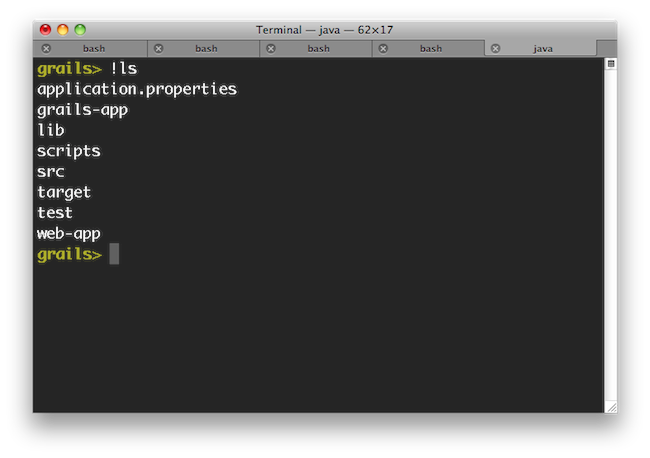
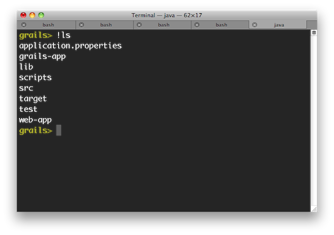

Grailsフレームワーク - Reference Documentation
Authors: Graeme Rocher, Peter Ledbrook, Marc Palmer, Jeff Brown, Luke Daley, Burt Beckwith
Version: 2.3.0.BUILD-SNAPSHOT
Translated by: T.Yamamoto, Japanese Grails Doc Translating Team.
【注意】このドキュメントの内容はスナップショットバージョンを元に*意訳*されているため、一部現行バージョンでは未対応の機能もあります。
Table of Contents
1 イントロダクション
Java web development as it stands today is dramatically more complicated than it needs to be. Most modern web frameworks in the Java space are over complicated and don't embrace the Don't Repeat Yourself (DRY) principles.
現在のJavaでのWeb開発は必要以上に複雑です。JavaのほとんどのWebフレームワークは複雑でDon't Repeat Yourself (DRY)ではありません。Dynamic frameworks like Rails, Django and TurboGears helped pave the way to a more modern way of thinking about web applications. Grails builds on these concepts and dramatically reduces the complexity of building web applications on the Java platform. What makes it different, however, is that it does so by building on already established Java technologies like Spring and Hibernate.
Rails,Django,TurboGearsといったダイナミックフレームワークはWebアプリケーションの考え方をよりモダンな方へ導いてくれました。Grailsは、Spring、Hibernateといった既に確立したJavaテクノロジーで、それらのダイナミックフレームワーク概念に基づいてJava環境でのWebアプリケーション開発の複雑さを軽減させます。Grails is a full stack framework and attempts to solve as many pieces of the web development puzzle through the core technology and its associated plugins. Included out the box are things like:
Grailsは、多くのコア・テクノロジーによるWeb開発でのパズルような断片をプラグインで連携させることで解決を試みたフルスタックフレームワークです。以下の内容をすぐに利用できます:- An easy to use Object Relational Mapping (ORM) layer built on Hibernate
- An expressive view technology called Groovy Server Pages (GSP)
- A controller layer built on Spring MVC
- A command line scripting environment built on the Groovy-powered Gant
- An embedded Tomcat container which is configured for on the fly reloading
- Dependency injection with the inbuilt Spring container
- Support for internationalization (i18n) built on Spring's core MessageSource concept
- A transactional service layer built on Spring's transaction abstraction
- Hibernate上に構築された、簡単に利用できるオブジェクト・リレーショナル・マッピング(ORM)レイヤ
- 表現豊かなビューテクノロジーGroovy Server Pages (GSP)
- コントローラレイヤは Spring MVCを利用
- コマンドラインスクリプト環境にはGroovy版のAnt Gant
- リロード可能に設定された組込 Tomcat
- 組込 Spring による依存注入
- SpringのMessageSourceで実装された国際化(i18n)対応
- Springフレームワークのトランザクション概念によるサービスレイヤのトランザクション
All of these are made easy to use through the power of the Groovy language and the extensive use of Domain Specific Languages (DSLs)
これら全ては、 Groovy と多くのDomain Specific Languages (DSL ドメイン特化言語)を活用して簡単に使用できるように実装されています。This documentation will take you through getting started with Grails and building web applications with the Grails framework.
このドキュメントは、Grailsのスタートガイドと、GrailsでのWebアプリケーション構築を紹介します。
1.1 Grails 2.3の新機能
h4. Improved Dependency Management
依存管理の向上
The default dependency resolution engine used by Grails has been changed to Aether, the dependency resolution engine used by Maven. Which engine you use can be configured in
Grailsでデフォルトで使用されている依存管理エンジンが、Mavenで使用されているエンジンの Aether に変更されました。 BuildConfig:BuildConfig で設定をすることでどちらのエンジンを使用するか変更可能です。grails.project.dependency.resolver = "maven" // or ivyUsing Aether dependency resolution in Grails results in the same behavior as when using the Maven build tool, meaning improved snapshot handling, understanding of custom packaging types and so on.
Aether依存管理を使用するとGrailsではMavenビルドツールと同じ振る舞いをします。これは、前と比べてスナップショットハンドリングの向上やカスタムパッケージング等の機能向上を意味します。In addition, the dependency-report command has been updated to print the dependency graph of the console, which helps in diagnosing dependency resolution failures. See the chapter on Dependency Resolution for more information.
そしてさらに、 dependency-report コマンドも改良され、依存問題の解決を手助けするために、依存関係のグラフがコンソールに表示されるようになりました。 詳しくは 依存性解決 のドキュメントを参照してください。h4. Data Binder
データバインダー
Grails 2.3 includes a new data binding mechanism which is more flexible and easier to maintain than the data binder used in previous versions. The new data binder includes numerous enhancements including:
Grails 2.3では、依存のバージョンよりもフレキシブルで保守性の高く簡単な新データバインダーを実装しています。- Custom date formats on a per field basis using BindingFormat
- User defined data converters using ValueConverter
- User defined formatted data converters using BindingFormat and FormattedValueConverter
- Custom binding on a per class basis using BindUsing
- Custom binding on a per field basis using BindUsing
- By default all blank and empty Strings will be converted to null during data binding (configurable)
- フィールドごとのカスタムデータフォーマット - BindingFormat
- ユーザ定義可能なデータコンバーター - ValueConverter
- ユーザ定義フォーマットデータコンバーター - BindingFormat FormattedValueConverter
- クラスごとのカスタムバインディング - BindUsing
- フィールドごとのカスタムバインディング - BindUsing
- デフォルトで全ての空文字列とブランクはデータバインディングでnullに変換されます。(設定可能)
See the Data Binding section for details.
詳細は データバインディング のセクションを参照してください。The legacy data binder may be used by assigning
true to the grails.databinding.useSpringBinder property in grails-app/conf/Config.groovy. Note that the legacy binder does not support any of the new features provided by the new data binder.grails-app/conf/Config.groovy の grails.databinding.useSpringBinder プロパティを true にすることで以前のデータバインダーに変更することができます。 以前のバインダーは今回実装された新機能には対応していません。Domain Classes As Command Objects
When a domain class is used as a command object and there is anid request parameter, the framework will retrieve the instance of the domain class from the database using the id request parameter. See the Command Objects documentation for more details.h4. Forked Execution
フォーク実行
All major commands can now be forked into a separate JVM, thus isolating the build path from the runtime / test paths. Forked execution can be controlled via the
全てのメジャーなコマンドが別々のJVMへフォークされるようになり、ビルドパスをランタイム/テストから分離します。 フォーク実行のパラメータは BuildConfig:BuildConfig に定義できます:grails.project.fork = [ test: [maxMemory: 768, minMemory: 64, debug: false, maxPerm: 256, daemon:true], // configure settings for the test-app JVM run: [maxMemory: 768, minMemory: 64, debug: false, maxPerm: 256], // configure settings for the run-app JVM war: [maxMemory: 768, minMemory: 64, debug: false, maxPerm: 256], // configure settings for the run-war JVM console: [maxMemory: 768, minMemory: 64, debug: false, maxPerm: 256]// configure settings for the Console UI JVM ]
grails.project.fork = [ test: [maxMemory: 768, minMemory: 64, debug: false, maxPerm: 256, daemon:true], // test-app用JVMへの設定 run: [maxMemory: 768, minMemory: 64, debug: false, maxPerm: 256], // run-app用JVMへの設定 war: [maxMemory: 768, minMemory: 64, debug: false, maxPerm: 256], // run-war用JVMへの設定 console: [maxMemory: 768, minMemory: 64, debug: false, maxPerm: 256]// console用JVMへの設定 ]
See the documentation on Forked Mode for more information.
詳しくは フォームモード のドキュメントを参照してください。Test Runner Daemon
To speed up testing when using forked execution a new daemon will start-up in the background to run tests when using interactive mode. You can restart the daemon with therestart-daemon command from interactive mode:$ grails> restart-daemon
Server-Side REST Improvements
Grails' REST support has been significantly improved with the addition of the following features:- Rich REST URL Mapping support with supports for resource mappings, singular resource mappings, nested resources, versioning and more
- New extensible response rendering and binding APIs
- Support for HAL, Atom and Hypermedia (HATEAOS)
- Scaffolding for REST controllers
h4. Async support
非同期サポート
Grails 2.3 features new Asynchronous Programming APIs that allow for asynchronous processing of requests and integrate seamlessly with GORM. Example:
Grails 2.3では、リクエストの非同期処理と、GORMとシームレスに統合した新たな非同期プログラミングAPIを提供しています。 例:import static grails.async.Promises.* … def index() { tasks books: Book.async.list(), totalBooks: Book.async.count(), otherValue: { // do hard work } }
See the documentation for further information.
詳しくは、 ドキュメント を参照してください。h4. Encoding / Escaping Improvements
エンコーディング / エスケーピングの向上
Grails 2.3 features dedicated support for Cross Site Scripting (XSS) prevention, including :
Grails 2.3では専用の クロスサイトスクリプティング(XSS)防御を実装しています。- Defaulting to HTML escaping all GSP expressions and scriptlets
- Context sensitive encoding switching for tags
- Double encoding prevention
- Optional automatic encoding of all data in a GSP page not considered safe
- デフォルトでGSPエクスプレッションとスクリプトレットをHTMLエスケーピング
- タグでの状況依存エンコーディング切替
- 多重エンコーディング防止
- GSPページ内の全てのデータに対して安全と判断しない場合の自動エンコーディング
See the documentation on Cross Site Scripting (XSS) prevention for more information.
詳しくは、 クロスサイトスクリプティング(XSS)防御 のドキュメントを参照してください。h4. Hibernate 3 and 4 support
Hibernate 3と4をサポート
The GORM for Hibernate 3 support for Grails has been extracted into a separate project, allowing new support for Hibernate 4 as a separate plugin.
新たにHibernate 4をプラグインでサポートするために、Hibernate 3用のGORMは、本体から別のプラグインプロジェクトとなりました。Namespaced Controllers
Controllers may now be defined in a namespace which allows for multiple controllers to be defined with the same name in different packages.// grails-app/controllers/com/app/reporting/AdminController.groovy package com.app.reportingclass AdminController { static namespace = 'reports' // … }
// grails-app/controllers/com/app/security/AdminController.groovy package com.app.securityclass AdminController { static namespace = 'users' // … }
// grails-app/conf/UrlMappings.groovy
class UrlMappings { static mappings = {
'/userAdmin' {
controller = 'admin'
namespace = 'users'
} '/reportAdmin' {
controller = 'admin'
namespace = 'reports'
} "/$namespace/$controller/$action?"()
}
}<g:link controller="admin" namespace="reports">Click For Report Admin</g:link> <g:link controller="admin" namespace="users">Click For User Admin</g:link>
h4. Command Line
コマンドライン
The
create-app command will now by default generate the command line grailsw wrapper for newly created applications. The --skip-wrapper switch may be used to prevent the wrapper from being generated.create-app コマンドがデフォルトでgrailswラッパーを生成するようになりました。ラッパーを生成しない場合は --skip-wrapper オプションを指定してください。grails create-app appname --skip-wrapper
1.2 Grails 2.2の新機能
ネームスペース対応 Namespace Support
Grails 2.2 includes improved support for managing naming conflicts between artifacts provided by an application and its plugins.
Grails 2.2では、アプリケーションとプラグインで提供するアーテファクト間での名前衝突を回避するための管理機能向上が含まれています。
Bean names for Service artifacts provided by a plugin are now prefixed with the plugin name. For example, if a Service named
プラグインで提供されたサービスアーテファクトビーン名称は、プリフィックスとしてプラグイン名が使用されます。例えば、 com.publishing.AuthorService is provided by
a plugin named PublishingUtilities and another Service named com.bookutils.AuthorService is provided by a plugin named BookUtilities, the bean names for those services
will be publishingUtilitiesAuthorService and bookUtilitiesAuthorService respectively. If a plugin provides a Service that does not have a name which conflicts with any
other Service, then a bean alias will automatically be created that does not contain the prefix and the alias will refer to the bean referenced by the prefixed name. Service
artifacts provided directly by the application will have no prefix added to the relevant bean name. See the dependency injection and services docs.
PublishingUtilities という名称のプラグインで提供された com.publishing.AuthorService という名称のサービスと、 BookUtilities という名称のプラグインで提供された com.bookutils.AuthorService という名称のサービスが存在した場合、それぞれのビーン名称は、 publishingUtilitiesAuthorService と bookUtilitiesAuthorService になります。
もし他のサービス名称がプラグインが提供したサービスの名称に衝突しない場合は、自動的にプリフィックスの無いビーンエイリアスを生成して、プリフィックスの存在するビーンを参照します。
アプリケーションで直接提供するサービスアーティファクトには、プリフィックスは追加されません。
依存注入とサービスも参照。
Domain classes provided by a plugin will have their default database table name prefixed with the plugin name if the
プラグインで提供されたドメインクラスは、 grails.gorm.table.prefix.enabled config property is
set to true. For example, if the PublishingUtilities plugin provides a domain class named Book, the default table name for that domain class will be
PUBLISHING_UTILITIES_BOOK if the grails.gorm.table.prefix.enabled config property is set to true.
grails.gorm.table.prefix.enabled が true に設定されている場合、テーブル名称にプラグイン名のプリフィックスが追加されます。例として、 PublishingUtilities プラグインが提供した Book とい名称のドメインクラスであれば、テーブル名称が PUBLISHING_UTILITIES_BOOK となります。URL Mappings may now include a
URLマッピングには、プラグインが提供したコントローラを参照させるために、 plugin attribute to indicate that the controller referenced in the mapping is provided by a particular plugin.plugin 属性を使用します。
static mappings = { // requests to /bookAuthors will be handled by the // AuthorController provided by the BookUtilities plugin "/bookAuthors" { controller = 'author' plugin = 'bookUtilities' } // requests to /publishingAuthors will be handled by the // AuthorController provided by the Publishing plugin "/publishingAuthors" { controller = 'author' plugin = 'publishing' } }
See the namespaced controllers docs for more information.
詳しくは コントローラネームスペース を参照してください。
Controller methods and GSP Tags which accept a controller name as a paramater now support an optional parameter indicating
that the controller is provided by a specific plugin.
コントローラメソッドとGSPタグにおいても、プラグインが提供したコントローラを参照させるために、 plugin 属性を使用します。<g:link controller="user" plugin="springSecurity">Manage Users</g:link>
class DemoController {
def index() {
redirect controller: 'user', action: 'list', plugin: 'springSecurity'
}
}フォークされたTomcat実行 Forked Tomcat Execution
Grails 2.2 supports forked JVM execution of the Tomcat container in development mode. This has several benefits including:
Grails 2.2では、開発モードにおいて、Tomcatコンテナを実行するJVMのフォーク実行に対応しました。幾つかの利点は次のようになります:- Reduced memory consumption, since the Grails build system can exit
- Isolation of the build classpath from the runtime classpath
- The ability to deploy other Grails/Spring applications in parallel without conflicting dependencies
- Grailsビルドシステムから抜けられるため、メモリーの消耗を減らします。
- ランタイムクラスパスから、独立したビルドクラスパス。
- 依存衝突無く並行して、別のGrails/Springアプリケーションのデプロイを可能にします。
See the documentation on using forked mode for more information.
フォークモードの使用と情報は、 ドキュメント を参照してください。クライテリアクエリーでのSQLプロジェクション SQL Projections In Criteria Queries
Grails 2.2 adds new functionality to criteria queries to provide access to Hibernate's SQL projection API.
Grails 2.2から、クライテリアクエリーで、HibernateのSQLプロジェクションAPIにアクセスが可能になりました。// Use SQL projections to retrieve the perimeter and area of all of the Box instances…
def c = Box.createCriteria()def results = c.list {
projections {
sqlProjection '(2 * (width + height)) as perimiter, (width * height) as area', ['perimeter', 'area'], [INTEGER, INTEGER]
}
}See the Criteria section for more information.
詳しくは Criteria を参照Groovy 2
Grails 2.2 ships with Groovy 2.0, which has a bunch of new features itself.
Grails 2.2は、 多くの新機能 を提供している、Groovy 2.0を同梱しています。
1.3 Grails 2.1の新機能
Maven機能向上 / Maven マルチモジュールビルド対応 Maven Improvements / Multi Module Build Support
Grails' Maven support has been improved in a number of significant ways. Firstly it is now possible to specify plugins within your
Grails Maven対応の幾つかの重要な部分が改善されました。初めに、pom.xmlファイルにプラグインを定義できるようになりました:
pom.xml file:<dependency>
<groupId>org.grails.plugins</groupId>
<artifactId>hibernate</artifactId>
<version>2.1.0</version>
<type>zip</type>
<scope>compile</scope>
</dependency>create-multi-project-build script which features initial support for Maven (Gradle coming in a future release). This script can be run from a parent directory containing Grails applications and plugins and it will generate a Maven multi-module build.Enabling Maven in a project has been made easier with the inclusion of the create-pom command:grails create-app myapp
cd myapp
grails create-pom com.mycompany
mvn packagegrails create-app myapp grails create-plugin plugin-a grails create-plugin plugin-b grails create-multi-project-build com.mycompany:parent:1.0-SNAPSHOT mvn install
Grailsラッパー Grails Wrapper
The Grails Wrapper allows a Grails application to build without having to install Grails and configure a GRAILS_HOME environment variable. The wrapper includes a small shell script and a couple of small bootstrap jar files that typically would be checked in to source code control along with the rest of the project. The first time the wrapper is executed it will download and configure a Grails installation. This wrapper makes it more simple to setup a development environment, configure CI and manage upgrades to future versions of Grails. When the application is upgraded to the next version of Grails, the wrapper is updated and checked in to the source code control system and the next time developers update their workspace and run the wrapper, they will automatically be using the correct version of Grails.See the Wrapper Documentation for more details.デバッグオプションDebug Option
The grails command now supports a -debug option which will startup the remote debug agent. This behavior used to be provided by the grails-debug command. grails-debug is still available but is deprecated and may be removed from a future release.grails -debug run-app
Grailsコマンドエイリアス Grails Command Aliases
The alias command may be used to define aliases for grails commands.The following command creates an alias named rit (short for "run integration tests"):grails alias rit test-app integration:
キャッシュプラグイン Cache Plugin
Grails 2.1 installs the cache plugin by default. This plugin provides powerful and easy to use cache functionality to applications and plugins. The main plugin provides basic map backed caching support. For more robust caching options one of the implementation plugins should be installed and configured. See the cache-redis docs and the cache-ehcache docs for details.See the main plugin documentation for details on how to configure and use the plugin.新たなGORMメソッド New GORM Methods
In Grails 2.1.1 domain classes now have static methods named first and last to retrieve the first and last instances from the datastore. See the first and last documentation for details.
1.4 Grails 2.0の新機能
This section covers the new features that are present in 2.0 and is broken down into sections covering the build system, core APIs, the web tier, persistence enhancements and improvements in testing. Note there are many more small enhancements and improvements, these sections just cover some of the highlights.
このセクションでは、現在2.0に存在する新機能、ビルドシステム、コアAPI、Web階層、永続化関連の強化等に分類し掘り下げて紹介します。他にも向上、強化した内容が多数ありますが、ここではハイライト的に紹介してます。
1.4.1 開発環境機能
インタラクティブモードとコンソールの強化 Interactive Mode and Console Enhancements
Grails 2.0 features brand new console output that is more concise and user friendly to consume. An example of the new output when running tests can be seen below:
Grails 2.0では、より簡潔でユーザフレンドリな、新コンソール出力を実装しました。以下の例はテストを実行した内容です。In general Grails makes its best effort to display update information on a single line and only present the information that is crucial. This means that while in previous versions of Grails the war command produced many lines of output, in Grails 2.0 only 1 line of output is produced:
コマンド実行の際に、重要な情報のみ１行を更新表示するようになりました。例えば、以前のバージョンまでは、warコマンドを実行すると大量のログが表示されていましたが、2.0からは1行だけで表示されます。In addition simply typing 'grails' at the command line activates the new interactive mode which features TAB completion, command history and keeps the JVM running to ensure commands execute much quicker than otherwise
さらに、単にgrailsコマンドをコンソールで実行するだけで、新しいインタラクティブモードが開始され、JVMが起動したままとなりコマンドが迅速に実行でき、タブ補完、コマンド履歴も使用できます。
For more information on the new features of the console refer to the section of the user guide that covers the console and interactive mode.
詳しい情報は、ユーザガイドのコンソールとインタラクティブモードを参照してください。 インタラクティブモード.リロードエージェント Reloading Agent
Grails 2.0 reloading mechanism no longer uses class loaders, but instead uses a JVM agent to reload changes to class files. This results in greatly improved reliability when reloading changes and also ensures that the class files stored in disk remain consistent with the class files loaded in memory, which reduces the need to run the clean command.
Grails 2.0からのリロード機能は、クラスローダを使用せずJVMエージェントを使用してクラスファイルのリロードを行います。その結果、変更保存されたクラスが確実にメモリにロードされようになり、変更時のリロードが大いに向上しました。今までより、cleanコマンドの実行回数を減らすことができます。新テストレポートとドキュメントテンプレート New Test Report and Documentation Templates
There are new templates for displaying test results that are clearer and more user friendly than the previous reports:
以前のレポートよりクリーンでユーザフレンドリーなテストリポートテンプレートに変更されました:In addition, the Grails documentation engine has received a facelift with a new template for presenting Grails application and plugin documentation:
さらに、アプリケーションやプラグインで使用する、Grailsドキュメントエンジンのテンプレートもリニューアルされました:See the section on the documentation engine for more usage info.
詳細はドキュメントエンジンのセクションを参照してください。 プロジェクト・ドキュメントプロジェクトドキュメントでの目次 Use a TOC for Project Docs
The old documentation engine relied on you putting section numbers into the gdoc filenames. Although convenient, this effectively made it difficult to restructure your user guide by inserting new chapters and sections. In addition, any such restructuring or renaming of section titles resulted in breaking changes to the URLs.You can now use logical names for your gdoc files and define the structure and section titles in a YAML table-of-contents file, as described in the section on the documentation engine. The logical names appear in the URLs, so as long as you don't change those, your URLs will always remain the same no matter how much restructuring or changing of titles you do.Grails 2.0 even provides a migrate-docs command to aid you in migrating existing gdoc user guides.エラーレポートと分析表示の強化 Enhanced Error Reporting and Diagnosis
Error reporting and problem diagnosis has been greatly improved with a new errors view that analyses stack traces and recursively displays problem areas in your code:
スタックトレース分析、コード内の位置表示など、エラーレポートと分析表示が向上しました:In addition stack trace filtering has been further enhanced to display only relevant trace information:
そして、さらにスタックトレースフィルターが強化され、関係のあるトレースのみが表示されるようになりました:Line | Method
->> 9 | getValue in Book.groovy
- - - - - - - - - - - - - - - - - - - - - - - - -
| 7 | getBookValue in BookService.groovy
| 886 | runTask . . in ThreadPoolExecutor.java
| 908 | run in ''
^ 662 | run . . . . in Thread.javaH2データベースとDBコンソール H2 Database and Console
Grails 2.0 now uses the H2 database instead of HSQLDB, and enables the H2 database console in development mode (at the URI /dbconsole) so that the in-memory database can be easily queried from the browser:
Grails 2.0では、今までのHSQLDBに代わりH2データベースを使用します。H2データベース付属のコンソール機能を開発モードで有効にしています。(URI /dbconsoleで表示可能) メモリ動作のデータベースでも簡単にブラウザからクエリ実行することができます:プラグイン使用数等のトラッキング機能 Plugin Usage Tracking
To enhance community awareness of the most popular plugins an opt-in plugin usage tracking system has been included where users can participate in providing feedback to the plugin community on which plugins are most popular.
どのプラグインが人気があるのか等の情報を収集する。プラグイン使用レポートを収集する機能が実装されました。今後のプラグインサポートや、人気の無いプラグインの今後の努力などに役立てます。This will help drive the roadmap and increase support of key plugins while reducing the need to support older or less popular plugins thus helping plugin development teams focus their efforts.
下位互換の対応を減らしている主なプラグインや、人気の無いプラグイン等の開発者が成果を確認して、今後のサポート向上とロードマップの進行を手助けになります。依存管理機能改善 Dependency Resolution Improvements
There are numerous improvements to dependency resolution handling via Ivy including:
Ivyでハンドリングされている依存管理機能に多くの改善をしました:- Grails now makes a best effort to cache the previous resolve and avoid resolving again unless you change
BuildConfig.groovy. - Plugins dependencies now appear in the dependency report generated by
grails dependency-report - Plugins published with the release plugin now publish their transitive plugin dependencies in the generated POM which are later resolved.
- It is now possible to customize the ivy cache directory via
BuildConfig.groovy
- Grailsは、
BuildConfig.groovyを変更しない限り前回の依存解決した内容を再解決させないように前回の内容をキャッシュするようになりました。 - プラグイン依存関係も
grails dependency-reportのレポートに現れるようになりました。 - release-plugin で発行されたプラグインは、推移的なプラグイン依存をPOMに発行するようになりました。
- ivyキャッシュ用ディレクトリを
BuildConfig.groovyで変更できます。
grails.project.dependency.resolution = {
cacheDir "target/ivy-cache"
}* You can change the ivy cache directory for all projects via
settings.groovysettings.groovyに設定することで、全てのプロジェクトのivyキャッシュディレクトリを変更できます。
grails.dependency.cache.dir = "${userHome}/.ivy2/cache"* It is now possible to completely disable resolution from inherited repositories (repositories defined by other plugins):
- リポジトリの引継を完全に無効にできます(他のプラグインで定義されている場合等):
grails.project.dependency.resolution = { repositories {
inherits false // Whether to inherit repository definitions from plugins
…
}
…
}* It is now possible to easily disable checksum validation errors:
- チェックサムを無効にできます:
grails.project.dependency.resolution = {
checksums false // whether to verify checksums or not
}1.4.2 コア機能
バイナリプラグイン Binary Plugins
Grails plugins can now be packaged as JAR files and published to standard maven repositories. This even works for GSP and static resources (with resources plugin 1.0.1). See the section on Binary plugins for more information.
Grailsプラグインは、JARファイルとしてパッケージして、Mavenリポジトリへ発行できるようになりました。GSPや静的リソースでも可能です。詳しくは、 バイナリプラグイン のセクションを参考にしてください。Groovy 1.8 Groovy 1.8
Grails 2.0 comes with Groovy 1.8 which includes many new features and enhancements
Grails 2.0は、多くの新機能と向上をしたGroovy 1.8がバンドルされています。 Groovy 1.8 リリースノートSpring 3.1 プロファイルサポート Spring 3.1 Profile Support
Grails' existing environment support has been bridged into the Spring 3.1 profile support. For example when running with a custom Grails environment called "production", a Spring profile of "production" is activated so that you can use Spring's bean configuration APIs to configure beans for a specific profile.
Grailsの環境サポートがSpring 3.1プロフィールサポートとブリッジできます。例えば、Grailsの環境で"production"で動作している場合、Springプロフィール"production"がアクティベートされます。これによって、Springビーン定義APIでのビーン定義でプロフィールを指定できます。
1.4.3 Web機能
コントローラのアクションにメソッドを利用 Controller Actions as Methods
It is now possible to define controller actions as methods instead of using closures as in previous versions of Grails. In fact this is now the preferred way of expressing an action. For example:
以前のクロージャで記述していたコントローラアクションをメソッドで記述可能になりました。これからはメソッド記述を推奨します。:
// action as a method
// action as a closure
// メソッドのアクション (action as a method)
def index() {}
// クロージャのアクション (action as a closure)
def index = {}アクションに引数を指定してバインド Binding Primitive Method Action Arguments
It is now possible to bind form parameters to action arguments where the name of the form element matches the argument name. For example given the following form:
フォームエレメントのname属性を、アクションメソッドの引数に指定する方法でのバインドが可能になりました。 次のようなフォームを例に:<g:form name="myForm" action="save"> <input name="name" /> <input name="age" /> </g:form>
You can define an action that declares arguments for each input and automatically converts the parameters to the appropriate type:
以下のように、それぞれを引数として定義、パラメータの型も自動で適した型に変換します:def save(String name, int age) { // remaining }
静的リソース抽象化 Static Resource Abstraction
A new static resource abstraction is included that allows declarative handling of JavaScript, CSS and image resources including automatic ordering, compression, caching and gzip handling.
JavaScript、CSS、画像などのリソースを管理、圧縮、キャッシュ、gzipを行う 静的リソース抽象化機能 が追加されました。サーブレット3.0の非同期処理 Servlet 3.0 Async Features
Grails now supports Servlet 3.0 including the Asynchronous programming model defined by the specification:
Grailsはサーブレット3.0をサポートしました。サーブレット3.0での機能、非同期処理が使用可能です:def index() {
def ctx = startAsync()
ctx.start {
new Book(title:"The Stand").save()
render template:"books", model:[books:Book.list()]
ctx.complete()
}
}リンク生成API Link Generation API
A general purpose
全面的に使用可能なリンク生成API LinkGenerator class is now available that is usable anywhere within a Grails application and not just within the context of a controller. For example if you need to generate links in a service or an asynchronous background job outside the scope of a request:LinkGenerator クラスが追加されました。コントローラのコンテキスト以外のどこからでも使用できます。例としてサービス、バックグラウンド処理、非同期タスク、リクエスト以外の場所でリンクが生成できます。LinkGenerator grailsLinkGeneratordef generateLink() {
grailsLinkGenerator.link(controller:"book", action:"list")
}ページレンダリングAPI Page Rendering API
Like the
LinkGenerator the new PageRenderer can be used to render GSP pages outside the scope of a web request, such as in a scheduled job or web service. The PageRenderer class features a very similar API to the render method found within controllers:LinkGenerator と同じく新規に追加されたAPI、 PageRenderer は、Webリクエスト以外の場所で、GSPページが描写可能です。例えば、Webサービス、スケジュールジョブなどで使用します。 PageRenderer サービスはコントローラの render メソッドと同じように使用します。grails.gsp.PageRenderer groovyPageRenderervoid welcomeUser(User user) {
def contents = groovyPageRenderer.render(view:"/emails/welcomeLetter", model:[user: user])
sendEmail {
to user.email
body contents
}
}The
PageRenderer service also allows you to pre-process GSPs into HTML templates:PageRenderer sサービスはGSPからHTMLを生成するのも可能です。new File("/path/to/welcome.html").withWriter { w -> groovyPageRenderer.renderTo(view:"/page/content", w) }
フィルター除外機能 Filter Exclusions
Filters may now express controller, action and uri exclusions to offer more options for expressing to which requests a particular filter should be applied.
フィルターでのコントローラ・アクション・URIの除外指定が実装されました。filter1(actionExclude: 'log*') {
before = {
// …
}
}
filter2(controllerExclude: 'auth') {
before = {
// …
}
}filter3(uriExclude: '/secure*') {
before = {
// …
}
}パフォーマンスの向上 Performance Improvements
Performance of GSP page rendering has once again been improved by optimizing the GSP compiler to inline method calls where possible.
再度最適化したGSPコンパイラでGSPのパフォーマンスはさらに向上しました。HTML5スカッフォルド HTML5 Scaffolding
There is a new HTML5-based scaffolding UI:
HTML5ベースのスカッフォールドUIになりました:jQueryがデフォルトになりました jQuery by Default
The jQuery plugin is now the default JavaScript library installed into a Grails application. For backwards compatibility a Prototype plugin is available. Refer to the documentation on the Prototype plugin for installation instructions.
jQueryプラグインがデフォルトのJavaScriptライブラリとしてGrailsアプリケーションにインストールされます。 下位互換として、Prototypeはプラグインとして提供しています。 Prototypeついてはプラグインのドキュメントを参考にしてください。 Prototype plugin簡単な日付解析 Easy Date Parsing
A new
date method has been added to the params object to allow easy, null-safe parsing of dates:paramsオブジェクトのnullセーフメソッドに日付用のdateが追加されました。
def val = params.date('myDate', 'dd-MM-yyyy')// or a list for formats
def val = params.date('myDate', ['yyyy-MM-dd', 'yyyyMMdd', 'yyMMdd'])// or the format read from messages.properties via the key 'date.myDate.format'
def val = params.date('myDate')URLフォーマットのカスタマイズ
The default URL Mapping mechanism supports camel case names in the URLs. The default URL for accessing an action namedaddNumbers in a controller named MathHelperController would be something like /mathHelper/addNumbers. Grails allows for the customization of this pattern and provides an implementation which replaces the camel case convention with a hyphenated convention that would support URLs like /math-helper/add-numbers. To enable hyphenated URLs assign a value of "hyphenated" to the grails.web.url.converter property in grails-app/conf/Config.groovy.// grails-app/conf/Config.groovygrails.web.url.converter = 'hyphenated'
grails.web.UrlConverter.BEAN_NAME. If Grails finds a bean in the context with that name, it will be used as the default converter and there is no need to assign a value to the grails.web.url.converter config property.// src/groovy/com/myapplication/MyUrlConverterImpl.groovypackage com.myapplicationclass MyUrlConverterImpl implements grails.web.UrlConverter { String toUrlElement(String propertyOrClassName) { // return some representation of a property or class name that should be used in URLs… } }
// grails-app/conf/spring/resources.groovybeans = {
"${grails.web.UrlConverter.BEAN_NAME}"(com.myapplication.MyUrlConverterImpl)
}Webフローのインプットとアウトプット Web Flow input and output
It is now possible to provide input arguments when calling a subflow. Flows can also return output values that can be used in a calling flow.
subflowを呼ぶ際にinput引数の提供が可能になりました。またフローは、フローを呼び出す際に使用するoutput値を返す事ができます。
1.4.4 永続化機能
GORM API The GORM API
The GORM API has been formalized into a set of classes (
GORM APIは、 GormStaticApi, GormInstanceApi and GormValidationApi) that get statically wired into every domain class at the byte code level. The result is better code completion for IDEs, better integration with Java and the potential for more GORM implementations for other types of data stores.GormStaticApi 、 GormInstanceApi 、 GormValidationApi というクラスに置き換えられたことによって、全てのドメインのバイトコードレベルに注入されます。この実装でIDEでのコード補完、Javaとの統合、様々なデータストアへのGORM実装への可能性が向上しました。DetachedクライテリアとWhereクエリー Detached Criteria and Where Queries
Grails 2.0 features support for DetachedCriteria which are criteria queries that are not associated with any session or connection and thus can be more easily reused and composed:def criteria = new DetachedCriteria(Person).build { eq 'lastName', 'Simpson' } def results = criteria.list(max:4, sort:"firstName")
where method and DSL has been introduced to greatly reduce the complexity of criteria queries:def query = Person.where {
(lastName != "Simpson" && firstName != "Fred") || (firstName == "Bart" && age > 9)
}
def results = query.list(sort:"firstName")新findOrCreateとfindOrSaveメソッド New findOrCreate and findOrSave Methods
Domain classes have support for the findOrCreateWhere, findOrSaveWhere, findOrCreateBy and findOrSaveBy query methods which behave just like findWhere and findBy methods except that they should never return null. If a matching instance cannot be found in the database then a new instance is created, populated with values represented in the query parameters and returned. In the case of findOrSaveWhere and findOrSaveBy, the instance is saved before being returned.
ドメインクラスに、findWhereやfindByメソッドに似た、nullを返さない、findOrCreateWhere, findOrSaveWhere, findOrCreateBy, findOrSaveByのクエリーをサポートしました。実行結果にインスタンスが見つからない場合は、指定された値で、新規にインスタンスを作成して返します。findOrSaveWhereとfindOrSaveByの場合はインスタンスを保存してからインスタンスを返します。def book = Book.findOrCreateWhere(author: 'Douglas Adams', title: "The Hitchiker's Guide To The Galaxy")
def book = Book.findOrSaveWhere(author: 'Daniel Suarez', title: 'Daemon')
def book = Book.findOrCreateByAuthorAndTitle('Daniel Suarez', 'Daemon')
def book = Book.findOrSaveByAuthorAndTitle('Daniel Suarez', 'Daemon')抽象クラス継承のサポート Abstract Inheritance
GORM now supports abstract inheritance trees which means you can define queries and associations linking to abstract classes:
GORMが抽象クラス継承階層をサポートしました。これによって、関連リンクやクエリ等を抽象クラスに定義することができます:abstract class Media { String title … } class Book extends Media { } class Album extends Media {} class Account { static hasMany = [purchasedMedia:Media] }..def allMedia = Media.list()
複数データソースサポート Multiple Data Sources Support
It is now possible to define multiple datasources in
DataSource.groovyに複数データソースの定義が可能になり、特定のドメインに複数のデータソースが設定できます:DataSource.groovy and declare one or more datasources a particular domain uses by default:class ZipCode { String code static mapping = {
datasource 'ZIP_CODES'
}
}If multiple datasources are specified for a domain then you can use the name of a particular datasource as a namespace in front of any regular GORM method:
複数のデータソースを定義したドメインでは、GORMメソッドの前にネームスペースとしてデータソース名を定義することで特定した実行が可能です:def zipCode = ZipCode.auditing.get(42)
For more information see the section on Multiple Data Sources in the user guide.
詳しくは 複数データソース を参照してください。データベースマイグレーション Database Migrations
A new database migration plugin has been designed and built for Grails 2.0 allowing you to apply migrations to your database, rollback changes and diff your domain model with the current state of the database.
データベースマイグレーションを行うプラグインが、Grails 2.0用にデザイン構築されました。現行の状況との違いや、変更のロールバックがデータベースマイグレーションで可能になります。 database migration pluginデータベースリバースエンジニアリング Database Reverse Engineering
A new database reverse engineering plugin has been designed and built for Grails 2.0 that allows you to generate a domain model from an existing database schema.
データベースリバースエンジニアリングを行うプラグインが、Grails 2.0用にデザイン構築されました。既存のデータベーススキーマからドメインクラスを生成可能とします。 database reverse engineeringHibernate 3.6 Hibernate 3.6
Grails 2.0 is now built on Hibernate 3.6
Grails 2.0では、Hibernate 3.6を使用しています。Bagコレクション Bag Collections
You can now use Hibernate Bags for mapped collections to avoid the memory and performance issues of loading large collections to enforce
SetのユニークまたはListの順序必要としない場合でにおいて、大きなコレクションロードのメモリーとパフォーマンス問題を回避できるコレクションマッピング、Hibernate Bagが使用できるようになりました。Set uniqueness or List order.For more information see the section on Sets, Lists and Maps in the user guide.
詳しくは セット、リスト、マップ を参照してください。
1.4.5 テスト機能
新ユニットテストのコンソール出力 New Unit Testing Console Output
Test output from the test-app command has been improved:
test-app実行時のテストコンソール出力が向上しました:新しいユニットテストAPI New Unit Testing API
There is a new unit testing API based on mixins that supports JUnit 3, 4 and Spock style tests (with Spock 0.6 and above). Example:
JUnit3,4,Spock(Spock 0.6以上)のテストに対応した、Mixinsベースの新しユニットテストAPIが追加されました:import grails.test.mixin.TestFor@TestFor(SimpleController) class SimpleControllerTests { void testIndex() { controller.home() assert view == "/simple/homePage" assert model.title == "Hello World" } }
The documentation on testing has also been re-written around this new framework.
テストのドキュメントが、この新しいフレームワークのために書き直されました。詳細は テストのドキュメント を参照してください。GORMのユニットテスト Unit Testing GORM
A new in-memory GORM implementation is present that supports many more features of the GORM API making unit testing of criteria queries, named queries and other previously unsupported methods possible.
メモリ上で動作するGORM実装により、今までにサポートされていなかった、クライテリアクエリ、名前付きクエリなど、様々なGORM APIのテストがユニットテストで可能になりました。インタラクティブモードで快速なユニットテストを Faster Unit Testing with Interactive Mode
The new interactive mode (activated by typing 'grails') greatly improves the execution time of running unit and integration tests.
'grails'と入力するだけで実行できるインタラクティブモードでのユニットテスト・統合テストの実行速度が向上しました。Unit Test スカッフォルド Unit Test Scaffolding
A unit test is now generated for scaffolded controllers
スカッフォルドされたコントローラのユニットテストが生成されるようになりました。
2 スタートガイド
2.1 インストール必要条件
Before installing Grails you will need as a minimum a Java Development Kit (JDK) installed version 1.6 or above. Download the appropriate JDK for your operating system, run the installer, and then set up an environment variable called
Grailsをインストールする前に、Java Development Kit (JDK) 1.6以上がインストール済みで、JAVA_HOME pointing to the location of this installation. If you're unsure how to do this, we recommend the video installation guides from grailsexample.net:JAVA_HOMEが指定されている必要があります。一部のプラットフォームでは(OS Xの例で言うと)、自動的にJavaのインストール先を認識します。手動で定義する場合等、必要に応じて次のようにJavaの設定を行ってください。方法がわからない場合は、コチラの動画も参考にしてください。grailsexample.net
These will show you how to install Grails too, not just the JDK.
これらの動画は、JDKのセットアップのみではなく、Grailsのインストールまで解説しています。A JDK is required in your Grails development environment. A JRE is not sufficient.
On some platforms (for example OS X) the Java installation is automatically detected. However in many cases you will want to manually configure the location of Java. For example:
一部のOS環境(OSX等)では、自動的にJavaが認識されます。別途設定したい場合は、次のように設定してください:export JAVA_HOME=/Library/Java/Home
export PATH="$PATH:$JAVA_HOME/bin"if you're using bash or another variant of the Bourne Shell.
Bashやその他のBourne Shellでの例です。
2.2 ダウンロードとインストール
The first step to getting up and running with Grails is to install the distribution. To do so follow these steps:
まず最初にGrailsをインストールすることから始めましょう。手順は次のようになります:- Download a binary distribution of Grails and extract the resulting zip file to a location of your choice
- Set the GRAILS_HOME environment variable to the location where you extracted the zip
- On Unix/Linux based systems this is typically a matter of adding something like the following
export GRAILS_HOME=/path/to/grailsto your profile - On Windows this is typically a matter of setting an environment variable under
My Computer/Advanced/Environment Variables - Then add the
bindirectory to yourPATHvariable: - On Unix/Linux based systems this can be done by adding
export PATH="$PATH:$GRAILS_HOME/bin"to your profile - On Windows this is done by modifying the
Pathenvironment variable underMy Computer/Advanced/Environment Variables
- Grailsをダウンロードし、任意の場所にzipファイルを解凍します。
- zipファイルを解凍した場所にGRAILS_HOME環境変数を設定します。
- Unix/Linuxベースのシステムでは、次のようなものをプロファイル（.profileなど）に追加します。
export GRAILS_HOME=/path/to/grails - Windowsでは、マイコンピュータ＞詳細＞環境変数に設定します。
- さらに、
PATH変数にbinディレクトリを追加する必要があります。 - Unix/Linuxベースのシステムでは、このように設定します。
export PATH="$PATH:$GRAILS_HOME/bin" - Windowsでは、マイコンピュータ＞詳細＞環境変数の
Pathに%GRAILS_HOME%binを追加します。
If Grails is working correctly you should now be able to type
ターミナルでgrails -version in the terminal window and see output similar to this:grailsと入力し実行することで下記のような出力がされれば、Grailsが正常に動作しています:
Grails version: 2.0.02.3 アプリケーション作成
To create a Grails application you first need to familiarize yourself with the usage of the
Grailsアプリケーションを作成する前に、基本的なgrails command which is used in the following manner:grailsコマンドの使用法に慣れておきましょう。
grails command name
grails [コマンド名]
Run create-app to create an application:
アプリケーションを作成するコマンドはcreate-appです。
grails create-app helloworldThis will create a new directory inside the current one that contains the project. Navigate to this directory in your console:
このコマンドを実行することにより、現在のディレクトリ内にプロジェクトが含まれる新しいディレクトリが作成されます。コンソールで、このディレクトリに移動してください。
cd helloworld2.4 ハローワールド例
Let's now take the new project and turn it into the classic "Hello world!" example. First, change into the "helloworld" directory you just created and start the Grails interactive console:
$ cd helloworld
$ grails What we want is a simple page that just prints the message "Hello World!" to the browser. In Grails, whenever you want a new page you just create a new controller action for it. Since we don't yet have a controller, let's create one now with the create-controller command:
What we want is a simple page that just prints the message "Hello World!" to the browser. In Grails, whenever you want a new page you just create a new controller action for it. Since we don't yet have a controller, let's create one now with the create-controller command:
grails> create-controller hellocreate-* commands. Type a few more letters of the command name and then <tab> again to finish.The above command will create a new controller in the grails-app/controllers/helloworld directory called HelloController.groovy. Why the extra helloworld directory? Because in Java land, it's strongly recommended that all classes are placed into packages, so Grails defaults to the application name if you don't provide one. The reference page for create-controller provides more detail on this.We now have a controller so let's add an action to generate the "Hello World!" page. The code looks like this:package helloworldclass HelloController { def index() { render "Hello World!" } }
grails> run-app
If you see the error "Server failed to start for port 8080: Address already in use", then it means another server is running on that port. You can easily work around this by running your server on a different port using -Dserver.port=9090 run-app. '9090' is just an example: you can pretty much choose anything within the range 1024 to 49151.
The result will look something like this: This is the Grails intro page which is rendered by the
This is the Grails intro page which is rendered by the grails-app/view/index.gsp file. It detects the presence of your controllers and provides links to them. You can click on the "HelloController" link to see our custom page containing the text "Hello World!". Voila! You have your first working Grails application.One final thing: a controller can contain many actions, each of which corresponds to a different page (ignoring AJAX at this point). Each page is accessible via a unique URL that is composed from the controller name and the action name: /<appname>/<controller>/<action>. This means you can access the Hello World page via /helloworld/hello/index, where 'hello' is the controller name (remove the 'Controller' suffix from the class name and lower-case the first letter) and 'index' is the action name. But you can also access the page via the same URL without the action name: this is because 'index' is the default action . See the end of the controllers and actions section of the user guide to find out more on default actions.
2.5 インタラクティブモードの利用
Grails 2.0 features an interactive mode which makes command execution faster since the JVM doesn't have to be restarted for each command. To use interactive mode simple type 'grails' from the root of any projects and use TAB completion to get a list of available commands. See the screenshot below for an example:
Grails 2.0では、コマンドの起動を速くするために、コマンド毎にJVMに再起動が必要無いインタラクティブモードを提供しています。インタラクティブモードを使用するには、プロジェクトルートで単に'grails'と入力するだけです。使用可能なコマンドをタブ補完することもできます。例としてスクリーンショットを参照してください:For more information on the capabilities of interactive mode refer to the section on Interactive Mode in the user guide.
さらなるインタラクティブモードの能力と情報に関しては、ユーザガイドのインタラクティブモードセクションを参照してください。
2.6 IDEの設定
IntelliJ IDEA
IntelliJ IDEA and the JetGroovy plugin offer good support for Groovy and Grails developers. Refer to the section on Groovy and Grails support on the JetBrains website for a feature overview.
IntelliJ IDEAとJetGroovyプラグインは、Groovy＆Grailsの開発者に十分な機能を提供します。機能概要については、JetBrainsのウェブサイトのGroovy and Grailsを参照してください。IntelliJ IDEA comes in two flavours; the open source "Community Edition" and the commercial "Ultimate Edition".
IntelliJ IDEAには、オープンソース版の"Community Edition"と商用版の"Ultimate Edition"という2種類のバージョンが存在します
Both offers support for Groovy, but only Ultimate Edition offers Grails support.
両方Groovyをサポートしていますが、Grailsは、"Ultimate Edition"のみの対応となります。With Ultimate Edition, there is no need to use the
Ultimate Editionでは、 grails integrate-with --intellij command, as Ultimate Edition understands Grails projects natively. Just open the project with File -> New Project -> Create project from existing sources.grails integrate-with --intellij コマンドを実行する必要がありません。Ultimate Editionでは、Grailsにネイティブ対応しています。プロジェクトを File -> New Project -> Create project で開くだけで良いです。You can still use Community Edition for Grails development, but you will miss out on all the Grails specific features like automatic classpath management, GSP editor and quick access to Grails commands.
Community EditionでもGrails開発に使用できますが、Grails向けの機能や自動クラスパス管理、GSPエディタ、Grailsコマンドへの対応が存在しません。To integrate Grails with Community Edition run the following command to generate appropriate project files:
GrailsでCommunity Editionの設定をするには、次のコマンドを実行してプロジェクトファイルを生成します。grails integrate-with --intellij
Eclipse
We recommend that users of Eclipse looking to develop Grails application take a look at Groovy/Grails Tool Suite, which offers built in support for Grails including automatic classpath management, a GSP editor and quick access to Grails commands. See the STS Integration page for an overview.
Eclipse ユーザーがGrailsアプリケーションの開発をする際は、Groovy/Grails Tool Suiteを探して取得することをお勧めします。それは自動クラスパス管理機能、GSPエディタやGrailsコマンドへの迅速なアクセス機能を含んだGrailsのためのサポートが組み込まれて提供されています。概要については、STS Integrationのページを参照してください。NetBeans
NetBeans provides a Groovy/Grails plugin that automatically recognizes Grails projects and provides the ability to run Grails applications in the IDE, code completion and integration with the Glassfish server. For an overview of features see the NetBeans Integration guide on the Grails website which was written by the NetBeans team.
他にも良好なオープンソースのIDEとしてSunのNetBeansがあります。NetBeansはGroovy/Grailsプラグインで自動的にGrailsプロジェクトを認識します。また、IDEでのGrailsアプリケーションの実行、コード補完、SunのGlassfishサーバとの連携などの機能も提供しています。機能概要については、NetBeansチームによって記述されたGrails公式サイト上のNetBeans Integrationガイドを参照してください。TextMate
Since Grails' focus is on simplicity it is often possible to utilize more simple editors and TextMate on the Mac has an excellent Groovy/Grails bundle available from the Texmate bundles SVN.
単純さに焦点があたっているGrailsは、より単純なエディタを利用することが可能です。そしてMac上の TextMate はTextmateにバンドルされたSVNから優秀なGroovy/Grailsバンドルを利用可能です。To integrate Grails with TextMate run the following command to generate appropriate project files:
GrailsでTextMateの設定をするには、次のコマンドを実行してTextMate用のプロジェクトファイルを生成します。grails integrate-with --textmate
Alternatively TextMate can easily open any project with its command line integration by issuing the following command from the root of your project:
またTextMateはプロジェクトのルートから次のコマンドを発行することによりコマンドラインと統合し、任意のプロジェクトを簡単に開くことができます:mate .
2.7 Convention over Configuration 設定より規約
Grails uses "convention over configuration" to configure itself. This typically means that the name and location of files is used instead of explicit configuration, hence you need to familiarize yourself with the directory structure provided by Grails.
Grailsは、"convention over configuration"を使用して、自動的に設定をおこないます。一般的に、名前とファイルの位置が明確な構成の代わりに使われることを意味します。それゆえに、Grailsによって提供されるディレクトリ構造に慣れ親む必要があります。Here is a breakdown and links to the relevant sections:
概要と関連するセクションへのリンクです。:grails-app- top level directory for Groovy sourcesconf- Configuration sources.controllers- Web controllers - The C in MVC.domain- The application domain.i18n- Support for internationalization (i18n).services- The service layer.taglib- Tag libraries.utils- Grails specific utilities.views- Groovy Server Pages - The V in MVC.scripts- Gant scripts.src- Supporting sourcesgroovy- Other Groovy sourcesjava- Other Java sourcestest- Unit and integration tests.
grails-app- Groovyのソースディレクトリの最上位conf- 設定ソースcontrollers- Webコントローラ - MVCのCdomain- アプリケーションドメインi18n- 国際化（i18n）のサポートservices- サービス層taglib- タグライブラリutils- Grails特化なユーティリティviews- Groovy Server Pagesscripts- Gantスクリプトsrc- サポートソースgroovy- その他のGroovyのソースjava- その他のJavaソースtest- ユニットテストと統合テスト
2.8 アプリケーションの起動
Grails applications can be run with the built in Tomcat server using the run-app command which will load a server on port 8080 by default:
Grailsアプリケーションは、run-appコマンドを使用することで組み込みTomcatで実行することができます。デフォルトポートは8080番です。grails run-app
You can specify a different port by using the
起動オプションにserver.port argument:server.portを指定して別のポートで起動することもできます。grails -Dserver.port=8090 run-app
$ grails grails> run-app | Server running. Browse to http://localhost:8080/helloworld | Application loaded in interactive mode. Type 'stop-app' to shutdown. | Downloading: plugins-list.xml grails> stop-app | Stopping Grails server grails> run-app | Server running. Browse to http://localhost:8080/helloworld | Application loaded in interactive mode. Type 'stop-app' to shutdown. | Downloading: plugins-list.xml
More information on the run-app command can be found in the reference guide.
run-appコマンドの詳細は、リファレンスガイドを参照してください。
2.9 アプリケーションのテスト
The
Grailsのcreate-* commands in Grails automatically create unit or integration tests for you within the test/unit or test/integration directory. It is of course up to you to populate these tests with valid test logic, information on which can be found in the section on Testing.create-*コマンドは、自動的にユニットテストまたは統合テストをそれぞれtest/unitまたtest/integrationディレクトリに生成します。スケルトンのテストのロジックは各自で実装してください。テストの詳細についてはTestingを参考にしてください。To execute tests you run the test-app command as follows:
テストを実行する場合は、test-appコマンドを使用します:grails test-app
2.10 アプリケーションのデプロイ
Grails applications are deployed as Web Application Archives (WAR files), and Grails includes the war command for performing this task:
GrailsアプリケーションはWebアプリケーションアーカイブ（WARファイル）としてデプロイされます。Grailsにはアーカイブを作成するためのwarコマンドがあります:grails war
This will produce a WAR file under the
コンテナにデプロイ可能なWarファイルがtarget directory which can then be deployed as per your container's instructions.targetディレクトリ以下に生成されます。Unlike most scripts which default to the
他のほとんどのスクリプトと違い、development environment unless overridden, the war command runs in the production environment by default. You can override this like any script by specifying the environment name, for example:warコマンドでは、環境がdevelopmentにオーバーライドされて、productionがデフォルトになります。他のスクリプトと同じく環境名を指定することで変更可能です。grails dev war
NEVER deploy Grails using the run-app command as this command sets Grails up for auto-reloading at runtime which has a severe performance and scalability implicationsGrailsを本番運用する際はWARをデプロイしてください。run-appコマンドでの運用は基本的に自動リロードなどが設定されているため、パフォーマンスやスケーラビリティに影響します。
When deploying Grails you should always run your containers JVM with the
Grailsをデプロイする場合は、-server option and with sufficient memory allocation. A good set of VM flags would be:-serverオプションと十分なメモリを割り当てて、Webコンテナを動作させましょう。JVM起動オプションの良い設定は次のようになります:-server -Xmx512M -XX:MaxPermSize=256m
2.11 サポートされている Java EE コンテナ
Grails runs on any container that supports Servlet 2.5 and above and is known to work on the following specific container products:
GrailsはServlet 2.5をサポートする任意のWebコンテナで動作します。次の製品で動作することが確認されています。
- Tomcat 7
- Tomcat 6
- SpringSource tc Server
- Eclipse Virgo
- GlassFish 3
- GlassFish 2
- Resin 4
- Resin 3
- JBoss 6
- JBoss 5
- Jetty 8
- Jetty 7
- Jetty 6
- IBM Websphere 7.0
- IBM Websphere 6.1
- Oracle Weblogic 10.3
- Oracle Weblogic 10
- Oracle Weblogic 9
- IBM WebSphere 8.5
- IBM WebSphere 8.0
- IBM WebSphere 7.0
- IBM WebSphere 6.1
It's required to set "-Xverify:none" in "Application servers > server > Process Definition > Java Virtual Machine > Generic JVM arguments" for WebSphere.WebSphereでは、"Application servers > server > Process Definition > Java Virtual Machine > Generic JVM arguments"に、"-Xverify:none"を設定する必要があります。
Some containers have bugs however, which in most cases can be worked around. A list of known deployment issues can be found on the Grails wiki.
一部のWebコンテナにはバグがありますが、ほとんどの場合では回避することができます。既知の開発時における課題の一覧は、GrailsのWikiにあります。
2.12 アプリケーション生成
To get started quickly with Grails it is often useful to use a feature called Scaffolding to generate the skeleton of an application. To do this use one of the
Grailsでは、アプリケーションのスケルトンを生成するスカッフォールディングの機能を使用することにより、素早く開発することができます。Grailsにはアプリケーションのスケルトンを生成するスカッフォールディングという機能があります。これをするには、コントローラと関連するビューを生成するgenerate-allなどを使用します。generate-* commands such as generate-all, which will generate a controller (and its unit test) and the associated views:grails generate-all Book
2.13 アーテファクトの作成
Grails ships with a few convenience targets such as create-controller, create-domain-class and so on that will create Controllers and different artefact types for you.
Grailsにはコントローラや様々なアーテファクトを生成するcreate-controllerやcreate-domain-classなどのコマンドが存在します。
These are just for your convenience and you can just as easily use an IDE or your favourite text editor.アーテファクト生成は便利機能です。IDEやテキストエディタを使用してもかまいません。
For example to create the basis of an application you typically need a domain model:
例としてドメインモデルを生成するには:grails create-domain-class book
This will result in the creation of a domain class at
このコマンドを実行すると、grails-app/domain/Book.groovy such as:grails-app/domain/Book.groovyに以下のようなドメインクラスが作成されます:class Book {
}There are many such
他にもcreate-* commands that can be explored in the command line reference guide.create-*コマンドがあります。詳しくはコマンドライン・リファレンス・ガイドを参照しましょう。To decrease the amount of time it takes to run Grails scripts, use the interactive mode.interactiveモードを使用することでGrailsスクリプトの起動時間を減らすことができます。
3 Grails下位バージョンからの更新
A number of changes need to considered when upgrading your application from Grails 2.2, including:
Grails 2.2 から更新する際にいくつか考慮する点があります。h4. New Data Binder
新データバインダー
There is a new data binding mechanism written from the ground up to meet Grails' needs. If you wish to continue using Spring for data binding then you must set thegrails.databinding.useSpringBinder property to true in grails-app/conf/Config.groovyh4. Dependency Resolution changes
依存性管理の変更
Although dependency resolution using Ivy is still supported, the default for Grails 2.3 is to use Aether and the Ivy support will not be improved upon going forward. You may wish to consider using Aether instead for your existing applications by setting the following ingrails-app/conf/BuildConfig.groovy:grails.project.dependency.resolver = "maven" // or ivyDependency Metadata Changes
In addition, the POM and dependency metadata for Grails 2.3 has been re-arranged and cleaned up so that only direct dependencies are specified for an application and all other dependencies are inherited transitvely. This has implications to the upgrade since, for example, Ehcache is now a transitive dependency of the Hibernate plugin, whilst before it was a direct dependency. If get a compilation error related to Ehcache, it is most likely that you don't have the Hibernate plugin installed and need to directly declare the Ehcache dependency:compile "net.sf.ehcache:ehcache-core:2.4.6"| Configuring classpath
:: problems summary ::
:::: WARNINGS
::::::::::::::::::::::::::::::::::::::::::::::
:: UNRESOLVED DEPENDENCIES ::
::::::::::::::::::::::::::::::::::::::::::::::
:: org.springframework#spring-test;3.2.2.RELEASE: configuration not found in org.springframework#spring-test;3.2.2.RELEASE: 'compile'. It was required from org.grails#grails-plugin-testing;2.3.0.BUILD-SNAPSHOT compile
::::::::::::::::::::::::::::::::::::::::::::::spring-test (for example the Mail plugin). To correct this run grails dependency-report and search for plugins that have a transitive dependency on spring-test and exclude them. For example:plugins {
compile ,">> {
excludes "spring-test"
}
}grails.project.dependency.resolver="maven"h4. No initial offline mode with Aether
Aetherでは初期オフラインモードがありません
Aether does not support resolving dependencies from a flat file system. This means that the jars we ship with Grails in GRAILS_HOME/lib are not used for the first resolve, but instead the jars are obtained from Maven central. After they have been obtained from Maven central then Aether operates fine offline.If however you do not have the necessary jars in your local Maven repository, then the only way to get offline execution is to enable Ivy via BuildConfig (see above).Scaffolding moved to a plugin and rewritten
If you have dynamically scaffolded controllers in your application then you will need to configure the 1.0 version of the Scaffolding plugin in BuildConfig:plugins {
compile ">>
}h4. Forked Execution for Testing
テストでのフォーク実行
Tests are now by default executed in a forked JVM (although this can be disabled). One implication of this is that tests will be slower to execute when using:grails test-app
$ grails // load interactive mode $ grails -> test-app $ grails -> test-app
forkConfig = [maxMemory: 1024, minMemory: 64, debug: false, maxPerm: 256] grails.project.fork = [ test: false, // disable forked execution for test-app run: forkConfig, // configure settings for the run-app JVM … ]
h4. Forked Execution and the Reloading Agent
フォーク実行とリロードエージェント
In Grails 2.3 the reloading agent is no longer on the build system path unless you pass the-reloading flag to the grails command:grails -reloading run-app
-reloading flag. Alternatively, you can enable forking with the following configuration in BuildConfig:forkConfig = [maxMemory: 1024, minMemory: 64, debug: false, maxPerm: 256] grails.project.fork = [ test: forkConfig, // configure settings for the test-app JVM run: forkConfig, // configure settings for the run-app JVM war: forkConfig, // configure settings for the run-war JVM console: forkConfig // configure settings for the Swing console JVM ]
h4. Forked Execution and Remote Debugging
フォーク実行とリモートデバッグ
Thegrails-debug command will no longer work with Grails for remote debugging sessions. The reason is the command enabled debugging for the build system JVM, but not the JVM used in forked execution. The solution to this is to use the debug-fork command line argument:grails --debug-fork run-app
debug setting to true in BuildConfig and use the regular grails command to execute:forkConfig = [maxMemory: 1024, minMemory: 64, debug: true, maxPerm: 256] grails.project.fork = [ run: forkConfig, // configure settings for the run-app JVM ...
h4. Changes to Core plugin versioning schemes and the Upgrade command
コアプラグインのバージョン管理方法の変更とアップグレードコマンド
Core plugins liketomcat and hibernate are no longer versioned the same as the Grails version, instead they are versioned according to the Tomcat and Hibernate version they target. If you are upgrading from Grails 2.2 you need to manually configure the correct Tomcat and Hibernate plugins in BuildConfig. The upgrade command will not do this for you!plugins {
// plugins for the build system only
build ':tomcat:7.0.40.1' // plugins needed at runtime but not for compilation
runtime ':hibernate:3.6.10.M3'
}upgrade command will be deprecated in 2.3 and replaced with a command named use-current-grails-version, which will make no attempts to automatically upgrade Grails applications.h4. Encoding / Escaping (XSS) Changes
エンコーディング・エスケーピング(XSS)の変更
Grails 2.3 includes new features to help prevent XSS attacks. These are enabled by default for new applications, but older applications will require manual intervention. See the section on Cross Site Scripting (XSS) prevention for how to appropriately configure XSS prevention.公式版では以下のドキュメントはこのページに存在しません。公式版で過去の更新注意点を確認する際には該当するバージョンのドキュメントを参照してください。
2.2以前(保存用)
公式版では以下のドキュメントはこのページに存在しません。公式版で過去の更新注意点を確認する際には該当するバージョンのドキュメントを参照してください。
Although the Grails development team have tried to keep breakages to a minimum there are a number of items to consider when upgrading a Grails 1.0.x, 1.1.x, 1.2.x, or 1.3.x applications to Grails 2.0. The major changes are described in more detail below, but here's a brief summary of what you might encounter when upgrading from Grails 1.3.x:
Grails開発チームではできる限りの下位互換を心がけていますが、Grails 2.0へ更新する際に、下位バージョンから考慮しなくてはならない内容が幾つか存在します。大きな変更点を以下にまとめます。
- Dependency resolution has been changed to only use data from the POMs to resolve, this can impact plugins and you may need to republish a plugin with corrected dependency data
*
Spring 3.1によって、同じ名称の環境が environment bean added by Spring 3.1, which will be auto-wired into properties of the same name.environment ビーンが自動追加されます。* Logging by convention packages have changed, so you may not see the logging output you expect. Update your logging configuration as described below.
- ロギングDSLのパッケージが変更されたので正常にログ出力がされない場合があります。ログの設定を変更する必要があります。
* HSQLDB has been replaced with H2 as default in-memory database. If you use the former, either change your data source to H2 or add HSQLDB as a runtime dependency.
- デフォルトのインメモリーデータベースがHSQLDBからH2へ変更になりました。使用している場合はデータソースの設定を変更するか、HSQLDBを依存管理に追加する必要があります。
* The
release-plugin command has been removed. You must now install the Release plugin and use its publish-plugin command instead. release-pluginコマンドが無くなります。代わりに、 Releaseプラグイン をインストールして、publish-pluginコマンド を使用してください。
* The
redirect() method no longer commits the response, so isCommitted() will return false. If you use that method, then call request.isRedirected() instead.redirect()メソッドがレスポンスを返さなくなります。これにより、isCommitted()はfalseを返す事になります。isCommitted()を使用している場合は、代わりにrequest.isRedirected()を使用しましょう
* The
redirect() method now uses the grails.serverURL config setting to generate the redirect URL. You may need to remove the setting, particularly from the development and test environments.redirect()メソッドは、設定のgrails.serverURLを使用してリダイレクトのURLを生成するようになります。developmentとtestの環境設定からgrails.serverURL設定を外す必要があります。
*
withFormat() no longer takes account of the request content type. If you want to do something based on the request content type, use request.withFormat().withFormat()がリクエストコンテントタイプを取得しなくなりました。リクエストコンテントタイプでの動作を実装する場合は、request.withFormat()を使用してください。
* Adaptive AJAX tags using Prototype will break. In this situation you must install the new Prototype plugin.
- Prototypeを使用したAJAXタグは動作しません。必要であれば、Prototypeプラグインをインストールしてください。
* If you install Resources (or it is installed automatically), tags like
<g:javascript> won't write anything to the page until you add the <r:layoutResources/> tags to your layout.- Resourcesプラグインをインストールした場合(または、自動的にインストールされた場合)、
<r:layoutResources/>をレイアウトに記述するまで、<g:javascript>からは何も出力されません。
* Resources adds a '/static' URL, so you may have to update your access control rules accordingly.
- ResourcesプラグインはURL '/static'を追加します。それに応じたアクセスコントロールを更新する必要があります。
* Some plugins may fail to install because one or more of their dependencies can not be found. If this happens, the plugin probably has a custom repository URL that you need to add to your project's
BuildConfig.groovy.- 幾つかのプラグインは依存が見つからなかった際にインストールに失敗する場合があります。その場合は、プラグインがカスタムリポジトリURLを使用している可能性があるので、プロジェクトの
BuildConfig.groovyに追加する必要があります。
* The behaviour of abstract domain classes has changed, so if you use them you will either have to move the abstract classes to 'src/groovy' or migrate your database schema and data.
- 抽象ドメインクラスの振る舞いが変更されました。使用している場合は、抽象クラスを'src/groovy'に移動するか、データベースのスキーマとデータを変更する必要があります。
* Criteria queries default to INNER_JOIN for associations rather than OUTER_JOIN. This may affect some of your result data.
- クライテリアクエリーのデフォルトがOUTER_JOINからINNER_JOINに変更になりました。幾つかの実装結果に影響が出る可能性があります。
* Constraints declared for non-existent properties will now throw an exception.
- 存在しないプロパティがconstraintsに定義してある場合、例外を投げるようになりました。
*
リクエスト中に beforeValidate() may be called two or more times during a request, for example once on save() and once just before the view is rendered.beforeValidate() が複数回コールされる可能性があります。例としてsave()で1回そしてビューがレンダリングされる直前など。* Public methods in controllers will now be treated as actions. If you don't want this, make them protected or private.
- コントローラ内のパブリックメソッドはアクションとして扱われるようになります。アクションとして扱われたくないメソッドは、protectedまたは、privateに変更してください。
* The new unit testing framework won't work with the old
GrailsUnitTestCase class hierarchy. Your old tests will continue to work, but if you wish to use the new annotations, do not extend any of the *UnitTestCase classes.- 新ユニットテストフレームワークにより、古い
GrailsUnitTestCaseクラス階層は使用できません。新しい仕組みを使用しながら古いテスト仕様で動作させるには、*UnitTestCaseを継承しないようにしてください。
* Output from Ant tasks is now hidden by default. If your scripts are using
ant.echo(), ant.input(), etc. you might want to use alternative mechanisms for output.- Antタスクからの出力はデフォルトで隠すようになりました。
ant.echo(),ant.input()等をスクリプトで使用している場合は、出力用の代替機能を使用してください。
* Domain properties of type java.net.URL may no longer work with your existing data. The serialisation mechanism for them appears to have changed. Consider migrating your data and domain models to String.
- ドメインプロパティでjava.net.URL型を使用している場合は、既存のデータで動作しません。シリアライゼーションの仕組みが変更になったようです。ドメインモデルとデータをStringに変更することを検討してください。
* The Ivy cache location has changed. If you want to use the old location, configure the appropriate global setting (see below) but be aware that you may run into problems running Grails 1.3.x and 2.x projects side by side.
- Ivyのキャッシュ場所が変更になりました。古い場所を使用したい場合は、グローバル設定で変更することができます。ただし、1.3.x系と2.x系を平行利用する場合は問題が発生します。
* With new versions of various dependencies, some APIs (such as the Servlet API) may have changed. If you have code that implements any of those APIs, you will need to update it. Problems will typically manifest as compilation errors.
- 多くのライブラリが新バージョンに変更されました。更新されたライブラリを使用している場合は変更が必要となります。
* The following deprecated classes have been removed:
grails.web.JsonBuilder and grails.web.OpenRicoBuilder.- 次の非推奨クラスが削除されました:
grails.web.JsonBuilder、grails.web.OpenRicoBuilder
Upgrading to 2.2 from 2.1 or 2.0
Groovy 2.0
Grails 2.2 ships with Groovy 2.0 which has some language level changes that may require changes to your code or plugins that you use.Dependency resolution
Grails 2.2 no longer uses the BuildConfig of the plugin for dependency resolution and only uses data provided by POMs, this may impact some plugins that had previously incorrectly specified dependency information.If you don't want to immediately deal with the changes necessary to upgrade, then you can openBuildConfig and set the legacyResolve settings to true:grails.project.dependency.resolution = {
…
legacyResolve false
…
}Grails 1.3.xからのアップグレード Upgrading from Grails 1.3.x
web.xmlテンプレートの内容変更 Changes to web.xml template
If you have customized the web.xml provided by
grails install-templates then you will need to update this customized template with the latest version provided by Grails. Failing to do so will lead to a ClassNotFoundException for the org.codehaus.groovy.grails.web.util.Log4jConfigListener class.grails install-templatesで提供されたweb.xmlをカスタマイズしている場合は、最新のGrailsで提供される無いように更新する必要が有ります。変更を行わなかった場合は、org.codehaus.groovy.grails.web.util.Log4jConfigListenerクラスのClassNotFoundExceptionを引き起こします。Groovy 1.8での変更点Groovy 1.8 Changes
Groovy 1.8 is a little stricter in terms of compilation so you may be required to fix compilation errors in your application that didn't occur under Grails 1.3.x.
Groovy 1.8ではｍコンパイルが少し厳しくなっています。そのため、Grails 1.3.xでは発生しなかったコンパイルエラーに対応する必要があります。Groovy 1.8 also requires that you update many of the libraries that you may be using in your application. Libraries known to require an upgrade include:
さらに、Groovy 1.8では、アプリケーションで使用している幾つかのライブラリを更新する必要があります。解っている更新が必要なライブラリは以下になります。
- Spock
- Geb
- GMock (upgrade unavailable as of this writing)
新 'environment' ビーン New 'environment' bean
Spring 3.1 adds a new bean with the name 'environment'. It's of type Environment (in package org.springframework.core.env) and it will automatically be autowired into properties with the same name. This seems to cause particular problems with domain classes that have an environment property. In this case, adding the method:
Spring 3.1から'environment'という名称の新規ビーンが追加されました。これはEnvironment型(パッケージorg.springframework.core.env)で、同じ名前のプロパティに自動ワイヤーされます。一部のドメインクラスプロパティでenvironmentの名称をもつ物に問題が起きる可能性があります。その場合次のようにメソッドを追加して回避してください:
void setEnvironment(org.springframework.core.env.Environment env) {}works around the problem.
HSQLDBからH2へ変更 HSQLDB Has Been Replaced With H2
HSQLDB is still bundled with Grails but is not configured as a default runtime dependency. Upgrade options include replacing HSQLDB references in DataSource.groovy with H2 references or adding HSQLDB as a runtime dependency for the application.
HSQLDBは現在もGrailsにバンドルされていますが、デフォルトでは依存定義されていません。アップグレードした場合はDataSource.groovyのHSQLDB定義をH2に変更するか、依存管理にHSQLDBを追加する必要があります。If you want to run an application with different versions of Grails, it's simplest to add HSQLDB as a runtime dependency, which you can do in BuildConfig.groovy:
もしアプリケーションを他のバージョンのGrailsと平行して動作させたい場合は、単純にBuildConfig.groovyの依存定義にHSQLDBを追加しましょう: // Add HSQLDB as a runtime dependency
grails.project.dependency.resolution = {
inherits("global") {
}
repositories {
grailsPlugins()
grailsHome()
grailsCentral()
} dependencies {
// HSQLDBの依存定義 (Add HSQLDB as a runtime dependency)
runtime 'hsqldb:hsqldb:1.8.0.10'
}
}A default DataSource.groovy which is compatible with H2 looks like this:
H2データベースへ変更する場合は、以下を参考にして、DataSource.groovyを変更してください:dataSource {
driverClassName = "org.h2.Driver"
username = "sa"
password = ""
}
// environment specific settings
environments {
development {
dataSource {
dbCreate = "create-drop" // one of 'create', 'create-drop','update'
url = "jdbc:h2:mem:devDb"
}
}
test {
dataSource {
dbCreate = "update"
url = "jdbc:h2:mem:testDb"
}
}
production {
dataSource {
dbCreate = "update"
url = "jdbc:h2:prodDb"
}
}
}Another significant difference between H2 and HSQLDB is in the handling of
他にH2とHSQLDBの重大な違いは、ドメインクラスのプロパティで定義した byte[] domain class properties. HSQLDB's default BLOB size is large and so you typically don't need to specify a maximum size. But H2 defaults to a maximum size of 255 bytes! If you store images in the database, the saves are likely to fail because of this. The easy fix is to add a maxSize constraint to the byte[] property:byte[] の扱いです。HSQLDBでのBLOBのデフォルトサイズは、大きいので大抵最大サイズを定義する必要が無かったかと思います。H2では最大サイズの初期値が255バイトになっているので、調整する必要があります。調整するには、 制約の maxSize を byte[] のプロパティに定義するだけです。class MyDomain {
byte[] data static constraints = {
data maxSize: 1024 * 1024 * 2 // 2MB
}
}This constraint influences schema generation, so in the above example H2 will have the
上記の制約定義でスキーマ生成を変更します。この例では、dataカラムは、 data column set to BINARY(2097152) by Hibernate.BINARY(2097152) としてHibernateがセットします。抽象クラスの継承が変更になります Abstract Inheritance Changes
In previous versions of Grails abstract classes in
以前のバージョンで、 grails-app/domain were not treated as persistent. This is no longer the case and has a significant impact on upgrading your application. For example consider the following domain model in a Grails 1.3.x application:grails-app/domain に存在する抽象クラスは、永続化対象として扱われませんでした。今後は違うため、アプリケーション更新には重大な影響を与えます。例として以下のようなドメインモデルをGrails-1.3.xで持っていたとします。abstract class Sellable {} class Book extends Sellable {}
In Grails 1.3.x you would get a BOOK table and the properties from the
Grails 1.3.xの場合は、 Sellable class would be stored within the BOOK table. However, in Grails 2.x you will get a SELLABLE table and the default table-per-hierarchy inheritance rules apply with all properties of the Book stored in the SELLABLE table.BOOK テーブルが生成され、BOOKテーブルに Sellable クラスのプロパティも含まれました。Grails 2.0からは、デフォルトのtable-per-hierarchy (クラス階層ごとのテーブル)継承ルールで、 BOOK クラスの全てのプロパティが含まれた SELLABLE テーブルが生成されます。You have two options when upgrading in this scenario:
これを更新するには２つの方法があります:- Move the abstract
Sellableclass into the src/groovy package. If theSellableclass is in thesrc/groovydirectory it will no longer be regarded as persistent. - Use the database migration plugin to apply the appropriate changes to the database (typically renaming the table to the root abstract class of the inheritance tree).
- 抽象クラス
Sellableをsrc/groovyに移動する。src/groovyに移動すれば永続化対象のクラスとしては認識しません。 - データベースマイグレーションプラグイン を使用して、データベースに適した変更を行う。(通常はルート抽象クラスのテーブル名称に変更すれば良いです。)
クライテリアクエリのデフォルトがINNER JOINになります Criteria Queries Default to INNER JOIN
The previous default of LEFT JOIN for criteria queries across associations is now INNER JOIN.
今まではLEFT JOINがデフォルトでした。これからはINNER JOINになります。存在しないプロパティの制約で例外を投げます Invalid Constraints Now Thrown an Exception
Previously if you defined a constraint on a property that doesn't exist no error would be thrown:
以前は存在しないプロパティをconstraintに定義してもエラーが出ませんでした:
class Person {
String name
static constraints = {
bad nullable:false // invalid property, no error thrown
}
}Now the above code will result in an exception
上記のコードは、例外を投げるようになります。ログでの慣習変更 Logging By Convention Changes
The packages that you should use for Grails artifacts have mostly changed. In particular:
Grailsアーテファクトのパッケージのほぼ全てが変更になりました:service->servicescontroller->controllerstagLib->taglib(case change)bootstrap->confdataSource->conf
service->servicescontroller->controllerstagLib->taglib(Lが小文字に)bootstrap->confdataSource->conf
You can find out more about logging by convention in the main part of the user guide, under "Configuring loggers". This change is a side-effect of injecting the
ログの詳細については、 ユーザガイド を参考にしてください。log property into artefacts at compile time.PrototypeからjQueryに変更 jQuery Replaces Prototype
The Protoype Javascript library has been removed from Grails core and now new Grails applications have the jQuery plugin configured by default. This will only impact you if you are using Prototype with the adaptive AJAX tags in your application, e.g. <g:remoteLink/> etc, because those tags will break as soon as you upgrade.
JavascriptライブラリPrototypeはGrailsのコアから削除されました。今後はjQueryがデフォルトとして定義されます。この変更では、ProtoypeベースのAJAXライブラリを使用してる場合に影響を受けます。例えば<g:remoteLink/>などは、アップデートをしたら直ちに影響を受けます。To resolve this issue, simply install the Prototype plugin in your application. You can also remove the prototype files from your
この問題は Prototypeプラグイン をインストールすることで解決できます。Prototypeはプラグイン内から参照するようになるので、不用になるweb-app/js/prototypeディレクトリは削除できます。web-app/js/prototype directory if you want.Resourcesプラグイン The Resources Plugin
The Resources plugin is a great new feature of Grails that allows you to manage static web resources better than before, but you do need to be aware that it adds an extra URL at /static. If you have access control in your application, this may mean that the static resources require an authenticated user to load them! Make sure your access rules take account of the /static URL.コントローラのパブリックメソッド Controller Public Methods
As of Grails 2.0, public methods of controllers are now treated as actions in addition to actions defined as traditional Closures. If you were relying on the use of methods for privacy controls or as helper methods then this could result in unexpected behavior. To resolve this issue you should mark all methods of your application that are not to be exposed as actions as
Grails 2.0からは、今までのクロージャに加えて、コントローラのパブリックメソッドもアクションとして扱われるようになりました。もし補助機能や内部機能としてメソッドを使用している場合は必ずメソッドを private methods.private にしてください。コマンドオブジェクト制約 Command Object Constraints
As of Grails 2.0, constrained properties in command object classes are no longer nullable by default. Nullable command object properties must be explicitly configured as such in the same way that nullable persistent properties in domain classes are configured.
Grails 2.0よりコマンドオブジェクトのプロパティ制約はnullableが既存値ではなくなりました。Nullable指定のコマンドオブジェクトプロパティは明示的に指定する必要があります。指定方法はドメインクラスと同じです。
リダイレクトメソッド The redirect Method
The redirect method no longer commits the response. The result of this is code that relies of this behavior will break in 2.0. For example:
リダイレクト redirect メソッドがレスポンスを返さなくなります。以下のコードは2.0では動作しなくなります:redirect action: "next" if (response.committed) { // do something }
In this case in Grails 1.3.x and below the
このケースが1.3.xの場合では、 response.committed property would return true and the if block will execute. In Grails 2.0 this is no longer the case and you should instead use the new isRedirected() method of the request object:response.committed プロパティがtrueを返すため if ブロックが実行されます。Grails 1.4では、同等の動きをしないため、代わりに request インスタンスの isRedirected() メソッドを使用します。redirect action: "next" if (request.redirected) { // do something }
Another side-effect of the changes to the redirect method is that it now always uses the
他のリダイレクトメソッドへの変更による副作用は、 grails.serverURL configuration option if it's set. Previous versions of Grails included default values for all the environments, but when upgrading to Grails 2.0 those values more often than not break redirection. So, we recommend you remove the development and test settings for grails.serverURL or replace them with something appropriate for your application.grails.serverURL が設定されていれば常に使用するという点です。以前のバージョンのGrailsではデフォルトの値を保持していました、Grails 2.0に更新するとそれらを参照するために問題が発生します。したがって、test、developmentの定義から grails.serverURL を外すか、妥当な値に設定することを推奨します。コンテントネゴシエーション Content Negotiation
As of Grails 2.0 the withFormat method of controllers no longer takes into account the request content type (dictated by the
Grails 2.0からコントローラのwithFormatメソッドは、リクエストのコンテントタイプ(CONTENT_TYPE header), but instead deals exclusively with the response content type (dictated by the ACCEPT header or file extension). This means that if your application has code that relies on reading XML from the request using withFormat this will no longer work:CONTENT_TYPEヘッダ)を評価しなくなりました。これにかわって、レスポンスのコンテントタイプ(ACCEPTヘッダまたはファイル拡張子)が排他的に処理を行います。これによって今までのアプリケーションのwithFormatを使用してリクエストからXMLを読み込む等のコードは動作しなくなります。def processBook() {
withFormat {
xml {
// read request XML
}
html {
// read request parameters
}
}
}Instead you use the
withFormat method provided on the request object:withFormat の代わりに、 request オブジェクトで提供されているwithFormatメソッドを使用できます:def processBook() {
request.withFormat {
xml {
// read request XML
}
html {
// read request parameters
}
}
}ユニットテストフレームワーク Unit Test Framework
Grails 2 introduces a new unit testing framework that is simpler and behaves more consistently than the old one. The old framework based on the
Grails 2では、古い仕様より単純でかつ安定した、新しいユニットテストフレームワークを実装しています。下位互換としてGrailsUnitTestCase class hierarchy is still available for backwards compatibility, but it does not work with the new annotations.GrailsUnitTestCaseクラス階層をベースとした古いフレームワークも使用可能です。但し、新しい仕組みのアノテーションとは平行利用できません。Migrating unit tests to the new approach is non-trivial, but recommended. Here are a set of mappings from the old style to the new:
新しい仕組みのユニットテストへの移行は大変ですが推奨します。以下は古い仕組みから新しい仕組みへ更新する方法です:- Remove
extends *UnitTestCaseand add a@TestForannotation to the class if you're testing a core artifact (controller, tag lib, domain class, etc.) or@TestMixin(GrailsUnitTestMixin)for non-core artifacts and non-artifact classes. - Add
@Mockannotation for domain classes that must be mocked and usenew MyDomain().save()in place ofmockDomain(). - Replace references to
mockRequest,mockResponseandmockParamswithrequest,responseandparams. - Remove references to
renderArgsand use theviewandmodelproperties for view rendering, orresponse.textfor all others. - Replace references to
redirectArgswithresponse.redirectedUrl. The latter takes into account the URL mappings as is a string URL rather than a map ofredirect()arguments. - The
mockCommandObject()method is no longer needed as Grails automatically detects whether an action requires a command object or not.
- コアアーテファクト(コントローラ、タグリブ、ドメインクラス等)のテストの場合は、
extends *UnitTestCaseを削除して、@TestForアノテーションをクラスに追加します。コアアーティファクト以外やアーティファクト以外の場合は、@TestMixin(GrailsUnitTestMixin)アノテーションを追加します。 - モックするドメインクラスで、
mockDomain()の代わりに、new MyDomain().save()を使用するために、@Mockアノテーションでドメインクラスを指定します。 mockRequest、mockResponse、mockParamsへの参照をrequest、response、paramsに変更します。renderArgsを参照している部分を削除して、viewとmodelプロパティをビューレンダリング用に、また他はresponse.textを使用するようにします。redirectArgsは、response.redirectedUrlに変更します。後者はURLマッピングの内容を、redirect()のマップのでは無く、文字列のURLで返します。mockCommandObject()メソッドは、アクションが必要であれば自動的にコマンドオブジェクトを認識するため必要無くなりました。
There are other differences, but these are the main ones. We recommend that you read the chapter on testing thoroughly to understand everything that has changed.
他にも違いは多数有りますが、これらがメインとなります。chapter on testingをしっかり読んで理解することを推奨します。Note that the Grails annotations don't need to be imported in your test cases to run them from the command line, but your IDE may need them. So, here are the relevant classes with packages:
Grailsのアノテーションはコマンドラインで実行する場合はインポートする必要が有りませんが、IDEは必要とします。ここに関連するクラスとパッケージを列挙します。
grails.test.mixin.TestForgrails.test.mixin.TestMixingrails.test.mixin.Mockgrails.test.mixin.support.GrailsUnitTestMixingrails.test.mixin.domain.DomainClassUnitTestMixingrails.test.mixin.services.ServiceUnitTestMixingrails.test.mixin.web.ControllerUnitTestMixingrails.test.mixin.web.FiltersUnitTestMixingrails.test.mixin.web.GroovyPageUnitTestMixingrails.test.mixin.web.UrlMappingsUnitTestMixingrails.test.mixin.webflow/WebFlowUnitTestMixin
コマンドライン出力 Command Line Output
Ant output is now hidden by default to keep the noise in the terminal to a minimum. That means if you use
ターミナルの表示を最小にするためにAnt出力は表示されなくなりました。これによりスクリプトでの出力としての ant.echo in your scripts to communicate messages to the user, we recommend switching to an alternative mechanism.ant.echo からのメッセージは表示されなくなります。それに変わる方法に変更することをお勧めします。For status related messages, you can use the event system:
ステータス表示には、イベントの仕組みが使用できます:event "StatusUpdate", ["Some message"] event "StatusFinal", ["Some message"] event "StatusError", ["Some message"]
For more control you can use the
さらなる制御として、api:grails.build.logging.GrailsConsoleインスタンスにアクセスするスクリプト変数 GrailsConsole|api:grails.build.logging.GrailsConsole] を使用することもできます。特に情報のログをとるための、 grailsConsole script variable, which gives you access to an instance of GrailsConsole. In particular, you can log information messages with log() or info(), errors and warnings with error() and warning(), and request user input with userInput().log() 、 info() 、エラーや警告用に error() 、 warning() を使用したり、ユーザからの入力を要求する場合は userInput() を使用できます。カスタムプラグインリポジトリー Custom Plugin Repositories
Many plugins have dependencies, both other plugins and straight JAR libraries. These are often located in Maven Central, the Grails core repository or the Grails Central Plugin Repository in which case applications are largely unaffected if they upgrade to Grails 2. But sometimes such dependencies are located elsewhere and Grails must be told where they can be found.Due to changes in the way Grails handles the resolution of dependencies, Grails 2.0 requires you to add any such custom repository locations to your project if an affected plugin is to install properly.Ivyキャッシュ場所が変更 Ivy cache location has changed
The default Ivy cache location for Grails has changed. If the thought of yet another cache of JARs on your disk horrifies you, then you can change this in your settings.groovy:grails.dependency.cache.dir = "${userHome}/.ivy2/cache"URL型のドメインプロパティURL Domain Properties
If your domain model has any properties of type java.net.URL, they may cease to work once you upgrade to Grails 2. It seems that the default mapping of URL to database column has changed with the new version of Hibernate. This is a tricky problem to solve, but in the long run it's best if you migrate your URL properties to strings. One technique is to use the database migration plugin to add a new text column and then execute some code in BootStrap (using Grails 1.3.x or earlier) to fetch each row of the table as a domain instance, convert the URL properties to string URLs, and then write those values to the new column.基盤となるAPIの更新 Updated Underlying APIs
Grails 2.0 contains updated dependencies including Servlet 3.0, Tomcat 7, Spring 3.1, Hibernate 3.6 and Groovy 1.8. This means that certain plugins and applications that depend on earlier versions of these APIs may no longer work. For example the Servlet 3.0
Grails 2.0では、Servlet 3.0、Tomcat 7、Spring 3.1、Hibernate 3.6、Groovy 1.8などのライブラリを更新しました。以前のバージョンのプラグインなどでこれらのライブラリに依存がある場合動作しなくなります。例としてServlet 3.0の HttpServletRequest interface includes new methods, so if a plugin implements this interface for Servlet 2.5 but not for Servlet 3.0 then said plugin will break. The same can be said of any Spring interface.HttpServletRequest インターフェイスは新しい物を多く含んでいます。この逆もあり得るので、Servlet 2.5のインターフェイスで実装され、Servlet 3.0に存在しない機能を持っているプラグインは動作しません。もちろんこの事はSpringなど他のライブラリにも同じ事が言えます。注意しましょう。release-pluginコマンド除去 Removal of release-plugin
The built in
プラグインを公式リポジトリに発行するコマンド release-plugin command for releases plugins to the central Grails plugin repository has been removed. The new release plugin should be used instead which provides an equivalent publish-plugin command.
release-plugin が除去されました。新たに リリースプラグイン を使用して同じ意味を持つ publish-plugin コマンドを使用してください。非推奨クラスの除去 Removal of Deprecated Classes
The following deprecated classes have been removed:
次のクラスが除去されました。 grails.web.JsonBuilder, grails.web.OpenRicoBuildergrails.web.JsonBuilder , grails.web.OpenRicoBuilderGrails 1.2.x からのアップグレード Upgrading from Grails 1.2.x
プラグイン・リポジトリ Plugin Repositories
As of Grails 1.3, Grails no longer natively supports resolving plugins against secured SVN repositories. The plugin resolution mechanism in Grails 1.2 and below has been replaced by one built on Ivy, the upside of which is that you can now resolve Grails plugins against Maven repositories as well as regular Grails repositories.
Grails 1.3では、認証付きSVNリポジトリ内のプラグイン解決に標準では対応しなくなりました。Grails 1.2以前のプラグイン解決の仕組みは、Ivyをベースに構築された実装により、Grailsのライブラリと同等にMavenリポジトリを対象に、プラグイン解決の仕組みに変更されました。
Ivy supports a much richer set of repository resolvers for resolving plugins, including support for Webdav, HTTP, SSH and FTP. See the section on resolvers in the Ivy docs for all the available options and the section of plugin repositories in the user guide which explains how to configure additional resolvers.
Ivyでは、WebDAV, HTTP, SSHやFTPなど豊富なリポジトリ解決方法があります。利用可能なオプションについてはIvyのドキュメントのリゾルバのセクションを、追加のリゾルバの設定方法については、このユーザーガイドのプラグイン・リポジトリのセクションを参照してください。If you still need support for resolving plugins against secured SVN repositories then the IvySvn project provides a set of resolvers for SVN repositories.
認証付きSVNリポジトリ内に対してのプラグイン解決が必要な場合は、SVNリポジトリに対してのIvyリゾルバを提供しているIvySvnプロジェクトを参考にしてください。Grails 1.1.x からのアップグレード Upgrading from Grails 1.1.x
翻訳チームの判断により、Grails 1.1.xからの更新は翻訳を行いません。ご了承ください。
プラグインのパス Plugin paths
In Grails 1.1.x typically a
Grails 1.1.xではプラグイン内のリソースを参照するために変数pluginContextPath variable was used to establish paths to plugin resources. For example:pluginContextPathが、以下のように使用されていました:<g:resource dir="${pluginContextPath}/images" file="foo.jpg" />
In Grails 1.2 views have been made plugin aware and this is no longer necessary:
Grails 1.2からはプラグイン認識されるため、この変数は不要になりました:<g:resource dir="images" file="foo.jpg" />
Additionally the above example will no longer link to an application image from a plugin view. To do so change the above to:
この変更により、上記の例ではプラグイン内のビューからアプリケーション本体の/imagesなどへのパスを生成しません。従って、アプリケーション本体へのパスを生成するためには、次のようにする必要があります:<g:resource contextPath="" dir="images" file="foo.jpg" />
The same rules apply to the javascript and render tags.
javascriptタグやrenderタグも同様の記述ができます。タグとボディの戻り値 Tag and Body return values
Tags no longer return
タグはjava.lang.String instances but instead return a Grails StreamCharBuffer instance. The StreamCharBuffer class implements all the same methods as String but doesn't extend String, so code like this will break:java.lang.Stringインスタンスを返さず、その代わりにStreamCharBufferインスタンスを返します。StreamCharBufferクラスは、Stringと同じメソッドを実装していますが、このようなコードの場合は破綻します:def foo = body() if (foo instanceof String) { // do something }
In these cases you should check for the
この場合、java.lang.CharSequence interface, which both String and StreamCharBuffer implement:StringとStreamCharBufferの両方が実装しているjava.lang.CharSequenceインタフェースを使用します:def foo = body() if (foo instanceof CharSequence) { // do something }
新しいJSONBuilder New JSONBuilder
There is a new version of JSONBuilder which is semantically different from the one used in earlier versions of Grails. However, if your application depends on the older semantics you can still use the deprecated implementation by setting the following property to true in Config.groovy:grails.json.legacy.builder=trueフラッシュでのバリデーション Validation on Flush
Grails now executes validation routines when the underlying Hibernate session is flushed to ensure that no invalid objects are persisted. If one of your constraints (such as a custom validator) executes a query then this can cause an additional flush, resulting in a StackOverflowError. For example:static constraints = { author validator: { a -> assert a != Book.findByTitle("My Book").author } }
StackOverflowError in Grails 1.2. The solution is to run the query in a new Hibernate session (which is recommended in general as doing Hibernate work during flushing can cause other issues):static constraints = { author validator: { a -> Book.withNewSession { assert a != Book.findByTitle("My Book").author } } }
Grails 1.0.xからのアップグレード Upgrading from Grails 1.0.x
翻訳チームの判断により、Grails 1.0.xからの更新は翻訳を行いません。ご了承ください。
Groovy 1.6
Grails 1.1 and above ship with Groovy 1.6 and no longer supports code compiled against Groovy 1.5. If you have a library that was compiled with Groovy 1.5 you must recompile it against Groovy 1.6 or higher before using it with Grails 1.1.Java 5.0
Grails 1.1 now no longer supports JDK 1.4, if you wish to continue using Grails then it is recommended you stick to the Grails 1.0.x stream until you are able to upgrade your JDK.Configuration Changes
1) The settinggrails.testing.reports.destDir has been renamed to grails.project.test.reports.dir for consistency.2) The following settings have been moved from grails-app/conf/Config.groovy to grails-app/conf/BuildConfig.groovy:
grails.config.base.webXmlgrails.project.war.file(renamed fromgrails.war.destFile)grails.war.dependenciesgrails.war.copyToWebAppgrails.war.resources
grails.war.java5.dependencies option is no longer supported, since Java 5.0 is now the baseline (see above).4) The use of jsessionid (now considered harmful) is disabled by default. If your application requires jsessionid you can re-enable its usage by adding the following to grails-app/conf/Config.groovy:grails.views.enable.jsessionid=truePlugin Changes
As of version 1.1, Grails no longer stores plugins inside yourPROJECT_HOME/plugins directory by default. This may result in compilation errors in your application unless you either re-install all your plugins or set the following property in grails-app/conf/BuildConfig.groovy:grails.project.plugins.dir="./plugins"Script Changes
1) If you were previously using Grails 1.0.3 or below the following syntax is no longer support for importing scripts from GRAILS_HOME:Ant.property(environment:"env") grailsHome = Ant.antProject.properties."env.GRAILS_HOME"includeTargets << new File("${grailsHome}/scripts/Bootstrap.groovy")
grailsScript method to import a named script:includeTargets << grailsScript("_GrailsBootstrap")Ant should be changed to ant.3) The root directory of the project is no longer on the classpath, so loading a resource like this will no longer work:def stream = getClass().classLoader.getResourceAsStream(
"grails-app/conf/my-config.xml")basedir property:new File("${basedir}/grails-app/conf/my-config.xml").withInputStream { stream -> // read the file }
Command Line Changes
Therun-app-https and run-war-https commands no longer exist and have been replaced by an argument to run-app:grails run-app -https
Data Mapping Changes
1) Enum types are now mapped using their String value rather than the ordinal value. You can revert to the old behavior by changing your mapping as follows:static mapping = { someEnum enumType:"ordinal" }
REST Support
Incoming XML requests are now no longer automatically parsed. To enable parsing of REST requests you can do so using theparseRequest argument inside a URL mapping:"/book"(controller:"book",parseRequest:true)
resource argument, which enables parsing by default:"/book"(resource:"book")
4 設定
It may seem odd that in a framework that embraces "convention-over-configuration" that we tackle this topic now. With Grails' default settings you can actually develop an application without doing any configuration whatsoever, as the quick start demonstrates, but it's important to learn where and how to override the conventions when you need to. Later sections of the user guide will mention what configuration settings you can use, but not how to set them. The assumption is that you have at least read the first section of this chapter!
設定より規約(convention-over-configuration)を採用したフレームワークにおいて設定の説明をするのは、なんだかおかしく思えるかもしれません。
クイックスタートにあるように、Grailsのデフォルト設定を使用すると、実際には一切設定をすることなくアプリケーション開発を始めることができますが、必要な時に規約をどこでどのようにオーバーライドするのか学んでおくことは重要です。
これ以降のセクションでは、どんな設定が利用できるかについては言及しますが、どのように設定するかは言及しません。
というのは、少なくともこの章の最初のセクションは読むだろうと仮定しているからです！
4.1 基本設定
For general configuration Grails provides two files:
Grailsでは一般的な設定を行うために2つのファイルを提供しています:
grails-app/conf/BuildConfig.groovygrails-app/conf/Config.groovy
Both of them use Groovy's ConfigSlurper syntax. The first,
両方ともGroovyのConfigSlurperの構文を使用しています。
1つめのBuildConfig.groovy, is for settings that are used when running Grails commands, such as compile, doc, etc. The second file, Config.groovy, is for settings that are used when your application is running. This means that Config.groovy is packaged with your application, but BuildConfig.groovy is not. Don't worry if you're not clear on the distinction: the guide will tell you which file to put a particular setting in.
BuildConfig.groovyはcompileやdoc等のようなGrailsコマンドを実行するときに使われる設定です。
2つめのConfig.groovyはアプリケーションを実行するときに使われる設定です。
つまり、Config.groovyはアプリケーションにパッケージされますが、BuildConfig.groovyはされません。
違いがよく分からなくても心配する必要はありません。
どの設定をどのファイルに書くべきかはこのガイドで示していきます。
The most basic syntax is similar to that of Java properties files with dot notation on the left-hand side:
左辺にJavaのプロパティファイルのような、ドット区切りの文があるものが最も基本的な構文となります:foo.bar.hello = "world"
Note that the value is a Groovy string literal! Those quotes around 'world' are important. In fact, this highlights one of the advantages of the ConfigSlurper syntax over properties files: the property values can be any valid Groovy type, such as strings, integers, or arbitrary objects!
この値がGroovyの文字列リテラルであることに注意してください！
'world'を囲んでいる引用符が重要です。
実際に、これがプロパティファイルに対するConfigSlurperのシンタックスの有利な点の1つを際立たせています。
プロパティの値は文字列や整数、任意のオブジェクトのような、Groovyとして有効な型を取ることができるのです！
Things become more interesting when you have multiple settings with the same base. For example, you could have the two settings
同じベースで複数の設定をすると、もっとおもしろいことになります。
例えば、2つの設定を持つことができます。foo.bar.hello = "world" foo.bar.good = "bye"
both of which have the same base:
両方ともfoo.bar. The above syntax works but it's quite repetitive and verbose. You can remove some of that verbosity by nesting properties at the dots:
foo.barという同じベースを持っています。
上記の構文は動作しますが、繰り返しがかなり冗長です。
プロパティのドットの箇所でネストして、冗長さを無くすことができます:foo {
bar {
hello = "world"
good = "bye"
}
}
or by only partially nesting them:
または、それらを一部だけネストできます:foo {
bar.hello = "world"
bar.good = "bye"
}
However, you can't nest after using the dot notation. In other words, this won't work:
しかしながら、ドット区切りの後にネストを使うことはできません。
つまり、これは動作しません:// Won't work!
foo.bar {
hello = "world"
good = "bye"
}
Within both
BuildConfig.groovy and Config.groovy you can access several implicit variables from configuration values:
BuildConfig.groovyとConfig.groovy内では、設定値からいくつかの暗黙の変数にアクセスできます:| Variable | Description |
|---|---|
| userHome | Location of the home directory for the account that is running the Grails application. |
| grailsHome | Location of the home directory for the account that is running the Grails application. |
| appName | The application name as it appears in application.properties. |
| appVersion | The application version as it appears in application.properties. |
| 変数 | 説明 |
|---|---|
| userHome | Grailsアプリケーションを実行しているアカウントのホームディレクトリの場所です。 |
| grailsHome | Grailsがインストールされているディレクトリの場所です。環境変数GRAILS_HOMEが設定されているときはその値が格納されます。 |
| appName | application.properties内に表記しているアプリケーション名です。 |
| appVersion | application.properties内に表記しているアプリケーションバージョンです。 |
For example:
例:my.tmp.dir = "${userHome}/.grails/tmp"
In addition,
加えて、BuildConfig.groovy has
BuildConfig.groovyは以下の変数を持っています。| Variable | Description |
|---|---|
| grailsVersion | The version of Grails used to build the project. |
| grailsSettings | An object containing various build related settings, such as baseDir. It's of type BuildSettings. |
| 変数 | 説明 |
|---|---|
| grailsVersion | プロジェクトをビルドするために使われたGrailsのバージョンです。 |
| grailsSettings | baseDirのような、ビルドに関連する様々な設定を格納したオブジェクトです。型はBuildSettingsです。 |
and
また、Config.groovy has
Config.groovyは以下の変数を持っています。| Variable | Description |
|---|---|
| grailsApplication | The GrailsApplication instance. |
| 変数 | 説明 |
|---|---|
| grailsApplication | GrailsApplicationのインスタンスです。 |
Those are the basics of adding settings to the configuration file, but how do you access those settings from your own application? That depends on which config you want to read.
ここまでは設定ファイルに設定を追加するための基本についてでしたが、アプリケーション自身からどのようにそれらの設定にアクセスするのでしょうか？
それはどの設定を読みたいかによります。
The settings in
BuildConfig.groovy are only available from command scripts and can be accessed via the grailsSettings.config property like so:
BuildConfig.groovy内の設定はコマンドスクリプトからしか取得できません。
以下のようにgrailsSettings.configプロパティを経由してアクセスできます:target(default: "Example command") { def maxIterations = grailsSettings.config.myapp.iterations.max … }
If you want to read runtime configuration settings, i.e. those defined in
実行時の設定、すなわちConfig.groovy, use the grailsApplication object, which is available as a variable in controllers and tag libraries:
Config.groovyに定義されたものを読みたい場合は、grailsApplicationオブジェクトを使って、コントローラやタグライブラリから変数として取得できます:class MyController {
def hello() {
def recipient = grailsApplication.config.foo.bar.hello render "Hello ${recipient}"
}
}
and can be easily injected into services and other Grails artifacts:
また、サービスやその他のGrailsアーティファクトへ簡単に注入することができます:class MyService {
def grailsApplication String greeting() {
def recipient = grailsApplication.config.foo.bar.hello
return "Hello ${recipient}"
}
}
As you can see, when accessing configuration settings you use the same dot notation as when you define them.
ご覧の通り、設定を取得するときは、それらを定義したときと同じようにドット区切り表記を用います。
4.1.1 組込オプション
Grails has a set of core settings that are worth knowing about. Their defaults are suitable for most projects, but it's important to understand what they do because you may need one or more of them later.
Grailsには知っておくべき基本設定の一式があります。
それらのデフォルトは多くのプロジェクトに適していますが、後で設定が必要になった時のために、それが何の設定であるか理解しておくことが重要です。Build settings
ビルド設定
Let's start with some important build settings. Although Grails requires JDK 6 when developing your applications, it is possible to deploy those applications to JDK 5 containers. Simply set the following in
いくつかの重要なビルド設定から始めましょう。
アプリケーションを開発するとき、GrailsはJDK 6を必要としますが、それらのアプリケーションをJDK 5で動作しているコンテナへデプロイすることが可能です。
単純にBuildConfig.groovy:
BuildConfig.groovy内で次のように設定します:grails.project.source.level = "1.5" grails.project.target.level = "1.5"
Note that source and target levels are different to the standard public version of JDKs, so JDK 5 -> 1.5, JDK 6 -> 1.6, and JDK 7 -> 1.7.
ただし、ソースとターゲットレベルはJDKの標準公開バージョンと異なり、JDK 5は1.5、JDK 6は1.6、そしてJDK 7は1.7となるようにしてください。
In addition, Grails supports Servlet versions 2.5 and above but defaults to 2.5. If you wish to use newer features of the Servlet API (such as 3.0 async support) you should configure the
加えて、Grailsはサーブレットバージョン2.5以上をサポートし、デフォルトは2.5です。
もし(3.0の非同期サポートのような)サーブレットAPIの新しい機能を使いたければ、grails.servlet.version setting appropriately:
grails.servlet.versionを適切に設定します:grails.servlet.version = "3.0"Runtime settings
ランタイム設定
On the runtime front, i.e.
ランタイムフロント、すなわちConfig.groovy, there are quite a few more core settings:
Config.groovyには非常に多くのコアな設定があります:grails.config.locations- The location of properties files or addition Grails Config files that should be merged with main configuration. See the section on externalised config.grails.enable.native2ascii- Set this to false if you do not require native2ascii conversion of Grails i18n properties files (default: true).grails.views.default.codec- Sets the default encoding regime for GSPs - can be one of 'none', 'html', or 'base64' (default: 'none'). To reduce risk of XSS attacks, set this to 'html'.grails.views.gsp.encoding- The file encoding used for GSP source files (default: 'utf-8').grails.mime.file.extensions- Whether to use the file extension to dictate the mime type in Content Negotiation (default: true).grails.mime.types- A map of supported mime types used for Content Negotiation.grails.serverURL- A string specifying the server URL portion of absolute links, including server name e.g. grails.serverURL="http://my.yourportal.com". See createLink. Also used by redirects.grails.views.gsp.sitemesh.preprocess- Determines whether SiteMesh preprocessing happens. Disabling this slows down page rendering, but if you need SiteMesh to parse the generated HTML from a GSP view then disabling it is the right option. Don't worry if you don't understand this advanced property: leave it set to true.grails.reload.excludesandgrails.reload.includes- Configuring these directives determines the reload behavior for project specific source files. Each directive takes a list of strings that are the class names for project source files that should be excluded from reloading behavior or included accordingly when running the application in development with therun-appcommand. If thegrails.reload.includesdirective is configured, then only the classes in that list will be reloaded.
grails.config.locations- メイン設定にマージされるべきプロパティファイルや追加のGrails設定ファイルの場所です。設定の外部化セクションを参照してください。grails.enable.native2ascii- Grailsのi18nプロパティファイルのnative2ascii変換が必要ない場合はこれをfalseに設定します(デフォルト: true)。grails.views.default.codec- GSPのデフォルトエンコーディング形式を設定します。'none'、'html'、または'base64'のいずれかを設定できます(デフォルト: none)。XSS攻撃によるリスクを減らすためには、これを'html'に設定します。grails.views.gsp.encoding- GSPのソースファイルに使用するファイルエンコーディングです(デフォルト: 'utf-8')。grails.mime.file.extensions- コンテントネゴシエーションにおいてmime typeの判定にファイルの拡張子を使うかどうかです。(デフォルト: true)grails.mime.types- コンテントネゴシエーションで使う、サポートするMIMEタイプのマップです。grails.serverURL- 絶対リンクのサーバURLの部分を指定する文字列です。grails.serverURL="http://my.yourportal.com"のようにサーバ名を含みます。createLinkを参照してください。この設定はリダイレクトにも使われます。grails.views.gsp.sitemesh.preprocess- SiteMeshプリプロセッシングさせるかどうかを決めます。これを無効にするとページのレンダリングが遅くなりますが、GSPビューから生成されたHTMLをパースするためにSiteMeshが必要であれば、無効にすることは正しい選択です。この上級者向けのプロパティを理解していなくても気にする必要はありません。trueのままにしておきましょう。grails.reload.excludesとgrails.reload.includes- このディレクティブの設定は、プロジェクト固有のソースファイルに対するリロードの挙動を決めます。それぞれのディレクティブは文字列のリストを取ります。この文字列はrun-appコマンドを使って開発時にアプリケーションを動作させる際、リロード対象から除外または含めるべきプロジェクトのソースファイルのクラス名です。grails.reload.includesディレクティブが設定されている場合、リストにあるクラスだけがリロードされます。
War generation
Warの生成
grails.project.war.file- Sets the name and location of the WAR file generated by the war commandgrails.war.dependencies- A closure containing Ant builder syntax or a list of JAR filenames. Lets you customise what libaries are included in the WAR file.grails.war.copyToWebApp- A closure containing Ant builder syntax that is legal inside an Ant copy, for example "fileset()". Lets you control what gets included in the WAR file from the "web-app" directory.grails.war.resources- A closure containing Ant builder syntax. Allows the application to do any other other work before building the final WAR file
grails.project.war.file- warコマンドによって生成されるWARファイルの名前と場所を設定します。grails.war.dependencies- Antビルダシンタックスを含むクロージャ、またはJARファイル名のリストです。WARファイルに含まれるライブラリをカスタマイズできます。grails.war.copyToWebApp- "fileset()"等のAntコピーで定義されているAntビルダシンタックスを含むクロージャです。WARファイルに含めるために、"web-app"ディレクトリから何を取得するかを制御できます。grails.war.resources- Antビルダシンタックスを含むクロージャです。最終的にWARファイルをビルドする前に、その他の作業を行うことをアプリケーションに許可します。
For more information on using these options, see the section on deployment
これらのオプションの使用についての詳細は、デプロイセクションを参照してください。
4.1.2 ロギング
The Basics
Grails uses its common configuration mechanism to provide the settings for the underlying Log4j log system, so all you have to do is add alog4j setting to the file grails-app/conf/Config.groovy.So what does this log4j setting look like? Here's a basic example:log4j = {
error 'org.codehaus.groovy.grails.web.servlet', // controllers
'org.codehaus.groovy.grails.web.pages' // GSP warn 'org.apache.catalina'
}Logging levels
The are several standard logging levels, which are listed here in order of descending priority:- off
- fatal
- error
- warn
- info
- debug
- trace
- all
log.error(msg) will log a message at the 'error' level. Likewise, log.debug(msg) will log it at 'debug'. Each of the above levels apart from 'off' and 'all' have a corresponding log method of the same name.The logging system uses that message level combined with the configuration for the logger (see next section) to determine whether the message gets written out. For example, if you have an 'org.example.domain' logger configured like so:warn 'org.example.domain'
Loggers
Loggers are fundamental to the logging system, but they are a source of some confusion. For a start, what are they? Are they shared? How do you configure them?A logger is the object you log messages to, so in the calllog.debug(msg), log is a logger instance (of type Log). These loggers are cached and uniquely identified by name, so if two separate classes use loggers with the same name, those loggers are actually the same instance.There are two main ways to get hold of a logger:
- use the
loginstance injected into artifacts such as domain classes, controllers and services; - use the Commons Logging API directly.
log property, then the name of the logger is 'grails.app.<type>.<className>', where type is the type of the artifact, for example 'controllers' or 'services', and className is the fully qualified name of the artifact. For example, if you have this service:package org.exampleclass MyService {
…
}package org.otherimport org.apache.commons.logging.LogFactoryclass MyClass { private static final log = LogFactory.getLog(this) … }
getLog() method, such as "myLogger", but this is less common because the logging system treats names with dots ('.') in a special way.Configuring loggers
You have already seen how to configure loggers in Grails:log4j = {
error 'org.codehaus.groovy.grails.web.servlet'
}org.codehaus.groovy.grails.web.servlet.GrailsDispatcherServlet class and the org.codehaus.groovy.grails.web.servlet.mvc.GrailsWebRequest one.In other words, loggers are hierarchical. This makes configuring them by package much simpler than it would otherwise be.The most common things that you will want to capture log output from are your controllers, services, and other artifacts. Use the convention mentioned earlier to do that: grails.app.<artifactType>.<className> . In particular the class name must be fully qualifed, i.e. with the package if there is one:log4j = {
// Set level for all application artifacts
info "grails.app" // Set for a specific controller in the default package
debug "grails.app.controllers.YourController" // Set for a specific domain class
debug "grails.app.domain.org.example.Book" // Set for all taglibs
info "grails.app.taglib"
}conf- For anything undergrails-app/confsuch asBootStrap.groovy(but excluding filters)filters- For filterstaglib- For tag librariesservices- For service classescontrollers- For controllersdomain- For domain entities
org.codehaus.groovy.grails.commons- Core artifact information such as class loading etc.org.codehaus.groovy.grails.web- Grails web request processingorg.codehaus.groovy.grails.web.mapping- URL mapping debuggingorg.codehaus.groovy.grails.plugins- Log plugin activitygrails.spring- See what Spring beans Grails and plugins are definingorg.springframework- See what Spring is doingorg.hibernate- See what Hibernate is doing
The Root Logger
All logger objects inherit their configuration from the root logger, so if no explicit configuration is provided for a given logger, then any messages that go to that logger are subject to the rules defined for the root logger. In other words, the root logger provides the default configuration for the logging system.Grails automatically configures the root logger to only handle messages at 'error' level and above, and all the messages are directed to the console (stdout for those with a C background). You can customise this behaviour by specifying a 'root' section in your logging configuration like so:log4j = {
root {
info()
}
…
}log4j = {
appenders {
file name:'file', file:'/var/logs/mylog.log'
}
root {
debug 'stdout', 'file'
}
}org.apache.log4j.Logger instance is passed as an argument to the log4j closure. This lets you work with the logger directly:log4j = { root ->
root.level = org.apache.log4j.Level.DEBUG
…
}Logger instance, refer to the Log4j API documentation.Those are the basics of logging pretty well covered and they are sufficient if you're happy to only send log messages to the console. But what if you want to send them to a file? How do you make sure that messages from a particular logger go to a file but not the console? These questions and more will be answered as we look into appenders.Appenders
Loggers are a useful mechanism for filtering messages, but they don't physically write the messages anywhere. That's the job of the appender, of which there are various types. For example, there is the default one that writes messages to the console, another that writes them to a file, and several others. You can even create your own appender implementations!This diagram shows how they fit into the logging pipeline: As you can see, a single logger may have several appenders attached to it. In a standard Grails configuration, the console appender named 'stdout' is attached to all loggers through the default root logger configuration. But that's the only one. Adding more appenders can be done within an 'appenders' block:
As you can see, a single logger may have several appenders attached to it. In a standard Grails configuration, the console appender named 'stdout' is attached to all loggers through the default root logger configuration. But that's the only one. Adding more appenders can be done within an 'appenders' block:log4j = {
appenders {
rollingFile name: "myAppender",
maxFileSize: 1024,
file: "/tmp/logs/myApp.log"
}
}| Name | Class | Description |
|---|---|---|
| jdbc | JDBCAppender | Logs to a JDBC connection. |
| console | ConsoleAppender | Logs to the console. |
| file | FileAppender | Logs to a single file. |
| rollingFile | RollingFileAppender | Logs to rolling files, for example a new file each day. |
name, maxFileSize and file properties of the RollingFileAppender instance.You can have as many appenders as you like - just make sure that they all have unique names. You can even have multiple instances of the same appender type, for example several file appenders that log to different files.If you prefer to create the appender programmatically or if you want to use an appender implementation that's not available in the above syntax, simply declare an appender entry with an instance of the appender you want:import org.apache.log4j.*log4j = { appenders { appender new RollingFileAppender( name: "myAppender", maxFileSize: 1024, file: "/tmp/logs/myApp.log") } }
JMSAppender, SocketAppender, SMTPAppender, and more.Once you have declared your extra appenders, you can attach them to specific loggers by passing the name as a key to one of the log level methods from the previous section:error myAppender: "grails.app.controllers.BookController"error myAppender: "grails.app.controllers.BookController", myFileAppender: ["grails.app.controllers.BookController", "grails.app.services.BookService"], rollingFile: "grails.app.controllers.BookController"
myFileAppender) by using a list.Be aware that you can only configure a single level for a logger, so if you tried this code:error myAppender: "grails.app.controllers.BookController" debug myFileAppender: "grails.app.controllers.BookController" fatal rollingFile: "grails.app.controllers.BookController"
log4j = {
appenders {
console name: "stdout", threshold: org.apache.log4j.Level.INFO
}
}threshold argument which determines the cut-off for log messages. This argument is available for all appenders, but do note that you currently have to specify a Level instance - a string such as "info" will not work.Custom Layouts
By default the Log4j DSL assumes that you want to use a PatternLayout. However, there are other layouts available including:xml- Create an XML log filehtml- Creates an HTML log filesimple- A simple textual logpattern- A Pattern layout
layout setting:log4j = {
appenders {
console name: "customAppender",
layout: pattern(conversionPattern: "%c{2} %m%n")
}
}log4j = {
appenders {
console name: "stdout",
layout: pattern(conversionPattern: "%c{2} %m%n")
}
}Environment-specific configuration
Since the logging configuration is insideConfig.groovy, you can put it inside an environment-specific block. However, there is a problem with this approach: you have to provide the full logging configuration each time you define the log4j setting. In other words, you cannot selectively override parts of the configuration - it's all or nothing.To get around this, the logging DSL provides its own environment blocks that you can put anywhere in the configuration:log4j = {
appenders {
console name: "stdout",
layout: pattern(conversionPattern: "%c{2} %m%n") environments {
production {
rollingFile name: "myAppender", maxFileSize: 1024,
file: "/tmp/logs/myApp.log"
}
}
} root {
//…
} // other shared config
info "grails.app.controller" environments {
production {
// Override previous setting for 'grails.app.controller'
error "grails.app.controllers"
}
}
}root definition, but you can put the root definition inside an environment block.Full stacktraces
When exceptions occur, there can be an awful lot of noise in the stacktrace from Java and Groovy internals. Grails filters these typically irrelevant details and restricts traces to non-core Grails/Groovy class packages.When this happens, the full trace is always logged to theStackTrace logger, which by default writes its output to a file called stacktrace.log. As with other loggers though, you can change its behaviour in the configuration. For example if you prefer full stack traces to go to the console, add this entry:error stdout: "StackTrace"log4j = {
appenders {
rollingFile name: "stacktrace", maxFileSize: 1024,
file: "/var/tmp/logs/myApp-stacktrace.log"
}
}log4j = {
appenders {
'null' name: "stacktrace"
}
}grails.full.stacktrace VM property to true:grails -Dgrails.full.stacktrace=true run-appMasking Request Parameters From Stacktrace Logs
When Grails logs a stacktrace, the log message may include the names and values of all of the request parameters for the current request. To mask out the values of secure request parameters, specify the parameter names in thegrails.exceptionresolver.params.exclude config property:grails.exceptionresolver.params.exclude = ['password', 'creditCard']
grails.exceptionresolver.logRequestParameters config property to false. The default value is true when the application is running in DEVELOPMENT mode and false for all other modes.grails.exceptionresolver.logRequestParameters=falseLogger inheritance
Earlier, we mentioned that all loggers inherit from the root logger and that loggers are hierarchical based on '.'-separated terms. What this means is that unless you override a parent setting, a logger retains the level and the appenders configured for that parent. So with this configuration:log4j = {
appenders {
file name:'file', file:'/var/logs/mylog.log'
}
root {
debug 'stdout', 'file'
}
}log4j = {
appenders {
…
}
root {
…
} info additivity: false
stdout: ["grails.app.controllers.BookController",
"grails.app.services.BookService"]
}info additivity: false, ["grails.app.controllers.BookController", "grails.app.services.BookService"]
Customizing stack trace printing and filtering
Stacktraces in general and those generated when using Groovy in particular are quite verbose and contain many stack frames that aren't interesting when diagnosing problems. So Grails uses a implementation of theorg.codehaus.groovy.grails.exceptions.StackTraceFilterer interface to filter out irrelevant stack frames. To customize the approach used for filtering, implement that interface in a class in src/groovy or src/java and register it in Config.groovy:grails.logging.stackTraceFiltererClass =
'com.yourcompany.yourapp.MyStackTraceFilterer'org.codehaus.groovy.grails.exceptions.StackTracePrinter interface in a class in src/groovy or src/java and register it in Config.groovy:grails.logging.stackTracePrinterClass =
'com.yourcompany.yourapp.MyStackTracePrinter'org.codehaus.groovy.grails.web.errors.ErrorsViewStackTracePrinter and it's registered as a Spring bean. To use your own implementation, either implement the org.codehaus.groovy.grails.exceptions.StackTraceFilterer directly or subclass ErrorsViewStackTracePrinter and register it in grails-app/conf/spring/resources.groovy as:import com.yourcompany.yourapp.MyErrorsViewStackTracePrinterbeans = { errorsViewStackTracePrinter(MyErrorsViewStackTracePrinter,
ref('grailsResourceLocator'))
}Alternative logging libraries
By default, Grails uses Log4J to do its logging. For most people this is absolutely fine, and many users don't even care what logging library is used. But if you're not one of those and want to use an alternative, such as the JDK logging package or logback, you can do so by simply excluding a couple of dependencies from the global set and adding your own:grails.project.dependency.resolution = {
inherits("global") {
excludes "grails-plugin-logging", "log4j"
}
…
dependencies {
runtime "ch.qos.logback:logback-core:0.9.29"
…
}
…
}4.1.3 GORM
Grails provides the following GORM configuration options:
Grailsには、以下のようなGORMのオプション設定が用意されています。*
grails.gorm.failOnError - If set to true, causes the save() method on domain classes to throw a grails.validation.ValidationException if validation fails during a save. This option may also be assigned a list of Strings representing package names. If the value is a list of Strings then the failOnError behavior will only be applied to domain classes in those packages (including sub-packages). See the save method docs for more information.grails.gorm.failOnError=trueに設定すると、保存中にバリデーションが失敗した場合、ドメインクラスのsave()メソッドはgrails.validation.ValidationExceptionをスローするようになります。
For example, to enable failOnError for all domain classes:
たとえば、全てのドメインクラスでfailOnErrorを有効にするには:grails.gorm.failOnError=trueand to enable failOnError for domain classes by package:
また、パッケージごとにドメインクラスに対してfailOnErrorを有効にするには:grails.gorm.failOnError = ['com.companyname.somepackage',
'com.companyname.someotherpackage']*
grails.gorm.autoFlush = If set to true, causes the merge, save and delete methods to flush the session, replacing the need to explicitly flush using save(flush: true).grails.gorm.autoFlush=trueにセットすると、save(flush: true)を使用して明示的にフラッシュする必要がなくなり、merge、save、deleteメソッドはセッションをフラッシュするようになります。
4.2 環境
h4. Per Environment Configuration
環境ごとの設定
Grails supports the concept of per environment configuration. The
Grailsは環境ごとで設定値を変更する概念をサポートしています。Config.groovy, DataSource.groovy, and BootStrap.groovy files in the grails-app/conf directory can use per-environment configuration using the syntax provided by ConfigSlurper. As an example consider the following default DataSource definition provided by Grails:grails-app/confディレクトリ内のConfig.groovy, DataSource.groovy,BootStrap.groovyファイルはConfigSlurperによって提供される構文を使用して、環境ごとの設定を行うことができます。次の例では、Grailsによって与えられるデフォルトのDataSource定義について記述しています。dataSource {
pooled = false
driverClassName = "org.h2.Driver"
username = "sa"
password = ""
}
environments {
development {
dataSource {
dbCreate = "create-drop"
url = "jdbc:h2:mem:devDb"
}
}
test {
dataSource {
dbCreate = "update"
url = "jdbc:h2:mem:testDb"
}
}
production {
dataSource {
dbCreate = "update"
url = "jdbc:h2:prodDb"
}
}
}Notice how the common configuration is provided at the top level and then an
一般的な構成として、共通的な設定はトップレベルで提供され、environments block specifies per environment settings for the dbCreate and url properties of the DataSource.environmentsブロックにはDataSourceのdbCreateやurlプロパティを環境ごとに指定している様子がわかります。h4. Packaging and Running for Different Environments
異なる環境のパッケージングと実行
Grails' command line has built in capabilities to execute any command within the context of a specific environment. The format is:
Grailsのコマンドラインは、特定の環境下で、任意のコマンドを実行する機能が組み込まれています。そのフォーマットは以下となります。grails [environment] [command name]
In addition, there are 3 preset environments known to Grails:
加えて、Grailsではdev, prod, and test for development, production and test. For example to create a WAR for the test environment you wound run:dev,prod,test(development,production,test)といった、あらかじめ定義されている３つの環境が知られています。例えば、test環境でWARを作成するには、以下のように実行します。grails test war
To target other environments you can pass a
上記の３つ以外の環境をターゲットにするには、任意のコマンドにgrails.env variable to any command:grails.env変数を渡すことで実現できます。grails -Dgrails.env=UAT run-app
h4. Programmatic Environment Detection
プログラマチック環境検出
Within your code, such as in a Gant script or a bootstrap class you can detect the environment using the Environment class:
Gantスクリプトやbootstrapクラスのコード内ではEnvironmentクラスを使って、環境を検出できます。import grails.util.Environment...switch (Environment.current) { case Environment.DEVELOPMENT: configureForDevelopment() break case Environment.PRODUCTION: configureForProduction() break }
h4. Per Environment Bootstrapping
環境ごとのブートストラップ
It's often desirable to run code when your application starts up on a per-environment basis. To do so you can use the
アプリケーションの起動時に、環境に基づいたコードを実行することが望ましい場合があります。そのためには、grails-app/conf/BootStrap.groovy file's support for per-environment execution:grails-app/conf/BootStrap.groovyファイルの環境ごとの実行サポートを使います。def init = { ServletContext ctx ->
environments {
production {
ctx.setAttribute("env", "prod")
}
development {
ctx.setAttribute("env", "dev")
}
}
ctx.setAttribute("foo", "bar")
}h4. Generic Per Environment Execution
ジェネリックな環境の実行The previous
以前のBootStrap example uses the grails.util.Environment class internally to execute. You can also use this class yourself to execute your own environment specific logic:BootStrapの例では、内部的にgrails.util.Environmentクラスを使用して実行しています。独自の環境ロジックを実行するために、このクラスを以下のように使うこともできます。Environment.executeForCurrentEnvironment {
production {
// do something in production
}
development {
// do something only in development
}
}4.3 データソース
Since Grails is built on Java technology setting up a data source requires some knowledge of JDBC (the technology that doesn't stand for Java Database Connectivity).
Grailsはデータソースの設定がJava技術で構築されているため、ある程度JDBC（Java DataBase Connectivityの略ではない）の知識が必要になります。
If you use a database other than H2 you need a JDBC driver. For example for MySQL you would need Connector/J
もしH2以外のデータベースを使うなら、JDBCドライバが必要になります。例えばMySQLであればConnector/J が必要になります。Drivers typically come in the form of a JAR archive. It's best to use Ivy to resolve the jar if it's available in a Maven repository, for example you could add a dependency for the MySQL driver like this:
ドライバは、一般的にはJAR形式で提供されています。もしIvyが使える場合は、Mavenリポジトリからjarを取得するのがよいでしょう。例えば、このようにMySQLの依存関係を加えることができます。grails.project.dependency.resolution = {
inherits("global")
log "warn"
repositories {
grailsPlugins()
grailsHome()
grailsCentral()
mavenCentral()
}
dependencies {
runtime 'mysql:mysql-connector-java:5.1.16'
}
}Note that the built-in
mavenCentral() repository is included here since that's a reliable location for this library.mavenCentral()リポジトリが記述されているのは、このライブラリの取得元として信頼できる場所だからです。If you can't use Ivy then just put the JAR in your project's
Ivyが使えない場合は、プロジェクトのlib directory.libディレクトリにJARを置いてください。Once you have the JAR resolved you need to get familiar Grails' DataSource descriptor file located at
JARが解決できたら、grails-app/conf/DataSource.groovy. This file contains the dataSource definition which includes the following settings:grails-app/conf/DataSource.groovyファイルで使用する、Grailsにおけるデータソースの定義方法を覚える必要があります。このファイルはデータソースの定義として、以下の項目を含んでいます。*
driverClassName - The class name of the JDBC driver
username- The username used to establish a JDBC connectionpassword- The password used to establish a JDBC connectionurl- The JDBC URL of the databasedbCreate- Whether to auto-generate the database from the domain model - one of 'create-drop', 'create', 'update' or 'validate'pooled- Whether to use a pool of connections (defaults to true)logSql- Enable SQL logging to stdoutformatSql- Format logged SQLdialect- A String or Class that represents the Hibernate dialect used to communicate with the database. See the org.hibernate.dialect package for available dialects.readOnly- Iftruemakes the DataSource read-only, which results in the connection pool callingsetReadOnly(true)on eachConnectionproperties- Extra properties to set on the DataSource bean. See the Commons DBCP BasicDataSource documentation.
driverClassName - JDBCドライバのクラス名username - JDBCコネクションの接続に使用するユーザ名password - JDBCコネクションの接続に使用するパスワードurl - データベースのJDBC URLdbCreate - ドメインモデルからデータベースを自動で生成するか。'create-drop'、'create'、'update'、もしくは'validate'の中から1つ指定pooled - コネクションプールを使うか（デフォルトではtrue)logSql - 標準出力へのSQLロギングを有効にするかformatSql - SQLログをフォーマットするかdialect - データベースの通信に使用されるHibernateの方言を表す文字型かクラス。利用できる方言はorg.hibernate.dialectパッケージを参照readOnly - trueにした場合は読み取り専用のデータソースとなり、各ConnectionでsetReadOnly(true)がコネクションプールより呼ばれるproperties - DataSourceビーンを設定するための追加プロパティ。Commons DBCP BasicDataSourceドキュメント参照A typical configuration for MySQL may be something like:
MySQLの一般的な構成はおおむね以下のようになります。dataSource {
pooled = true
dbCreate = "update"
url = "jdbc:mysql://localhost/yourDB"
driverClassName = "com.mysql.jdbc.Driver"
dialect = org.hibernate.dialect.MySQL5InnoDBDialect
username = "yourUser"
password = "yourPassword"
}When configuring the DataSource do not include the type or the def keyword before any of the configuration settings as Groovy will treat these as local variable definitions and they will not be processed. For example the following is invalid:
dataSource {
boolean pooled = true // type declaration results in ignored local variable
…
}Example of advanced configuration using extra properties:
追加プロパティを使い、高度な設定を行う例は以下になります。
dataSource {
pooled = true
dbCreate = "update"
url = "jdbc:mysql://localhost/yourDB"
driverClassName = "com.mysql.jdbc.Driver"
dialect = org.hibernate.dialect.MySQL5InnoDBDialect
username = "yourUser"
password = "yourPassword"
properties {
maxActive = 50
maxIdle = 25
minIdle = 5
initialSize = 5
minEvictableIdleTimeMillis = 60000
timeBetweenEvictionRunsMillis = 60000
maxWait = 10000
validationQuery = "/* ping */"
}
}h4. More on dbCreate
dbCreateの詳細
Hibernate can automatically create the database tables required for your domain model. You have some control over when and how it does this through the
Hibernateは自動的にドメインモデルに必要なデータベーステーブルを作成することができます。ユーザはdbCreate property, which can take these values:dbCreateプロパティを使い、どのようにテーブルの作成を行うのかコントロールすることができ、以下のような値を取ることができます。 create* - Drops the existing schemaCreates the schema on startup, dropping existing tables, indexes, etc. first.
- create-drop - Same as create, but also drops the tables when the application shuts down cleanly.
- update - Creates missing tables and indexes, and updates the current schema without dropping any tables or data. Note that this can't properly handle many schema changes like column renames (you're left with the old column containing the existing data).
- validate - Makes no changes to your database. Compares the configuration with the existing database schema and reports warnings.
- any other value - does nothing
You can also remove the
dbCreate setting completely, which is recommended once your schema is relatively stable and definitely when your application and database are deployed in production. Database changes are then managed through proper migrations, either with SQL scripts or a migration tool like Liquibase (the Database Migration plugin uses Liquibase and is tightly integrated with Grails and GORM).dbCreate設定を完全に削除することもできます。それは、アプリケーションとデータベースが本番環境にデプロイされている場合、スキーマが比較的安定してきた段階で推奨されています。データベースの変更は、SQLスクリプトやLiquibaseのようなマイグレーションツールのどちらかで、適切にマイグレーションを管理してください。（Database Migration プラグインはLiquibaseを使用し、GrailsやGORMと統合されます。）
4.3.1 データソースと環境
The previous example configuration assumes you want the same config for all environments: production, test, development etc.
これまでの例ではすべての環境（production, test, developmentなど）で同じ設定を行うことを想定していました。Grails' DataSource definition is "environment aware", however, so you can do:
Grailsのデータソース定義では環境ごとの設定が可能になっています。dataSource {
pooled = true
driverClassName = "com.mysql.jdbc.Driver"
dialect = org.hibernate.dialect.MySQL5InnoDBDialect
// other common settings here
}environments {
production {
dataSource {
url = "jdbc:mysql://liveip.com/liveDb"
// other environment-specific settings here
}
}
}4.3.2 JNDI データソース
h4. Referring to a JNDI DataSource
JNDIデータソースの参照
Most Java EE containers supply
ほとんどのJavaEEコンテナはJava Naming and Directory Interface (JNDI)を通して、DataSource instances via Java Naming and Directory Interface (JNDI). Grails supports the definition of JNDI data sources as follows:DataSourceインスタンスを提供しています。Grailsでは次のようにJNDIデータソースの定義をサポートしています。dataSource {
jndiName = "java:comp/env/myDataSource"
}The format on the JNDI name may vary from container to container, but the way you define the
JNDI名のフォーマットはコンテナによって変化するかもしれませんが、GrailsでDataSource in Grails remains the same.DataSourceを定義する方法は変わらず同じです。h4. Configuring a Development time JNDI resource
開発時におけるJNDIリソースの設定
The way in which you configure JNDI data sources at development time is plugin dependent. Using the Tomcat plugin you can define JNDI resources using the
開発時におけるJNDIデータソースの設定方法はプラグインに依存しています。Tomcatプラグインを使う場合は、grails.naming.entries setting in grails-app/conf/Config.groovy:grails-app/conf/Config.groovy内のgrails.naming.entriesの設定を使用することで、JNDIリソースを定義します。grails.naming.entries = [
"bean/MyBeanFactory": [
auth: "Container",
type: "com.mycompany.MyBean",
factory: "org.apache.naming.factory.BeanFactory",
bar: "23"
],
"jdbc/EmployeeDB": [
type: "javax.sql.DataSource", //required
auth: "Container", // optional
description: "Data source for Foo", //optional
driverClassName: "org.h2.Driver",
url: "jdbc:h2:mem:database",
username: "dbusername",
password: "dbpassword",
maxActive: "8",
maxIdle: "4"
],
"mail/session": [
type: "javax.mail.Session,
auth: "Container",
"mail.smtp.host": "localhost"
]
]4.3.3 自動データベースマイグレーション
The
dbCreate property of the DataSource definition is important as it dictates what Grails should do at runtime with regards to automatically generating the database tables from GORM classes. The options are described in the DataSource section:DataSource定義のdbCreateプロパティは、Grailsが実行時にGORMのクラスから自動的にデータベーステーブルを生成すべきかを指示する重要なプロパティです。以下のオプションはDataSourceのセクションで説明しています。
createcreate-dropupdatevalidate- no value
In development mode
developmentモードでは、dbCreate is by default set to "create-drop", but at some point in development (and certainly once you go to production) you'll need to stop dropping and re-creating the database every time you start up your server.dbCreateはデフォルト値が"create-drop"で設定されていますが、開発中（もしくは本番以前）では、サーバの起動ごとにデータベースが削除、再作成されることが不都合な場合があります。It's tempting to switch to
コードを変更したときに、既存データを維持したままスキーマだけを更新するためupdate so you retain existing data and only update the schema when your code changes, but Hibernate's update support is very conservative. It won't make any changes that could result in data loss, and doesn't detect renamed columns or tables, so you'll be left with the old one and will also have the new one.updateに切り替えたくなりますが、Hibernateの更新サポートはあまりパッとしません。データの損失につながる可能性のある変更をすることはありませんが、テーブルやカラム名の変更を見つけることができないので、古いテーブルやカラムは残されて新しいものも持つことになります。Grails supports migrations via the Database Migration plugin which can be installed by declaring the plugin in
GrailsはDatabase Migration を介してマイグレーションをサポートしています。それはgrails-app/conf/BuildConfig.groovy:grails-app/conf/BuildConfig.groovyに宣言することでプラグインとしてインストールすることができます。:grails.project.dependency.resolution = {
…
plugins {
runtime ':database-migration:1.3.1'
}
}The plugin uses Liquibase and and provides access to all of its functionality, and also has support for GORM (for example generating a change set by comparing your domain classes to a database).
このプラグインはLiquibase を使用しており、Liquibaseすべての機能へのアクセスを提供しています。また、GORMのサポートも提供しています（例えばドメインクラスとデータベースを比較しチェンジセットを生成します）。
4.3.4 Transaction-awareデータソースプロキシ
The actual
実際のdataSource bean is wrapped in a transaction-aware proxy so you will be given the connection that's being used by the current transaction or Hibernate Session if one is active.dataSourceビーンはトランザクション対応のプロキシでラップされているため、それらが開始されているのであれば、現在のトランザクションやHibernateセッションで使われているコネクションが得られます。If this were not the case, then retrieving a connection from the
もしdataSource would be a new connection, and you wouldn't be able to see changes that haven't been committed yet (assuming you have a sensible transaction isolation setting, e.g. READ_COMMITTED or better).dataSourceとしてトランザクション対応のプロキシを使っていなかったとしたら、そのdataSourceから取得したコネクションは新規コネクションであり、(READ_COMMITTEDやより上位の適切なトランザクション分離が設定されていると仮定すれば)まだコミットされていない変更はみえないことでしょう。 The "real" unproxied
もしプロキシではない「素」のdataSource is still available to you if you need access to it; its bean name is dataSourceUnproxied.dataSourceにアクセスする必要があるなら、dataSourceUnproxiedというビーン名を使って利用できます。You can access this bean like any other Spring bean, i.e. using dependency injection:
他のSpringビーンのように依存性注入を利用するなどして、ビーンにアクセスできます。class MyService { def dataSourceUnproxied
…
}or by pulling it from the
またはApplicationContext:ApplicationContextから取得できます。def dataSourceUnproxied = ctx.dataSourceUnproxied
4.3.5 データベースコンソール
The H2 database console is a convenient feature of H2 that provides a web-based interface to any database that you have a JDBC driver for, and it's very useful to view the database you're developing against. It's especially useful when running against an in-memory database.
H2 database consoleはJDBCドライバを持つデータベースにWebベースのインタフェースを与えるH2の便利な機能であり、開発中のデータベースの表示に非常に便利です。インメモリデータベースに対して実行している場合には特に便利です。You can access the console by navigating to http://localhost:8080/appname/dbconsole in a browser. The URI can be configured using the
ブラウザでhttp://localhost:8080/appname/dbconsoleにアクセスすることで、コンソールを表示することが出来ます。そのURIは、Config.groovy内のgrails.dbconsole.urlRoot attribute in Config.groovy and defaults to '/dbconsole'.grails.dbconsole.urlRoot属性を使って設定することが可能で、デフォルト値は'/dbconsole'になっています。The console is enabled by default in development mode and can be disabled or enabled in other environments by using the
コンソールは開発環境ではデフォルトで有効になっていて、Config.groovy内のgrails.dbconsole.enabled attribute in Config.groovy. For example you could enable the console in production usinggrails.dbconsole.enabled属性を使って無効にしたり、他のモードで有効にすることができます。例えば、本番環境(production)でコンソールを有効にするには、次のように記述します。environments {
production {
grails.serverURL = "http://www.changeme.com"
grails.dbconsole.enabled = true
grails.dbconsole.urlRoot = '/admin/dbconsole'
}
development {
grails.serverURL = "http://localhost:8080/${appName}"
}
test {
grails.serverURL = "http://localhost:8080/${appName}"
}
}If you enable the console in production be sure to guard access to it using a trusted security framework.
本番環境でコンソールを有効にする場合は、信頼されるセキュリティフレームワークを使用して、コンソールへのアクセスを保護するようにしてください。
h4. Configuration
設定
By default the console is configured for an H2 database which will work with the default settings if you haven't configured an external database - you just need to change the JDBC URL to
デフォルトのコンソールは、デフォルト設定のH2データベースに対して動作するよう設定されています。もし外部データベースの設定をしていた場合は、JDBCのURLをjdbc:h2:mem:devDB. If you've configured an external database (e.g. MySQL, Oracle, etc.) then you can use the Saved Settings dropdown to choose a settings template and fill in the url and username/password information from your DataSource.groovy.jdbc:h2:mem:devDBに変更してください。外部データベース（例えば、MySQL,Oracleなど）を設定する場合には、ドロップダウンのリストから設定テンプレートを選択し、DataSource.groovyからurlやユーザ名/パスワードを設定します。
4.3.6 複数データソース
By default all domain classes share a single
デフォルトではすべてのドメインクラスは単一のデータソースと単一のデータベースを共有していますが、ドメインクラスが共有するデータソースを複数に分割するオプションがあります。DataSource and a single database, but you have the option to partition your domain classes into two or more DataSources.h4. Configuring Additional DataSources
追加するデータソースの設定The default
デフォルトのDataSource configuration in grails-app/conf/DataSource.groovy looks something like this:DataSourceはgrails-app/conf/DataSource.groovyで設定されており、次のようになっています。dataSource {
pooled = true
driverClassName = "org.h2.Driver"
username = "sa"
password = ""
}
hibernate {
cache.use_second_level_cache = true
cache.use_query_cache = true
cache.provider_class = 'net.sf.ehcache.hibernate.EhCacheProvider'
}environments {
development {
dataSource {
dbCreate = "create-drop"
url = "jdbc:h2:mem:devDb"
}
}
test {
dataSource {
dbCreate = "update"
url = "jdbc:h2:mem:testDb"
}
}
production {
dataSource {
dbCreate = "update"
url = "jdbc:h2:prodDb"
}
}
}This configures a single
DataSource with the Spring bean named dataSource. To configure extra DataSources, add another dataSource block (at the top level, in an environment block, or both, just like the standard DataSource definition) with a custom name, separated by an underscore. For example, this configuration adds a second DataSource, using MySQL in the development environment and Oracle in production:dataSourceと命名されたSpringビーンとして、単一のDataSourceを設定しています。複数のDataSourceを設定するには、アンダースコア(_)で区切られたカスタム名を持つ、別のdataSourceブロックを（トップレベルかenvironmentブロック、または両方へ標準のDataSource定義と同様に）追加します。例えば、以下の設定では開発環境にMySQLを、本番環境にOracleを2番目のDataSourceとして追加しています。environments {
development {
dataSource {
dbCreate = "create-drop"
url = "jdbc:h2:mem:devDb"
}
dataSource_lookup {
dialect = org.hibernate.dialect.MySQLInnoDBDialect
driverClassName = 'com.mysql.jdbc.Driver'
username = 'lookup'
password = 'secret'
url = 'jdbc:mysql://localhost/lookup'
dbCreate = 'update'
}
}
test {
dataSource {
dbCreate = "update"
url = "jdbc:h2:mem:testDb"
}
}
production {
dataSource {
dbCreate = "update"
url = "jdbc:h2:prodDb"
}
dataSource_lookup {
dialect = org.hibernate.dialect.Oracle10gDialect
driverClassName = 'oracle.jdbc.driver.OracleDriver'
username = 'lookup'
password = 'secret'
url = 'jdbc:oracle:thin:@localhost:1521:lookup'
dbCreate = 'update'
}
}
}You can use the same or different databases as long as they're supported by Hibernate.
Hibernateによるサポートがある限り、同じデータベースでも異なるデータベースでも使用することができます。h4. Configuring Domain Classes
ドメインクラスの設定
If a domain class has no
ドメインクラスでDataSource configuration, it defaults to the standard 'dataSource'. Set the datasource property in the mapping block to configure a non-default DataSource. For example, if you want to use the ZipCode domain to use the 'lookup' DataSource, configure it like this;DataSourceの設定をしていない場合、デフォルトで標準の'dataSource'が設定されます。デフォルトでないDataSourceを設定をするには、mappingブロック内でdatasourceプロパティを使用します。例えば、ZipCodeドメインで'lookup' DataSourceを利用したい場合、以下のように設定します。class ZipCode { String code static mapping = {
datasource 'lookup'
}
}A domain class can also use two or more
ドメインクラスは複数のDataSources. Use the datasources property with a list of names to configure more than one, for example:DataSourceを使用することもできます。複数の設定をするためには、datasourcesプロパティにデータソース名のリストを設定します。例えば：class ZipCode { String code static mapping = {
datasources(['lookup', 'auditing'])
}
}If a domain class uses the default
複数のDataSource and one or more others, use the special name 'DEFAULT' to indicate the default DataSource:DataSourceを持ち、デフォルトのDataSourceを使う場合はデフォルトのDataSourceを指す特別な名前として'DEFAULT'を使うことができます。class ZipCode { String code static mapping = {
datasources(['lookup', 'DEFAULT'])
}
}If a domain class uses all configured
設定されたすべてのDataSources use the special value 'ALL':DataSourceを使う場合、特別な値として'ALL'を使います。class ZipCode { String code static mapping = {
datasource 'ALL'
}
}h4. Namespaces and GORM Methods
名前空間とGORMメソッド
If a domain class uses more than one
ドメインクラスが複数のDataSource then you can use the namespace implied by each DataSource name to make GORM calls for a particular DataSource. For example, consider this class which uses two DataSources:DataSourceを使用している場合、特定のDataSourceへGORMの呼び出しを行うために、DataSource名ごとに暗黙で定義された名前空間を使うことが出来ます。例えば、2つのDataSourceが使われているこのクラスを考えます。class ZipCode { String code static mapping = {
datasources(['lookup', 'auditing'])
}
}The first
明示的に名前空間を使用しない場合、先頭のDataSource specified is the default when not using an explicit namespace, so in this case we default to 'lookup'. But you can call GORM methods on the 'auditing' DataSource with the DataSource name, for example:DataSourceがデフォルトとして使用されます。この場合デフォルトは'lookup'となります。また、以下のように'auditing' DataSource上でGORMメソッドを呼ぶことができます。def zipCode = ZipCode.auditing.get(42) … zipCode.auditing.save()
As you can see, you add the
ご覧のように、メソッド呼び出しが静的呼び出しの場合とインスタンス呼び出しの場合どちらでもDataSource to the method call in both the static case and the instance case.DataSourceを追加します。h4. Hibernate Mapped Domain Classes
ドメインクラスのHibernateマップ
You can also partition annotated Java classes into separate datasources. Classes using the default datasource are registered in
アノテーションの付いたJavaクラスを別々のデータソースに分割することもできます。デフォルトのデータソースを使用しているクラスはgrails-app/conf/hibernate/hibernate.cfg.xml. To specify that an annotated class uses a non-default datasource, create a hibernate.cfg.xml file for that datasource with the file name prefixed with the datasource name.grails-app/conf/hibernate/hibernate.cfg.xmlに登録されます。デフォルトでないデータソースを使う注釈されたクラスを明示するためには、ファイル名の先頭にデータソース名をつけたhibernate.cfg.xmlを作成します。For example if the
例えば、Book class is in the default datasource, you would register that in grails-app/conf/hibernate/hibernate.cfg.xml:Bookクラスがデフォルトのデータソースを使う場合、grails-app/conf/hibernate/hibernate.cfg.xmlに登録します。<?xml version='1.0' encoding='UTF-8'?> <!DOCTYPE hibernate-configuration PUBLIC '-//Hibernate/Hibernate Configuration DTD 3.0//EN' 'http://hibernate.sourceforge.net/hibernate-configuration-3.0.dtd'> <hibernate-configuration> <session-factory> <mapping class='org.example.Book'/> </session-factory> </hibernate-configuration>
and if the
Library class is in the "ds2" datasource, you would register that in grails-app/conf/hibernate/ds2_hibernate.cfg.xml:Libraryクラスが"ds2"データソースを使う場合、grails-app/conf/hibernate/ds2_hibernate.cfg.xmlに登録します。<?xml version='1.0' encoding='UTF-8'?> <!DOCTYPE hibernate-configuration PUBLIC '-//Hibernate/Hibernate Configuration DTD 3.0//EN' 'http://hibernate.sourceforge.net/hibernate-configuration-3.0.dtd'> <hibernate-configuration> <session-factory> <mapping class='org.example.Library'/> </session-factory> </hibernate-configuration>
The process is the same for classes mapped with hbm.xml files - just list them in the appropriate hibernate.cfg.xml file.
hbm.xmlファイルでマッピングされたクラスについても方法は同じです。適切なhibernate.cfg.xmlファイルにリスト化するだけです。h4. Services
サービス
Like Domain classes, by default Services use the default
ドメインクラスと同様に、デフォルトのサービスによってデフォルトDataSource and PlatformTransactionManager. To configure a Service to use a different DataSource, use the static datasource property, for example:DataSourceとPlatformTransactionManagerが使用されます。サービスの設定で異なるDataSourceを使用する場合は、staticなdatasourceプロパティを使用します。例えば：class DataService { static datasource = 'lookup' void someMethod(...) {
…
}
}A transactional service can only use a single
トランザクション管理されたサービスでは単一のデータソースしか扱えないため、DataSource, so be sure to only make changes for domain classes whose DataSource is the same as the Service.DataSourceがサービスと同じドメインクラスだけ値を変更できることに注意してください。Note that the datasource specified in a service has no bearing on which datasources are used for domain classes; that's determined by their declared datasources in the domain classes themselves. It's used to declare which transaction manager to use.
サービスで指定されたデータソースがドメインクラスで利用されるかは、データソースがドメインクラスで利用されるかとは関係ないため注意してください。ドメインクラス自体に宣言されたデータソースによって決定されます。What you'll see is that if you have a Foo domain class in dataSource1 and a Bar domain class in dataSource2, and WahooService uses dataSource1, a service method that saves a new Foo and a new Bar will only be transactional for Foo since they share the datasource. The transaction won't affect the Bar instance. If you want both to be transactional you'd need to use two services and XA datasources for two-phase commit, e.g. with the Atomikos plugin.
つまり、データソース1にFooドメインクラスを、データソース2にBarドメインクラスを持ち、WahooServiceがデータソース1を使うならば、FooとBarをnewするサービスのメソッドはデータソースを共有しているFooのためだけにトランザクション管理ができるということです。トランザクションはBarのインスタンスに影響を与えません。両方ともトランザクション管理をしたい場合は、2相コミットのために2つのサービスとXAデータソースを用いる必要があります。(例: Atomikosプラグイン)h4. XA and Two-phase Commit
XAと2相コミット
Grails has no native support for XA
GrailsはネイティブでXA DataSources or two-phase commit, but the Atomikos plugin makes it easy. See the plugin documentation for the simple changes needed in your DataSource definitions to reconfigure them as XA DataSources.DataSourceや2相コミットに対応していませんが、Atomikosプラグインで簡単に行うことができます。DataSource定義をXA DataSourceとして再設定するのには簡単な変更が必要となるため、プラグインのドキュメントを参照してください。
4.4 設定の外部化
Some deployments require that configuration be sourced from more than one place and be changeable without requiring a rebuild of the application. In order to support deployment scenarios such as these the configuration can be externalized. To do so, point Grails at the locations of the configuration files that should be used by adding a
デプロイの際に複数箇所で設定を記述したい場合や、アプリケーションの再ビルドなしで設定を変更したい場合があります。このような要望をサポートするために設定を外部に追い出すことができます。そのためには、grails.config.locations setting in Config.groovy, for example:Config.groovyファイルにgrails.config.locationsの設定を追加し、設定ファイルの位置をGrailsに伝えます。例えば：grails.config.locations = [
"classpath:${appName}-config.properties",
"classpath:${appName}-config.groovy",
"file:${userHome}/.grails/${appName}-config.properties",
"file:${userHome}/.grails/${appName}-config.groovy" ]In the above example we're loading configuration files (both Java Properties files and ConfigSlurper configurations) from different places on the classpath and files located in
上記の例では、クラスパスやUSER_HOME.USER_HOME内のファイルといった異なる場所から、設定ファイル（Javaのプロパティファイルや ConfigSlurper 設定ファイル）を読み込んでいます。It is also possible to load config by specifying a class that is a config script.
設定が記述されたスクリプトクラスを指定することによって、設定を読み込むことも可能です。grails.config.locations = [com.my.app.MyConfig]
This can be useful in situations where the config is either coming from a plugin or some other part of your application. A typical use for this is re-using configuration provided by plugins across multiple applications.
これは設定をプラグインまたは他のアプリケーションから取得する場合に便利です。この方法は複数のアプリケーション上で動作するプラグインで提供される設定を、再利用する際の典型的なやり方です。Ultimately all configuration files get merged into the
最終的に、すべての設定ファイルは最終的にGrailsApplicationオブジェクトのconfig property of the GrailsApplication object and are hence obtainable from there.configプロパティへ統合され、そこから取得可能です。Values that have the same name as previously defined values will overwrite the existing values, and the pointed to configuration sources are loaded in the order in which they are defined.
既に定義されている値と同じ名前を持つ値が記述されていた場合は、既存の値が上書きされます。また、指定された設定の取得元は、定義した順番で読み込まれます。デフォルトの設定
The configuration values contained in the locations described by the
望まないことかもしれませんが、grails.config.locations property will override any values defined in your application Config.groovy file which may not be what you want. You may want to have a set of default values be be loaded that can be overridden in either your application's Config.groovy file or in a named config location. For this you can use the grails.config.defaults.locations property.grails.config.defaults.locationsプロパティから読み込んだ設定値は、アプリケーションのConfig.groovyで定義された任意の値を上書きします。アプリケーションのConfig.groovyファイルか、指定した設定ファイル場所のいずれかで値をオーバライドすることで、デフォルト値として値を読み込ませることが出来ます。これについては、grails.config.defaults.locationsプロパティを使用することができます。
This property supports the same values as the
このプロパティはgrails.config.locations property (i.e. paths to config scripts, property files or classes), but the config described by grails.config.defaults.locations will be loaded before all other values and can therefore be overridden. Some plugins use this mechanism to supply one or more sets of default configuration that you can choose to include in your application config.grails.config.locationsプロパティと同じ値（すなわち、設定スクリプト、プロパティのファイルやクラスへのパス）をサポートしています。しかし、grails.config.defaults.locationsで記述された設定ははじめに読み込まれるため、あとから読み込む設定値で上書きすることができます。プラグインの中にはこのメカニズムを利用して、プラグインが提供するデフォルト値をアプリケーションに含めるかをユーザが選択する形をとっているものがあります。Grails also supports the concept of property place holders and property override configurers as defined in Spring For more information on these see the section on Grails and Spring
GrailsはSpringで定義されているようなプレースホルダや設定のオーバライドといったプロパティの概念をサポートしています。より詳しい情報はGrails and Springの章を参照してください。
4.5 バージョニング
h4. Versioning Basics
バージョン管理の基本
Grails has built in support for application versioning. The version of the application is set to
Grailsにはアプリケーションのバージョン管理のためのサポートが組み込まれています。最初にcreate-appコマンドを使用してアプリケーションを作成した際には、アプリケーションのバージョンは0.1 when you first create an application with the create-app command. The version is stored in the application meta data file application.properties in the root of the project.0.1に設定されています。バージョンは、プロジェクトルートにあるアプリケーションのメタデータファイルのapplication.propertiesに記述されます。To change the version of your application you can edit the file manually, or run the set-version command:
アプリケーションのバージョンを変更するには、ファイルを手動で編集するか、set-versionコマンドを実行します。grails set-version 0.2
The version is used in various commands including the war command which will append the application version to the end of the created WAR file.
バージョンは、warコマンドを含む様々なコマンドで使用されています。このwarコマンドは作成されるWARファイルの最後にアプリケーションのバージョンを追加します。h4. Detecting Versions at Runtime
実行時のバージョン検出
You can detect the application version using Grails' support for application metadata using the GrailsApplication class. For example within controllers there is an implicit grailsApplication variable that can be used:
GrailsApplicationクラスを使って、アプリケーションのメタデータからアプリケーションのバージョンを検出することができます。例えばcontrollers内では暗黙的なgrailsApplication変数が使用できます。def version = grailsApplication.metadata['app.version']
You can retrieve the the version of Grails that is running with:
実行しているGrailsのバージョンを取得することができます。def grailsVersion = grailsApplication.metadata['app.grails.version']
or the
または、GrailsUtil class:GrailsUtilクラスを使います。import grails.util.GrailsUtil
…
def grailsVersion = GrailsUtil.grailsVersion4.6 プロジェクト・ドキュメント
Since Grails 1.2, the documentation engine that powers the creation of this documentation has been available for your own Grails projects.
Grails1.2から、ドキュメントの作成を行うドキュメンテーションエンジンが、Grailsプロジェクトのドキュメント作成のために利用されています。The documentation engine uses a variation on the Textile syntax to automatically create project documentation with smart linking, formatting etc.
ドキュメンテーションエンジンは、スマートなリンク指定や書式設定で、自動的にプロジェクトのドキュメントを作成するTextile構文に変化を持たせたものを利用しています。h4. Creating project documentation
プロジェクトドキュメントの作成
To use the engine you need to follow a few conventions. First, you need to create a
エンジンを利用するには規則に従う必要があります。はじめに、ドキュメントのソースファイル置き場としてsrc/docs/guide directory where your documentation source files will go. Then, you need to create the source docs themselves. Each chapter should have its own gdoc file as should all numbered sub-sections. You will end up with something like:src/docs/guideディレクトリを作る必要があります。次に、ソースファイル自体を作成する必要があります。すべてのサブセクションに番号が振られているように、各章には独自のgdocファイルをもつべきです。以下のようになります。+ src/docs/guide/introduction.gdoc + src/docs/guide/introduction/changes.gdoc + src/docs/guide/gettingStarted.gdoc + src/docs/guide/configuration.gdoc + src/docs/guide/configuration/build.gdoc + src/docs/guide/configuration/build/controllers.gdoc
Note that you can have all your gdoc files in the top-level directory if you want, but you can also put sub-sections in sub-directories named after the parent section - as the above example shows.
トップレベルのディレクトリにすべてのgdocを配置することもできますが、上記例のように親セクションの下に指定したサブセクションを配置することもできます。Once you have your source files, you still need to tell the documentation engine what the structure of your user guide is going to be. To do that, you add a
ソースファイルを作成したら、さらにユーザガイドの構造をドキュメンテーションエンジンに教えてあげる必要があります。これを行うには各セクションの構造やタイトルが含まれる、src/docs/guide/toc.yml file that contains the structure and titles for each section. This file is in YAML format and basically represents the structure of the user guide in tree form. For example, the above files could be represented as:src/docs/guide/toc.ymlファイルを追加します。このファイルはYAML形式で、基本的にはツリー形式でユーザガイドの構造を表しています。例えば、上記のファイル構造は次のように表すことができます。introduction:
title: Introduction
changes: Change Log
gettingStarted: Getting Started
configuration:
title: Configuration
build:
title: Build Config
controllers: Specifying ControllersThe format is pretty straightforward. Any section that has sub-sections is represented with the corresponding filename (minus the .gdoc extension) followed by a colon. The next line should contain
フォーマットは非常に簡単です。サブセクションを持つセクションは、対応するファイル名（.gdocを除く）の後にコロンをつけて表されています。次の行にはtitle: plus the title of the section as seen by the end user. Every sub-section then has its own line after the title. Leaf nodes, i.e. those without any sub-sections, declare their title on the same line as the section name but after the colon.title:に加えて、エンドユーザが目にするセクションのタイトルを記述します。すべてのサブセクションではタイトルの後に独自のラインを持っています。サブセクションを持たないセクションでは、セクション名と同じ行のコロンの後にタイトルを宣言します。That's it. You can easily add, remove, and move sections within the
また、生成されたユーザガイドを再構築するために、toc.yml to restructure the generated user guide. You should also make sure that all section names, i.e. the gdoc filenames, should be unique since they are used for creating internal links and for the HTML filenames. Don't worry though, the documentation engine will warn you of duplicate section names.toc.yml内部で簡単にセクションの追加や削除、移動ができます。すべてのセクション名（gdocのファイル名）はユニークである必要があります。なぜなら、それらは内部リンクの作成やHTMLのファイル名に使用されるからです。しかし、心配はいりません。ドキュメンテーションエンジンはセクション名が重複していた場合に警告を表示します。h4. Creating reference items
参照項目の作成
Reference items appear in the Quick Reference section of the documentation. Each reference item belongs to a category and a category is a directory located in the
リファレンス項目はドキュメントのクイックリファレンスセクションに表示されます。各参照項目はカテゴリに属し、カテゴリはsrc/docs/ref directory. For example, suppose you have defined a new controller method called renderPDF. That belongs to the Controllers category so you would create a gdoc text file at the following location:src/docs/refディレクトリに配置します。例えば、コントローラに新しくrenderPDFのメソッドを定義したとしましょう。これがControllersカテゴリに所属する場合、以下のようにgdocのテキストファイルを作成します。:+ src/docs/ref/Controllers/renderPDF.gdoc
h4. Configuring Output Properties
出力プロパティの設定
There are various properties you can set within your
以下のようにドキュメント出力をカスタマイズする、grails-app/conf/Config.groovy file that customize the output of the documentation such as:grails-app/conf/Config.groovy内で設定できる様々なプロパティがあります。- grails.doc.title - The title of the documentation
- grails.doc.subtitle - The subtitle of the documentation
- grails.doc.authors - The authors of the documentation
- grails.doc.license - The license of the software
- grails.doc.copyright - The copyright message to display
- grails.doc.footer - The footer to use
- grails.doc.title - ドキュメントのタイトル
- grails.doc.subtitle - ドキュメントのサブタイトル
- grails.doc.authors - ドキュメントの著者
- grails.doc.license - ソフトウェアライセンス
- grails.doc.copyright - copyrightメッセージの表示
- grails.doc.footer - 使用するフッター
Other properties such as the version are pulled from your project itself. If a title is not specified, the application name is used.
バージョンなどの他のプロパティは、プロジェクト自体から取得します。タイトルが指定されていない場合は、アプリケーション名が使用されます。You can also customise the look of the documentation and provide images by setting a few other options:
また、他のオプションの設定によって、ドキュメントの外観をカスタマイズしたり、画像を設定したりできます。- grails.doc.css - The location of a directory containing custom CSS files (type
java.io.File) - grails.doc.js - The location of a directory containing custom JavaScript files (type
java.io.File) - grails.doc.style - The location of a directory containing custom HTML templates for the guide (type
java.io.File) - grails.doc.images - The location of a directory containing image files for use in the style templates and within the documentation pages themselves (type
java.io.File)
- grails.doc.css - カスタマイズしたCSSファイルを含むディレクトリ場所（
java.io.Fileクラスの型） - grails.doc.js - カスタマイズしたJavaScriptファイルを含むディレクトリ場所（
java.io.Fileクラスの型） - grails.doc.style - ガイド用にカスタマイズしたHTMLテンプレートを含むディレクトリ場所(
java.io.Fileクラスの型) - grails.doc.images - スタイルテンプレートやドキュメントページ自身で使用する画像ファイルを含むディレクトリ場所(
java.io.Fileの型)
One of the simplest ways to customise the look of the generated guide is to provide a value for
生成したドキュメントの見た目をカスタマイズする一番シンプルな方法は、grails.doc.css and then put a custom.css file in the corresponding directory. Grails will automatically include this CSS file in the guide. You can also place a custom-pdf.css file in that directory. This allows you to override the styles for the PDF version of the guide.grails.doc.cssの値を記述し、対応するディレクトリにcustom.cssファイルを置くことです。Grailsは自動的にドキュメント内にこのCSSファイルを取り込みます。また、そのディレクトリにcustom-pdf.cssファイルを置くことができます。これは、ドキュメントのpdfバージョンのスタイルを上書きできます。h4. Generating Documentation
ドキュメントの生成
Once you have created some documentation (refer to the syntax guide in the next chapter) you can generate an HTML version of the documentation using the command:
一度ドキュメントが作成（次の章の構文ガイドを参照）できたら、次のコマンドを使用してHTML形式のドキュメントを生成できます。grails doc
This command will output an
このコマンドで、ブラウザで表示できる形式のドキュメントがdocs/manual/index.html which can be opened in a browser to view your documentation.docs/manual/index.htmlに出力されます。h4. Documentation Syntax
ドキュメントの構文
As mentioned the syntax is largely similar to Textile or Confluence style wiki markup. The following sections walk you through the syntax basics.
ドキュメントの構文はwikiのTextile記法やConfluence記法とほぼ同じです。以下のセクションでは、構文の基礎を説明します。h5. Basic Formatting
基本的なフォーマット
Monospace:
等幅フォント: monospacemonospace
@monospace@
Italic: italic
イタリック体: italic
_italic_
Bold: bold
太字: bold
*bold*
Image:
画像:

!http://grails.org/images/new/grailslogo_topNav.png!
You can also link to internal images like so:
次のように内部の画像へリンクすることもできます。!someFolder/my_diagram.png!
This will link to an image stored locally within your project. There is currently no default location for doc images, but you can specify one with the
これはプロジェクト内でローカルに保存された画像にリンクします。デフォルトの画像置き場はありませんが、次のようにConfig.groovy内のgrails.doc.images setting in Config.groovy like so:grails.doc.imagesの設定で指定できます。grails.doc.images = new File("src/docs/images")
In this example, you would put the my_diagram.png file in the directory 'src/docs/images/someFolder'.
この例では、'src/docs/images/someFolder'ディレクトリ内にmy_diagram.pngファイルを置いています。h5. Linking
リンク生成
There are several ways to create links with the documentation generator. A basic external link can either be defined using confluence or textile style markup:
ドキュメントジェネレータでリンクを生成する方法はいくつかあります。基本的な外部リンクはconfluence記法、またはtextile記法のどちらかを使うことで定義できます。[SpringSource|http://www.springsource.com/]
"SpringSource":http://www.springsource.com/For links to other sections inside the user guide you can use the
ユーザガイド内の他のセクションへのリンクについては、リンクしたいセクションの頭にguide: prefix with the name of the section you want to link to:guide:をつけることで実現できます。[Intro|guide:introduction]
The section name comes from the corresponding gdoc filename. The documentation engine will warn you if any links to sections in your guide break.
セクション名は対応するgdocファイル名を使用します。ガイドのセクションへのリンクが壊れると、ドキュメンテーションエンジンは警告を表示します。To link to reference items you can use a special syntax:
参照項目へのリンクは、特別な構文で使用できます。[controllers|renderPDF]
In this case the category of the reference item is on the left hand side of the | and the name of the reference item on the right.
この場合では、参照項目のカテゴリは|の左側に記述し、右側には参照項目の名前を記述します。Finally, to link to external APIs you can use the
最後に、api: prefix. For example:api:プレフィックスを使うことで外部APIへリンクできます。例えば：[String|api:java.lang.String]
The documentation engine will automatically create the appropriate javadoc link in this case. To add additional APIs to the engine you can configure them in
この場合、ドキュメンテーションエンジンは自動的に適切なJavadocリンクを生成します。grails-app/conf/Config.groovy. For example:grails-app/conf/Config.groovyに設定を追加することで、エンジンに追加のAPIを加えることができます。例えば：grails.doc.api.org.hibernate=
"http://docs.jboss.org/hibernate/stable/core/javadocs"The above example configures classes within the
上記の例では、org.hibernate package to link to the Hibernate website's API docs.org.hibernateパッケージ内のクラスを、HibernateのAPIドキュメントへリンクするように設定しています。h5. Lists and Headings
リストと見出し
Headings can be created by specifying the letter 'h' followed by a number and then a dot:
見出しは'h'の後に数字とドットを指定することで作成できます。h3.<space>Heading3 h4.<space>Heading4
Unordered lists are defined with the use of the * character:
順不同のリストは*文字を使うことで定義できます。* item 1 ** subitem 1 ** subitem 2 * item 2
Numbered lists can be defined with the # character:
番号付きリストは#文字で定義できます。# item 1
Tables can be created using the
テーブルはtable macro:tableマクロを使って作成できます。| Name | Number |
|---|---|
| Albert | 46 |
| Wilma | 1348 |
| James | 12 |
{table}
*Name* | *Number*
Albert | 46
Wilma | 1348
James | 12
{table}h5. Code and Notes
コードとノート
You can define code blocks with the
code macro:codeマクロでコードブロックを定義できます。class Book {
String title
}{code}
class Book {
String title
}
{code}The example above provides syntax highlighting for Java and Groovy code, but you can also highlight XML markup:
上記の例は、JavaやGroovyのシンタックスハイライトで記述していますが、XMLのハイライト表示でも記述できます。<hello>world</hello>
{code:xml}
<hello>world</hello>
{code}There are also a couple of macros for displaying notes and warnings:
注意や警告を表示するためのマクロもあります。Note:
This is a note!
{note}
This is a note!
{note}This is a warning!
{warning}
This is a warning!
{warning}4.7 依存性解決
Grails features a dependency resolution DSL that lets you control how plugins and JAR dependencies are resolved.
Grailsは依存関係解決のためのDSLクエリー言語を持ち、これによりプラグインとJARの依存関係を解決する方法を制御できます。You can choose to use Aether (since Grails 2.3) or Apache Ivy as the dependency resolution engine. Aether is the dependency resolution library used by the Maven build tool, so if you are looking for Maven-like behavior then Aether is the better choise. Ivy allows more flexibility if you wish to resolve jars from flat file systems or none HTTP repositories. Aether is the default dependency resolution engine for Grails applications since Grails 2.3.
依存関係解決エンジンとして、Aether（Grails2.3以降）あるいはApache Ivyのどちらかを選択できます。Aetherは、Mavenビルド・ツール内で使用されている依存関係解決ライブラリであり、Mavenのような振る舞いを期待しているなら、Aetherを選択すべきです。Ivyは、単層ファイルシステムまたはHTTP通信を行わないリポジトリからjarファイルを解決したい場合には、より柔軟性が高いです。Grails 2.3以降においては、AetherがGrailsアプリケーションのデフォルトの依存関係解決エンジンです。To configure which dependency resolution engine to use you can specify the
使用する依存関係解決エンジンは、grails.project.dependency.resolver setting in grails-app/conf/BuildConfig.groovy. The default setting is shown below:grails-app/conf/BuildConfig.groovyファイル内のgrails.project.dependency.resolverを設定することで指定出来ます。デフォルト設定は次のとおりです:grails.project.dependency.resolver = "maven" // or ivyYou can then specify a
grails.project.dependency.resolution property inside the grails-app/conf/BuildConfig.groovy file that configures how dependencies are resolved:grails-app/conf/BuildConfig.groovyのファイル内の、grails.project.dependency.resolutionプロパティを次のように指定することで、依存関係を解決する方法が設定できます:grails.project.dependency.resolution = {
// config here
}The default configuration looks like the following:
デフォルト設定は以下です:grails.project.class.dir = "target/classes" grails.project.test.class.dir = "target/test-classes" grails.project.test.reports.dir = "target/test-reports" //grails.project.war.file = "target/${appName}-${appVersion}.war"grails.project.dependency.resolution = { // inherit Grails' default dependencies inherits("global") { // uncomment to disable ehcache // excludes 'ehcache' } log "warn" repositories { grailsPlugins() grailsHome() grailsCentral() mavenCentral() mavenLocal() // uncomment these to enable remote dependency resolution // from public Maven repositories //mavenRepo "http://snapshots.repository.codehaus.org" //mavenRepo "http://repository.codehaus.org" //mavenRepo "http://download.java.net/maven/2/" //mavenRepo "http://repository.jboss.com/maven2/" } dependencies { // specify dependencies here under either 'build', 'compile', // 'runtime', 'test' or 'provided' scopes eg. // runtime 'mysql:mysql-connector-java:5.1.16' build "org.grails:grails-plugin-tomcat:$grailsVersion" runtime "org.grails:grails-plugin-hibernate:$grailsVersion" } plugins { compile ":jquery:1.8.3" compile ":resources:1.1.6" build ":tomcat:$grailsVersion" } }
The details of the above will be explained in the next few sections.
上記の詳細については、次節以降で説明します。
4.7.1 設定と依存
Grails features five dependency resolution configurations (or 'scopes'):
Grailsは、依存関係解決のための5つの設定（'スコープ'とも呼ばれます）を用意しています:*
build: Dependencies for the build system only-
build: ビルドシステムのためだけの依存関係
*
compile: Dependencies for the compile step-
compile: コンパイルのための依存関係
*
runtime: Dependencies needed at runtime but not for compilation (see above)-
runtime: 実行時には必要だが、コンパイル時には不必要な依存関係（上記参照）
*
test: Dependencies needed for testing but not at runtime (see above)-
test: テスト時には必要だが、実行時には不必要な依存関係（上記参照）
*
provided: Dependencies needed at development time, but not during WAR deployment-
provided: 開発時には必要だが、WARファイルのデプロイ時には不必要な依存関係
Within the
dependencies block you can specify a dependency that falls into one of these configurations by calling the equivalent method. For example if your application requires the MySQL driver to function at runtime you can specify that like this:dependenciesブロックの内部で上記のメソッドを呼び出すことにより、依存関係を指定することができます。たとえば、アプリケーションがruntime時にMySQLドライバを必要とする場合は、次のように指定することができます:runtime 'com.mysql:mysql-connector-java:5.1.16'
This uses the string syntax:
上記では、group:name:version. グループ:名前:バージョンというString構文を使用しています。
If you are using Aether as the dependency resolution library, the Maven pattern of:
Aetherを依存関係解決ライブラリーとして利用する場合は、以下のようなMaven形式で記載します:<groupId>:<artifactId>[:<extension>[:<classifier>]]:<version>
You can also use a Map-based syntax:
Map構文も使用できます:runtime group: 'com.mysql',
name: 'mysql-connector-java',
version: '5.1.16'Possible settings to the map syntax are:
Map構文で可能な設定は次のとおりです:*
group - The group / organization (or groupId in Maven terminology)group- グループ/組織（Mavenの用語ではgroupId）
*
name - The dependency name (or artifactId in Maven terminology)name- 依存関係名 (Mavenの用語ではartifactId)
*
version - The version of the dependencyversion- 依存関係のバージョン
*
extension (Aether only) - The file extension of the dependencyextension(Aetherのみ) - 依存関係のファイル拡張子
*
classifier - The dependency classifierclassifier- 依存関係の分類
*
branch (Ivy only) - The branch of the dependencybranch（Ivyのみ） - 依存関係のブランチ
*
transitive (Ivy only) - Whether the dependency has transitive dependenciestransitive(Ivyのみ) - 推移的依存関係の有無
As you can see from the list above some dependency configuration settings work only in Aether and some only in Ivy.
上記のリストからわかるように、依存関係の設定の一部は、Ivyのみで動作するものと、Aetherのみでと一部のみで動作するものがあります。Multiple dependencies can be specified by passing multiple arguments:
複数の依存関係は、複数の引数を渡すことで指定できます:runtime 'com.mysql:mysql-connector-java:5.1.16',
'net.sf.ehcache:ehcache:1.6.1'// Orruntime(
[group:'com.mysql', name:'mysql-connector-java', version:'5.1.16'],
[group:'net.sf.ehcache', name:'ehcache', version:'1.6.1']
)h3. Disabling transitive dependency resolution
推移的依存関係解決の無効化
By default, Grails will not only get the JARs and plugins that you declare, but it will also get their transitive dependencies. This is usually what you want, but there are occasions where you want a dependency without all its baggage. In such cases, you can disable transitive dependency resolution on a case-by-case basis:
デフォルトでは、Grailsは宣言したJARファイルやプラグインだけでなく、それらの推移的依存関係を取得します。これは、通常は望ましいことですが、推移的依存関係を取得したくない場合もあります。そのような場合、状況に応じて推移的依存関係解決を無効にできます:runtime('com.mysql:mysql-connector-java:5.1.16',
'net.sf.ehcache:ehcache:1.6.1') {
transitive = false
}// Or
runtime group:'com.mysql',
name:'mysql-connector-java',
version:'5.1.16',
transitive:falseDisabling transitive dependency resolution only works with the Ivy dependency manager. Aether does not support disabling of transitive resolution, instead explicit exclusions are required (see below).
推移的依存関係解決の無効化は、Ivy依存関係マネージャとだけ連携して動作します。Aetherは推移的解決をサポートしておらず、明示的に除外する必要があります（下記参照）。
h3. Excluding specific transitive dependencies
特定の推移的依存関係の除外
A far more common scenario is where you want the transitive dependencies, but some of them cause issues with your own dependencies or are unnecessary. For example, many Apache projects have 'commons-logging' as a transitive dependency, but it shouldn't be included in a Grails project (we use SLF4J). That's where the
頻繁に起こりうるシチュエーションは、推移的依存関係解決は動作させたい一方で、そのうちいくつかの依存関係は独自プログラムの依存関係に問題を発生させたり、不要だったりする場合です。たとえば、多くのApacheプロジェクトは推移依存関係として"commons-logging"を持っていますが、それはGrailsプロジェクトに含まれるべきではありません（GrailsはSLF4Jを使用している）。このような場合は、excludes option comes in:excludesオプションを使用します:runtime('com.mysql:mysql-connector-java:5.1.16',
'net.sf.ehcache:ehcache:1.6.1') {
excludes "xml-apis", "commons-logging"
}// Or
runtime(group:'com.mysql', name:'mysql-connector-java', version:'5.1.16') {
excludes([ group: 'xml-apis', name: 'xml-apis'],
[ group: 'org.apache.httpcomponents' ],
[ name: 'commons-logging' ])As you can see, you can either exclude dependencies by their artifact ID (also known as a module name) or any combination of group and artifact IDs (if you use the Map notation). You may also come across
見てのとおり、アーティファクトID（モジュール名と言うこともあります）、または任意のグループIDとアーティファクトIDの組み合わせ（Map表記を使用している場合）によって、推移的依存関係解決を行う依存関係を除外できます。exclude as well, but that can only accept a single string or Map:excludeオプションを利用する場合も同様ですが、こちらは単一の文字列またはMapのみを許容します:runtime('com.mysql:mysql-connector-java:5.1.16',
'net.sf.ehcache:ehcache:1.6.1') {
exclude "xml-apis"
}h3. Using Ivy module configurations
Ivyモジュール構成の使用
Using the Ivy dependency manager (Aether not supported), if you use Ivy module configurations and wish to depend on a specific configuration of a module, you can use the
Ivyモジュール構成を使用していて、指定したモジュール構成に依存させたい場合は、dependencyConfiguration method to specify the configuration to use.dependencyConfigurationメソッドを用いて使用する構成を指定できます。provided("my.org:web-service:1.0") { dependencyConfiguration "api" }
If the dependency configuration is not explicitly set, the configuration named
依存関係の設定が明示的にされていない場合は、"default" will be used (which is also the correct value for dependencies coming from Maven style repositories)."default"設定が使用されます。（これは、Mavenスタイルのリポジトリから来る依存関係に対しても正しい値です）h3. Where are the JARs?
JARファイルの場所
With all these declarative dependencies, you may wonder where all the JARs end up. They have to go somewhere after all. By default Grails puts them into a directory, called the dependency cache, that resides on your local file system at
当然、宣言された全ての依存関係の実態であるJARファイルは、必ずどこかに存在している必要があります。デフォルトでは、Grailsは依存関係キャッシュと呼ばれるディレクトリにJARファイルを入れます。このディレクトリは、ローカル・ファイル・システム上のuser.home/.grails/ivy-cache or user.home/.m2/repository when using Aether. You can change this either via the settings.groovy file:user.home/.grails/ivy-cacheもしくはuser.home/.m2/repository（Aether使用時）に配置されます。settings.groovyファイルによって、この場所を変更できます:grails.dependency.cache.dir = "${userHome}/.my-dependency-cache"or in the dependency DSL:
依存関係DSLクエリー言語内でも変更可能です:grails.project.dependency.resolution = {
…
cacheDir "target/ivy-cache"
…
}The
settings.groovy option applies to all projects, so it's the preferred approach.settings.groovyオプションを使用すると、すべてのプロジェクトに適用されるため、こちらがおすすめの方法です。
4.7.2 依存管理リポジトリ
h4. Remote Repositories
リモートリポジトリ
Initially your BuildConfig.groovy does not use any remote public Maven repositories. There is a default
初期状態では、BuildConfig.groovyはどのMavenの公開リモートリポジトリも使用していません。デフォルトでGrailsは、Grailsのインストールに必要なJARファイルが配置されているgrailsHome() repository that will locate the JAR files Grails needs from your Grails installation. To use a public repository, specify it in the repositories block:grailsHome()リポジトリが存在します。公開リポジトリを使用するには、repositoriesブロック内で以下を指定します:repositories {
mavenCentral()
}In this case the default public Maven repository is specified.
上のケースでは、デフォルトのMavenの公開リポジトリが指定されています。You can also specify a specific Maven repository to use by URL:
URLによって使用する特定のMavenのリポジトリを指定することもできます:repositories {
mavenRepo "http://repository.codehaus.org"
}and even give it a name:
名前をつけることもできます:repositories {
mavenRepo name: "Codehaus", root: "http://repository.codehaus.org"
}so that you can easily identify it in logs.
名前をつける事によって、ログ上で簡単に特定することができます。h4. Controlling Repositories Inherited from Plugins
プラグインから継承したリポジトリの制御
A plugin you have installed may define a reference to a remote repository just as an application can. By default your application will inherit this repository definition when you install the plugin.
インストールしたプラグインは、アプリケーションが正しく参照できるように、リモートリポジトリへの参照を定義しています。デフォルトでは、アプリケーションはプラグインをインストールするときに、このリポジトリの定義を継承します。If you do not wish to inherit repository definitions from plugins then you can disable repository inheritance:
プラグインからリポジトリの定義を継承したくない場合、継承を無効にすることができます:repositories {
inherit false
}In this case your application will not inherit any repository definitions from plugins and it is down to you to provide appropriate (possibly internal) repository definitions.
上記のケースでは、アプリケーションは、プラグインからいかなるリポジトリの定義も継承しません。適切な（おそらく内部の）リポジトリの定義を自分で提供する必要があります。h4. Offline Mode
オフラインモード
There are times when it is not desirable to connect to any remote repositories (whilst working on the train for example!). In this case you can use the
リモートリポジトリに接続したくない時もあります（たとえば電車の中で作業している時など）。その場合、offline flag to execute Grails commands and Grails will not connect to any remote repositories:offlineフラグを付加してGrailsコマンドを実行すれば、Grailsはリモートリポジトリに接続しません:grails --offline run-app
Note that this command will fail if you do not have the necessary dependencies in your local Ivy cache
ローカルIvyキャッシュ内に必要な依存関係が存在しない場合、このコマンドは失敗することに注意してください。
You can also globally configure offline mode by setting
また、grails.offline.mode to true in ~/.grails/settings.groovy or in your project's BuildConfig.groovy file:~/.grails/settings.groovyファイルか、プロジェクトのBuildConfig.groovyファイルのgrails.offline.modeをtrueにすることでにオフラインモードを設定することができます:grails.offline.mode=trueh4. Local Resolvers
ローカルリゾルバ
If you do not wish to use a public Maven repository you can specify a flat file repository:
Mavenの公開リポジトリを使用したくない場合は、フラットファイルリポジトリを指定できます:repositories {
flatDir name:'myRepo', dirs:'/path/to/repo'
}
Aether does not support the flatDir resolver or any custom file system resolvers. The above feature works only if you are using the Ivy dependency manager.
AetherはflatDirリゾルバを含め、いかなるカスタムファイルシステムリゾルバもサポートしていません。上記の機能は、Ivy依存関係マネージャを使用している場合にのみ動作します。
To specify your local Maven cache (
Mavenのローカルキャッシュ（~/.m2/repository) as a repository:~/.m2/repository）をリポジトリとして指定する場合は以下のようにします:repositories {
mavenLocal()
}h4. Custom Resolvers
カスタムリゾルバ
If you are using the Ivy dependency manager (Aether does not support custom resolvers), then you can explicitly specify an Ivy resolver:
Ivy依存関係マネージャを使用している場合（Aetherはカスタムリゾルバをサポートしていません）は、明示的にIvyリゾルバを指定することができます:/* * Configure our resolver. */ def libResolver = new org.apache.ivy.plugins.resolver.URLResolver() ['libraries', 'builds'].each { libResolver.addArtifactPattern( "http://my.repository/${it}/" + "[organisation]/[module]/[revision]/[type]s/[artifact].[ext]") libResolver.addIvyPattern( "http://my.repository/${it}/" + "[organisation]/[module]/[revision]/[type]s/[artifact].[ext]") }libResolver.name = "my-repository" libResolver.settings = ivySettingsresolver libResolver
It's also possible to pull dependencies from a repository using SSH. Ivy comes with a dedicated resolver that you can configure and include in your project like so:
SSHを使用して、リポジトリから依存関係を取得することも可能です。Ivyは、プロジェクト内で設定できる専用のリゾルバを用意しています:import org.apache.ivy.plugins.resolver.SshResolver … repositories { ... def sshResolver = new SshResolver( name: "myRepo", user: "username", host: "dev.x.com", keyFile: new File("/home/username/.ssh/id_rsa"), m2compatible: true) sshResolver.addArtifactPattern( "/home/grails/repo/[organisation]/[artifact]/" + "[revision]/[artifact]-[revision].[ext]") sshResolver.latestStrategy = new org.apache.ivy.plugins.latest.LatestTimeStrategy() sshResolver.changingPattern = ".*SNAPSHOT" sshResolver.setCheckmodified(true) resolver sshResolver }
Download the JSch JAR and add it to Grails' classpath to use the SSH resolver. You can do this by passing the path in the Grails command line:
SSHリゾルバを使用するために、JSch JARをダウンロードしGrailsのクラスパスに追加します。Grailsのコマンドラインでパスを通すことによってこれを実行出来ます:grails -classpath /path/to/jsch compile|run-app|etc.
You can also add its path to the
また、CLASSPATH environment variable but be aware this it affects many Java applications. An alternative on Unix is to create an alias for grails -classpath ... so that you don't have to type the extra arguments each time.CLASSPATH環境変数にパスを通すことでも追加できますが、多くのJavaアプリケーションに影響を与えることに注意する必要があります。Unix上で引数を毎回入力する面倒を避けるには、grails -classpath...コマンドのエイリアスを作成するのが良いでしょう。h4. Authentication
認証
If your repository requires authentication you can configure this using a
リポジトリが認証を必要とする場合は、credentials block:credentialsブロックを使用してこれを設定することができます:credentials {
realm = ".."
host = "localhost"
username = "myuser"
password = "mypass"
}This can be placed in your
USER_HOME/.grails/settings.groovy file using the grails.project.ivy.authentication setting:grails.project.ivy.authenticationを使用してUSER_HOME/.grails/settings.groovyファイル内に記述することができます:grails.project.ivy.authentication = {
credentials {
realm = ".."
host = "localhost"
username = "myuser"
password = "mypass"
}
}4.7.3 依存解決デバッグ
If you are having trouble getting a dependency to resolve you can enable more verbose debugging from the underlying engine using the
依存関係解決に関して問題を抱えている場合は、log method:logメソッドを使用して内部システムからより詳細なデバッグ情報を得ることができます:// log level of the Aether or Ivy resolver, either 'error', 'warn',
// 'info', 'debug' or 'verbose'
log "warn"A common issue is that the checksums for a dependency don't match the associated JAR file, and so Ivy rejects the dependency. This helps ensure that the dependencies are valid. But for a variety of reasons some dependencies simply don't have valid checksums in the repositories, even if they are valid JARs. To get round this, you can disable Ivy's dependency checks like so:
依存関係のチェックサムが関連付けられたJARファイルと一致しない場合、Ivyはその依存関係を拒否しますが、これが問題になることがよくあります。この機能は依存関係の有効性の確認に役立ちます。しかし何らかの原因で、有効なJARファイルであっても、いくつかの依存関係はリポジトリに有効なチェックサムを持っていない場合があります。このような場合でも依存関係を取得するために、次のようにIvyの依存関係チェックを無効にできます:grails.project.dependency.resolution = {
…
log "warn"
checksums false
…
}This is a global setting, so only use it if you have to.
これはグローバル設定なので、必要な時だけ使用してください。
4.7.4 依存の受け継ぎ
By default every Grails application inherits several framework dependencies. This is done through the line:
デフォルトで、すべてのGrailsアプリケーションは、いくつかのフレームワークの依存関係を継承します。これは以下の設定を通じて行われます:inherits "global"Inside the
上記は、BuildConfig.groovy file. To exclude specific inherited dependencies you use the excludes method:BuildConfig.groovyファイル内に記載します。特定の依存関係を除外するには、excludesメソッドを使用します:inherits("global") { excludes "oscache", "ehcache" }
4.7.5 基本依存管理の提供
Most Grails applications have runtime dependencies on several jar files that are provided by the Grails framework. These include libraries like Spring, Sitemesh, Hibernate etc. When a war file is created, all of these dependencies will be included in it. But, an application may choose to exclude these jar files from the war. This is useful when the jar files will be provided by the container, as would normally be the case if multiple Grails applications are deployed to the same container.
ほとんどのGrailsアプリケーションは、Grailsフレームワークによって提供されるいくつかのjarファイルに対し実行時の依存関係を持っています。これらにはSpring、Sitemesh、Hibernateなどのフレームワークが含まれます。WARファイルが作成される際に、これらすべての依存関係がWARファイルに含まれます。しかし、アプリケーションはWARファイルからこれらのjarファイルを除外することもできます。通常よくあるように、複数のGrailsアプリケーションが同じコンテナにデプロイされており、共通のjarファイルをコンテナによって提供するといった場合に便利な機能です。The dependency resolution DSL provides a mechanism to express that all of the default dependencies will be provided by the container. This is done by invoking the
依存関係解決DSLクエリー言語は、デフォルトのすべての依存関係がコンテナによって提供されることを表現するためのメカニズムを提供します。これは、defaultDependenciesProvided method and passing true as an argument:defaultDependenciesProvidedメソッドにtrueを引数として渡して呼び出すことで実行されます:grails.project.dependency.resolution = { defaultDependenciesProvided true // all of the default dependencies will
// be "provided" by the container inherits "global" // inherit Grails' default dependencies repositories {
grailsHome()
…
}
dependencies {
…
}
}grails.project.dependency.resolution = { defaultDependenciesProvided true // 全てのデフォルトの依存関係は
// コンテナによって提供される inherits "global" // Grailsのデフォルト依存関係を継承する repositories {
grailsHome()
…
}
dependencies {
…
}
}defaultDependenciesProvidedmust come beforeinherits, otherwise the Grails dependencies will be included in the war.
defaultDependenciesProvidedは、inheritsより前に記述されている必要があり、そうしなければGrailsの依存関係はWARファイルに含まれます。
4.7.6 スナップショットと他の変化する依存関係
h4. Configuration Changing dependencies
変化する依存関係の設定
Typically, dependencies are constant. That is, for a given combination of
基本的に、依存関係は不変です。ここでの不変とは、ある特定のgroup, name and version the jar (or plugin) that it refers to will never change. The Grails dependency management system uses this fact to cache dependencies in order to avoid having to download them from the source repository each time. Sometimes this is not desirable. For example, many developers use the convention of a snapshot (i.e. a dependency with a version number ending in “-SNAPSHOT”) that can change from time to time while still retaining the same version number. We call this a "changing dependency".グループ、名前、バージョンの組み合わせが参照するjar（もしくはプラグイン）は変化することはない、ということです。これによりGrailsの依存関係管理システムは、ソースリポジトリから毎回ダウンロードすることを回避するために、依存関係をキャッシュできます。時に、この仕様には不都合が生じます。例えば、多くの開発者は慣習的にスナップショット（つまり、バージョン番号が”-SNAPSHOT”で終わる依存関係）を使っています。このスナップショットは同一のバージョン番号を保持しつつ、変更される可能性があります。このことは”変化する依存関係”と呼ばれています。Whenever you have a changing dependency, Grails will always check the remote repository for a new version. More specifically, when a changing dependency is encountered during dependency resolution its last modified timestamp in the local cache is compared against the last modified timestamp in the dependency repositories. If the version on the remote server is deemed to be newer than the version in the local cache, the new version will be downloaded and used.
変化する依存関係を持っている場合は必ず、Grailsは新しいバージョンのリモートリポジトリをチェックします。具体的には、依存関係の解決中に変化する依存関係に遭遇した場合、ローカルキャッシュの最終更新日時と依存関係のリポジトリの最終更新日時と比較します。リモートサーバ上のバージョンがローカルキャッシュ内のバージョンよりも新しい場合は、新しいバージョンがダウンロードされ使用されます。Be sure to read the next section on “Dependency Resolution Caching” in addition to this one as it affects changing dependencies.
変化する依存関係に作用する、依存関係解決キャッシングについて、次のセクションを必ずお読みください。
All dependencies (jars and plugins) with a version number ending in
Grailsは-SNAPSHOT are implicitly considered to be changing by Grails. You can also explicitly specify that a dependency is changing by setting the changing flag in the dependency DSL (This is only required for Ivy, Aether does not support the 'changing' flag and treats dependencies that end with -SNAPSHOT as changing):暗黙的にバージョン番号が-SNAPSHOTで終わるすべての依存関係（jarファイルもしくはプラグイン）を、変化する依存関係として扱います。また、明示的に依存DSLクエリー言語に変更フラグを設定することでも、変化する依存関係として扱う事ができます。（このDSLクエリー言語はIvyにのみ必要です。Aetherは'changing'フラグをサポートしておらず、-SNAPSHOTで終わる場合は変化する依存関係として扱います）runtime ('org.my:lib:1.2.3') {
changing = true
}Aether and SNAPSHOT dependencies
AetherとSNAPSHOTの依存関係
The semantics for handling snapshots when using Aether in Grails are the same as those when using the Maven build tool. The default snapshot check policy is to check once a day for a new version of the dependency. This means that if a new snapshot is published during the day to a remote repository you may not see that change unless you manually clear out your local snapshot.
Grails内でAetherを使用した場合、スナップショットを処理するためのセマンティクスは、Mavenを使用した場合と同じです。
デフォルトのスナップショットのチェックポリシーでは、1日に1回、依存関係の新しいバージョンをチェックします。
これはその日リモートリポジトリに公開された新たなスナップショットが、手動でロカールリポジトリのスナップショットをクリアしない限り、変更を検知できない場合があるということです。
If you wish to change the snapshot update policy you can do so by configuring an
もし、スナップショットのアップデートポリシーを変更したい場合は、スナップショットの依存を解決するリポジトリでupdatePolicy for the repository where the snapshot was resolved from, for example:
updatePolicyを設定します。
例えば以下のようにします:repositories {
mavenCentral {
updatePolicy "interval:1"
}
}
The above example configures an update policy that checks once a minute for changes. Note that that an
上記の例では、1分に1回チェックをするアップデートポリシーを設定しています。
上記のupdatePolicy like the above will seriously impact performance of dependency resolution. The possibly configuration values for updatePolicy are as follows:
updatePolicyのように、この設定は依存関係解決のパフォーマンスに影響を与えることに注意してください。
updatePolicyに設定が可能な値は以下のとおりです:never- Never check for new snapshotsalways- Always check for new snapshotsdaily- Check once a day for new snapshots (the default)interval:x- Check once every x minutes for new snapshots
never- 新しいスナップショットをチェックしないalways- 常に新しいスナップショットをチェックするdaily- 1日に1回新しいスナップショットをチェックする (デフォルト)interval:x- x分ごとに1回新しいスナップショットをチェックする
h4. Ivy and Changing dependencies
Ivyと変化する依存関係
For those used to Maven snapshot handling, if you use Aether dependency management you can expect the same semantics as Maven. If you choose to use Ivy there is a caveat to the support for changing dependencies that you should be aware of. Ivy will stop looking for newer versions of a dependency once it finds a remote repository that has the dependency.
Mavenのスナップショットの処理に使用されているものについては、Aetherの依存関係管理を使用する場合は、Mavenと同じセマンティクスを期待できます。Ivyを選択した場合は、変化する依存関係のサポートに対する注意があります。Ivyは依存関係を持つリモートリポジトリが見つかった時点で、新しいバージョンの依存関係の検索を終了します。Consider the following setup:
以下の設定を考えてみましょう:grails.project.dependency.resolution = {
repositories {
mavenLocal()
mavenRepo "http://my.org/repo"
}
dependencies {
compile "myorg:mylib:1.0-SNAPSHOT"
}In this example we are using the local maven repository and a remote network maven repository. Assuming that the local OI dependency and the local Maven cache do not contain the dependency but the remote repository does, when we perform dependency resolution the following actions will occur:
この例では、MavenのローカルリポジトリとMavenのリモートネットワークリポジトリを使用しています。ローカルにあるGrailsの依存関係とMavenのキャッシュには該当する依存関係が含まれていませんが、リモートリポジトリには含まれているとします。この状況で依存関係を解決する場合は、次のように動作します。* maven local repository is searched, dependency not found
- Mavenのローカルリポジトリが検索されますが、依存関係は見つかりません。
* maven network repository is searched, dependency is downloaded to the cache and used
- Mavenのネットワークリポジトリが検索され、依存関係をキャッシュへダウンロードして使用します。
Note that the repositories are checked in the order they are defined in the
リポジトリはBuildConfig.groovy file. BuildConfig.groovyのファイルに定義されている順にチェックされることに注意してください。If we perform dependency resolution again without the dependency changing on the remote server, the following will happen:
リモートサーバー上の依存関係が変化していない状況で、再び依存関係解決を行う場合、次の処理が実行されます。* maven local repository is searched, dependency not found
- Mavenのローカルリポジトリが検索されますが、依存関係は見つかりません。
* maven network repository is searched, dependency is found to be the same “age” as the version in the cache so will not be updated (i.e. downloaded)
- Mavenのネットワークリポジトリが検索され依存関係が見つかりますが、キャッシュ内のバージョンと同じ最終更新日時のため更新（すなわちダウンロード）はされません。
Later on, a new version of
その後、mylib 1.0-SNAPSHOT is published changing the version on the server. The next time we perform dependency resolution, the following will happen:mylib 1.0-SNAPSHOTの新しいバージョンが公開され、サーバ上のファイルが更新されたとします。この状況で依存関係の解決を実行した場合、以下の処理が行われます。* maven local repository is searched, dependency not found
- Mavenのローカルリポジトリが検索されますが、依存関係は見つかりません。
* maven network repository is searched, dependency is found to newer than version in the cache so will be updated (i.e. downloaded to the cache)
- Mavenのネットワークリポジトリが検索され、キャッシュ内のバージョンよりも新しい依存関係が見つかり、更新（つまり、キャッシュにダウンロード）されます。
So far everything is working well.
ここまで、すべてが正常に機能しています。Now we want to test some local changes to the
ここで、mylib library. To do this we build it locally and install it to the local Maven cache (how doesn't particularly matter). The next time we perform a dependency resolution, the following will occur:mylibライブラリのローカル上での変更をテストしたい場合を考えてみます。これを行うには、ライブラリをローカル上でビルドし、Mavenのローカルキャッシュにインストールします（方法は特に重要ではありません）。この状況で、依存関係の解決を実行した場合、以下のようになります。* maven local repository is searched, dependency is found to newer than version in the cache so will be updated (i.e. downloaded to the cache)
Mavenのローカルリポジトリが検索され、キャッシュ内のバージョンよりも新しい依存関係が見つかるため、更新（つまり、キャッシュにダウンロード）されます。
* maven network repository is NOT searched as we've already found the dependency
すでに依存関係を発見したため、Mavenのネットワークリポジトリは検索されません。This is what we wanted to occur.
これは、期待通りの結果です。Later on, a new version of
その後、mylib 1.0-SNAPSHOT is published changing the version on the server. The next time we perform dependency resolution, the following will happen:mylib 1.0-SNAPSHOTの新しいバージョンが公開され、サーバ上のファイルが更新されたとします。この状況で依存関係の解決を実行した場合、以下の処理が行われます。* maven local repository is searched, dependency is found to be the same “age” as the version in the cache so will not be updated (i.e. downloaded)
- Mavenのローカルリポジトリが検索され、キャッシュ内バージョンと同じ”年齢”の依存関係が見つかりますが、更新（すなわちダウンロード）はされません。
* maven network repository is NOT searched as we've already found the dependency
- すでに依存関係を発見したため、Mavenのネットワークリポジトリは検索されません。
This is likely to not be the desired outcome. We are now out of sync with the latest published snapshot and will continue to keep using the version from the local maven repository.
これは望ましい結果ではない可能性があります。最新の公開された（ネットワークリポジトリの）スナップショットと同期をとらず、Mavenのローカルリポジトリのバージョンを使用し続けます。The rule to remember is this: when resolving a dependency, Ivy will stop searching as soon as it finds a repository that has the dependency at the specified version number. It will not continue searching all repositories trying to find a more recently modified instance.
覚えておくべきルール:依存関係を解決するときに、Grailsはできるだけ早く、バージョン番号の指定された依存関係を持つリポジトリを見つけ、検索を終了します。より最新のインスタンスを検索するためにすべてのリポジトリを検索し続けることはしません。To remedy this situation (i.e. build against the newer version of
この状況を改善するために（すなわちリモートリポジトリ内の、より新しいバージョンのmylib 1.0-SNAPSHOT in the remote repository), you can either:mylib 1.0-SNAPSHOTをビルドするために）、次のいずれかを実行できます。* Delete the version from the local maven repository, or
- Mavenのローカルリポジトリからバージョンを削除する
* Reorder the repositories in the
BuildConfig.groovy fileBuildConfig.groovyファイル内のリポジトリの順序を変更する
Where possible, prefer deleting the version from the local maven repository. In general, when you have finished building against a locally built SNAPSHOT always try to clear it from the local maven repository.
可能であれば、Mavenのローカルリポジトリからバージョンを削除することが望ましいでしょう。通常は、ローカルスナップショットのビルドが終了したら、常にMavenのローカルリポジトリからクリアしましょう。This changing dependency behaviour is an unmodifiable characteristic of the underlying dependency management system Apache Ivy. It is currently not possible to have Ivy search all repositories to look for newer versions (in terms of modification date) of the same dependency (i.e. the same combination ofgroup,nameandversion). If you want this behavior consider switching to Aether as the dependency manager.
この変化する依存関係の挙動は、Grailsの依存関係管理システムの基礎となっているApache Ivyの変更不可能な特性です。現在のところIvyは、すべてのリポジトリを検索し、同じ依存関係（すなわち等しいグループ、名前、バージョンの組み合わせ）の中から（修正日付の面で）より新しいバージョンのものを探すことはできません。
4.7.7 依存管理レポート
As mentioned in the previous section a Grails application consists of dependencies inherited from the framework, the plugins installed and the application dependencies itself.
以前の節で述べたように、Grailsアプリケーションの依存関係は、フレームワークから継承した依存関係、インストールしたプラグインの依存関係、またアプリケーション自身で設定した依存関係で構成されます。To obtain a report of an application's dependencies you can run the dependency-report command:
アプリケーションの依存関係のレポートを取得するには、dependency-reportコマンドを実行します:grails dependency-report
By default this will generate reports in the
デフォルトでは、target/dependency-report directory. You can specify which configuration (scope) you want a report for by passing an argument containing the configuration name:target/dependency-reportディレクトリにレポートが生成されます。設定名を引数に渡すことで、レポートを作成したい設定（スコープ）を指定することもできます:grails dependency-report runtime
As of Grails 2.3 the
Grails2.3では、dependency-report command will also output to the console a graph of the dependencies of an application. Example output it shown below:dependency-reportコマンドはアプリケーションの依存関係のグラフをコンソールへ出力します。出力例を以下に示します:compile - Dependencies placed on the classpath for compilation (total: 73)
+--- org.codehaus.groovy:groovy-all:2.0.6
+--- org.grails:grails-plugin-codecs:2.3.0
| --- org.grails:grails-web:2.3.0
| --- commons-fileupload:commons-fileupload:1.2.2
| --- xpp3:xpp3_min:1.1.4c
| --- commons-el:commons-el:1.0
| --- opensymphony:sitemesh:2.4
| --- org.springframework:spring-webmvc:3.1.2.RELEASE
| --- commons-codec:commons-codec:1.5
| --- org.slf4j:slf4j-api:1.7.2
+--- org.grails:grails-plugin-controllers:2.3.0
| --- commons-beanutils:commons-beanutils:1.8.3
| --- org.grails:grails-core:2.3.0
...4.7.8 プラグインJAR依存
h4. Specifying Plugin JAR dependencies
プラグインJARの依存関係を指定する
The way in which you specify dependencies for a plugin is identical to how you specify dependencies in an application. When a plugin is installed into an application the application automatically inherits the dependencies of the plugin.
pluginの依存関係を指定する方法は、アプリケーションの依存関係を指定する方法と同じです。プラグインがアプリケーションにインストールされている場合、アプリケーションは自動的にプラグインの依存関係を継承します。To define a dependency that is resolved for use with the plugin but not exported to the application then you can set the
プラグインには必要で、アプリケーションにはexport property of the dependency:エクスポートしたくない依存関係を定義するには、exportプロパティを使用します:
compile('org.spockframework:spock-core:0.5-groovy-1.8') {
export = false
}In this case the Spock dependency will be available only to the plugin and not resolved as an application dependency. Alternatively, if you're using the Map syntax:
このケースではSpockの依存関係はプラグインのみが利用できるようになり、アプリケーションの依存関係としては解決されません。また、Mapを使用している場合は以下のようになります:compile group: 'org.spockframework', name: 'spock-core',
version: '0.5-groovy-1.8', export: falseYou can useexported = falseinstead ofexport = false, but we recommend the latter because it's consistent with the Map argument.
export=falseの代わりにexported=falseを使用することができますが、Mapの引数と一致しているため前者を推奨します。
h4. Overriding Plugin JAR Dependencies in Your Application
独自アプリケーションでプラグインのJAR依存関係をオーバーライドする
If a plugin is using a JAR which conflicts with another plugin, or an application dependency then you can override how a plugin resolves its dependencies inside an application using exclusions. For example:
プラグインが、他のプラグインまたはアプリケーションの依存関係と競合するJarを利用している場合、除外設定を使用することでプラグイン内部で使用している依存関係を上書きできます。例を以下に示します:plugins {
compile(":hibernate:$grailsVersion") {
excludes "javassist"
}
}dependencies {
runtime "javassist:javassist:3.4.GA"
}In this case the application explicitly declares a dependency on the "hibernate" plugin and specifies an exclusion using the
上記の場合、アプリケーションで明示的に"hibernate"プラグインの依存関係を宣言し、excludes method, effectively excluding the javassist library as a dependency.excludesメソッドを使用して除外する依存関係を指定することで、Javassistライブラリを依存関係から除外します。
4.7.9 Maven統合
When using the Grails Maven plugin with the Maven build tool, Grails' dependency resolution mechanics are disabled as it is assumed that you will manage dependencies with Maven's
Grails Maven pluginでMavenビルドツールを使用している場合は、Mavanのpom.xml file.pom.xmlファイルで依存関係の解決が行なわれると判断し、Grailsでの依存関係解決機能は無効化されますHowever, if you would like to continue using Grails regular commands like run-app, test-app and so on then you can tell Grails' command line to load dependencies from the Maven
しかし、run-appやtest-app等のGrails標準コマンドを使用し続けたい場合は、代わりにGrailsのコマンドラインにMavenのpom.xml file instead.pom.xmlファイルから依存関係をロードするように教えることができますTo do so simply add the following line to your
これは、BuildConfig.groovy:BuildConfig.groovyに以下の行を追加するだけで簡単にできます:grails.project.dependency.resolution = {
pom true
..
}The line
pom true tells Grails to parse Maven's pom.xml and load dependencies from there.pom true行は、Mavenのpom.xmlファイルの構文解析を行いそこから依存関係をロードする、ということをGrailsに通達します。
4.7.10 Mavenリポジトリへのデプロイ
If you use Maven to build your Grails project, you can use the standard Maven targets
GrailsプロジェクトのビルドにMavenを使用する場合は、標準のMavenのターゲットであるmvn install and mvn deploy.mvn installおよびmvn deployを使用できます。
If not, you can deploy a Grails project or plugin to a Maven repository using the release plugin.
そうでない場合は、releaseプラグインを使用してMavenのリポジトリにGrailsプロジェクトやプラグインをデプロイすることができます。The plugin provides the ability to publish Grails projects and plugins to local and remote Maven repositories. There are two key additional targets added by the plugin:
プラグインは、MavenのローカルリポジトリおよびリモートリポジトリにGrailsプロジェクトやプラグインを公開する機能を提供します。プラグインによって追加された2つの重要なターゲットがあります。 maven-install* - Installs a Grails project or plugin into your local Maven cache
- maven-install - MavenのローカルキャッシュにGrailsプロジェクトやプラグインをインストールします。
maven-deploy* - Deploys a Grails project or plugin to a remote Maven repository
- maven-deploy - MavenのリモートリポジトリにGrailsプロジェクトやプラグインをデプロイします。
By default this plugin will automatically generate a valid
デフォルトでは、このプラグインは自動的に有効なpom.xml for you unless a pom.xml is already present in the root of the project, in which case this pom.xml file will be used.pom.xmlを生成します。ただし、pom.xmlがすでにプロジェクトルートに存在する場合には、プロジェクトルート上のpom.xmlファイルが使用されます。h4. maven-install
maven-installコマンド
The
maven-install command will install the Grails project or plugin artifact into your local Maven cache:maven-installコマンドは、MavenのローカルキャッシュにGrailsプロジェクトやプラグインをインストールします:grails maven-install
In the case of plugins, the plugin zip file will be installed, whilst for application the application WAR file will be installed.
プラグインの場合はプラグインのzipファイルが、アプリケーションのアプリケーションのWARファイルがインストールされます。h4. maven-deploy
maven-deployコマンド
The
maven-deploy command will deploy a Grails project or plugin into a remote Maven repository:maven-deployコマンドは、MavenのリモートリポジトリにGrailsプロジェクトやプラグインをデプロイします:grails maven-deploy
It is assumed that you have specified the necessary
<distributionManagement> configuration within a pom.xml or that you specify the id of the remote repository to deploy to:pom.xmlファイル内に必要な<distributionManagement>の設定がされているか、もしくはデプロイするリモートリポジトリのidを指定すること前提としています:grails maven-deploy --repository=myRepo
The
repository argument specifies the 'id' for the repository. Configure the details of the repository specified by this 'id' within your grails-app/conf/BuildConfig.groovy file or in your $USER_HOME/.grails/settings.groovy file:repository引数は、リポジトリの'id'を指定します。この指定した'id'に対するリポジトリの詳細を、grails-app/conf/BuildConfig.groovyファイルもしくは$USER_HOME/.grails/settings.groovyファイル内で設定します:grails.project.dependency.distribution = {
localRepository = "/path/to/my/local"
remoteRepository(id: "myRepo", url: "http://myserver/path/to/repo")
}The syntax for configuring remote repositories matches the syntax from the remoteRepository element in the Ant Maven tasks. For example the following XML:
リモートリポジトリを設定するための構文は、MavenのAntタスク内のremoteRepository要素の構文と一致します。例えば次のXMLです:<remoteRepository id="myRepo" url="scp://localhost/www/repository"> <authentication username="..." privateKey="${user.home}/.ssh/id_dsa"/> </remoteRepository>
Can be expressed as:
以下の様に表すこともできます:remoteRepository(id: "myRepo", url: "scp://localhost/www/repository") { authentication username: "...", privateKey: "${userHome}/.ssh/id_dsa" }
By default the plugin will try to detect the protocol to use from the URL of the repository (ie "http" from "http://.." etc.), however to specify a different protocol you can do:
デフォルトではmaven-publisherプラグインはリポジトリのURLから、使用するプロトコルを検出しようとします（例えば、URLが"http://.."の場合は"http"、等）が、以下のように別のプロトコルを指定することもできます:grails maven-deploy --repository=myRepo --protocol=webdav
The available protocols are:
利用可能なプロトコルは以下のとおりです:
- http
- scp
- scpexe
- ftp
- webdav
h4. Groups, Artifacts and Versions
グループ、アーティファクト、バージョン
Maven defines the notion of a 'groupId', 'artifactId' and a 'version'. This plugin pulls this information from the Grails project conventions or plugin descriptor.
Mavenは 'groupId'、'artifactId'、'version'という概念を定義しています。maven-publisherプラグインは、Grailsプロジェクトの規約またはプラグイン識別子からこれらの情報を取得します。h5. Projects
プロジェクト
For applications this plugin will use the Grails application name and version provided by Grails when generating the
アプリケーションでは、このプラグインはpom.xml file. To change the version you can run the set-version command:pom.xmlファイル生成時にGrailによって提供されるGrailsアプリケーションの名前とバージョンを使用します。バージョンを変更するには、set-versionコマンドを実行します:grails set-version 0.2
The Maven
MavenのgroupId will be the same as the project name, unless you specify a different one in Config.groovy:groupIdは、Config.groovyに別の名前を指定しない限り、プロジェクト名と同じになります:grails.project.groupId="com.mycompany"h5. Plugins
プラグイン
With a Grails plugin the
GrailsプラグインのgroupId and version are taken from the following properties in the GrailsPlugin.groovy descriptor:groupIdとversionは、GrailsPlugin.groovy内の以下のプロパティから取得されます:
String groupId = 'myOrg' String version = '0.1'
The 'artifactId' is taken from the plugin name. For example if you have a plugin called
'artifactId'は、プラグイン名から取得されます。たとえば、FeedsGrailsPlugin the artifactId will be "feeds". If your plugin does not specify a groupId then this defaults to "org.grails.plugins".FeedsGrailsPluginというプラグインの場合、artifactIdは "feeds"になります。プラグインがgroupIdを指定していない場合、デフォルト設定の"org.grails.plugins"となります。
4.7.11 プラグイン依存管理
You can declaratively specify plugins as dependencies via the dependency DSL instead of using the install-plugin command:
install-pluginコマンドを使用する代わりに依存関係DSLクエリー言語を用いることで依存するプラグインを指定できます:grails.project.dependency.resolution = {
…
repositories {
…
} plugins {
runtime ':hibernate:1.2.1'
} dependencies {
…
}
…
}If you don't specify a group id the default plugin group id of
グループIDを指定しない場合、デフォルトのプラグインのグループIDであるorg.grails.plugins is used. org.grails.pluginsが使用されます。h4. Latest Integration
Latest Integrationラベル
Only the Ivy dependency manager supports the "latest.integration" version. For Aether you can achieve a similar effect with version ranges.
Ivy依存関係マネージャは"latest.integration"バージョンをサポートしています。Aetherの場合は、バージョンの範囲指定で同様の効果を得ることができます。
You can specify to use the latest version of a particular plugin by using "latest.integration" as the version number:
バージョン番号として "latest.integration"を使用することで、特定のプラグインの最新バージョンを使用するように指定できます:plugins {
runtime ':hibernate:latest.integration'
}h4. Integration vs. Release
Integrationラベル vs. Releaseラベル
The "latest.integration" version label will also include resolving snapshot versions. To not include snapshot versions then use the "latest.release" label:
"latest.integration"ラベルはスナップショットのバージョンも含まれます。スナップショットのバージョンが含まれないようにするには、 "latest.release"ラベルを使用します。plugins {
runtime ':hibernate:latest.release'
}The "latest.release" label only works with Maven compatible repositories. If you have a regular SVN-based Grails repository then you should use "latest.integration".
"latest.release"ラベルはMavenの互換リポジトリでのみ動作します。通常のSVNベースのGrailsリポジトリの場合は、"latest.integration"を使用する必要があります。
And of course if you use a Maven repository with an alternative group id you can specify a group id:
もちろん、別のグループIDでMavenのリポジトリを使用する場合は、グループIDを指定することができます:plugins {
runtime 'mycompany:hibernate:latest.integration'
}h4. Plugin Exclusions
プラグインの除外
You can control how plugins transitively resolves both plugin and JAR dependencies using exclusions. For example:
excludesメソッドを使用して、プラグインおよびJARの依存関係を推移的に解決する方法を制御できます。以下に例を示します:plugins {
runtime(':weceem:0.8') {
excludes "searchable"
}
}Here we have defined a dependency on the "weceem" plugin which transitively depends on the "searchable" plugin. By using the
ここでは、推移的に"searchable"プラグインに依存する"weceem"プラグインへの依存関係を定義しました。excludes method you can tell Grails not to transitively install the searchable plugin. You can combine this technique to specify an alternative version of a plugin:excludesメソッドを使用することで、Grailsにsearchableプラグインを推移的にインストール_しない_ことを教えることができます。あわせて、プラグインの代替バージョンを指定することもできます:plugins {
runtime(':weceem:0.8') {
excludes "searchable" // excludes most recent version
}
runtime ':searchable:0.5.4' // specifies a fixed searchable version
}You can also completely disable transitive plugin installs, in which case no transitive dependencies will be resolved:
推移的なプラグインのインストールを完全に無効にすることもでき、その場合、いかなる推移的な依存関係も解決されません:plugins {
runtime(':weceem:0.8') {
transitive = false
}
runtime ':searchable:0.5.4' // specifies a fixed searchable version
}4.7.12 依存管理のキャッシュ
As a performance optimisation, when using Ivy (this does not apply to Aether), Grails does not resolve dependencies for every command invocation. Even with all the necessary dependencies downloaded and cached, resolution may take a second or two. To minimise this cost, Grails caches the result of dependency resolution (i.e. the location on the local file system of all of the declared dependencies, typically inside the dependency cache) and reuses this result for subsequent commands when it can reasonably expect that nothing has changed.
Ivyを使用している場合（Aetherには適用されません）、パフォーマンスの最適化のために、Grailsはコマンド呼び出しで依存関係解決をしない場合があります。必要なすべての依存関係がダウンロードされ、キャッシュされている場合でも、依存関係解決は1秒から2秒かかることがあります。このコストを最小限に抑えるために、Grailsは依存関係解決の結果をキャッシュし（すなわち、宣言された依存関係のすべてのローカルファイルシステム上の場所、通常は依存キャッシュ内）、後続のコマンドについては、依存関係に変更がないことがある程度期待できる場合は、このキャッシュを再利用します。Grails only performs dependency resolution under the following circumstances:
Grailsは、以下の場合にのみ依存関係解決を実行します:* The project is clean (i.e. fresh checkout or after
grails clean)- プロジェクトがクリーンな場合（すなわち、チェックアウト直後または
grails cleanの実行後）
* The
BuildConfig.groovy file has changed since the last command was run- 最後にコマンドが実行された後に、
BuildConfig.groovyファイルが変更された場合
* The
--refresh-dependencies command line switch is provided to the command (any command)--refresh-dependencies引数が、何らかのコマンドに与えられる場合
* The
refresh-dependencies command is the command being executedrefresh-dependenciesコマンドが実行された場合
Generally, this strategy works well and you can ignore dependency resolution caching. Every time you change your dependencies (i.e. modify
一般に、この手法はうまく動作し、依存関係解決のキャッシュを無視することができます。依存関係を変更するたびに（すなわちBuildConfig.groovy) Grails will do the right thing and resolve your new dependencies.BuildConfig.groovyを変更するたびに）Grailsは正しく新たに依存関係解決を実行します。However, when you have changing or dynamic dependencies you will have to consider dependency resolution caching.
しかし、 変化する依存関係 または 動的な依存関係 がある場合は、依存関係解決のキャッシングを考慮する必要があります。
{info}
A changing dependency is one whose version number does not change, but its contents do (like a SNAPSHOT). A dynamic dependency is one that is defined as one of many possible options (like a dependency with a version range, or symbolic version number like
{info}
変化する依存関係 は、バージョン番号が変更されずに、内容が変化するもの（スナップショットなど）です。 動的な依存関係 は多くの可能なオプションのいずれかとして定義されるものです。（バージョンが範囲指定されている、またはlatest.integration).
{info}
latest.integrationのように抽象的なバージョン番号を持つ依存関係など）
{info}Both changing and dynamic dependencies are influenced by the environment. With caching active, any changes to the environment are effectively ignored. For example, your project may not automatically fetch the very latest version of a dependency when using
変化する依存関係 と 動的な依存関係は共に、リモートリポジトリ等の外部環境に影響されます。キャッシュが有効な場合、これらの環境の変更は事実上無視されます。例えば、latest.integration. Or if you declare a SNAPSHOT dependency, you may not automatically get the latest that's available on the server.latest.integrationを使用している場合、プロジェクトは依存関係の最新バージョンを自動的に取得しないでしょう。また、SNAPSHOTの依存関係を宣言した場合、サーバー上で使用可能な最新のものを自動的に取得できない可能性があります。To ensure you have the correct version of a changing or dynamic dependency in your project, you can:
プロジェクトの 変化する依存関係 や 動的な依存関係 が正しいバージョンであることを確認するために、以下のことができます:* clean the project
- プロジェクトのクリーンアップ
* run the
refresh-dependencies commandrefresh-dependenciesコマンドの実行
* run any command with the
--refresh-dependencies switch; or任意のコマンドに--refresh-dependenciesを付与して実行
* make a change to
BuildConfig.groovyBuildConfig.groovyを変更
If you have your CI builds configured to not perform clean builds, it may be worth adding the
CIビルドツールがクリーンビルドを実行しないように設定されている場合、プロジェクトのビルドコマンドに--refresh-dependencies switch to the command you use to build your projects.--refresh-dependenciesを追加しておくと有効でしょう。
5 コマンドライン
Grails' command line system is built on Gant - a simple Groovy wrapper around Apache Ant.
GrailsのコマンドラインシステムはGant(シンプルなApache AntのGroovyによるラッパー)によって構築されています。However, Grails takes it further through the use of convention and the
Grailsではgrails command. When you type:grailsコマンドを使用し、Gantとは少し違った実行方法になります。grails [command name]
Grails searches in the following directories for Gant scripts to execute:
このように入力した場合、GrailsはGantスクリプトを実行するために以下のディレクトリを探しに行きます。
USER_HOME/.grails/scriptsPROJECT_HOME/scriptsPROJECT_HOME/plugins/*/scriptsGRAILS_HOME/scripts
Grails will also convert command names that are in lower case form such as run-app into camel case. So typing
Grailsは "run-app" のような小文字のコマンドをキャメルケースに変換して探します。なので次のように入力すると:grails run-app
Results in a search for the following files:
結果、以下のファイルを検索するよう指定したことになります。
USER_HOME/.grails/scripts/RunApp.groovyPROJECT_HOME/scripts/RunApp.groovyPLUGINS_HOME/*/scripts/RunApp.groovyGLOBAL_PLUGINS_HOME/*/scripts/RunApp.groovyGRAILS_HOME/scripts/RunApp.groovy
If multiple matches are found Grails will give you a choice of which one to execute.
もし、複数の結果が見つかった場合はGrailsはどれを実行するかの選択肢を提示してきます。When Grails executes a Gant script, it invokes the "default" target defined in that script. If there is no default, Grails will quit with an error.
GrailsがGantスクリプトを実行するとき、デフォルトとして設定されたターゲットを起動します。デフォルト指定（setDefaultTarget(main)など）がない場合、Grailsはエラーで終了します。To get a list of all commands and some help about the available commands type:
実行可能なコマンドのヘルプとリストを表示したい場合は以下を入力します:grails help
which outputs usage instructions and the list of commands Grails is aware of:
このように入力すると、Grailsが認識しているコマンドのリストと使用方法が出力されます:Usage (optionals marked with *):
grails [environment]* [target] [arguments]*Examples:
grails dev run-app
grails create-app booksAvailable Targets (type grails help 'target-name' for more info):
grails bootstrap
grails bug-report
grails clean
grails compile
...It's often useful to provide custom arguments to the JVM when running Grails commands, in particular withRefer to the Command Line reference in the Quick Reference menu of the reference guide for more information about individual commands左メニューにある個別のコマンドラインリファレンス情報も参照して下さい。
run-app where you may for example want to set a higher maximum heap size. The Grails command will use any JVM options provided in the general JAVA_OPTS environment variable, but you can also specify a Grails-specific environment variable too:export GRAILS_OPTS="-Xmx1G -Xms256m -XX:MaxPermSize=256m"
grails run-appnon-interactive mode
When you run a script manually and it prompts you for information, you can answer the questions and continue running the script. But when you run a script as part of an automated process, for example a continuous integration build server, there's no way to "answer" the questions. So you can pass the--non-interactive switch to the script command to tell Grails to accept the default answer for any questions, for example whether to install a missing plugin.For example:grails war --non-interactive
5.1 インタラクティブモード
Interactive mode is the a feature of the Grails command line which keeps the JVM running and allows for quicker execution of commands. To activate interactive mode type 'grails' at the command line and then use TAB completion to get a list of commands:If you need to open a file whilst within interactive mode you can use the open command which will TAB complete file paths:Even better, the open command understands the logical aliases 'test-report' and 'dep-report', which will open the most recent test and dependency reports respectively. In other words, to open the test report in a browser simply execute open test-report. You can even open multiple files at once: open test-report test/unit/MyTests.groovy will open the HTML test report in your browser and the MyTests.groovy source file in your text editor.TAB completion also works for class names after the create-* commands: If you need to run an external process whilst interactive mode is running you can do so by starting the command with a !:Note that with ! (bang) commands, you get file path auto completion - ideal for external commands that operate on the file system such as 'ls', 'cat', 'git', etc.The
If you need to run an external process whilst interactive mode is running you can do so by starting the command with a !:Note that with ! (bang) commands, you get file path auto completion - ideal for external commands that operate on the file system such as 'ls', 'cat', 'git', etc.The stop-app command will stop an application that has been run with the run-app command.To exit interactive mode enter the exit command. Note that if the Grails application has been run with run-app normally it will terminate when the interactive mode console exits because the JVM will be terminated. An exception to this would be if the application were running in forked mode which means the application is running in a different JVM. In that case the application will be left running afer the interactive mode console terminates. If you want to exit interactive mode and stop an application that is running in forked mode, use the quit command. The quit command will stop the running application and then close interactive mode.
5.2 フォーク実行
h4. Forked Execution
フォーク実行
Since Grails 2.3, the
ランタイムクラスパスからビルドクラスパスを隔離するために、Grails 2.3からrun-app, run-war, test-app and console commands are now executed in a forked JVM in order to isolate the build classpath from the runtime classpath.run-app、run-war、test-app、consoleコマンドはフォークされたJVM上で実行されます。Forked execution is configured via the
フォーク実行はgrails-app/conf/BuildConfig.groovy file. The following is the default configuration:grails-app/conf/BuildConfig.groovyファイルで設定します。
以下はデフォルト設定です:forkConfig = [maxMemory: 1024, minMemory: 64, debug: false, maxPerm: 256] grails.project.fork = [ test: forkConfig, // configure settings for the test-app JVM run: forkConfig, // configure settings for the run-app JVM war: forkConfig, // configure settings for the run-war JVM console: forkConfig // configure settings for the Swing console JVM ]
The memory requirements of the forked JVM can be tweaked as per the requirements of the application.
フォークされたJVM用のメモリ容量は、アプリケーション要件に従って調整してください。h4. Forked Test Execution
フォークされたテスト実行
When running the test-app command, a separate JVM is launched to execute this tests. This will have a notable impact on the speed of execution of the tests when running the command directly:
test-appコマンドの実行時、そのテストを実行するための個別のJVMが起動されます。
この起動時間が加算されるため、直接コマンドを実行したときの実行速度はかなりの影響を受けます:grails test-app
To mitigate this, Grails 2.3 and above include a feature that launches a background JVM on standby to run tests when using interactive mode. In other words, running
これを緩和するため、Grails 2.3以上には、インタラクティブモード利用時にテスト実行に備えてバックグラウンドでJVMを起動する機能があります。
つまり、インタラクティブモードからのtest-app from interactive mode will result in faster test execution times:test-appの実行では、テスト実行時間が速くなります:$ grails $ grails> test-app
It is recommended that forked execution is used for tests, however it does require modern hardware due to the use of multiple JVMs. You can therefore disable forked execution by setting the
テストにはフォーク実行の利用をお勧めしますが、複数のJVMを利用するには最新のハードウェアが必要になります。
そのため、grails.project.fork.test setting to false:grails.project.fork.testをfalseにセットすることで、フォーク実行を無効にすることもできます。forkConfig = [maxMemory: 1024, minMemory: 64, debug: false, maxPerm: 256] grails.project.fork = [ test: false, … ]
h4. Forked Tomcat Execution
フォークされたTomcat実行
Grails 2.2 and above support forked JVM execution of the Tomcat container in development mode. This has several benefits including:
Grails 2.2以上では、開発モードにおけるTomcatコンテナのフォーク実行をサポートしています。
これにはいくつかのメリットがあります:- Reduced memory consumption, since the Grails build system can exit
- Isolation of the build classpath from the runtime classpath
- The ability to deploy other Grails/Spring applications in parallels without conflicting dependencies
- Grailsビルドシステムを終了できるため、メモリ消費量を減らせる
- ランタイムクラスパスからビルドクラスパスを隔離できる
- 依存関係のコンフリクトなしに、他のGrails/Springアプリケーションを並列デプロイできる
To enable forked execution you can set the
フォーク実行を有効化するためには、grails.project.fork.run property to true:grails.project.fork.runプロパティをtrueにセットします:grails.project.fork.run=trueThen just us the regular
それから、いつも通り普通のrun-app command as per normal. Note that in forked mode the grails process will exit and leave the container running in the background. To stop the server there is a new stop-app command:run-appコマンドを使います。
フォークモードではgrailsプロセスは終了し、バックグラウンドで実行中のコンテナから切り離されることに注意してください。
サーバを停止するために、新しいstop-appコマンドが用意されています:grails stop-app
To customize the JVM arguments passed to the forked JVM you can specify a map instead:
フォークされたJVMに渡すJVM引数をカスタマイズするために、代わりにマップを指定できます:grails.project.fork.run= [maxMemory:1024, minMemory:64, debug:false, maxPerm:256, jvmArgs: '..arbitrary JVM arguments..']h4. Auto-deploying additional WAR files in Forked Mode
フォークモードでの追加WARファイルの自動デプロイ
Since forked execution isolates classpaths more effectively than embedded execution you can deploy additional WAR files (such as other Grails or Spring applications) to the container.
組み込み実行に比べてフォーク実行はより効果的にクラスパスを分離できるため、(他のGrails/Springアプリケーションの)追加WARファイルをコンテナへデプロイできます。The easiest way to do so is to drop the WAR files into the
最も簡単な方法は、WARファイルをsrc/autodeploy directory (if it doesn't exist you can create it).src/autodeployディレクトリに置くことです(もしディレクトリが存在していなければ、作成してください)。You can customize the location of the autodeploy directory by specifying an alternative location in
BuildConfig.groovy:BuildConfig.groovyで別のパスを指定してautodeployディレクトリの位置をカスタマイズできます:grails.project.autodeploy.dir="/path/to/my/war/files"h4. Customizing the Forked Tomcat instance
フォークされたTomcatインスタンスのカスタマイズ
If you want to programmatically customize the forked Tomcat instance you can do so by implementing a class named
フォークされたTomcatインスタンスをプログラム的にカスタマイズしたい場合は、org.grails.plugins.tomcat.ForkedTomcatCustomizer which provides a method with the following signature:org.grails.plugins.tomcat.ForkedTomcatCustomizerという名前のクラスを実装します。
このクラスは以下のシグネチャのメソッドを提供します:void customize(Tomcat tomcat) {
// your code here
}5.3 Gantスクリプトの作成
You can create your own Gant scripts by running the create-script command from the root of your project. For example the following command:
プロジェクトのルートディレクトリでcreate-scriptコマンドを実行することにより、自分でGantスクリプトを作成することができます。例えば以下のようなコマンドです:grails create-script compile-sources
Will create a script called
このコマンドによりscripts/CompileSources.groovy. A Gant script itself is similar to a regular Groovy script except that it supports the concept of "targets" and dependencies between them:scripts/CompileSources.groovyというスクリプトが作成されます。Gantスクリプト自身は通常のGroovyスクリプトと似ていますが、ターゲットという概念とそれぞれのターゲットの依存関係をサポートしています。target(default:"The default target is the one that gets executed by Grails") { depends(clean, compile) }target(clean:"Clean out things") { ant.delete(dir:"output") }target(compile:"Compile some sources") { ant.mkdir(dir:"mkdir") ant.javac(srcdir:"src/java", destdir:"output") }
As demonstrated in the script above, there is an implicit
上記で示したスクリプトのように、暗黙的な変数のantはApache Ant APIを使うことができます。
ant variable (an instance of groovy.util.AntBuilder) that allows access to the Apache Ant API.
In previous versions of Grails (1.0.3 and below), the variable was前バージョンのGrails(1.0.3以前)では、変数名はAntのように大文字始まりでした。Ant, i.e. with a capital first letter.
You can also "depend" on other targets using the
また、上記のdefaultターゲットで示したように、depends method demonstrated in the default target above.dependsメソッドを使って他のターゲットに 依存させることができます。デフォルトターゲット The default target
In the example above, we specified a target with the explicit name "default". This is one way of defining the default target for a script. An alternative approach is to use the
上記の例では"default"と明示的にターゲットを指定しました。これは、スクリプトでデフォルトターゲットを定義する方法の一つです。（最新のバージョンでは使用できません）代わりにsetDefaultTarget() method:setDefaultTarget()メソッドを使用することもできます。target("clean-compile": "Performs a clean compilation on the app source") { depends(clean, compile) }target(clean:"Clean out things") { ant.delete(dir:"output") }target(compile:"Compile some sources") { ant.mkdir(dir:"mkdir") ant.javac(srcdir:"src/java", destdir:"output") }setDefaultTarget("clean-compile")
This lets you call the default target directly from other scripts if you wish. Also, although we have put the call to
こうすることで、他のスクリプトのターゲットを直接デフォルトターゲットに指定できます。setDefaultTarget() at the end of the script in this example, it can go anywhere as long as it comes after the target it refers to ("clean-compile" in this case).setDefaultTarget()は、対象のターゲット(今回の場合は "clean-compile")の後であればどこにでも書くことができます。Which approach is better? To be honest, you can use whichever you prefer - there don't seem to be any major advantages in either case. One thing we would say is that if you want to allow other scripts to call your "default" target, you should move it into a shared script that doesn't have a default target at all. We'll talk some more about this in the next section.
どちらのアプローチが良いのでしょうか？正直なところ、あなたは好みで使い分けて使用することができます。どちらの場合も、王道の利点があるわけではありません。一つ言えることは、他のスクリプトからデフォルトターゲットを呼び出せるようにしたい場合は、デフォルトターゲットを持っていない共有スクリプトにそれを移動する必要があるということです。これについては次のセクションでも詳しく説明します。
5.4 Grailsスクリプトの再利用
Grails ships with a lot of command line functionality out of the box that you may find useful in your own scripts (See the command line reference in the reference guide for info on all the commands). Of particular use are the compile, package and bootstrap scripts.
Grailsは独自のスクリプトでも使用できる便利なコマンドライン機能を提供しています（コマンドに関する詳細はリファレンスガイド内のコマンドラインリファレンスを参照してください）。特にcompile、packageおよびbootstrapスクリプトはよく利用されます。The bootstrap script for example lets you bootstrap a Spring ApplicationContext instance to get access to the data source and so on (the integration tests use this):
bootstrapスクリプトはデータソースなどを参照可能にするSpringのApplicationContextインスタンスを生成します。(統合テストはこの機能を使っています):includeTargets << grailsScript("_GrailsBootstrap")target ('default': "Database stuff") { depends(configureProxy, packageApp, classpath, loadApp, configureApp) Connection c try { c = appCtx.getBean('dataSource').getConnection() // do something with connection } finally { c?.close() } }
他のスクリプトからターゲットを取り出す Pulling in targets from other scripts
Gant lets you pull in all targets (except "default") from another Gant script. You can then depend upon or invoke those targets as if they had been defined in the current script. The mechanism for doing this is the
Gantはターゲットを他のGantスクリプトから取り込むことができます。取り込んだターゲットは、あたかも現在のスクリプトで定義されているかのように実行することができます。この仕組みはincludeTargets property. Simply "append" a file or class to it using the left-shift operator:includeTargetsプロパティにより実現されます。単純に左シフト演算子でファイル又は使用するクラスを追加します:includeTargets << new File("/path/to/my/script.groovy") includeTargets << gant.tools.Ivy
Don't worry too much about the syntax using a class, it's quite specialised. If you're interested, look into the Gant documentation.
クラスを使用している構文はGantのルールに従って記述されたクラスを使用しています。もし興味があればGantのドキュメントを参照して下さい。Core Grailsターゲット Core Grails targets
As you saw in the example at the beginning of this section, you use neither the File- nor the class-based syntax for
この章の冒頭の例でお見せしたように、Core Grailsターゲットを含める際に利用するincludeTargets when including core Grails targets. Instead, you should use the special grailsScript() method that is provided by the Grails command launcher (note that this is not available in normal Gant scripts, just Grails ones).includeTargetsでは、ファイルベース構文、クラスベース構文のどちらも使用しません。代わりに、Grailsコマンドランチャが提供しているgrailsScript()という特別なメソッドを使用します（このメソッドはGrails専用であり、通常のGantでは利用できません）。The syntax for the
grailsScript() method is pretty straightforward: simply pass it the name of the Grails script to include, without any path information. Here is a list of Grails scripts that you could reuse:grailsScript()メソッドの構文は、単に含めたいGrailsスクリプトの名称を渡すだけです。以下に再利用できるGrailsスクリプトの一覧を示します:
| Script | Description |
|---|---|
| _GrailsSettings | You really should include this! Fortunately, it is included automatically by all other Grails scripts except _GrailsProxy, so you usually don't have to include it explicitly. |
| _GrailsEvents | Include this to fire events. Adds an event(String eventName, List args) method. Again, included by almost all other Grails scripts. |
| _GrailsClasspath | Configures compilation, test, and runtime classpaths. If you want to use or play with them, include this script. Again, included by almost all other Grails scripts. |
| _GrailsProxy | If you don't have direct access to the internet and use a proxy, include this script to configure access through your proxy. |
| _GrailsArgParsing | Provides a parseArguments target that does what it says on the tin: parses the arguments provided by the user when they run your script. Adds them to the argsMap property. |
| _GrailsTest | Contains all the shared test code. Useful if you want to add any extra tests. |
| _GrailsRun | Provides all you need to run the application in the configured servlet container, either normally (runApp/runAppHttps) or from a WAR file (runWar/runWarHttps). |
| スクリプト | 説明 |
|---|---|
| _GrailsSettings | Grailsの設定などを読み込むスクリプト。このスクリプトは他のスクリプト（_GrailsProxyなど）で自動的にインクルードされているので、通常は明示的にインクルードする必要はありません。 |
| _GrailsEvents | イベントトリガーを実装するためのメソッド（event(String eventName, List args)）を使用するには、これをインクルードする必要があります。このスクリプトもほぼ全てのGrailsスクリプトでインクルードされています。 |
| _GrailsClasspath | コンパイル、テスト、およびランタイムのクラスパスを設定します。このスクリプトもほぼ全ての Grailsスクリプトでインクルードされています。 |
| _GrailsProxy | インターネットにアクセスする場合は、プロキシの解決をするためにこのスクリプトをインクルードして下さい。 |
| _GrailsArgParsing | parseArgumentsターゲットはその名の通り解析する機能を提供します。スクリプトを実行する際に指定した引数を解析します。argsMapプロパティにそれらの設定の追加します。 |
| _GrailsTest | すべてのテスト実行に使用するコードが含まれています。他の種類のテストを追加する際に便利です。 |
| _GrailsRun | アプリケーションを起動させるために必要な機能を提供します。通常は（runApp/runAppHttps）から、またはWARファイル（runWar/runWarHttps）から実行します。 |
There are many more scripts provided by Grails, so it is worth digging into the scripts themselves to find out what kind of targets are available. Anything that starts with an "_" is designed for reuse.
Grailsではもっと多くのスクリプトが提供されていますので、どんな種類のターゲットが利用可能かを調べてみる価値があるでしょう。" "で始まっているものはすべて再利用されることを考慮してデザインされています。スクリプトアーキテクチャ Script architecture
You maybe wondering what those underscores are doing in the names of the Grails scripts. That is Grails' way of determining that a script is _internal , or in other words that it has not corresponding "command". So you can't run "grails _grails-settings" for example. That is also why they don't have a default target.
アンダースコアで始まるGrailsスクリプトは、何を示しているものかを説明すると、それらはコマンドではなく、他のスクリプトから利用されるスクリプト群として認識されます。なので、それらのスクリプト（内部スクリプト）はデフォルトターゲットを持っておらず、スクリプトは実行できません。Internal scripts are all about code sharing and reuse. In fact, we recommend you take a similar approach in your own scripts: put all your targets into an internal script that can be easily shared, and provide simple command scripts that parse any command line arguments and delegate to the targets in the internal script. For example if you have a script that runs some functional tests, you can split it like this:
内部スクリプトは共有して再利用するために存在します。実際に独自のスクリプトを書く場合は、同等の手法をとることをお勧めします。簡単に共有できるターゲットは内部スクリプトにすべて置き、コマンドライン引数を解析して、内部スクリプト内のターゲットを呼び出すだけのコマンドスクリプトを提供します。例えば、いくつかのファンクショナルテストを行うスクリプトがあるという場合、以下のように分割できます。./scripts/FunctionalTests.groovy:includeTargets << new File("${basedir}/scripts/_FunctionalTests.groovy")target(default: "Runs the functional tests for this project.") { depends(runFunctionalTests) }./scripts/_FunctionalTests.groovy:includeTargets << grailsScript("_GrailsTest")target(runFunctionalTests: "Run functional tests.") { depends(...) … }
Here are a few general guidelines on writing scripts:
以下にスクリプトを書く際のガイドラインを示します:- Split scripts into a "command" script and an internal one.
- Put the bulk of the implementation in the internal script.
- Put argument parsing into the "command" script.
- To pass arguments to a target, create some script variables and initialise them before calling the target.
- Avoid name clashes by using closures assigned to script variables instead of targets. You can then pass arguments direct to the closures.
- スクリプトを"コマンドスクリプト"と"内部スクリプト"に分割します。
- 実装の大部分は"内部スクリプト"で行います。
- 引数の解析は"コマンドスクリプト"で行います。
- ターゲットに引数を渡すには、いくつかのスクリプト変数を作成し、ターゲットを呼び出す前にそれらを初期化します。
- ターゲットの代わりにスクリプト変数に割り当てられているクロージャを使用して名前の衝突を避けるようにします。そうすれば、引数をクロージャに直接渡すことができます。
5.5 イベントを取得する
Grails provides the ability to hook into scripting events. These are events triggered during execution of Grails target and plugin scripts.
Grailsはスクリプトのイベントフックを提供しています。イベントフックとは、Grailsターゲット実行時やプラグインスクリプト実行時に発行されるイベントを取得して処理を行うことができる機能です。The mechanism is deliberately simple and loosely specified. The list of possible events is not fixed in any way, so it is possible to hook into events triggered by plugin scripts, for which there is no equivalent event in the core target scripts.
仕組みはわざと単純でゆるく明記できるようになっています。起こりうるイベントは予測できないからです。なので、コアターゲットと同等のイベントが無い場合はプラグインスクリプトからトリガーされたイベントにフックする事も可能です。イベントハンドラを定義する Defining event handlers
Event handlers are defined in scripts called
イベントハンドラは_Events.groovy. Grails searches for these scripts in the following locations:_Events.groovyという名称のスクリプトで定義します。Grailsは次の場所からスクリプトを検索します:USER_HOME/.grails/scripts- user-specific event handlersPROJECT_HOME/scripts- applicaton-specific event handlersPLUGINS_HOME/*/scripts- plugin-specific event handlersGLOBAL_PLUGINS_HOME/*/scripts- event handlers provided by global plugins
USER_HOME/.grails/scripts- ユーザー固有のイベントハンドラPROJECT_HOME/scripts- アプリケーション固有のイベントハンドラPLUGINS_HOME/*/scripts- プラグイン固有のイベントハンドラGLOBAL_PLUGINS_HOME/*/scripts- グローバルプラグインによって提供されているイベントハンドラ
Whenever an event is fired, all the registered handlers for that event are executed. Note that the registration of handlers is performed automatically by Grails, so you just need to declare them in the relevant
イベントが発生するたびに登録されている すべての ハンドラが実行されます。ハンドラの登録はGrailsによって自動的に行われることに注意してください。なので、必要な作業は関連する_Events.groovy file._Events.groovyファイルにそれらを宣言するだけです。Event handlers are blocks defined in
イベントハンドラは _Events.groovy で定義されている名前が "event" で始まっているブロックです。次の例のように_Events.groovy, with a name beginning with "event". The following example can be put in your /scripts directory to demonstrate the feature:_Events.groovyを記述して、/scripts ディレクトリに配置することによって、イベントハンドラを実装することができます:eventCreatedArtefact = { type, name ->
println "Created $type $name"
}eventStatusUpdate = { msg ->
println msg
}eventStatusFinal = { msg ->
println msg
}You can see here the three handlers
ここでは三つのハンドラが指定されています。eventCreatedArtefact, eventStatusUpdate, eventStatusFinal. Grails provides some standard events, which are documented in the command line reference guide. For example the compile command fires the following events:eventCreatedArtefact、eventStatusUpdate、eventStatusFinal。Grailsはいくつかの標準的なイベントを提供しています。詳細はコマンドラインリファレンスガイドを参照してください。たとえば、 compileコマンドは、次のようなイベントを発行させます。
CompileStart- Called when compilation starts, passing the kind of compile - source or testsCompileEnd- Called when compilation is finished, passing the kind of compile - source or tests
CompileStart- sourceまたはtestsコンパイル開始時に発行されます。CompileEnd- sourceまたはtestsコンパイル終了時に発行されます。
イベントトリガー Triggering events
To trigger an event simply include the Init.groovy script and call the event() closure:
イベントを発行するには _GrailsEvents.groovy スクリプトをインクルードしてevent()クロージャを使用します:includeTargets << grailsScript("_GrailsEvents")event("StatusFinal", ["Super duper plugin action complete!"])
共通イベント Common Events
Below is a table of some of the common events that can be leveraged:
以下はいくつかの利用可能な共通イベントの一覧です:| Event | Parameters | Description |
|---|---|---|
| StatusUpdate | message | Passed a string indicating current script status/progress |
| StatusError | message | Passed a string indicating an error message from the current script |
| StatusFinal | message | Passed a string indicating the final script status message, i.e. when completing a target, even if the target does not exit the scripting environment |
| CreatedArtefact | artefactType,artefactName | Called when a create-xxxx script has completed and created an artefact |
| CreatedFile | fileName | Called whenever a project source filed is created, not including files constantly managed by Grails |
| Exiting | returnCode | Called when the scripting environment is about to exit cleanly |
| PluginInstalled | pluginName | Called after a plugin has been installed |
| CompileStart | kind | Called when compilation starts, passing the kind of compile - source or tests |
| CompileEnd | kind | Called when compilation is finished, passing the kind of compile - source or tests |
| DocStart | kind | Called when documentation generation is about to start - javadoc or groovydoc |
| DocEnd | kind | Called when documentation generation has ended - javadoc or groovydoc |
| SetClasspath | rootLoader | Called during classpath initialization so plugins can augment the classpath with rootLoader.addURL(...). Note that this augments the classpath after event scripts are loaded so you cannot use this to load a class that your event script needs to import, although you can do this if you load the class by name. |
| PackagingEnd | none | Called at the end of packaging (which is called prior to the Tomcat server being started and after web.xml is generated) |
| イベント | パラメータ | 説明 |
|---|---|---|
| StatusUpdate | message | 実行されているスクリプトのステータス、進捗メッセージを知らせる |
| StatusError | message | 実行されているスクリプトのエラーメッセージを 知らせる |
| StatusFinal | message | スクリプトの終了時に最終メッセージを知らせる。 スクリプトによっては完全終了時ではなく、コマ ンドの終了時に動作する |
| CreatedArtefact | artefactType,artefactName | create-xxxxなどのアーティファクト生成スクリプトが、アーティファクトの生成完了時にアーティ ファクトタイプとアーティファクト名を知らせる |
| CreatedFile | fileName | ファイルがスクリプトによって生成されたときに ファイル名を知らせる |
| Exiting | returnCode | スクリプトが正常に終了したときに終了コードを 知らせる |
| PluginInstalled | pluginName | プラグインのインストールが終了した後にプラグイン 名を知らせる |
| CompileStart | kind | コンパイル開始時にコンパイルする種類(source または tests)を知らせる |
| CompileEnd | kind | コンパイル終了時にコンパイルした種類(source または tests)を知らせる |
| DocStart | kind | ドキュメント生成時に、どのドキュメント生成(javadoc または groovydoc)が開始するかを知らせる |
| DocEnd | kind | ドキュメント生成完了時に、どのドキュメント生成(javadoc または groovydoc)が完了したかを知らせる |
| SetClasspath | rootLoader | クラスパス初期化中にGrailsRootLoader が渡されるので、「rootLoader.addURL( … )」でクラスをGrailsRootLoader に追加できる |
| PackagingEnd | none | Grailsアプリケーションのパッケージング完了時 (web.xml生成後、Tomcatサーバ起動前)に呼び出される |
5.6 ビルドのカスタマイズ
Grails is most definitely an opinionated framework and it prefers convention to configuration, but this doesn't mean you can't configure it. In this section, we look at how you can influence and modify the standard Grails build.
Grailsは確かにものすごく固執したフレームワークであり、設定よりも規約という方式を主張していますが、それは様々な設定をできないという意味ではありません。このセクションでは、どのようにGrailsの標準的なビルドをカスタマイズする方法を解説します。初期値 The defaults
The core of the Grails build configuration is the
ビルド設定の中心部分は、ビルド時に有用な情報が含まれている grails.util.BuildSettings class, which contains quite a bit of useful information. It controls where classes are compiled to, what dependencies the application has, and other such settings.grails.util.BuildSettingsクラスです。このクラスは、どこにコンパイルされるのか、アプリケーションが何に依存関係を持っているのか、どのような設定を保持しているのか、を制御します。Here is a selection of the configuration options and their default values:
設定オプションと初期値は以下のようになります:
| Property | Config option | Default value |
|---|---|---|
| grailsWorkDir | grails.work.dir | $USER_HOME/.grails/<grailsVersion> |
| projectWorkDir | grails.project.work.dir | <grailsWorkDir>/projects/<baseDirName> |
| classesDir | grails.project.class.dir | <projectWorkDir>/classes |
| testClassesDir | grails.project.test.class.dir | <projectWorkDir>/test-classes |
| testReportsDir | grails.project.test.reports.dir | <projectWorkDir>/test/reports |
| resourcesDir | grails.project.resource.dir | <projectWorkDir>/resources |
| projectPluginsDir | grails.project.plugins.dir | <projectWorkDir>/plugins |
| globalPluginsDir | grails.global.plugins.dir | <grailsWorkDir>/global-plugins |
| verboseCompile | grails.project.compile.verbose | false |
| プロパティ | 設定オプション | 初期値 |
|---|---|---|
| grailsWorkDir | grails.work.dir | $USER_HOME/.grails/<grailsVersion> |
| projectWorkDir | grails.project.work.dir | <grailsWorkDir>/projects/<baseDirName> |
| classesDir | grails.project.class.dir | <projectWorkDir>/classes |
| testClassesDir | grails.project.test.class.dir | <projectWorkDir>/test-classes |
| testReportsDir | grails.project.test.reports.dir | <projectWorkDir>/test/reports |
| resourcesDir | grails.project.resource.dir | <projectWorkDir>/resources |
| projectPluginsDir | grails.project.plugins.dir | <projectWorkDir>/plugins |
| globalPluginsDir | grails.global.plugins.dir | <grailsWorkDir>/global-plugins |
| verboseCompile | grails.project.compile.verbose | false |
The
BuildSettings class has some other properties too, but they should be treated as read-only:BuildSettingsクラスは、他にもいくつかの読み取り専用のプロパティを持っています:
| Property | Description |
|---|---|
| baseDir | The location of the project. |
| userHome | The user's home directory. |
| grailsHome | The location of the Grails installation in use (may be null). |
| grailsVersion | The version of Grails being used by the project. |
| grailsEnv | The current Grails environment. |
| config | The configuration settings defined in the project's BuildConfig.groovy file. Access properties in the same way as you access runtime settings: grailsSettings.config.foo.bar.hello. |
| compileDependencies | A list of compile-time project dependencies as File instances. |
| testDependencies | A list of test-time project dependencies as File instances. |
| runtimeDependencies | A list of runtime-time project dependencies as File instances. |
| プロパティ | 説明 |
|---|---|
| baseDir | プロジェクトの場所。 |
| userHome | ユーザーのホームディレクトリ。 |
| grailsHome | 使用中のGrailsのインストール先（nullの場合あり）。 |
| grailsVersion | プロジェクトで使用されているGrailsのバージョン。 |
| grailsEnv | 現在のGrails環境。 |
| config | プロジェクトの BuildConfig.groovy に定義された設定。ランタイム時と同様にプロパティにアクセスできます: grailsSettings.config.foo.bar.hello |
| compileDependencies | コンパイル時のプロジェクト依存関係のFileインスタンスのリスト。 |
| testDependencies | テスト時のプロジェクト依存関係のFileインスタンスのリスト。 |
| runtimeDependencies | 実行時のプロジェクト依存関係のFileインスタンスのリスト。 |
Of course, these properties aren't much good if you can't get hold of them. Fortunately that's easy to do: an instance of
もちろんこれらのプロパティがぴったり合うとは限りません。幸いなことに、BuildSettings is available to your scripts as the grailsSettings script variable. You can also access it from your code by using the grails.util.BuildSettingsHolder class, but this isn't recommended.BuildSettingsのインスタンスのgrailsSettingspスクリプト変数を介して利用可能です。他のコードからもgrails.util.BuildSettingsHolder@クラスを使用してアクセスすることができます。でもこれは推奨されません。初期値を上書きする Overriding the defaults
All of the properties in the first table can be overridden by a system property or a configuration option - simply use the "config option" name. For example, to change the project working directory, you could either run this command:
1つめの表内のすべてのプロパティは、システムプロパティや設定オプションで上書きすることができます。たとえば、プロジェクトの作業ディレクトリ(projectWorkDir)を変更するには、このようにコマンドを実行することができます:
grails -Dgrails.project.work.dir=work compile
or add this option to your
grails-app/conf/BuildConfig.groovy file:grails-app/conf/BuildConfig.groovyに記述します:
grails.project.work.dir = "work"Note that the default values take account of the property values they depend on, so setting the project working directory like this would also relocate the compiled classes, test classes, resources, and plugins.
注意点として、プロパティが依存しているプロパティのデフォルト値にも影響するので、このようにプロジェクトの作業ディレクトリを設定すると、コンパイルされたクラス、テストクラス、リソース、およびプラグインの場所を変更することにもなります。What happens if you use both a system property and a configuration option? Then the system property wins because it takes precedence over the
システムプロパティと設定オプションの両方を指定した場合、システムプロパティはBuildConfig.groovy file, which in turn takes precedence over the default values.BuildConfig.groovyファイルの設定よりも優先順位が高いので、システムプロパティの値が設定されます。The
BuildConfig.groovy file is a sibling of grails-app/conf/Config.groovy - the former contains options that only affect the build, whereas the latter contains those that affect the application at runtime. It's not limited to the options in the first table either: you will find build configuration options dotted around the documentation, such as ones for specifying the port that the embedded servlet container runs on or for determining what files get packaged in the WAR file.BuildConfig.groovyファイルは、grails-app/conf/Config.groovyと兄妹関係にあります。前者は、ビルド時にのみ影響を及ぼすオプションを含んでいるのに対して、後者はアプリケーションの実行時に影響を与えるオプションを含んでいます。設定オプションは、1つめの表で示したオプション以外にも、サーブレットコンテナを動かすポート指定や、WARファイルにどのファイルを格納するかを決定する指定など、他にも指定可能なビルド設定が存在します。使用可能なビルド設定 Available build settings
| Name | Description |
|---|---|
| grails.server.port.http | Port to run the embedded servlet container on ("run-app" and "run-war"). Integer. |
| grails.server.port.https | Port to run the embedded servlet container on for HTTPS ("run-app --https" and "run-war --https"). Integer. |
| grails.config.base.webXml | Path to a custom web.xml file to use for the application (alternative to using the web.xml template). |
| grails.compiler.dependencies | Legacy approach to adding extra dependencies to the compiler classpath. Set it to a closure containing "fileset()" entries. These entries will be processed by an AntBuilder so the syntax is the Groovy form of the corresponding XML elements in an Ant build file, e.g. fileset(dir: "$basedir/lib", includes: "**/*.class"). |
| grails.testing.patterns | A list of Ant path patterns that let you control which files are included in the tests. The patterns should not include the test case suffix, which is set by the next property. |
| grails.testing.nameSuffix | By default, tests are assumed to have a suffix of "Tests". You can change it to anything you like but setting this option. For example, another common suffix is "Test". |
| grails.project.war.file | A string containing the file path of the generated WAR file, along with its full name (include extension). For example, "target/my-app.war". |
| grails.war.dependencies | A closure containing "fileset()" entries that allows you complete control over what goes in the WAR's "WEB-INF/lib" directory. |
| grails.war.copyToWebApp | A closure containing "fileset()" entries that allows you complete control over what goes in the root of the WAR. It overrides the default behaviour of including everything under "web-app". |
| grails.war.resources | A closure that takes the location of the staging directory as its first argument. You can use any Ant tasks to do anything you like. It is typically used to remove files from the staging directory before that directory is jar'd up into a WAR. |
| grails.project.web.xml | The location to generate Grails' web.xml to |
| 名前 | 説明 |
|---|---|
| grails.server.port.http | 組み込みのサーブレットコンテナを実行するポート番号。（"run-app" と "run-war"） |
| grails.server.port.https | HTTPS用の組み込みのサーブレットコンテナを実行するポート番号。（"run-app --https"と"run-war --https"） |
| grails.config.base.webXml | アプリケーションで使用するカスタムのweb.xmlファイルへのパス。（web.xmlテンプレートを使用しない場合） |
| grails.compiler.dependencies | コンパイラのクラスパスに依存関係を追加する。"fileset()"を含んでいるクロージャに設定。 |
| grails.testing.patterns | テストに含まれるファイルを制御するためのAntパスのパターンリスト。パターンは、次のgrails.testing.nameSuffixに設定されているテストケースのサフィックス以外。 |
| grails.testing.nameSuffix | デフォルトでは、テストは"Tests"のサフィックスが設定されていますが、好きなようにオプション設定を変更することができます。 |
| grails.project.war.file | 生成されるWARファイルの名称（拡張子を含む）のファイルパス。例として、"target/my-app.war" 等。 |
| grails.war.dependencies | WARファイルの"WEB-INF/lib"階層に含む内容を、クロージャ内の"fileset()"でコントロール。 |
| grails.war.copyToWebApp | WARのルートディレクトリ階層に含む内容を、クロージャ内の"fileset()"でコントロール。 |
| grails.war.resources | 最初の引数としてステージングディレクトリの場所を受け取れるクロージャを指定。クロージャ内でAntタスクを使用することで、WAR化される前にステージングディレクトリの内容を変更する事ができます。 |
| grails.project.web.xml | Grailsがweb.xmlを生成する場所の指定。 |
リローディングエージェントキャッシュディレクトリReloading Agent Cache Directory
Grails uses an agent based reloading system in the development environment that allows source code changes to be picked up while the application is running. This reloading agent caches information needed to carry out the reloading efficiently. By default this information is stored under <USER_HOME_DIR>/.grails/.slcache/. The GRAILS_AGENT_CACHE_DIR environment variable may be assigned a value to cause this cache information to be stored somewhere else. Note that this is an operating system environment variable, not a JVM system property or a property which may be defined in BuildConfig.groovy. This setting must be defined as an environment variable because the agent cache directory must be configured very early in the JVM startup process, before any Grails code is executed.
5.7 AntとMaven
If all the other projects in your team or company are built using a standard build tool such as Ant or Maven, you become the black sheep of the family when you use the Grails command line to build your application. Fortunately, you can easily integrate the Grails build system into the main build tools in use today (well, the ones in use in Java projects at least).
もし、あなたのプロジェクトチームや会社でAntやMavenなどのような標準的なビルドツールを利用している場合は、アプリケーションをビルドする時にGrailsのコマンドラインを使っていると一家の厄介者にされてしまいます。幸いなことに、Grailsビルドシステムは今日使われている主なビルドツールに簡単に統合することができます。（少なくともJavaプロジェクトで使用されているものへ）Antへの統合 Ant Integration
When you create a Grails application with the create-app command, Grails doesn't automatically create an Ant
create-appコマンドでGrailsアプリケーションを作成した際に、Grailsは自動的にはApache Antのbuild.xml file but you can generate one with the integrate-with command:build.xmlを生成しません。integrate-withコマンドを使用して生成することが可能です。
grails integrate-with --antThis creates a
作成されたbuild.xml file containing the following targets:build.xmlファイルには、次のターゲットが含まれています:
clean- Cleans the Grails applicationcompile- Compiles your application's source codetest- Runs the unit testsrun- Equivalent to "grails run-app"war- Creates a WAR filedeploy- Empty by default, but can be used to implement automatic deployment
clean- Grailsアプリケーションをクリーンします。compile- アプリケーションのソースコードをコンパイルします。test- ユニットテストを実行します。run- Grailsの"run-app"コマンド相当を実行します。war- WARファイルを作成します。deploy- デフォルトでは空ですが、自動配備を実装することができます。
Each of these can be run by Ant, for example:
これらは例えば、以下のようなAntコマンドで実行できます。ant war
The build file is configured to use Apache Ivy for dependency management, which means that it will automatically download all the requisite Grails JAR files and other dependencies on demand. You don't even have to install Grails locally to use it! That makes it particularly useful for continuous integration systems such as CruiseControl or Jenkins.
ビルドファイルは Apache Ivy をの依存性管理を使う準備ができています。必要に応じてGrailsが利用したり、またはそれ以外で利用される依存関係のあるJARファイルを自動的にダウンロードしてくることができるということです。それを使うにはローカルにGrailsをインストールする必要すらありません！CruiseControlやJenkinsのような継続的インテグレーションツールを使う場合、特に便利でしょう。It uses the Grails Ant task to hook into the existing Grails build system. The task lets you run any Grails script that's available, not just the ones used by the generated build file. To use the task, you must first declare it:
これはGrailsのAntタスクを既存のGrailsビルドシステムにフックします。タスクは、Grailsの生成されたビルドファイル以外の利用可能なスクリプトの実行を許可されています。タスクを使用するには、まずこう宣言します。
<taskdef name="grailsTask" classname="grails.ant.GrailsTask" classpathref="grails.classpath"/>
This raises the question: what should be in "grails.classpath"? The task itself is in the "grails-bootstrap" JAR artifact, so that needs to be on the classpath at least. You should also include the "groovy-all" JAR. With the task defined, you just need to use it! The following table shows you what attributes are available:
ここで疑問が生じます。どれが"grails.classpath"でしょうか。タスク自体は"grails-bootstrap"JARの一部です。なので、少なくともクラスパス上にある必要があります。また、"groovy-all" JARを含める必要があります。タスク宣言ではこれらを仕使用する必要があります！次の表は、どんな属性が利用可能かを示しています。
| Attribute | Description | Required |
|---|---|---|
| home | The location of the Grails installation directory to use for the build. | Yes, unless classpath is specified. |
| classpathref | Classpath to load Grails from. Must include the "grails-bootstrap" artifact and should include "grails-scripts". | Yes, unless home is set or you use a classpath element. |
| script | The name of the Grails script to run, e.g. "TestApp". | Yes. |
| args | The arguments to pass to the script, e.g. "-unit -xml". | No. Defaults to "". |
| environment | The Grails environment to run the script in. | No. Defaults to the script default. |
| includeRuntimeClasspath | Advanced setting: adds the application's runtime classpath to the build classpath if true. | No. Defaults to true. |
| 属性 | 説明 | 必須 |
|---|---|---|
| home | ビルドに使用するGrailsのインストールディレクトリの場所。 | パスが指定されている場合を除き必須です。 |
| classpathref | Grailsがロードする基点となるクラスパス。"grails-bootstrap"を含めなければなりません。また、"grails-scripts"を含めるべきです。 | homeが設定されていなかったり、classpath要素を使う場合は必須です。 |
| script | Grailsスクリプトの実行名。例えば "TestApp"。 | 必須です。 |
| args | スクリプトに渡す引数。例えば "-unix -xml"。 | 必須ではありません。デフォルトは "" です。 |
| environment | スクリプト実行時のGrails環境変数。 | 必須ではありません。デフォルトはスクリプトのデフォルトになります。 |
| includeRuntimeClasspath | 高度な設定です。 trueの場合、アプリケーション実行時クラスパスをクラスパスに追加します。 | 必須ではありません。 デフォルトはtrueです。 |
The task also supports the following nested elements, all of which are standard Ant path structures:
タスクネスト要素をサポートします。こられの全ては標準的なAntの構造となっています。classpath- The build classpath (used to load Gant and the Grails scripts).compileClasspath- Classpath used to compile the application's classes.runtimeClasspath- Classpath used to run the application and package the WAR. Typically includes everything in @compileClasspath.testClasspath- Classpath used to compile and run the tests. Typically includes everything inruntimeClasspath.
classpath- ビルド時のクラスパス。（GantとGrailsスクリプトロード時に使用）compileClasspath- アプリケーションコンパイル時のクラスパス。runtimeClasspath- アプリケーションとWARパッケージ実行時のクラスパス。通常compileClasspathに全てが含まれます。testClasspath- コンパイル時と、テスト実行時のクラスパス。通常runtimeClasspathに全てが含まれます。
How you populate these paths is up to you. If you use the
どうやってパスを追加するかはあなた次第です。もし、home attribute and put your own dependencies in the lib directory, then you don't even need to use any of them. For an example of their use, take a look at the generated Ant build file for new apps.homeを利用しており、自分自身の依存関係をlibディレクトリに設定している場合は、これらを使う必要はありません。こららの利用例としては、生成された新しいアプリケーションのAntビルドファイルを見てみましょう。Maven統合 Maven Integration
Grails provides integration with Maven 2 with a Maven plugin.
GrailsはMavenプラグインを介して Maven 2":http://maven.apache.org との統合を提供しています。準備 Preparation
In order to use the Maven plugin, all you need is Maven 2 installed and set up. This is because you no longer need to install Grails separately to use it with Maven!
Mavenプラグインを使用するにあたって必要な手順は、Maven2をインストールし設定するだけです。MavenでGrailsを使用する場合、使用方法によっては別途Grailsをインストールする必要がありません。The Maven 2 integration for Grails has been designed and tested for Maven 2.0.9 and above. It will not work with earlier versions.GrailsのMaven2統合は、Maven 2.0.9以上を対象として設計・テストされています。それ以前のバージョンでは動作しません。
The default mvn setup DOES NOT supply sufficient memory to run the Grails environment. We recommend that you add the following environment variable setting to prevent poor performance:既定のmvnコマンド設定ではGrails環境で実行するための十分なメモリを供給できません。パフォーマンス低下を防止するため、次の環境変数を追加することをお勧めします:export MAVEN_OPTS="-Xmx512m -XX:MaxPermSize=256"
GrailsのMavenのプロジェクトを作成する Creating a Grails Maven Project
Using the
create-pom command you can generate a valid Maven pom.xml file for any existing Grails project. The below presents an example:create-pom コマンドを使用することで、既存のGrailsプロジェクトに対して、Mavenの pom.xml を作成する事ができます。次のように実行します:$ grails create-app myapp $ cd myapp $ grails create-pom com.mycompany
The
create-pom command expects a group id as an argument. The name and the version are taken from the application.properties of the application. The Maven plugin will keep the version in the pom.xml in sync with the version in application.properties.create-pom コマンドには引数としてグループIDを指定することができます。バージョン番号は、アプリケーションの application.properties から取得します。 Mavenプラグインは、常に pom.xml のバージョンと application.properties のバージョンを同期します。The following standard Maven commands are then possible:
以下のMaven標準コマンドが使用可能です:compile- Compiles a Grails projectpackage- Builds a WAR file from the Grails project.install- Builds a WAR file (or plugin zip/jar if a plugin) and installs it into your local Maven cachetest- Runs the tests of a Grails projectclean- Cleans the Grails project
compile- Grailsプロジェクトをコンパイルpackage- GrailsプロジェクトのWARファイルをビルドするinstall- WARファイル(又はプラグインの場合はZIPかJAR)をビルドしてMavenローカルキャッシュにインストールしますtest- Grailsプロジェクトのテストを実行しますclean- Grailsプロジェクトをクリーンします
Other standard Maven commands will likely work too.
その他のMaven標準コマンドも動作します。You can also use some of the Grails commands that have been wrapped as Maven goals:
さらに、一部のGrailsコマンドもMavenゴールとしてラップされています:grails:create-controller- Calls the create-controller commandgrails:create-domain-class- Calls the create-domain-class commandgrails:create-integration-test- Calls the create-integration-test commandgrails:create-pom- Creates a new Maven POM for an existing Grails projectgrails:create-script- Calls the create-script commandgrails:create-service- Calls the create-service commandgrails:create-taglib- Calls the create-tag-lib commandgrails:create-unit-test- Calls the create-unit-test commandgrails:exec- Executes an arbitrary Grails command line scriptgrails:generate-all- Calls the generate-all commandgrails:generate-controller- Calls the generate-controller commandgrails:generate-views- Calls the generate-views commandgrails:install-templates- Calls the install-templates commandgrails:list-plugins- Calls the list-plugins commandgrails:package- Calls the package commandgrails:run-app- Calls the run-app command
grails:create-controller- create-controllerコマンドを呼び出しますgrails:create-domain-class- create-domain-classコマンドを呼び出しますgrails:create-integration-test- create-integration-testコマンドを呼び出しますgrails:create-pom- 既存のGrailsプロジェクトにMaven POMを新規作成しますgrails:create-script- create-scriptコマンドを呼び出しますgrails:create-service- create-serviceコマンドを呼び出しますgrails:create-taglib- create-tag-libコマンドを呼び出しますgrails:create-unit-test- create-unit-testコマンドを呼び出しますgrails:exec- 任意のGrailsコマンドラインスクリプトを実行しますgrails:generate-all- generate-allコマンドを呼び出しますgrails:generate-controller- generate-controllerコマンドを呼び出しますgrails:generate-views- generate-viewsコマンドを呼び出しますgrails:install-templates- install-templatesコマンドを呼び出しますgrails:list-plugins- list-pluginsコマンドを呼び出しますgrails:package- packageコマンドを呼び出しますgrails:run-app- run-appコマンドを呼び出します
For a complete, up to date list, run
最新のリストを見るには、 mvn grails:helpmvn grails:help を実行してください。Archetypeを使用したGrails Mavenプロジェクトの作成 Creating a Grails Maven Project using the Archetype
You can create a Maven Grails project without having Grails installed, simply run the following command:
Grailsのインストール無しでMaven Grailsプロジェクトの作成が可能です。次のコマンドを実行します:
mvn archetype:generate -DarchetypeGroupId=org.grails \
-DarchetypeArtifactId=grails-maven-archetype \
-DarchetypeVersion=2.1.0.RC1 \
-DgroupId=example -DartifactId=my-appChoose whichever grails version, group ID and artifact ID you want for your application, but everything else must be as written. This will create a new Maven project with a POM and a couple of other files. What you won't see is anything that looks like a Grails application. So, the next step is to create the project structure that you're used to.
アプリケーションで使用するGrailsバージョン、グループID、アーティファクトIDを指定するだけで必要な内容が書き込まれます。このコマンドで新規にMavenプロジェクトのPOMと他のファイルが生成されます。生成された内容を見るとGrailsアプリケーションで必要なものが見つかりません。次のステップでいつも通りの物が出来上がります。
But first, to set target JDK to Java 6, do that now. Open my-app/pom.xml and change
はじめに、ターゲットJDKをJava 6にセットします。my-app/pom.xmlを開いて、次のように変更します:<plugin>
<artifactId>maven-compiler-plugin</artifactId>
<configuration>
<source>1.5</source>
<target>1.5</target>
</configuration>
</plugin>to
上記を、以下のように変更します。
<plugin>
<artifactId>maven-compiler-plugin</artifactId>
<configuration>
<source>1.6</source>
<target>1.6</target>
</configuration>
</plugin>Then you're ready to create the project structure:
これでプロジェクト構造を作成する環境が整いました。cd my-app mvn initialize
プラグイン依存を定義する Defining Plugin Dependencies
All Grails plugins are published to a standard Maven repository located at . When using the Maven plugin for Grails you must ensure that this repository is declared in your list of remote repositories:
全ての公式Grailsプラグインは、のMavenリポジトリに公開されています。Mavenプラグインを使用する場合は、リモートリポジトリの定義にリポジトリが追加されている必要があります。<repository> <id>grails-plugins</id> <name>grails-plugins</name> <url>http://repo.grails.org/grails/plugins</url> </repository>
With this done you can declare plugin dependencies within your
この設定が完了したら、 pom.xml file:pom.xml ファイルに、プラグイン依存定義を行います:<dependency> <groupId>org.grails.plugins</groupId> <artifactId>database-migration</artifactId> <version>1.1</version> <scope>runtime</scope> <type>zip</type> </dependency>
Note that the
注意点としては、 type element must be set to zip.type エレメントの定義は zip となる部分です。Grailsフォーク実行 Forked Grails Execution
By default the Maven plugin will run Grails commands in-process, meaning that the Grails process occupies the same JVM as the Maven process. This can put strain on the Maven process for particularly large applications.In this case it is recommended to use forked execution. Forked execution can be configured in the configuration element of the plugin:<plugin>
<groupId>org.grails</groupId>
<artifactId>grails-maven-plugin</artifactId>
<version>${grails.version}</version>
<configuration>
<!-- Whether for Fork a JVM to run Grails commands -->
<fork>true</fork>
</configuration>
<extensions>true</extensions>
</plugin>forkDebug element:<!-- Whether for Fork a JVM to run Grails commands --> <fork>true</fork> <forkDebug>true</forkDebug>
forkMaxMemory- The maximum amount of heap (default 1024)forkMinMemory- The minimum amount of heap (default 512)forkPermGen- The amount of permgen (default 256)
Multi Module Maven Builds
The Maven plugin can be used to power multi-module Grails builds. The easiest way to set this is up is with thecreate-multi-project-build command:$ grails create-app myapp $ grails create-plugin plugin1 $ grails create-plugin plugin2 $ grails create-multi-project-build org.mycompany:parent:1.0
mvn install will build all projects together. To enable the 'grails' command to read the POMs you can modify BuildConfig.groovy to use the POM and resolve dependencies from your Maven local cache:grails.project.dependency.resolution = {
…
pom true
repositories {
…
mavenLocal()
}
}pom.xml file you can do an initial mvn install from the parent project to build all plugins and install them into your local maven cache and then cd into your project and use the regular grails run-app command to run your application. All previously built plugins will be resolved from the local Maven cache.Grailsコマンドをフェーズに追加する Adding Grails commands to phases
The standard POM created for you by Grails already attaches the appropriate core Grails commands to their corresponding build phases, so "compile" goes in the "compile" phase and "war" goes in the "package" phase. That doesn't help though when you want to attach a plugin's command to a particular phase. The classic example is functional tests. How do you make sure that your functional tests (using which ever plugin you have decided on) are run during the "integration-test" phase?
Grailsが作成した標準のPOMファイルは、Grailsのビルドフェーズに対応したコアコマンドに適切に付属しています。"compile" は "compile"フェーズに、"war" は "package"フェーズに。特定のフェーズにプラグインコマンドを付属させたい場合には役立ちません。古典的な例は、ファンクショナルテストです。どうやってファンクショナルテストが統合テストフェーズの間に（あなた使用しているどんなプラグインを使った場合でも）実行されるのかを確かめるのでしょうか？Fear not: all things are possible. In this case, you can associate the command to a phase using an extra "execution" block:
恐れる必要はありません、すべて可能です。この場合には、"execution"ブロックを追加してフェーズに関連付けることができます。
<plugin> <groupId>org.grails</groupId> <artifactId>grails-maven-plugin</artifactId> <version>2.1.0.RC2</version> <extensions>true</extensions> <executions> <execution> <goals> … </goals> </execution> <!-- Add the "functional-tests" command to the "integration-test" phase --> <execution> <id>functional-tests</id> <phase>integration-test</phase> <goals> <goal>exec</goal> </goals> <configuration> <command>functional-tests</command> </configuration> </execution> </executions> </plugin>
This also demonstrates the
またこれは grails:exec goal, which can be used to run any Grails command. Simply pass the name of the command as the command system property, and optionally specify the arguments with the args property:grails:exec goal の実演にもなっています。Grailsのどんなコマンドも実行できるのです。単にコマンド名を渡すcommandシステムプロパティと、オプションで引数を渡すargsプロパティがあります:mvn grails:exec -Dcommand=create-webtest -Dargs=Book
GrailsのMavenプロジェクトのデバッグ Debugging a Grails Maven Project
Maven can be launched in debug mode using the "mvnDebug" command. To launch your Grails application in debug, simply run:
Mavenは "mvnDebug" コマンドを使用して、デバッグモードで起動することができます。デバッグでGrailsアプリケーションを起動するには、単純に以下のコマンドを実行します:mvnDebug grails:run-app
The process will be suspended on startup and listening for a debugger on port 8000.
プロセスは起動時に停止して、デバッガをポート8000上で待ち受けます。If you need more control of the debugger, this can be specified using the MAVEN_OPTS environment variable, and launch Maven with the default "mvn" command:
デバッガのより詳細に制御する必要がある場合は、環境変数のMAVEN_OPTSを指定して標準の "mvn" コマンドを使用してMavenを起動させます。MAVEN_OPTS="-Xdebug -Xrunjdwp:transport=dt_socket,server=y,suspend=y,address=5005"
mvn grails:run-app問題提起 Raising issues
If you come across any problems with the Maven integration, please raise a JIRA issue.
Maven統合を使っている際になにか問題に直面した場合、JIRA issueに問題を提起して下さい。
5.8 Grailsラッパー
The Grails Wrapper allows a Grails application to built without having to install Grails and configure a GRAILS_HOME environment variable. The wrapper includes a small shell script and a couple of small bootstrap jar files that typically would be checked in to source code control along with the rest of the project. The first time the wrapper is executed it will download and configure a Grails installation. This wrapper makes it more simple to setup a development environment, configure CI and manage upgrades to future versions of Grails. When the application is upgraded to the next version of Grails, the wrapper is updated and checked in to the source code control system and the next time developers update their workspace and run the wrapper, they will automatically be using the correct version of Grails.Generating The Wrapper
The wrapper command can be used to generate the wrapper shell scripts and supporting jar files. Execute the wrapper command at the top of an existing Grails project.grails wrapper
grailsw shell script and grailsw.bat batch file at the top of the project. In addition to those, a wrapper/ directory (the name of the directory is configurable via command line options) is generated which contains some support files which are necessary to run the wrapper. All of these files should be checked into the source code control system along with the rest of the project. This allows developers to check the project out of source code control and immediately start using the wrapper to execute Grails commands without having to install and configure Grails.Using The Wrapper
The wrapper script accepts all of the same arguments as the normal grails command../grailsw create-domain-class com.demo.Person ./grailsw run-app ./grailsw test-app unit:etc...
6 O/Rマッピング (GORM)
Domain classes are core to any business application. They hold state about business processes and hopefully also implement behavior. They are linked together through relationships; one-to-one, one-to-many, or many-to-many.
ドメインクラスは業務アプリケーションの中心です。
それらは業務プロセスについての状態や振る舞いを保持します。
また、それらは1対1、1対多、多対多などの関連を通して結びつけられます。GORM is Grails' object relational mapping (ORM) implementation. Under the hood it uses Hibernate 3 (a very popular and flexible open source ORM solution) and thanks to the dynamic nature of Groovy with its static and dynamic typing, along with the convention of Grails, there is far less configuration involved in creating Grails domain classes.
GORMは、Grailsのオブジェクトリレーショナルマッピング(ORM)の実装です。
その裏では、広く使われていて柔軟性の高いオープンソースORMであるHibernate 3を利用しています。
Grailsの規約と、静的・動的型付けというGroovyのダイナミックな特性のおかげで、Grailsのドメインクラスに必要となる設定はほとんどありません。You can also write Grails domain classes in Java. See the section on Hibernate Integration for how to write domain classes in Java but still use dynamic persistent methods. Below is a preview of GORM in action:
GrailsのドメインクラスをJavaで書くこともできます。
Javaでドメインクラスを書いて、動的な永続化メソッドも使えるようにする方法については、GrailsとHibernateのセクションを参照してください。以下は、GORMのサンプルコードです:
def book = Book.findByTitle("Groovy in Action")book .addToAuthors(name:"Dierk Koenig") .addToAuthors(name:"Guillaume LaForge") .save()
6.1 クイックスタートガイド
A domain class can be created with the create-domain-class command:
以下のようにcreate-domain-classコマンドでドメインクラスを作成できます。grails create-domain-class helloworld.Person
If no package is specified with the create-domain-class script, Grails automatically uses the application name as the package name.パッケージ名を指定しない場合、自動的にアプリケーション名をパッケージ名として使用します。
This will create a class at the location
コマンドを実行するとgrails-app/domain/helloworld/Person.groovy such as the one below:grails-app/domain/helloworld/Person.groovyに以下のようなドメインクラスを作成します。package helloworldclass Person {
}If you have theデータソースのdbCreateproperty set to "update", "create" or "create-drop" on your DataSource, Grails will automatically generate/modify the database tables for you.dbCreateプロパティに"update", "create" または "create-drop"が設定されている場合は、ドメインクラスに対応したデータベースのテーブルを自動的に作成/修正します。
You can customize the class by adding properties:
プロパティを追加することでドメインクラスをカスタマイズできます。class Person {
String name
Integer age
Date lastVisit
}grails console
This loads an interactive GUI where you can run Groovy commands with access to the Spring ApplicationContext, GORM, etc.
このコマンドはGroovyコードを実行可能なインタラクティブなGUIを起動します。GroovyコードからSpring ApplicationContextやGORMなどを使用できます。
6.1.1 基本CRUD
Try performing some basic CRUD (Create/Read/Update/Delete) operations.
いくつかの単純なCRUD操作(作成/参照/更新/削除)を実行してみましょう。h4. Create
作成
To create a domain class use Map constructor to set its properties and call save:
ドメインクラスを作成するにはマップコンストラクタでプロパティをセットし、saveメソッドを呼び出します。def p = new Person(name: "Fred", age: 40, lastVisit: new Date()) p.save()
The save method will persist your class to the database using the underlying Hibernate ORM layer.
上記のsaveメソッドはHibernateのORM層を通じてドメインクラスをデータベースに永続化します。h4. Read
参照
Grails transparently adds an implicit
Grailsはユーザが特に意識しなくても暗黙的なid property to your domain class which you can use for retrieval:idプロパティをドメインクラスの永続化時に付与します。このidによって検索時にドメインクラスを一意に識別することができます。def p = Person.get(1) assert 1 == p.id
This uses the get method that expects a database identifier to read the
このgetメソッドは引数にデータベースの主キーを受け取り、データベースから主キーに対応するPerson object back from the database.Personオブジェクトを返します。
You can also load an object in a read-only state by using the read method:
readメソッドを使用することで、読み取り専用でオブジェクトを参照することができます。def p = Person.read(1)
In this case the underlying Hibernate engine will not do any dirty checking and the object will not be persisted. Note that
if you explicitly call the save method then the object is placed back into a read-write state.
読み取り専用でオブジェクトを参照した場合は、下層のHibernateはdirtyチェックと永続化処理を行いません。
しかし、saveメソッドを明示的に呼び出した時は、オブジェクトは読み書き可能な状態に戻るということに留意してください。In addition, you can also load a proxy for an instance by using the load method:
さらにloadメソッドを使用することで、プロキシインスタンスを参照することができます。def p = Person.load(1)
This incurs no database access until a method other than getId() is called. Hibernate then initializes the proxied instance, or
throws an exception if no record is found for the specified id.
このプロキシインスタンスはgetId()メソッド以外の何らかのメソッドを呼び出すまでデータベースにアクセスしません。getId()メソッド以外の何らかのメソッドを呼び出した時に、Hibernateがプロキシインスタンスを初期化します。対象の主キーを持つレコードが見つからなかった場合は例外が投げられます。h4. Update
更新
To update an instance, change some properties and then call save again:
インスタンスを更新するには、いずれかのプロパティを変更した後で作成と同じようにsaveメソッドを使用します。def p = Person.get(1)
p.name = "Bob"
p.save()h4. Delete
削除
To delete an instance use the delete method:
インスタンスを削除するにはdeleteメソッドを使用します。def p = Person.get(1) p.delete()
6.2 GORMでのドメインモデリング
When building Grails applications you have to consider the problem domain you are trying to solve. For example if you were building an Amazon-style bookstore you would be thinking about books, authors, customers and publishers to name a few.
Grailsアプリケーションを構築するときは、解決しようとしている問題のドメインについて深く考える必要があります。例えば、Amazonのような書店を構築する場合のドメインをいくつか挙げるなら、本、著者、購入者、そして出版社などについて考えることになるでしょう。These are modeled in GORM as Groovy classes, so a
そのようなドメインはGroovyのクラスとしてGORM内でモデル化されており、Book class may have a title, a release date, an ISBN number and so on. The next few sections show how to model the domain in GORM.Bookクラスはタイトル、出版日、ISBNコードなどを持つでしょう。以降のいくつかの節でGORM内でどのようにドメインをモデル化すればよいかをお見せします。To create a domain class you run the create-domain-class command as follows:
ドメインクラスを作成するために、次のようにcreate-domain-classコマンドを実行します。grails create-domain-class org.bookstore.Book
The result will be a class at
grails-app/domain/org/bookstore/Book.groovy:grails-app/domain/org/bookstore/Book.groovyクラスが作成されます。package org.bookstoreclass Book {
}This class will map automatically to a table in the database called
このクラスは自動的にデータベースのbook (the same name as the class). This behaviour is customizable through the ORM Domain Specific Languagebookテーブル(作成したクラスと同じ名前)と対応付けられます。この動作はORMのドメイン固有言語によってカスタマイズできます。Now that you have a domain class you can define its properties as Java types. For example:
先ほど作成したドメインクラスに、Javaの型を持つプロパティを定義することができます。例：package org.bookstoreclass Book { String title Date releaseDate String ISBN }
Each property is mapped to a column in the database, where the convention for column names is all lower case separated by underscores. For example
定義した各プロパティは規約として、大文字はアンダースコアをつけて小文字にしたデータベースのカラムに対応付けられます。例えば、releaseDate maps onto a column release_date. The SQL types are auto-detected from the Java types, but can be customized with Constraints or the ORM DSL.releaseDateプロパティはrelease_dateカラムに対応付けられます。SQLの型はJavaの型から自動的に判別されますが、ConstraintsやORMのドメイン固有言語によってカスタマイズすることができます。
6.2.1 GORMでの関連
Relationships define how domain classes interact with each other. Unless specified explicitly at both ends, a relationship exists only in the direction it is defined.
ドメインクラスがどのように相互作用するのかを関連として定義します。両側のドメインクラスで明確に関連が定義されていない限り、関連はそれが定義された方向にだけ存在します。
6.2.1.1 多対1、1対1 (Many-to-One, One-to-one)
A many-to-one relationship is the simplest kind, and is defined with a property of the type of another domain class. Consider this example:
多対1の関連は最も単純で、他のドメインクラス型のプロパティとして定義されます。次のような例を考えてみましょう。Example A
class Face {
Nose nose
}class Nose {
}In this case we have a unidirectional many-to-one relationship from
この場合は、Face to Nose. To make this relationship bidirectional define the other side as follows (and see the section on controlling the ends of the association just below):FaceからNoseへの単方向の多対1の関連が存在しています。この関連を双方向にする場合は、もう片方のクラスを次のように定義します。(加えて本項最後の関連の両端をコントロールするの項を参照してください。)Example B
class Face {
Nose nose
}class Nose {
static belongsTo = [face:Face]
}In this case we use the
この場合belongsTo setting to say that Nose "belongs to" Face. The result of this is that we can create a Face, attach a Nose instance to it and when we save or delete the Face instance, GORM will save or delete the Nose. In other words, saves and deletes will cascade from Face to the associated Nose:belongsToを設定することで、Nose"が"Faceに"属している"ということを表現しています。結果として、Noseインスタンスを保持するFaceインスタンスを作成し、そのFaceインスタンスをsave、deleteした場合、GORMはNoseのsave、deleteを自動的に行います。別の言い方をすれば、saveとdeleteがFaceから関連したNoseへcascadeします。new Face(nose:new Nose()).save()
The example above will save both face and nose. Note that the inverse is not true and will result in an error due to a transient
上記の例はfaceとnoseの両方を作成します。双方向の関連を持っていますが、faceとnoseの対応を逆にした場合はFace:Faceが保存されず、意図しない動作となる点に注意してください。new Nose(face:new Face()).save() // will cause an error
new Nose(face:new Face()).save() // 意図しない動作 Noseは保存されるが、Faceは保存されない
Now if we delete the
次にFace instance, the Nose will go too:Faceインスタンスを削除すると、Noseも削除される例です:def f = Face.get(1) f.delete() // both Face and Nose deleted
def f = Face.get(1) f.delete() // FaseとNose両方が削除される
To make the relationship a true one-to-one, use the
本当の1対1の関連を作る場合、関連を保持する側にhasOne property on the owning side, e.g. Face:hasOneプロパティを使います。Faceの例:Example C
class Face {
static hasOne = [nose:Nose]
}class Nose {
Face face
}Note that using this property puts the foreign key on the inverse table to the previous example, so in this case the foreign key column is stored in the
1つ前のExample Bでは、nose table inside a column called face_id. Also, hasOne only works with bidirectional relationships.faceテーブルにnoseテーブルへの外部キーが生成されますが、このプロパティを使用すると外部キーが作成されるテーブルが逆になる点に注意してください。この例だと、noseテーブルにface_idカラムが追加されます。hasOneも双方向の関連としてのみ動作します。Finally, it's a good idea to add a unique constraint on one side of the one-to-one relationship:
最後に、1対1関連の片側にユニーク制約を付加しておくと良いでしょう。class Face {
static hasOne = [nose:Nose] static constraints = {
nose unique: true
}
}class Nose {
Face face
}h5. Controlling the ends of the association
関連の両端をコントロールする
Occasionally you may find yourself with domain classes that have multiple properties of the same type. They may even be self-referential, i.e. the association property has the same type as the domain class it's in. Such situations can cause problems because Grails may guess incorrectly the type of the association. Consider this simple class:
時々、同じ種類のプロパティを複数持つドメインクラスを作成することがあるでしょう。自己参照を持つ場合さえあります。例えば、関連するプロパティの種類が、自分自身の種類と同じドメインクラスなどです。 そのような状態が問題となる場合があります。これはGrailsが関連の種類を誤って推測するために起こりえます。次のシンプルなクラスについて考えてみましょう:class Person {
String name
Person parent static belongsTo = [ supervisor: Person ] static constraints = { supervisor nullable: true }
}As far as Grails is concerned, the
Grailsの動作としては、parent and supervisor properties are two directions of the same association. So when you set the parent property on a Person instance, Grails will automatically set the supervisor property on the other Person instance. This may be what you want, but if you look at the class, what we in fact have are two unidirectional relationships.parentプロパティとsupervisorプロパティを2方向の同じ関連として扱います。つまり、PersonインスタンスAのparentプロパティにPersonインスタンスBを格納した時、Grailsは自動的にPersonインスタンスBのsupervisorプロパティにPersonインスタンスAを格納します。 これは期待した動作かもしれません。しかしクラスを見れば、むしろ2つの単方向の関連を持つことを期待するでしょう。To guide Grails to the correct mapping, you can tell it that a particular association is unidirectional through the
正しいマッピングをGrailsに伝えるために、 mappedBy property:mappedByプロパティを使用して特定の関連が単方向であることを示すことができます:class Person {
String name
Person parent static belongsTo = [ supervisor: Person ] static mappedBy = [ supervisor: "none", parent: "none" ] static constraints = { supervisor nullable: true }
}You can also replace "none" with any property name of the target class. And of course this works for normal domain classes too, not just self-referential ones. Nor is the
対象クラスのどんなプロパティ名も"none"に置き換えることができます。もちろん自己参照の時だけではなく一般的なドメインクラスに対してもこの方法は動作します。そしてmappedBy property limited to many-to-one and one-to-one associations: it also works for one-to-many and many-to-many associations as you'll see in the next section.mappedByプロパティは多対1と1対1関連だけに限定されていません。次項でわかるように、1対多と多対多の関連の場合も動作します。If you have a property called "none" on your domain class, this approach won't work currently! The "none" property will be treated as the reverse direction of the association (or the "back reference"). Fortunately, "none" is not a common domain class property name.
ドメインクラスに"none"という名前のプロパティがある場合はこの方法は上手く動きません！ "none"プロパティは反対方向、あるいは後方への参照として扱われます。 "none"はプロパティ名としては珍しい名前のため、特に気にする必要はないでしょう。
6.2.1.2 1対多 (One-to-many)
A one-to-many relationship is when one class, example
1対多の関連は、Author, has many instances of another class, example Book. With Grails you define such a relationship with the hasMany setting:
Authorのような1つのクラス、Bookのような他クラスのインスタンスを複数保持します。
GrailsではhasManyの設定でこの関連を定義します。class Author {
static hasMany = [books: Book] String name
}class Book {
String title
}
In this case we have a unidirectional one-to-many. Grails will, by default, map this kind of relationship with a join table.
この場合は単方向の1対多を持っています。
Grailsはデフォルトでは結合テーブルによって、この種類の関連をマップします。The ORM DSL allows mapping unidirectional relationships using a foreign key association instead
ORM DSLでは代わりに外部キーの参照を使用した単方向関連の設定もできます。
Grails will automatically inject a property of type
Grailsはjava.util.Set into the domain class based on the hasMany setting. This can be used to iterate over the collection:
hasManyを持つドメインクラスにjava.util.Set型のプロパティを自動的に注入します。
このコレクションはイテレートして使えます。def a = Author.get(1)for (book in a.books) {
println book.title
}The default fetch strategy used by Grails is "lazy", which means that the collection will be lazily initialized on first access. This can lead to the n+1 problem if you are not careful.If you need "eager" fetching you can use the ORM DSL or specify eager fetching as part of a query
Grailsによるデフォルトのフェッチ戦略は"lazy"です。これは最初のアクセスによってコレクションが遅延初期化されること意味します。 この遅延初期化は、注意を怠るとN+1問題を引き起こします。もし"eager"フェッチが必要な場合は、ORM DSLを使うか、またはクエリ中で"eager"フェッチを指定してください。
The default cascading behaviour is to cascade saves and updates, but not deletes unless a
デフォルトでは保存と更新がカスケードされます。しかし、削除はbelongsTo is also specified:
belongsToが指定されるまでカスケードされません。class Author {
static hasMany = [books: Book] String name
}class Book {
static belongsTo = [author: Author]
String title
}
If you have two properties of the same type on the many side of a one-to-many you have to use
もし、1対多の「多」側で同じ型のプロパティが2つある場合は、マップされるコレクションを指定するためにmappedBy to specify which the collection is mapped:
mappedByを使ってください。class Airport {
static hasMany = [flights: Flight]
static mappedBy = [flights: "departureAirport"]
}class Flight {
Airport departureAirport
Airport destinationAirport
}
This is also true if you have multiple collections that map to different properties on the many side:
これは、「多」側で異なるプロパティへマップされた複数のコレクションがある場合でも同じです。class Airport {
static hasMany = [outboundFlights: Flight, inboundFlights: Flight]
static mappedBy = [outboundFlights: "departureAirport",
inboundFlights: "destinationAirport"]
}class Flight {
Airport departureAirport
Airport destinationAirport
}6.2.1.3 多対多 (Many-to-many)
Grails supports many-to-many relationships by defining a
Grailsでは関連の両側でhasMany on both sides of the relationship and having a belongsTo on the owned side of the relationship:
hasManyを定義し、関連の所有される側にbelongsToを付けることで、多対多の関連をサポートします。class Book {
static belongsTo = Author
static hasMany = [authors:Author]
String title
}class Author {
static hasMany = [books:Book]
String name
}
Grails maps a many-to-many using a join table at the database level. The owning side of the relationship, in this case
Grailsはデータベースレベルでは結合テーブルを使用して多対多をマップします。
関連の所有する側（この例ではAuthor, takes responsibility for persisting the relationship and is the only side that can cascade saves across.
Author）は、関連の永続化の責務を持ちます。そして、この所有する側からのみ保存のカスケードが可能です。
For example this will work and cascade saves:
例えば、これは正しくカスケード保存されます。new Author(name:"Stephen King") .addToBooks(new Book(title:"The Stand")) .addToBooks(new Book(title:"The Shining")) .save()
However this will only save the
しかし、これはBook and not the authors!
Bookだけが保存されauthorsは保存されません！new Book(name:"Groovy in Action") .addToAuthors(new Author(name:"Dierk Koenig")) .addToAuthors(new Author(name:"Guillaume Laforge")) .save()
This is the expected behaviour as, just like Hibernate, only one side of a many-to-many can take responsibility for managing the relationship.
Hibernateがそうであるように、多対多の片側だけが関連を管理する責務を持てるので、これは期待通りの振る舞いです。Grails' Scaffolding feature does not currently support many-to-many relationship and hence you must write the code to manage the relationship yourself
Grailsのスカッフォルドは現在、多対多の関連をサポートしていません。 そのため、関連を管理するコードは自分で書かなければなりません。
6.2.1.4 基本コレクション型
As well as associations between different domain classes, GORM also supports mapping of basic collection types.
For example, the following class creates a
異なるドメインクラス間の関連に加えて、GORMは基本コレクション型のマッピングもサポートしています。
例えば、以下のクラスはnicknames association that is a Set of String instances:
StringのSetであるnicknamesの関連を作成します。class Person {
static hasMany = [nicknames: String]
}
GORM will map an association like the above using a join table. You can alter various aspects of how the join table is mapped using the
GORMでは、上記のような関連は結合テーブルを用いてマップされます。
joinTable argument:
joinTable引数を使って、どのように結合テーブルにマップされるかを変更できます。class Person { static hasMany = [nicknames: String] static mapping = {
hasMany joinTable: [name: 'bunch_o_nicknames',
key: 'person_id',
column: 'nickname',
type: "text"]
}
}
The example above will map to a table that looks like the following:
例えば、上記は以下のようなテーブルにマップします。bunch_o_nicknames Table
--------------------------------------------- | person_id | nickname | --------------------------------------------- | 1 | Fred | ---------------------------------------------
6.2.2 GORMでのコンポジション
As well as association, Grails supports the notion of composition. In this case instead of mapping classes onto separate tables a class can be "embedded" within the current table. For example:
関連に加えて、Grailsはコンポジションの概念をサポートしています。
次の場合は、それぞれのドメインクラス毎に別々のテーブルにマッピングされる代わりに、別のドメインクラスのカラムを対象ドメインクラスのテーブルに「埋め込む」ことができます。class Person {
Address homeAddress
Address workAddress
static embedded = ['homeAddress', 'workAddress']
}class Address {
String number
String code
}
The resulting mapping would looking like this:
マッピング結果はこのようになります。
If you define theAddressclass in a separate Groovy file in thegrails-app/domaindirectory you will also get anaddresstable. If you don't want this to happen use Groovy's ability to define multiple classes per file and include theAddressclass below thePersonclass in thegrails-app/domain/Person.groovyfile
もしgrails-app/domainディレクトリ内に別のGroovyファイルとしてAddressクラスを定義した場合は、以前と同じようにaddressテーブルが作成されてしまいます。 これを避けたい場合は、1ファイルに複数のクラスを定義できるGroovyの能力を使い、grails-app/domain/Person.groovyファイルのPersonクラスの下にAddressクラスを含めてください。
6.2.3 GORMでの継承
GORM supports inheritance both from abstract base classes and concrete persistent GORM entities. For example:
GORMは抽象クラス、または他のGORMエンティティクラスからの継承をサポートしています。
例えば:class Content {
String author
}class BlogEntry extends Content {
URL url
}class Book extends Content { String ISBN }
class PodCast extends Content { byte[] audioStream }
In the above example we have a parent
上の例では、親のContent class and then various child classes with more specific behaviour.
Contentクラスと個別の振る舞いを持ったさまざまな子クラスを定義しています。Considerations
考慮すべきこと
At the database level Grails by default uses table-per-hierarchy mapping with a discriminator column called
データベースレベルでは、Grailsはデフォルトでclass so the parent class (Content) and its subclasses (BlogEntry, Book etc.), share the same table.
classという名前の識別カラムと共にtable-per-hierarchyマッピングを使います。
これは親クラス（Content）と、その子クラス（BlogEntryやBookなど）が同じテーブル上に格納されます。
Table-per-hierarchy mapping has a down side in that you cannot have non-nullable properties with inheritance mapping. An alternative is to use table-per-subclass which can be enabled with the ORM DSL
table-per-hierarchyマッピングは継承先のマッピングで非nullableプロパティを持てないという難点があります。
代替手段はtable-per-subclassを使うことです。
これはORM DSLで有効にできます。
However, excessive use of inheritance and table-per-subclass can result in poor query performance due to the use of outer join queries. In general our advice is if you're going to use inheritance, don't abuse it and don't make your inheritance hierarchy too deep.
しかし、過度の継承とtable-per-subclassの使用は、外部結合（OUTER JOIN）のせいでクエリ性能が劣化する可能性があります。
一般的なアドバイスとして、もし継承を使うなら、継承を乱用せず、継承階層が深くならないようにしてください。Polymorphic Queries
ポリモーフィズムなクエリ
The upshot of inheritance is that you get the ability to polymorphically query. For example using the list method on the
継承の結果としてポリモーフィズムを使ったクエリが可能になります。
例えば、親のContent super class will return all subclasses of Content:
Contentクラス上でlistメソッドを使うと、Contentのすべてのサブクラスが返されます:def content = Content.list() // list all blog entries, books and podcasts
content = Content.findAllByAuthor('Joe Bloggs') // find all by authordef podCasts = PodCast.list() // list only podcasts6.2.4 セット、リスト、マップ
h4. Sets of Objects
オブジェクトのセット
By default when you define a relationship with GORM it is a
デフォルトでは、GORMを使って関連を定義した場合、java.util.Set which is an unordered collection that cannot contain duplicates. In other words when you have:
java.util.Setになります。
これは、順序を持たないコレクションで、重複要素を含めません。
言い換えると、次のようなドメインクラスがあるとき:class Author {
static hasMany = [books: Book]
}
The books property that GORM injects is a
GORMが注入するjava.util.Set. Sets guarantee uniquenes but not order, which may not be what you want. To have custom ordering you configure the Set as a SortedSet:
booksプロパティはjava.util.Setになる、ということです。
セットはユニーク性を保証しますが、順序は保証しません。
これでは都合が悪い場合もあるかもしれません。
独自の順序を持つにはセットをSortedSetに設定します:class Author { SortedSet books static hasMany = [books: Book]
}
In this case a
この場合は、java.util.SortedSet implementation is used which means you must implement java.lang.Comparable in your Book class:
java.util.SortedSetの実装が使われます。
これは、Bookクラスでjava.lang.Comparableを実装しなければならないことを意味します:class Book implements Comparable { String title Date releaseDate = new Date() int compareTo(obj) { releaseDate.compareTo(obj.releaseDate) } }
The result of the above class is that the Book instances in the books collection of the Author class will be ordered by their release date.
上記のようにクラスを変更することで、Authorクラスのbooksコレクションのインスタンスがリリース日時順になります。Lists of Objects
オブジェクトのリスト
To keep objects in the order which they were added and to be able to reference them by index like an array you can define your collection type as a
追加された順にオブジェクトを保ち、配列のようにインデックスで参照できるようにするには、コレクション型をListで定義します:List:
class Author { List books static hasMany = [books: Book]
}
In this case when you add new elements to the books collection the order is retained in a sequential list indexed from 0 so you can do:
この場合は、新しい要素をbooksコレクションへ追加したときに、0からインデックスが付与された一連のリストとして、順序が保持されます。
そして、次のようにアクセスできます:author.books[0] // get the first book
The way this works at the database level is Hibernate creates a
データベースレベルにおいて、Hibernateはデータベース上に順序を保持するために、books_idx column where it saves the index of the elements in the collection to retain this order at the database level.
books_idxカラムを作成して、コレクション内の要素のインデックスを保存します。
When using a
List, elements must be added to the collection before being saved, otherwise Hibernate will throw an exception (org.hibernate.HibernateException: null index column for collection):
Listを使った場合、要素は保存前にコレクションへ追加されなければなりません。
コレクション追加前に単体で保存されてしまっていると、Hibernateが例外をスローします（org.hibernate.HibernateException: コレクションのインデックスカラムがnull）。// This won't work! def book = new Book(title: 'The Shining') book.save() author.addToBooks(book)// Do it this way instead. def book = new Book(title: 'Misery') author.addToBooks(book) author.save()
h4. Bags of Objects
オブジェクトのバッグ(Bag)
If ordering and uniqueness aren't a concern (or if you manage these explicitly) then you can use the Hibernate Bag type to represent mapped collections.
ユニークや順序が必要の無い場合は(また明示的に自分で管理する場合)、HibernateのBag型をコレクションマップとして使用できます。The only change required for this is to define the collection type as a
この場合はコレクションの型をCollection:Collection型として定義します。class Author { Collection books static hasMany = [books: Book]
}Since uniqueness and order aren't managed by Hibernate, adding to or removing from collections mapped as a Bag don't trigger a load of all existing instances from the database, so this approach will perform better and require less memory than using a
Hibernateでユニークとオーダーが管理されないので、Bagにマップされたコレクションは、追加削除時に既存のインスタンスをデータベースからロードしません。このためSet or a List.Setまたは@Listよりメモリ使用量が少なくパフォーマンスが良くなります。h4. Maps of Objects
オブジェクトのマップ
If you want a simple map of string/value pairs GORM can map this with the following:
文字列/値のような、単純なマップを使用する場合、GORMでは次のように定義します。class Author {
Map books // map of ISBN:book names
}def a = new Author()
a.books = ["1590597583":"Grails Book"]
a.save()In this case the key and value of the map MUST be strings.
このケースでは、 キーと値は必ず文字列である必要があります。If you want a Map of objects then you can do this:
オブジェクトのマップが必要な場合は次のように:class Book { Map authors static hasMany = [authors: Author]
}def a = new Author(name:"Stephen King")def book = new Book()
book.authors = [stephen:a]
book.save()The static
hasMany property defines the type of the elements within the Map. The keys for the map must be strings.hasManyプロパティで、Mapのエレメントの型を定義します。マップのキーは必ず文字列にしてください。A Note on Collection Types and Performance
コレクション型とパフォーマンスについて
The Java
JavaのSet type doesn't allow duplicates. To ensure uniqueness when adding an entry to a Set association Hibernate has to load the entire associations from the database. If you have a large numbers of entries in the association this can be costly in terms of performance.
Set型は重複を許容しません。
Setの関連へエントリを追加するときに、ユニーク性を保証するため、Hibernateはデータベースからすべての関連を読み込まなければなりません。
もし関連のエントリの数が大量の場合、パフォーマンスの点でコストがかかりすぎる可能性があります。
The same behavior is required for
同じ振る舞いがList types, since Hibernate needs to load the entire association to maintain order. Therefore it is recommended that if you anticipate a large numbers of records in the association that you make the association bidirectional so that the link can be created on the inverse side. For example consider the following code:
List型でも必要になります。
これは、Hibernateがすべての関連の順序を保持するため、事前にすべての関連を読み込む必要があるからです。
そのため、事前に関連エントリが大量になることがわかっている場合は、双方向関連にして、反対側から関連を作成することをお勧めします。
たとえば、以下のコードを考えてみます:def book = new Book(title:"New Grails Book") def author = Author.get(1) book.author = author book.save()
In this example the association link is being created by the child (Book) and hence it is not necessary to manipulate the collection directly resulting in fewer queries and more efficient code. Given an
この例では、関連は子（Book）によって作成されます。
このようにすることで、直接コレクションを操作する必要がなくなるため、より少ないクエリで効率的なコードとなります。
Author with a large number of associated Book instances if you were to write code like the following you would see an impact on performance:
Authorと関連する大量のBookインスタンスが与えられたとき、下のようなコードを書いてしまうとパフォーマンスに重大な影響があります:def book = new Book(title:"New Grails Book") def author = Author.get(1) author.addToBooks(book) author.save()
You could also model the collection as a Hibernate Bag as described above.
また、上記で説明したように、HibernateのBagとしてコレクションを作ることもできます。
6.3 永続化の基礎
A key thing to remember about Grails is that under the surface Grails is using Hibernate for persistence. If you are coming from a background of using ActiveRecord or iBatis/MyBatis, Hibernate's "session" model may feel a little strange.
Grailsでは、永続化実現のためにHibernate が使われています。Hibernateは「セッション」という概念を採用していますが、この概念はActiveRecord やiBatis/MyBatisに慣れ親しんでいる人にとっては、少し不可解に感じるかも知れません。Grails automatically binds a Hibernate session to the currently executing request. This lets you use the save and delete methods as well as other GORM methods transparently.
Grailsは、自動的に、現在実行中のリクエストにHibernateのセッションをバインドします。そのため、saveメソッドやdeleteメソッドを、他のGORMメソッドと同様に透過的に利用することができます。h4. Transactional Write-Behind
トランザクション内における遅延書き込み
A useful feature of Hibernate over direct JDBC calls and even other frameworks is that when you call save or delete it does not necessarily perform any SQL operations at that point. Hibernate batches up SQL statements and executes them as late as possible, often at the end of the request when flushing and closing the session. This is typically done for you automatically by Grails, which manages your Hibernate session.
Hibernateは、直接JDBC APIを呼び出す方法や、他のフレームワークを使う方法と比べて便利な特徴を備えています。具体的にはsaveメソッドやdeleteメソッドを呼び出した瞬間にはSQLを発行せず、できる限り後ろで、まとめて発行しようとします。セッションがフラッシュ、またはクローズされるまでSQLが発行されないことも珍しくありません。なお、通常では、これらの動作はHibernateのセッションを管理しているGrailsによって自動的に行われます。Hibernate caches database updates where possible, only actually pushing the changes when it knows that a flush is required, or when a flush is triggered programmatically. One common case where Hibernate will flush cached updates is when performing queries since the cached information might be included in the query results. But as long as you're doing non-conflicting saves, updates, and deletes, they'll be batched until the session is flushed. This can be a significant performance boost for applications that do a lot of database writes.
Hibernateは、データベースの更新についても可能な限りキャッシュします。具体的には、Hibernateによって必要と判断されたときか、プログラム上でflushが行われたときにのみ、キャッシュの反映が行われます。キャッシュの反映が行われる良くあるケースの1つに、キャッシュされたままのクエリーによる更新結果を利用するようなクエリーを実行した場合が挙げられます。ただし、後続するクエリーと競合しないような保存、更新、削除のみを実行している限りは、キャッシュの反映は遅延され、セッションがフラッシュされるタイミングで、まとめてクエリーが実行されることになります。このような仕組みによって、大量のデータベース更新を行うアプリケーションの性能が大幅に向上します。Note that flushing is not the same as committing a transaction. If your actions are performed in the context of a transaction, flushing will execute SQL updates but the database will save the changes in its transaction queue and only finalize the updates when the transaction commits.
なお、キャッシュの反映とトランザクションのコミットは同じではないことに注意してください。トランザクション内でキャッシュが反映されると、データベースに更新SQLが発行されることになりますが、それらの更新はトランザクションキューに留まったままになります。実際にデータベースに更新が反映されるのは、トランザクションのコミットが実行された時となります。
6.3.1 保存と更新
An example of using the save method can be seen below:
saveメソッドの利用例を以下に示します:def p = Person.get(1) p.save()
This save will be not be pushed to the database immediately - it will be pushed when the next flush occurs. But there are occasions when you want to control when those statements are executed or, in Hibernate terminology, when the session is "flushed". To do so you can use the flush argument to the save method:
このようにsaveメソッドを呼び出しても、データベースへの即時反映は行われず、変更内容は保留されます。保留された内容をデータベースに反映する操作のことを、Hibernateの用語では「フラッシュ」と呼びますが、フラッシュが発生した時に、それまで保留されていた全ての変更内容がデータベースに反映されます。もし、saveメソッドの呼び出しと同時にフラッシュしたい場合には、名前付き引数flushを使って、以下のようにしてください:def p = Person.get(1)
p.save(flush: true)Note that in this case all pending SQL statements including previous saves, deletes, etc. will be synchronized with the database. This also lets you catch any exceptions, which is typically useful in highly concurrent scenarios involving optimistic locking:
この形式のsaveメソッドの呼び出しによって、保留されていた 全て のSQL(以前にflush指定なしに呼び出されたsaveメソッドやdeleteメソッドを含む)が発行され、データベースと同期することになります。
SQL発行に伴い発生する可能性のある例外は、このタイミングで必要に応じてキャッチしてください。たとえば、楽観的ロック利用時に競合が発生した場合の例外は、ここでキャッチします。
def p = Person.get(1) try { p.save(flush: true) } catch (org.springframework.dao.DataIntegrityViolationException e) { // deal with exception }
Another thing to bear in mind is that Grails validates a domain instance every time you save it. If that validation fails the domain instance will not be persisted to the database. By default,
saveメソッドに関して、もうひとつ注意すべきことがあります。ドメインインスタンスはsaveされる度にバリデーションが実行されますが、バリデーションに失敗した場合は、データベースへの反映は 行われません 。
バリデーションに失敗したとき、save() will simply return null in this case, but if you would prefer it to throw an exception you can use the failOnError argument:save()メソッドは、デフォルトではnullを返します。例外を発生させたい場合には、名前付き引数failOnErrorを使って、以下のようにしてください:
def p = Person.get(1) try { p.save(failOnError: true) } catch (ValidationException e) { // deal with exception }
You can even change the default behaviour with a setting in
Config.groovy, as described in the section on configuration. Just remember that when you are saving domain instances that have been bound with data provided by the user, the likelihood of validation exceptions is quite high and you won't want those exceptions propagating to the end user.failOnError引数を省略した時のデフォルト動作は、Config.groovyの設定により変更することができます。具体的な変更方法は「設定」の章に記載されています。ただし、エンドユーザの入力値を格納しているドメインインスタンスをsaveするケースでは、バリデーション例外が発生する可能性は非常に高く、かつ、例外をエンドユーザに直接表示することは避けたいと思うことが多いでしょう。その点を踏まえて、デフォルト動作を決定するようにしてください。You can find out more about the subtleties of saving data in this article - a must read!
データのsaveにかかわる、より細かい点についてはこちらの記事が詳しいです。是非読んでみてください！
6.3.2 オブジェクトの削除
An example of the delete method can be seen below:
deleteメソッドの使用例を以下に示します:def p = Person.get(1) p.delete()
As with saves, Hibernate will use transactional write-behind to perform the delete; to perform the delete in-place you can use the
saveメソッドの時と同様に、deleteメソッド実行時にも、Hibernateはトランザクション内で遅延書き込みを行います。その場で削除を実行したい場合には、名前付き引数flush argument:flushを使うことができます:def p = Person.get(1)
p.delete(flush: true)Using the
flush argument lets you catch any errors that occur during a delete. A common error that may occur is if you violate a database constraint, although this is normally down to a programming or schema error. The following example shows how to catch a DataIntegrityViolationException that is thrown when you violate the database constraints:flush引数を使うことによって、削除にともなって発生する可能性のあるエラーに対処する必要が出てきます。
このタイミングで発生する、よくあるエラーの1つに、データベースの制約違反があります。
このエラーは、プログラミングやデータベーススキーマの間違いに起因することが多いのですが、その時に発生する例外DataIntegrityViolationExceptionをキャッチする例を以下に示します:def p = Person.get(1)try { p.delete(flush: true) } catch (org.springframework.dao.DataIntegrityViolationException e) { flash.message = "Could not delete person ${p.name}" redirect(action: "show", id: p.id) }
Note that Grails does not supply a
なお、GrailsはdeleteAll method as deleting data is discouraged and can often be avoided through boolean flags/logic.deleteAllメソッドは提供しておらず、そのような削除の方法は推奨されていません。代わりに、削除されたかどうか判定するためのフラグやロジックを用意するなどの方法を検討してください。If you really need to batch delete data you can use the executeUpdate method to do batch DML statements:
もし、どうしてもデータの一括削除が必要な場合はexecuteUpdateメソッドを利用してください。このメソッドを使えば、以下のように一括でデータ操作を行うDML文を発行することができます:Customer.executeUpdate("delete Customer c where c.name = :oldName", [oldName: "Fred"])
6.3.3 カスケード更新削除を理解する
It is critical that you understand how cascading updates and deletes work when using GORM. The key part to remember is the
GORMを使うにあたって、カスケード更新とカスケード削除がどのように動作するか理解しておくことは非常に重要です。特に、クラス間の所有関係を制御するbelongsTo setting which controls which class "owns" a relationship.belongsTo設定については覚えておく必要があります。Whether it is a one-to-one, one-to-many or many-to-many, defining
2つのドメインクラス間の関連が1対1、1対多、多対多のいずれの場合でも、belongsTo will result in updates cascading from the owning class to its dependant (the other side of the relationship), and for many-/one-to-one and one-to-many relationships deletes will also cascade.belongsToを定義することで、所有者のクラスから、所有されているクラス(関連の他方)に対して更新がカスケードします。また、多対1、1対1、1対多の場合は、削除も同様にカスケードします。If you do not define
belongsTo then no cascades will happen and you will have to manually save each object (except in the case of the one-to-many, in which case saves will cascade automatically if a new instance is in a hasMany collection).belongsToを定義 しない 場合はカスケードしないため、関連するオブジェクトを1つ1つsaveしなければなりません(ただし、1対多の場合だけは例外です。このケースではhasMenyコレクション内に新しいインスタンスが有れば保存が自動的にカスケードします)。Here is an example:
以下に例を示します:class Airport {
String name
static hasMany = [flights: Flight]
}class Flight {
String number
static belongsTo = [airport: Airport]
}If I now create an
ここで、新規にAirport and add some Flights to it I can save the Airport and have the updates cascaded down to each flight, hence saving the whole object graph:Airportインスタンスを生成し、そこにFlightインスタンスをいくつか追加してみます。その後にAirportインスタンスを保存すると、各Flightインスタンスにも保存がカスケードし、結果として、Airportを起点とするオブジェクトグラフ全体が保存されることになります:new Airport(name: "Gatwick") .addToFlights(new Flight(number: "BA3430")) .addToFlights(new Flight(number: "EZ0938")) .save()
Conversely if I later delete the
今度はAirport all Flights associated with it will also be deleted:Airportインスタンスを削除してみます。すると、削除がカスケードするため、関連している全てのFlightインスタンスも合わせて削除されます:def airport = Airport.findByName("Gatwick")
airport.delete()However, if I were to remove
ところが、belongsTo then the above cascading deletion code would not work. To understand this better take a look at the summaries below that describe the default behaviour of GORM with regards to specific associations. Also read part 2 of the GORM Gotchas series of articles to get a deeper understanding of relationships and cascading.bilongsTo の定義が削除されている状態で、上記に記載した削除のコードを実行した場合は、カスケード削除は動作しません。以降では、この事象をより良く理解できるように、それぞれの関連に対するGORMのデフォルトの振る舞いを説明します。
関連とカスケードについて、更に深く理解したい場合には、GORM Gotchas (Part 2)も参照してください。h5. Bidirectional one-to-many with belongsTo
双方向1対多関係でbelongsToが定義されている場合
class A { static hasMany = [bees: B] }class B { static belongsTo = [a: A] }In the case of a bidirectional one-to-many where the many side defines a
双方向1対多関係で、かつ「多」側にbelongsTo then the cascade strategy is set to "ALL" for the one side and "NONE" for the many side.belongsToが定義されている場合は、Hibernateのカスケード戦略として「1」側に"ALL"が、「多」側に"NONE"が、それぞれ設定されます。h5. Unidirectional one-to-many
単方向1対多関係の場合
class A { static hasMany = [bees: B] }class B { }In the case of a unidirectional one-to-many where the many side defines no belongsTo then the cascade strategy is set to "SAVE-UPDATE".
単方向1対多関係で、かつ「多」側にbelongsToが定義されていない場合は、Hibernateのカスケード戦略として"SAVE-UPDATE"が設定されます。h5. Bidirectional one-to-many, no belongsTo
双方向1対多関係でbelongsToが定義されていない場合
class A { static hasMany = [bees: B] }class B { A a }In the case of a bidirectional one-to-many where the many side does not define a
双方向1対多関係で、かつ「多」側にbelongsTo then the cascade strategy is set to "SAVE-UPDATE" for the one side and "NONE" for the many side.belongsToが定義されていない場合は、Hibernateのカスケード戦略として「1」側に"SAVE-UPDATE"が、「多」側に"NONE"が、それぞれ設定されます。h5. Unidirectional one-to-one with belongsTo
単方向1対1関係でbelongsToが定義されている場合
class A { }class B { static belongsTo = [a: A] }In the case of a unidirectional one-to-one association that defines a
単方向1対1関係でbelongsTo then the cascade strategy is set to "ALL" for the owning side of the relationship (A->B) and "NONE" from the side that defines the belongsTo (B->A)belongsToが定義されている場合は、Hibernateのカスケード戦略として、所有者側(上記の例ではAがBを所有しているのでA)に"ALL"が、belongsToが定義されている側(上記の例ではB)に"NONE"が、それぞれ設定されます。Note that if you need further control over cascading behaviour, you can use the ORM DSL.
なお、カスケードの振る舞いについて、ここに書かれている内容を超える制御が必要な場合は、ORM DSLを利用してください。
6.3.4 EagerフェッチとLazyフェッチ
Associations in GORM are by default lazy. This is best explained by example:
GORMでは、関連のあるドメインクラスのインスタンスは、デフォルトでlazyに取得するように振る舞います。以下に例を示します:class Airport {
String name
static hasMany = [flights: Flight]
}class Flight {
String number
Location destination
static belongsTo = [airport: Airport]
}class Location {
String city
String country
}Given the above domain classes and the following code:
上記のようなドメインクラスが定義されているとして、以下のコードを考えます:def airport = Airport.findByName("Gatwick") for (flight in airport.flights) { println flight.destination.city }
GORM will execute a single SQL query to fetch the
このコードを実行すると、GORMは、まず、Airport instance, another to get its flights, and then 1 extra query for each iteration over the flights association to get the current flight's destination. In other words you get N+1 queries (if you exclude the original one to get the airport).Airportインスタンスを取得するためのSQLを発行します。
次に、airport.flightsにアクセスしようとして、そのAirportが所有しているFlightインスタンスの集合を取得するためのSQLを発行します。
それから、 airport.flights内に格納されている各Flightインスタンスについて、そのフライトのdestinationを取得するために、 それぞれ 1回のSQLを発行します。以上をまとめると、上記コード実行のために N+1 回のクエリーが発行されることになります(初回のAirportインスタンスを取得するためのクエリーを除く)。h3. Configuring Eager Fetching
Eagerフェッチングのための設定
An alternative approach that avoids the N+1 queries is to use eager fetching, which can be specified as follows:
N+1 回のクエリーが発行されてしまうことを回避するためのアプローチの1つに、eagerフェッチングがあります。eagerフェッチングを使うには、以下のように指定します:class Airport {
String name
static hasMany = [flights: Flight]
static mapping = {
flights lazy: false
}
}In this case the
このようにすることで、flights association will be loaded at the same time as its Airport instance, although a second query will be executed to fetch the collection. You can also use fetch: 'join' instead of lazy: false , in which case GORM will only execute a single query to get the airports and their flights. This works well for single-ended associations, but you need to be careful with one-to-manys. Queries will work as you'd expect right up to the moment you add a limit to the number of results you want. At that point, you will likely end up with fewer results than you were expecting. The reason for this is quite technical but ultimately the problem arises from GORM using a left outer join.Airportインスタンスを取得する時に、同時に、関連しているflightsも取得するようになりますが、それぞれ別のクエリーが発行される点は変わりません。lazy: falseの代わりにfetch: 'join'を使うと、1回のクエリーで、Airportインスタンスと、それに関連するflightsを取得するようになります。ところが、fetch: 'join'を使う方法は、単一端関連ではうまく動作するのですが、この例のような1対多の関連に適用する場合には注意が必要です。具体的には、取得するレコード数に上限(limit)を指定しなければ、クエリーは問題なく動作するものの、上限を指定すると、本来返されるべき数よりも少ないレコードしか取得できないという事象が発生してしまいます。このようなことが発生する理由は技術的なもので、GORMが、この機能を実現するためにleft outer joinを使っていることに起因します。So, the recommendation is currently to use
以上の理由により、現時点では、単一端関連ではfetch: 'join' for single-ended associations and lazy: false for one-to-manys.fetch: 'join'を、1対多関連ではlazy: falseを使うことを推奨します。Be careful how and where you use eager loading because you could load your entire database into memory with too many eager associations. You can find more information on the mapping options in the section on the ORM DSL.
あまりに多くの関連をeagerフェッチングとしてしまうと、データベース全体がメモリにロードされてしまう可能性があるため、eagerフェッチングを採用する場合は、使うべき場所と方法について十分に注意するようにしてください。mappingに指定できるオプションについての詳しい情報はORM DSLの章に記載されています。h3. Using Batch Fetching
一括フェッチングの利用
Although eager fetching is appropriate for some cases, it is not always desirable. If you made everything eager you could quite possibly load your entire database into memory resulting in performance and memory problems. An alternative to eager fetching is to use batch fetching. You can configure Hibernate to lazily fetch results in "batches". For example:
eagerフェッチングが適切なケースはもちろん有りますが、常に最適なわけではありません。
たとえば、全てをeagerフェッチングにしてしまうと、データベース全体がメモリにロードされ、性能問題やメモリ不足の問題が発生するでしょう。そこで、eagerフェッチングに代わるもう1つの選択肢として一括フェッチングが用意されています。一括フェッチングでは、あるまとまった複数のレコードを1単位として、lazyフェッチングするように設定することができます。以下に例を示します:class Airport {
String name
static hasMany = [flights: Flight]
static mapping = {
flights batchSize: 10
}
}In this case, due to the
このコードではbatchSize argument, when you iterate over the flights association, Hibernate will fetch results in batches of 10. For example if you had an Airport that had 30 flights, if you didn't configure batch fetching you would get 1 query to fetch the Airport and then 30 queries to fetch each flight. With batch fetching you get 1 query to fetch the Airport and 3 queries to fetch each Flight in batches of 10. In other words, batch fetching is an optimization of the lazy fetching strategy. Batch fetching can also be configured at the class level as follows:batchSize引数が指定されています。この指定によって、flightsが保持している各Flightインスタンスにアクセスするときに、10個単位で、一括して結果を取得するようになります。例えば、あるAirportインスタンスが30個のFlightインスタンスを保持しているとします。一括フェッチングが指定されていなければ、1つのFlightインスタンスにつき1回のクエリーを発行するので、全Flightインスタンスにアクセスするには、合計30個のクエリーが必要になります。一方、一括フェッチングが上記のように指定されていれば、10個のFlightインスタンスを1回のクエリーで取得するようになるので、必要なクエリーの数は3回になります。すなわち、一括フェッチングは、lazyフェッチングの最適化の1手法と言うことができます。なお、一括フェッチングは、以下のように、クラスのレベルで指定することも可能です:class Flight {
…
static mapping = {
batchSize 10
}
}Check out part 3 of the GORM Gotchas series for more in-depth coverage of this tricky topic.
この部分について、より深く、網羅的な知識が必要な場合には、GORM Gotchas (Part 3)の記事を参照してください。
6.3.5 悲観的ロックと楽観的ロック
h4. Optimistic Locking
楽観的ロック
By default GORM classes are configured for optimistic locking. Optimistic locking is a feature of Hibernate which involves storing a version value in a special
GORMでは、デフォルトで、各ドメインクラスは楽観的ロックを使うように設定されています。
楽観的ロックは、Hibernateが備えている機能の1つです。
データベース上の専用のversion column in the database that is incremented after each update.versionカラムにバージョン番号を格納して、レコードを更新する度に値をインクリメントします。The
version column gets read into a version property that contains the current versioned state of persistent instance which you can access:versionカラムは、永続化済みのドメインクラスインスタンスのversionプロパティとして読み込まれます。
このプロパティを使って、データベースから取得した時点のバージョン番号を取得できます。
以下にコード例を示します:def airport = Airport.get(10)println airport.version
When you perform updates Hibernate will automatically check the version property against the version column in the database and if they differ will throw a StaleObjectException. This will roll back the transaction if one is active.
データベースを更新するときには、Hibernateは自動的に、データベースのversionカラムに格納されている値と、更新対象のインスタンスが保持しているversionプロパティの値を比較します。
そして、2つの値が異なる場合にはStaleObjectException例外をスローします。
トランザクションが有効な場合は、この例外発生によって、トランザクションもロールバックします。This is useful as it allows a certain level of atomicity without resorting to pessimistic locking that has an inherit performance penalty. The downside is that you have to deal with this exception if you have highly concurrent writes. This requires flushing the session:
この方法は、本質的に性能上の問題をかかえている悲観的ロックに頼らずとも、ある水準の原子性を保証することができる点が便利ですが、一方で短所も存在します。
それは、実際に並行に更新が発生してしまった場合に、開発者が明示的に例外処理しなければならいという点です。
そして、この例外処理のためにはセッションのフラッシュが必要になります:def airport = Airport.get(10)try { airport.name = "Heathrow" airport.save(flush: true) } catch (org.springframework.dao.OptimisticLockingFailureException e) { // deal with exception }
The way you deal with the exception depends on the application. You could attempt a programmatic merge of the data or go back to the user and ask them to resolve the conflict.
この例外が発生した時にどのように振る舞うべきかは、アプリケーションの要件に依存します。
たとえば、競合が発生したデータを機械的にマージする、エンドユーザに競合を解決するように頼む、などの振る舞いが考えられるでしょう。Alternatively, if it becomes a problem you can resort to pessimistic locking.
あるいは、そのような振る舞いをすることが問題になることもあるでしょう。
そのときは最後の手段として、悲観的ロックを使うこともできます。Theversionwill only be updated after flushing the session.versionプロパティの値は、セッションをフラッシュしない限り更新されません。
h4. Pessimistic Locking
悲観的ロック
Pessimistic locking is equivalent to doing a SQL "SELECT * FOR UPDATE" statement and locking a row in the database. This has the implication that other read operations will be blocking until the lock is released.
悲観的ロックの利用は、"SELECT * FOR UPDATE" というSQL文を発行して、データベースの行をロックすることに相当します。
そのため、行ロックがリリースされるまでは、他の読み取り操作もブロックされてしまいます。In Grails pessimistic locking is performed on an existing instance with the lock method:
Grailsでは、ドメインクラスのインスタンスに対してlockメソッドを発行することで、悲観的ロックを使うことができます:def airport = Airport.get(10) airport.lock() // lock for update airport.name = "Heathrow" airport.save()
Grails will automatically deal with releasing the lock for you once the transaction has been committed. However, in the above case what we are doing is "upgrading" from a regular SELECT to a SELECT..FOR UPDATE and another thread could still have updated the record in between the call to
このようにして獲得したロックは、トランザクションがコミットされたタイミングで、Grailsによって自動的にリリースされます。
ただし、この方法は、通常のSELECT文で一旦レコードを取得した後に、SELECT..FOR UPDATE文で取得し直すことになってしまうことに注意してください。
そのため、get() and the call to lock().get()メソッドを呼び出してからlock()メソッドを呼び出す間に、他のスレッドがレコードを更新する可能性が残ってしまいます。
この問題を回避するために、getメソッドと同様にidを引数に取るstaticなlockメソッドが使えます:def airport = Airport.lock(10) // lock for update airport.name = "Heathrow" airport.save()
In this case only SELECT..FOR UPDATE is issued.
この方法を使えば、SELECT..FOR UPDATE文だけが発行されるので、最初の方法のような問題は発生しません。As well as the lock method you can also obtain a pessimistic locking using queries. For example using a dynamic finder:
lockメソッドを使う方法以外に、クエリで悲観的ロックを使う方法もあります。
たとえば、ダイナミックファインダを使う場合は:def airport = Airport.findByName("Heathrow", [lock: true])
Or using criteria:
クライテリアを使う場合は:def airport = Airport.createCriteria().get {
eq('name', 'Heathrow')
lock true
}6.3.6 変更確認
Once you have loaded and possibly modified a persistent domain class instance, it isn't straightforward to retrieve the original values. If you try to reload the instance using get Hibernate will return the current modified instance from its Session cache. Reloading using another query would trigger a flush which could cause problems if your data isn't ready to be flushed yet. So GORM provides some methods to retrieve the original values that Hibernate caches when it loads the instance (which it uses for dirty checking).
永続化されたドメインクラスのインスタンスを読み込み、いったん変更を加えると、簡単に元の値を取り出すことはできません。
もし、getを使ってインスタンスを再読み込みしようとすると、Hibernateはセッションのキャッシュから現在変更を加えたインスタンスを返します。
まだデータがフラッシュできる状態でない場合、他のクエリを使って再読み込みをしようとすると、データがフラッシュできる状態でないにもかかわらずフラッシュが行われ問題を引き起こします。
GORMは、Hibernateがインスタンスの読み込み時にキャッシュする値(このインスタンスはdirtyチェックに使われる)を取り出すいくつかのメソッドを提供します。h4. isDirty
isDirty
You can use the isDirty method to check if any field has been modified:
フィールドに変更が加えられているかどうかのチェックに、isDirtyメソッドが使えます:def airport = Airport.get(10) assert !airport.isDirty()airport.properties = params if (airport.isDirty()) { // do something based on changed state }
isDirty() does not currently check collection associations, but it does check all other persistent properties and associations.
isDirty()は、今のところ関連のコレクションをチェックしません。
しかし、他のすべての永続化プロパティと関連をチェックします。
You can also check if individual fields have been modified:
個々のフィールドが変更されいているかチェックすることもできます:def airport = Airport.get(10) assert !airport.isDirty()airport.properties = params if (airport.isDirty('name')) { // do something based on changed name }
h4. getDirtyPropertyNames
getDirtyPropertyNames
You can use the getDirtyPropertyNames method to retrieve the names of modified fields; this may be empty but will not be null:
変更されたフィールドの名前を取得するにはgetDirtyPropertyNamesメソッドを使います。
このメソッドは空リストを返すかもしれませんが、nullを返すことはありません:def airport = Airport.get(10) assert !airport.isDirty()airport.properties = params def modifiedFieldNames = airport.getDirtyPropertyNames() for (fieldName in modifiedFieldNames) { // do something based on changed value }
h4. getPersistentValue
getPersistentValue
You can use the getPersistentValue method to retrieve the value of a modified field:
変更されたフィールドの元の値を取得するにはgetPersistentValueメソッドを使います:def airport = Airport.get(10) assert !airport.isDirty()airport.properties = params def modifiedFieldNames = airport.getDirtyPropertyNames() for (fieldName in modifiedFieldNames) { def currentValue = airport."$fieldName" def originalValue = airport.getPersistentValue(fieldName) if (currentValue != originalValue) { // do something based on changed value } }
6.4 GORMでのクエリー
GORM supports a number of powerful ways to query from dynamic finders, to criteria to Hibernate's object oriented query language HQL. Depending on the complexity of the query you have the following options in order of flexibility and power:
GORMはダイナミックファインダーやHibernateのオブジェクト指向クエリー言語HQLなど、多くの便利な方法を提供します。クエリーの複雑さを考慮して、以下のような選択肢から選択することができます。上位にある選択肢ほど柔軟性と利便性が高くなります。- Dynamic Finders
- Where Queries
- Criteria Queries
- Hibernate Query Language (HQL)
- ダイナミックファインダー
- Whereクエリー
- クライテリアクエリー
- Hibernateクエリー言語 (HQL)
In addition, Groovy's ability to manipulate collections with GPath and methods like sort, findAll and so on combined with GORM results in a powerful combination.
さらに、Groovyの機能であるコレクション操作機能 GPath と、GORMの持つsortやfindAllなどのメソッドの組み合わせは、すばらしい結果をもたらします。However, let's start with the basics.
まずは、基本的な使い方から始めましょう。h4. Listing instances
インスタンスの一覧取得
Use the list method to obtain all instances of a given class:
対象のクラスのすべてのインスタンスを取得するには、listを使います。:def books = Book.list()
The list method supports arguments to perform pagination:
以下の様に、listメソッドは、行数を指定するための引数をサポートします。:def books = Book.list(offset:10, max:20)
as well as sorting:
同様に、ソートを行う場合は以下の通りです。:def books = Book.list(sort:"title", order:"asc")
Here, the
ここで、sort argument is the name of the domain class property that you wish to sort on, and the order argument is either asc for ascending or desc for descending.sortはソート対象にしたいドメインクラスのプロパティを指定します。orderはascであれば昇順(ascending)、descであれば降順(descending)となります。h4. Retrieval by Database Identifier
データベースのIDによる取得
The second basic form of retrieval is by database identifier using the get method:
次の検索の基本形は、データベースのIDを利用して、getメソッドで取得する方法です。:def book = Book.get(23)
You can also obtain a list of instances for a set of identifiers using getAll:
また、複数のIDの組み合わせを指定してgetAllを使う事で、インスタンスの一覧を取得することもできます。:def books = Book.getAll(23, 93, 81)
6.4.1 ダイナミックファインダー
GORM supports the concept of dynamic finders. A dynamic finder looks like a static method invocation, but the methods themselves don't actually exist in any form at the code level.
GORMはダイナミックファインダーのコンセプトをサポートしています。ダイナミックファインダーは静的メソッドの呼び出しのように利用できますが、対象クラスの実際のコード上にはそのようなコードは存在しません。Instead, a method is auto-magically generated using code synthesis at runtime, based on the properties of a given class. Take for example the
それどころか、そのメソッドは与えられたクラスのプロパティに応じ、コードの実行時に自動でコードが生成されます。以下にBook class:Bookクラスの例をあげます。:class Book {
String title
Date releaseDate
Author author
}class Author {
String name
}
The
Book class has properties such as title, releaseDate and author. These can be used by the findBy and findAllBy methods in the form of "method expressions":
BookクラスはtitleやreleaseDate、autherなどのプロパティを持ちます。これらのプロパティは"メソッド表現方式"を用いて、findByやfindAllByメソッド内で使用することができます。def book = Book.findByTitle("The Stand")book = Book.findByTitleLike("Harry Pot%")book = Book.findByReleaseDateBetween(firstDate, secondDate)book = Book.findByReleaseDateGreaterThan(someDate)book = Book.findByTitleLikeOrReleaseDateLessThan("%Something%", someDate)
h4. Method Expressions
メソッド表現方式によるメソッド名の指定
A method expression in GORM is made up of the prefix such as findBy followed by an expression that combines one or more properties. The basic form is:
GORMでは、findByに続けて1つ以上のプロパティ名を組み合わせたメソッド名の形式で呼び出す事により、特定のプロパティに対して検索をかけることができます。基本的な書式は以下の通りです。:Book.findBy([Property][Comparator][Boolean Operator])?[Property][Comparator]The tokens marked with a '?' are optional. Each comparator changes the nature of the query. For example:
'?' 以降はオプションとなります。比較演算子によって、自然な文体でクエリーを書く事が出来るようになります。以下はその例です。:def book = Book.findByTitle("The Stand")book = Book.findByTitleLike("Harry Pot%")
In the above example the first query is equivalent to equality whilst the latter, due to the
上の例では、1つ目のクエリーは指定された文字列とLike comparator, is equivalent to a SQL like expression.titleが一致するものを検索します。2番目のLike比較演算子を使ったクエリーは、SQLのlike表現と同様の検索を行います。The possible comparators include:
利用できる比較演算子には以下が含まれます。：InList- In the list of given valuesLessThan- less than a given valueLessThanEquals- less than or equal a give valueGreaterThan- greater than a given valueGreaterThanEquals- greater than or equal a given valueLike- Equivalent to a SQL like expressionIlike- Similar to aLike, except case insensitiveNotEqual- Negates equalityBetween- Between two values (requires two arguments)IsNotNull- Not a null value (doesn't take an argument)IsNull- Is a null value (doesn't take an argument)
InList- パラメータの値のリストのいずれかに一致するLessThan- パラメータの値よりも小さいLessThanEquals- パラメータの値より小さいか、等しいGreaterThan- パラメータの値より大きいGreaterThanEquals- パラメータの値より大きいか、等しいLike- SQL文の Like句と同様Ilike- 上のLikeの同類だが、アルファベットの大文字と小文字の差を無視するNotEqual- パラメータの値と等しくないBetween- 2つの値の範囲内である (2つのパラメータが必要)IsNotNull- Nullではない (パラメータ不要)IsNull- Nullである (パラメータ不要)
Notice that the last three require different numbers of method arguments compared to the rest, as demonstrated in the following example:
最後の3つのメソッドの引数の数が、他のメソッドと違うのに気が付きましたか？ 以下にサンプルコードを示します。:def now = new Date()
def lastWeek = now - 7
def book = Book.findByReleaseDateBetween(lastWeek, now)books = Book.findAllByReleaseDateIsNull()
books = Book.findAllByReleaseDateIsNotNull()h4. Boolean logic (AND/OR)
AND/ORによる複数条件
Method expressions can also use a boolean operator to combine two or more criteria:
メソッド表現方式では、ANDやORを利用して複数のクライテリアを結合することもできます。:def books = Book.findAllByTitleLikeAndReleaseDateGreaterThan(
"%Java%", new Date() - 30)In this case we're using
この例では２つの条件を共に満たすようにAnd in the middle of the query to make sure both conditions are satisfied, but you could equally use Or:Andを使いましたが、同様のやり方でOrを使うこともできます:def books = Book.findAllByTitleLikeOrReleaseDateGreaterThan(
"%Java%", new Date() - 30)You can combine as many criteria as you like, but they must all be combined with
GORMでは、好きなだけのクライテリアをAnd or all Or. If you need to combine And and Or or if the number of criteria creates a very long method name, just convert the query to a Criteria or HQL query.AndやOrを使用して結合することができます。また、メソッド名があまりにも長くなりすぎてしまったときは、クエリーをCriteriaやHQLに変換することもできます。h4. Querying Associations
クエリーと関連
Associations can also be used within queries:
ドメインクラス同士の関連はクエリーの中でも利用することが出来ます。:def author = Author.findByName("Stephen King")def books = author ? Book.findAllByAuthor(author) : []In this case if the
上記のようなケースでは、Author instance is not null we use it in a query to obtain all the Book instances for the given Author.AuthorインスタンスがNullの場合は空の集合を返し、そうでない場合はパラメータに指定したAuthorが持つ全てのBookインスタンスを取得します。h4. Pagination and Sorting
ページングとソート
The same pagination and sorting parameters available on the list method can also be used with dynamic finders by supplying a map as the final parameter:
ダイナミックファインダーのパラメータの末尾に追加のパラメータを指定する事で、ページングとソートを行うことが出来ます。:def books = Book.findAllByTitleLike("Harry Pot%", [max: 3, offset: 2, sort: "title", order: "desc"])
6.4.2 Whereクエリー
The
Grails 2.0から実装されたwhere method, introduced in Grails 2.0, builds on the support for Detached Criteria by providing an enhanced, compile-time checked query DSL for common queries. The where method is more flexible than dynamic finders, less verbose than criteria and provides a powerful mechanism to compose queries.whereメソッドはDetached Criteriaの拡張であり、コンパイル時に型チェックなどを実施することが出来るDSLクエリー言語を実現しています。また、whereメソッドはダイナミックファインダーより柔軟で、クライテリアよりは冗長ではないクエリー作成のメカニズムを提供します。h4. Basic Querying
基本の構文
The
where method accepts a closure that looks very similar to Groovy's regular collection methods. The closure should define the logical criteria in regular Groovy syntax, for example:whereメソッドはGroovyのコレクションの標準的なメソッドによく似たを受け取ります。このクロージャは標準的なGroovyの文法に従います。例えば以下の通りです。:def query = Person.where {
firstName == "Bart"
}
Person bart = query.find()The returned object is a
DetachedCriteria instance, which means it is not associated with any particular database connection or session. This means you can use the where method to define common queries at the class level:whereメソッドから返ってくるのはDetachedCriteriaのインスタンスです。つまり、この段階では特定のデータベース接続やセッションと紐づいているわけではありません。そのため、共通的なクエリーをクラスレベルで定義したい場合にもwhereメソッドを追加して対応する事が出来ます。:class Person {
static simpsons = where {
lastName == "Simpson"
}
…
}
…
Person.simpsons.each {
println it.firstname
}Query execution is lazy and only happens upon usage of the DetachedCriteria instance. If you want to execute a where-style query immediately there are variations of the
実際のクエリーはDetachedCriteriaインスタンスの使用時に遅れて実行されます。もし即座にwhere形式のクエリーを実行したい場合、以下のようにfindAll and find methods to accomplish this:findAllやfindメソッドの引数として指定してください。:def results = Person.findAll {
lastName == "Simpson"
}
def results = Person.findAll(sort:"firstName") {
lastName == "Simpson"
}
Person p = Person.find { firstName == "Bart" }Each Groovy operator maps onto a regular criteria method. The following table provides a map of Groovy operators to methods:
Groovyで利用できる比較演算子のいずれもクライテリアのメソッドとしてマッピングされています。以下の表はGroovyの比較演算子とクライテリアのメソッドのマッピング表です。:| Operator | Criteria Method | Description |
|---|---|---|
| == | eq | Equal to |
| != | ne | Not equal to |
| > | gt | Greater than |
| < | lt | Less than |
| >= | ge | Greater than or equal to |
| <= | le | Less than or equal to |
| in | inList | Contained within the given list |
| ==~ | like | Like a given string |
| =~ | ilike | Case insensitive like |
| 比較演算子 | クライテリアのメソッド | 説明 |
|---|---|---|
| == | eq | 一致する |
| != | ne | 一致しない |
| > | gt | より大きい |
| < | lt | より小さい |
| >= | ge | 以上 |
| <= | le | 以下 |
| in | inList | 指定されたリストのいずれかと一致する |
| ==~ | like | 指定された文字列とのLike比較 |
| =~ | ilike | 指定された文字列とのLike比較(大文字小文字の違いを無視) |
It is possible use regular Groovy comparison operators and logic to formulate complex queries:
Groovyの比較演算子と論理演算子を使う事で複雑なクエリを構成することが出来ます。:def query = Person.where {
(lastName != "Simpson" && firstName != "Fred") || (firstName == "Bart" && age > 9)
}
def results = query.list(sort:"firstName")The Groovy regex matching operators map onto like and ilike queries unless the expression on the right hand side is a
Groovyの正規表現マッチング演算子はPattern object, in which case they map onto an rlike query:likeとilikeメソッドにマッピングされます。もし右側がPatternオブジェクトになっていれば、rlikeメソッドにマッピングされます。:
def query = Person.where {
firstName ==~ ~/B.+/
}
Note that rlike queries are only supported if the underlying database supports regular expressions
rlikeクエリーは正規表現をサポートしているデータベースでのみ利用できることに注意してください。
A
between criteria query can be done by combining the in keyword with a range:betweenクライテリアクエリーはinによる範囲指定で同様の結果を得る事が出来ます。:def query = Person.where {
age in 18..65
}Finally, you can do
isNull and isNotNull style queries by using null with regular comparison operators:isNullやisNotNullを条件にしたい場合、nullキーワードと比較演算子を使う事で条件指定する事が出来ます。:def query = Person.where {
middleName == null
}h4. Query Composition
クエリーの構成
Since the return value of the
where method is a DetachedCriteria instance you can compose new queries from the original query:whereメソッドの戻り値はDetachedCriteriaインスタンスです。戻り値のDetachedCriteriaインスタンスを元に、さらに条件を追加したクエリーを作成することが出来ます。:def query = Person.where {
lastName == "Simpson"
}
def bartQuery = query.where {
firstName == "Bart"
}
Person p = bartQuery.find()Note that you cannot pass a closure defined as a variable into the
明示的にwhere method unless it has been explicitly cast to a DetachedCriteria instance. In other words the following will produce an error:DetachedCriteriaインスタンスとしてキャストされていない限り、whereメソッドのパラメータとして渡すことは出来ない事に注意してください。以下のような例ではエラーが発生します。:def callable = {
lastName == "Simpson"
}
def query = Person.where(callable)The above must be written as follows:
上記の例は以下のように修正する必要があります。:import grails.gorm.DetachedCriteriadef callable = { lastName == "Simpson" } as DetachedCriteria<Person> def query = Person.where(callable)
As you can see the closure definition is cast (using the Groovy
上記のようにGroovyのas keyword) to a DetachedCriteria instance targeted at the Person class.asキーワードを使えば、クロージャの定義をPersonクラス向けのDetachedCriteriaインスタンスとしてキャストする事が出来ます。h4. Conjunction, Disjunction and Negation
論理積、論理和と否定
As mentioned previously you can combine regular Groovy logical operators (
既に記載したように、論理積や論理和を指定するためにGroovyの論理演算子(|| and &&) to form conjunctions and disjunctions:||や&&)を組み合わせる事が出来ます。:def query = Person.where {
(lastName != "Simpson" && firstName != "Fred") || (firstName == "Bart" && age > 9)
}You can also negate a logical comparison using
また、論理演算子の比較結果を!:!を使って否定する事もできます。:def query = Person.where {
firstName == "Fred" && !(lastName == 'Simpson')
}h4. Property Comparison Queries
プロパティの比較クエリー
If you use a property name on both the left hand and right side of a comparison expression then the appropriate property comparison criteria is automatically used:
比較式の両辺にプロパティ名を指定した場合、適切なプロパティの比較クライテリアが自動的に使用されます。:def query = Person.where {
firstName == lastName
}The following table described how each comparison operator maps onto each criteria property comparison method:
以下の表は比較演算子とクライテリアのプロパティ比較メソッドの対応表です。:| Operator | Criteria Method | Description |
|---|---|---|
| == | eqProperty | Equal to |
| != | neProperty | Not equal to |
| > | gtProperty | Greater than |
| < | ltProperty | Less than |
| >= | geProperty | Greater than or equal to |
| <= | leProperty | Less than or equal to |
| 演算子 | クライテリアのメソッド | 説明 |
|---|---|---|
| == | eqProperty | 一致する |
| != | neProperty | 一致しない |
| > | gtProperty | より大きい |
| < | ltProperty | より小さい |
| >= | geProperty | 以上 |
| <= | leProperty | 以下 |
h4. Querying Associations
関連を利用したクエリー
Associations can be queried by using the dot operator to specify the property name of the association to be queried:
ピリオド演算子を使用すれば、関連先のプロパティ名を指定することが出来ます。:def query = Pet.where {
owner.firstName == "Joe" || owner.firstName == "Fred"
}You can group multiple criterion inside a closure method call where the name of the method matches the association name:
クロージャメソッド呼出の内部において、関連の名前に一致する複数のクライテリアをグループ化する事ができます。:def query = Person.where {
pets { name == "Jack" || name == "Joe" }
}This technique can be combined with other top-level criteria:
同様に上位レベルのクライテリアと結合する事も出来ます。:def query = Person.where {
pets { name == "Jack" } || firstName == "Ed"
}For collection associations it is possible to apply queries to the size of the collection:
1対多の関連ではコレクションのサイズをクエリーに利用する事が出来ます。:def query = Person.where {
pets.size() == 2
}The following table shows which operator maps onto which criteria method for each size() comparison:
以下の表は演算子とsize()との比較に利用されるクライテリアのメソッドの対応表です。:| Operator | Criteria Method | Description |
|---|---|---|
| == | sizeEq | The collection size is equal to |
| != | sizeNe | The collection size is not equal to |
| > | sizeGt | The collection size is greater than |
| < | sizeLt | The collection size is less than |
| >= | sizeGe | The collection size is greater than or equal to |
| <= | sizeLe | The collection size is less than or equal to |
| 演算子 | クライテリアのメソッド | 説明 |
|---|---|---|
| == | sizeEq | コレクションのサイズが等しい |
| != | sizeNe | コレクションのサイズが等しくない |
| > | sizeGt | コレクションのサイズより大きい |
| < | sizeLt | コレクションのサイズより小さい |
| >= | sizeGe | コレクションのサイズ以上 |
| <= | sizeLe | コレクションのサイズ以下 |
h4. Subqueries
サブクエリー
It is possible to execute subqueries within where queries. For example to find all the people older than the average age the following query can be used:
Whereクエリーの内部ではサブクエリーを実行する事が出来ます。たとえば、平均より大きいageを持つPersonを検索するには以下のようになります。:final query = Person.where {
age > avg(age)
}The following table lists the possible subqueries:
以下の表は利用可能なサブクエリーのリストです。:| Method | Description |
|---|---|
| avg | The average of all values |
| sum | The sum of all values |
| max | The maximum value |
| min | The minimum value |
| count | The count of all values |
| property | Retrieves a property of the resulting entities |
| メソッド | 説明 |
|---|---|
| avg | 全ての値の平均 |
| sum | 全ての値の合計 |
| max | 最大値 |
| min | 最小値 |
| count | 全ての値の個数 |
| property | 結果のエンティティのプロパティを取得する。 |
You can apply additional criteria to any subquery by using the
任意のサブクエリーにof method and passing in a closure containing the criteria:
ofメソッドを使い、クライテリアが含まれているクロージャを渡すことによって、追加のクライテリアを指定することが出来ます。:def query = Person.where {
age > avg(age).of { lastName == "Simpson" } && firstName == "Homer"
}
Since the
property subquery returns multiple results, the criterion used compares all results. For example the following query will find all people younger than people with the surname "Simpson":
propertyサブクエリーが複数の結果を返すため、クライテリアは全ての結果との比較に利用されます。たとえば、以下の例では姓が"Simpson"である人よりも若い人を検索しています。:Person.where {
age < property(age).of { lastName == "Simpson" }
}h4. Other Functions
その他の機能
There are several functions available to you within the context of a query. These are summarized in the table below:
クエリーのコンテキストの中で利用できるいくつかの機能が他にもあります。以下の表はその要約です。:| Method | Description |
|---|---|
| second | The second of a date property |
| minute | The minute of a date property |
| hour | The hour of a date property |
| day | The day of the month of a date property |
| month | The month of a date property |
| year | The year of a date property |
| lower | Converts a string property to upper case |
| upper | Converts a string property to lower case |
| length | The length of a string property |
| trim | Trims a string property |
| メソッド | 説明 |
|---|---|
| second | 日付プロパティの秒 |
| minute | 日付プロパティの分 |
| hour | 日付プロパティの時 |
| day | 日付プロパティの日 |
| month | 日付プロパティの月 |
| year | 日付プロパティの年 |
| lower | 文字列プロパティを小文字に変換 |
| upper | 文字列プロパティを大文字に変換 |
| length | 文字列プロパティの長さ |
| trim | 文字列プロパティをトリムする |
Currently functions can only be applied to properties or associations of domain classes. You cannot, for example, use a function on a result of a subquery.
今のところ、これらの機能はプロパティか、ドメインクラスの関連のみで使用できます。例えば、サブクエリーの結果に対してこれらの機能を使用する事はできません。
For example the following query can be used to find all pet's born in 2011:
例えば、以下のクエリーは2011年に生まれた全てのペットを検索することが出来ます。:def query = Pet.where {
year(birthDate) == 2011
}You can also apply functions to associations:
これらの機能は関連にも使用する事が出来ます。:def query = Person.where {
year(pets.birthDate) == 2009
}h4. Batch Updates and Deletes
バッチ更新と削除
Since each
それぞれのwhere method call returns a DetachedCriteria instance, you can use where queries to execute batch operations such as batch updates and deletes. For example, the following query will update all people with the surname "Simpson" to have the surname "Bloggs":
whereメソッドの呼び出しがDetachedCriteriaインスタンスを返却するため、バッチ更新や削除などの操作をバッチ操作を実行するためにwhereクエリを使用する事が出来ます。例えば、以下のクエリーは"Bloggs"という姓を持っている全てのPersonを"Simpson"で更新します。:def query = Person.where {
lastName == 'Simpson'
}
int total = query.updateAll(lastName:"Bloggs")Note that one limitation with regards to batch operations is that join queries (queries that query associations) are not allowed.
バッチ操作では、関連を使用した結合クエリが許可されていないという制約に注意してください。
To batch delete records you can use the
バッチ削除には、deleteAll method:deleteAllメソッドを使用する事が出来ます:def query = Person.where {
lastName == 'Simpson'
}
int total = query.deleteAll()6.4.3 クライテリア
Criteria is an advanced way to query that uses a Groovy builder to construct potentially complex queries. It is a much better approach than building up query strings using a
クライテリアは、潜在的に複雑なクエリを構築するためにGroovyのビルダを利用するという、クエリのためのより進んだ方法です。
これはStringBuffer.
StringBufferを使ってクエリ文字列を構築するより優れたやり方です。
Criteria can be used either with the createCriteria or withCriteria methods. The builder uses Hibernate's Criteria API. The nodes on this builder map the static methods found in the Restrictions class of the Hibernate Criteria API. For example:
クライテリアはcreateCriteriaメソッド、またはwithCriteriaメソッドのいずれかで使用できます。
このビルダーはHibernateのクライテリアAPIを使用します。
ビルダー上のノードはHibernateのクライテリアAPIのRestrictionsクラス内の静的メソッドにマッピングされます。
以下はその例です:def c = Account.createCriteria()
def results = c {
between("balance", 500, 1000)
eq("branch", "London")
or {
like("holderFirstName", "Fred%")
like("holderFirstName", "Barney%")
}
maxResults(10)
order("holderLastName", "desc")
}
This criteria will select up to 10
このクライテリアは以下の条件に一致するAccount objects in a List matching the following criteria:
Accountオブジェクトを最大10件検索します:balanceis between 500 and 1000branchis 'London'holderFirstNamestarts with 'Fred' or 'Barney'
balanceが500から1000の間であるbranchがLondonであるholderFirstNameがFredかBarneyで始まっている
The results will be sorted in descending order by
結果はholderLastName.
holderLastNameの降順でソートされます。
If no records are found with the above criteria, an empty List is returned.
もし上記のクライテリアでレコードが1件も見つからない場合、空のリストが返却されます。Conjunctions and Disjunctions
論理積と論理和
As demonstrated in the previous example you can group criteria in a logical OR using an
前の例で提示したように、or { } block:
or { }ブロックを使用し、クライテリアを論理和でグループ化できます。or {
between("balance", 500, 1000)
eq("branch", "London")
}
This also works with logical AND:
論理積でも同様です:and {
between("balance", 500, 1000)
eq("branch", "London")
}
And you can also negate using logical NOT:
さらに否定を使うこともできます:not {
between("balance", 500, 1000)
eq("branch", "London")
}
All top level conditions are implied to be AND'd together.
なお、すべてのトップレベルの条件は暗黙的にANDになります。Querying Associations
関連のクエリ
Associations can be queried by having a node that matches the property name. For example say the
関連はプロパティ名と一致するノードを持つことで問い合わせができます。
例えば、Account class had many Transaction objects:
Accountクラスが1対多の関連としてTransactionオブジェクトを持っているとします:class Account {
…
static hasMany = [transactions: Transaction]
…
}
We can query this association by using the property name
この場合、ビルダーノードとしてプロパティ名transactions as a builder node:
transactionsを使いこの関連を問い合わせできます:def c = Account.createCriteria()
def now = new Date()
def results = c.list {
transactions {
between('date', now - 10, now)
}
}
The above code will find all the
上記のコードは最近10日以内のAccount instances that have performed transactions within the last 10 days.
You can also nest such association queries within logical blocks:
transactionsを持つ全てのAccountインスタンスを検索できます。
また、論理ブロック内に関連のクエリをネストすることもできます:def c = Account.createCriteria()
def now = new Date()
def results = c.list {
or {
between('created', now - 10, now)
transactions {
between('date', now - 10, now)
}
}
}
Here we find all accounts that have either performed transactions in the last 10 days OR have been recently created in the last 10 days.
これは、最近10日以内に取引があり、最近10日以内に作成された口座をすべて取得します。Querying with Projections
プロジェクション(射影)を利用したクエリ
Projections may be used to customise the results. Define a "projections" node within the criteria builder tree to use projections. There are equivalent methods within the projections node to the methods found in the Hibernate Projections class:
プロジェクションは取得した結果をカスタマイズするために使われます。
プロジェクションを使うには、クライテリアビルダーのツリーの中でprojectionsノードを定義します。
プロジェクションノードのメソッドは、HibernateのProjectionsクラスのメソッドに相当します。def c = Account.createCriteria()def numberOfBranches = c.get {
projections {
countDistinct('branch')
}
}
When multiple fields are specified in the projection, a List of values will be returned. A single value will be returned otherwise.
プロジェクション内に複数のフィールドが指定された場合、値のリストが返却されます。
そうでなければ、単一の値が返却されます。SQL Projections
SQLプロジェクション
The criteria DSL provides access to Hibernate's SQL projection API.
クライテリアDSLはHibernateのSQLプロジェクションAPIへのアクセスを提供します。// Box is a domain class…
class Box {
int width
int height
}// Use SQL projections to retrieve the perimeter and area of all of the Box instances…
def c = Box.createCriteria()def results = c.list {
projections {
sqlProjection '(2 * (width + height)) as perimeter, (width * height) as area', ['perimeter', 'area'], [INTEGER, INTEGER]
}
}
The first argument to the
sqlProjection method is the SQL which defines the projections. The second argument is a list of
Strings which represent column aliases corresponding to the projected values expressed in the SQL. The third argument
is a list of org.hibernate.type.Type instances which correspond to the projected values expressed in the SQL. The API
supports all org.hibernate.type.Type objects but constants like INTEGER, LONG, FLOAT etc. are provided by the DSL which
correspond to all of the types defined in org.hibernate.type.StandardBasicTypes.
sqlProjectionメソッドの最初の引数は、プロジェクションを定義するSQLです。
第2引数は、SQLで表現されたプロジェクションの値に対応するカラムのエイリアスの文字列リストです。
第3引数は、SQLで表現されたプロジェクションの値に対応するorg.hibernate.type.Typeインスタンスのリストです。
このAPIはすべてのorg.hibernate.type.Typeオブジェクトをサポートしています。
しかし、INTEGER・LONG・FLOATなどの定数については、org.hibernate.type.StandardBasicTypesで定義されたすべての型に対応付けられているDSLによって提供されています。
Consider that the following table represents the data in the
以下の表はBOX table.
BOXテーブル内のデータを表すと考えてください。| width | height |
|---|---|
| 2 | 7 |
| 2 | 8 |
| 2 | 9 |
| 4 | 9 |
The query above would return results like this:
上記のクエリは以下のような結果を返します:[[18, 14], [20, 16], [22, 18], [26, 36]]
Each of the inner lists contains the 2 projected values for each
内側のリストは、それぞれのBox, perimeter and area.
Boxに対する全周と面積を表す、2つのプロジェクションされた値を含んでいます。Note that if there are other references in scope wherever your criteria query is expressed that have names that conflict with any of the type constants described above, the code in your criteria will refer to those references, not the type constants provided by the DSL. In the unlikely event of that happening you can disambiguate the conflict by referring to the fully qualified Hibernate type. For exampleStandardBasicTypes.INTEGERinstead ofINTEGER.
もしクライテリアクエリ内から参照できるスコープ内に前述の型定数と重複する名前の変数が宣言されている場合は、クライテリア中のコードは、DSLが提供する型定数ではなく、その変数を利用してしまうことに注意してください。 そのような場合は、完全修飾されたHibernateの型を指定することであいまいさを無くし衝突を回避できます。 例えば、INTEGERの代わりにStandardBasicTypes.INTEGERを指定します。
If only 1 value is being projected, the alias and the type do not need to be included in a list.
1つの値だけをプロジェクションする場合は、エイリアスと型はリストとして指定する必要はありません。def results = c.list {
projections {
sqlProjection 'sum(width * height) as totalArea', 'totalArea', INTEGER
}
}
That query would return a single result with the value of 84 as the total area of all of the
上記のクエリは全Box instances.
Boxインスタンスの面積の合計である84という単一の結果を返します。
The DSL supports grouped projections with the
DSLはsqlGroupProjection method.
sqlGroupProjectionメソッドでグループ化されたプロジェクションをサポートしています。def results = c.list {
projections {
sqlGroupProjection 'width, sum(height) as combinedHeightsForThisWidth', 'width', ['width', 'combinedHeightsForThisWidth'], [INTEGER, INTEGER]
}
}
The first argument to the
sqlProjection method is the SQL which defines the projections. The second argument represents the
group by clause that should be part of the query. That string may be single column name or a comma separated list of column
names. The third argument is a list of
Strings which represent column aliases corresponding to the projected values expressed in the SQL. The fourth argument
is a list of org.hibernate.type.Type instances which correspond to the projected values expressed in the SQL.
sqlGroupProjectionへの最初の引数は、プロジェクションを定義するSQLです。
第2引数は、クエリの一部となるGROUP BY句を表しています。単一のカラム名または複数のカラム名のカンマ区切り文字列を指定します。
第3引数は、SQLで表現されたプロジェクションの値に対応するカラムのエイリアスの文字列リストです。
第4引数は、SQLで表現されたプロジェクションの値に対応するorg.hibernate.type.Typeインスタンスのリストです。
The query above is projecting the combined heights of boxes grouped by width and would return results that look like this:
上記のクエリはwidthによってグループ化した上でheightsを合計した値をプロジェクションしています。
これは以下のような結果を返します:[[2, 24], [4, 9]]
Each of the inner lists contains 2 values. The first value is a box width and the second value is the sum of the heights
of all of the boxes which have that width.
それぞれの内側のリストには2つの値が格納されています。
最初の値はwidthの値、次の値はwidthによってグループ化した上でheightを合計した値となります。Using SQL Restrictions
SQL Restrictionsの使用
You can access Hibernate's SQL Restrictions capabilities.
HibernateのSQL Restrictions機能を使用できます。def c = Person.createCriteria()def peopleWithShortFirstNames = c.list {
sqlRestriction "char_length(first_name) <= 4"
}
SQL Restrictions may be parameterized to deal with SQL injection vulnerabilities related to dynamic restrictions.
SQL Restrictionsは、動的な条件に関連するSQLインジェクションの脆弱性に対処するために、条件に埋め込む値をパラメータ化できます。def c = Person.createCriteria()def peopleWithShortFirstNames = c.list {
sqlRestriction "char_length(first_name) < ? AND char_length(first_name) > ?", [maxValue, minValue]
}Note that the parameter there is SQL. Thefirst_nameattribute referenced in the example refers to the persistence model, not the object model like in HQL queries. ThePersonproperty namedfirstNameis mapped to thefirst_namecolumn in the database and you must refer to that in thesqlRestrictionstring.Also note that the SQL used here is not necessarily portable across databases.
パラメータがSQLであることに注意してください。 上記の例で参照しているfirst_name属性はHQLクエリのようにオブジェクトモデルではなく、永続化モデルを示します。PersonのfirstNameプロパティはデータベース内のfirst_name列にマッピングされており、sqlRestriction文字列内ではfirst_nameを指定する必要があります。また、ここで使われるSQLは必ずしもデータベース間で移植可能ではありません。
Using Scrollable Results
スクロール可能な検索結果の使用
You can use Hibernate's ScrollableResults feature by calling the scroll method:
scrollメソッドを呼び出すことで、HibernateのScrollableResults機能を使用できます:def results = crit.scroll {
maxResults(10)
}
def f = results.first()
def l = results.last()
def n = results.next()
def p = results.previous()def future = results.scroll(10)
def accountNumber = results.getLong('number')
To quote the documentation of Hibernate ScrollableResults:
以下はHibernateのScrollableResultsのドキュメントからの引用です:A result iterator that allows moving around within the results by arbitrary increments. The Query / ScrollableResults pattern is very similar to the JDBC PreparedStatement/ ResultSet pattern and the semantics of methods of this interface are similar to the similarly named methods on ResultSet.
任意の増分を指定して結果内を自由に移動できる結果イテレータです。 このQuery/ScrollableResultsのパターンは、JDBCのPreparedStatement/ResultSetパターンに非常に似ています。 そして、インタフェースのメソッドの意味も、ResultSet上の似た名前のメソッドと同じような意味になります。
Contrary to JDBC, columns of results are numbered from zero.
JDBCとは異なり結果のカラムは0から採番されます。Setting properties in the Criteria instance
クライテリアインスタンス内でのプロパティの設定
If a node within the builder tree doesn't match a particular criterion it will attempt to set a property on the Criteria object itself. This allows full access to all the properties in this class. This example calls
もしこのビルダツリー内のノードが特定のクライテリアにマッチしない場合は、クライテリアオブジェクト自身のプロパティを設定しようとします。
これは、このクラス内のすべてのプロパティへのフルアクセスを許可します。
この例では、Criteriaインスタンス上のsetMaxResults and setFirstResult on the Criteria instance:
setMaxResultsとsetFirstResultを呼んでいます。import org.hibernate.FetchMode as FM … def results = c.list { maxResults(10) firstResult(50) fetchMode("aRelationship", FM.JOIN) }
Querying with Eager Fetching
Eagerフェッチによるクエリ
In the section on Eager and Lazy Fetching we discussed how to declaratively specify fetching to avoid the N+1 SELECT problem. However, this can also be achieved using a criteria query:
EagerフェッチとLazyフェッチのセクションでは、N+1 SELECT問題を避けるためにフェッチ方法を宣言的に指定する方法について説明しました。
しかし、このクライテリアを使っても同じことを実現できます。def criteria = Task.createCriteria()
def tasks = criteria.list{
eq "assignee.id", task.assignee.id
join 'assignee'
join 'project'
order 'priority', 'asc'
}
Notice the usage of the
join method: it tells the criteria API to use a JOIN to fetch the named associations with the Task instances. It's probably best not to use this for one-to-many associations though, because you will most likely end up with duplicate results. Instead, use the 'select' fetch mode:
joinメソッドの使い方に注意してください。
これは、Taskインスタンスと指定された関連をフェッチするために、JOINを利用するようにクライテリアAPIに指示します。
とはいえ、最終的に重複した結果が得られることになる可能性が非常に高いため、joinは1対多関連に対して使わないのがおそらくベストです。
代わりにselectフェッチモードを使用しましょう:import org.hibernate.FetchMode as FM … def results = Airport.withCriteria { eq "region", "EMEA" fetchMode "flights", FM.SELECT }
Although this approach triggers a second query to get the
このアプローチはflights association, you will get reliable results - even with the maxResults option.
flights関連を取得するために2次クエリを発行しますが、maxResultsオプションを使いさえすれば、正しい結果が得られます。fetchModeandjoinare general settings of the query and can only be specified at the top-level, i.e. you cannot use them inside projections or association constraints.
FetchModeとjoinはそのクエリ全体に対する設定のため、トップレベルでのみ指定できます。 つまり、プロジェクションや関連のブロック内では使用できません。
An important point to bear in mind is that if you include associations in the query constraints, those associations will automatically be eagerly loaded. For example, in this query:
覚えておくべき重要なこととして、クエリ条件に関連を含んでいる場合は、その関連は自動的にEagerフェッチされるということです。
例えば、次のクエリでは:def results = Airport.withCriteria {
eq "region", "EMEA"
flights {
like "number", "BA%"
}
}
the
フェッチモードを明示的に設定していないにもかかわらず、このflights collection would be loaded eagerly via a join even though the fetch mode has not been explicitly set.
flightsコレクションはJOINによってEagerフェッチされます。Method Reference
メソッドの参照
If you invoke the builder with no method name such as:
もし、ビルダーをメソッド名を指定せずに実行すると:c { … }
The build defaults to listing all the results and hence the above is equivalent to:
ビルダーのデフォルト動作は全件の一覧取得です。
そのため上記は以下のように書いた場合と同等です:c.list { … }| Method | Description |
|---|---|
| list | This is the default method. It returns all matching rows. |
| get | Returns a unique result set, i.e. just one row. The criteria has to be formed that way, that it only queries one row. This method is not to be confused with a limit to just the first row. |
| scroll | Returns a scrollable result set. |
| listDistinct | If subqueries or associations are used, one may end up with the same row multiple times in the result set, this allows listing only distinct entities and is equivalent to DISTINCT_ROOT_ENTITY of the CriteriaSpecification class. |
| count | Returns the number of matching rows. |
| メソッド | 概要 |
|---|---|
| list | これがデフォルトのメソッドです。条件に一致するすべての行を返します。 |
| get | 1つのユニークな結果セット、つまり、1行だけを返します。クライテリアは1行だけを検索するように書かれていなければなりません。このメソッドが最初の行だけに限定して返すと勘違いしないようにしてください。 |
| scroll | スクロール可能な結果セットを返します。 |
| listDistinct | サブクエリや関連を使うと、結果セット中に同じ行が複数回現れる可能性がありますが、このメソッドは重複したエンティティを取り除いたリストを返します。CriteriaSpecificationクラスのDISTINCT_ROOT_ENTITYを使用するのと同じです。 |
| count | 一致する行の数を返します。 |
Combining Criteria
クライテリアの結合
You can combine multiple criteria closures in the following way:
複数のクライテリアのクロージャを以下のように結合できます:def emeaCriteria = {
eq "region", "EMEA"
}def results = Airport.withCriteria {
emeaCriteria.delegate = delegate
emeaCriteria()
flights {
like "number", "BA%"
}
}
This technique requires that each criteria must refer to the same domain class (i.e.
このテクニックでは、それぞれのクライテリアが同じドメインクラス(ここではAirport).
A more flexible approach is to use Detached Criteria, as described in the following section.
Airport)に対するものでなければなりません。
より柔軟なアプローチとして、この後のセクションで説明するDetachedクライテリアの使用があります。
6.4.4 Detachedクライテリア
Detached Criteria are criteria queries that are not associated with any given database session/connection. Supported since Grails 2.0, Detached Criteria queries have many uses including allowing you to create common reusable criteria queries, execute subqueries and execute batch updates/deletes.Building Detached Criteria Queries
The primary point of entry for using the Detached Criteria is thegrails.gorm.DetachedCriteria class which accepts a domain class as the only argument to its constructor:import grails.gorm.* … def criteria = new DetachedCriteria(Person)
build method:def criteria = new DetachedCriteria(Person).build {
eq 'lastName', 'Simpson'
}DetachedCriteria instance do not mutate the original object but instead return a new query. In other words, you have to use the return value of the build method to obtain the mutated criteria object:def criteria = new DetachedCriteria(Person).build {
eq 'lastName', 'Simpson'
}
def bartQuery = criteria.build {
eq 'firstName', 'Bart'
}Executing Detached Criteria Queries
Unlike regular criteria, Detached Criteria are lazy, in that no query is executed at the point of definition. Once a Detached Criteria query has been constructed then there are a number of useful query methods which are summarized in the table below:| Method | Description |
|---|---|
| list | List all matching entities |
| get | Return a single matching result |
| count | Count all matching records |
| exists | Return true if any matching records exist |
| deleteAll | Delete all matching records |
| updateAll(Map) | Update all matching records with the given properties |
firstName property:def criteria = new DetachedCriteria(Person).build { eq 'lastName', 'Simpson' } def results = criteria.list(max:4, sort:"firstName")
def results = criteria.list(max:4, sort:"firstName") {
gt 'age', 30
}get or find methods (which are synonyms):Person p = criteria.find() // or criteria.get()
DetachedCriteria class itself also implements the Iterable interface which means that it can be treated like a list:def criteria = new DetachedCriteria(Person).build {
eq 'lastName', 'Simpson'
}
criteria.each {
println it.firstName
}each method is called. The same applies to all other Groovy collection iteration methods.You can also execute dynamic finders on DetachedCriteria just like on domain classes. For example:def criteria = new DetachedCriteria(Person).build { eq 'lastName', 'Simpson' } def bart = criteria.findByFirstName("Bart")
Using Detached Criteria for Subqueries
Within the context of a regular criteria query you can useDetachedCriteria to execute subquery. For example if you want to find all people who are older than the average age the following query will accomplish that:def results = Person.withCriteria {
gt "age", new DetachedCriteria(Person).build {
projections {
avg "age"
}
}
order "firstName"
}Person) and hence the query can be shortened to:def results = Person.withCriteria {
gt "age", {
projections {
avg "age"
}
}
order "firstName"
}gtAll query can be used:def results = Person.withCriteria {
gtAll "age", {
projections {
property "age"
}
between 'age', 18, 65
} order "firstName"
}| Method | Description |
|---|---|
| gtAll | greater than all subquery results |
| geAll | greater than or equal to all subquery results |
| ltAll | less than all subquery results |
| leAll | less than or equal to all subquery results |
| eqAll | equal to all subquery results |
| neAll | not equal to all subquery results |
Batch Operations with Detached Criteria
TheDetachedCriteria class can be used to execute batch operations such as batch updates and deletes. For example, the following query will update all people with the surname "Simpson" to have the surname "Bloggs":def criteria = new DetachedCriteria(Person).build { eq 'lastName', 'Simpson' } int total = criteria.updateAll(lastName:"Bloggs")
Note that one limitation with regards to batch operations is that join queries (queries that query associations) are not allowed within the DetachedCriteria instance.
To batch delete records you can use the deleteAll method:def criteria = new DetachedCriteria(Person).build { eq 'lastName', 'Simpson' } int total = criteria.deleteAll()
6.4.5 Hibernateクエリー言語 (HQL)
GORM classes also support Hibernate's query language HQL, a very complete reference for which can be found in the Hibernate documentation of the Hibernate documentation.
GORMのドメインクラスはHibernateのクエリ言語であるHQLもサポートしています。
HQLに関するとても充実したリファレンスがHibernateのドキュメントにあります。GORM provides a number of methods that work with HQL including find, findAll and executeQuery. An example of a query can be seen below:
GORMは、find、findAll、そしてexecuteQueryといった、HQLと連携するいくつかのメソッドを提供しています。
以下はクエリの使用例です:def results =
Book.findAll("from Book as b where b.title like 'Lord of the%'")h4. Positional and Named Parameters
位置パラメータと名前付きパラメータ
In this case the value passed to the query is hard coded, however you can equally use positional parameters:
クエリへ値を渡す場合はハードコードになりますが位置パラメータが使えます:def results =
Book.findAll("from Book as b where b.title like ?", ["The Shi%"])def author = Author.findByName("Stephen King") def books = Book.findAll("from Book as book where book.author = ?", [author])
Or even named parameters:
または、名前付きパラメータが使えます:def results =
Book.findAll("from Book as b " +
"where b.title like :search or b.author like :search",
[search: "The Shi%"])def author = Author.findByName("Stephen King") def books = Book.findAll("from Book as book where book.author = :author", [author: author])
h4. Multiline Queries
複数行のクエリ
Use the line continuation character to separate the query across multiple lines:
クエリを複数行に分割する場合は、行継続文字を使ってください:def results = Book.findAll("\
from Book as b, \
Author as a \
where b.author = a and a.surname = ?", ['Smith'])Triple-quoted Groovy multiline Strings will NOT work with HQL queries.
トリプルクォートを使ったGroovyの複数行文字列はHQLクエリではうまく動作しません。
h4. Pagination and Sorting
ページングとソート
You can also perform pagination and sorting whilst using HQL queries. To do so simply specify the pagination options as a Map at the end of the method call and include an "ORDER BY" clause in the HQL:
HQLクエリを使いながら、ページングとソートを行うこともできます。
これには、メソッドの最後の引数にMapとしてページングオプションを指定し、HQLの中にORDER BY節を追加します:def results =
Book.findAll("from Book as b where " +
"b.title like 'Lord of the%' " +
"order by b.title asc",
[max: 10, offset: 20])6.5 高度なGORMの機能
The following sections cover more advanced usages of GORM including caching, custom mapping and events.
このセクションからはキャッシング、カスタムマッピング、イベントなどのもっと高度なGORMの使用方法を紹介していきます。
6.5.1 イベントと自動タイムスタンプ
GORM supports the registration of events as methods that get fired when certain events occurs such as deletes, inserts and updates. The following is a list of supported events:beforeInsert- Executed before an object is initially persisted to the databasebeforeUpdate- Executed before an object is updatedbeforeDelete- Executed before an object is deletedbeforeValidate- Executed before an object is validatedafterInsert- Executed after an object is persisted to the databaseafterUpdate- Executed after an object has been updatedafterDelete- Executed after an object has been deletedonLoad- Executed when an object is loaded from the database
Do not attempt to flush the session within an event (such as with obj.save(flush:true)). Since events are fired during flushing this will cause a StackOverflowError.
Event types
The beforeInsert event
Fired before an object is saved to the databaseclass Person {
private static final Date NULL_DATE = new Date(0) String firstName
String lastName
Date signupDate = NULL_DATE def beforeInsert() {
if (signupDate == NULL_DATE) {
signupDate = new Date()
}
}
}The beforeUpdate event
Fired before an existing object is updatedclass Person { def securityService String firstName
String lastName
String lastUpdatedBy static constraints = {
lastUpdatedBy nullable: true
} def beforeUpdate() {
lastUpdatedBy = securityService.currentAuthenticatedUsername()
}
}The beforeDelete event
Fired before an object is deleted.class Person {
String name def beforeDelete() {
ActivityTrace.withNewSession {
new ActivityTrace(eventName: "Person Deleted", data: name).save()
}
}
}withNewSession method above. Since events are triggered whilst Hibernate is flushing using persistence methods like save() and delete() won't result in objects being saved unless you run your operations with a new Session.Fortunately the withNewSession method lets you share the same transactional JDBC connection even though you're using a different underlying Session.The beforeValidate event
Fired before an object is validated.class Person {
String name static constraints = {
name size: 5..45
} def beforeValidate() {
name = name?.trim()
}
}beforeValidate method is run before any validators are run.Validation may run more often than you think. It is triggered by theGORM supports an overloaded version ofvalidate()andsave()methods as you'd expect, but it is also typically triggered just before the view is rendered as well. So when writingbeforeValidate()implementations, make sure that they can handle being called multiple times with the same property values.
beforeValidate which accepts a List parameter which may include
the names of the properties which are about to be validated. This version of beforeValidate will be called
when the validate method has been invoked and passed a List of property names as an argument.class Person {
String name
String town
Integer age static constraints = {
name size: 5..45
age range: 4..99
} def beforeValidate(List propertiesBeingValidated) {
// do pre validation work based on propertiesBeingValidated
}
}def p = new Person(name: 'Jacob Brown', age: 10)
p.validate(['age', 'name'])Note that whenEither or both versions ofvalidateis triggered indirectly because of a call to thesavemethod that thevalidatemethod is being invoked with no arguments, not aListthat includes all of the property names.
beforeValidate may be defined in a domain class. GORM will
prefer the List version if a List is passed to validate but will fall back on the
no-arg version if the List version does not exist. Likewise, GORM will prefer the
no-arg version if no arguments are passed to validate but will fall back on the
List version if the no-arg version does not exist. In that case, null is passed to beforeValidate.The onLoad/beforeLoad event
Fired immediately before an object is loaded from the database:class Person {
String name
Date dateCreated
Date lastUpdated def onLoad() {
log.debug "Loading ${id}"
}
}beforeLoad() is effectively a synonym for onLoad(), so only declare one or the other.The afterLoad event
Fired immediately after an object is loaded from the database:class Person {
String name
Date dateCreated
Date lastUpdated def afterLoad() {
name = "I'm loaded"
}
}Custom Event Listeners
As of Grails 2.0 there is a new API for plugins and applications to register and listen for persistence events. This API is not tied to Hibernate and also works for other persistence plugins such as the MongoDB plugin for GORM.To use this API you need to subclassAbstractPersistenceEventListener (in package org.grails.datastore.mapping.engine.event ) and implement the methods onPersistenceEvent and supportsEventType. You also must provide a reference to the datastore to the listener. The simplest possible implementation can be seen below:public MyPersistenceListener(final Datastore datastore) { super(datastore) }@Override protected void onPersistenceEvent(final AbstractPersistenceEvent event) { switch(event.eventType) { case PreInsert: println "PRE INSERT ${event.entityObject}" break case PostInsert: println "POST INSERT ${event.entityObject}" break case PreUpdate: println "PRE UPDATE ${event.entityObject}" break; case PostUpdate: println "POST UPDATE ${event.entityObject}" break; case PreDelete: println "PRE DELETE ${event.entityObject}" break; case PostDelete: println "POST DELETE ${event.entityObject}" break; case PreLoad: println "PRE LOAD ${event.entityObject}" break; case PostLoad: println "POST LOAD ${event.entityObject}" break; } }@Override public boolean supportsEventType(Class<? extends ApplicationEvent> eventType) { return true }
AbstractPersistenceEvent class has many subclasses (PreInsertEvent, PostInsertEvent etc.) that provide further information specific to the event. A cancel() method is also provided on the event which allows you to veto an insert, update or delete operation.Once you have created your event listener you need to register it with the ApplicationContext. This can be done in BootStrap.groovy:def init = {
application.mainContext.eventTriggeringInterceptor.datastores.each { k, datastore ->
applicationContext.addApplicationListener new MyPersistenceListener(datastore)
}
}def doWithApplicationContext = { applicationContext ->
application.mainContext.eventTriggeringInterceptor.datastores.each { k, datastore ->
applicationContext.addApplicationListener new MyPersistenceListener(datastore)
}
}Hibernate Events
It is generally encouraged to use the non-Hibernate specific API described above, but if you need access to more detailed Hibernate events then you can define custom Hibernate-specific event listeners.You can also register event handler classes in an application'sgrails-app/conf/spring/resources.groovy or in the doWithSpring closure in a plugin descriptor by registering a Spring bean named hibernateEventListeners. This bean has one property, listenerMap which specifies the listeners to register for various Hibernate events.The values of the Map are instances of classes that implement one or more Hibernate listener interfaces. You can use one class that implements all of the required interfaces, or one concrete class per interface, or any combination. The valid Map keys and corresponding interfaces are listed here:AuditEventListener which implements PostInsertEventListener, PostUpdateEventListener, and PostDeleteEventListener using the following in an application:beans = { auditListener(AuditEventListener) hibernateEventListeners(HibernateEventListeners) {
listenerMap = ['post-insert': auditListener,
'post-update': auditListener,
'post-delete': auditListener]
}
}def doWithSpring = { auditListener(AuditEventListener) hibernateEventListeners(HibernateEventListeners) {
listenerMap = ['post-insert': auditListener,
'post-update': auditListener,
'post-delete': auditListener]
}
}Automatic timestamping
If you define adateCreated property it will be set to the current date for you when you create new instances. Likewise, if you define a lastUpdated property it will be automatically be updated for you when you change persistent instances.If this is not the behaviour you want you can disable this feature with:class Person {
Date dateCreated
Date lastUpdated
static mapping = {
autoTimestamp false
}
}If you havenullable: falseconstraints on eitherdateCreatedorlastUpdated, your domain instances will fail validation - probably not what you want. Omit constraints from these properties unless you disable automatic timestamping.
6.5.2 O/Rマッピングのカスタマイズ
Grails domain classes can be mapped onto many legacy schemas with an Object Relational Mapping DSL (domain specific language). The following sections takes you through what is possible with the ORM DSL.
GrailsのドメインクラスはObject Relation Mapping DSL(Domain Specific Language; ドメイン特化言語)を利用して、多くのレガシースキーマにマッピングさせることができます。
この後に続くセクションでは、ORM DSLを使って何ができるかをひとつひとつ見ていきます。None of this is necessary if you are happy to stick to the conventions defined by GORM for table names, column names and so on. You only needs this functionality if you need to tailor the way GORM maps onto legacy schemas or configures cachingもしあなたがGORMが定めるテーブル名やカラム名などの規約で満足しているのであれば、これはまったく必要ありません。 GORMをレガシースキーマにマッピングしたり、キャッシュを設定したりするようなカスタマイズが必要な場合にのみ、この機能が必要となります。
Custom mappings are defined using a static
カスタムマッピングは、ドメインクラス内で定義されるstaticなmapping block defined within your domain class:mappingブロックを利用して設定します:class Person {
…
static mapping = {
version false
autoTimestamp false
}
}You can also configure global mappings in Config.groovy (or an external config file) using this setting:
Config.groovy内（または外部設定ファイル）で、グローバルマッピングを設定することもできます:grails.gorm.default.mapping = { version false autoTimestamp false }
It has the same syntax as the standard
これは通常のmapping block but it applies to all your domain classes! You can then override these defaults within the mapping block of a domain class.mappingブロックと同じシンタックスを持ちますが、すべてのドメインクラスに適用されます。
更に、ドメインクラスのmapping内でこれらのデフォルト設定を上書きすることもできます。
6.5.2.1 テーブル名、カラム名
h4. Table names
テーブル名
The database table name which the class maps to can be customized using the
ドメインクラスと対応するデータベースのテーブル名はtable method:tableメソッドを使ってカスタマイズすることができます:class Person {
…
static mapping = {
table 'people'
}
}In this case the class would be mapped to a table called
この場合、このクラスはデフォルト名のpeople instead of the default name of person.personの代わりにpeopleテーブルに対応付けられます。h4. Column names
カラム名
It is also possible to customize the mapping for individual columns onto the database. For example to change the name you can do:
また、個々のカラムに対するデータベースとの対応付けもカスタマイズできます。
名前を変更する例として、次のように書けます:class Person { String firstName static mapping = {
table 'people'
firstName column: 'First_Name'
}
}Here
ここで、firstName is a dynamic method within the mapping Closure that has a single Map parameter. Since its name corresponds to a domain class persistent field, the parameter values (in this case just "column") are used to configure the mapping for that property.firstNameはmappingクロージャ内におけるダイナミックメソッドで、Map型の引数を1つ取ります。
その名前はドメインクラスの永続化フィールドと対応していて、Map引数の値（この例ではちょうど"column"の値）はこのプロパティとのマッピングに使われます。h4. Column type
カラムの型
GORM supports configuration of Hibernate types with the DSL using the type attribute. This includes specifing user types that implement the Hibernate org.hibernate.usertype.UserType interface, which allows complete customization of how a type is persisted. As an example if you had a
GORMでは、PostCodeType you could use it as follows:type属性を利用したDSLによって、Hibernateの型を指定できます。
Hibernateのorg.hibernate.usertype.UserTypeインターフェイスを実装したユーザ型も指定できます。
これを使えば、ある型がどのように永続化されるかを完全にカスタマイズできます。class Address { String number
String postCode static mapping = {
postCode type: PostCodeType
}
}Alternatively if you just wanted to map it to one of Hibernate's basic types other than the default chosen by Grails you could use:
単にGrailsがデフォルトで選んだものとは別のHibernateの基本型に対応付けしたいだけであれば、以下のように書くこともできます:class Address { String number
String postCode static mapping = {
postCode type: 'text'
}
}This would make the
これは、postCode column map to the default large-text type for the database you're using (for example TEXT or CLOB).postCodeカラムを使用中のデータベースの標準ラージ文字列型(例えば、TEXTやCLOB型)に対応付けています。See the Hibernate documentation regarding Basic Types for further information.
基本的な型についてのより詳細な情報は、Hibernateのドキュメントを参照してください。h4. Many-to-One/One-to-One Mappings
多対1/1対1マッピング
In the case of associations it is also possible to configure the foreign keys used to map associations. In the case of a many-to-one or one-to-one association this is exactly the same as any regular column. For example consider the following:
関連の場合、対応付けに使われる外部キーを変更することもできます。
多対1と1対1関連の場合、この方法は普通のカラムの場合とまったく同じです。
例えば、以下を考えます:class Person { String firstName
Address address static mapping = {
table 'people'
firstName column: 'First_Name'
address column: 'Person_Address_Id'
}
}By default the
デフォルトでは、address association would map to a foreign key column called address_id. By using the above mapping we have changed the name of the foreign key column to Person_Adress_Id.address関連はaddress_idという名前の外部キーカラムに対応付けられます。
上記のマッピングを使うと、その外部キーカラムの名前がPerson_Adress_Idに変更されます。h4. One-to-Many Mapping
1対多マッピング
With a bidirectional one-to-many you can change the foreign key column used by changing the column name on the many side of the association as per the example in the previous section on one-to-one associations. However, with unidirectional associations the foreign key needs to be specified on the association itself. For example given a unidirectional one-to-many relationship between
双方向の1対多では、前のセクションの1対1関連の例に従って、関連における「多」側のカラム名を変更することで、外部キーカラムを変更することができます。
一方、単方向の1対多関連の場合は、Grailsはデフォルトで結合テーブルを利用します。
例えば、Person and Address the following code will change the foreign key in the address table:PersonとAddress間の単方向1対多関連では、以下のコードでaddressテーブルに対する外部キーカラム名を変更できます。class Person { String firstName static hasMany = [addresses: Address] static mapping = {
table 'people'
firstName column: 'First_Name'
addresses column: 'Person_Address_Id'
}
}If you don't want the column to be in the
もし、結合テーブル自体のテーブル名も含めて指定したい場合は、address table, but instead some intermediate join table you can use the joinTable parameter:joinTableパラメータが使えます。class Person { String firstName static hasMany = [addresses: Address] static mapping = {
table 'people'
firstName column: 'First_Name'
addresses joinTable: [name: 'Person_Addresses',
key: 'Person_Id',
column: 'Address_Id']
}
}h4. Many-to-Many Mapping
多対多マッピング
Grails, by default maps a many-to-many association using a join table. For example consider this many-to-many association:
Grailsは、デフォルトで結合テーブルを利用して多対多関連を実現します。
例えば、次の多対多関連を考えます:class Group {
…
static hasMany = [people: Person]
}class Person {
…
static belongsTo = Group
static hasMany = [groups: Group]
}In this case Grails will create a join table called
この場合、Grailsはgroup_person containing foreign keys called person_id and group_id referencing the person and group tables. To change the column names you can specify a column within the mappings for each class.group_personという名前の結合テーブルを生成します。
この結合テーブルは、personとgroupテーブルを参照するperson_idとgroup_idという名前の外部キーを持っています。
このカラム名を変更するには、それぞれのクラスのmapping内にcolumnを指定します。class Group {
…
static mapping = {
people column: 'Group_Person_Id'
}
}
class Person {
…
static mapping = {
groups column: 'Group_Group_Id'
}
}You can also specify the name of the join table to use:
結合テーブル名を指定することもできます。class Group {
…
static mapping = {
people column: 'Group_Person_Id',
joinTable: 'PERSON_GROUP_ASSOCIATIONS'
}
}
class Person {
…
static mapping = {
groups column: 'Group_Group_Id',
joinTable: 'PERSON_GROUP_ASSOCIATIONS'
}
}6.5.2.2 キャッシングストラテジ
h4. Setting up caching
キャッシング設定
Hibernate features a second-level cache with a customizable cache provider. This needs to be configured in the
Hibernate はカスタマイズ可能なキャッシュプロバイダによる二次キャッシュを持っています。
利用するにはgrails-app/conf/DataSource.groovy file as follows:grails-app/conf/DataSource.groovyで次のような設定が必要です:hibernate {
cache.use_second_level_cache=true
cache.use_query_cache=true
cache.provider_class='org.hibernate.cache.EhCacheProvider'
}You can customize any of these settings, for example to use a distributed caching mechanism.
分散キャッシュ機構などを使うように設定を変更することもできます。For further reading on caching and in particular Hibernate's second-level cache, refer to the Hibernate documentation on the subject.キャッシングと、特にHibernateの二次キャッシュについてもっと知りたい場合は、Hibernateのドキュメントを参照してください。
h4. Caching instances
インスタンスのキャッシュ
Call the
デフォルト設定においてキャッシュを有効にするには、cache method in your mapping block to enable caching with the default settings:mappingブロックの中でcacheメソッドを呼びます:class Person {
…
static mapping = {
table 'people'
cache true
}
}This will configure a 'read-write' cache that includes both lazy and non-lazy properties. You can customize this further:
上の設定では、lazyとnon-lazyの両方のプロパティを含んだread-writeキャッシュが設定されます。
次のようにもっと細かく設定することもできます:class Person {
…
static mapping = {
table 'people'
cache usage: 'read-only', include: 'non-lazy'
}
}h4. Caching associations
関連のキャッシュ
As well as the ability to use Hibernate's second level cache to cache instances you can also cache collections (associations) of objects. For example:
Hibernateの2次キャッシュは、インスタンスのキャッシュだけではなく、オブジェクトのコレクション(関連)もキャッシュできます。
例えば:class Person { String firstName static hasMany = [addresses: Address] static mapping = {
table 'people'
version false
addresses column: 'Address', cache: true
}
}class Address {
String number
String postCode
}This will enable a 'read-write' caching mechanism on the
これはaddresses collection. You can also use:addressesコレクション上でのread-writeキャッシュ機構を有効にします。
より細かくカスタマイズするためにcache: 'read-write' // or 'read-only' or 'transactional'
to further configure the cache usage.
を使うこともできます。h4. Caching Queries
クエリのキャッシュ
You can cache queries such as dynamic finders and criteria. To do so using a dynamic finder you can pass the
ダイナミックファインダやクライテリアのようなクエリをキャッシュすることもできます。
ダイナミックファインダをキャッシュするためには、cache argument:cache引数を渡します:def person = Person.findByFirstName("Fred", [cache: true])
In order for the results of the query to be cached, you must enable caching in your mapping as discussed in the previous section.キャッシュされたクエリの結果のために、前のセクションで示したようにmappingでキャッシュを有効にしなければなりません。
You can also cache criteria queries:
クライテリアのクエリもキャッシュできます。def people = Person.withCriteria {
like('firstName', 'Fr%')
cache true
}h4. Cache usages
キャッシュの使い方
Below is a description of the different cache settings and their usages:
それぞれのキャッシュ設定と使い方を以下に示します:read-only- If your application needs to read but never modify instances of a persistent class, a read-only cache may be used.read-write- If the application needs to update data, a read-write cache might be appropriate.nonstrict-read-write- If the application only occasionally needs to update data (ie. if it is very unlikely that two transactions would try to update the same item simultaneously) and strict transaction isolation is not required, anonstrict-read-writecache might be appropriate.transactional- Thetransactionalcache strategy provides support for fully transactional cache providers such as JBoss TreeCache. Such a cache may only be used in a JTA environment and you must specifyhibernate.transaction.manager_lookup_classin thegrails-app/conf/DataSource.groovyfile'shibernateconfig.
read-only-アプリケーションが永続化されたデータを変更せず単に読むだけであれば、read-onlyキャッシュが使えます。read-write- アプリケーションがデータを更新する必要があれば、read-writeキャッシュが適しているかも知れません。nonstrict-read-write- アプリケーションがごくたまにデータを更新するぐらいで(すなわち、2つのトランザクションが同時に同一の項目を更新することがほとんどなく)、かつ、厳密なトランザクション分離を必要としないのであれば、nonstrict-read-writeキャッシュが適しているかも知れません。transactional- このキャッシュ戦略はJBoss TreeCacheのようなトランザクション対応キャッシュプロバイダを完全にサポートします。このようなキャッシュはJTA環境でのみ使えます。grails-app/conf/DataSource.groovyファイルのhibernate設定にhibernate.transaction.manager_lookup_classを指定も必要です。
6.5.2.3 継承ストラテジ
By default GORM classes use
デフォルトでは、GORMのクラスはtable-per-hierarchy inheritance mapping. This has the disadvantage that columns cannot have a NOT-NULL constraint applied to them at the database level. If you would prefer to use a table-per-subclass inheritance strategy you can do so as follows:table-per-hierarchy継承マッピングを用います。
この場合、データベースレベルでNOT-NULL制約が適用できないというデメリットがあります。
もしtable-per-subclass継承を使いたければ、次のように書くことができます:class Payment {
Integer amount static mapping = {
tablePerHierarchy false
}
}class CreditCardPayment extends Payment {
String cardNumber
}The mapping of the root
Payment class specifies that it will not be using table-per-hierarchy mapping for all child classes.Paymentスーパクラスのマッピングで、すべてのサブクラスに対してtable-per-hierarchyマッピングを使わないように指定しています。
6.5.2.4 データベース識別子のカスタマイズ
You can customize how GORM generates identifiers for the database using the DSL. By default GORM relies on the native database mechanism for generating ids. This is by far the best approach, but there are still many schemas that have different approaches to identity.
DSLを用いて、GORMがデータベース上の識別子を生成する方法をカスタマイズできます。
デフォルトでは、GORMはIDの生成をデータベース固有の機構に頼っています。
これは最良のアプローチですが、アイデンティティの管理方法として異なるアプローチをとるスキーマも多くあります。To deal with this Hibernate defines the concept of an id generator. You can customize the id generator and the column it maps to as follows:
それらを取り扱えるように、HibernateはIDジェネレータという概念を定義しています。
IDジェネレータとそれに対応するカラムは次のようにカスタマイズできます:class Person {
…
static mapping = {
table 'people'
version false
id generator: 'hilo',
params: [table: 'hi_value',
column: 'next_value',
max_lo: 100]
}
}In this case we're using one of Hibernate's built in 'hilo' generators that uses a separate table to generate ids.
この例では、Hibernateにビルトインされているhiloジェネレータを使っています。このジェネレータは、IDを生成するために個別のテーブルを使います。For more information on the different Hibernate generators refer to the Hibernate reference documentationHibernateの各種ジェネレータについての情報は、Hibernateリファレンスドキュメントを参照してください。
Although you don't typically specify the
Grailsが自動的に追加してくれるため、通常はわざわざid field (Grails adds it for you) you can still configure its mapping like the other properties. For example to customise the column for the id property you can do:idフィールドを指定することはありませんが、
他のプロパティと同様にマッピングを変更することもできます:class Person {
…
static mapping = {
table 'people'
version false
id column: 'person_id'
}
}6.5.2.5 複合主キー
GORM supports the concept of composite identifiers (identifiers composed from 2 or more properties). It is not an approach we recommend, but is available to you if you need it:
GORMは複合主キー(2つ以上のプロパティから構成される識別子)をサポートしています。
複合主キーはお勧めの方法ではありませんが、必要ならば利用可能です。import org.apache.commons.lang.builder.HashCodeBuilderclass Person implements Serializable { String firstName String lastName boolean equals(other) { if (!(other instanceof Person)) { return false } other.firstName == firstName && other.lastName == lastName } int hashCode() { def builder = new HashCodeBuilder() builder.append firstName builder.append lastName builder.toHashCode() } static mapping = { id composite: ['firstName', 'lastName'] } }
The above will create a composite id of the
上の例では、firstName and lastName properties of the Person class. To retrieve an instance by id you use a prototype of the object itself:PersonクラスのfirstNameとlastNameプロパティを複合主キーにしています。
IDでインスタンスを取得するためには、そのドメインクラスの未保存のインスタンスを検索条件として使用します:def p = Person.get(new Person(firstName: "Fred", lastName: "Flintstone")) println p.firstName
Domain classes mapped with composite primary keys must implement the
複合主キーを用いるドメインクラスでは、Serializable interface and override the equals and hashCode methods, using the properties in the composite key for the calculations. The example above uses a HashCodeBuilder for convenience but it's fine to implement it yourself.Serializableインターフェイスの実装とequalsとhashCodeメソッドのオーバライドが必要です。
これによって複合キーのプロパティを同一性の算定に利用できるようになります。
前述の例では、簡便のためHashCodeBuilderを利用しましたが、もちろん自分で実装しても構いません。Another important consideration when using composite primary keys is associations. If for example you have a many-to-one association where the foreign keys are stored in the associated table then 2 columns will be present in the associated table.
複合主キーを利用する上で、もう一つ抑えておかなければならないのが関連です。
例えば多対1関連の場合、外部キーが関連元テーブル上に格納されますが、上記のように複合主キーを利用すると外部キー用に2つのカラムが必要なことになります。For example consider the following domain class:
例えば、次のドメインクラスを考えます:class Address {
Person person
}In this case the
この場合、address table will have an additional two columns called person_first_name and person_last_name. If you wish the change the mapping of these columns then you can do so using the following technique:addressテーブルには、person_first_nameとperson_last_nameという2つのカラムが追加されることになります。
もし、これらのカラムへの対応付けを変更したいのであれば、次のようにできます:class Address {
Person person
static mapping = {
columns {
person {
column name: "FirstName"
column name: "LastName"
}
}
}
}6.5.2.6 データベースインデックス
To get the best performance out of your queries it is often necessary to tailor the table index definitions. How you tailor them is domain specific and a matter of monitoring usage patterns of your queries. With GORM's DSL you can specify which columns are used in which indexes:
クエリに対してベストな性能を得るために、多くの場合は、テーブルに対するインデックス定義の追加が必要となります。
GORMのDSLで、どのカラムがどのインデックスを使うかを指定することができます。class Person {
String firstName
String address
static mapping = {
table 'people'
version false
id column: 'person_id'
firstName column: 'First_Name', index: 'Name_Idx'
address column: 'Address', index: 'Name_Idx,Address_Index'
}
}Note that you cannot have any spaces in the value of the
index attribute; in this example index:'Name_Idx, Address_Index' will cause an error.index属性の値にスペースを入れることはできないことに注意してください。
例えば、index:'Name_Idx, Address_Index'はエラーになります。
6.5.2.7 楽観的ロックとバージョニング
As discussed in the section on Optimistic and Pessimistic Locking, by default GORM uses optimistic locking and automatically injects a
楽観的ロックと悲観的ロックのセクションで書いたように、GORMはデフォルトで、楽観的ロックを使用し、データベースのversion property into every class which is in turn mapped to a version column at the database level.versionカラムにそれぞれ対応付けられているversionプロパティを全てのドメインクラスに自動的に注入します。If you're mapping to a legacy schema that doesn't have version columns (or there's some other reason why you don't want/need this feature) you can disable this with the
もしversion method:versionカラムを持たないレガシースキーマとの対応付けをしている(または、楽観的ロックを必要としない他の理由がある)ならば、versionメソッドを使ってこの機能を無効化できます。class Person {
…
static mapping = {
table 'people'
version false
}
}If you disable optimistic locking you are essentially on your own with regards to concurrent updates and are open to the risk of users losing data (due to data overriding) unless you use pessimistic locking楽観的ロックを無効化した場合、同時更新に対するサポートがなくなるため、悲観的ロックを使わない限り(データ上書きによる)ユーザのデータ消失リスクに晒されます。
h4. Version columns types
バージョンのカラム型
By default Grails maps the
Grailsはデフォルトで、version property as a Long that gets incremented by one each time an instance is updated. But Hibernate also supports using a Timestamp, for example:versionプロパティをLong型にマッピングし、インスタンスが更新されるごとにインクリメントします。
しかし、HibernateはTimetamp型もサポートしています。例えば:import java.sql.Timestampclass Person { … Timestamp version static mapping = { table 'people' } }
There's a slight risk that two updates occurring at nearly the same time on a fast server can end up with the same timestamp value but this risk is very low. One benefit of using a
高性能なサーバ上でほぼ同時に発生した2つの更新が同一のタイムスタンプ値になってしまう、というリスクが僅かながらあります。しかし、このリスクは非常に小さいです。
Timestamp instead of a Long is that you combine the optimistic locking and last-updated semantics into a single column.Long型の代わりにTimestamp型を使うメリットの1つは、1つのカラムで楽観的ロックと最終更新日時の意味を兼任できることです。
6.5.2.8 EagerフェッチとLazyフェッチ
h4. Lazy Collections
Lazyコレクション
As discussed in the section on Eager and Lazy fetching, GORM collections are lazily loaded by default but you can change this behaviour with the ORM DSL. There are several options available to you, but the most common ones are:
永続化の基礎のEagerフェッチとLazyフェッチのセクションで書いたように、GORMのコレクションはデフォルトでLazyにロードされます。
しかし、ORM DSLでこの振る舞いを変更することができます。
いくつかのオプションが使えますが、もっともよく使われるのは次の2つです:
- lazy: false
- fetch: 'join'
and they're used like this:
次のように使います:class Person { String firstName
Pet pet static hasMany = [addresses: Address] static mapping = {
addresses lazy: false
pet fetch: 'join'
}
}class Address {
String street
String postCode
}class Pet {
String name
}The first option,
最初のオプションのlazy: false , ensures that when a Person instance is loaded, its addresses collection is loaded at the same time with a second SELECT. The second option is basically the same, except the collection is loaded with a JOIN rather than another SELECT. Typically you want to reduce the number of queries, so fetch: 'join' is the more appropriate option. On the other hand, it could feasibly be the more expensive approach if your domain model and data result in more and larger results than would otherwise be necessary.lazy: falseは、Personインスタンスがロードされるときに、同時に2本目のSELECTが発行されてaddressesコレクションがロードされることを保証します。
2つめのオプションは別のSELECT文ではなくJOIN構文によってロードされる点を除けば、基本的に同じです。
一般的にクエリの数を減らしたいときは、fetch: 'join'は適切なオプションです。
一方で、ドメインモデルとデータが大量にヒットしてしまう場合、JOINはより高コストなアプローチになってしまう可能性もあります。For more advanced users, the other settings available are:
他にも上級ユーザ向けの役立つ設定があります:
- batchSize: N
- lazy: false, batchSize: N
where N is an integer. These let you fetch results in batches, with one query per batch. As a simple example, consider this mapping for
Nは整数とします。
これによって結果をバッチでフェッチできます。
それぞれのバッチごとに1つのクエリが発行されます。
単純な例として、Person:Personでのマッピングを考えます。class Person { String firstName
Pet pet static mapping = {
pet batchSize: 5
}
}If a query returns multiple
クエリが複数のPerson instances, then when we access the first pet property, Hibernate will fetch that Pet plus the four next ones. You can get the same behaviour with eager loading by combining batchSize with the lazy: false option. You can find out more about these options in the Hibernate user guide and this primer on fetching strategies. Note that ORM DSL does not currently support the "subselect" fetching strategy.Personインスタンスを返す場合、最初のPersonインスタンスのpetプロパティにアクセスしたときに、HibernateはそのPersonインスタンスに関連するPetインスタンスと、それに続く4つのPetインスタンスをフェッチします。
batchSizeとlazy: falseオプションを同時に指定したEagerフェッチの場合も同じ挙動になります。
Hibernateユーザガイドのフェッチ戦略とフェッチ戦略入門で、これらのオプションについてもっと情報を得ることができます。
ORM DSLは今のところ「subselect」フェッチ戦略をサポートしていないことに注意してください。h4. Lazy Single-Ended Associations
Lazy単一終端関連
In GORM, one-to-one and many-to-one associations are by default lazy. Non-lazy single ended associations can be problematic when you load many entities because each non-lazy association will result in an extra SELECT statement. If the associated entities also have non-lazy associations, the number of queries grows significantly!
GORMでは、1対1と多対1関連はデフォルトでLazyです。
非Lazyの単一終端関連では、大量のエンティティをロードするときに問題が発生する可能性があります。
非Lazy関連ごとに追加のSELECT文を発行してしまうためです。
関連エンティティが更に非Lazy関連を持つ場合、クエリは相当な数になってしまいます!Use the same technique as for lazy collections to make a one-to-one or many-to-one association non-lazy/eager:
1対1/多対1関連を非LazyつまりEagerにするには、Lazyコレクションのときと同じ方法を使います:class Person {
String firstName
}class Address { String street
String postCode static belongsTo = [person: Person] static mapping = {
person lazy: false
}
}Here we configure GORM to load the associated
ここでは、Person instance (through the person property) whenever an Address is loaded.Addressがロードされるごとに、(personプロパティを通して)関連づけられたPersonインスタンスをロードするようにGORMを設定しています。h4. Lazy Single-Ended Associations and Proxies
Lazy単一終端関連とプロキシ
Hibernate uses runtime-generated proxies to facilitate single-ended lazy associations; Hibernate dynamically subclasses the entity class to create the proxy.
HibernateはLazy単一終端関連を扱うためにプロキシを実行時に生成して利用しています。
Hibernateはプロキシを生成するためにエンティティクラスを動的にサブクラス化します。Consider the previous example but with a lazily-loaded
前項の例で、person association: Hibernate will set the person property to a proxy that is a subclass of Person. When you call any of the getters (except for the id property) or setters on that proxy, Hibernate will load the entity from the database.person関連がLazyロードされる場合を考えます。
HibernateはPersonのサブクラスであるプロキシをpersonプロパティにセットします。
そのプロキシに対してsetterか(idプロパティ以外の)getterを呼んだとき、Hibernateはデータベースからそのエンティティをロードします。Unfortunately this technique can produce surprising results. Consider the following example classes:
残念なことに、この機構は驚くべき結果をもたらします。
以下のようなサンプルクラスを考えます:class Pet {
String name
}class Dog extends Pet {
}class Person {
String name
Pet pet
}and assume that we have a single
ここで、Person instance with a Dog as the pet. The following code will work as you would expect:petとしてDogを持っている1つのPersonインスタンスがあると仮定します。
以下のコードは期待通りに動作します:def person = Person.get(1) assert person.pet instanceof Dog assert Pet.get(person.petId) instanceof Dog
But this won't:
しかし、次のコードは期待通りに動作しません:def person = Person.get(1) assert person.pet instanceof Dog assert Pet.list()[0] instanceof Dog
The second assertion fails, and to add to the confusion, this will work:
2番目のアサーションが失敗します。
混乱がさらに深まるでしょうが、次のコードは動作します。assert Pet.list()[0] instanceof DogWhat's going on here? It's down to a combination of how proxies work and the guarantees that the Hibernate session makes. When you load the
一体何が起こっているのでしょうか？
この原因はプロキシの働きとHibernateセッションによる1次キャッシュの連携です。
Person instance, Hibernate creates a proxy for its pet relation and attaches it to the session. Once that happens, whenever you retrieve that Pet instance with a query, a get(), or the pet relation within the same session , Hibernate gives you the proxy.Personインスタンスをロードしたとき、Hibernateはpetプロパティ用にプロキシを生成してセッションにアタッチします。
一度その状態になってしまうと、 同一セッション内で クエリやget()やpetプロパティを経由してPetインスタンスを取得するたびに、Hibernateはセッションに登録されているプロキシを返します。Fortunately for us, GORM automatically unwraps the proxy when you use
幸いなことに、GORMはget() and findBy*(), or when you directly access the relation. That means you don't have to worry at all about proxies in the majority of cases. But GORM doesn't do that for objects returned with a query that returns a list, such as list() and findAllBy*(). However, if Hibernate hasn't attached the proxy to the session, those queries will return the real instances - hence why the last example works.get()とfindBy*()を使ったとき、または、直接関連プロパティにアクセスしたときには、自動的にプロキシをアンラップしてくれます。
これは大部分のケースにおいては、プロキシについて少しも心配する必要がないことを意味します。
しかし、list()やfindAllBy*()のようなリストを返すクエリによって取得したオブジェクトに対しては、GORMはそのようなサポートをしてくれません。
しかし、Hibernateがプロキシをセッションにアタッチしていなければ、これらのクエリはプロキシではない本物のインスタンスを返します。このため、先ほどの最後の例はうまく動作したのです。You can protect yourself to a degree from this problem by using the
GORMが提供するinstanceOf method by GORM:instanceOfメソッドを使ってこの問題をある程度回避することもできます。def person = Person.get(1) assert Pet.list()[0].instanceOf(Dog)
However, it won't help here if casting is involved. For example, the following code will throw a
しかし、キャストを伴う場合はこれでは解決できません。
たとえば、以下のコードはClassCastException because the first pet in the list is a proxy instance with a class that is neither Dog nor a sub-class of Dog:ClassCastExceptionをスローします。
なぜなら、リスト中の最初のペットがDogでもDogのサブクラスでもないプロキシインスタンスだからです。def person = Person.get(1) Dog pet = Pet.list()[0]
Of course, it's best not to use static types in this situation. If you use an untyped variable for the pet instead, you can access any
もちろん、この場合は静的型を使わないのがベストです。
代わりに型宣言の無い変数をpetに使えば、問題なくそのインスタンス上のDog properties or methods on the instance without any problems.Dogプロパティやメソッドにアクセスできます。These days it's rare that you will come across this issue, but it's best to be aware of it just in case. At least you will know why such an error occurs and be able to work around it.
最近はこの問題に出くわすことは滅多にないですが、万一のために知っておくことは大切です。
少なくとも、なぜそのようなエラーが発生するのかを理解して回避できます。
6.5.2.9 カスケードの振る舞いを変える
As described in the section on cascading updates, the primary mechanism to control the way updates and deletes cascade from one association to another is the static belongsTo property.
カスケード更新のセクションで記載した通り、更新と削除が1つの関連からもう一方へとカスケードする方法を制御するためには、staticのbelongsToプロパティを使います。However, the ORM DSL gives you complete access to Hibernate's transitive persistence capabilities using the
しかし、ORM DSLでは、Hibernateの連鎖的な永続化機能へのcascade attribute.cascade属性を使った完全なアクセスを提供しています。Valid settings for the cascade attribute include:
cascade属性のための有効な設定値は以下の通りです:merge- merges the state of a detached associationsave-update- cascades only saves and updates to an associationdelete- cascades only deletes to an associationlock- useful if a pessimistic lock should be cascaded to its associationsrefresh- cascades refreshes to an associationevict- cascades evictions (equivalent todiscard()in GORM) to associations if setall- cascade all operations to associationsall-delete-orphan- Applies only to one-to-many associations and indicates that when a child is removed from an association then it should be automatically deleted. Children are also deleted when the parent is.
merge- デタッチされた関連の状態をマージするsave-update- saveとupdateのみを関連先にカスケードするdelete- deleteのみを関連先にカスケードするlock- 悲観的ロックを関連先にカスケードしたいときに役立つrefresh- refreshを関連先にカスケードするevict- これをセットすると、evict(GORMでのdiscard()に相当)を関連先にカスケードするall- すべての 操作を関連先にカスケードするall-delete-orphan- 1対多関連にのみ適用する。子要素を関連から取り除いたときに自動的にその子要素を削除することを意味する。親が削除されたときは、子要素すべてが削除される。
It is advisable to read the section in the Hibernate documentation on transitive persistence to obtain a better understanding of the different cascade styles and recommendations for their usage様々なカスケード方式と推奨される利用方法についてより良く理解するために、Hibernateのドキュメントの連鎖的な永続化のセクションを読むことをお勧めします。
To specify the cascade attribute simply define one or more (comma-separated) of the aforementioned settings as its value:
cascade属性を指定するには、単純に1つまたは(カンマで区切られた)複数の前述の設定値を定義します。class Person { String firstName static hasMany = [addresses: Address] static mapping = {
addresses cascade: "all-delete-orphan"
}
}class Address {
String street
String postCode
}6.5.2.10 Hibernateのカスタム型
You saw in an earlier section that you can use composition (with the
以前のセクションで、1つのテーブルに対して複数のオブジェクトを対応付けるために、embedded property) to break a table into multiple objects. You can achieve a similar effect with Hibernate's custom user types. These are not domain classes themselves, but plain Java or Groovy classes. Each of these types also has a corresponding "meta-type" class that implements org.hibernate.usertype.UserType.embeddedプロパティによるコンポジションが使えることを説明しました。
Hibernateのカスタム型を利用すると同じようなことができます。
カスタム型自体はドメインクラスではなく、普通のJavaやGroovyクラスです。
また、それぞれのカスタム型には対応する「メタ型(meta-type)」クラスがあります。メタ型クラスはorg.hibernate.usertype.UserTypeインタフェースを実装します。The Hibernate reference manual has some information on custom types, but here we will focus on how to map them in Grails. Let's start by taking a look at a simple domain class that uses an old-fashioned (pre-Java 1.5) type-safe enum class:
カスタム型についての情報はHibernateリファレンスマニュアルにあります。
ここではそれをGrails上でどのようにマッピングするかに焦点を絞ります。
(Java1.5以前の)昔ながらのタイプセーフenumクラスを使ったシンプルなドメインクラスをみてみましょう:class Book { String title
String author
Rating rating static mapping = {
rating type: RatingUserType
}
}All we have done is declare the
rating field the enum type and set the property's type in the custom mapping to the corresponding UserType implementation. That's all you have to do to start using your custom type. If you want, you can also use the other column settings such as "column" to change the column name and "index" to add it to an index.ratingフィールドをenum型として宣言し、カスタムマッピングでそのプロパティの型をUserType実装型にマッピングしています。
カスタム型に必要な設定はこれだけですが、必要であれば、カラム名を変更する「column」やインデックスを追加する「index」のような他のカラムの設定を使うこともできます。Custom types aren't limited to just a single column - they can be mapped to as many columns as you want. In such cases you explicitly define in the mapping what columns to use, since Hibernate can only use the property name for a single column. Fortunately, Grails lets you map multiple columns to a property using this syntax:
カスタム型は単一カラム用に制限されているわけではありません。必要な分の複数カラムに対してマッピングできます。
単一カラムの場合はHibernateはプロパティ名を利用できますが、複数カラムの場合はどのカラムを使うのかmappingで明示的に定義する必要があります:class Book { String title
Name author
Rating rating static mapping = {
author type: NameUserType, {
column name: "first_name"
column name: "last_name"
}
rating type: RatingUserType
}
}The above example will create "first_name" and "last_name" columns for the
上の例では、author property. You'll be pleased to know that you can also use some of the normal column/property mapping attributes in the column definitions. For example:authorプロパティに対して、「first_name」と「last_name」という2つのカラムが作成されます。
嬉しいことに、このカラム定義において、通常のカラム/プロパティのマッピング属性がいくつか使えます。
例えば:column name: "first_name", index: "my_idx", unique: true
The column definitions do not support the following attributes:
このカラム定義では次の属性はサポートされていません: type, cascade, lazy, cache, and joinTable.type, cascade, lazy, cache, joinTableOne thing to bear in mind with custom types is that they define the SQL types for the corresponding database columns. That helps take the burden of configuring them yourself, but what happens if you have a legacy database that uses a different SQL type for one of the columns? In that case, override the column's SQL type using the
カスタム型について覚えておくべきことの1つは、対応するデータベースのカラムの SQLデータ型 があらかじめ決められていることです。
これによって自分で設定する負担が低減されます。しかし、カスタム型の想定とは異なるSQLデータ型が使われているレガシーデータベース上では、どうなってしまうのでしょうか？
そのような場合は、sqlType attribute:sqlType属性を使ってそのカラムのSQLデータ型を上書きしてください:class Book { String title
Name author
Rating rating static mapping = {
author type: NameUserType, {
column name: "first_name", sqlType: "text"
column name: "last_name", sqlType: "text"
}
rating type: RatingUserType, sqlType: "text"
}
}Mind you, the SQL type you specify needs to still work with the custom type. So overriding a default of "varchar" with "text" is fine, but overriding "text" with "yes_no" isn't going to work.
指定したSQLデータ型とカスタム型に整合性が必要なことに注意してください。
デフォルトの「varchar」を「text」に上書きするのは良いですが、「text」を「yes_no」に上書きしてもうまく動きません。
6.5.2.11 派生プロパティ
A derived property is one that takes its value from a SQL expression, often but not necessarily based on the value of one or more other persistent properties. Consider a Product class like this:
派生プロパティはSQL式によって値が定まるプロパティです。
しかし、必ずしも他の1つ以上の永続化プロパティの値に基づいている必要はありません。
次のようなProductクラスを考えます:class Product {
Float price
Float taxRate
Float tax
}If the
もしtax property is derived based on the value of price and taxRate properties then is probably no need to persist the tax property. The SQL used to derive the value of a derived property may be expressed in the ORM DSL like this:taxプロパティがpriceとtaxRateプロパティの値に基づいて算出されているなら、おそらくtaxプロパティを永続化する必要はないでしょう。
派生プロパティの算出に使われるSQLは、ORM DSLで次のように表すことができます:class Product {
Float price
Float taxRate
Float tax static mapping = {
tax formula: 'PRICE * TAX_RATE'
}
}Note that the formula expressed in the ORM DSL is SQL so references to other properties should relate to the persistence model not the object model, which is why the example refers to
ORM DSLで表された式はSQLであるため、他のプロパティへの参照はオブジェクトモデルではなくデータベース上の永続化モデルの方に合わせることに注意してください。
サンプルコード上でPRICE and TAX_RATE instead of price and taxRate.priceとtaxRateではなく、PRICEとTAX_RATEとなっているのはそのためです。With that in place, when a Product is retrieved with something like
このような設定で、ProductがProduct.get(42), the SQL that is generated to support that will look something like this:Product.get(42)のように取得されたとき、生成されるSQLは次のようになります:select
product0_.id as id1_0_,
product0_.version as version1_0_,
product0_.price as price1_0_,
product0_.tax_rate as tax4_1_0_,
product0_.PRICE * product0_.TAX_RATE as formula1_0_
from
product product0_
where
product0_.id=?Since the
tax property is derived at runtime and not stored in the database it might seem that the same effect could be achieved by adding a method like getTax() to the Product class that simply returns the product of the taxRate and price properties. With an approach like that you would give up the ability query the database based on the value of the tax property. Using a derived property allows exactly that. To retrieve all Product objects that have a tax value greater than 21.12 you could execute a query like this:taxプロパティは実行時に算出されデータベース上には格納されないため、ProductクラスにgetTax()のようなメソッドを追加して、単純にtaxRateとpriceプロパティの積を返すようにすることで、同じ結果を達成できるようにみえるかもしれません。
しかし、そのようなアプローチでは、taxプロパティの値に基づいてデータベースを検索する能力を放棄することになります。
派生プロパティを使えばそれが可能です。
たとえば、taxの値が21.12以上のすべてのProductオブジェクトを取得するために、
次のようなクエリを実行できます:Product.findAllByTaxGreaterThan(21.12)
Derived properties may be referenced in the Criteria API:
派生プロパティはクライテリアAPIでも使えます:Product.withCriteria {
gt 'tax', 21.12f
}The SQL that is generated to support either of those would look something like this:
これらを実行するために生成されたSQLは次のようになります:select
this_.id as id1_0_,
this_.version as version1_0_,
this_.price as price1_0_,
this_.tax_rate as tax4_1_0_,
this_.PRICE * this_.TAX_RATE as formula1_0_
from
product this_
where
this_.PRICE * this_.TAX_RATE>?Because the value of a derived property is generated in the database and depends on the execution of SQL code, derived properties may not have GORM constraints applied to them. If constraints are specified for a derived property, they will be ignored.派生プロパティの値はデータベース上で生成されたものでSQLコードの実行に依存するため、派生プロパティにはGORMの制約を適用できません。 もし派生プロパティに対して制約が指定されても無視されます。
6.5.2.12 命名規則のカスタマイズ
By default Grails uses Hibernate's
GrailsはデフォルトでHibernateのImprovedNamingStrategy to convert domain class Class and field names to SQL table and column names by converting from camel-cased Strings to ones that use underscores as word separators. You can customize these on a per-class basis in the mapping closure but if there's a consistent pattern you can specify a different NamingStrategy class to use.ImprovedNamingStrategyを使って、キャメルケースからアンダースコア区切りに変換することで、ドメインクラスのクラス名とフィールド名をSQLのテーブル名とカラム名に変換します。
テーブル名やカラム名はmappingクロージャでクラスごとにカスタマイズできますが、もし一貫した命名規則が存在するのであれば、異なるNamingStrategyクラスを使うように指定できます。Configure the class name to be used in
grails-app/conf/DataSource.groovy in the hibernate section, e.g.hibernateセクションのgrails-app/conf/DataSource.groovyで使われるクラス名を指定します。例えば:dataSource {
pooled = true
dbCreate = "create-drop"
…
}hibernate {
cache.use_second_level_cache = true
…
naming_strategy = com.myco.myproj.CustomNamingStrategy
}You can also specify the name of the class and it will be loaded for you:
文字列としてクラス名を指定して、ロードさせることもできます:hibernate {
…
naming_strategy = 'com.myco.myproj.CustomNamingStrategy'
}A third option is to provide an instance if there is some configuration required beyond calling the default constructor:
3番目の方法として、デフォルトコンストラクタの呼出以外に必要な設定がある場合は、設定済みのインスタンス自体を指定します:hibernate {
…
def strategy = new com.myco.myproj.CustomNamingStrategy()
// configure as needed
naming_strategy = strategy
}You can use an existing class or write your own, for example one that prefixes table names and column names:
既存のクラスを使うか、自分で書くことができます。
たとえば、テーブル名とカラム名の頭に文字列を追加するには以下のようなクラスを用意します:package com.myco.myprojimport org.hibernate.cfg.ImprovedNamingStrategy import org.hibernate.util.StringHelperclass CustomNamingStrategy extends ImprovedNamingStrategy { String classToTableName(String className) { "table_" + StringHelper.unqualify(className) } String propertyToColumnName(String propertyName) { "col_" + StringHelper.unqualify(propertyName) } }
6.5.3 デフォルトソート順
You can sort objects using query arguments such as those found in the list method:
listメソッドにあるようなクエリ引数を使うと、結果オブジェクトをソートできます。def airports = Airport.list(sort:'name')
However, you can also declare the default sort order for a collection in the mapping:
一方、mappingでコレクションに対するデフォルトソート順を宣言することもできます。class Airport {
…
static mapping = {
sort "name"
}
}The above means that all collections of
上記はすべてのAirport instances will by default be sorted by the airport name. If you also want to change the sort order , use this syntax:Airportのコレクションがデフォルトで空港名によってソートされることを意味します。
もしソート 順序 を変えたいなら、次のシンタックスを使います:class Airport {
…
static mapping = {
sort name: "desc"
}
}Finally, you can configure sorting at the association level:
あと、関連レベルでのソートも設定できます:class Airport {
…
static hasMany = [flights: Flight] static mapping = {
flights sort: 'number', order: 'desc'
}
}In this case, the
この場合、flights collection will always be sorted in descending order of flight number.flightsコレクションは常にフライト番号の降順でソートされます。These mappings will not work for default unidirectional one-to-many or many-to-many relationships because they involve a join table. See this issue for more details. Consider using aこれらのマッピングはデフォルトの単方向1対多/多対多関連では動作しません。結合テーブルが使われているためです。 より詳しくは、このチケットを参照してください。 それらのソートされたデータを取得するには、SortedSetor queries with sort parameters to fetch the data you need.SortedSetやソートパラメータを指定したクエリを使うことを検討してください。
6.6 プログラマチックトランザクション
Grails is built on Spring and uses Spring's Transaction abstraction for dealing with programmatic transactions. However, GORM classes have been enhanced to make this simpler with the withTransaction method. This method has a single parameter, a Closure, which has a single parameter which is a Spring TransactionStatus instance.
GrailsはSpringをベースに構築されていて、プログラマチックトランザクションを扱うためにSpringのトランザクション抽象を使います。
と言っても、withTransactionメソッドを使ってシンプルに利用できるようにGORMクラスが拡張されています。
このメソッドはクロージャを1つ引数に取ります。このクロージャはTransactionStatusインスタンスを引数に取ります。Here's an example of using
コントローラのメソッドでwithTransaction in a controller methods:withTransactionを利用する例を示します:def transferFunds() {
Account.withTransaction { status ->
def source = Account.get(params.from)
def dest = Account.get(params.to) def amount = params.amount.toInteger()
if (source.active) {
if (dest.active) {
source.balance -= amount
dest.amount += amount
}
else {
status.setRollbackOnly()
}
}
}
}In this example we rollback the transaction if the destination account is not active. Also, if an unchecked
この例では、送金先口座が有効ではない場合に、トランザクションをロールバックします。
また、もし非チェック例外であるException or Error (but not a checked Exception, even though Groovy doesn't require that you catch checked exceptions) is thrown during the process the transaction will automatically be rolled back.RuntimeExceptionやErrorがトランザクション処理中にスローされた場合も、自動的にロールバックされます。
（Groovyはチェック例外のcatchを必須としていないため、チェック例外と非チェック例外の区別が曖昧になりがちですが）チェック例外であるExceptionの場合にはロールバックされません。You can also use "save points" to rollback a transaction to a particular point in time if you don't want to rollback the entire transaction. This can be achieved through the use of Spring's SavePointManager interface.
また、もしトランザクション全体をロールバックしたくなければ、トランザクションを特定のポイントにロールバックする「セーブポイント」を使うこともできます。これはSpringのSavePointManagerインタフェースを使うことで実現されています。The
withTransaction method deals with the begin/commit/rollback logic for you within the scope of the block.withTransactionメソッドは、ブロックのスコープ内で開始/コミット/ロールバックを制御します。
6.7 GORMと制約
Although constraints are covered in the Validation section, it is important to mention them here as some of the constraints can affect the way in which the database schema is generated.
制約についてはバリデーションのセクションでカバーしていますが、いくつかの制約はデータベーススキーマの生成にも影響を与えるため、ここで言及しておくことは重要です。Where feasible, Grails uses a domain class's constraints to influence the database columns generated for the corresponding domain class properties.
ドメインクラスのプロパティごとに対応するデータベースのカラムを生成するときにも、可能であれば、Grailsは制約を利用します。Consider the following example. Suppose we have a domain model with the following properties:
次のような例を考えてみます。以下のプロパティを持ったドメインクラスを仮定します:String name String description
By default, in MySQL, Grails would define these columns as
デフォルトで、MySQL上では、Grailsは次のようなカラムを定義します。| Column | Data Type |
|---|---|
| name | varchar(255) |
| description | varchar(255) |
But perhaps the business rules for this domain class state that a description can be up to 1000 characters in length. If that were the case, we would likely define the column as follows if we were creating the table with an SQL script.
しかし、このドメインクラスに対するビジネスルールでは、descriptionは1000文字まで入力したいかもしれません。
その場合、 もし SQLスクリプトでテーブルを作成しているなら、たぶん次のようにカラムを定義するでしょう。| Column | Data Type |
|---|---|
| description | TEXT |
Chances are we would also want to have some application-based validation to make sure we don't exceed that 1000 character limit before we persist any records. In Grails, we achieve this validation with constraints. We would add the following constraint declaration to the domain class.
ひょっとすると、レコードに永続化する 前に 1000文字の上限を超えないか確認できるように、アプリケーションベースのバリデーションも欲しくなるかもしれません。
Grailsではこのバリデーションは制約で達成できます。
次のような制約の宣言をドメインクラスに追加します。static constraints = {
description maxSize: 1000
}This constraint would provide both the application-based validation we want and it would also cause the schema to be generated as shown above. Below is a description of the other constraints that influence schema generation.
この制約は、欲しかったアプリケーションベースのバリデーションを提供するだけでなく、前述したような1000文字分を格納できるスキーマも生成してくれます。
以下は、スキーマ生成に影響するその他の制約の説明です。h4. Constraints Affecting String Properties
文字列型プロパティに影響する制約
If either the
maxSize or the size constraint is defined, Grails sets the maximum column length based on the constraint value.maxSizeとsize制約のどちらかが定義されると、Grailsは制約の値に従ってカラムの最大長を設定します。In general, it's not advisable to use both constraints on the same domain class property. However, if both the
一般的に、maxSize constraint and the size constraint are defined, then Grails sets the column length to the minimum of the maxSize constraint and the upper bound of the size constraint. (Grails uses the minimum of the two, because any length that exceeds that minimum will result in a validation error.)maxSize制約とsize制約を同時に同じドメインクラスのプロパティに適用することは推奨されません。
しかし、もしそれらが同時に定義された場合には、GrailsはmaxSize制約の値とsize制約の上限値の小さい方の値をカラムの長さとしてセットします。
（Grailsがその2つの値の最小値を利用するのは、その最小値を超える長さであれば結局バリデーションエラーになるためです。）If the
inList constraint is defined (and the maxSize and the size constraints are not defined), then Grails sets the maximum column length based on the length of the longest string in the list of valid values. For example, given a list including values "Java", "Groovy", and "C++", Grails would set the column length to 6 (i.e., the number of characters in the string "Groovy").inList制約が定義された場合（maxSizeとsize制約は定義されていないとする）、Grailsは有効な値のリストの中でもっとも長い文字列長を元にカラムの長さをセットします。
例えば、"Java", "Groovy", "C++"を含むリストが与えられた場合、Grailsはカラムの長さを6（すなわち、"Groovy"の文字数）にセットします。h4. Constraints Affecting Numeric Properties
数値型プロパティに影響する制約
If the
max, min, or range constraint is defined, Grails attempts to set the column precision based on the constraint value. (The success of this attempted influence is largely dependent on how Hibernate interacts with the underlying DBMS.)maxやmin, range制約が定義されると、Grailsは制約の値に基づいた精度（有効桁数）をカラムにセットしようと試みます。
(その試みが成功するかどうかは、Hibernateが裏にあるDBMSとどのように相互作用するかに大きく依存します。)In general, it's not advisable to combine the pair
一般的に、min/max and range constraints together on the same domain class property. However, if both of these constraints is defined, then Grails uses the minimum precision value from the constraints. (Grails uses the minimum of the two, because any length that exceeds that minimum precision will result in a validation error.)min/maxのペアとrange制約を同時に同一のドメインクラスプロパティに適用することは推奨されません。
しかし、もしそれらが同時に定義された場合には、Grailsは制約から算出される精度の内で最も小さい精度を使います。
（Grailsがそれらの最小精度を利用するのは、その最小精度を超える場合は結局バリデーションエラーになるためです。）
If the scale constraint is defined, then Grails attempts to set the column scale based on the constraint value. This rule only applies to floating point numbers (i.e.,
java.lang.Float, java.Lang.Double, java.lang.BigDecimal, or subclasses of java.lang.BigDecimal). The success of this attempted influence is largely dependent on how Hibernate interacts with the underlying DBMS.scale制約が定義されると、Grailsは制約の値に基づいたscaleをカラムにセットしようと試みます。
このルールは浮動小数点型（すなわち、java.lang.Float, java.Lang.Double, java.lang.BigDecimal、または、java.lang.BigDecimalのサブクラスのいずれか）の場合にのみ適用されます。
その試みが成功するかどうかは、Hibernateが裏にあるDBMSとどのように相互作用するかに大きく依存します。The constraints define the minimum/maximum numeric values, and Grails derives the maximum number of digits for use in the precision. Keep in mind that specifying only one of
min/max constraints will not affect schema generation (since there could be large negative value of property with max:100, for example), unless the specified constraint value requires more digits than default Hibernate column precision is (19 at the moment). For example:max/minやrange制約では、最大/最小の数値を定義します。そして、そこからGrailsは精度として利用するための最大桁数を算出します。
指定された制約値がHibernateのデフォルトカラム精度（現在は19）よりも多くの桁数を必要とする場合を除いて、min制約とmax制約のどちらかひとつだけを指定しても、スキーマ生成には影響しないことを覚えておいてください。
（なぜなら、例えばmax:100を指定したとしても、大きな負の数も許容されるため、必要な精度は確定できないからです。）例えば:someFloatValue max: 1000000, scale: 3
would yield:
は、次のようになります。someFloatValue DECIMAL(19, 3) // precision is defaultbut
しかし、someFloatValue max: 12345678901234567890, scale: 5
would yield:
は、次のようになります。someFloatValue DECIMAL(25, 5) // precision = digits in max + scale
and
そして、someFloatValue max: 100, min: -100000
would yield:
は、次のようになります。someFloatValue DECIMAL(8, 2) // precision = digits in min + default scale7 Webレイヤ
7.1 コントローラ
A controller handles requests and creates or prepares the response. A controller can generate the response directly or delegate to a view. To create a controller, simply create a class whose name ends with
コントローラはリクエストを処理してレスポンスの準備・作成を行います。コントローラはレスポンスをビューに委譲したり、直接返す事ができます。単純にController in the grails-app/controllers directory (in a subdirectory if it's in a package).grails-app/controlersディレクトリに、クラス名称の最後をControllerにしたクラスを作成することで、コントローラを追加できます。(パッケージに入れる場合は、パッケージ名のサブディレクトリに作成します。)The default URL Mapping configuration ensures that the first part of your controller name is mapped to a URI and each action defined within your controller maps to URIs within the controller name URI.
URL マッピングのデフォルト設定では、Controllerの前に付けた名称がベースのURIにマップされ、コントローラに定義したそれぞれのアクション名称がコントローラ名称と繫がれてURIをマップします。
7.1.1 コントローラとアクションの理解
コントローラを作成する
Controllers can be created with the create-controller or generate-controller command. For example try running the following command from the root of a Grails project:
create-controllerまたはgenerate-controllerコマンドでコントローラが作成できます。Grailsプロジェクトのルートで以下のようにコマンドを実行します。grails create-controller book
The command will create a controller at the location
コマンドを実行するとgrails-app/controllers/myapp/BookController.groovy:grails-app/controllers/myapp/BookController.groovyにコントローラを生成します。package myappclass BookController { def index() { }
}where "myapp" will be the name of your application, the default package name if one isn't specified.
パッケージ名を指定しない場合は、"myapp"というアプリケーション名であれば、自動的にデフォルトパッケージとして生成されます。BookController by default maps to the /book URI (relative to your application root).BookControllerは、URIが /bookとなります。(アプリケーションのコンテキストルートからの相対パス)Thecreate-controllerandgenerate-controllercommands are just for convenience and you can just as easily create controllers using your favorite text editor or IDEcreate-controllerとgenerate-controllerコマンドは、簡単にコントローラを生成する便利なコマンドですが、IDEやテキストエディタの機能でクラスを作成してもかまいません。
create-controllerとgenerate-controllerコマンドは、簡単にコントローラを生成する便利なコマンドですが、IDEやテキストエディタの機能でクラスを作成してもかまいません。
アクションの作成
A controller can have multiple public action methods; each one maps to a URI:
コントローラは複数のアクションメソッドを持つことができます。それぞれURIにマップされます:class BookController { def list() { // do controller logic
// create model return model
}
}This example maps to the
この例では、アクションメソッド名が/book/list URI by default thanks to the property being named list.listなので、URIは/book/listにマップされます。パブリックメソッドをアクションとする
In earlier versions of Grails actions were implemented with Closures. This is still supported, but the preferred approach is to use methods.
以前のバージョンまでは、アクションがクロージャで実装されてました。この方式はまだサポートされています。ただし今後のアクションの実装はメソッドを使用することを推奨します。Leveraging methods instead of Closure properties has some advantages:
クロージャではなく、メソッドにすることによって以下の利点があります:
- Memory efficient
- Allow use of stateless controllers (
singletonscope) - You can override actions from subclasses and call the overridden superclass method with
super.actionName() - Methods can be intercepted with standard proxying mechanisms, something that is complicated to do with Closures since they're fields.
- メモリ効率
- ステートレスコントローラの使用 (
シングルトンスコープ指定) - サブクラスでのアクションのオーバーライドが可能。スーパークラスのアクションメソッド呼び出しが可能。
super.actionName() - クロージャはフィールドのため複雑だった、スタンダードなプロキシを使用したメソッドのインターセプトが可能。
If you prefer the Closure syntax or have older controller classes created in earlier versions of Grails and still want the advantages of using methods, you can set the
クロージャを使用したい場合や、旧バージョンで作られたコントローラを使用しながら、メソッドの利点も欲しい場合は、grails.compile.artefacts.closures.convert property to true in BuildConfig.groovy:BuildConfig.groovyに、 grails.compile.artefacts.closures.convertを定義します:
grails.compile.artefacts.closures.convert = trueand a compile-time AST transformation will convert your Closures to methods in the generated bytecode.
この定義をすることで、AST変換を使用してクロージャをメソッドに変換したバイトコードを生成します。
If a controller class extends some other class which is not defined under the grails-app/controllers/ directory, methods inherited from that class are not converted to controller actions. If the intent is to expose those inherited methods as controller actions the methods may be overridden in the subclass and the subclass method may invoke the method in the super class.
デフォルトアクション
A controller has the concept of a default URI that maps to the root URI of the controller, for example
コントローラのルートURIににデフォルトURIをマップする概念をもっています。例として/book for BookController. The action that is called when the default URI is requested is dictated by the following rules:BookControllerの場合は /bookになります。デフォルトURIが呼ばれたときに呼ばれるアクションは以下のルールになっています:
- If there is only one action, it's the default
- If you have an action named
index, it's the default - Alternatively you can set it explicitly with the
defaultActionproperty:
- アクションが１つの場合は、それがデフォルトになります。
indexという名称のアクションがある場合は、それがデフォルトになります。defaultActionを定義して指定できます。
static defaultAction = "list"
7.1.2 コントローラとスコープ
使用可能なスコープ
Scopes are hash-like objects where you can store variables. The following scopes are available to controllers:
スコープは、変数を収納可能なハッシュのようなオブジェクトです。コントローラでは、次のスコープが使用可能です。
- servletContext - Also known as application scope, this scope lets you share state across the entire web application. The servletContext is an instance of ServletContext
- session - The session allows associating state with a given user and typically uses cookies to associate a session with a client. The session object is an instance of HttpSession
- request - The request object allows the storage of objects for the current request only. The request object is an instance of HttpServletRequest
- params - Mutable map of incoming request query string or POST parameters
- flash - See below
- servletContext - webアプリケーションの全体にわたってスコープを共有するアプリケーションスコープです。ServletContextのインスタンスです。
- session - セッションは、通常クッキーを使用してリクエストを行ったクライアントとの連携をして、ステートを保持します。HttpSessionのインスタンスです。
- request - リクエストオブジェクトはリクエスト時のみオブジェクトを保持するオブジェクトです。HttpServletRequestのインスタンスです。
- params - 受け取ったリクエストクエリー文字列または、POSTパラメータを保持するミュータブルマップです。
- flash - 以下を参照
スコープへのアクセス
Scopes can be accessed using the variable names above in combination with Groovy's array index operator, even on classes provided by the Servlet API such as the HttpServletRequest:
以下のようにスコープはGroovyの配列インデクスオペレータで、変数の名称を指定して参照することができます。HttpServletRequestにあるような、Servlet APIの提供する変数に関しても同じようにアクセスできますclass BookController {
def find() {
def findBy = params["findBy"]
def appContext = request["foo"]
def loggedUser = session["logged_user"]
}
}You can also access values within scopes using the de-reference operator, making the syntax even more clear:
フィールド参照オペレータを使用してスコープの変数を参照すれば、シンタックスもっと簡潔にすることもできます:class BookController {
def find() {
def findBy = params.findBy
def appContext = request.foo
def loggedUser = session.logged_user
}
}This is one of the ways that Grails unifies access to the different scopes.
これはGrailsでの、様々なスコープにアクセスする一例です。フラッシュスコープを使用する
Grails supports the concept of flash scope as a temporary store to make attributes available for this request and the next request only. Afterwards the attributes are cleared. This is useful for setting a message directly before redirecting, for example:
Grailsは、今回のリクエストと次のリクエストのみで値を一時的に保持する flashスコープをサポートしています。保持された内容は自動的に削除されます。リダイレクト等を行う前にメッセージを残す時などに使用できます。以下が例です。def delete() {
def b = Book.get(params.id)
if (!b) {
flash.message = "User not found for id ${params.id}"
redirect(action:list)
}
… // remaining code
}When the
この例では、list action is requested, the message value will be in scope and can be used to display an information message. It will be removed from the flash scope after this second request.deleteアクションに対してリクエストをすると、リダイレクトされてlistアクションが実行された際に、flashスコープのmessageに代入した内容がメッセージ表示等に使用可能になります。このリダイレクトされたlistアクション(deleteの次のアクション)の処理が終了したら、flashスコープの内容が削除されます。Note that the attribute name can be anything you want, and the values are often strings used to display messages, but can be any object type.
メッセージ表示などで文字列型が頻繁に使用されますが、flashスコープに一時的に保持する値は、どのようなオブジェクトでもかまいません。コントローラのスコープ設定
By default, a new controller instance is created for each request. In fact, because the controller is
デフォルトでは、コントローラはリクエスト毎にインスタンスが生成されます。コントローラのスコープはprototype scoped, it is thread-safe since each request happens on its own thread.prototypeになっているため、リクエストがそれぞれのスレッドを持っているので、スレッドセーフになります。You can change this behaviour by placing a controller in a particular scope. The supported scopes are:
コントローラにスコープを指定することで振る舞いを変更できます。サポートされているスコープは:
prototype(default) - A new controller will be created for each request (recommended for actions as Closure properties)session- One controller is created for the scope of a user sessionsingleton- Only one instance of the controller ever exists (recommended for actions as methods)
prototype(デフォルト) - リクエスト毎にコントローラが生成されます。(クロージャでアクションを推奨)session- ユーザのセッションを通して1個のコントローラが生成されます。singleton- 1個のコントローラのみが存在する状態です。(メソッドでのアクションをお勧めします)
To enable one of the scopes, add a static
スコープを定義するには、コントローラクラスに、static scope 変数で指定したいスコープを定義します。以下が例になります。scope property to your class with one of the valid scope values listed above, for examplestatic scope = "singleton"
You can define the default strategy under in
デフォルトスコープは、Config.groovy with the grails.controllers.defaultScope key, for example:Config.groovyにgrails.controllers.defaultScopeを指定する事で変更できます。grails.controllers.defaultScope = "singleton"Use scoped controllers wisely. For instance, we don't recommend having any properties in a singleton-scoped controller since they will be shared for all requests. Setting a default scope other thanprototypemay also lead to unexpected behaviors if you have controllers provided by installed plugins that expect that the scope isprototype.
コントローラのスコープは使用状況を考えてお使いください。例えば、シングルトンのコントローラは、_全ての_リクエストで共有されるためプロパティを持つべきではありません。デフォルトで定義されているスコープのprototypeを変更することで、プラグインなどで提供されたコントローラがprotopypeを前提で実装されている場合があるので注意しましょう
7.1.3 モデルとビュー
モデルを返す
A model is a Map that the view uses when rendering. The keys within that Map correspond to variable names accessible by the view. There are a couple of ways to return a model. First, you can explicitly return a Map instance:
モデルはビューを描写する際に使用するMapインスタンスです。ビュー内でMapのキーに一致する変数名が使用できます。モデルを返すには、数種類の方法があります。先ずはじめにMapインスタンスを明示的に返す方法です。def show() {
[book: Book.get(params.id)]
}The above does not reflect what you should use with the scaffolding views - see the scaffolding section for more details.上記の例はスカッフォルドのビューで使用する例ではありません。スカッフォルドに関しては、スカッフォルドのセクションを参照してください。
If no explicit model is returned the controller's properties will be used as the model, thus allowing you to write code like this:
以下の例のように、明示的にモデルを返さない場合は、コントローラのプロパティがモデルとして使用されます。class BookController { List books
List authors def list() {
books = Book.list()
authors = Author.list()
}
}This is possible due to the fact that controllers are prototype scoped. In other words a new controller is created for each request. Otherwise code such as the above would not be thread-safe, and all users would share the same data.これはコントローラのスコープがprototype(リクエスト毎にコントローラが生成される)の場合に可能な方法です。他の場合はスレッドセーフではありません。
In the above example the
上記の例では、 プロパティのbooks and authors properties will be available in the view.bookとauthorsがビューで参照できます。A more advanced approach is to return an instance of the Spring ModelAndView class:
上級者向けのアプローチとしては、SpringのModelAndViewインスタンスを返す方法があります。import org.springframework.web.servlet.ModelAndViewdef index() { // get some books just for the index page, perhaps your favorites def favoriteBooks = ... // forward to the list view to show them return new ModelAndView("/book/list", [ bookList : favoriteBooks ]) }
One thing to bear in mind is that certain variable names can not be used in your model:
一つ覚えておいて欲しいのが、一定の変数名が、モデル使用できないという事です。
attributesapplication
Currently, no error will be reported if you do use them, but this will hopefully change in a future version of Grails.
現状では使用したとしてもエラーが出ることはありませんが、将来的には変わるかもしれません。ビューの選択Selecting the View
In both of the previous two examples there was no code that specified which view to render. So how does Grails know which one to pick? The answer lies in the conventions. Grails will look for a view at the location
これまでの例ではビューがどのように設定されるのかを説明しませんでたが、Grailsではどのようにビューを選択しているのでしょうか？答えは慣習にあります。何も指定しなければ、以下のアクションでは、Grailsが自動的に、grails-app/views/book/show.gsp for this show action:grails-app/views/book/show.gspをビューとして使用します。class BookController {
def show() {
[book: Book.get(params.id)]
}
}To render a different view, use the render method:
別のビューを描写する場合は、renderメソッドで指定します。def show() {
def map = [book: Book.get(params.id)]
render(view: "display", model: map)
}In this case Grails will attempt to render a view at the location
上記の例では、grails-app/views/book/display.gsp. Notice that Grails automatically qualifies the view location with the book directory of the grails-app/views directory. This is convenient, but to access shared views you need instead you can use an absolute path instead of a relative one:grails-app/views/book/display.gspの描写を試みます。注目する場所はGrailsは自動的にコントローラがbookであれば、grails-app/viewsディレクトリのbookディレクトリを、指定しなくても取得する所です。これは便利なのですが、ビューを共有する場合は、パスを指定する必要があります。def show() {
def map = [book: Book.get(params.id)]
render(view: "/shared/display", model: map)
}In this case Grails will attempt to render a view at the location
上記の例では、grails-app/views/shared/display.gsp.grails-app/views/shared/display.gspの描写を試みます。Grails also supports JSPs as views, so if a GSP isn't found in the expected location but a JSP is, it will be used instead.
Grailsでは、ビューにJSPもサポートしています。これによって、参照したパスにGSPが存在しない場合は、JSPが代わりに使用されます。レスポンスの描写
Sometimes it's easier (for example with Ajax applications) to render snippets of text or code to the response directly from the controller. For this, the highly flexible
直接文字列をコントローラからレスポンス(例としてAjaxアプリケーションなど)したい場合、とてもフレキシブルなrender method can be used:renderメソッドを使うと簡単にできます。render "Hello World!"The above code writes the text "Hello World!" to the response. Other examples include:
上記の例ではレスポンスに"Hello World!"を返します。他の例として:
// write some markup
// render a specific view
// render a template for each item in a collection
// render some text with encoding and content type
// マークアップを返す
render {
for (b in books) {
div(id: b.id, b.title)
}
}// 指定したビューを描写 render(view: 'show')
// コレクションの中身をそれぞれ指定したテンプレートを適応して描写 render(template: 'book_template', collection: Book.list())
// 文字列を指定したエンコーディングとコンテントタイプで描写 render(text: "<xml>some xml</xml>", contentType: "text/xml", encoding: "UTF-8")
If you plan on using Groovy's
MarkupBuilder to generate HTML for use with the render method be careful of naming clashes between HTML elements and Grails tags, for example:renderメソッドでGroovyのMarkupBuilderを使用してHTMLを生成する場合は、HTMLエレメント名とGrailsタグとの名称衝突を気をつけましょう。(Grailsのタグはアクション内部でメソッドとして使用できるため)import groovy.xml.MarkupBuilder … def login() { def writer = new StringWriter() def builder = new MarkupBuilder(writer) builder.html { head { title 'Log in' } body { h1 'Hello' form { } } } def html = writer.toString() render html }
This will actually call the form tag (which will return some text that will be ignored by the
上記の例ではformの場所にformタグが呼ばれてしまいます。これを回避してMarkupBuilder). To correctly output a <form> element, use the following:<form>タグを正常に生成するには、以下のようにbuilder.formとします。def login() {
// …
body {
h1 'Hello'
builder.form {
}
}
// …
}7.1.4 リダイレクトとチェイン
リダイレクトRedirects
Actions can be redirected using the redirect controller method:
コントローラのメソッド、redirectを使用して、アクションをリダイレクトすることができます:class OverviewController { def login() {} def find() {
if (!session.user)
redirect(action: 'login')
return
}
…
}
}sendRedirectメソッドを使用しています。The
redirect method expects one of:redirectメソッドでは以下のいずれかのように使用します:* Another closure within the same controller class:
*同じコントローラ内のアクションクロージャ(プロパティで)の指定:// Call the login action within the same class redirect(action: login)
* The name of an action (and controller name if the redirect isn't to an action in the current controller):
- アクション名称でのしていと、別のコントローラのアクションの場合はコントローラの指定:
// Also redirects to the index action in the home controller redirect(controller: 'home', action: 'index')
* A URI for a resource relative the application context path:
- アプリケーションコンテキストパス内のリソースのURI:
// Redirect to an explicit URI
redirect(uri: "/login.html")* Or a full URL:
- URLを全指定:
// Redirect to a URL
redirect(url: "http://grails.org")Parameters can optionally be passed from one action to the next using the
メソッドのparams引数をにパラメータを指定することで、アクションへのパラメータを渡せます:params argument of the method:redirect(action: 'myaction', params: [myparam: "myvalue"])These parameters are made available through the params dynamic property that accesses request parameters. If a parameter is specified with the same name as a request parameter, the request parameter is overridden and the controller parameter is used.
これらのパラメータは、アクセス時のリクエストパラメータのparamsプロパティから参照できるようになります。もしリクエストと同じパラメータを指定した場合は、パラメータは上書きされます。Since the
params object is a Map, you can use it to pass the current request parameters from one action to the next:paramsオブジェクトはMapなので、以下のように、そのまま全てのリクエストパラメータを次のアクションに渡すことができます:redirect(action: "next", params: params)Finally, you can also include a fragment in the target URI:
ターゲットURIに、フラグメントを含めることもできます:redirect(controller: "test", action: "show", fragment: "profile")
which will (depending on the URL mappings) redirect to something like "/myapp/test/show#profile".
この例では(URLマッピング定義によりますが)、リダイレクトは"/myapp/test/show#profile"になります。チェイニング Chaining
Actions can also be chained. Chaining allows the model to be retained from one action to the next. For example calling the
アクションのチェインが可能です。チェインではアクションからアクションへのモデル参照が可能です。以下の例でアクションfirst action in this action:firstを呼び出します:class ExampleChainController { def first() {
chain(action: second, model: [one: 1])
} def second () {
chain(action: third, model: [two: 2])
} def third() {
[three: 3])
}
}results in the model:
結果モデルは以下のようになります:[one: 1, two: 2, three: 3]
The model can be accessed in subsequent controller actions in the chain using the
途中でコントローラアクションからモデルにアクセスするには、chainModelマップを使用します。この動的プロパティはchainメソッドから呼ばれた時のみに存在します。chainModel map. This dynamic property only exists in actions following the call to the chain method:class ChainController { def nextInChain() {
def model = chainModel.myModel
…
}
}Like the
redirect method you can also pass parameters to the chain method:redirectメソッドと同じように、chainメソッドにパラメータを渡すこともできます:chain(action: "action1", model: [one: 1], params: [myparam: "param1"])
7.1.5 コントローラ・インターセプター
Often it is useful to intercept processing based on either request, session or application state. This can be achieved with action interceptors. There are currently two types of interceptors: before and after.
リクエスト、セッションまたはアプリケーションで処理のインターセプトができると、たいへん役に立ちます。これはアクションインターセプターで達成できます。現在2種類のインターセプターbeforeとafterがあります。If your interceptor is likely to apply to more than one controller, you are almost certainly better off writing a Filter. Filters can be applied to multiple controllers or URIs without the need to change the logic of each controller複数のコントローラにインターセプターを反映させたい場合は、Filterを使用することをお勧めします。Filterは多数のコントローラまたはURIに、ロジックを追加すること無く反映できます。
ビフォア・インターセプションBefore Interception
The
beforeInterceptor intercepts processing before the action is executed. If it returns false then the intercepted action will not be executed. The interceptor can be defined for all actions in a controller as follows:beforeInterceptorは、アクションが実行される前に処理の追加を行うことができます。beforeInterceptorで、falseを返すとアクションは実行されません。コントローラ内の全てのアクションにインターセプターを定義するには以下のようにします。def beforeInterceptor = {
println "Tracing action ${actionUri}"
}The above is declared inside the body of the controller definition. It will be executed before all actions and does not interfere with processing. A common use case is very simplistic authentication:
上記はコントローラ内部に設定します。全てのアクションの前に実行され処理を干渉することはありません。
他によくある実装例としては簡単な認証などです:
def beforeInterceptor = [action: this.&auth, except: 'login']// defined with private scope, so it's not considered an action private auth() { if (!session.user) { redirect(action: 'login') return false } }def login() { // display login page }
The above code defines a method called
上記の例では先ず、auth. A private method is used so that it is not exposed as an action to the outside world. The beforeInterceptor then defines an interceptor that is used on all actions except the login action and it executes the auth method. The auth method is referenced using Groovy's method pointer syntax. Within the method it detects whether there is a user in the session, and if not it redirects to the login action and returns false, causing the intercepted action to not be processed.authメソッドを定義します。外部にアクションとして認識されないようにprivateメソッドにします。
今回は、アクション名がlogin以外の全てのアクションで実行されるように、実行するメソッドをaction:に指定し、除外するアクション'login'を except:に指定して、beforeInterceptorを定義します。authメソッドはGroovyのメソッドポインターシンタックスで指定します。これで、authの処理によって、sessionにuser変数が見つからなかった場合は'login'アクションへリダイレクトしてfalseを返しアクションを実行しないインターセプターが行えます。
アフター・インターセプション After Interception
Use the
afterInterceptor property to define an interceptor that is executed after an action:afterInterceptorは、アクションが実行される後に処理の追加を行うことができます:def afterInterceptor = { model ->
println "Tracing action ${actionUri}"
}The after interceptor takes the resulting model as an argument and can hence manipulate the model or response.
アフター・インターセプターでは、処理結果のモデルを引数として取得して、モデルやレスポンスを操作することができます。An after interceptor may also modify the Spring MVC ModelAndView object prior to rendering. In this case, the above example becomes:
描写直前のSpring MVCのModelAndViewも取得して変更することも可能です。以下のケースでは、前の例に追記すると:def afterInterceptor = { model, modelAndView ->
println "Current view is ${modelAndView.viewName}"
if (model.someVar) modelAndView.viewName = "/mycontroller/someotherview"
println "View is now ${modelAndView.viewName}"
}This allows the view to be changed based on the model returned by the current action. Note that the
この例では返されたモデルの内容を元にビューを変更しています。インターセプトされた、アクションがmodelAndView may be null if the action being intercepted called redirect or render.redirectやrenderを呼び出している場合は、modelANdViewはnullになります。インターセプションの条件指定 Interception Conditions
Rails users will be familiar with the authentication example and how the 'except' condition was used when executing the interceptor (interceptors are called 'filters' in Rails; this terminology conflicts with Servlet filter terminology in Java):
'excepr'条件は、Railsユーザにとってインターセプターを使う時はお馴染みだと思います。(Railsではインターセプターはフィルターと呼ばれています。Javaでは用語的にサーブレットフィルターと衝突するのでインターセプターとしています)def beforeInterceptor = [action: this.&auth, except: 'login']This executes the interceptor for all actions except the specified action. A list of actions can also be defined as follows:
上記の例では、exceptで指定したアクション以外でインターセプターを実行します。次のように、複数指定する場合はリストで指定します:def beforeInterceptor = [action: this.&auth, except: ['login', 'register']]The other supported condition is 'only', this executes the interceptor for only the specified action(s):
指定したアクションのみでインターセプターを実行する場合は、'only'を使用します:def beforeInterceptor = [action: this.&auth, only: ['secure']]7.1.6 データバインディング
Data binding is the act of "binding" incoming request parameters onto the properties of an object or an entire graph of objects. Data binding should deal with all necessary type conversion since request parameters, which are typically delivered by a form submission, are always strings whilst the properties of a Groovy or Java object may well not be.
データバインディングとは、受信したリクエストパラメータを、オブジェクトのプロパティやオブジェクト構造へ結合させる機能です。データバインディングでは、フォームから送信された文字列のリクエストパラメータを必要な型へに変換します。h4. Map Based Binding
マップを用いたバインディング
The data binder is capable of converting and assigning values in a Map to properties of an object. The binder will associate entries in the Map to properties of the object using the keys in the Map that have values which correspond to property names on the object. The following code demonstrates the basics:
データバインダは、マップの値を変換してオブジェクトのプロパティに代入します。
バインダは、オブジェクトのプロパティ名に一致するマップのキーを使って、マップのエントリをオブジェクトのプロパティに結びつけます。
以下のコードはその基本形を示します:// grails-app/domain/Person.groovy
class Person {
String firstName
String lastName
Integer age
}def bindingMap = [firstName: 'Peter', lastName: 'Gabriel', age: 63]def person = new Person(bindingMap)assert person.firstName == 'Peter'
assert person.lastNaem == 'Gabriel'
assert person.age == 63To update properties of a domain object you may assign a Map to the
ドメインオブジェクトのプロパティを更新するために、そのドメインクラスのproperties property of the domain class:propertiesプロパティにマップを代入できます。def bindingMap = [firstName: 'Peter', lastName: 'Gabriel', age: 63]def person = Person.get(someId) person.properties = bindingMapassert person.firstName == 'Peter' assert person.lastNaem == 'Gabriel' assert person.age == 63
The binder can populate a full graph of objects using Maps of Maps.
バインダはオブジェクトの完全なデータ構造をマップのマップを使って表現できます。class Person {
String firstName
String lastName
Integer age
Address homeAddress
}class Address {
String county
String country
}def bindingMap = [firstName: 'Peter', lastName: 'Gabriel', age: 63, homeAddress: [county: 'Surrey', country: 'England'] ]def person = new Person(bindingMap)assert person.firstName == 'Peter'
assert person.lastNaem == 'Gabriel'
assert person.age == 63
assert person.homeAddress.county == 'Surrey'
assert person.homeAddress.country == 'England'h4. Binding To Collections And Maps
コレクションとマップへのバインディング
The data binder can populate and update Collections and Maps. The following code shows a simple example of populating a
データバインダは、コレクションとマップへの格納と更新ができます。
以下のコードはドメインクラス上のList of objects in a domain class:Listへの格納の単純な例を示します。class Band {
String name
static hasMany = [albums: Album]
List albums
}class Album {
String title
Integer numberOfTracks
}def bindingMap = [name: 'Genesis',
'albums[0]': [title: 'Foxtrot', numberOfTracks: 6],
'albums[1]': [title: 'Nursery Cryme', numberOfTracks: 7]]def band = new Band(bindingMap)assert band.name == 'Genesis'
assert band.albums.size() == 2
assert band.albums[0].title == 'Foxtrot'
assert band.albums[0].numberOfTracks == 6
assert band.albums[1].title == 'Nursery Cryme'
assert band.albums[1].numberOfTracks == 7That code would work in the same way if
このコードはalbums were an array instead of a List.albumsがListの代わりに配列だったとしても同様に動作します。Note that when binding to a
Set the structure of the Map being bound to the Set is the same as that of a Map being bound to a List but since a Set is unordered, the indexes don't necessarily correspond to the order of elements in the Set. In the code example above, if albums were a Set instead of a List, the bindingMap could look exactly the same but 'Foxtrot' might be the first album in the Set or it might be the second. When updating existing elements in a Set the Map being assigned to the Set must have id elements in it which represent the element in the Set being updated, as in the following example:Setへとバインディングするとき、SetにバインドされたMapの構造はListにバインドされたMapと同じですが、Setは順序を保持しないため、添字は必ずしもSet内の要素の順序と一致しないことに注意してください。
上記のサンプルコードでalbumsがListの代わりにSetだったとしたら、bindingMapは一見まったく同じに見えるかもしれませんが、「Foxtrot」はSet内の最初のアルバムかもしれませんし、2番目であるかもしれません。
以下の例のように、Set内の既存の要素を更新するとき、Setに代入するMapは更新されようとしているSet内の要素を表すid要素を持っていなければなりません:/* * The value of the indexes 0 and 1 in albums[0] and albums[1] are arbitrary * values that can be anything as long as they are unique within the Map. * They do not correspond to the order of elements in albums because albums * is a Set. */ def bindingMap = ['albums[0]': [id: 9, title: 'The Lamb Lies Down On Broadway'] 'albums[1]': [id: 4, title: 'Selling England By The Pound']]def band = Band.get(someBandId)/* * This will find the Album in albums that has an id of 9 and will set its title * to 'The Lamb Lies Down On Broadway' and will find the Album in albums that has * an id of 4 and set its title to 'Selling England By The Pound'. In both * cases if the Album cannot be found in albums then the album will be retrieved * from the database by id, the Album will be added to albums and will be updated * with the values described above. If a Album with the specified id cannot be * found in the database, then a binding error will be created and associated * with the band object. More on binding errors later. */ band.properties = bindingMap
When binding to a
Map the structure of the binding Map is the same as the structore of a Map used for binding to a List or a Set and the index inside of square brackets corresponds to the key in the Map being bound to. See the following code:Mapへとバインディングするとき、バインド元のMapの構造はListやSetへのバインディングに使われるMapと同じです。
角括弧内の添字はバインド先のMap内のキーとなります。
以下のコードを見てください:class Album {
String title
static hasMany = [players: Player]
Map players
}class Player {
String name
}def bindingMap = [title: 'The Lamb Lies Down On Broadway',
'players[guitar]': [name: 'Steve Hacket'],
'players[vocals]': [name: 'Peter Gabriel']
'players[keyboards]': [name: 'Tony Banks']]def album = new Album(bindingMap)assert album.title == 'The Lamb Lies Down On Broadway'
assert album.players.size() == 3
assert album.players.guitar == 'Steve Hacket'
assert album.players.vocals == 'Peter Gabriel'
assert album.players.keyboards == 'Tony Banks'When updating an exisiting
以下の例のように、既存のMap, if the key specified in the binding Map does not exist in the Map being bound to then a new value will be created and added to the Map with the specified key as in the following example:Mapを更新するときに、バインド元のMap内で指定されたキーがバインド先のMap内に存在しない場合、新しい値が生成されて指定されたキーでバインド先のMapに追加されます:def bindingMap = [title: 'The Lamb Lies Down On Broadway',
'players[guitar]': [name: 'Steve Hacket'],
'players[vocals]': [name: 'Peter Gabriel']
'players[keyboards]': [name: 'Tony Banks']]def album = new Album(bindingMap)assert album.title == 'The Lamb Lies Down On Broadway'
assert album.players.size() == 3
assert album.players.guitar == 'Steve Hacket'
assert album.players.vocals == 'Peter Gabriel'
assert album.players.keyboards == 'Tony Banks'def updatedBindingMap = ['players[drums]': [name: 'Phil Collins'],
'players[keyboards]': [name: 'Anthony George Banks']]album.properties = updatedBindingMapassert album.title == 'The Lamb Lies Down On Broadway'
assert album.players.size() == 4
assert album.players.guitar == 'Steve Hacket'
assert album.players.vocals == 'Peter Gabriel'
assert album.players.keyboards == 'Anthony George Banks'
assert album.players.drums == 'Phil Collins'h4. Binding Request Data to the Model
モデルにリクエストデータをバインドする
The params object that is available in a controller has special behavior that helps convert dotted request parameter names into nested Maps that the data binder can work with. For example, if a request includes request parameters named
コントローラで利用できるparamsオブジェクトには、ドット区切りのリクエストパラメータ名をネストされたMapに変換する
という特別なサポートがあります。
たとえば、値がそれぞれ「USA」と「St. Louis」であるようなperson.homeAddress.country and person.homeAddress.city with values 'USA' and 'St. Louis' respectively, params would include entries like these:person.homeAddress.countryとperson.homeAddress.cityという名前のリクエストパラメータを持っているリクエストの場合、paramsのエントリは以下のようになります:[person: [homeAddress: [country: 'USA', city: 'St. Louis']]]
There are two ways to bind request parameters onto the properties of a domain class. The first involves using a domain classes' Map constructor:
リクエストパラメータをドメインクラスのプロパティへバインドするには、2通りの方法があります。1つめはドメインクラスのマップを指定するコンストラクタを使用します。def save() {
def b = new Book(params)
b.save()
}The data binding happens within the code
この例では、new Book(params). By passing the params object to the domain class constructor Grails automatically recognizes that you are trying to bind from request parameters. So if we had an incoming request like:new Book(params)の部分でデータバインディングが実行されます。paramsオブジェクトをドメインクラスのコンストラクタに渡すことで、Grailsが自動にリクエストパラメータを認識してバインドします。例えば、以下のようなリクエストを受信したとします。/book/save?title=The%20Stand&author=Stephen%20King
Then the
リクエストパラメータのtitle and author request parameters would automatically be set on the domain class. You can use the properties property to perform data binding onto an existing instance:titleとauthorが、自動的にドメインクラスへセットされます。もう1つの方法として、既存のドメインクラスインスタンスへデータバインディングするために、propertiesプロパティを利用することができます。def save() {
def b = Book.get(params.id)
b.properties = params
b.save()
}This has the same effect as using the implicit constructor.
これは先ほどのコンストラクタを利用したのと同じ結果になります。When binding an empty String (a String with no characters in it, not even spaces) to a constrained property which has been configured as nullable, the data binder will convert the empty String to null. This simplifies the most common case where the intent is to treat an empty form field as having the value null since there isn't a way to actually submit a null as a request parameter. When this behavior is not desireable the application may assign the value directly.
空文字(スペースすら含まない文字数0のString)をnullable制約を付与されたプロパティにバインディングするとき、データバインダはその空文字をnullに変換します。
これによって、リクエストパラメータとしてnullをサブミットする方法が実際には存在しないため空文字として送信せざるを得ないが、フォームの空フィールドについて値がnullであるとみなしたい、というよくあるケースを簡単に扱えるようになります。
この振る舞いが望ましくないときは、アプリケーションは値を直接代入することもできます。The mass property binding mechanism will by default automatically trim all Strings at binding time. To disable this behavior set the
大量プロパティバインディング機構は、デフォルトでバインディング時にすべての文字列を自動的にトリムします。
この挙動を無効化するには、grails.databinding.trimStrings property to false in grails-app/conf/Config.groovy.grails-app/conf/Config.groovyのgrails.databinding.trimStrings プロパティにfalseをセットしてください。// the default value is true grails.databinding.trimStrings = false// ...
The mass property binding mechanism will by default automatically convert all empty Strings to null at binding time. To disable this behavior set the
大量プロパティバインディング機構は、デフォルトでバインディング時にすべての空文字を自動的にnullに変換します。
この挙動を無効化するには、grails.databinding.convertEmptyStringsToNull property to false in grials-app/conf/Config.groovy.grails-app/conf/Config.groovyのgrails.databinding.convertEmptyStringsToNull プロパティにfalseをセットしてください。// the default value is true grails.databinding.convertEmptyStringsToNull = false// ...
The order of events is that the String trimming happens and then null conversion happens so if
trimStrings is true and convertEmptyStringsToNull is true, not only will empty Strings be converted to null but also blank Strings. A blank String is any String such that the trim() method returns an empty String.trimStringsがtrueでconvertEmptyStringsToNullがtrueのとき、イベントの順番としては、文字列がトリムされた後にnull変換が実行されます。つまり、空文字がnullに変換されるだけでなく、空白文字列もnullに変換されることになります。
ここで、空白文字列とはtrim()メソッドが空文字を返す文字列のことです。These forms of data binding in Grails are very convenient, but also indiscriminate. In other words, they will bind all non-transient, typed instance properties of the target object, including ones that you may not want bound. Just because the form in your UI doesn't submit all the properties, an attacker can still send malign data via a raw HTTP request. Fortunately, Grails also makes it easy to protect against such attacks - see the section titled "Data Binding and Security concerns" for more information.Grailsでのこのようなデータバインディングは大変便利ですが、同時に無差別的でもあります。 言い換えると、バインドしたくないものまで含めて、対象オブジェクトの「すべて」の非transientな型付けされたインスタンスプロパティをバインドしてしまいます。 単にUI上のフォームがすべてのプロパティをサブミットするわけではないだけであって、今もなお攻撃者は生のHTTPリクエストを使って悪意あるデータを送信することができます。 幸い、Grailsではそのような攻撃に対して防御するのも簡単です。 詳しくは、「データバインディングとセキュリティ考慮」のセクションを参照してください。
h4. Data binding and Single-ended Associations
単一終端関連のデータバインディング
If you have a
1対1や多対1関連の場合も、Grailsデータバインディングの機能で更新可能です。例として次のようなリクエストを受信したとします:one-to-one or many-to-one association you can use Grails' data binding capability to update these relationships too. For example if you have an incoming request such as:/book/save?author.id=20
Grails will automatically detect the
同じ方法で、Grailsがリクエストパラメータの.id suffix on the request parameter and look up the Author instance for the given id when doing data binding such as:.id接尾辞を自動認識して、与えられたidで該当するAuthorインスタンスを検索してデータバインディングを行いますdef b = new Book(params)An association property can be set to
次のように、関連のプロパティに文字列で"null"と指定することでnull by passing the literal String "null". For example:nullをセットすることができます/book/save?author.id=nullh4. Data Binding and Many-ended Associations
複数終端関連のデータバインディング
If you have a one-to-many or many-to-many association there are different techniques for data binding depending of the association type.
1対多や多対多関連の場合、それぞれの関連タイプによって違ったデータバインディング方法があります。If you have a
Set based association (the default for a hasMany) then the simplest way to populate an association is to send a list of identifiers. For example consider the usage of <g:select> below:Setベースの関連(hasManyでのデフォルト)で、簡単に関連を設定するには、idのリストを送る方法が有ります。以下の例は<g:select>を使用した方法です:<g:select name="books"
from="${Book.list()}"
size="5" multiple="yes" optionKey="id"
value="${author?.books}" />This produces a select box that lets you select multiple values. In this case if you submit the form Grails will automatically use the identifiers from the select box to populate the
このタグでは複数選択のセレクトボックスが生成されます。この例でフォームを送信すると、Grailsが自動的にセレクトボックスで選択されたidを使用して、books association.booksの関連を設定します。However, if you have a scenario where you want to update the properties of the associated objects the this technique won't work. Instead you use the subscript operator:
ただしこの方法は、関連オブジェクトのプロパティを更新する場合は使用できません。代わりに添字演算子を使用します:<g:textField name="books[0].title" value="the Stand" /> <g:textField name="books[1].title" value="the Shining" />
However, with
ただし、Set based association it is critical that you render the mark-up in the same order that you plan to do the update in. This is because a Set has no concept of order, so although we're referring to books0 and books1 it is not guaranteed that the order of the association will be correct on the server side unless you apply some explicit sorting yourself.Setベースの関連では、マークアップ(HTML)が描写された順序とは同じ順序で更新されない危険性あります。 これはSetには順序という概念がなく、books[0]やbooks[1]と指定したとしても、サーバサイドでの関連のソートを明快に指定しない限り、順序が保証されないことになるからです。This is not a problem if you use
List based associations, since a List has a defined order and an index you can refer to. This is also true of Map based associations.Listベースの関連の場合は、Listの順序とインデックスを指定することができるので問題ありません。Mapベースの関連も同じことがいえます。Note also that if the association you are binding to has a size of two and you refer to an element that is outside the size of association:
さらに注意するポイントとして、バインドする関連が2個の物に、それより多い数の場合は:<g:textField name="books[0].title" value="the Stand" /> <g:textField name="books[1].title" value="the Shining" /> <g:textField name="books[2].title" value="Red Madder" />
Then Grails will automatically create a new instance for you at the defined position. If you "skipped" a few elements in the middle:
Grailsが新たにインスタンスを指定したポジションに生成します。途中のいくつかのエレメントを飛ばした数値を指定した場合は:<g:textField name="books[0].title" value="the Stand" /> <g:textField name="books[1].title" value="the Shining" /> <g:textField name="books[5].title" value="Red Madder" />
Then Grails will automatically create instances in between. For example in the above case Grails will create 4 additional instances if the association being bound had a size of 2.
Grailsが間のインスタンスも自動的に生成します。上記のケースでは関連が2個の場合は、4個のインスタンスが追加されます。You can bind existing instances of the associated type to a
既存のインスタンスをList using the same .id syntax as you would use with a single-ended association. For example:List関連でバインドするには、単一終端関連と同じように.idシンタックスを使用します。例として:<g:select name="books[0].id" from="${bookList}" value="${author?.books[0]?.id}" /><g:select name="books[1].id" from="${bookList}" value="${author?.books[1]?.id}" /><g:select name="books[2].id" from="${bookList}" value="${author?.books[2]?.id}" />
Would allow individual entries in the
この例では、別々に選択して、books List to be selected separately.books Listの特定の場所にエントリを可能にします。Entries at particular indexes can be removed in the same way too. For example:
同じ方法で、個々のインデックスからエントリの削除も可能です:<g:select name="books[0].id"
from="${Book.list()}"
value="${author?.books[0]?.id}"
noSelection="['null': '']"/>Will render a select box that will remove the association at
上記の例では、空のオプションを選択することで、books0 if the empty option is chosen.book[0]の関連を削除します。Binding to a
リストのインデックス数値をパラメータ名称にすることで、マップのキーとして認識されるので、Map property works the same way except that the list index in the parameter name is replaced by the map key:Mapのプロパティも同じ方法で動作します:<g:select name="images[cover].id"
from="${Image.list()}"
value="${book?.images[cover]?.id}"
noSelection="['null': '']"/>This would bind the selected image into the
この例では、Mapプロパティimagesのキー"cover"に対してバインドされます。Map property images under a key of "cover".When binding to Maps, Arrays and Collections the data binder will automatically grow the size of the collections as necessary. The default limit to how large the binder will grow a collection is 256. If the data binder encounters an entry that requires the collection be grown beyond that limit, the entry is ignored. The limit may be configured by assigning a value to the
Map・配列・コレクションにバインディングするとき、データバインダは必要に応じて自動的にコレクションのサイズを大きくします。
バインダがコレクションを大きくするときのデフォルトの上限は256です。
もしデータバインダが上限を超えてコレクションを大きくする必要のある要素に出会った場合、その要素は無視されます。
上限はgrails.databinding.autoGrowCollectionLimit property in Config.groovy.Config.groovyのgrails.databinding.autoGrowCollectionLimitプロパティに値を代入すれば変更できます。// grails-app/conf/Config.groovy// the default value is 256
grails.databinding.autoGrowCollectionLimit = 128// ...h4. Data binding with Multiple domain classes
複数ドメインクラスでのデータバインディング
It is possible to bind data to multiple domain objects from the params object.
paramsオブジェクトから、複数のドメインオブジェクトへのデータのバインドが可能です。For example so you have an incoming request to:
例として以下のようなリクエストがあったとします:/book/save?book.title=The%20Stand&author.name=Stephen%20King
You'll notice the difference with the above request is that each parameter has a prefix such as
上記のリクエストでは、それぞれのパラメータにauthor. or book. which is used to isolate which parameters belong to which type. Grails' params object is like a multi-dimensional hash and you can index into it to isolate only a subset of the parameters to bind.author.またbook.という接頭辞が付いていて、どちらの型(ドメインクラス)に属するかを区別しています。Grailsのparamsオブジェクトは多次元ハッシュのようになっており、それぞれバインドするためのパラメータサブセットとして区別されて索引されます。def b = new Book(params.book)Notice how we use the prefix before the first dot of the
上記のように接頭辞bookをparams指定することで、ドメインクラスBookに対して、book.title parameter to isolate only parameters below this level to bind. We could do the same with an Author domain class:book.titleパラメータだけが区別されてバインドされます。ドメインクラスAuthorも同じように指定します。def a = new Author(params.author)h4. Data Binding and Action Arguments
データバインディングとアクション引数
Controller action arguments are subject to request parameter data binding. There are 2 categories of controller action arguments. The first category is command objects. Complex types are treated as command objects. See the Command Objects section of the user guide for details. The other category is basic object types. Supported types are the 8 primitives, their corresponding type wrappers and java.lang.String. The default behavior is to map request parameters to action arguments by name:
コントローラのアクション引数はリクエストパラメータのデータバインディング対象です。
コントローラのアクション引数は大きく2つに分類されます。
1つめはコマンドオブジェクトです。
複合型はコマンドオブジェクトとして扱われます。
詳しくはこのユーザガイドのコマンドオブジェクトのセクションを参照してください。
もう一つは基本オブジェクト型です。
サポートしている方は8つのプリミティブ型とそれに対応するラッパー型とjava.lang.Stringです。
デフォルトの挙動では、リクエストパラメータとアクション引数は名前に基づいて関連づけられます。class AccountingController { // accountNumber will be initialized with the value of params.accountNumber
// accountType will be initialized with params.accountType
def displayInvoice(String accountNumber, int accountType) {
// …
}
}For primitive arguments and arguments which are instances of any of the primitive type wrapper classes a type conversion has to be carried out before the request parameter value can be bound to the action argument. The type conversion happens automatically. In a case like the example shown above, the
プリミティブ型の引数とプリミティブ型のラッパークラスのインスタンスの引数に対しては、リクエストパラメータの値がアクション引数にバインドされる前に、型変換を実行する必要があります。
この型変換は自動的に行われます。
先に示した例のようなケースでは、params.accountType request parameter has to be converted to an int. If type conversion fails for any reason, the argument will have its default value per normal Java behavior (null for type wrapper references, false for booleans and zero for numbers) and a corresponding error will be added to the errors property of the defining controller.params.accountTypeリクエストパラメータはint型に変換する必要があります。
もし型変換が何らかの理由により失敗した場合は、引数はJava標準的な挙動によるデフォルト値(ラッパー型はnull、boolean型はfalse、数値型は0)をとります。
そして、対応するエラーが対象コントローラのerrorsプロパティに追加されます。/accounting/displayInvoice?accountNumber=B59786&accountType=bogusValue
errors.hasErrors() will be true, the controller's errors.errorCount will be equal to 1 and the controller's errors.getFieldError('accountType') will contain the corresponding error.
"bogusValue"はint型に変換できないため、accountTypeは0になります。そして、コントローラのerrors.hasErrors()はtrueに、errors.errorCountは1になり、errors.getFieldError('accountType')には対応するエラーが保持されます。If the argument name does not match the name of the request parameter then the
引数名がリクエストパラメータの名前と一致しない場合、その引数にバインドすべきリクエストパラメータの名前を指定するために、@grails.web.RequestParameter annotation may be applied to an argument to express the name of the request parameter which should be bound to that argument:@grails.web.RequestParameterアノテーションを引数に付与することができます。import grails.web.RequestParameterclass AccountingController { // mainAccountNumber will be initialized with the value of params.accountNumber // accountType will be initialized with params.accountType def displayInvoice(@RequestParameter('accountNumber') String mainAccountNumber, int accountType) { // … } }
h4. Data binding and type conversion errors
型変換エラーとデータバインディング
Sometimes when performing data binding it is not possible to convert a particular String into a particular target type. This results in a type conversion error. Grails will retain type conversion errors inside the errors property of a Grails domain class. For example:
時折データバインディングの際に、特有の文字列を特有の型に変換できない場合があります。この場合の結果は型変換エラーとなります。Grailsではドメインインスタンスのerrorsプロパティで型変換エラーを保持します。例えば:
class Book {
…
URL publisherURL
}Here we have a domain class
ドメインクラスBook that uses the java.net.URL class to represent URLs. Given an incoming request such as:BookでURLを表すプロパティにjava.net.URLクラスを使用したとします。次のようなリクエストを受信したとします:/book/save?publisherURL=a-bad-url
it is not possible to bind the string
型違いエラーが起きるため、文字列a-bad-url to the publisherURL property as a type mismatch error occurs. You can check for these like this:a-bad-urlをpublisherURLにバインドすることはできません。次のようにしてエラーを確認します:def b = new Book(params)if (b.hasErrors()) { println "The value ${b.errors.getFieldError('publisherURL').rejectedValue}" + " is not a valid URL!" }
Although we have not yet covered error codes (for more information see the section on Validation), for type conversion errors you would want a message from the
この章までは、まだエラーコードの説明していませんが(詳しくはValidationを参照)、型変換エラーではgrails-app/i18n/messages.properties file to use for the error. You can use a generic error message handler such as:grails-app/i18n/messages.propertiesを使用してメッセージを返す事もあると思います。次のような一般的なメッセージハンドラーを使用することもできますtypeMismatch.java.net.URL=The field {0} is not a valid URLOr a more specific one:
また、さらに対象を特定する場合は:typeMismatch.Book.publisherURL=The publisher URL you specified is not a valid URL
h4. The BindUsing Annotation
BindUsingアノテーション
The BindUsing annotation may be used to define a custom binding mechanism for a particular field in a class. Any time data binding is being applied to the field the closure value of the annotation will be invoked with 2 arguments. The first argument is the object that data binding is being applied to and the second argument is a
BindUsingアノテーションはクラスの特定のフィールドに独自のバインディング方法を定義するために使います。
データバインディングがそのフィールドに適用されるときは毎回アノテーションに指定されたクロージャが2つの引数で実行されます。
最初の引数はデータバインディングを適用しようとしているオブジェクトで、2番目の引数はデータバインディングのためのデータソースとなるMap which is the data source for the data binding. The value returned from the closure will be bound to the property. The following example would result in the upper case version of the name value in the source being applied to the name field during data binding.Mapです。
クロージャが返す値はオブジェクトのプロパティにバインドされます。
以下の例では、データバーディングによってデータソースのnameの値が大文字に変換されたものがnameフィールドに設定されます。import org.grails.databinding.BindUsingclass SomeClass { @BindUsing({ obj, source -> source['name']?.toUpperCase() }) String name }
The BindUsing annotation may be used to define a custom binding mechanism for all of the fields on a particular class. When the annotation is applied to a class, the value assigned to the annotation should be a class which implements the BindingHelper interface. An instance of that class will be used any time a value is bound to a property in the class that this annotation has been applied to.
BindUsingアノテーションは特定のクラス上のすべてのフィールドに対する独自のバインディング方法を定義するためにも使えます。
このアノテーションをクラスに指定するときは、アノテーションに指定する値は BindingHelperインターフェイスを実装したクラスにしなくてはいけません。
このクラスのインスタンスは、アノテーションが指定されたクラス内のプロパティに値がバインドされるときに毎回使われます。@BindUsing(SomeClassWhichImplementsBindingHelper)
class SomeClass {
String someProperty
Integer someOtherProperty
}h4. Custom Data Converters
カスタムデータコンバータ
The binder will do a lot of type conversion automatically. Some applications may want to define their own mechanism for converting values and a simple way to do this is to write a class which implements ValueConverter and register an instance of that class as a bean in the Spring application context.
バインダはたくさんの型変換を自動的に行います。
いくつかのアプリケーションでは、値を変換するための独自の機構を定義したいかもしれません。
そのための簡単な方法はValueConverterを実装するクラスを書いて、そのクラスのインスタンスをビーンとしてSpringのアプリケーションコンテキストに登録することです。package com.myapp.convertersimport org.grails.databinding.converters.ValueConverter/** * A custom converter which will convert String of the * form 'city:state' into an Address object. */ class AddressValueConverter implements ValueConverter { boolean canConvert(value) { value instanceof String } def convert(value) { def pieces = value.split(':') new com.myapp.Address(city: pieces[0], state: pieces[1]) } Class<?> getTargetType() { com.myapp.Address } }
An instance of that class needs to be registered as a bean in the Spring application context. The bean name is not important. All beans that implemented ValueConverter will be automatically plugged in to the data binding process.
クラスのインスタンスはSpringのアプリケーションコンテキストにビーンとして登録する必要があります。
ビーンの名前は重要ではありません。
ValueConverterを実装したすべてのビーンは、自動的にデータバインディングプロセスに組み込まれます。// grails-app/conf/spring/resources.groovybeans = { addressConverter com.myapp.converters.AddressValueConverter // ...}class Person {
String firstName
Address homeAddress
}class Address {
String city
String state
}def person = new Person()
person.properties = [firstName: 'Jeff', homeAddress: "O'Fallon:Missouri"]
assert person.firstName == 'Jeff'
assert person.homeAddress.city = "O'Fallon"
assert person.homeAddress.state = 'Missouri'h4. Date Formats For Data Binding
データバインディングのためのデータフォーマット
A custom date format may be specified to be used when binding a String to a Date value by applying the BindingFormat annotation to a Date field.
文字列をDateの値にバインドするとき、BindingFormatアノテーションをデータフィールドに付与することで、カスタムデータフォーマットを指定できます。import org.grails.databinding.BindingFormatclass Person {
@BindingFormat('MMddyyyy')
Date birthDate
}h4. Custom Formatted Converters
カスタムフォーマットコンバータ
You may supply your own handler for the BindingFormat annotation by writing a class which implements the FormattedValueConverter interface and regiserting an instance of that class as a bean in the Spring application context. Below is an example of a trivial custom String formatter that might convert the case of a String based on the value assigned to the BindingFormat annotation.
FormattedValueConverterインターフェイスを実装したクラスを書いて、そのクラスのインスタンスをビーンとしてSpringのアプリケーションコンテキストに登録することで、BindingFormatアノテーションに対して独自のハンドラを提供できます。
以下は、BindingFormatアノテーションが指定された値の文字列の大文字/小文字を変換するという、ちょっとした文字列のカスタムフォーマッタの例です。package com.myapp.convertersimport org.grails.databinding.converters.FormattedValueConverterclass FormattedStringValueConverter implements FormattedValueConverter { def convert(value, String format) { if('UPPERCASE' == format) { value = value.toUpperCase() } else if('LOWERCASE' == format) { value = value.toLowerCase() } value } Class getTargetType() { // specifies the type to which this converter may be applied String } }
An instance of that class needs to be registered as a bean in the Spring application context. The bean name is not important. All beans that implemented FormattedValueConverter will be automatically plugged in to the data binding process.
クラスのインスタンスはSpringのアプリケーションコンテキストにビーンとして登録する必要があります。
ビーンの名前は重要ではありません。
FormattedValueConverterを実装したすべてのビーンは、自動的にデータバインディングプロセスに組み込まれます。// grails-app/conf/spring/resources.groovybeans = { formattedStringConverter com.myapp.converters.FormattedStringValueConverter // ...}With that in place the
所定の場所にこれがあれば、データバインダにカスタムコンバータを利用することを伝えるために、BindingFormat annotation may be applied to String fields to inform the data binder to take advantage of the custom converter.BindingFormatアノテーションを文字列フィールドに適用できます。import org.grails.databinding.BindingFormatclass Person { @BindingFormat('UPPERCASE') String someUpperCaseString @BindingFormat('LOWERCASE') String someLowerCaseString String someOtherString }
h4. Data Binding and Security concerns
データバインディングとセキュリティ考慮
When batch updating properties from request parameters you need to be careful not to allow clients to bind malicious data to domain classes and be persisted in the database. You can limit what properties are bound to a given domain class using the subscript operator:
リクエストパラメータからの一括プロパティ更新をする際は、クライアントからの悪意のあるデータをドメインクラスにバインドし、データベースに永続化してしまわないように注意が必要です。
添字演算子を使用してドメインクラスにバインドするプロパティを制限することができます:def p = Person.get(1)p.properties['firstName','lastName'] = params
In this case only the
上記の例では、firstName and lastName properties will be bound.firstNameとlastNameのみバインドされます。Another way to do this is is to use Command Objects as the target of data binding instead of domain classes. Alternatively there is also the flexible bindData method.
他には、データバインディングの対象をドメインクラスではなくコマンドオブジェクトを利用する方法があります。あるいは柔軟なbindDataメソッドを使用します。The
bindData method allows the same data binding capability, but to arbitrary objects:bindDataメソッドは任意のオブジェクトに同様のデータバインディングができます:def p = new Person()
bindData(p, params)The
bindData method also lets you exclude certain parameters that you don't want updated:bindDataメソッドでは、更新したくないパラメータを除外することができます:def p = new Person()
bindData(p, params, [exclude: 'dateOfBirth'])Or include only certain properties:
または、指定したプロパティのみの更新も可能です:def p = new Person()
bindData(p, params, [include: ['firstName', 'lastName']])Note that if an empty List is provided as a value for the空のリストがincludeparameter then all fields will be subject to binding if they are not explicitly excluded.includeパラメータの値として与えられた場合、明示的に除外指定がなされていない限り、すべてのフィールドがバインディング対象となることに注意してください。
7.1.7 XMLとJSONのレスポンス
renderメソッドでXMLを出力する Using the render method to output XML
Grails supports a few different ways to produce XML and JSON responses. The first is the render method.
GrailsにはXMLとJSONを生成する複数の方法があります。はじめにrenderメソッド。The
render method can be passed a block of code to do mark-up building in XML:renderメソッドに、マークアップビルダーのコードブロックを渡してXML生成:def list() { def results = Book.list() render(contentType: "text/xml") {
books {
for (b in results) {
book(title: b.title)
}
}
}
}The result of this code would be something like:
このコードの結果は以下のようになります:<books> <book title="The Stand" /> <book title="The Shining" /> </books>
Be careful to avoid naming conflicts when using mark-up building. For example this code would produce an error:
マークアップビルダーを使用する際は、変数名称の衝突を回避する必要があります。例として次のコードはエラーになります:def list() { def books = Book.list() // naming conflict here render(contentType: "text/xml") {
books {
for (b in results) {
book(title: b.title)
}
}
}
}This is because there is local variable
この例では、Groovyがローカル変数のbooksをメソッドとして実行してしまいます。books which Groovy attempts to invoke as a method.renderメソッドでJSONを出力する Using the render method to output JSON
The
JSONを出力する場合もrender method can also be used to output JSON:renderメソッドが使用できます:def list() { def results = Book.list() render(contentType: "text/json") {
books = array {
for (b in results) {
book title: b.title
}
}
}
}In this case the result would be something along the lines of:
このコードの結果は以下のようになります:[
{"title":"The Stand"},
{"title":"The Shining"}
]The same dangers with naming conflicts described above for XML also apply to JSON building.
JSONビルダーもXMLと同じく、変数名称の衝突を回避する必要があります。自動XMLマーシャリング Automatic XML Marshalling
Grails also supports automatic marshalling of domain classes to XML using special converters.
Grailsではドメインクラスから特別なコンバータを使用した自動マーシャリングをサポートしています。To start off with, import the
使用するには、grails.converters package into your controller:grails.convertersパッケージをインポートする必要があります:import grails.converters.*Now you can use the following highly readable syntax to automatically convert domain classes to XML:
ドメインクラスをXMLに変換するのに、次のように見やすいシンタックスで記述できます:render Book.list() as XML
The resulting output would look something like the following::
この例では次のような結果を出力します:<?xml version="1.0" encoding="ISO-8859-1"?> <list> <book id="1"> <author>Stephen King</author> <title>The Stand</title> </book> <book id="2"> <author>Stephen King</author> <title>The Shining</title> </book> </list>
An alternative to using the converters is to use the codecs feature of Grails. The codecs feature provides encodeAsXML and encodeAsJSON methods:
またconvertersを使用する別の方法としてGrailsのcodecsを使用することもできます。codecsでは、encodeAsXMLとencodeAsJSONメソッドを提供しています:def xml = Book.list().encodeAsXML() render xml
For more information on XML marshalling see the section on REST
XMLマーシャリングの情報はRESTのセクションも参照してください。自動JSONマーシャリング Automatic JSON Marshalling
Grails also supports automatic marshalling to JSON using the same mechanism. Simply substitute
GrailsではXML with JSON:XMLと同じ仕組みで、JSONの自動マーシャリングもサポートしています。単純に先のXMLをJSONにするだけですrender Book.list() as JSON
The resulting output would look something like the following:
この例では次のような結果を出力します:[
{"id":1,
"class":"Book",
"author":"Stephen King",
"title":"The Stand"},
{"id":2,
"class":"Book",
"author":"Stephen King",
"releaseDate":new Date(1194127343161),
"title":"The Shining"}
]Again as an alternative you can use the
もちろん、encodeAsJSON to achieve the same effect.encodeAsJSONも同じ結果になります。
7.1.8 JSONBuilder (JSONビルダー)
The previous section on on XML and JSON responses covered simplistic examples of rendering XML and JSON responses. Whilst the XML builder used by Grails is the standard XmlSlurper found in Groovy, the JSON builder is a custom implementation specific to Grails.
前のセクション「 XMLとJSONレスポンス」で単純なXMLとJSONのを描写してレスポンスする例を紹介しました。Grailsで使用してるXMLビルダーがGroovyの標準的な XmlSlurper に対して、JSONビルダーに関してはGrails特有の実装になっています。JSONBuilderとGrailsのバージョン JSONBuilder and Grails versions
JSONBuilder behaves different depending on the version of Grails you use. For version below 1.2 the deprecated grails.web.JSONBuilder class is used. This section covers the usage of the Grails 1.2 JSONBuilder
JSONBuilderの振る舞いは使用するGrailsのバージョンに依存します。1.2以前では現在非推奨となるgrails.web.JSONBuilderが使用されます。このセクションでは、Grails 1.2のJSONBuilderの説明をします。For backwards compatibility the old
下位互換として、古いバージョンからメンテナンスしているアプリケーションのために、JSONBuilder class is used with the render method for older applications; to use the newer/better JSONBuilder class set the following in Config.groovy:renderメソッドで古いJSONBuilderを使用するようになっています。新しい良くなったJSONBuilderを使用するにはConfig.groovyに、次のような設定をします:grails.json.legacy.builder = false単純なオブジェクトを描写 Rendering Simple Objects
To render a simple JSON object just set properties within the context of the Closure:
単純なJSONオブジェクトを生成するには、クロージャの中にプロパティをセットするだけです:render(contentType: "text/json") { hello = "world" }
The above will produce the JSON:
上記の例では、このような結果が得られます:{"hello":"world"}JSON配列描写 Rendering JSON Arrays
To render a list of objects simple assign a list:
オブジェクトのリストを描写するには、変数に配列を指定するだけです:render(contentType: "text/json") {
categories = ['a', 'b', 'c']
}This will produce:
この例では以下を生成:{"categories":["a","b","c"]}You can also render lists of complex objects, for example:
複雑なオブジェクトのリストも可能です。例として:render(contentType: "text/json") { categories = [ { a = "A" }, { b = "B" } ] }
This will produce:
この例では以下を生成:{"categories":[ {"a":"A"} , {"b":"B"}] }Use the special
element method to return a list as the root:elementメソッドを使用することで、リストをルートとして返す事ができます:render(contentType: "text/json") {
element 1
element 2
element 3
}The above code produces:
この例では以下を生成:[1,2,3]
複雑なオブジェクトの描写 Rendering Complex Objects
Rendering complex objects can be done with Closures. For example:
より複雑なオブジェクトをクロージャで描写できます。例として:render(contentType: "text/json") { categories = ['a', 'b', 'c'] title = "Hello JSON" information = { pages = 10 } }
The above will produce the JSON:
この例では次のようなJSONを生成します:{"categories":["a","b","c"],"title":"Hello JSON","information":{"pages":10}}複雑なオブジェクトの配列 Arrays of Complex Objects
As mentioned previously you can nest complex objects within arrays using Closures:
前述したように、クロージャを使用してオブジェクトを配列にネストすることも可能です:render(contentType: "text/json") { categories = [ { a = "A" }, { b = "B" } ] }
You can use the
array method to build them up dynamically:arrayメソッドを使用して動的に生成する事もできます:def results = Book.list() render(contentType: "text/json") { books = array { for (b in results) { book title: b.title } } }
JSONBuilder APIに直接アクセスする Direct JSONBuilder API Access
If you don't have access to the
renderメソッドと関係の無い場所ではJSONを生成したい場合はAPIを直に使用できます:render method, but still want to produce JSON you can use the API directly:def builder = new JSONBuilder()def result = builder.build { categories = ['a', 'b', 'c'] title = "Hello JSON" information = { pages = 10 } }// prints the JSON text println result.toString()def sw = new StringWriter() result.render sw
7.1.9 ファイルアップロード
プログラムによるファイルアップロード Programmatic File Uploads
Grails supports file uploads using Spring's MultipartHttpServletRequest interface. The first step for file uploading is to create a multipart form like this:
Grailsでは、SpringのMultipartHttpServletRequestインターフェイスを使用してファイルアップロードをサポートしています。ファイルアップロードを実装するには、先に次のようにフォームをマルチパートフォームにします:Upload Form: <br /> <g:uploadForm action="upload"> <input type="file" name="myFile" /> <input type="submit" /> </g:uploadForm>
The
uploadForm tag conveniently adds the enctype="multipart/form-data" attribute to the standard <g:form> tag.uploadFormタグは、通常の<g:form>タグに、enctype="multipart/form-data"の属性を追加します。There are then a number of ways to handle the file upload. One is to work with the Spring MultipartFile instance directly:
アップロードされたファイルを処理するには複数の方法があります。そのうちの一つはSpringのMultipartFileインスタンスを直接操作する方法です:def upload() {
def f = request.getFile('myFile')
if (f.empty) {
flash.message = 'file cannot be empty'
render(view: 'uploadForm')
return
} f.transferTo(new File('/some/local/dir/myfile.txt'))
response.sendError(200, 'Done')
}This is convenient for doing transfers to other destinations and manipulating the file directly as you can obtain an
このMultipartFileを使用すると、ファイルを別の場所に転送したり、InputStream and so on with the MultipartFile interface.InputStreamを取得して直接ファイルを操作したりなど便利です。データバインディング経由のファイルアップロード File Uploads through Data Binding
File uploads can also be performed using data binding. Consider this
データバインディングでファイルアップロードを処理する事ができます。Image domain class:Imageというドメインクラスがあるとします:class Image {
byte[] myFile static constraints = {
// Limit upload file size to 2MB
myFile maxSize: 1024 * 1024 * 2
}
}If you create an image using the
次の例のように、params object in the constructor as in the example below, Grails will automatically bind the file's contents as a byte to the myFile property:paramsをコンストラクタに渡してImageオブジェクトを生成すると、Grailsが自動的にファイルのコンテントをmyFileプロパティにbyte[]としてバインドします:def img = new Image(params)It's important that you set the size or maxSize constraints, otherwise your database may be created with a small column size that can't handle reasonably sized files. For example, both H2 and MySQL default to a blob size of 255 bytes for
この場合、データベースカラムのサイズが小さいと処理できなくなるので、sizeまたはmaxSizeの制約を指定しましょう。例としてH2とMySQLは、byte properties.byte[]プロパティで指定した場合のblobのデフォルトサイズが255バイトになります。It is also possible to set the contents of the file as a string by changing the type of the
テキストファイルなどの場合は、myFile property on the image to a String type:myFileプロパティの型をString型にすることで文字列にすることも可能です:class Image {
String myFile
}7.1.10 コマンドオブジェクト
Grails controllers support the concept of command objects. A command object is a class that is used in conjunction with data binding, usually to allow validation of data that may not fit into an existing domain class.
Grailsのコマンドオブジェクトの設計概念をサポートしています。 コマンドオブジェクトは data binding と連結して使用するクラスであり、通常ドメインクラスとして扱わないデータに対してバリデーションを可能にします。Note: A class is only considered to be a command object when it is used as a parameter of an action.
コマンドオブジェクトの宣言 Declaring Command Objects
Command object classes are defined just like any other class.
コマンドオブジェクトクラスは他の通常クラスと同じように設定します:@grails.validation.Validateable
class LoginCommand {
String username
String password static constraints = {
username(blank: false, minSize: 6)
password(blank: false, minSize: 6)
}
}Validateable annotation. The Validateable annotation allows the definition of constraints just like in domain classes. If the command object is defined in the same source file as the controller that is using it, Grails will automatically mark it as Validateable. It is not required that command object classes be validateable.
コマンドオブジェクトを使用する Using Command Objects
To use command objects, controller actions may optionally specify any number of command object parameters. The parameter types must be supplied so that Grails knows what objects to create and initialize.Before the controller action is executed Grails will automatically create an instance of the command object class and populate its properties by binding the request parameters. If the command object class is marked with Validateable then the command object will be validated. For example:class LoginController { def login(LoginCommand cmd) {
if (cmd.hasErrors()) {
redirect(action: 'loginForm')
return
} // work with the command object data
}
}id request parameter then instead of invoking the domain class constructor to create a new instance a call will be made to the static get method on the domain class and the value of the id parameter will be passed as an argument. Whatever is returned from that call to get is what will be passed into the controller action. This means that if there is an id request parameter and no corresponding record is found in the database then the value of the command object will be null.コマンドオブジェクトと依存注入 Command Objects and Dependency Injection
Command objects can participate in dependency injection. This is useful if your command object has some custom validation logic which uses a Grails service:
コマンドオブジェクトに依存注入をすることが可能です。Grailsのサービスを使用したカスタムバリデーションなどを使用する際に便利です:
@grails.validation.Validateable
class LoginCommand { def loginService String username
String password static constraints = {
username validator: { val, obj ->
obj.loginService.canLogin(obj.username, obj.password)
}
}
}In this example the command object interacts with the
この例では、loginService bean which is injected by name from the Spring ApplicationContext.loginServiceをSpringのApplicatinContextから名前解決でコマンドオブジェクトに注入しています。
7.1.11 フォーム二重送信のハンドリング
Grails has built-in support for handling duplicate form submissions using the "Synchronizer Token Pattern". To get started you define a token on the form tag:
Grailsには、"同期トークンパターン"を使用した、フォーム二重送信ハンドリングをサポートしています。使用するには、先ずはformタグにuseToken属性を指定します:<g:form useToken="true" ...>Then in your controller code you can use the withForm method to handle valid and invalid requests:
そして、コントローラアクションでwithFormメソッドを利用して、リクエストの有効・無効それぞれのコードを記述します:withForm {
// good request
}.invalidToken {
// bad request
}If you only provide the withForm method and not the chained
withFormメソッドのみを提供してinvalidToken method then by default Grails will store the invalid token in a flash.invalidToken variable and redirect the request back to the original page. This can then be checked in the view:invalidTokenにチェインしなかった場合は、デフォルトでGrailsが無効トークンをflash.invalidTokenに保持して、元のページにリクエストをリダイレクトします。これによってビューで以下のように確認できます:
<g:if test="${flash.invalidToken}"> Don't click the button twice! </g:if>
The withForm tag makes use of the session and hence requires session affinity or clustered sessions if used in a cluster.withFormメソッドはセッション(session)を使用するので、セッションの類似性またはクラスタで使用する場合はクラスタ化されたセッションが必要です。
7.1.12 シンプルタイプコンバータ
型変換メソッド Type Conversion Methods
If you prefer to avoid the overhead of Data Binding and simply want to convert incoming parameters (typically Strings) into another more appropriate type the params object has a number of convenience methods for each type:
データバインディングでのオーバーヘッドを避けたい場合や、受信したパラメータに対して、単純な型変換行いたい場合、 paramsオブジェクトには、型によって幾つかの便利なメソッドが有ります:def total = params.int('total')The above example uses the
上記の例ではintメソッドを使用しています。ほかに、int method, and there are also methods for boolean, long, char, short and so on. Each of these methods is null-safe and safe from any parsing errors, so you don't have to perform any additional checks on the parameters.boolean,long,char,short等多数のメソッドがあります。これらのメソッドはnullセーフであり、パースエラーセーフなので、パラメータに対してのチェックを追加する必要がありません。
Each of the conversion methods allows a default value to be passed as an optional second argument. The default value will be returned if a corresponding entry cannot be found in the map or if an error occurs during the conversion. Example:
型変換メソッドの第二引数にデフォルト値を設定することができます。一致する入力が無い場合や、型変換でエラーが起きた場合に指定したデフォルト値が返されます:def total = params.int('total', 42)These same type conversion methods are also available on the
GSPタグのattrs parameter of GSP tags.attrsパラメータでも、同じ仕組みの型変換機能が使用できます。複数の同一名称パラメータのハンドリング Handling Multi Parameters
A common use case is dealing with multiple request parameters of the same name. For example you could get a query string such as
よくあるケースとして、リクエストパラメータ内の複数の同じ名称を扱う場合があります。クエリーの例として、?name=Bob&name=Judy."?name=Bob&name=Judy"等。In this case dealing with one parameter and dealing with many has different semantics since Groovy's iteration mechanics for
パラメータに1つのみしか無い場合にイテレートしてしまうと、String iterate over each character. To avoid this problem the params object provides a list method that always returns a list:Stringの文字列が1文字ずつ参照されてしまいます。この問題を避けるために、paramsオブジェクトのlistメソッドを使用することで毎回リストを返すことが可能です:for (name in params.list('name')) {
println name
}7.2 Groovyサーバーページ
Groovy Servers Pages (or GSP for short) is Grails' view technology. It is designed to be familiar for users of technologies such as ASP and JSP, but to be far more flexible and intuitive.
Groovy Server Pages(GSPと略す)は、Grailsのビュー技術です。より柔軟で直感的であり、ASPやJSPのような技術に精通しているユーザ向けに設計されています。
GSPs live in the
GSPは、grails-app/viewsディレクトリに配置されていて、通常は自動的(慣習によって)または、以下のようにrenderメソッドで描写します。grails-app/views directory and are typically rendered automatically (by convention) or with the render method such as:render(view: "index")A GSP is typically a mix of mark-up and GSP tags which aid in view rendering.
GSPはマークアップとビュー描写を補助するGSPタグで内容が構成されています。Although it is possible to have Groovy logic embedded in your GSP and doing this will be covered in this document, the practice is strongly discouraged. Mixing mark-up and code is a bad thing and most GSP pages contain no code and needn't do so.GroovyロジックをGSPに埋め込むことも可能ですが推奨しません。マークアップとコードが混在するのは良いことではありません。ほとんどのGSPではコードを持つべきで無く、そうする必要がありません。
A GSP typically has a "model" which is a set of variables that are used for view rendering. The model is passed to the GSP view from a controller. For example consider the following controller action:
GSPは通常ビュー描写に使用される変数のセットなどの"モデル"を持っています。モデルはコントローラからGSPビューげ渡されます。例として次のコントローラアクションを見てみましょう。def show() {
[book: Book.get(params.id)]
}This action will look up a
このアクションはBook instance and create a model that contains a key called book. This key can then be referenced within the GSP view using the name book:Bookインスタンスを取り出して、bookというキーでモデルを作成しています。GSPでは、このキーbookが参照できます。${book.title}Embedding data received from user input has the risk of making your application vulnerable to an Cross Site Scripting (XSS) attack. Please read the documentation on XSS prevention for information on how to prevent XSS attacks.
7.2.1 GSPの基本
In the next view sections we'll go through the basics of GSP and what is available to you. First off let's cover some basic syntax that users of JSP and ASP should be familiar with.
ここのセクションでは、GSPで何が可能かの基礎を見ていきましょう。先ずはじめにJSPやASPのユーザに親和性の高い基本的なシンタックスをカバーしていきます。GSP supports the usage of
GSPは、Groovyを記述できる、スクリプトレットブロック<% %> scriptlet blocks to embed Groovy code (again this is discouraged):<% %>をサポートしています。(しつこいですが推奨しません)<html> <body> <% out << "Hello GSP!" %> </body> </html>
You can also use the
もちろん<%= %> syntax to output values:<%= %>を使用して値を出力することもできます。<html> <body> <%="Hello GSP!" %> </body> </html>
GSP also supports JSP-style server-side comments (which are not rendered in the HTML response) as the following example demonstrates:
次のようなJSPスタイルのサーバサイドコメント(HTMLに出力されない)もサポートされています。<html> <body> <%-- This is my comment --%> <%="Hello GSP!" %> </body> </html>
Embedding data received from user input has the risk of making your application vulnerable to an Cross Site Scripting (XSS) attack. Please read the documentation on XSS prevention for information on how to prevent XSS attacks.
7.2.1.1 変数とスコープ
Within the
<% %> brackets you can declare variables:<% %>で変数を宣言できます。<% now = new Date() %>and then access those variables later in the page:
宣言した変数はページ内でアクセスすることができます。<%=now%>Within the scope of a GSP there are a number of pre-defined variables, including:
GSPには、初期定義されたスコープ変数がいくつか存在します。application- The javax.servlet.ServletContext instanceapplicationContextThe Spring ApplicationContext instanceflash- The flash objectgrailsApplication- The GrailsApplication instanceout- The response writer for writing to the output streamparams- The params object for retrieving request parametersrequest- The HttpServletRequest instanceresponse- The HttpServletResponse instancesession- The HttpSession instancewebRequest- The GrailsWebRequest instance
application- javax.servlet.ServletContextインスタンスapplicationContext- Spring ApplicationContextインスタンスflash- flash オブジェクトgrailsApplication- GrailsApplicationインスタンスout- 出力ストリームを書き込むレスポンスライターparams- paramsリクエストパラメータを取得するオブジェクトrequest- HttpServletRequestインスタンスresponse- HttpServletResponseインスタンスsession- HttpSessionインスタンスwebRequest- GrailsWebRequestインスタンス
7.2.1.2 ロジックとイテレーション
Using the
以下のように<% %> syntax you can embed loops and so on using this syntax:<% %>シンタックスを使ってループなどを記述できます。<html> <body> <% [1,2,3,4].each { num -> %> <p><%="Hello ${num}!" %></p> <%}%> </body> </html>
As well as logical branching:
また他に分岐も<html> <body> <% if (params.hello == 'true')%> <%="Hello!"%> <% else %> <%="Goodbye!"%> </body> </html>
7.2.1.3 ページディレクティブ
GSP also supports a few JSP-style page directives.
GSPはJSPのページディレクティブの一部をサポートしています。The import directive lets you import classes into the page. However, it is rarely needed due to Groovy's default imports and GSP Tags:
importディレクティブは、ページにクラスをインポートします。<%@ page import="java.awt.*" %>GSP also supports the contentType directive:
contentTypeディレクティブもサポートしています。<%@ page contentType="text/json" %>The contentType directive allows using GSP to render other formats.
contentTypeディレクティブはGSPを別のフォーマットを可能にします。
7.2.1.4 エクスプレッション
In GSP the
GSPでは、先に紹介した<%= %> syntax introduced earlier is rarely used due to the support for GSP expressions. A GSP expression is similar to a JSP EL expression or a Groovy GString and takes the form ${expr}:<%= %>シンタックスは滅多に使用しません。代わりに、JSPの式言語(JSP EL)と同じような機能をもつGSP(Groovy)表記または、${expr}のようなGroovyのGStringを使用します。
<html> <body> Hello ${params.name} </body> </html>
However, unlike JSP EL you can have any Groovy expression within the
JSP式言語(JSP EL)と違い、Groovy表記は、 ${..} block. ${…} ブロックに記述します。Embedding data received from user input has the risk of making your application vulnerable to an Cross Site Scripting (XSS) attack. Please read the documentation on XSS prevention for information on how to prevent XSS attacks.
7.2.2 GSPタグ
Now that the less attractive JSP heritage has been set aside, the following sections cover GSP's built-in tags, which are the preferred way to define GSP pages.
魅力の低い遺産JSPはさておき、このセクションではGSPの組込タグを、GSPページでどのように活用すると良いか解説していきます。
The section on Tag Libraries covers how to add your own custom tag libraries.カスタムタグの追加などは、タグライブラリのセクションで解説します。
All built-in GSP tags start with the prefix
全ての組込GSPタグは接頭辞g:. Unlike JSP, you don't specify any tag library imports. If a tag starts with g: it is automatically assumed to be a GSP tag. An example GSP tag would look like:g:で始まるタグです。JSPと違いタグライブラリのインポートが必要有りません。g:接頭辞のタグは自動的にGSPタグとして用いられます。例としてGSPタグの見ためは次のようになります:<g:example />GSP tags can also have a body such as:
GSPタグの内容も記述できます:<g:example> Hello world </g:example>
Expressions can be passed into GSP tag attributes, if an expression is not used it will be assumed to be a String value:
GSPのタグ属性にエクスプレッションを記述できます。エクスプレッションを使用しない場合は文字列として値が用いられます。:<g:example attr="${new Date()}"> Hello world </g:example>
Maps can also be passed into GSP tag attributes, which are often used for a named parameter style syntax:
GSPのタグ属性に、ひんぱんに使用する名前付きパラメータ構文として、Map型を記述できます:<g:example attr="${new Date()}" attr2="[one:1, two:2, three:3]"> Hello world </g:example>
Note that within the values of attributes you must use single quotes for Strings:
属性内での、Mapの文字列値はシングルクォートを使用してください:<g:example attr="${new Date()}" attr2="[one:'one', two:'two']"> Hello world </g:example>
With the basic syntax out the way, the next sections look at the tags that are built into Grails by default.
ここまでで基本構文は全てです。次のセクションではどのようなタグがGrailsにデフォルトで組み込まれているか見ていきましょう。
7.2.2.1 変数とスコープ
Variables can be defined within a GSP using the set tag:
GSPでは変数をsetタグで定義することができます:<g:set var="now" value="${new Date()}" />Here we assign a variable called
この例では変数now to the result of a GSP expression (which simply constructs a new java.util.Date instance). You can also use the body of the <g:set> tag to define a variable:nowにGSP表記の結果を割り当てています(単純にjava.util.Dateのインスタンスを生成しただけです)。<g:set>タグのタグ内容に記述して定義することもできます。:<g:set var="myHTML"> Some re-usable code on: ${new Date()} </g:set>
The assigned value can also be a bean from the applicationContext:
applicationContextにあるビーンを変数定義することも可能です。
<g:set var="bookService" bean="bookService" />Variables can also be placed in one of the following scopes:
変数は以下のいずれかのスコープに定義することができます:
page- Scoped to the current page (default)request- Scoped to the current requestflash- Placed within flash scope and hence available for the next requestsession- Scoped for the user sessionapplication- Application-wide scope.
page- (デフォルト)現在のページrequest- 現在のリクエストflash- flashスコープに配置され、次のリクエストまで。session- ユーザのセッションapplication- アプリケーション全体
To specify the scope, use the
スコープの定義は、scope attribute:scope属性に指定します:<g:set var="now" value="${new Date()}" scope="request" />7.2.2.2 ロジックとイテレーション
GSP also supports logical and iterative tags out of the box. For logic there are if, else and elseif tags for use with branching:
GSPにはすぐに活用できるロジックタグとイテレーションタグがあります。ロジックタグは分岐に使用するif, else, elseifです:<g:if test="${session.role == 'admin'}"> <%-- show administrative functions --%> </g:if> <g:else> <%-- show basic functions --%> </g:else>
<g:each in="${[1,2,3]}" var="num"> <p>Number ${num}</p> </g:each><g:set var="num" value="${1}" /> <g:while test="${num < 5 }"> <p>Number ${num++}</p> </g:while>
7.2.2.3 検索とフィルタリング
If you have collections of objects you often need to sort and filter them. Use the findAll and grep tags for these tasks:
オブジェクトのコレクションを扱う場合はソート、フィルタリングが必要になります。その場合は findAllタグとgrepタグが活用できます:Stephen King's Books: <g:findAll in="${books}" expr="it.author == 'Stephen King'"> <p>Title: ${it.title}</p> </g:findAll>
The
フィルターとして使うGroovy式をexpr attribute contains a Groovy expression that can be used as a filter. The grep tag does a similar job, for example filtering by class:expr属性に記述します。grepタグも同じような動作をします。クラスでのフィルタリングを例とすると:<g:grep in="${books}" filter="NonFictionBooks.class"> <p>Title: ${it.title}</p> </g:grep>
Or using a regular expression:
正規表現を使用した例:<g:grep in="${books.title}" filter="~/.*?Groovy.*?/"> <p>Title: ${it}</p> </g:grep>
The above example is also interesting due to its usage of GPath. GPath is an XPath-like language in Groovy. The
上記の例ではGPathも使用方法も紹介されています。GPathはGroovyでのXpathのような言語です。変数books variable is a collection of Book instances. Since each Book has a title, you can obtain a list of Book titles using the expression books.title. Groovy will auto-magically iterate the collection, obtain each title, and return a new list!booksはBookインスタンスのコレクションです。全てのBookにプロパティtitleが有る場合、books.titleとすることでBookのtitleプロパティのリストを得られます。Groovyは自動的にコレクションを検索して全てのtitleを含んだリストを返してくれます。
7.2.2.4 リンクとリソース
GSP also features tags to help you manage linking to controllers and actions. The link tag lets you specify controller and action name pairing and it will automatically work out the link based on the URL Mappings, even if you change them! For example:
コントローラとアクションでのリンクを操作するGSPタグがあります。linkタグはコントローラとアクション名を指定するだけでURLマッピングをベースとしたリンクを自動的に生成します(URLマッピングで変更をしても)。:<g:link action="show" id="1">Book 1</g:link><g:link action="show" id="${currentBook.id}">${currentBook.name}</g:link><g:link controller="book">Book Home</g:link><g:link controller="book" action="list">Book List</g:link><g:link url="[action: 'list', controller: 'book']">Book List</g:link><g:link params="[sort: 'title', order: 'asc', author: currentBook.author]" action="list">Book List</g:link>
7.2.2.5 フォームとフィールド
フォームの基礎 Form Basics
GSP supports many different tags for working with HTML forms and fields, the most basic of which is the form tag. This is a controller/action aware version of the regular HTML form tag. The
GSPではHTMLのフォームとフィールドに対応した様々なタグをサポートしています。フォーム・フィールドの基礎となるタグはformタグです。formタグは、通常のHTML formタグが、コントローラ・アクションを意識してる版みたいな物です。次のように、url attribute lets you specify which controller and action to map to:url属性にマップでコントローラアクションを指定します:<g:form name="myForm" url="[controller:'book',action:'list']">...</g:form>
In this case we create a form called
この例では、myForm that submits to the BookController's list action. Beyond that all of the usual HTML attributes apply.myFormという名称で、BookControllerのlistアクションへ送信するフォームを生成します。通常のHTML属性はそのまま使用できます。フォームフィールド Form Fields
In addition to easy construction of forms, GSP supports custom tags for dealing with different types of fields, including:
フォームを簡単に作成するために、GSPでは多数種類のフィールドタグをサポートしています:- textField - For input fields of type 'text'
- passwordField - For input fields of type 'password'
- checkBox - For input fields of type 'checkbox'
- radio - For input fields of type 'radio'
- hiddenField - For input fields of type 'hidden'
- select - For dealing with HTML select boxes
- textField - 属性typeが'text'のinputタグ用
- passwordField - 属性typeが'password'のinputタグ用
- checkBox - 属性typeが'checkbox'のinputタグ用
- radio - 属性typeが'radio'のinputタグ用
- hiddenField - 属性typeが'hidden'のinputタグ用
- select - セレクトボックス用タグ
Each of these allows GSP expressions for the value:
value属性の値にGSPエクスプレッションを使用できます:<g:textField name="myField" value="${myValue}" />GSP also contains extended helper versions of the above tags such as radioGroup (for creating groups of radio tags), localeSelect, currencySelect and timeZoneSelect (for selecting locales, currencies and time zones respectively).
そのほかに、これらのタグを拡張した、radioGroup(radioタグのセットを作成)タグや、localeSelect、currencySelect、timeZoneSelect等、それぞれ、ロケール、通貨、タイムゾーンに対応したタグもあります。マルチ送信ボタン Multiple Submit Buttons
The age old problem of dealing with multiple submit buttons is also handled elegantly with Grails using the actionSubmit tag. It is just like a regular submit, but lets you specify an alternative action to submit to:
Grailsでは、actionSubmitタグを使用することで、マルチ送信ボタン対応は、すっきりと実装できます。単純な送信ボタンのように見えますが、action属性にアクションを指定すると、指定したアクションへフォームが送信されるようになります。<g:actionSubmit value="Some update label" action="update" />7.2.2.6 タグをメソッドとして使用
One major different between GSP tags and other tagging technologies is that GSP tags can be called as either regular tags or as method calls from controllers, tag libraries or GSP views.
GSPタグと他のタグ技術との大きな違いは、通常のタグとしての利用だけではなく、コントローラ、タグライブラリまたはGSPビューから、メソッドとして呼び出せるという点です。GSPでタグをメソッドとして使用する Tags as method calls from GSPs
Tags return their results as a String-like object (a
タグをメソッドとして使用すると、結果をレスポンスへ出力する代わりに、文字列のようなオブジェクトで返します(Stringと同じメソッドを持つStreamCharBuffer which has all of the same methods as String) instead of writing directly to the response when called as methods. For example:StreamCharBuffer)。:Static Resource: ${createLinkTo(dir: "images", file: "logo.jpg")}This is particularly useful for using a tag within an attribute:
タグの属性内に使用する際などに特に便利です:<img src="${createLinkTo(dir: 'images', file: 'logo.jpg')}" />In view technologies that don't support this feature you have to nest tags within tags, which becomes messy quickly and often has an adverse effect of WYSWIG tools such as Dreamweaver that attempt to render the mark-up as it is not well-formed:
以下の例のように、このような機能をもたないタグ技術は、タグをネストしないといけません。これだとすぐにコードは乱雑になり、Dreamweaver等のツールでの表示が正常になりません:<img src="<g:createLinkTo dir="images" file="logo.jpg" />" />コントローラとタグライブラリでタグをメソッドとして使用する Tags as method calls from Controllers and Tag Libraries
You can also invoke tags from controllers and tag libraries. Tags within the default
コントローラとタブライブラリ(実装側)で、タグを呼び出す事が可能です。デフォルトのネームスペースg: namespace can be invoked without the prefix and a StreamCharBuffer result is returned:g:を持つタグは、接頭辞無しで呼び出す事で、結果にStreamCharBufferを返します:def imageLocation = createLinkTo(dir:"images", file:"logo.jpg").toString()
Prefix the namespace to avoid naming conflicts:
名前の衝突を避けるために、ネームスペースを接頭辞とする場合は:def imageLocation = g.createLinkTo(dir:"images", file:"logo.jpg").toString()
For tags that use a custom namespace, use that prefix for the method call. For example (from the FCK Editor plugin):
カスタムネームスペースを使用しているタグの場合は、カスタムネームスペースを接頭辞として使います。FCKエディタープラグインを例とすると:def editor = fckeditor.editor(name: "text", width: "100%", height: "400")
7.2.3 ビューとテンプレート
Grails also has the concept of templates. These are useful for partitioning your views into maintainable chunks, and combined with Layouts provide a highly re-usable mechanism for structured views.
Grailsもテンプレートの概念を持っています。ビューを管理しやすいかたまりに分類してレイアウト機能で結合する際に活用できます。テンプレートの基礎 Template Basics
Grails uses the convention of placing an underscore before the name of a view to identify it as a template. For example, you might have a template that renders Books located at
Grailsでは、アンダースコアがビュー名称の前にあるとテンプレートとして認識するルールがあります。例として、Bookコントローラからbookを描写するテンプレートはgrails-app/views/book/_bookTemplate.gsp:grails-app/views/books/に _bookTemplate.gspとして配置:<div class="book" id="${book?.id}"> <div>Title: ${book?.title}</div> <div>Author: ${book?.author?.name}</div> </div>
grails-app/views/book:
grails-app/views/bookの配置したビューで、テンプレートを使用するには、renderタグを使います:<g:render template="bookTemplate" model="[book: myBook]" />Notice how we pass into a model to use using the
この例のrenderタグのmodel属性を使用してモデルをテンプレートに渡している部分に注目してください。もし複数のmodel attribute of the render tag. If you have multiple Book instances you can also render the template for each Book using the render tag with a collection attribute:Bookインスタンスを使用して、それぞれのBookをテンプレートで描写する場合は、以下のようにrenderタグのcollection属性にコレクションを指定します:<g:render template="bookTemplate" var="book" collection="${bookList}" />テンプレートの共有 Shared Templates
In the previous example we had a template that was specific to the
前の例ではBookController and its views at grails-app/views/book. However, you may want to share templates across your application.BookControllerとgrails-app/views/book階層以下のビューを対象に説明しました。テンプレートはアプリケーション全体を通して使用したいと思います。In this case you can place them in the root views directory at grails-app/views or any subdirectory below that location, and then with the template attribute use an absolute location starting with
このケースでは、ビューのルートディレクトリである grails-app/views、あるいはルートディレクトのサブディレクトリにテンプレートファイルを配置して、template属性には、/ instead of a relative location. For example if you had a template called grails-app/views/shared/_mySharedTemplate.gsp, you would reference it as:/(スラッシュ)から始まる grails-app/viewsからの絶対パスで指定します。例として、テンプレートファイルが、grails-app/views/shared/_mySharedTemplate.gspだとした場合は次のように指定します:<g:render template="/shared/mySharedTemplate" />You can also use this technique to reference templates in any directory from any view or controller:
この方法では、どこにテンプレートが配置されていても、どのビューまたはコントローラからでもテンプレートが使用できます:<g:render template="/book/bookTemplate" model="[book: myBook]" />テンプレートネームスペース The Template Namespace
Since templates are used so frequently there is template namespace, called
テンプレートを多用する場合は、テンプレートを簡単に使用するためのtmpl, available that makes using templates easier. Consider for example the following usage pattern:tmplという名称の、テンプレートネームスペースが使用できます:<g:render template="bookTemplate" model="[book:myBook]" />tmpl namespace as follows:
上記の例をtmplネームスペースで記述すると以下のようになります:<tmpl:bookTemplate book="${myBook}" />コントローラとタグライブラリでのテンプレート Templates in Controllers and Tag Libraries
You can also render templates from controllers using the render controller method. This is useful for Ajax applications where you generate small HTML or data responses to partially update the current page instead of performing new request:
コントローラのrenderメソッドを使用してコントローラでテンプレートを描写することもできます。Ajaxアプリケーションのように、ページ内の一部をHTMLのパーツやデータをレスポンスして更新する場合に有用です:def bookData() {
def b = Book.get(params.id)
render(template:"bookTemplate", model:[book:b])
}The render controller method writes directly to the response, which is the most common behaviour. To instead obtain the result of template as a String you can use the render tag:
通常の振る舞いですが、コントローラのrenderメソッドは直接結果をレスポンス出力します。文字列としてテンプレートの結果を取得する場合は、renderタグを使用できます。:def bookData() {
def b = Book.get(params.id)
String content = g.render(template:"bookTemplate", model:[book:b])
render content
}Notice the usage of the
ネームスペースg namespace which tells Grails we want to use the tag as method call instead of the render method.gを使用することでタグをメソッドとして使用するのか、コントローラのrenderメソッドなのかを区別しています。
7.2.4 Sitemeshでレイアウト
レイアウトを作成する Creating Layouts
Grails leverages Sitemesh, a decorator engine, to support view layouts. Layouts are located in the
GrailsはデコレータエンジンSitemeshの力を借りてビューレイアウトをサポートしています。レイアウトはgrails-app/views/layouts directory. A typical layout can be seen below:grails-app/views/layoutsディレクトリに配置します。標準的なレイアウトは以下のようになります:<html> <head> <title><g:layoutTitle default="An example decorator" /></title> <g:layoutHead /> </head> <body onload="${pageProperty(name:'body.onload')}"> <div class="menu"><!--my common menu goes here--></menu> <div class="body"> <g:layoutBody /> </div> </div> </body> </html>
layoutTitle- outputs the target page's titlelayoutHead- outputs the target page's head tag contentslayoutBody- outputs the target page's body tag contents
layoutTitle- ページのタイトルを出力layoutHead- ページのheadタグコンテントを出力layoutBody- ページのbodyタグコンテントを出力
The previous example also demonstrates the pageProperty tag which can be used to inspect and return aspects of the target page.
さらに前述した例では、指定した内容をターゲットページから精査して内容を返すpagePropertyタグの紹介しています。レイアウトを反映させる Triggering Layouts
There are a few ways to trigger a layout. The simplest is to add a meta tag to the view:
レイアウトを反映させる幾つかの方法があります。簡単な方法は、ビューにmetaタグを追加するだけです:<html> <head> <title>An Example Page</title> <meta name="layout" content="main" /> </head> <body>This is my content!</body> </html>
In this case a layout called
この例では、レイアウトのgrails-app/views/layouts/main.gsp will be used to layout the page. If we were to use the layout from the previous section the output would resemble this:grails-app/views/layouts/main.gspが呼び出されてページのレイアウトに使用されます。内容が先ほどのレイアウトの内奥であれば、以下のような出力が得られます:<html> <head> <title>An Example Page</title> </head> <body onload=""> <div class="menu"><!--my common menu goes here--></div> <div class="body"> This is my content! </div> </body> </html>
コントローラでレイアウトを指定 Specifying A Layout In A Controller
Another way to specify a layout is to specify the name of the layout by assigning a value to the "layout" property in a controller. For example, if you have a controller such as:
別の方法として、コントローラに"layout"プロパティの値としてレイアウトする事ができます。例として以下のようなコントローラがあるとしたら:class BookController {
static layout = 'customer' def list() { … }
}You can create a layout called
grails-app/views/layouts/customer.gsp which will be applied to all views that the BookController delegates to. The value of the "layout" property may contain a directory structure relative to the grails-app/views/layouts/ directory. For example:grails-app/views/layouts/customer.gspというレイアウトファイルを作成すると、BookControllerに連動する全てのビューに反映します。
"layout"プロパティの値はgrails-app/views/layouts/ディレクトリが含まれます。例として:class BookController {
static layout = 'custom/customer' def list() { … }
}grails-app/views/layouts/custom/customer.gsp template.
この例で、このコントローラのビューは、grails-app/views/layouts/custom/customer.gspテンプレートでデコレートされます。慣習によるレイアウト Layout by Convention
Another way to associate layouts is to use "layout by convention". For example, if you have this controller:
"慣習によるレイアウト"によってレイアウトと連動することが可能です。例として、次のようなコントローラがあるとします:class BookController {
def list() { … }
}You can create a layout called
grails-app/views/layouts/book.gsp, which will be applied to all views that the BookController delegates to.BookControllerのビューに反映されるレイアウトgrails-app/views/layouts/book.gspを作成できます。Alternatively, you can create a layout called
あるいは、grails-app/views/layouts/book/list.gsp which will only be applied to the list action within the BookController.BookControllerのアクションlistのみに反映するレイアウトgrails-app/views/layouts/book/list.gspを作成できます。If you have both the above mentioned layouts in place the layout specific to the action will take precedence when the list action is executed.
両方のレイアウトが存在する場合は、アクションに指定したレイアウトが優先されます。If a layout may not be located using any of those conventions, the convention of last resort is to look for the application default layout which
is
もしこれらの慣習にあわせたレイアウトが存在しない場合は、最終的にデフォルトレイアウトのgrails-app/views/layouts/application.gsp. The name of the application default layout may be changed by defining a property
in grails-app/conf/Config.groovy as follows:grails-app/views/layouts/application.gspを探しに行きます。アプリケーションのデフォルトレイアウト名称は、次のプロパティをgrails-app/conf/Config.groovyに定義することで変更が可能です。:grails.sitemesh.default.layout = 'myLayoutName'With that property in place, the application default layout will be
この例でのアプリケーションのデフォルトレイアウトはgrails-app/views/layouts/myLayoutName.gsp.grails-app/views/layouts/myLayoutName.gspになります。インラインレイアウト Inline Layouts
Grails' also supports Sitemesh's concept of inline layouts with the applyLayout tag. This can be used to apply a layout to a template, URL or arbitrary section of content. This lets you even further modularize your view structure by "decorating" your template includes.
Grailsでは、applyLayoutタグを使用することでSitemeshのインラインレイアウトをサポートしています。インラインレイアウトでは、テンプレート、URL、任意のコンテントにレイアウトを使用することができます。Some examples of usage can be seen below:
例としては以下のようになります:<g:applyLayout name="myLayout" template="bookTemplate" collection="${books}" /><g:applyLayout name="myLayout" url="http://www.google.com" /><g:applyLayout name="myLayout"> The content to apply a layout to </g:applyLayout>
サーバーサイドインクルード Server-Side Includes
While the applyLayout tag is useful for applying layouts to external content, if you simply want to include external content in the current page you use the include tag:
applyLayoutタグは、外部コンテントに対してレイアウトを反映させるのに便利ですが、単純に外部コンテンツを現在のページに含みたい場合はincludeタグが使用できます。<g:include controller="book" action="list" />You can even combine the include tag and the applyLayout tag for added flexibility:
柔軟な対応をするために、applyLayoutタグとincludeタグを一緒に利用できます:<g:applyLayout name="myLayout"> <g:include controller="book" action="list" /> </g:applyLayout>
Finally, you can also call the include tag from a controller or tag library as a method:
もちろん、includeタグをメソッドとして、コントローラやタグライブラリで使用できます:def content = include(controller:"book", action:"list")
The resulting content will be provided via the return value of the include tag.
コンテントの結果は、includeタグの返値で提供されます。
7.2.5 静的リソース
Grails 2.0 integrates with the Resources plugin to provide sophisticated static resource management. This plugin is installed by default in new Grails applications.
2.0から、洗練された静的リソース管理を提供するResourcesプラグインを統合しています。このプラグインはデフォルトで新規Grailsアプリケーションにインストールされます。The basic way to include a link to a static resource in your application is to use the resource tag. This simple approach creates a URI pointing to the file.
静的リソースのリンクを含む場合、通常resourceタグを使用します。これはURIでファイルを指定する簡単なアプローチになります。However modern applications with dependencies on multiple JavaScript and CSS libraries and frameworks (as well as dependencies on multiple Grails plugins) require something more powerful.
しかし近頃のアプリケーションは、様々なJavaScriptやCSSライブラリやフレームワークに依存しており、もっとパワフルな方法が必要となります。
The issues that the Resources framework tackles are:
Resourceフレームワークの取り組んだ課題:
- Web application performance tuning is difficult
- Correct ordering of resources, and deferred inclusion of JavaScript
- Resources that depend on others that must be loaded first
- The need for a standard way to expose static resources in plugins and applications
- The need for an extensible processing chain to optimize resources
- Preventing multiple inclusion of the same resource
- Webアプリケーションのパフォーマンスチューニングが難しい
- リソースの配置順と、JavaScriptの遅延包括
- 先に読み込む必要のある依存関係のあるリソース
- プラグインやアプリケーションでの、静的リソースを表示する方法の標準化が必要
- リソースの最適化を行うための拡張可能な連鎖行程が必要
- 同じリソースの多重配置を防ぐ
The plugin achieves this by introducing new artefacts and processing the resources using the server's local file system.
プラグインでアーテファクトの提供と、サーバのローカルファイルシステムを使用して処理をすることで、これらを達成しています。It adds artefacts for declaring resources, for declaring "mappers" that can process resources, and a servlet filter to serve processed resources.
プラグインは、リソースを宣言するためのアーテファクト、リソースを処理する"マッパー"、処理されたリソースを提供するサーブレットフィルタを追加します。What you get is an incredibly advanced resource system that enables you to easily create highly optimized web applications that run the same in development and in production.
信じられないほど上級のリソースシステムが、簡単に高度に最適化されたWebアプリケーション作成をdevelpoment,productionモード共に可能とします。The Resources plugin documentation provides a more detailed overview of the concepts which will be beneficial when reading the following guide.
リソースプラグインのドキュメントでは、さらに詳細な内容を提供しています。
7.2.5.1 リソースタグでのリソースの使用
r:requireでリソースを制御する Pulling in resources with r:require
To use resources, your GSP page must indicate which resource modules it requires. For example with the jQuery plugin, which exposes a "jquery" resource module, to use jQuery in any page on your site you simply add:
リソースを使用するにはどのリソースモジュールが必要がGSPページで示す必要があります。例として、"jquery"リソースモジュールを提供しているjQueryプラグインを、サイトの全てのページで使用する場合は単に次のように追加するだけです:
<html> <head> <r:require module="jquery"/> <r:layoutResources/> </head> <body> … <r:layoutResources/> </body> </html>
This will automatically include all resources needed for jQuery, including them at the correct locations in the page. By default the plugin sets the disposition to be "head", so they load early in the page.
これで自動的にjQueryで必要なリソースをページの正確な場所に配置します。デフォルトではプラグインが"head"に配置するので、ページの初めの方でロードされます。You can call
GSPページでr:require multiple times in a GSP page, and you use the "modules" attribute to provide a list of modules:r:requireを複数回呼んでも構いません。そして"modules"属性を使用してモジュールを列挙することもできます:<html> <head> <r:require modules="jquery, main, blueprint, charting"/> <r:layoutResources/> </head> <body> … <r:layoutResources/> </body> </html>
The above may result in many JavaScript and CSS files being included, in the correct order, with some JavaScript files loading at the end of the body to improve the apparent page load time.
上記の結果は、多くのJavaScriptとCSSファイルが正確な順番に、そして一部のJavaScriptはページ読み込み時間を向上させるために、ページボディの最後にロードされるようにページに含まれます。However you cannot use r:require in isolation - as per the examples you must have the <r:layoutResources/> tag to actually perform the render.
r:requireは単体で使用することはできません。例にあるように実際に描写を行う<r:layoutResources/>タグが必要になります。r:layoutResourcesでリソースへのリンクを描写する Rendering the links to resources with r:layoutResources
When you have declared the resource modules that your GSP page requires, the framework needs to render the links to those resources at the correct time.
GSPページに必要なリソースモジュールを宣言すると、フレームワークは正常なタイミングでリソースへのリンクを描写する必要があります。To achieve this correctly, you must include the r:layoutResources tag twice in your page, or more commonly, in your GSP layout:
これを正常に行うには、r:layoutResourcesタグをページまたはGSPレイアウトの２ヶ所に配置します。:<html> <head> <g:layoutTitle/> <r:layoutResources/> </head> <body> <g:layoutBody/> <r:layoutResources/> </body> </html>
This represents the simplest Sitemesh layout you can have that supports Resources.
これはリソースフレームワークに対応した、いちばん単純なSitemeshレイアウトの例です。The Resources framework has the concept of a "disposition" for every resource. This is an indication of where in the page the resource should be included.
リソースフレームワークには全てのリソースに"配置"の概念を持っています。ページのどの部分にリソースを含めるべきかを指示する物です。The default disposition applied depends on the type of resource. All CSS must be rendered in <head> in HTML, so "head" is the default for all CSS, and will be rendered by the first r:layoutResources. Page load times are improved when JavaScript is loaded after the page content, so the default for JavaScript files is "defer", which means it is rendered when the second r:layoutResources is invoked.
基本的な配置はリソースの種類によって適用されます。全てのCSSはHTMLの<head>に描写されるべきです。したがって全てのCSSは、デフォルトで最初のr:layoutResourcesによって"head"に描写されます。JavaScriptはページコンテンツの最後に読み込ませてJavaScriptファイルの実行を遅らせることで("defer")、ページのロード時間が向上されます。したがって２つ目のr:layoutResourcesが実行された時に描写されます。Note that both your GSP page and your Sitemesh layout (as well as any GSP template fragments) can call r:require to depend on resources. The only limitation is that you must call r:require before the r:layoutResources that should render it.
GSPページとSItemeshレイアウト両方で(もちろんGSPテンプレートでも)、リソースに依存するr:requireを呼び出す事ができます。唯一の制約として、内容を描写するr:layoutResourcesの前に必ずr:requireを呼び出す必要があります。
r:scriptでページ固有のJavaScriptコードを追加 Adding page-specific JavaScript code with r:script
Grails has the javascript tag which is adapted to defer to Resources plugin if installed, but it is recommended that you call
Grailsにはリソースプラグインがインストールされている場合には、リソースプラグインに従うjavascriptタグがありますが、JavaScriptコードを含みたい場合は、直接r:script directly when you need to include fragments of JavaScript code.r:scriptを呼ぶことを推奨します。This lets you write some "inline" JavaScript which is actually not rendered inline, but either in the <head> or at the end of the body, based on the disposition.
これはJavaScriptをインラインで記述できて描写はインラインでは無く、配置指定をした<head>またはボディの最後に描写されます。Given a Sitemesh layout like this:
このようなSitemeshレイアウトがあるとします:<html> <head> <g:layoutTitle/> <r:layoutResources/> </head> <body> <g:layoutBody/> <r:layoutResources/> </body> </html>
...in your GSP you can inject some JavaScript code into the head or deferred regions of the page like this:
GSPではJavaScriptコードをヘッドまたページの最後の方に以下のように記述します:<html> <head> <title>Testing r:script magic!</title> </head> <body> <r:script disposition="head"> window.alert('This is at the end of <head>'); </r:script> <r:script disposition="defer"> window.alert('This is at the end of the body, and the page has loaded.'); </r:script> </body> </html>
The default disposition is "defer", so the disposition in the latter r:script is purely included for demonstration.
disposition属性のデフォルトは"defer"になります。従って後者のr:scriptはここでの説明として定義しているだけです。Note that such r:script code fragments always load after any modules that you have used, to ensure that any required libraries have loaded.
r:scripのコードブロックは、必要なライブラリがロードされているのを保証するために、常に指定したモジュールの後に読み込まれます。r:imgで画像へのリンク Linking to images with r:img
This tag is used to render
このタグは、リソースフレームワークを使用してリソースを処理した、<img>タグを描写するのに使用します。(定義をした場合。e.g.画像キャッシュ等)<img> markup, using the Resources framework to process the resource on the fly (if configured to do so - e.g. make it eternally cacheable).This includes any extra attributes on the
あらかじめリソースモジュール宣言されたタグの属性も<img> tag if the resource has been previously declared in a module.<img>タグの属性に追加します。With this mechanism you can specify the width, height and any other attributes in the resource declaration in the module, and they will be pulled in as necessary.
この仕組みでは、モジュールに宣言した、width,heightまたその他の属性をタグに取り込みます。Example:
例として:<html> <head> <title>Testing r:img</title> </head> <body> <r:img uri="/images/logo.png"/> </body> </html>
Note that Grails has a built-in
Grailsには、g:img tag as a shortcut for rendering <img> tags that refer to a static resource. The Grails img tag is Resources-aware and will delegate to r:img if found. However it is recommended that you use r:img directly if using the Resources plugin.<img>タグを描写する、リソース参照できるg:imgタグが存在します。Grailsのimgタグは、存在した場合リソースフレームワークが認識してr:imgに委譲しますが、リソースプラグインを使用している場合は直接r:imgを使用することを推奨します。Alongside the regular Grails resource tag attributes, this also supports the "uri" attribute for increased brevity.
通常のGrails imgタグと一緒で、簡潔に記述できる"uri"属性にも対応しています。See r:resource documentation for full details.
詳細はResourcesプラグインのドキュメントを参照。
7.2.5.2 他のリソースタグ
r:resource
This is equivalent to the Grails resource tag, returning a link to the processed static resource. Grails' own
これはGrails resourceタグと同じで静的リソースへのリンクを処理して返します。Grailsのg:resource tag delegates to this implementation if found, but if your code requires the Resources plugin, you should use r:resource directly.g:resourceタグが有った場合はこのタグに委譲します。リソースプラグインを使用している場合は直接r:resourceを使用しましょう。Alongside the regular Grails resource tag attributes, this also supports the "uri" attribute for increased brevity.
通常のGrails resourceタグと一緒で、簡潔に記述できる"uri"属性にも対応しています。
See r:resource documentation for full details.
詳細はResourcesプラグインのドキュメントを参照。r:external
This is a resource-aware version of Grails external tag which renders the HTML markup necessary to include an external file resource such as CSS, JS or a favicon.
Grailsでのexternalタグのリソースフレームワーク版です。CSS,JS,favicon等の外部リソースを含む為のHTMLマークアップを描写します。See r:resource documentation for full details.
詳細はResourcesプラグインのドキュメントを参照。
7.2.5.3 リソースの宣言
A DSL is provided for declaring resources and modules. This can go either in your
リソースとモジュールを宣言するためのDSLが提供されています。アプリケーション固有の場合はConfig.groovy in the case of application-specific resources, or more commonly in a resources artefact in grails-app/conf.Config.groovyファイルに記述、また通常はリソースアーテファクトとしてgrails-app/confにファイルで配置します。Note that you do not need to declare all your static resources, especially images. However you must to establish dependencies or other resources-specific attributes. Any resource that is not declared is called "ad-hoc" and will still be processed using defaults for that resource type.
特に画像に関しては、全ての静的リソースを宣言する必要はありませんが、依存関係またはリソース固有の属性を確立する必要があります。宣言されていないリソースは"ad-hoc"とよばれ、リソースの種類に対応した処理が行われます。Consider this example resource configuration file,
次のようなリソース定義がgrails-app/conf/MyAppResources.groovy:grails-app/conf/MyAppResources.groovyファイルで例として有るとします:modules = {
core {
dependsOn 'jquery, utils' resource url: '/js/core.js', disposition: 'head'
resource url: '/js/ui.js'
resource url: '/css/main.css',
resource url: '/css/branding.css'
resource url: '/css/print.css', attrs: [media: 'print']
} utils {
dependsOn 'jquery' resource url: '/js/utils.js'
} forms {
dependsOn 'core,utils' resource url: '/css/forms.css'
resource url: '/js/forms.js'
}
}This defines three resource modules; 'core', 'utils' and 'forms'. The resources in these modules will be automatically bundled out of the box according to the module name, resulting in fewer files. You can override this with
ここでは'core','utils','forms'の３つのリソースモジュールを定義しています。このモジュールのリソースは、モジュール名に応じて、すぐに使えるように、より少ないファイルに自動的にバンドルされます。それぞれのリソースはbundle:'someOtherName' on each resource, or call defaultBundle on the module (see resources plugin documentation).bundle:'someOtherName'またはモジュールでdefaultBundleを呼ぶことででオーバーライドできます。(Resourcesプラグインドキュメントを参照)It declares dependencies between them using
リソースの読み込み順を操作するために、それぞれの依存関係をdependsOn, which controls the load order of the resources.dependsOnで宣言しています。When you include an
GSPに<r:require module="forms"/> in your GSP, it will pull in all the resources from 'core' and 'utils' as well as 'jquery', all in the correct order.<r:require module="forms"/>を含んだ場合、この例では'core','util'そして'jquery'のリソースを正常な順番で引っ張ります。You'll also notice the
さらにcore.jsファイルのdisposition:'head' on the core.js file. This tells Resources that while it can defer all the other JS files to the end of the body, this one must go into the <head>.disposition:'head'に注目してください。その他全てのリソースはボディの最後に配置して、このファイルは必ず<head>に配置する指定をしています。The CSS file for print styling adds custom attributes using the
プリント指定用のCSSでは、カスタム属性をattrs map option, and these are passed through to the r:external tag when the engine renders the link to the resource, so you can customize the HTML attributes of the generated link.attrsマップで追加しています。そしてこれらはr:externalタグを通してリソースへのリンクを形成します。これによってリンクのHTML属性をカスタマイズすることができます。There is no limit to the number of modules or xxxResources.groovy artefacts you can provide, and plugins can supply them to expose modules to applications, which is exactly how the jQuery plugin works.
モジュールやxxxResources.groovyアーテファクトには数量制限がありません。jQueryプラグインのようにプラグインでモジュールを提供することもできます。To define modules like this in your application's Config.groovy, you simply assign the DSL closure to the
アプリケーションのConfig.groovyでモジュールを宣言する場合は、モジュールのDSLクロージャをgrails.resources.modules Config variable.grails.resources.modulesに定義します。For full details of the resource DSL please see the resources plugin documentation.
リソースDSLの詳細はResourcesプラグインのドキュメントを参考にしてください。
7.2.5.4 プラグインリソースのオーバーライド
Because a resource module can define the bundle groupings and other attributes of resources, you may find that the settings provided are not correct for your application.
リソースモジュールにバンドルのグルーピングと他のリソース属性の宣言ができることで、提供されている設定が個々のアプリケーションで違う場合が有るのを認識します。For example, you may wish to bundle jQuery and some other libraries all together in one file. There is a load-time and caching trade-off here, but often it is the case that you'd like to override some of these settings.
例として、jQueryと他のライブラリをまとめてバンドルするとします。これだとロード時間とキャッシングのトレードオフになりますが、しかし良くあるケースとしてこれらの設定をオーバーライドするとします。To do this, the DSL supports an "overrides" clause, within which you can change the
これには、モジュールまたは固有のリソース属性で変更可能なdefaultBundle setting for a module, or attributes of individual resources that have been declared with a unique id:defaultBundle設定で定義した名称を指定する、DSLの"overrides"で対応しています。modules = {
core {
dependsOn 'jquery, utils'
defaultBundle 'monolith' resource url: '/js/core.js', disposition: 'head'
resource url: '/js/ui.js'
resource url: '/css/main.css',
resource url: '/css/branding.css'
resource url: '/css/print.css', attrs: [media: 'print']
} utils {
dependsOn 'jquery'
defaultBundle 'monolith' resource url: '/js/utils.js'
} forms {
dependsOn 'core,utils'
defaultBundle 'monolith' resource url: '/css/forms.css'
resource url: '/js/forms.js'
} overrides {
jquery {
defaultBundle 'monolith'
}
}
}This will put all code into a single bundle named 'monolith'. Note that this can still result in multiple files, as separate bundles are required for head and defer dispositions, and JavaScript and CSS files are bundled separately.
この設定で全てのコードが'monolith'という名称の一つのバンドルになります。この設定を行ってもそれぞれのバンドルとしてそれぞれのファイルで配置されます。Note that overriding individual resources requires the original declaration to have included a unique id for the resource.
固有のリソースをオーバライドする場合は、もとの宣言がリソース毎にユニークIDで含まれている必要があります。For full details of the resource DSL please see the resources plugin documentation.
リソースDSLの詳細はリソースプラグインのドキュメントを参考にしてください。
7.2.5.5 リソースの最適化
The Resources framework uses "mappers" to mutate the resources into the final format served to the user.
リソースフレームワークは"マッパー"を使用して、最終フォーマットへリソースを変化させてユーザへ配信します。The resource mappers are applied to each static resource once, in a specific order. You can create your own resource mappers, and several plugins provide some already for zipping, caching and minifying.
リソースマッパーはそれぞれの静的リソースに一度だけ特定の順番で適用されます。幾つかのプラグインzipping, caching や minifyingのように独自のリソースマッパーを作成することが可能です。Out of the box, the Resources plugin provides bundling of resources into fewer files, which is achieved with a few mappers that also perform CSS re-writing to handle when your CSS files are moved into a bundle.
すぐに使用できる仕組みとして、リソースをまとめて少なくするバンドルマッパーをResourcesプラグインで提供しています。複数のリソースを少ないファイルにまとめる Bundling multiple resources into fewer files
The 'bundle' mapper operates by default on any resource with a "bundle" defined - or inherited from a
バンドルマッパーは、"bundle"が定義されたリソース、またはモジュールのdefaultBundle clause on the module. Modules have an implicit default bundle name the same as the name of the module.defaultBundleに継承されたリソースに対してデフォルトで操作します。モジュールはモジュール名と同じ名称で、暗黙なデフォルトバンドル名を持っています。Files of the same kind will be aggregated into this bundle file. Bundles operate across module boundaries:
同じ種類のファイルがこのバンドルに集計されます。バンドルはモジュールにわたって操作されます:modules = {
core {
dependsOn 'jquery, utils'
defaultBundle 'common' resource url: '/js/core.js', disposition: 'head'
resource url: '/js/ui.js', bundle: 'ui'
resource url: '/css/main.css', bundle: 'theme'
resource url: '/css/branding.css'
resource url: '/css/print.css', attrs: [media: 'print']
} utils {
dependsOn 'jquery' resource url: '/js/utils.js', bundle: 'common'
} forms {
dependsOn 'core,utils' resource url: '/css/forms.css', bundle: 'ui'
resource url: '/js/forms.js', bundle: 'ui'
}
}Here you see that resources are grouped into bundles; 'common', 'ui' and 'theme' - across module boundaries.
この例でモジュールにわたって、リソースは'common','ui','theme'のグループにまとめられます。Note that auto-bundling by module does not occur if there is only one resource in the module.
もしモジュールにリソースが１つの場合は、自動バンドリング処理は行われません。クライアントのブラウザでリソースを"永久的に"キャッシュさせる Making resources cache "eternally" in the client browser
Caching resources "eternally" in the client is only viable if the resource has a unique name that changes whenever the contents change, and requires caching headers to be set on the response.
リソースを"永久的に"キャッシュさせるには、コンテンツが変わらない限り唯一のリソース名を持ち、キャッシングヘッダーがレスポンスにセットされている時のみです。The cached-resources plugin provides a mapper that achieves this by hashing your files and renaming them based on this hash. It also sets the caching headers on every response for those resources. To use, simply install the cached-resources plugin.
cached-resourcesプラグインでは、ファイルをハッシュ管理してハッシュ管理に基づいて名称を変更するマッパーを提供しています。さらにキャッシングヘッダーを全てのリソースのレスポンスにセットします。これを使用するには単にcached-resourcesをインストールするだけです。Note that the caching headers can only be set if your resources are being served by your application. If you have another server serving the static content from your app (e.g. Apache HTTPD), configure it to send caching headers. Alternatively you can configure it to request and proxy the resources from your container.
キャッシングヘッダーはリソースがアプリケーションから配信されたときのみセットされます。もし別のサーバで静的コンテンツを配信している場合は(Apache HTTPD等で)、サーバでそれらのキャッシングヘッダーの定義を行ってください。あるいはリソースをアプリケーションコンテナーを介して配信するように設定も可能です。リソース(Zip)圧縮 Zipping resources
Returning gzipped resources is another way to reduce page load times and reduce bandwidth.
ページロード時間と帯域を減らす別の方法として、gzipしたリソースを返すことができます。The zipped-resources plugin provides a mapper that automatically compresses your content, excluding by default already compressed formats such as gif, jpeg and png.
zipped-resourcesプラグインは、デフォルトで圧縮されている画像等を除いたコンテンツを自動的に圧縮するマッパーを提供しています。Simply install the zipped-resources plugin and it works.
単にzipped-resourcesプラグインをインストールするだけで使用できます。最小化(Minifying) Minifying
There are a number of CSS and JavaScript minifiers available to obfuscate and reduce the size of your code. At the time of writing none are publicly released but releases are imminent.
最小化してコード内容をわかりにくくしたりサイズを縮小する幾つかのCSSとJavascript minifierが有ります。現段階ではプラグインの提供は無いですが近々リリースされると思います。
7.2.5.6 デバッグ
When your resources are being moved around, renamed and otherwise mutated, it can be hard to debug client-side issues. Modern browsers, especially Safari, Chrome and Firefox have excellent tools that let you view all the resources requested by a page, including the headers and other information about them.
リソースが、リソースフレームワークにより、動き回り、名称変更されたり、変更されるとクライアントサイドのデバッグが大変になります。最近のブラウザSafari,Chrome,Firefoxには、リクエストでのページの全てのリソースやヘッダーやその他の情報が閲覧できる優秀なツールがあります。There are several debugging features built in to the Resources framework.
リソースフレームワークには、幾つかのデバッグ時に使用する機能を持ち合わせています。X-Grails-Resources-Original-Srcヘッダー X-Grails-Resources-Original-Src Header
Every resource served in development mode will have the X-Grails-Resources-Original-Src: header added, indicating the original source file(s) that make up the response.
開発(development)モードでのリソースには、レスポンスを構成した元のリソースファイルを示す、X-Grails-Resources-Original-Src:ヘッダーが追加されています。デバッグフラグを追加 Adding the debug flag
If you add a query parameter _debugResources=y to your URL and request the page, Resources will bypass any processing so that you can see your original source files.
クエリパラメータ _debugResources=y をURLに追加してページをリクエストすると、Resourcesプラグインはバイパスされて元のソースファイルを見ることができます。This also adds a unique timestamp to all your resource URLs, to defeat any caching that browsers may use. This means that you should always see your very latest code when you reload the page.
さらにこの機能では、ユニークなタイムスタンプを全てのリソースに追加することでブラウザにキャッシュされるのを阻止します。したがってページをリロードするたびに最新のコードを参照することになります。常にデバッグを有効にする Turning on debug all the time
You can turn on the aforementioned debug mechanism without requiring a query parameter, but turning it on in Config.groovy:
前途したデバッグ機能をクエリパラメータ無しで有効にするには、以下のようにConfig.groovyで設定します:grails.resources.debug = trueYou can of course set this per-environment.
もちろんこの設定は環境ごとに定義できます。
7.2.5.7 リソース生成・変換処理を防ぐ
Sometimes you do not want a resource to be processed in a particular way, or even at all. Occasionally you may also want to disable all resource mapping.
特定のリソースだけ変換処理を行わない事もあります。時折リソースマッピングを無効にしたいこともあります。個々のリソースの特定のマッパー処理を防ぐ Preventing the application of a specific mapper to an individual resource
All resource declarations support a convention of noXXXX:true where XXXX is a mapper name.
全てのリソース宣言では、XXXXがマッパー名称とすると、noXXXX:trueのような規約に対応しています。So for example to prevent the "hashandcache" mapper from being applied to a resource (which renames and moves it, potentially breaking relative links written in JavaScript code), you would do this:
例として、リソースに適用される"hashandcache"マッパーの処理を防ぐ場合は:modules = {
forms {
resource url: '/css/forms.css', nohashandcache: true
resource url: '/js/forms.js', nohashandcache: true
}
}特定のマッパーでの、パス、ファイルタイプの除外と包含 Excluding/including paths and file types from specific mappers
Mappers have includes/excludes Ant patterns to control whether they apply to a given resource. Mappers set sensible defaults for these based on their activity, for example the zipped-resources plugin's "zip" mapper is set to exclude images by default.
マッパーには、Antパターンで対象リソースを制御するincludes/excludes定義があります。各マッパーはそれぞれの動作に対応したふさわしいデフォルトをセットしています。例としてzipped-resourcesプラグインの"zip"マッパーはデフォルトで画像を除外する設定をしています。You can configure this in your
Config.groovy using the mapper name e.g:Config.groovyにマッパー名で定義することができます:// We wouldn't link to .exe files using Resources but for the sake of example: grails.resources.zip.excludes = ['**/*.zip', '**/*.exe']// Perhaps for some reason we want to prevent bundling on "less" CSS files: grails.resources.bundle.excludes = ['**/*.less']
There is also an "includes" inverse. Note that settings these replaces the default includes/excludes for that mapper - it is not additive.
逆の意味の"includes"も使用できます。設定をするとマッパーデフォルトのincludes/excludesを入れ換えるので注意が必要です。"ad-hoc"(レガシー)リソースとして扱う物の操作 Controlling what is treated as an "ad-hoc" (legacy) resource
Ad-hoc resources are those undeclared, but linked to directly in your application without using the Grails or Resources linking tags (resource, img or external).
"ad-hoc"リソースは、宣言されずGrailsまたResourcesのリンク系タグを使用しないで、直接アプリケーションにリンクされているリソースです。These may occur with some legacy plugins or code with hardcoded paths in.
古い方式のプラグインやパスがコードに埋め込まれている場合をさします。There is a Config.groovy setting grails.resources.adhoc.patterns which defines a list of Servlet API compliant filter URI mappings, which the Resources filter will use to detect such "ad-hoc resource" requests.
サーブレットAPI準拠のフィルタURIマッピングのリストを定義して、どのリクエストを"ad-hoc"リソースとしてResourcesのフィルタが使用するか認識させるConfig.groovy用の設定 grails.resources.adhoc.patterns があります。By default this is set to:
デフォルトでは次のようにセットされています:
grails.resources.adhoc.patterns = ['images/*', '*.js', '*.css']
7.2.5.8 リソース関連のプラグイン
At the time of writing, the following plugins include support for the Resources framework:
現時点でのリソースフレームワークに対応したプラグイン:
7.2.6 Sitemeshコンテントブロック
Although it is useful to decorate an entire page sometimes you may find the need to decorate independent sections of your site. To do this you can use content blocks. To get started, partition the page to be decorated using the
サイト全体のページをデコレートするのに便利ですが、ページ内のブロック(パーツ)をデコレートする必要も有ると思います。この場合はコンテントブロックを使用します。コンテントブロックを使用するには<content> tag:<content>タグでページ内をブロック分割します。
… draw the navbar here…
… draw the header here…
… draw the footer here…
… draw the body here…
<content tag="navbar"> … ここにナビゲーションバーコンテンツ… </content><content tag="header"> … ここにヘッダーコンテンツ… </content><content tag="footer"> … ここにフッターコンテンツ… </content><content tag="body"> … ここにボディコンテンツ… </content>
Then within the layout you can reference these components and apply individual layouts to each:
そしてレイアウト側には、それぞれのコンポーネントの参照を配置します:<html> <body> <div id="header"> <g:applyLayout name="headerLayout"> <g:pageProperty name="page.header" /> </g:applyLayout> </div> <div id="nav"> <g:applyLayout name="navLayout"> <g:pageProperty name="page.navbar" /> </g:applyLayout> </div> <div id="body"> <g:applyLayout name="bodyLayout"> <g:pageProperty name="page.body" /> </g:applyLayout> </div> <div id="footer"> <g:applyLayout name="footerLayout"> <g:pageProperty name="page.footer" /> </g:applyLayout> </div> </body> </html>
7.2.7 デプロイされたアプリケーションへの変更
One of the main issues with deploying a Grails application (or typically any servlet-based one) is that any change to the views requires that you redeploy your whole application. If all you want to do is fix a typo on a page, or change an image link, it can seem like a lot of unnecessary work. For such simple requirements, Grails does have a solution: the
Grailsアプリケーションをデプロイする際に起きる大きな問題の一つに(または他のサーブレットベースのアプリケーションも含む)、ビューを変更するたびにアプリケーション全体を再デプロイする必要がある事です。もし誤植や画像リンクの修正など有る場合は無駄な作業が発生します。そのような事を発生させないために、Grailsには、grails.gsp.view.dir configuration setting.grails.gsp.view.dir定義という解決方法が存在します。How does this work? The first step is to decide where the GSP files should go. Let's say we want to keep them unpacked in a
はじめに、何処にGSPを配置するかを決めましょう。/var/www/grails/my-app directory. We add these two lines to grails-app/conf/Config.groovy :/var/www/grails/my-appの階層はパックしないこととします。以下の2行をgrails-app/conf/Config.groovyに追加します:grails.gsp.enable.reload = true grails.gsp.view.dir = "/var/www/grails/my-app/"
The first line tells Grails that modified GSP files should be reloaded at runtime. If you don't have this setting, you can make as many changes as you like but they won't be reflected in the running application until you restart. The second line tells Grails where to load the views and layouts from.
最初の行は変更されたGSPファイルはリロードするという指定です。この指定をしないと、GSPが更新されても再起動するまで反映されません。2行目は何処にあるビューとレイアウトをロードするかの指定です。The trailing slash on thegrails.gsp.view.dirvalue is important! Without it, Grails will look for views in the parent directory.grails.gsp.view.dirの最後に付いているスラッシュは重要です。これが無いとGrailsが親ディレクトリにビューを探しに行きます。
Setting "grails.gsp.view.dir" is optional. If it's not specified, you can update files directly to the application server's deployed war directory. Depending on the application server, these files might get overwritten when the server is restarted. Most application servers support "exploded war deployment" which is recommended in this case.
"grails.gsp.view.dir"の設定は省略可能です。省略した場合はwarがデプロイされたディレクトリのファイルを変更できます。アプリケーションサーバによりますが、サーバのリスタート時にこれらのファイルは上書きされてしまいます。ホット再デプロイメントをサポートしたアプリケーションサーバの場合にのみ推奨します。With those settings in place, all you need to do is copy the views from your web application to the external directory. On a Unix-like system, this would look something like this:
この場合に、サーバ内で設定をするには、Webアプリケーションのディレクトリから別のディレクトリへ全てのビューをコピーします。Unix系のシステムでは以下のように作業します:mkdir -p /var/www/grails/my-app/grails-app/views cp -R grails-app/views/* /var/www/grails/my-app/grails-app/views
The key point here is that you must retain the view directory structure, including the
ポイントとなるのは、grails-app/views bit. So you end up with the path /var/www/grails/my-app/grails-app/views/... .grails-app/viewsを含んだ全てのビューディレクトリ階層を持たなくてはならない所です。この場合だとパスは、/var/www/grails/my-app/grails-app/views/...となります。One thing to bear in mind with this technique is that every time you modify a GSP, it uses up permgen space. So at some point you will eventually hit "out of permgen space" errors unless you restart the server. So this technique is not recommended for frequent or large changes to the views.
ひとつ気にかけてほしいのが、GSPを更新するたびに、permgenスペースを多く使用するという事です。それにより再起動するのと比べて、そのうち"out of permgen space"エラーが起こります。したがって、常に更新される物や、ビューへの大きな変更には推奨できません。There are also some System properties to control GSP reloading:
GSPリロードをコントロールするシステムプロパティも提供しています:
| Name | Description | Default |
|---|---|---|
| grails.gsp.enable.reload | altervative system property for enabling the GSP reload mode without changing Config.groovy | |
| grails.gsp.reload.interval | interval between checking the lastmodified time of the gsp source file, unit is milliseconds | 5000 |
| grails.gsp.reload.granularity | the number of milliseconds leeway to give before deciding a file is out of date. this is needed because different roundings usually cause a 1000ms difference in lastmodified times | 1000 |
| 名称 | 説明 | 既存値 |
|---|---|---|
| grails.gsp.enable.reload | Config.groovy変更せずにGSPリロードモードを許可にします。 | |
| grails.gsp.reload.interval | gspソースファイルの更新を確認するインターバル。ミリ秒で指定。 | 5000 |
| grails.gsp.reload.granularity | ファイルが更新されたかを判断する時間のゆとり。ミリ秒で指定。 | 1000 |
GSP reloading is supported for precompiled GSPs since Grails 1.3.5 .
プリコンパイルGSPに対してのGSPリロードはGrails 1.3.5からサポートされています。
7.2.8 GSPデバッグ
生成されたソースコードを表示する Viewing the generated source code
- Adding "?showSource=true" or "&showSource=true" to the url shows the generated Groovy source code for the view instead of rendering it. It won't show the source code of included templates. This only works in development mode
- The saving of all generated source code can be activated by setting the property "grails.views.gsp.keepgenerateddir" (in Config.groovy) . It must point to a directory that exists and is writable.
- During "grails war" gsp pre-compilation, the generated source code is stored in grails.project.work.dir/gspcompile (usually in ~/.grails/(grails_version)/projects/(project name)/gspcompile).
- URLに、 "?showSource=true" または、"&showSource=true"を追加するとページ描写の代わりに、ビュー用に生成されたGroovyコードが参照できます。但し含んだテンプレートのコードは含まれません。開発モードのみで動作します。
- Config.groovyにプロパティ"grails.views.gsp.keepgenerateddir"を指定すると生成ファイルが指定された場所に保存されます。
- "grails war"でのgspプリコンパイル時に、生成されたソースコードがgrails.project.work.dir/gspcompileに保存されます。(通常は~/.grails/(grails_version)/projects/(project name)/gspcompileです。)
デバッガでGSPコードをデバッグ Debugging GSP code with a debugger
使用されたテンプレートの情報を参照 Viewing information about templates used to render a single url
GSP templates are reused in large web applications by using the
規模の大きいなWebアプリケーションでは、g:render taglib. Several small templates can be used to render a single page.
It might be hard to find out what GSP template actually renders the html seen in the result.
The debug templates -feature adds html comments to the output. The comments contain debug information about gsp templates used to render the page.g:renderタグを使用してGSPテンプレートは再利用されます。幾つかの小さなテンプレートが１つのページで使われる事もあります。どの部分でGSPテンプレートが実際にHTMLを描写したか探すのは大変だと思います。テンプレートデバッグ機能ではhtmlコメントでGSPテンプレートのデバッグ情報を提供します。
Usage is simple: append "?debugTemplates" or "&debugTemplates" to the url and view the source of the result in your browser.
"debugTemplates" is restricted to development mode. It won't work in production.
使用方法は簡単、URLに"?debugTemplates" または "&debugTemplates"を追加して表示されたページのソースを参照します。"debugTemplates"は開発モードのみで動作します。Here is an example of comments added by debugTemplates :
debugTemplatesでは以下のようなコメントが追記されます:<!-- GSP #2 START template: /home/.../views/_carousel.gsp
precompiled: false lastmodified: … -->
.
.
.
<!-- GSP #2 END template: /home/.../views/_carousel.gsp
rendering time: 115 ms -->Each comment block has a unique id so that you can find the start & end of each template call.
それぞれのコメントブロックには番号を持っていて、テンプレートの開始と終了を探し安くしてあります。
7.3 タグライブラリ
Like Java Server Pages (JSP), GSP supports the concept of custom tag libraries. Unlike JSP, Grails' tag library mechanism is simple, elegant and completely reloadable at runtime.
Java Server Pages (JSP)のように、GSPでもカスタムタグライブラリをサポートしています。JSPと違いGrailsでのタグライブラリは単純簡潔です。Quite simply, to create a tag library create a Groovy class that ends with the convention
タグライブラリを作成するには、TagLib and place it within the grails-app/taglib directory:grails-app/taglibディレクトリに、名称の最後がTagLibとなるGroovyクラスを作成します:class SimpleTagLib {}Now to create a tag create a Closure property that takes two arguments: the tag attributes and the body content:
タグライブラリクラスを作成したら、２つの引数(属性とタグ内容)を受け取るクロージャを追加してタグを作成します:class SimpleTagLib {
def simple = { attrs, body -> }
}attrs argument is a Map of the attributes of the tag, whilst the body argument is a Closure that returns the body content when invoked:
引数attrsはタグ属性のMapです。引数bodyはタグ内容のコンテンツを呼び出すクロージャです:class SimpleTagLib {
def emoticon = { attrs, body ->
out << body() << (attrs.happy == 'true' ? " :-)" : " :-(")
}
}As demonstrated above there is an implicit
上記の例では、レスポンスを出力するout variable that refers to the output Writer which you can use to append content to the response. Then you can reference the tag inside your GSP; no imports are necessary:Writerを参照する変数outに対してコンテンツを追加しています。ここまで作成したら、以下のように、GSPの中でタグをそのまま参照します。importは必要ありません。:<g:emoticon happy="true">Hi John</g:emoticon>
To help IDEs like SpringSource Tool Suite (STS) and others autocomplete tag attributes, you should add Javadoc comments to your tag closures withタグリブはGroovyコードを使用しているため、タグで使用可能な属性全てを認識することは困難です。SpringSource Tool Suite (STS)等のIDEでの補完機能に対しての手助けとして、タグクロージャのJavadocコメント内に@attrdescriptions. Since taglibs use Groovy code it can be difficult to reliably detect all usable attributes.@attrを含めましょう。For example:例として:class SimpleTagLib { /** * Renders the body with an emoticon. * * @attr happy whether to show a happy emoticon ('true') or * a sad emoticon ('false') */ def emoticon = { attrs, body -> out << body() << (attrs.happy == 'true' ? " :-)" : " :-(") } }and any mandatory attributes should include the REQUIRED keyword, e.g.必須条件の属性には、キーワードREQUIREDを指定します。class SimpleTagLib { /** * Creates a new password field. * * @attr name REQUIRED the field name * @attr value the field value */ def passwordField = { attrs -> attrs.type = "password" attrs.tagName = "passwordField" fieldImpl(out, attrs) } }
7.3.1 変数とスコープ
Within the scope of a tag library there are a number of pre-defined variables including:
タグライブラリのスコープには、多数の前定義された変数があります:actionName- The currently executing action namecontrollerName- The currently executing controller nameflash- The flash objectgrailsApplication- The GrailsApplication instanceout- The response writer for writing to the output streampageScope- A reference to the pageScope object used for GSP rendering (i.e. the binding)params- The params object for retrieving request parameterspluginContextPath- The context path to the plugin that contains the tag libraryrequest- The HttpServletRequest instanceresponse- The HttpServletResponse instanceservletContext- The javax.servlet.ServletContext instancesession- The HttpSession instance
actionName- 現在実行中のアクション名controllerName- 現在実行中のコントローラ名flash- flashオブジェクトgrailsApplication- GrailsApplicationインスタンスout- 出力用のレスポンスライターpageScope- GSP描写で使用するpageScopeオブジェクトへの参照params- リクエストパラメータ取得用のparamsオブジェクトpluginContextPath- タグライブラリを含むプラグインへのコンテキストパス。request- HttpServletRequestインスタンスresponse- HttpServletResponseインスタンスservletContext- javax.servlet.ServletContext インスタンスsession- HttpSessionインスタンス
7.3.2 簡単なタグ
As demonstrated in the previous example it is easy to write simple tags that have no body and just output content. Another example is a
前の説明で、簡単にコンテンツを出力するタグは簡単に記述できると説明しました。他の例としてdateFormat style tag:dateFormatタグを紹介します:def dateFormat = { attrs, body ->
out << new java.text.SimpleDateFormat(attrs.format).format(attrs.date)
}The above uses Java's
この例ではJavaのSimpleDateFormat class to format a date and then write it to the response. The tag can then be used within a GSP as follows:SimpleDateFormatクラスを使ってフォーマットした日付をレスポンスに出力します。このタグは、GSPで次のように使用します:
<g:dateFormat format="dd-MM-yyyy" date="${new Date()}" />With simple tags sometimes you need to write HTML mark-up to the response. One approach would be to embed the content directly:
単純なタグでHTMLマークアップをレスポンスすることもあるでしょう。一つのアプローチとして直接コンテンツを埋め込む事ができます:
def formatBook = { attrs, body ->
out << "<div id="${attrs.book.id}">"
out << "Title : ${attrs.book.title}"
out << "</div>"
}Although this approach may be tempting it is not very clean. A better approach would be to reuse the render tag:
上記の方法はあまりきれいでは無いので、実際には、renderタグを使用すると良いでしょう:def formatBook = { attrs, body ->
out << render(template: "bookTemplate", model: [book: attrs.book])
}And then have a separate GSP template that does the actual rendering.
このようにして、実際に描写されるGSPテンプレートと切り離せます.
7.3.3 制御タグ
You can also create logical tags where the body of the tag is only output once a set of conditions have been met. An example of this may be a set of security tags:
条件に合ったときのみにタグ内容を出力する制御タグを作成できます。セキュリティタグを例とします:def isAdmin = { attrs, body ->
def user = attrs.user
if (user && checkUserPrivs(user)) {
out << body()
}
}The tag above checks if the user is an administrator and only outputs the body content if he/she has the correct set of access privileges:
この例ではアクセスしたユーザをチェックして、管理者であった場合のみ内容を出力します:<g:isAdmin user="${myUser}"> // some restricted content </g:isAdmin>
7.3.4 イテレートタグ
Iterative tags are easy too, since you can invoke the body multiple times:
タグ内容を複数回実行するような、イテレートタグも簡単に作れます:def repeat = { attrs, body ->
attrs.times?.toInteger()?.times { num ->
out << body(num)
}
}In this example we check for a
この例では、属性times attribute and if it exists convert it to a number, then use Groovy's times method to iterate the specified number of times:timesを有無や数値なのかを確認し、その数値でGroovyのtimesメソッドを実行して、与えられた数値の回数、実行内容を繰り返します:<g:repeat times="3"> <p>Repeat this 3 times! Current repeat = ${it}</p> </g:repeat>
Notice how in this example we use the implicit
ここでは、数値を参照した変数it variable to refer to the current number. This works because when we invoked the body we passed in the current value inside the iteration:itの使い方を紹介しています。これはbody実行時にイテレーションの数値をbodyに渡すことで動作しています。:out << body(num)
That value is then passed as the default variable
この値はタグ内の変数it to the tag. However, if you have nested tags this can lead to conflicts, so you should should instead name the variables that the body uses:itに渡されます。ただしタグをネストした場合は名称の衝突が起きるため違う名称を指定できるようにする必要があります。:def repeat = { attrs, body ->
def var = attrs.var ?: "num"
attrs.times?.toInteger()?.times { num ->
out << body((var):num)
}
}Here we check if there is a
この例では、属性varが存在すれば、その値を名称として使用できるようにbodyに渡して実行します。var attribute and if there is use that as the name to pass into the body invocation on this line:out << body((var):num)Note the usage of the parenthesis around the variable name. If you omit these Groovy assumes you are using a String key and not referring to the variable itself.変数名パーレン使用時の注意点です。これを省略するとGroovyは文字列キーとして解釈してしまい変数として参照できません。
Now we can change the usage of the tag as follows:
これで、以下のようにタグで使用できます:<g:repeat times="3" var="j"> <p>Repeat this 3 times! Current repeat = ${j}</p> </g:repeat>
Notice how we use the
こうすることで、var attribute to define the name of the variable j and then we are able to reference that variable within the body of the tag.var属性に指定した変数名jをタグ内部で変数として参照することができます。
7.3.5 タグネームスペース
By default, tags are added to the default Grails namespace and are used with the
デフォルトでのタグは、Grailsのデフォルトネームスペースに追加され、GSPではg: prefix in GSP pages. However, you can specify a different namespace by adding a static property to your TagLib class:g:接頭辞が使用できます。ネームスペースはstaticプロパティnamespaceをTagLibクラスに追加する事で、独自に定義することが可能です。:class SimpleTagLib {
static namespace = "my" def example = { attrs ->
…
}
}Here we have specified a
この例ではnamespace of my and hence the tags in this tag lib must then be referenced from GSP pages like this:namespaceをmyと定義したので、このタグを参照するにはGSPページ内では以下のように参照できます:<my:example name="..." />where the prefix is the same as the value of the static
これ例でnamespace property. Namespaces are particularly useful for plugins.namespaceプロパティに設定したものが接頭辞として使用しています。ネームスペースはプラグインでタグ提供を行う際に有用です。Tags within namespaces can be invoked as methods using the namespace as a prefix to the method call:
ネームスペース付きタグのメソッドコール時はネームスペースを接頭辞として使用します:out << my.example(name:"foo")This works from GSP, controllers or tag libraries
GSP、コントローラ、タグライブラリで使用できます。
7.3.6 JSPタグライブラリの使用
In addition to the simplified tag library mechanism provided by GSP, you can also use JSP tags from GSP. To do so simply declare the JSP to use with the
単純なタグライブラリ機能がGSPで提供されているのに加えて、GSPでは、JSPタグを使用することもできます。使用するには、taglib directive:taglibディレクティブを定義します。<%@ taglib prefix="fmt" uri="http://java.sun.com/jsp/jstl/fmt" %>Then you can use it like any other tag:
他のタグと同じように使用できます:<fmt:formatNumber value="${10}" pattern=".00"/>With the added bonus that you can invoke JSP tags like methods:
さらに追加として、JSPタグをメソッドとして実行可能です:${fmt.formatNumber(value:10, pattern:".00")}7.3.7 タグの戻り値
Since Grails 1.2, a tag library call returns an instance of
Grails 1.2以降、タグライブラリを呼び出すと、デフォルトではorg.codehaus.groovy.grails.web.util.StreamCharBuffer class by default.
This change improves performance by reducing object creation and optimizing buffering during request processing.
In earlier Grails versions, a java.lang.String instance was returned.org.codehaus.groovy.grails.web.util.StreamCharBuffer クラスのインスタンスを返します。
この実装でリクエスト処理時のバッファリング最適化や、オブジェクト生成の減少によりパフォーマンスの向上が行われました。
それ以前のGrailsではjava.lang.Stringインスタンスを返します。Tag libraries can also return direct object values to the caller since Grails 1.2..
Object returning tag names are listed in a static
さらに、Grails 1.2からは、タグライブラリから直接オブジェクトを返す事が可能です。オブジェクトを返すタグを定義するにはstatic returnObjectForTags property in the tag library class.returnObjectForTagsプロパティにタグ名称をリストします。Example:
例:
class ObjectReturningTagLib {
static namespace = "cms"
static returnObjectForTags = ['content'] def content = { attrs, body ->
CmsContent.findByCode(attrs.code)?.content
}
}7.4 URLマッピング
Throughout the documentation so far the convention used for URLs has been the default of
ここまでのドキュメント内容では、URLのルールはデフォルトの/controller/action/id. However, this convention is not hard wired into Grails and is in fact controlled by a URL Mappings class located at grails-app/conf/UrlMappings.groovy./controller/action/idを使用しています。このルールはGrailsで必須になっているわけでは無く、grails-app/conf/UrlMappings.groovyに配置されているURLマッピングクラスでコントロールされています。The
UrlMappings class contains a single property called mappings that has been assigned a block of code:URLMappingsクラスは、コードブロックが定義されたmappingsというプロパティを持っています。:class UrlMappings {
static mappings = {
}
}7.4.1 コントローラとアクションにマッピング
To create a simple mapping simply use a relative URL as the method name and specify named parameters for the controller and action to map to:
簡単なマッピングは、相対URLをメソッド名とするメソッドに、マップ対象のコントローラとアクション名称を、名前付きパラメータ引数として作成します:"/product"(controller: "product", action: "list")
In this case we've mapped the URL
この例ではURL /product to the list action of the ProductController. Omit the action definition to map to the default action of the controller:/productは、ProductControllerのlistアクションにマップ定義したことになります。アクションを省略すると、コントローラのデフォルトアクションにマップ定義できます:"/product"(controller: "product")
An alternative syntax is to assign the controller and action to use within a block passed to the method:
他のシンタックスとして、コントローラとアクションを指定したコードブロックをメソッドに渡すこともできます:"/product" { controller = "product" action = "list" }
Which syntax you use is largely dependent on personal preference.
どちらのシンタックスを使用するかは個人の選択に依存します。If you have mappings that all fall under a particular path you can group mappings with the group method:group "/product", { "/apple"(controller:"product", id:"apple") "/htc"(controller:"product", id:"htc") }
To rewrite one URI onto another explicit URI (rather than a controller/action pair) do something like this:
URIを明示的なURIへ(コントローラ・アクションを指定するのでは無く)書き換えする場合は:"/hello"(uri: "/hello.dispatch")
Rewriting specific URIs is often useful when integrating with other frameworks.
特定のURIへの書き換えは、他のフレームワークと統合する場合に便利です。
7.4.2 RESTリソースへのマッピング
Since Grails 2.3, it possible to create RESTful URL mappings that map onto controllers by convention. The syntax to do so is as follows:"/books"(resources:'book')resources parameter. The above mapping will result in the following URLs:
| HTTP Method | URI | Grails Action |
|---|---|---|
| GET | /books | index |
| GET | /books/create | create |
| POST | /books | save |
| GET | /books/${id} | show |
| GET | /books/${id}/edit | edit |
| PUT | /books/${id} | update |
| DELETE | /books/${id} | delete |
include or exclude parameter, which accepts the name of the Grails action to include or exclude:"/books"(resources:'book', exclude:['delete', 'update'])or"/books"(resources:'book', include:['index', 'show'])
Single resources
A single resource is a resource for which there is only one (possibly per user) in the system. You can create a single resource using theresource parameter (as oppose to resources):"/book"(resource:'book')| HTTP Method | URI | Grails Action |
|---|---|---|
| GET | /book | index |
| GET | /book/create | create |
| POST | /book | save |
| GET | /book | show |
| GET | /book/edit | edit |
| PUT | /book | update |
| DELETE | /book | delete |
Nested Resources
You can nest resource mappings to generate child resources. For example:"/books"(resources:'book') { "/authors"(resources:"author") }
| HTTP Method | URL | Grails Action |
|---|---|---|
| GET | /books/${bookId}/authors | index |
| GET | /books/${bookId}/authors/create | create |
| POST | /books/${bookId}/authors | save |
| GET | /books/${bookId}/authors/${id} | show |
| GET | /books/${bookId}/authors/edit/${id} | edit |
| PUT | /books/${bookId}/authors/${id} | update |
| DELETE | /books/${bookId}/authors/${id} | delete |
"/books"(resources: "book") { "/publisher"(controller:"publisher") }
| HTTP Method | URL | Grails Action |
|---|---|---|
| GET | /books/1/publisher | index |
Linking to RESTful Mappings
You can link to any URL mapping created with theg:link tag provided by Grails simply by referencing the controller and action to link to:<g:link controller="book" action="index">My Link</g:link>
resource attribute of the link tag:<g:link resource="${book}">My Link</g:link>"/books"(resources:'book') { "/authors"(resources:"author") }
show action of the author controller, you would write:// Results in /books/1/authors/2 <g:link controller="author" action="show" method="GET" params="[bookId:1]" id="2">The Author</g:link>
resource attribute to the link tag which can be used instead:// Results in /books/1/authors/2 <g:link resource="book/author" action="show" bookId="1" id="2">My Link</g:link>
bookId parameter.
7.4.3 埋込変数
簡単な変数 Simple Variables
The previous section demonstrated how to map simple URLs with concrete "tokens". In URL mapping speak tokens are the sequence of characters between each slash, '/'. A concrete token is one which is well defined such as as
前セクションでは、具体トークンURLを簡単にマップする方法を紹介しました。URLマッピングでのトークンとは"/"スラッシュの間にある文字列の事を指します。具体トークンは/product. However, in many circumstances you don't know what the value of a particular token will be until runtime. In this case you can use variable placeholders within the URL for example:/productのように適切に指定できますが、状況によっては、ランタイム時にしか一部のトークンが予測できない場合があります。その場合は以下の例のように変数を指定できます:static mappings = { "/product/$id"(controller: "product") }
In this case by embedding a $id variable as the second token Grails will automatically map the second token into a parameter (available via the params object) called
この例では、２つめのトークンとして変数$idを埋め込むことで、Grailsが自動的に２つめのトークンを名称がid. For example given the URL /product/MacBook, the following code will render "MacBook" to the response:idのパラメータとしてマップします(このパラメータはparamsオブジェクトから取得できます)。例として、URL /product/MacBookへアクセスを行うと、次のコードでは、結果として"MacBook"をレスポンスします:class ProductController {
def index() { render params.id }
}You can of course construct more complex examples of mappings. For example the traditional blog URL format could be mapped as follows:
もっと複雑なマッピングも作成できます。例としてブログのようなURLフォーマットを次のようにしてマッピングできます:static mappings = { "/$blog/$year/$month/$day/$id"(controller: "blog", action: "show") }
The above mapping would let you do things like:
このマッピングでは、以下のようなURLでアクセスを可能にします:/graemerocher/2007/01/10/my_funky_blog_entry
The individual tokens in the URL would again be mapped into the params object with values available for
URLの個々のトークンはparamsオブジェクトにマップされるため、変数year, month, day, id and so on. blog, year, month, day, idとして値を取得する事ができます。動的なコントローラ名とアクション名 Dynamic Controller and Action Names
Variables can also be used to dynamically construct the controller and action name. In fact the default Grails URL mappings use this technique:
変数を使って動的にコントローラとアクション名を構成することができます。GrailsでのデフォルトURLマッピングはこの機能を使用しています:static mappings = { "/$controller/$action?/$id?"() }
Here the name of the controller, action and id are implicitly obtained from the variables
URLに指定された内容から、変数controller, action and id embedded within the URL.controller,action,idを取得して、コントローラ、アクション、idを確定します。You can also resolve the controller name and action name to execute dynamically using a closure:
コントローラ名の解決を変数で行い、クロージャを実行して動的にアクション名を解決することもできます:static mappings = { "/$controller" { action = { params.goHere } } }
省略可能な変数 Optional Variables
Another characteristic of the default mapping is the ability to append a ? at the end of a variable to make it an optional token. In a further example this technique could be applied to the blog URL mapping to have more flexible linking:
変数の最後に ? を付加することで、変数を省略可能にすることが可能です。この仕組みを使用して、前述した例のブログURLマッピングをもっと柔軟にしてみましょう:static mappings = { "/$blog/$year?/$month?/$day?/$id?"(controller:"blog", action:"show") }
With this mapping all of these URLs would match with only the relevant parameters being populated in the params object:
この設定で以下のURL全てマッチします、そしてそれぞれの関係のあるパラメータのみをparamsオブジェクトに追加します:
/graemerocher/2007/01/10/my_funky_blog_entry
/graemerocher/2007/01/10
/graemerocher/2007/01
/graemerocher/2007
/graemerocherOptional File Extensions
If you wish to capture the extension of a particular path, then a special case mapping exists:"/$controller/$action?/$id?(.$format)?"()(.$format)? mapping you can access the file extension using the response.format property in a controller:def index() {
render "extension is ${response.format}"
}任意変数 Arbitrary Variables
You can also pass arbitrary parameters from the URL mapping into the controller by just setting them in the block passed to the mapping:
URLマッピングからコントローラへ、コードブロック内で設定した任意のパラメータを渡すことが可能です:"/holiday/win" { id = "Marrakech" year = 2007 }
This variables will be available within the params object passed to the controller.
変数はparamsオブジェクトから参照可能になります。動的解決変数 Dynamically Resolved Variables
The hard coded arbitrary variables are useful, but sometimes you need to calculate the name of the variable based on runtime factors. This is also possible by assigning a block to the variable name:
任意の変数をURLマッピングに埋め込むのは便利ですが、時折状況に応じて変数の内容を演算したい場合があると思います。この場合コードブロックを変数に割り当てます。:"/holiday/win" { id = { params.id } isEligible = { session.user != null } // must be logged in }
In the above case the code within the blocks is resolved when the URL is actually matched and hence can be used in combination with all sorts of logic.
URLが実際にマッチした時にコードブロックのロジックが実行されて変数の内容が解決されます。
7.4.4 ビューへマッピング
You can resolve a URL to a view without a controller or action involved. For example to map the root URL
コントローラまたはアクションを含まずにビューへURLをマップできます。例としてルートURL / to a GSP at the location grails-app/views/index.gsp you could use:/ を、grails-app/views/index.gspにマッピングするには:static mappings = { "/"(view: "/index") // map the root URL }
Alternatively if you need a view that is specific to a given controller you could use:
あるいは、特定のコントローラにあるビューを指定する場合は:static mappings = { "/help"(controller: "site", view: "help") // to a view for a controller }
7.4.5 レスポンスコードへマッピング
Grails also lets you map HTTP response codes to controllers, actions or views. Just use a method name that matches the response code you are interested in:
GrailsではHTTPレスポンスコードをコントローラ、アクション、ビューにマッピングすることができます。使用したいレスポンスコードをメソッド名に指定するだけです:static mappings = { "403"(controller: "errors", action: "forbidden") "404"(controller: "errors", action: "notFound") "500"(controller: "errors", action: "serverError") }
Or you can specify custom error pages:
カスタムエラーページを指定する場合は:static mappings = { "403"(view: "/errors/forbidden") "404"(view: "/errors/notFound") "500"(view: "/errors/serverError") }
エラーハンドリング宣言 Declarative Error Handling
In addition you can configure handlers for individual exceptions:
特定の例外をのハンドラを定義することも可能です:static mappings = { "403"(view: "/errors/forbidden") "404"(view: "/errors/notFound") "500"(controller: "errors", action: "illegalArgument", exception: IllegalArgumentException) "500"(controller: "errors", action: "nullPointer", exception: NullPointerException) "500"(controller: "errors", action: "customException", exception: MyException) "500"(view: "/errors/serverError") }
With this configuration, an
この設定では、IllegalArgumentException will be handled by the illegalArgument action in ErrorsController, a NullPointerException will be handled by the nullPointer action, and a MyException will be handled by the customException action. Other exceptions will be handled by the catch-all rule and use the /errors/serverError view.IllegalArgumentExceptionはErrorsControllerのillegalArgument、NullPointerExceptionはnullPointerアクション、MyExceptionはcustomExceptionアクションでそれぞれ処理されます。その他の例外がcatch-allルールでハンドルされビューに/errors/serverErrorを使用します。You can access the exception from your custom error handing view or controller action using the request's
カスタムエラーハンドリングで、ビューまたは、コントローラアクションから例外を参照するには、requestインスタンスのexception attribute like so:exceptionを使用します:class ErrorController {
def handleError() {
def exception = request.exception
// perform desired processing to handle the exception
}
}If your error-handling controller action throws an exception as well, you'll end up with aエラーハンドリング用のコントローラアクションが例外を出した場合は、最終的にStackOverflowException.StackOverflowExceptionになります。
7.4.6 HTTPメソッドへマッピング
URL mappings can also be configured to map based on the HTTP method (GET, POST, PUT or DELETE). This is very useful for RESTful APIs and for restricting mappings based on HTTP method.
URLマッピングでは、HTTPメソッド(GET, POST, PUT, DELETE)へのマップを定義することができます。HTTPメソッドをベースに制限したり、RESTful API等に便利です。As an example the following mappings provide a RESTful API URL mappings for the
このマッピングの例ではProductController:ProductController用にRESTful API URLマッピングを提供しています:static mappings = { "/product/$id"(controller:"product") { action = [GET:"show", PUT:"update", DELETE:"delete", POST:"save"] } }
7.4.7 マッピングワイルドカード
Grails' URL mappings mechanism also supports wildcard mappings. For example consider the following mapping:
GrailsのURLマッピング機能ではワイルドカードもサポートしています。例として次ぎのマッピングに注目してください:static mappings = { "/images/*.jpg"(controller: "image") }
This mapping will match all paths to images such as
このマッピングが/image/logo.jpg. Of course you can achieve the same effect with a variable:/image/logo.jpgのような画像パスにマッチします。変数も使用可能です:static mappings = { "/images/$name.jpg"(controller: "image") }
However, you can also use double wildcards to match more than one level below:
ダブルワイルドカード使用すると1レベル下の階層までマッチします:static mappings = { "/images/**.jpg"(controller: "image") }
In this cases the mapping will match
このマッピング例では、/image/logo.jpg as well as /image/other/logo.jpg. Even better you can use a double wildcard variable:/image/logo.jpgや、/image/other/logo.jpgにマッチします。ダブルワイルドカード変数も使用できます:static mappings = { // will match /image/logo.jpg and /image/other/logo.jpg "/images/$name**.jpg"(controller: "image") }
In this case it will store the path matched by the wildcard inside a
この例では、name parameter obtainable from the params object:nameパラメータにマッチしたパスをparamsオブジェクトから取得できます:def name = params.name println name // prints "logo" or "other/logo"
If you use wildcard URL mappings then you may want to exclude certain URIs from Grails' URL mapping process. To do this you can provide an
ワイルドカードURLマッピングを使用すると、一定のURIをURLマッピングでの除外も必要となります。excludes setting inside the UrlMappings.groovy class:UrlMappings.groovyクラスで、excludesを指定することで可能です:class UrlMappings {
static excludes = ["/images/*", "/css/*"]
static mappings = {
…
}
}In this case Grails won't attempt to match any URIs that start with
この例では、 /images or /css./imagesまた/cssで始まるURIはURLマッピングから除外されます.
7.4.8 自動リンクリライト
Another great feature of URL mappings is that they automatically customize the behaviour of the link tag so that changing the mappings don't require you to go and change all of your links.
URLマッピングには、linkタグの振る舞いを自動的にカスタマイズ するという優れた機能が存在します。その機能のおかげでURLマッピングを変更しても、その都度リンクを変更しなくても良くなります。This is done through a URL re-writing technique that reverse engineers the links from the URL mappings. So given a mapping such as the blog one from an earlier section:
URLマッピングからリバースエンジニアリングによってURLをリライトするという仕組みで実装されています。前のセクションからのブログマッピングを例があるとします:static mappings = { "/$blog/$year?/$month?/$day?/$id?"(controller:"blog", action:"show") }
If you use the link tag as follows:
以下のようにlinkタグを使用します:<g:link controller="blog" action="show" params="[blog:'fred', year:2007]"> My Blog </g:link><g:link controller="blog" action="show" params="[blog:'fred', year:2007, month:10]"> My Blog - October 2007 Posts </g:link>
Grails will automatically re-write the URL in the correct format:
GrailsがURLを自動的にリライトします:<a href="/fred/2007">My Blog</a> <a href="/fred/2007/10">My Blog - October 2007 Posts</a>
7.4.9 制約の適用
URL Mappings also support Grails' unified validation constraints mechanism, which lets you further "constrain" how a URL is matched. For example, if we revisit the blog sample code from earlier, the mapping currently looks like this:
URLマッピングでは、URLがマッチしてるか確認するために、バリデーション制約が使用できます。例として、前と同じブログのサンプルを使用します:static mappings = { "/$blog/$year?/$month?/$day?/$id?"(controller:"blog", action:"show") }
This allows URLs such as:
以下のURLを許可します:/graemerocher/2007/01/10/my_funky_blog_entry
However, it would also allow:
もちろんこのままでは、以下のようなURLも許可します:/graemerocher/not_a_year/not_a_month/not_a_day/my_funky_blog_entry
This is problematic as it forces you to do some clever parsing in the controller code. Luckily, URL Mappings can be constrained to further validate the URL tokens:
これが許可されるといたずらされる危険性があります。ここで！URLマッピングに制約を定義してURLトークンをバリデートします:"/$blog/$year?/$month?/$day?/$id?" { controller = "blog" action = "show" constraints { year(matches:/\d{4}/) month(matches:/\d{2}/) day(matches:/\d{2}/) } }
In this case the constraints ensure that the
この例では、year, month and day parameters match a particular valid pattern thus relieving you of that burden later on.year,month,dayパラメータが特定のパターンにマッチするように制約を定義しています。
7.4.10 名前付きURLマッピング
URL Mappings also support named mappings, that is mappings which have a name associated with them. The name may be used to refer to a specific mapping when links are generated.
URLマッピングでは、名前で連携ができるように、名前付きマッピングに対応しています。The syntax for defining a named mapping is as follows:
名前付きマッピングの定義は以下のようになります:static mappings = {
name <mapping name>: <url pattern> {
// …
}
}For example:
例として:static mappings = { name personList: "/showPeople" { controller = 'person' action = 'list' } name accountDetails: "/details/$acctNumber" { controller = 'product' action = 'accountDetails' } }
The mapping may be referenced in a link tag in a GSP.
次のように、GSPでlinkタグからマッピングを参照します:<g:link mapping="personList">List People</g:link>
That would result in:
この結果は以下のようになります:<a href="/showPeople">List People</a>
Parameters may be specified using the params attribute.
params属性でパラメータを定義することができます.<g:link mapping="accountDetails" params="[acctNumber:'8675309']"> Show Account </g:link>
That would result in:
この例の結果は:<a href="/details/8675309">Show Account</a>
Alternatively you may reference a named mapping using the link namespace.
名前付きマッピングでは、linkタグの代わりに、linkネームスペースのタグが使用できます。<link:personList>List People</link:personList>
That would result in:
この例の結果は:<a href="/showPeople">List People</a>
The link namespace approach allows parameters to be specified as attributes.
linkネームスペースタグでは、パラメータを属性で指定できます。<link:accountDetails acctNumber="8675309">Show Account</link:accountDetails>
That would result in:
この例の結果は:<a href="/details/8675309">Show Account</a>
To specify attributes that should be applied to the generated
属性に指定した全ての内容は生成されたhref, specify a Map value to the attrs attribute. These attributes will be applied directly to the href, not passed through to be used as request parameters.hrefに適用されてしまうので、他の属性は、attrs属性にMapで指定します。<link:accountDetails attrs="[class: 'fancy']" acctNumber="8675309"> Show Account </link:accountDetails>
That would result in:
この例の結果は:<a href="/details/8675309" class="fancy">Show Account</a>
7.4.11 URLフォーマットのカスタマイズ
The default URL Mapping mechanism supports camel case names in the URLs. The default URL for accessing an action named
URLでの
URLマッピングは、デフォルトでキャメルケースのURLになります。例えばコントローラaddNumbers in a controller named MathHelperController would be something like /mathHelper/addNumbers. Grails allows for the customization of this pattern and provides an implementation which replaces the camel case convention with a hyphenated convention that would support URLs like /math-helper/add-numbers. To enable hyphenated URLs assign a value of "hyphenated" to the grails.web.url.converter property in grails-app/conf/Config.groovy.
MathHelperControllerのアクションaddNumbersの場合、デフォルトURLでのURLは、/mathHelper/addNumbersのようになります。Grailsでは、このパターンをカスタマイズして、/math-helper/add-numbersのようなハイフン形式にキャメルケース形式を入れ換える実装が可能です。ハイフンURLを可能にするには、grails-app/conf/Config.groovyのgrails.web.url.converterを"hyphenated"にします。// grails-app/conf/Config.groovygrails.web.url.converter = 'hyphenated'
Arbitrary strategies may be plugged in by providing a class which implements the UrlConverter interface and adding an instance of that class to the Spring application context with the bean name of
任意の方法追加するには、インターフェイスUrlConverterを実装したクラスを、ビーン名称grails.web.UrlConverter.BEAN_NAME. If Grails finds a bean in the context with that name, it will be used as the default converter and there is no need to assign a value to the grails.web.url.converter config property.
grails.web.UrlConverter.BEAN_NAMEで追加します。Grailsがそのビーン名称をコンテキストに有ることを認識した場合、指定したクラスの実装がデフォルトとなります。この場合は、grails.web.url.converterプロパティは必要有りません。
// src/groovy/com/myapplication/MyUrlConverterImpl.groovypackage com.myapplicationclass MyUrlConverterImpl implements grails.web.UrlConverter { String toUrlElement(String propertyOrClassName) { // return some representation of a property or class name that should be used in URLs… } }
// src/groovy/com/myapplication/MyUrlConverterImpl.groovypackage com.myapplicationclass MyUrlConverterImpl implements grails.web.UrlConverter { String toUrlElement(String propertyOrClassName) { // URLで描写するプロパティ名またはクラス名を返す } }
// grails-app/conf/spring/resources.groovybeans = {
"${grails.web.UrlConverter.BEAN_NAME}"(com.myapplication.MyUrlConverterImpl)
}7.4.12 コントローラネームスペース
If an application defines multiple controllers with the same name in different packages, the controllers must be defined in a namespace. The way to define a namespace for a controller is to define a static property namednamespace in the controller and
assign a String to the property that represents the namespace.// grails-app/controllers/com/app/reporting/AdminController.groovy package com.app.reportingclass AdminController { static namespace = 'reports' // … }
// grails-app/controllers/com/app/security/AdminController.groovy package com.app.securityclass AdminController { static namespace = 'users' // … }
namespace variable needs to be part of the URL mapping.// grails-app/conf/UrlMappings.groovy
class UrlMappings { static mappings = {
'/userAdmin' {
controller = 'admin'
namespace = 'users'
} '/reportAdmin' {
controller = 'admin'
namespace = 'reports'
} "/$namespace/$controller/$action?"()
}
}namespace be specified.<g:link controller="admin" namespace="reports">Click For Report Admin</g:link> <g:link controller="admin" namespace="users">Click For User Admin</g:link>
namespace has been provided. If
the application provides several controllers with the same name in different
packages, at most 1 of them may be defined without a namespace property. If
there are multiple controllers with the same name that do not define a
namespace property, the framework will not know how to distinguish between
them for forward or reverse mapping resolutions.It is allowed for an application to use a plugin which provides a controller
with the same name as a controller provided by the application and for neither
of the controllers to define a namespace property as long as the
controllers are in separate packages. For example, an application
may include a controller named com.accounting.ReportingController
and the application may use a plugin which provides a controller
named com.humanresources.ReportingController. The only issue
with that is the URL mapping for the controller provided by the
plugin needs to be explicit in specifying that the mapping applies
to the ReportingController which is provided by the plugin.See the following example.static mappings = { "/accountingReports" { controller = "reporting" } "/humanResourceReports" { controller = "reporting" plugin = "humanResources" } }
/accountingReports will
be handled by the ReportingController which is defined in the
application. A request to /humanResourceReports will be handled
by the ReportingController which is provided by the humanResources
plugin.There could be any number of ReportingController controllers provided
by any number of plugins but no plugin may provide more than one
ReportingController even if they are defined in separate packages.Assigning a value to the plugin variable in the mapping is only
required if there are multiple controllers with the same name
available at runtime provided by the application and/or plugins.
If the humanResources plugin provides a ReportingController and
there is no other ReportingController available at runtime, the
following mapping would work.static mappings = { "/humanResourceReports" { controller = "reporting" } }
7.5 Webフロー
概要 Overview
Grails supports the creation of web flows built on the Spring Web Flow project. A web flow is a conversation that spans multiple requests and retains state for the scope of the flow. A web flow also has a defined start and end state.
Grailsでは、Spring Web Flow をベースにしたWebフローをサポートしています。Webフローとは、処理範囲での複数のリクエストと保有するステート間の対話です。Webフローでは明示された開始と終了ステートも持っています。Web flows don't require an HTTP session, but instead store their state in a serialized form, which is then restored using a flow execution key that Grails passes around as a request parameter. This makes flows far more scalable than other forms of stateful application that use the HttpSession and its inherit memory and clustering concerns.
WebフローにはHTTP sessionは必要有りません。代わりに、リクエストパラメータでGrailsが持ち回る、フローエクスキュージョンキーを使用した連載形式でステートを保持しています。この方式はメモリ継承やクラスタリング問題のあるHttpSessionを使用したステートフルアプリケーションの形式よりもフローをスケーラブルにします。Web flow is essentially an advanced state machine that manages the "flow" of execution from one state to the next. Since the state is managed for you, you don't have to be concerned with ensuring that users enter an action in the middle of some multi step flow, as web flow manages that for you. This makes web flow perfect for use cases such as shopping carts, hotel booking and any application that has multi page work flows.
Webフローは本質的には、"フロー"の実行のステートの流れを管理する上級ステートマシーンです。
ステートが管理されると、Webフローが管理してくれるので、ユーザがフロー途中のアクションから入ってくる場合どうするか等を気にしなくても良くなります。これによりショッピングカート、ホテル予約などの複数ページにまたがるワークフローを持つアプリケーションにWebフローがよく合うと言う事です。
From Grails 1.2 onwards Webflow is no longer in Grails core, so you must install the Webflow plugin to use this feature.Grails 1.2からWebフローはGrailsのコア機能では無くなりました。この機能を使用するには、Webフロープラグインをインストールする必要があります.
フローの作成 Creating a Flow
To create a flow create a regular Grails controller and add an action that ends with the convention
フローを作成するには、名称がFlow. For example:Flowで終わるアクションをGrailsの通常にコントローラに作成します。例として:class BookController { def index() {
redirect(action: "shoppingCart")
} def shoppingCartFlow = {
…
}
}Notice when redirecting or referring to the flow as an action we omit the
フローをアクションとしてリダイレクトまたは参照をするには、接尾辞のFlow suffix. In other words the name of the action of the above flow is shoppingCart. Flowを省略します。言い換えれば上記のフローのアクション名はshoppingCartとなります。
7.5.1 開始と終了のステート
As mentioned before a flow has a defined start and end state. A start state is the state which is entered when a user first initiates a conversation (or flow). The start state of a Grails flow is the first method call that takes a block. For example:
前述したように、Webフローでは明示された開始と終了ステートも持っています。開始ステートは、ユーザが最初に対話(またはフロー)を開始するステートです。最初のブロックのメソッドコールがGrailsフローの開始ステートです:class BookController {
…
def shoppingCartFlow ={
showCart {
on("checkout").to "enterPersonalDetails"
on("continueShopping").to "displayCatalogue"
}
…
displayCatalogue {
redirect(controller: "catalogue", action: "show")
}
displayInvoice()
}
}Here the
この例でのフローの開始ステートはshowCart node is the start state of the flow. Since the showCart state doesn't define an action or redirect it is assumed be a view state that, by convention, refers to the view grails-app/views/book/shoppingCart/showCart.gsp.showCartノードになります。showCartがアクションまたリダイレクトを定義していない場合は、慣習によりgrails-app/views/book/shoppingCart/showCart.gspを参照して表示するビューステートとして見なされます。
Notice that unlike regular controller actions, the views are stored within a directory that matches the name of the flow:
通常のコントローラアクションと違い、ビューファイルはフロー名称のディレクトリに配置された物にマッチします:grails-app/views/book/shoppingCart.grails-app/views/book/shoppingCartThe
このshoppingCart flow also has two possible end states. The first is displayCatalogue which performs an external redirect to another controller and action, thus exiting the flow. The second is displayInvoice which is an end state as it has no events at all and will simply render a view called grails-app/views/book/shoppingCart/displayInvoice.gsp whilst ending the flow at the same time. shoppingCartフローには、２つの終了ステートがあります。一つ目のステートは、外部のコントローラアクションにリダイレクトしてフローから出るdisplayCatalogue。二つ目のステートは、何もイベント処理が無く単純に、ビューのgrails-app/views/book/shoppingCart/displayInvoice.gspを描写して同時にフローを終了する、displayInvoiceです。Once a flow has ended it can only be resumed from the start state, in this case
フローが終了したら、開始フローのみから再開できます。この例ではshowCart, and not from any other state.showCartになります。
7.5.2 アクションステートとビューステート
ビューステート View states
A view state is a one that doesn't define an
action or a redirect. So for example this is a view state:actionまたridairectを定義していないものがビューステートです。この例がビューステートになります:enterPersonalDetails {
on("submit").to "enterShipping"
on("return").to "showCart"
}It will look for a view called
デフォルトでは、ビューファイルgrails-app/views/book/shoppingCart/enterPersonalDetails.gsp by default. Note that the enterPersonalDetails state defines two events: submit and return. The view is responsible for triggering these events. Use the render method to change the view to be rendered:
grails-app/views/book/shoppingCart/enterPersonalDetails.gspを使用します。enterPersonalDetailsステートは、submitとreturnという２つのイベントを定義しています。これらのイベントはビューでトリガーする必要があります。renderメソッドを使用して描写するビューを変更することが可能です:enterPersonalDetails {
render(view: "enterDetailsView")
on("submit").to "enterShipping"
on("return").to "showCart"
}Now it will look for
この例でgrails-app/views/book/shoppingCart/enterDetailsView.gsp. Start the view parameter with a / to use a shared view:grails-app/views/book/shoppingCart/enterDetailsView.gspを参照するようになります。viewのパラメータに / を使用して共有ビューを使用できます:enterPersonalDetails {
render(view: "/shared/enterDetailsView")
on("submit").to "enterShipping"
on("return").to "showCart"
}Now it will look for
この例でgrails-app/views/shared/enterDetailsView.gsp grails-app/views/shared/enterDetailsView.gspを参照するようになります。アクションステート Action States
An action state is a state that executes code but does not render a view. The result of the action is used to dictate flow transition. To create an action state you define an action to to be executed. This is done by calling the
アクションステートはコードを実行してビューを描写しないステートです。アクションの結果は指示されたフロートランジションで使用されます。action method and passing it a block of code to be executed:actionメソッドに実行したいコードブロックを渡してアクションステートを実装します:listBooks {
action {
[bookList: Book.list()]
}
on("success").to "showCatalogue"
on(Exception).to "handleError"
}As you can see an action looks very similar to a controller action and in fact you can reuse controller actions if you want. If the action successfully returns with no errors the
ご覧の通りアクションはコントローラアクションに似ています。もちろん必要であればコントローラアクションを再利用することもできます。アクションが正常に終了したらsuccess event will be triggered. In this case since we return a Map, which is regarded as the "model" and is automatically placed in flow scope.successイベントがトリガーされます。この例では、モデルと見なしたMapを返して自動的にflowスコープに配置されます。In addition, in the above example we also use an exception handler to deal with errors on the line:
加えて、上記の例では、エラーを取り扱う例外ハンドラも使用しています:on(Exception).to "handleError"This makes the flow transition to a state called
例外時にhandleError in the case of an exception.handleErrorというステートにフローが移行します。You can write more complex actions that interact with the flow request context:
フローリクエストコンテキストとやりとりをする複雑なアクションを記述できます:processPurchaseOrder {
action {
def a = flow.address
def p = flow.person
def pd = flow.paymentDetails
def cartItems = flow.cartItems
flow.clear() def o = new Order(person: p, shippingAddress: a, paymentDetails: pd)
o.invoiceNumber = new Random().nextInt(9999999)
for (item in cartItems) { o.addToItems item }
o.save()
[order: o]
}
on("error").to "confirmPurchase"
on(Exception).to "confirmPurchase"
on("success").to "displayInvoice"
}Here is a more complex action that gathers all the information accumulated from the flow scope and creates an
この例では、アクションで、flowスコープから収集した情報からOrder object. It then returns the order as the model. The important thing to note here is the interaction with the request context and "flow scope".Orderオブジェクトを生成しています。そして生成後オーダーをモデルで返しています。ここで重要なのはリクエストコンテキストと"flowスコープ"のやりとりです。アクションのトランジション Transition Actions
Another form of action is what is known as a transition action. A transition action is executed directly prior to state transition once an event has been triggered. A simple example of a transition action can be seen below:
他の形式のアクションとしてトランジションアクションがあります。トランジションアクションは、イベントがトリガーされたら、トランジションステートで直接優先的に実行されます:enterPersonalDetails {
on("submit") {
log.trace "Going to enter shipping"
}.to "enterShipping"
on("return").to "showCart"
}Notice how we pass a block of the code to
この例では、submit event that simply logs the transition. Transition states are very useful for data binding and validation, which is covered in a later section.submitイベントにコードブロックを渡してトランジションのログを実行しています。この後に解説をする、データバインディングとバリデーションで、このトランジションステートが便利に活用できます。
7.5.3 フロー実行イベント
In order to transition execution of a flow from one state to the next you need some way of trigger an event that indicates what the flow should do next. Events can be triggered from either view states or action states.
ステートから次のステートへのフローでの トランジション 実行ができると、次のフローの イベントトリガー を指定する方法が必要になります。ビューステートまたはアクションステートからイベントをトリガーできます。ビューステートからのイベントトリガー Triggering Events from a View State
As discussed previously the start state of the flow in a previous code listing deals with two possible events. A
前のコードの例と同じく、フローの開始ステートには２つのイベントを与えます。checkout event and a continueShopping event:checkoutイベントとcontinueShoppingイベントです:def shoppingCartFlow = {
showCart {
on("checkout").to "enterPersonalDetails"
on("continueShopping").to "displayCatalogue"
}
…
}Since the
showCart event is a view state it will render the view grails-app/book/shoppingCart/showCart.gsp. Within this view you need to have components that trigger flow execution. On a form this can be done use the submitButton tag:shopCartイベントはビューステートなので、grails-app/book/shoppingCart/showCart.gspを描写します。このビューの中に、フロートリガーを実行するコンポーネントを持つ必要があります。 submitButtonタグを使用したフォームを使います:<g:form> <g:submitButton name="continueShopping" value="Continue Shopping" /> <g:submitButton name="checkout" value="Checkout" /> </g:form>
The form automatically submits back to the
フォームは自動的にshoppingCart flow. The name attribute of each submitButton tag signals which event will be triggered. If you don't have a form you can also trigger an event with the link tag as follows:shoppingCartフローへ送信します。それぞれのsubmitButtonタグのname属性にトリガーするイベントを指定します。フォームを使用しない場合は、次のようにlinkタグをイベントトリガーに使用できます:<g:link event="checkout" />Prior to 2.0.0, it was required to specify the controller and/or action in forms and links, which caused the url to change when entering a subflow state. When the controller and action are not specified, all url's are relative to the main flow execution url, which makes your flows reusable as subflows and prevents issues with the browser's back button.
アクションからのイベントトリガー Triggering Events from an Action
To trigger an event from an
アクションからイベントをトリガーするには、メソッドを実行します。組込のaction you invoke a method. For example there is the built in error() and success() methods. The example below triggers the error() event on validation failure in a transition action:error()とsuccess()メソッド(トランジションアクション)が有るのでそれを例に使用します。次の例では、トランジションアクションでバリデーションが失敗したらerror()イベントをトリガーしています:enterPersonalDetails {
on("submit") {
def p = new Person(params)
flow.person = p
if (!p.validate()) return error()
}.to "enterShipping"
on("return").to "showCart"
}In this case because of the error the transition action will make the flow go back to the
このケースでは、errorトランジションアクションにより、フローはenterPersonalDetails state.enterPersonalDetailsステートに戻ります。With an action state you can also trigger events to redirect flow:
アクションステートでは、リダイレクトフローへイベントをトリガーできます:shippingNeeded {
action {
if (params.shippingRequired) yes()
else no()
}
on("yes").to "enterShipping"
on("no").to "enterPayment"
}7.5.4 フローのスコープ
スコープの基礎 Scope Basics
You'll notice from previous examples that we used a special object called
先ほどの例で、"フロー範囲で有効な"オブジェクトを蓄積する、flow to store objects within "flow scope". Grails flows have five different scopes you can utilize:flowという特殊なオブジェクトを使用しました。Grailsフローでは５つのスコープが利用できます:request- Stores an object for the scope of the current requestflash- Stores the object for the current and next request onlyflow- Stores objects for the scope of the flow, removing them when the flow reaches an end stateconversation- Stores objects for the scope of the conversation including the root flow and nested subflowssession- Stores objects in the user's session
- request - 現在のリクエスト範囲のオブジェクトを蓄積
- flash - 現在と次までが有効範囲のオブジェクトを蓄積
- flow - フロー範囲で有効なオブジェクトを蓄積。フローが終了ステートに到達したら削除されます。
- conversation - ルートフローやサブフローを含む範囲での対話でのオブジェクトを蓄積
- session - ユーザのセッションへオブジェクトを蓄積
Grails service classes can be automatically scoped to a web flow scope. See the documentation on Services for more information.Grailsサービスクラスは自動的にflowスコープになります。詳しくはサービスを参照してください。
Returning a model Map from an action will automatically result in the model being placed in flow scope. For example, using a transition action, you can place objects within
アクションからモデルMapを返すと自動的に結果にあるモデルがflowスコープに配置されます。例としてトランジションアクションで次のようにflow scope as follows:flowスコープにオブジェクトを配置できます:enterPersonalDetails {
on("submit") {
[person: new Person(params)]
}.to "enterShipping"
on("return").to "showCart"
}Be aware that a new request is always created for each state, so an object placed in request scope in an action state (for example) will not be available in a subsequent view state. Use one of the other scopes to pass objects from one state to another. Also note that Web Flow:
それぞれのステートごとに新しいrequestスコープができます、(例えば)アクションステートのrequestスコープに配置したオブジェクトは次のビューステートでは使用できません。他のステートにオブジェクトを渡す場合は別のスコープを使いましょう。さらにWebフローでは:- Moves objects from flash scope to request scope upon transition between states;
- Merges objects from the flow and conversation scopes into the view model before rendering (so you shouldn't include a scope prefix when referencing these objects within a view, e.g. GSP pages).
- ステート間のトランジションでオブジェクトをflashスコープからrequestスコープへ移動します。
- 描写する前に、flowとconversationスコープのオブジェクトをビューモデルにマージします。(GSPページ等のビューでオブジェクトを参照する際はスコープ接頭辞を含まないでください)
フロースコープとシリアライズ Flow Scopes and Serialization
When placing objects in
flash, flow or conversation scope they must implement java.io.Serializable or an exception will be thrown. This has an impact on domain classes in that domain classes are typically placed within a scope so that they can be rendered in a view. For example consider the following domain class:flash、flowまたconversationスコープに配置するオブジェクトは、必ずjava.io.Serializableを継承してください。継承しない場合は例外を投げます。ドメインクラスは通常スコープに配置されビューの描写に使用するので影響を受けます。例として次のようなドメインクラスがあるとします:class Book {
String title
}To place an instance of the
Book class in a flow scope you will need to modify it as follows:Bookのインスタンスをflowスコープで使用する場合は次のようにします:class Book implements Serializable { String title }
This also impacts associations and closures you declare within a domain class. For example consider this:
ドメインクラスに関連するクラスやクロージャにも影響があります。次のようになっていたとします:class Book implements Serializable { String title Author author }
Here if the
関連するAuthor association is not Serializable you will also get an error. This also impacts closures used in GORM events such as onLoad, onSave and so on. The following domain class will cause an error if an instance is placed in a flow scope:AuthorがSerializableでは無い場合はエラーとなります。onLoadやonSave等のGORMイベントのクロージャにも影響があります。次のドメインクラスをflowスコープに配置するとエラーとなります:class Book implements Serializable { String title def onLoad = { println "I'm loading" } }
The reason is that the assigned block on the
理由はアサインされたonLoad event cannot be serialized. To get around this you should declare all events as transient:onLoadイベントのブロックがシリアライズされないからです。これを対応させるにはイベントにtransientを指定します:class Book implements Serializable { String title transient onLoad = { println "I'm loading" } }
or as methods:
またはメソッドにします:class Book implements Serializable { String title def onLoad() { println "I'm loading" } }
The flow scope contains a reference to the Hibernate session. As a result, any object loaded into the session through a GORM query will also be in the flow and will need to implement Serializable.If you don't want your domain class to be Serializable or stored in the flow, then you will need to evict the entity manually before the end of the state:flow.persistenceContext.evict(it)
7.5.5 データバインディングとバリデーション
In the section on start and end states, the start state in the first example triggered a transition to the
開始と終了ステートのセクションの中で、最初の例の開始ステートはenterPersonalDetails state. This state renders a view and waits for the user to enter the required information:enterPersonalDetailsステートへトリガーしています。このステートはビューを描写して、ユーザが必要な情報をエントリーするのを待ちます:enterPersonalDetails {
on("submit").to "enterShipping"
on("return").to "showCart"
}The view contains a form with two submit buttons that either trigger the submit event or the return event:
ビューは、submitイベントまたはreturnイベントをトリガーする、２つの送信ボタンを持つフォームを持っています:<g:form> <!-- Other fields --> <g:submitButton name="submit" value="Continue"></g:submitButton> <g:submitButton name="return" value="Back"></g:submitButton> </g:form>
However, what about the capturing the information submitted by the form? To capture the form info we can use a flow transition action:
フォームから送信された情報を取り込むには、トランジションアクションを使用します:enterPersonalDetails {
on("submit") {
flow.person = new Person(params)
!flow.person.validate() ? error() : success()
}.to "enterShipping"
on("return").to "showCart"
}Notice how we perform data binding from request parameters and place the
リクエストパラメータからデータバインディングを実行して、Person instance within flow scope. Also interesting is that we perform validation and invoke the error() method if validation fails. This signals to the flow that the transition should halt and return to the enterPersonalDetails view so valid entries can be entered by the user, otherwise the transition should continue and go to the enterShipping state.flowスコープのPersonインスタンスに渡している部分を注目してください。さらに興味深い部分は、バリデーションを実行して、失敗したらerror()メソッドを実行している部分です。この結果を受け取るとトランジションは停止されenterPersonalDetailsビューへ戻りユーザが正当な内容をエントリできるようになります。あるいは内容が問題無ければ、トランジションが続行されてenterShippingステートへ移動します。Like regular actions, flow actions also support the notion of Command Objects by defining the first argument of the closure:
通常のアクションと同じく、フローアクションでは、クロージャの最初の引数を定義することで、コマンドオブジェクトにも対応できます:enterPersonalDetails {
on("submit") { PersonDetailsCommand cmd ->
flow.personDetails = cmd
!flow.personDetails.validate() ? error() : success()
}.to "enterShipping"
on("return").to "showCart"
}7.5.6 サブフローとの対話
Grails' Web Flow integration also supports subflows. A subflow is like a flow within a flow. For example take this search flow:
GrailsのWebフローはサブフローにも対応しています。サブフローはフォローの中にあるフローです。この検索フローを例とします:def searchFlow = {
displaySearchForm {
on("submit").to "executeSearch"
}
executeSearch {
action {
[results:searchService.executeSearch(params.q)]
}
on("success").to "displayResults"
on("error").to "displaySearchForm"
}
displayResults {
on("searchDeeper").to "extendedSearch"
on("searchAgain").to "displaySearchForm"
}
extendedSearch {
// Extended search subflow
subflow(controller: "searchExtensions", action: "extendedSearch")
on("moreResults").to "displayMoreResults"
on("noResults").to "displayNoMoreResults"
}
displayMoreResults()
displayNoMoreResults()
}It references a subflow in the
この例ではextendedSearch state. The controller parameter is optional if the subflow is defined in the same controller as the calling flow.extendedSearchステートで中にサブフローを参照しています。サブフローが同じコントローラで呼ばれる場合は、コントローラを指定するパラメータは省略可能です。Prior to 1.3.5, the previous subflow call would look like1.3.5以前、サブフローは、subflow(new SearchExtensionsController().extendedSearchFlow), with the requirement that the name of the subflow state be the same as the called subflow (minusFlow). This way of calling a subflow is deprecated and only supported for backward compatibility.subflow(new SearchExtensionsController().extendedSearchFlow)のように呼び出しました。この方法は非推奨となっており、下位互換のために対応はしています。
The subflow is another flow entirely:
サブフローは完全に別のフローです:def extendedSearchFlow = {
startExtendedSearch {
on("findMore").to "searchMore"
on("searchAgain").to "noResults"
}
searchMore {
action {
def results = searchService.deepSearch(ctx.conversation.query)
if (!results) return error()
conversation.extendedResults = results
}
on("success").to "moreResults"
on("error").to "noResults"
}
moreResults()
noResults()
}extendedResults in conversation scope. This scope differs to flow scope as it lets you share state that spans the whole conversation, i.e. a flow execution including all subflows, not just the flow itself. Also notice that the end state (either moreResults or noResults of the subflow triggers the events in the main flow:extendedSearch {
// Extended search subflow
subflow(controller: "searchExtensions", action: "extendedSearch")
on("moreResults").to "displayMoreResults"
on("noResults").to "displayNoMoreResults"
}Subflow input and output
Using conversation scope for passing input and output between flows can be compared with using global variables to pass information between methods. While this is OK in certain situations, it is usually better to use method arguments and return values. In webflow speak, this means defining input and output arguments for flows.Consider following flow for searching a person with a certain expertise:def searchFlow = {
input {
expertise(required: true)
title("Search person")
} search {
onEntry {
[personInstanceList: Person.findAllByExpertise(flow.expertise)]
}
on("select") {
flow.person = Person.get(params.id)
}.to("selected")
on("cancel").to("cancel")
} selected {
output {
person {flow.person}
}
}
cancel()
}}- a required expertise argument
- an optional title argument with a default value
def newProjectWizardFlow = {
... managerSearch {
subflow(controller: "person", action: "search",
input: [expertise : "management", title: "Search project manager"])
on("selected") {
flow.projectInstance.manager = currentEvent.attributes.person
}.to "techleadSearch"
} techleadSearch {
subflow(controller: "person", action: "search",
input: [expertise : { flow.technology }, title: "Search technical lead"])
on("selected") {
flow.projectInstance.techlead = currentEvent.attributes.person
}.to "projectDetails"
} ...}expertise : "management" and dynamic values like expertise : { flow.technology }The subflow output is available via currentEvent.attributes
7.6 フィルタ
Although Grails controllers support fine grained interceptors, these are only really useful when applied to a few controllers and become difficult to manage with larger applications. Filters on the other hand can be applied across a whole group of controllers, a URI space or to a specific action. Filters are far easier to plugin and maintain completely separately to your main controller logic and are useful for all sorts of cross cutting concerns such as security, logging, and so on.
Grailsのコントローラにはインターセプター機能に対応しています。これらは、少ないコントローラに対しては有用ですが、大きなアプリケーションだと管理が大変になります。その一方フィルタを使用すると、多くのコントローラ、URIスペースや指定したアクションに対して適用できます。フィルタはプラグインにすることも簡単で、コントローラロジックとも切り離されており、セキュリティ、ロギングなどの全体にわたる物として便利です。
7.6.1 フィルタの適用
To create a filter create a class that ends with the convention
フィルタを作成するには、Filters in the grails-app/conf directory. Within this class define a code block called filters that contains the filter definitions:grails-app/confディレクトリに、名称がFiltersで終わるクラスを作成します。このクラスにはフィルタを記述する、filtersというコードブロックを定義します:class ExampleFilters {
def filters = {
// your filters here
}
}Each filter you define within the
filters block has a name and a scope. The name is the method name and the scope is defined using named arguments. For example to define a filter that applies to all controllers and all actions you can use wildcards:filtersブロックに定義する各フィルタには、範囲と名称を持たせます。名称はメソッド名で、範囲は引数で定義します。例として、ワイルドカードを使用した全コントローラ・アクションに適用されるフィルタを定義します:sampleFilter(controller:'*', action:'*') {
// interceptor definitions
}The scope of the filter can be one of the following things:
フィルタの範囲は次のように指定できます:- A controller and/or action name pairing with optional wildcards
- A URI, with Ant path matching syntax
- 省略可能なワイルドカードを使用した、コントローラ名と(または)アクション名の組み合わせ。
- Antパスマッチング書式のURI指定。
Filter rule attributes:
フィルタルール属性:
controller- controller matching pattern, by default * is replaced with .* and a regex is compiledcontrollerExclude- controller exclusion pattern, by default * is replaced with .* and a regex is compiledaction- action matching pattern, by default * is replaced with .* and a regex is compiledactionExclude- action exclusion pattern, by default * is replaced with .* and a regex is compiledregex(true/false) - use regex syntax (don't replace '*' with '.*')uri- a uri to match, expressed with as Ant style path (e.g. /book/**)uriExclude- a uri pattern to exclude, expressed with as Ant style path (e.g. /book/**)find(true/false) - rule matches with partial match (seejava.util.regex.Matcher.find())invert(true/false) - invert the rule (NOT rule)
controller- コントローラ対象のパターンマッチング, 既存値 * で正規表現コンパイル時には .*に置換されます。controllerExclude- 除外するコントローラのパターン, 既存値 * で正規表現コンパイル時には .*に置換されます。action- アクション対象のパターンマッチング, 既存値 * で正規表現コンパイル時には .*に置換されます。actionExclude- 除外するアクションのパターン, 既存値 * で正規表現コンパイル時には .*に置換されます。regex (true/false)- 正規表現の使用 ('*' を '.*'に置換しない指定)uri- URIマッチ, Antスタイルパス (e.g. /book/**)uriExclude- 除外するURIパターン, Antスタイルパス (e.g. /book/**)find (true/false)- 部分マッチ (java.util.regex.Matcher.find()を参照)invert (true/false)- ルールを逆にする
Some examples of filters include:
フィルタの例:
- All controllers and actions
- 全てのコントローラとアクション
all(controller: '*', action: '*') {}- Only for the
BookController
BookControllerのみ
justBook(controller: 'book', action: '*') {}- All controllers except the
BookController
BookController以外の全て
notBook(controller: 'book', invert: true) {}- All actions containing 'save' in the action name
- 'save'を名称に含めたアクション全て
saveInActionName(action: '*save*', find: true) {}- All actions starting with the letter 'b' except for actions beginning with the phrase 'bad*'
- "bad*"を除外した、'b'で始まるアクション全て
actionBeginningWithBButNotBad(action: 'b*', actionExclude: 'bad*', find: true) {}- Applied to a URI space
- URIへ適用
someURIs(uri: '/book/**') {}- Applied to all URIs
- 全てのURIに適用
allURIs(uri: '/**') {}In addition, the order in which you define the filters within the
filters code block dictates the order in which they are executed. To control the order of execution between Filters classes, you can use the dependsOn property discussed in filter dependencies section.filtersコードブロックに定義した順序でフィルタは実行されます。Filtersクラス間での実行を制御するには、フィルタ依存セクションで記載されているdependsOnプロパティが使用できます。Note: When exclude patterns are used they take precedence over the matching patterns. For example, if action is 'b*' and actionExclude is 'bad*' then actions like 'best' and 'bien' will have that filter applied but actions like 'bad' and 'badlands' will not.注意:除外パターンが使用された場合は除外マッチングパターンが優先されます。例として、アクションが'b*' で、actionExcludeが'bad*'の場合、'best','bien'等のアクションは適用されますが、'bad','badland'は適用されません。
7.6.2 フィルタの種類
Within the body of the filter you can then define one or several of the following interceptor types for the filter:
フィルタの中に、幾つかのインターセプタを定義することができます。before- Executed before the action. Returnfalseto indicate that the response has been handled that that all future filters and the action should not executeafter- Executed after an action. Takes a first argument as the view model to allow modification of the model before rendering the viewafterView- Executed after view rendering. Takes an Exception as an argument which will be non-nullif an exception occurs during processing. Note: this Closure is called before the layout is applied.
before- アクションの前に実行されます。falseを返す事で、その後に実行されるフィルタとアクションは実行されません。after- アクションの後に実行されます。最初の引数に、ビュー描写前に変更可能なビューモデルが渡されます。afterView- ビュー描写後に実行されます。実行時に例外が発生した場合はnon-nullなExceptionが引数として渡されます。このクロージャはレイアウトが適用される前に実行されます。
For example to fulfill the common simplistic authentication use case you could define a filter as follows:
シンプルな認証の仕組みとしてフィルタを定義する例です:
class SecurityFilters {
def filters = {
loginCheck(controller: '*', action: '*') {
before = {
if (!session.user && !actionName.equals('login')) {
redirect(action: 'login')
return false
}
}
}
}
}Here the
このloginCheck filter uses a before interceptor to execute a block of code that checks if a user is in the session and if not redirects to the login action. Note how returning false ensure that the action itself is not executed.loginCheckフィルタは、beforeインターセプタのコードブロックを実行することで、ユーザがセッションに無い場合はloginアクションへリダイレクトしています。falseを返す事で対象のアクション自身が実行されないようにします。
Here's a more involved example that demonstrates all three filter types:import java.util.concurrent.atomic.AtomicLongclass LoggingFilters { private static final AtomicLong REQUEST_NUMBER_COUNTER = new AtomicLong() private static final String START_TIME_ATTRIBUTE = 'Controller__START_TIME__' private static final String REQUEST_NUMBER_ATTRIBUTE = 'Controller__REQUEST_NUMBER__' def filters = { logFilter(controller: '*', action: '*') { before = { if (!log.debugEnabled) return true long start = System.currentTimeMillis() long currentRequestNumber = REQUEST_NUMBER_COUNTER.incrementAndGet() request[START_TIME_ATTRIBUTE] = start request[REQUEST_NUMBER_ATTRIBUTE] = currentRequestNumber log.debug "preHandle request #$currentRequestNumber : " + "'$request.servletPath'/'$request.forwardURI', " + "from $request.remoteHost ($request.remoteAddr) " + " at ${new Date()}, Ajax: $request.xhr, controller: $controllerName, " + "action: $actionName, params: ${new TreeMap(params)}" return true } after = { Map model -> if (!log.debugEnabled) return true long start = request[START_TIME_ATTRIBUTE] long end = System.currentTimeMillis() long requestNumber = request[REQUEST_NUMBER_ATTRIBUTE] def msg = "postHandle request #$requestNumber: end ${new Date()}, " + "controller total time ${end - start}ms" if (log.traceEnabled) { log.trace msg + "; model: $model" } else { log.debug msg } } afterView = { Exception e -> if (!log.debugEnabled) return true long start = request[START_TIME_ATTRIBUTE] long end = System.currentTimeMillis() long requestNumber = request[REQUEST_NUMBER_ATTRIBUTE] def msg = "afterCompletion request #$requestNumber: " + "end ${new Date()}, total time ${end - start}ms" if (e) { log.debug "$msg \n\texception: $e.message", e } else { log.debug msg } } } } }
model map in the after filter is mutable. If you need to add or remove items from the model map you can do that in the after filter.
7.6.3 変数とスコープ
Filters support all the common properties available to controllers and tag libraries, plus the application context:
フィルタでは、コントローラやタグライブラリで利用できる共通のプロパティとアプリケーションコンテキストを参照できます:- request - The HttpServletRequest object
- response - The HttpServletResponse object
- session - The HttpSession object
- servletContext - The ServletContext object
- flash - The flash object
- params - The request parameters object
- actionName - The action name that is being dispatched to
- controllerName - The controller name that is being dispatched to
- grailsApplication - The Grails application currently running
- applicationContext - The ApplicationContext object
- request - HttpServletRequestオブジェクト
- response - HttpServletResponseオブジェクト
- session - HttpSessionオブジェクト
- servletContext - ServletContextオブジェクト
- flash - flashオブジェクト
- params - リクエストパラメータオブジェクト
- actionName - ディスパッチ対象のアクション名
- controllerName - ディスパッチ対象のコントローラ名
- grailsApplication - 起動中のGrailsアプリケーション
- applicationContext - ApplicationContextオブジェクト
However, filters only support a subset of the methods available to controllers and tag libraries. These include:
フィルタではコントローラやタグライブラリで使用できる一部のメソッドが使用できます:
7.6.4 フィルタ依存関係
In a
Filters class, you can specify any other Filters classes that should first be executed using the dependsOn property. This is used when a Filters class depends on the behavior of another Filters class (e.g. setting up the environment, modifying the request/session, etc.) and is defined as an array of Filters classes.Filtersクラスでは、dependsOnプロパティに他のFiltersクラスを定義して先に実行させることが可能です。この機能はFiltersクラスが他のFiltersクラスの振る舞いに依存する場合等に使用します。Take the following example
Filters classes:Filtersクラスの例を見ていきましょう:class MyFilters {
def dependsOn = [MyOtherFilters] def filters = {
checkAwesome(uri: "/*") {
before = {
if (request.isAwesome) { // do something awesome }
}
} checkAwesome2(uri: "/*") {
before = {
if (request.isAwesome) { // do something else awesome }
}
}
}
}class MyOtherFilters {
def filters = {
makeAwesome(uri: "/*") {
before = {
request.isAwesome = true
}
}
doNothing(uri: "/*") {
before = {
// do nothing
}
}
}
}MyFilters specifically
MyFiltersには、dependsOn MyOtherFilters. This will cause all the filters in MyOtherFilters whose scope matches the current request to be executed before those in MyFilters. For a request of "/test", which will match the scope of every filter in the example, the execution order would be as follows:dependsOnにMyOtherFiltersを指定しています。これにより、リクエストがフィルタ範囲にマッチしたMyOtherFiltersのフィルタがMyFiltersの前に実行されます。この例では"/test"とリクエストした場合全てのフィルタにマッチします。フィルタ実行順は次のようになります:
- MyOtherFilters - makeAwesome
- MyOtherFilters - doNothing
- MyFilters - checkAwesome
- MyFilters - checkAwesome2
The filters within the MyOtherFilters class are processed in order first, followed by the filters in the MyFilters class. Execution order between
MyOtherFiltersクラスのフィルタが先に実行されて、MyFiltersクラスのフィルタへと続きます。Filters classes are enabled and the execution order of filters within each Filters class are preserved.Filtersクラスの実行順が可能になり、各Filtersクラスのフィルタ実行順も保っています。If any cyclical dependencies are detected, the filters with cyclical dependencies will be added to the end of the filter chain and processing will continue. Information about any cyclical dependencies that are detected will be written to the logs. Ensure that your root logging level is set to at least WARN or configure an appender for the Grails Filters Plugin (
循環依存関係を検出したら、循環依存関係のあるフィルタをフィルタチェインの最後に追加して処理を続行します。その後、循環依存関係を検出した事をログへ出力します。ログを出力するには、ルートロガーレベルがWARNに設定されFilers用のログ定義をする必要があります。
org.codehaus.groovy.grails.plugins.web.filters.FiltersGrailsPlugin) when debugging filter dependency issues.7.7 Ajax
Ajax is the driving force behind the shift to richer web applications. These types of applications in general are better suited to agile, dynamic frameworks written in languages like Groovy and Ruby Grails provides support for building Ajax applications through its Ajax tag library. For a full list of these see the Tag Library Reference.
AjaxはリッチWebアプリケーションでは欠かせない物となっています。この手のアプリケーションには通常、GroovyやRuby等で実装されたアジャイル、ダイナミックフレームワークがお似合いです。GrailsではAjaxアプリケーションを構築をサポートするためのAjaxタグライブラリを提供しています。Ajaxタグライブラリのリストはタグリファレンスを参照してください。Note: JavaScript examples use the jQuery library.
7.7.1 Ajax対応
By default Grails ships with the jQuery library, but through the Plugin system provides support for other frameworks such as Prototype, Dojo:http://dojotoolkit.org/, Yahoo UI:http://developer.yahoo.com/yui/ and the Google Web Toolkit.
Grailsはデフォルトで jQuery を使用しています。他のライブラリ、Prototype、 Dojo、 Yahoo UI、 Google Web Toolkit等もプラグインで提供しています。This section covers Grails' support for Ajax in general. To get started, add this line to the
このセクションでは全般的なAjax対応の説明をします。先ずはじめに、ページの<head> tag of your page:<head>タグ内に以下を追加します:<g:javascript library="jquery" />You can replace
プラグインで提供された他のライブラリを使用する際は、jQuery with any other library supplied by a plugin you have installed. This works because of Grails' support for adaptive tag libraries. Thanks to Grails' plugin system there is support for a number of different Ajax libraries including (but not limited to):jqueryの部分を入れ換えます。これはGrailsの適用性のあるタグライブラリで可能にしています。Grailsのプラグインには、次の様々なAjaxライブラリが存在します(これは一部です):
- jQuery
- Prototype
- Dojo
- YUI
- MooTools
7.7.1.1 リモートリンク
Remote content can be loaded in a number of ways, the most commons way is through the remoteLink tag. This tag allows the creation of HTML anchor tags that perform an asynchronous request and optionally set the response in an element. The simplest way to create a remote link is as follows:
多くの方法でリモートコンテントをロードすることが可能ですが、一般的な方法としてremoteLinkタグを使用します。
このタグは、非同期リクエストと結果をエレメントにセット(省略可能)するHTMLアンカータグを生成します。リモートリンクタグを作成する簡単な例は次のようになります:<g:remoteLink action="delete" id="1">Delete Book</g:remoteLink>
The above link sends an asynchronous request to the
上記の例で生成されたタグは、id:1をリクエストパラメータとしてdelete action of the current controller with an id of 1.deleteアクションに非同期リクエストを送信します。
7.7.1.2 コンテンツの更新
This is great, but usually you provide feedback to the user about what happened:
先ほどの例で非同期送信を行いましたが、通常ユーザへ何が行われたかのフィードバックを提供する必要があります:def delete() {
def b = Book.get(params.id)
b.delete()
render "Book ${b.id} was deleted"
}GSP code:
GSPコード:<div id="message"></div> <g:remoteLink action="delete" id="1" update="message"> Delete Book </g:remoteLink>
The above example will call the action and set the contents of the
この例では対象のアクションをコールしてレスポンスをmessage div to the response in this case "Book 1 was deleted". This is done by the update attribute on the tag, which can also take a Map to indicate what should be updated on failure:messegeのidをもったdivエレメントの内容を"Book 1 was deleted"に更新します。この更新動作は、タグのupdate属性で対象を指定しています。さらにMapを使用して更新失敗時の表示先も指定できます:
<div id="message"></div> <div id="error"></div> <g:remoteLink update="[success: 'message', failure: 'error']" action="delete" id="1"> Delete Book </g:remoteLink>
Here the
この例ではリクエストに失敗すると、error div will be updated if the request failed.errorのIDをもつdivタグ内が更新されます。
7.7.1.3 リモートフォーム送信
An HTML form can also be submitted asynchronously in one of two ways. Firstly using the formRemote tag which expects similar attributes to those for the remoteLink tag:
HTMLフォームを非同期で送信することができます。remoteLinkタグと同じような属性を使用できるformRemoteタグを使用する例です:<g:formRemote url="[controller: 'book', action: 'delete']" update="[success: 'message', failure: 'error']"> <input type="hidden" name="id" value="1" /> <input type="submit" value="Delete Book!" /> </g:formRemote >
Or alternatively you can use the submitToRemote tag to create a submit button. This allows some buttons to submit remotely and some not depending on the action:
他の方法として、submitToRemoteタグを使用して送信ボタンを作成します。このボタンで非同期送信ボタンを可能として、アクションに依存させなくできます:<form action="delete"> <input type="hidden" name="id" value="1" /> <g:submitToRemote action="delete" update="[success: 'message', failure: 'error']" /> </form>
7.7.1.4 Ajaxイベント
Specific JavaScript can be called if certain events occur, all the events start with the "on" prefix and let you give feedback to the user where appropriate, or take other action:
指定したJavaScriptを、イベントが発生した際にコールすることができます。全てのイベントは接頭辞"on"で指定します:<g:remoteLink action="show" id="1" update="success" onLoading="showProgress()" onComplete="hideProgress()">Show Book 1</g:remoteLink>
The above code will execute the "showProgress()" function which may show a progress bar or whatever is appropriate. Other events include:
上記のコードでは、実行されると、ロード時に指定した"showProgress()"ファンクションがプログレスバーを表示する等ファンクションの実装に対応した動作を行います。他に以下のイベントが使用可能です:onSuccess- The JavaScript function to call if successfulonFailure- The JavaScript function to call if the call failedon_ERROR_CODE- The JavaScript function to call to handle specified error codes (eg on404="alert('not found!')")onUninitialized- The JavaScript function to call the a Ajax engine failed to initialiseonLoading- The JavaScript function to call when the remote function is loading the responseonLoaded- The JavaScript function to call when the remote function is completed loading the responseonComplete- The JavaScript function to call when the remote function is complete, including any updates
onSuccess- 成功した時に呼び出すJavaScriptファンクションonFailure- 失敗した時に呼び出すJavaScriptファンクションon_ERROR_CODE- 指定したエラーコードを取得したら呼び出すJavaScriptファンクション (eg on404="alert('not found!')")onUninitialized- Ajaxエンジンの初期化に失敗したときに呼び出すJavaScriptファンクションonLoading- レスポンスを読み込み中に呼び出すJavaScriptファンクションonLoaded- レスポンスの読み込み完了時に呼び出すJavaScriptファンクションonComplete- リモートファンクションが完全に完了(更新を含む)したら呼び出すJavaScriptファンクション
You can simply refer to the
リクエストを取得するには、単純にXMLHttpRequest variable to obtain the request:XMLHttpRequest変数で参照できます:<g:javascript> function fireMe(event) { alert("XmlHttpRequest = " + event) } } </g:javascript> <g:remoteLink action="example" update="success" onFailure="fireMe(XMLHttpRequest)">Ajax Link</g:remoteLink>
7.7.2 Prototypeを使用したAjax
Grails features an external plugin to add Prototype support to Grails. To install the plugin, list it in BuildConfig.groovy:
Prototype はプラグインで対応しています。インストールするにはBuildConfig.groovyにプラグインを定義します:runtime ":prototype:latest.release"This will download the current supported version of the Prototype plugin and install it into your Grails project. With that done you can add the following reference to the top of your page:
このコマンドでPrototypeプラグインがダウンロードされプロジェクトにインストールされます。そして次のようにページのトップに記述します:<g:javascript library="prototype" />If you require Scriptaculous too you can do the following instead:
Scriptaculous も必要であれば、代わりに次のように指定します:<g:javascript library="scriptaculous" />Now all of Grails tags such as remoteLink, formRemote and submitToRemote work with Prototype remoting.
この定義で他のremoteLink,formRemoteやsubmitToRemote等のGrailsタグを使用できます。
7.7.3 Dojoを使用したAjax
Grails features an external plugin to add Dojo support to Grails. To install the plugin type the following command from the root of your project in a terminal window:
Grails features an external plugin to add Dojo support to Grails. To install the plugin, list it in BuildConfig.groovy:
Dojo はプラグインで対応しています。インストールするにはBuildConfig.groovyにプラグインを定義します:compile ":dojo:latest.release"This will download the current supported version of Dojo and install it into your Grails project. With that done you can add the following reference to the top of your page:
このコマンドでDojoプラグインがダウンロードされプロジェクトにインストールされます。そして次のようにページのトップに記述します:<g:javascript library="dojo" />7.7.4 GWTを使用したAjax
Grails also features support for the Google Web Toolkit through a plugin. There is comprehensive documentation available on the Grails wiki.
Google Web Toolkit をプラグインでサポートしています。詳しくはドキュメントを参照してください。
7.7.5 Ajax使用時のサーバサイド
There are a number of different ways to implement Ajax which are typically broken down into:
Ajaxを実装するには幾つかの方法があります。通常次のように分類できます:- Content Centric Ajax - Where you just use the HTML result of a remote call to update the page
- Data Centric Ajax - Where you actually send an XML or JSON response from the server and programmatically update the page
- Script Centric Ajax - Where the server sends down a stream of JavaScript to be evaluated on the fly
- コンテント中心なAjax - リモートコールの結果HTMLページを更新する。
- データ中心なAjax - XMLまたはJSONをサーバから送信してページをプログラムで更新する。
- スクリプトを使用したAjax - サーバからJavascriptを送信して実行させる。
Most of the examples in the Ajax section cover Content Centric Ajax where you are updating the page, but you may also want to use Data Centric or Script Centric. This guide covers the different styles of Ajax.
Ajaxセクションでの例のほとんどは、ページの更新を行うコンテント中心なAjaxを説明しました。データ中心やスクリプトを使用したAjaxも使用すると思います。このガイドでは他のスタイル尾Ajaxを解説します。コンテント中心のAjax Content Centric Ajax
Just to re-cap, content centric Ajax involves sending some HTML back from the server and is typically done by rendering a template with the render method:
同じ説明になりますが、コンテント中心のAjaxでの要件はHTMLをサーバから返す事です。通常この場合はテンプレートをrenderメソッドで描写して実装します:def showBook() {
def b = Book.get(params.id) render(template: "bookTemplate", model: [book: b])
}Calling this on the client involves using the remoteLink tag:
これをクライアント側でremoteLinkタグを使用して呼び出します:<g:remoteLink action="showBook" id="${book.id}" update="book${book.id}">Update Book</g:remoteLink><div id="book${book.id}"> <!--existing book mark-up --> </div>
JSONを使用したデータ中心のAjax Data Centric Ajax with JSON
Data Centric Ajax typically involves evaluating the response on the client and updating programmatically. For a JSON response with Grails you would typically use Grails' JSON marshalling capability:
データ中心のAjaxでは、クライアントがレスポンスで取得した内容を評価してプログラムで更新をします。GrailsではJSONのレスポンスを返すにはJSONマーシャリングを使用します:import grails.converters.JSONdef showBook() {
def b = Book.get(params.id) render b as JSON
}And then on the client parse the incoming JSON request using an Ajax event handler:
クライアント側で取得したJSONをAjaxイベントハンドラを使って処理します:<g:javascript> function updateBook(data) { $("#book" + data.id + "_title").html( data.title ); } </g:javascript> <g:remoteLink action="showBook" id="${book.id}" onSuccess="updateBook(data)"> Update Book </g:remoteLink> <g:set var="bookId">book${book.id}</g:set> <div id="${bookId}"> <div id="${bookId}_title">The Stand</div> </div>
XMLを使用したデータ中心のAjax Data Centric Ajax with XML
On the server side using XML is equally simple:
サーバサイドでXMLをえお扱うのも簡単です:import grails.converters.XMLdef showBook() {
def b = Book.get(params.id) render b as XML
}However, since DOM is involved the client gets more complicated:
しかしクライアント側でのDOM操作は複雑になります:<g:javascript> function updateBook(data) { var id = $(data).find("book").attr("id"); $("#book" + id + "_title").html( $(data).find("title").text() ); } <g:javascript> <g:remoteLink action="test" update="foo" onSuccess="updateBook(e)"> Update Book </g:remoteLink> <g:set var="bookId">book${book.id}</g:set> <div id="${bookId}"> <div id="${bookId}_title">The Stand</div> </div>
スクリプトを使用したAjax Script Centric Ajax with JavaScript
Script centric Ajax involves actually sending JavaScript back that gets evaluated on the client. An example of this can be seen below:
スクリプトを使用したAjaxは、Javascriptを返してクライアント側で動作(評価)させます。以下が例になります:def showBook() {
def b = Book.get(params.id) response.contentType = "text/javascript"
String title = b.title.encodeAsJavaScript()
render "$('#book${b.id}_title').html('${title}');"
}The important thing to remember is to set the
重要な部分としてcontentType to text/javascript. If you use Prototype on the client the returned JavaScript will automatically be evaluated due to this contentType setting.contentTypeをtext/javascriptにすることを思えて起きましょう。Prototypeを使用した場合はこのcontentTypeで自動的にJavaScriptを評価します。Obviously in this case it is critical that you have an agreed client-side API as you don't want changes on the client breaking the server. This is one of the reasons Rails has something like RJS. Although Grails does not currently have a feature such as RJS there is a Dynamic JavaScript Plugin that offers similar capabilities.
当然このケースでは、クライアントがサーバを壊す事が無いと認めたクライアントサイトAPIでは無いと危険です。これがRailsではRJSを持っている理由です。Grailsには、RJSに相当する仕組みは存在しませんが、同じような内容の仕組みが Dynamic JavaScriptプラグインで提供されています。AjaxとAjaxでない両方へのレスポンス Responding to both Ajax and non-Ajax requests
It's straightforward to have the same Grails controller action handle both Ajax and non-Ajax requests. Grails adds the
AjaxとAjaxではないリクエストを同じコントローラアクションで処理ができます。Grailsでは、Ajaxリクエスト判別用に、isXhr() method to HttpServletRequest which can be used to identify Ajax requests. For example you could render a page fragment using a template for Ajax requests or the full page for regular HTTP requests:HttpServletRequestにisXhr()メソッドを追加しています。例として、Ajaxリクエストの場合はテンプレートでページの一部を描写し、それ以外は全ページ描写を行う場合:def listBooks() {
def books = Book.list(params)
if (request.xhr) {
render template: "bookTable", model: [books: books]
} else {
render view: "list", model: [books: books]
}
}7.8 コンテントネゴシエーション
Grails has built in support for Content negotiation using either the HTTP
Grailsには、明示的なフォーマットに対するリクエストのHTTP Accept header, an explicit format request parameter or the extension of a mapped URI.AcceptヘッダーまたはマップされたURIの拡張子でのコンテントネゴシエーションに対応しています。Mimeタイプの定義 Configuring Mime Types
Before you can start dealing with content negotiation you need to tell Grails what content types you wish to support. By default Grails comes configured with a number of different content types within
コンテントネゴシエーションの処理を行うには、どのコンテントタイプをサポートするかをGrailsに教える必要があります。grails-app/conf/Config.groovy using the grails.mime.types setting: grails-app/conf/Config.groovyのgrails.mime.types設定に幾つかのコンテントタイプがデフォルトで定義されています:grails.mime.types = [ xml: ['text/xml', 'application/xml'],
text: 'text-plain',
js: 'text/javascript',
rss: 'application/rss+xml',
atom: 'application/atom+xml',
css: 'text/css',
csv: 'text/csv',
all: '*/*',
json: 'text/json',
html: ['text/html','application/xhtml+xml']
]The above bit of configuration allows Grails to detect to format of a request containing either the 'text/xml' or 'application/xml' media types as simply 'xml'. You can add your own types by simply adding new entries into the map.
この設定の一部を説明すると、'text/xml'または'application/xml'を含むリクエストは単純にコンテントタイプ'xml'としてGrailsが検出するのを可能にします。独自のタイプを追加するには単純にマップにタイプを追加するだけです。Content Negotiation using the format parameter
Let's say a controller action can return a resource in a variety of formats: HTML, XML, and JSON. What format will the client get? The easiest and most reliable way for the client to control this is through aformat URL parameter.So if you, as a browser or some other client, want a resource as XML, you can use a URL like this:http://my.domain.org/books?format=xml
format property on the response object with the value xml . You could code your controller action to return XML based on this property, but you can also make use of the controller-specific withFormat() method:import grails.converters.JSON import grails.converters.XMLclass BookController { def list() { def books = Book.list() withFormat { html bookList: books json { render books as JSON } xml { render books as XML } } } }
withFormat() that matches the requested content type. So if the preferred format is html then Grails will execute the html() call only. Each 'block' can either be a map model for the corresponding view (as we are doing for 'html' in the above example) or a closure. The closure can contain any standard action code, for example it can return a model or render content directly.There is a special format, "all", that is handled differently from the explicit formats. If "all" is specified (normally this happens through the Accept header - see below), then the first block of withFormat() is executed. You should not add an explicit "all" block. In the above example, a format of "all" will trigger the html handler.
When using withFormat make sure it is the last call in your controller action as the return value of the withFormat method is used by the action to dictate what happens next.
Acceptヘッダーを使用する Using the Accept header
Every incoming HTTP request has a special Accept header that defines what media types (or mime types) a client can "accept". In older browsers this is typically:*/*
text/xml, application/xml, application/xhtml+xml, text/html;q=0.9,
text/plain;q=0.8, image/png, */*;q=0.5application/json
grails.mime.disable.accept.header.userAgents, which is configured to detect the major rendering engines and ignore their ACCEPT headers. This allows Grails' content negotiation to continue to work for non-browser clients:grails.mime.disable.accept.header.userAgents = ['Gecko', 'WebKit', 'Presto', 'Trident']
format to json as you'd expect. And of course this works with the withFormat() method in just the same way as when the format URL parameter is set (although the URL parameter takes precedence).An accept header of '*/*' results in a value of all for the format property.
リクエストフォーマット vs レスポンスフォーマット Request format vs. Response format
As of Grails 2.0, there is a separate notion of the request format and the response format. The request format is dictated by the
Grails 2.0からの対応で、リクエストフォーマットとレスポンスフォーマットでは分離して認識するようになりました。リクエストフォーマットは、CONTENT_TYPE header and is typically used to detect if the incoming request can be parsed into XML or JSON, whilst the response format uses the file extension, format parameter or ACCEPT header to attempt to deliver an appropriate response to the client.CONTENT_TYPEヘッダの指定で入ってくるリクエストを認識してXMLまたJSON等に分類します。レスポンスフォーマットでは、ファイル拡張子、フォーマットパラメータまたはACCEPTヘッダを認識して適したレスポンスをクライアントに返します。The withFormat available on controllers deals specifically with the response format. If you wish to add logic that deals with the request format then you can do so using a separate
コントローラでのwithFormatはレスポンスフォーマット専用となります。リクエストフォーマットでロジックを記述する場合は、requestオブジェクトのwithFormat method available on the request:withFormatメソッドを使用します:request.withFormat {
xml {
// read XML
}
json {
// read JSON
}
}リクエストパラメータformatでのコンテントネゴシエーション Content Negotiation with the format Request Parameter
If fiddling with request headers if not your favorite activity you can override the format used by specifying a
リクエストヘッダを参照した方法を行いたく無い場合は、フォーマットを指定するために、リクエストパラメータのformat request parameter:formatが使用できます:/book/list?format=xml
You can also define this parameter in the URL Mappings definition:
このパラメータはURLマッピングでも定義できます:"/book/list"(controller:"book", action:"list") { format = "xml" }
URI拡張子でのコンテントネゴシエーション Content Negotiation with URI Extensions
Grails also supports content negotiation using URI extensions. For example given the following URI:
URI拡張子でのコンテントネゴシエーションにも対応しています。例として次のようなURIがあるとします:/book/list.xml
"/$controller/$action?/$id?(.${format})?"{format variable in the path. If you do not wish to use content negotiation via the file extension then simply remove this part of the URL mapping:"/$controller/$action?/$id?"{コンテントネゴシエーションをテスト Testing Content Negotiation
To test content negotiation in a unit or integration test (see the section on Testing) you can either manipulate the incoming request headers:
ユニットテストまたは統合テスト(テストのセクションを参照)でコンテントネゴシエーションをテストする際に、入ってくるリクエストヘッダを操作することができます:void testJavascriptOutput() {
def controller = new TestController()
controller.request.addHeader "Accept",
"text/javascript, text/html, application/xml, text/xml, */*" controller.testAction()
assertEquals "alert('hello')", controller.response.contentAsString
}Or you can set the format parameter to achieve a similar effect:
または、formatパラメータをセットすることが可能です:void testJavascriptOutput() {
def controller = new TestController()
controller.params.format = 'js' controller.testAction()
assertEquals "alert('hello')", controller.response.contentAsString
}8 Webサービス
Web Services are all about providing a web API onto your web application and are typically implemented in either REST or SOAP
WebサービスはWebアプリケーションにWeb APIを提供するものであり、通常はSOAPまたはRESTで実装されています。
8.1 REST
REST is not really a technology in itself, but more an architectural pattern. REST is very simple and just involves using plain XML or JSON as a communication medium, combined with URL patterns that are "representational" of the underlying system, and HTTP methods such as GET, PUT, POST and DELETE.
RESTは本来SOAPのようなプロトコルではなく、アーキテクチャスタイルです。RESTは非常に単純です。簡素なXMLやJSONを通信媒体に用いて、基本的なシステムとGET、PUT、POSTおよびDELETEといったHTTPメソッドを「表現する」URLパターンを組み合わせています。Each HTTP method maps to an action type. For example GET for retrieving data, POST for creating data, PUT for updating and so on.
それぞれのHTTPメソッドは異なるアクションにマップします。例えば、GETはデータ検索、PUTはデータ作成、POSTは更新などとマップします。Grails includes flexible features that make it easy to create RESTful APIs. Creating a RESTful resource can be as simple as one line of code, as demonstrated in the next section.
Grails 2.3で大幅な更新が行われるため、日本語版のみ旧仕様のドキュメントを一時的に残しておきます。 以下、Grails 2.2.x 以前の仕様になります。
URLパターン URL patterns
The first step to implementing REST with Grails is to provide RESTful URL mappings:
GrailsでRESTを実装する１つ目のやり方として、以下のようにRESTfulなURLマッピングを提供する方法があります。static mappings = { "/product/$id?"(resource:"product") }
This maps the URI
この例では、/product onto a ProductController. Each HTTP method such as GET, PUT, POST and DELETE map to unique actions within the controller as outlined by the table below:/productというURIをProductControllerに紐付けます。GET、PUT、POSTおよびDELETEといった各HTTPメソッドは、下表に示したようにコントローラ内の一意のアクションに紐付きます。
Method | Action
| メソッド | アクション |
|---|---|
GET | show |
PUT | update |
POST | save |
DELETE | delete |
In addition, Grails provides automatic XML or JSON marshalling for you.
さらにGrailsではXMLまたJSONでの自動マーシャリングも提供しています。You can alter how HTTP methods are handled by using URL Mappings to map to HTTP methods:
HTTPメソッドをマップする仕組みを使用して、URLマッピングをHTTPメソッドにハンドルすることが可能です:"/product/$id"(controller: "product") { action = [GET: "show", PUT: "update", DELETE: "delete", POST: "save"] }
However, unlike the
ただし、この場合は、先のresource argument used previously, in this case Grails will not provide automatic XML or JSON marshalling unless you specify the parseRequest argument:resourceと違い、parseRequest変数をURLマッピングに指定しないと、XMLやJSONのマーシャリングを自動的には行いません:"/product/$id"(controller: "product", parseRequest: true) { action = [GET: "show", PUT: "update", DELETE: "delete", POST: "save"] }
HTTPメソッド HTTP Methods
In the previous section you saw how you can easily define URL mappings that map specific HTTP methods onto specific controller actions. Writing a REST client that then sends a specific HTTP method is then easy (example in Groovy's HTTPBuilder module):
前のセクションでは、特定のHTTPメソッドを特定のコントローラのアクションにマップするURLマッピングが、どれほど簡単に定義できるかを見ました。特定のHTTPメソッドを送信するRESTクライアントを作成するのも簡単です。（GroovyのHTTPBuilderモジュールの例）:import groovyx.net.http.* import static groovyx.net.http.ContentType.JSONdef http = new HTTPBuilder("http://localhost:8080/amazon") http.request(Method.GET, JSON) { url.path = '/book/list' response.success = { resp, json -> for (book in json.books) { println book.title } } }
Issuing a request with a method other than
通常のブラウザからGET or POST from a regular browser is not possible without some help from Grails. When defining a form you can specify an alternative method such as DELETE:GETまたはPOST以外のメソッドの要求を発行するためには、Grailsの援助が必要となります。フォーム(form)を定義する時に、DELETEのような別のメソッドを指定できます。<g:form controller="book" method="DELETE"> .. </g:form>
Grails will send a hidden parameter called
Grailsは_method, which will be used as the request's HTTP method. Another alternative for changing the method for non-browser clients is to use the X-HTTP-Method-Override to specify the alternative method name._methodというhiddenパラメータを送信し、これをHTTPメソッドの要求として使用します。ブラウザ以外のクライアントでメソッドを変更するためには、X-HTTP-Method-Overrideを使用して代替メソッド名を指定します。XMLマーシャリング - 読み取り XML Marshalling - Reading
The controller can use Grails' XML marshalling support to implement the GET method:
GrailsのXMLマーシャリングの機能をコントローラで使用して、GETメソッドの実装できます。import grails.converters.XMLclass ProductController { def show() { if (params.id && Product.exists(params.id)) { def p = Product.findByName(params.id) render p as XML } else { def all = Product.list() render all as XML } } .. }
If there is an
この例では、検索した内容が存在した場合はそのid we search for the Product by name and return it, otherwise we return all Products. This way if we go to /products we get all products, otherwise if we go to /product/MacBook we only get a MacBook.Productを返し、無い場合は全てを返します。この方法で、/productにアクセスすると全リストが返り、/product/MacBook等指定して存在した場合は、そのProductを返します。XMLマーシャリング - 更新 XML Marshalling - Updating
To support updates such as
PUT and POST you can use the params object which Grails enhances with the ability to read an incoming XML packet. Given an incoming XML packet of:PUTおよびPOSTのような更新をサポートするには、Grailsのparamsオブジェクトを利用してXMLを読み取ることができます。次のようなXMLを受信したとします。<?xml version="1.0" encoding="ISO-8859-1"?> <product> <name>MacBook</name> <vendor id="12"> <name>Apple</name> </vender> </product>
you can read this XML packet using the same techniques described in the Data Binding section, using the params object:
このXMLを読み込むには、データバインディングの章に記述された内容と同じく、paramsオブジェクトから取得することができます:def save() {
def p = new Product(params.product) if (p.save()) {
render p as XML
}
else {
render p.errors
}
}In this example by indexing into the
この例では、params object using the product key we can automatically create and bind the XML using the Product constructor. An interesting aspect of the line:paramsオブジェクトからproductキーを使用して取得し、Productクラスのコンストラクタに渡すことで自動的にバインドします:def p = new Product(params.product)is that it requires no code changes to deal with a form submission that submits form data, or an XML request, or a JSON request.
興味深い点は、JSONリクエストまたはXMLリクエストの対応は、通常のフォーム送信の対応とそれほど変わりがないということです。If you require different responses to different clients (REST, HTML etc.) you can use content negotation異なったクライアント（REST、HTMLなど）に対する異なった応答が必要な場合は、コンテントネゴシエーションを使用することができます。
The
Product object is then saved and rendered as XML, otherwise an error message is produced using Grails' validation capabilities in the form:Productオブジェクトが保存され、XMLとして描写されます。問題が起きた場合は、Grailsのバリデーション機能によってエラーメッセージが返信されます。<error> <message>The property 'title' of class 'Person' must be specified</message> </error>
JAX-RSでのREST REST with JAX-RS
There also is a JAX-RS Plugin which can be used to build web services based on the Java API for RESTful Web Services (JSR 311: JAX-RS).
RESTful Webサービス用のJava APIをベースとしたRESTを、JAX-RSプラグイン構築することも可能です。 (JSR 311: JAX-RS)
8.1.1 RESTリソースとしてドメインクラスを使用する
The easiest way to create a RESTful API in Grails is to expose a domain class as a REST resource. This can be done by adding the
GrailsでRESTFul APIを簡単に作成する方法は、ドメインクラスをRESTリソースとして公開することです。
これは、任意のドメインクラスにgrails.rest.Resource transformation to any domain class:
grails.rest.Resource変換を追加するだけです:import grails.rest.*@Resource(uri='/books') class Book { String title static constraints = { title blank:false } }
Simply by adding the
単にResource transformation and specifying a URI, your domain class will automatically be available as a REST resource in either XML or JSON formats. The transformation will automatically register the necessary RESTful URL mapping and create a controller called BookController.
Resource変換を追加してURIを指定することで、ドメインクラスは自動的にXML、JSONフォーマットをサポートするRESTリソースとして使用可能になります。
この変換は、必要なRESTful URL マッピングを自動的に登録し、BookControllerと呼ばれるコントローラを作成します。
You can try it out by adding some test data to
いくつかのテストデータをBootStrap.groovy:
BootStrap.groovyに追加することで動作確認ができます。def init = { servletContext -> new Book(title:"The Stand").save()
new Book(title:"The Shining").save()
}
And then hitting the URL http://localhost:8080/myapp/books/1, which will render response like:
そして、http://localhost:8080/myapp/books/1のURLをたたいてみると、以下のようなレスポンスが表示されます:<?xml version="1.0" encoding="UTF-8"?> <book id="1"> <title>The Stand</title> </book>
If you change the URL to
URLをhttp://localhost:8080/myapp/books/1.json you will get a JSON response such as:
http://localhost:8080/myapp/books/1.jsonに変更すると、以下のようなJSONレスポンスが得られます:
{"id":1,"title":"The Stand"}
If you wish to change the default to return JSON instead of XML, you can do this by setting the
XMLの代わりにデフォルトでJSONを返したい場合は、formats attribute of the Resource transformation:
Resource変換のformats属性を設定します。 import grails.rest.*@Resource(uri='/books', formats=['json', 'xml']) class Book { … }
With the above example JSON will be prioritized. The list that is passed should contain the names of the formats that the resource should expose. The names of formats are defined in the
上記の例ではJSONを優先するように設定しています。
この一覧には公開するフォーマットの名前を含む必要があります。
フォーマットの名前はgrails.mime.types setting of Config.groovy:
Config.groovyのgrails.mime.types設定の中で定義されます:grails.mime.types = [
…
json: ['application/json', 'text/json'],
…
xml: ['text/xml', 'application/xml']
]
See the section on Configuring Mime Types in the user guide for more information.
さらなる情報はユーザガイド内のMIMEタイプの定義を参照してください。
Instead of using the file extension in the URI, you can also obtain a JSON response using the ACCEPT header. Here's an example using the Unix
URIでファイル拡張子を使う代わりに、ACCEPTヘッダを使ってJSONレスポンスを得ることもできます。
これはUnixのcurl tool:
curlコマンドを使用した例です:$ curl -i -H "Accept: application/json" localhost:8080/myapp/books/1 {"id":1,"title":"The Stand"}
This works thanks to Grails' Content Negotiation features.
これはGrailsのコンテントネゴシエーション機能のおかげで動作しています。
You can create a new resource by issuing a
POST request:
POSTリクエスを発行することで新たなリソースを作成できます:$ curl -i -X POST -H "Content-Type: application/json" -d '{"title":"Along Came A Spider"}' localhost:8080/myapp/books HTTP/1.1 201 Created Server: Apache-Coyote/1.1 ...
Updating can be done with a
更新にはPUT request:
PUTリクエストを使用します:$ curl -i -X PUT -H "Content-Type: application/json" -d '{"title":"Along Came A Spider"}' localhost:8080/myapp/books/1 HTTP/1.1 200 OK Server: Apache-Coyote/1.1 ...
Finally a resource can be deleted with
最後に、DELETE request:
DELETEリクエストでリソースが削除されます:$ curl -i -X DELETE localhost:8080/myapp/books/1 HTTP/1.1 204 No Content Server: Apache-Coyote/1.1 ...
As you can see the
ここまで見てきたように、Resource transformation enables all of the HTTP method verbs on the resource. You can enable only read-only capabilities by setting the readOnly attribute to true:
Resource変換はリソースに対してHTTPメソッドに対応する動作のすべてを有効にします。
readOnly属性をtrueに設定することで読み取り専用にできます:import grails.rest.*@Resource(uri='/books', readOnly=true) class Book { … }
In this case POST, PUT and DELETE requests will be forbidden.
この場合は、POST、PUT、そしてDELETEリクエストを受付けません。
8.1.2 RESTリソースへのマッピング
If you prefer to keep the declaration of the URL mapping in your
もしUrlMappings.groovy file then simply removing the uri attribute of the Resource transformation and adding the following line to UrlMappings.groovy will suffice:
UrlMappings.groovy内にURLマッピングの宣言を保持したい場合は、単にResource変換からuri属性を削除して、UrlMappings.groovyへ以下の行を追加するだけです:"/books"(resources:"book")
Extending your API to include more end points then becomes trivial:
APIを拡張して、さらにエンドポイントを追加したい場合は以下のようにします:"/books"(resources:"book") { "/publisher"(controller:"publisher", method:"GET") }
The above example will expose the URI
上記の例は/books/1/publisher.
/books/1/publisherというURIで公開されます。
A more detailed explanation on creating RESTful URL mappings can be found in the URL Mappings section of the user guide.
RESTful URLマッピングの作成についてのより詳細な説明は、ユーザガイドのURLマッピング内にあります。
8.1.3 RESTリソースへのリンク
Grails'
Grailsのlink tag offers an easy way to link to any domain class resource:
linkタグは、任意のドメインクラスリソースへリンクする簡単な方法を提供します:<g:link resource="${book}">My Link</g:link>8.1.4 RESTリソースのバージョニング
A common requirement with a REST API is to expose different versions of the REST API. There are a few ways this can be achieved in Grails.
REST APIの一般的な要件として、REST APIの異なるバージョンの公開があります。
Grailsでこれを実現するにはいくつかの方法があります。h4. Versioning using the URI
URIを使ったバージョンニング
A common approach is to use the URI to version APIs (although this approach is discouraged in favour of Hypermedia). For example, you can define the following URL mappings:
一般的な方法は、各バージョンのAPIへのURIを使うことです(しかし、この方法よりはハイパーメディアを使った方法をお勧めします)。
例えば、以下のようにURLマッピングを定義できます:"/books/v1"(resources:"book", namespace:'v1') "/books/v2"(resources:"book", namespace:'v2')
That will match the following controllers:
これは以下のコントローラに対応付きます:package myapp.v1class BookController { static namespace = 'v1' }package myapp.v2class BookController { static namespace = 'v2' }
This approach has the disadvantage of requiring two different URI namespaces for your API.
この方法は、APIに対して異なる2つのURIのネームスペースが必要となるという欠点があります。h4. Versioning with the Accept-Version header
Accept-Versionヘッダを使ったバージョンニング
As an alternative Grails supports the passing of an
代わりに、GrailsはクライアントからのAccept-Version header from clients. For example you can define the following URL mappings:Accept-Versionヘッダによる制御をサポートしています。
例えば以下のようにURLマッピングを定義できます:"/books"(version:'1.0', resources:"book", namespace:'v1') "/books"(version:'2.0', resources:"book", namespace:'v2')
Then in the client simply pass which version you need using the
そして、クライアントからはAccept-Version header:Accept-Versionヘッダを使ってバージョンを渡すだけです:$ curl -i -H "Accept-Version: 1.0" -X GET http://localhost:8080/myapp/booksh4. Versioning using Hypermedia / Mime Types
ハイパーメディア/MIMEタイプを使ったバージョニング
Another approach to versioning is to use Mime Type definitions to declare the version of your custom media types (see the section on "Hypermedia as the Engine of Application State" for more information about Hypermedia concepts). For example in
他のバージョニング方法は、MIMEタイプ定義を使い、カスタムメディアタイプとしてバージョンを宣言する方法です(ハイパーメディアのコンセプトについての、より詳しい情報は「アプリケーション状態エンジンとしてのハイパーメディア」を参照してください)。
例えばConfig.groovy you can declare a custom Mime Type for your resource that includes a version parameter (the 'v' parameter):Config.groovy内に、リソースに対してバージョンパラメータ('v'のパラメータ)を含んだカスタムMIMEタイプを宣言できます:grails.mime.types = [
all: '*/*',
book: "application/vnd.books.org.book+json;v=1.0",
bookv2: "application/vnd.books.org.book+json;v=2.0",
…
}It is critical that place your new mime types after the 'all' Mime Type because if the Content Type of the request cannot be established then the first entry in the map is used for the response. If you have your new Mime Type at the top then Grails will always try and send back your new Mime Type if the requested Mime Type cannot be established.
'all'のMIMEタイプの後に、新たなMIMEタイプを宣言しているのには重要な意味があります。 なぜなら、リクエストのコンテンツタイプが不明な場合は、マップ内の最初のエントリがレスポンスのコンテンツタイプとして使われるためです。 もし、新たなMIMEタイプが先頭にあるとすると、リクエストのコンテンツタイプが不明な場合に、Grailsは新たなMIMEタイプを常に送り返すことになります。
Then override the renderer (see the section on "Customizing Response Rendering" for more information on custom renderers) to send back the custom Mime Type in
次に、grails-app/conf/spring/resourses.groovy:grails-app/conf/spring/resourses.groovy内でカスタムMIMEタイプを返すようにレンダリング設定(カスタムレンダリングのより詳しい情報は「レスポンスレンダリングのカスタマイズ」を参照してください)を上書きします:import grails.rest.renderer.json.* import org.codehaus.groovy.grails.web.mime.*beans = { bookRendererV1(JsonRenderer, myapp.v1.Book, new MimeType("application/vnd.books.org.book+json", [v:"1.0"])) bookRendererV2(JsonRenderer, myapp.v2.Book, new MimeType("application/vnd.books.org.book+json", [v:"2.0"])) }
Then using the
これで、Accept header you can specify which version you need using the Mime Type:AcceptヘッダでMIMEタイプを使いバージョンを指定できます。$ curl -i -H "Accept: application/vnd.books.org.book+json;v=1.0" -X GET http://localhost:8080/myapp/books8.1.5 RESTコントローラの実装
The
Resource transformation is a quick way to get started, but typically you'll want to customize the controller logic, the rendering of the response or extend the API to include additional actions.Resource変換はREST APIを構築する手っ取り早い方法です。
しかし大抵の場合、レスポンスのレンダリングを変更したり、APIを拡張するなど、コントローラのロジックをカスタマイズしたくなります。
8.1.5.1 RestfulControllerスーパークラスの拡張
The easiest way to get started doing so is to create a new controller for your resource that extends the
まず始めの簡単な方法は、grails.rest.RestfulController super class. For example:grails.rest.RestfulControllerをスーパークラスとして、リソースに対して新たなコントローラを作成する方法です。
例えば:class BookController extends RestfulController { static responseFormats = ['json', 'xml'] BookController() { super(Book) } }
To customize any logic you can just override the appropriate action. The following table provides the names of the action names and the URIs they map to:
ロジックをカスタマイズするには、カスタマイズが必要なアクションを上書きします。
以下のテーブルは、アクションの名前と、それに対応するURIです:| HTTP Method | URI | Controller Action |
|---|---|---|
| GET | /books | index |
| GET | /books/create | create |
| POST | /books | save |
| GET | /books/${id} | show |
| GET | /books/${id}/edit | edit |
| PUT | /books/${id} | update |
| DELETE | /books/${id} | delete |
Note that thecreateandeditactions are only needed if the controller exposes an HTML interface.
createとeditアクションは、コントローラがHTMLインタフェースを公開する場合にのみ必要です。
As an example if you have a nested resource then you would typically want to query both the parent and the child identifiers. For example given the following URL mapping:
例のようにネストしたリソースの場合、大抵は親と子供の識別子が必要になります。
例えば以下のようなURLマッピングの場合:"/authors"(resources:'author') { "/books"(resources:'book') }
You could implement the nested controller as follows:
次のように、ネストに対応したコントローラを実装できます:class BookController extends RestfulController { static responseFormats = ['json', 'xml'] BookController() { super(Book) } @Override Book queryForResource(Serializable id) { Book.where { id == id && author.id = params.authorId }.find() }}
The example above subclasses
上記の例では、RestfulController and overrides the queryForResource method to customize the query for the resource to take into account the parent resource.RestfulControllerのサブクラスで親リソースに対応するため、queryForResourceメソッドをオーバーライドしてリソースのクエリをカスタマイズしています。
8.1.5.2 RESTコントローラの実装ステップバイステップ
If you don't want to take advantage of the features provided by the
もし、スーパークラスのRestfulController super class, then you can implement each HTTP verb yourself manually. The first step is to create a controller:RestfulControllerから提供される機能を使用しない場合は、それぞれHTTPメソッドに対応するアクションを自身で実装できます。
最初のステップはコントローラの作成です:$ grails create-controller book
Then add some useful imports and enable readOnly by default:
そして、いくつかの便利なインポートを追加し、デフォルトで読み取り専用にします:import grails.transaction.* import static org.springframework.http.HttpStatus.* import static org.springframework.http.HttpMethod.*@Transactional(readOnly = true) class BookController { … }
Recall that each HTTP verb matches a particular Grails action according to the following conventions:
HTTPメソッドのアクションは、以下の規約に従って、それぞれGrailsのアクションに対応付くことを思い出してください:
| HTTP Method | URI | Controller Action |
|---|---|---|
| GET | /books | index |
| GET | /books/${id} | show |
| GET | /books/create | create |
| GET | /books/${id}/edit | edit |
| POST | /books | save |
| PUT | /books/${id} | update |
| DELETE | /books/${id} | delete |
The 'create' and 'edit' actions are already required if you plan to implement an HTML interface for the REST resource. They are there in order to render appropriate HTML forms to create and edit a resource. If this is not a requirement they can be discarded.
'create'と'edit'アクションはRESTリソースに対して、HTMLインタフェースを実装する予定がある場合は必要です。 これらはリソースの追加、編集のHTMLフォームを表示するためにあります。 これが必要ない場合は無効にできます。
The key to implementing REST actions is the respond method introduced in Grails 2.3. The
RESTアクションの実装の鍵は、Grails 2.3で導入されたrespondメソッドです。
respond method tries to produce the most appropriate response for the requested content type (JSON, XML, HTML etc.)respondメソッドは、リクエストのCotent Type(JSON、XML、XMLなど)に対して、もっとも適切なレスポンスを生成しようとします。h4. Implementing the 'index' action
'index'アクションの実装
For example to implement the
例えばindex action, simply call the respond method passing the list of objects to respond with: indexアクションを実装するには、単にオブジェクトのリストと共にrespondメソッドを呼びます:def index(Integer max) { params.max = Math.min(max ?: 10, 100) respond Book.list(params), model:[bookCount: Book.count()] }
Note that in the above example we also use the
上記の例では、オブジェクトのリストに加えて、合計値を設定するためにmodel argument of the respond method to supply the total count. This is only required if you plan to support pagination via some user interface.respondメソッドにmodel引数を渡しています。
これは、ユーザインタフェースでページングをサポートする場合にのみ必要です。The
respond method will, using Content Negotiation, attempt to reply with the most appropriate response given the content type requested by the client (via the ACCEPT header or file extension).respondメソッドは、コンテントネゴシエーションを使って、クライントからリクエストされたコンテンツタイプから(ACCEPTヘッダまたはファイル拡張子から)、もっとも適切なレスポンスを返そうとします。If the content type is established to be HTML then a model will be produced such that the action above would be the equivalent of writing:
もしコンテンツタイプがHTMLである場合は、上記のアクションは次のように書いた場合と同じようなmodelを生成します:def index(Integer max) { params.max = Math.min(max ?: 10, 100) [bookList: Book.list(params), bookCount: Book.count()] }
By providing an
そして、index.gsp file you can render an appropriate view for the given model. If the content type is something other than HTML then the respond method will attempt to lookup an appropriate grails.rest.render.Renderer instance that is capable of rendering the passed object. This is done by inspecting the grails.rest.render.RendererRegistry.index.gspファイルを提供することで、与えられたmodelに対するビューが表示できます。
もし、コンテンツタイプがHTMLではない場合、respondメソッドは渡されたオブジェクトをレンダリングできる適切なgrails.rest.render.Rendererのインスタンスを探します。
これはgrails.rest.render.RendererRegistryから検索されます。By default there are already renderers configured for JSON and XML, to find out how to register a custom renderer see the section on "Customizing Response Rendering".
デフォルトではJSONとXMLのレンダラーが設定されています。
カスタムレンダラーの登録の仕方は「レスポンスレンダリングのカスタマイズ」を参照してください。h4. Implementing the 'show' action
'show'アクションの実装
The
show action, which is used to display and individual resource by id, can be implemented in one line of Groovy code (excluding the method signature):showアクションはidによって個々のリソースを表示するためのものです。
これはGroovyコード1行で実装できます(メソッドのシグネチャを除く):def show(Book book) {
respond book
}By specifying the domain instance as a parameter to the action Grails will automatically attempt to lookup the domain instance using the
アクションパラメータとして特定のドメインインスタンスを指定すると、Grailsは自動的にリクエストのid parameter of the request. If domain instance doesn't exist then null will be passed into the action. The respond method will return a 404 error if null is passed otherwise once again it will attempt to render an appropriate response. If the format is HTML then an appropriate model will produced. The following action is functionally equivalent to the above action:idパラメータからドメインインスタンスを検索しようとします。
もし、ドメインインスタンスが存在しない場合は、アクションへnullが渡されます。
respondメソッドはnullが渡された場合は404エラーを返します。
nullではない場合は、前と同じように適切なレスポンスを表示しようとします。
もし、フォーマットがHTMLの場合は適切なmodelを生成します。
以下のアクションは、上記のアクションと機能的に同じです:def show(Book book) {
if(book == null) {
render status:404
}
else {
return [book: book]
}
}h4. Implementing the 'save' action
'save'アクションの実装
The
save action saves new resource representations. To start off with simply define a an action that accepts a resource as the first argument and mark it as Transactional with the grails.transaction.Transactional transform:saveアクションは新たなリソースを保存します。
saveアクションを簡単に実装するには、最初の引数にリソースをとるアクションを定義し、そのアクションにgrails.transaction.Transactional変換を使ってTransactionalとしてマークします:@Transactional
def save(Book book) {
…
}Then the first thing to do is check whether the resource has any validation errors and if so respond with the errors:
そして、最初にすべきことはリソースにバリデーションエラーがないかチェックすることです。
エラーがある場合はerrorsを応答します:if(book.hasErrors()) { respond book.errors, view:'create' } else { … }
In the case of HTML the 'create' view will be rendered again so the user can correct the invalid input. In the case of other formats (JSON, XML etc.) the errors object itself will be rendered in the appropriate format and a status code of 422 (UNPROCESSABLE_ENTITY) returned.
HTMLの場合は'create'ビューが再度表示されます。
そして、ユーザは誤った入力を修正できます。
それ以外のフォーマット(JSON、XMLなど)の場合は、エラーオブジェクト自身が適切なフォーマットで表示され、422(UNPROCESSABLE_ENTITY)のステータスコードが返されます。If there are no errors then the resource can be saved and an appropriate response sent:
もし、エラーがない場合は、リソースが保存され、適切なレスポンスが返されます:book.save flush:true withFormat { html { flash.message = message(code: 'default.created.message', args: [message(code: 'book.label', default: 'Book'), book.id]) redirect book } '*' { render status: CREATED } }
In the case of HTML a redirect is issued to the originating resource and for other formats a status code of 201 (CREATED) is returned.
HTMLの場合は、オリジナルのリソースへリダイレクトされます。
そして、他のフォーマットでは201(CREATED)のステータスコードが返されます。h4. Implementing the 'update' action
'update'アクションの実装
The
update action updates an existing resource representations and is largely similar to the save action, first define the method signature:updateアクションは既存のリソースを更新します。
そして、updateアクションはsaveアクションとほとんど同じです。
はじめにメソッドのシグネチャを定義します:@Transactional
def update(Book book) {
…
}If the resource exists then Grails will load the resource, otherwise null we passed. In the case of null, you should return a 404:
もしリソースが存在する場合は、Grailsはリソースを読み込み、そうでない場合はnullを渡します。
nullの場合は、404を返すべきです:if(book == null) { render status: NOT_FOUND } else { … }
Then once again check for errors validation errors and if so respond with the errors:
そして、前と同じようにerrorsに対してバリデーションエラーをチェックして、エラーがある場合はerrorsを応答します:if(book.hasErrors()) { respond book.errors, view:'edit' } else { … }
In the case of HTML the 'edit' view will be rendered again so the user can correct the invalid input. In the case of other formats (JSON, XML etc.) the errors object itself will be rendered in the appropriate format and a status code of 422 (UNPROCESSABLE_ENTITY) returned.
HTMLの場合は'edit'ビューが再度表示されます。
そして、ユーザは誤った入力を修正できます。
それ以外のフォーマット(JSON、XMLなど)の場合は、エラーオブジェクト自身が適切なフォーマットで表示され、422(UNPROCESSABLE_ENTITY)のステータスコードが返されます。If there are no errors then the resource can be saved and an appropriate response sent:
もし、エラーがない場合は、リソースが保存され、適切なレスポンスが返されます:book.save flush:true withFormat { html { flash.message = message(code: 'default.updated.message', args: [message(code: 'book.label', default: 'Book'), book.id]) redirect book } '*' { render status: OK } }
In the case of HTML a redirect is issued to the originating resource and for other formats a status code of 200 (OK) is returned.
HTMLの場合は、オリジナルのリソースへリダイレクトされ、他のフォーマットでは200(OK)のステータスコードが返されます。h4. Implementing the 'delete' action
'delete'アクションの実装
The
delete action deletes an existing resource. The implementation is largely similar to the update action, expect the delete() method is called instead:deleteアクションは既存のリソースを削除します。
実装は、updateアクションとほとんど同じでdelete()メソッドを代わりに呼びます:book.delete flush:true withFormat { html { flash.message = message(code: 'default.deleted.message', args: [message(code: 'Book.label', default: 'Book'), book.id]) redirect action:"index", method:"GET" } '*'{ render status: NO_CONTENT } }
Notice that for an HTML response a redirect is issued back to the
HTMLレスポンスではindex action, whilst for other content types a response code 204 (NO_CONTENT) is returned.indexアクションへリダイレクトされます。
他のコンテンツタイプに対しては、レスポンスコード204(NO_CONTENT)が返されます。
8.1.5.3 スカッフォルドを使用してRESTコントローラを生成
To see some of these concepts in action and help you get going the Scaffolding plugin, version 2.0 and above, can generate a REST ready controller for you, simply run the command:
アクション内でここまで見てきたコンセプトを得るには、バージョン2.0以上のスカッフォルドプラグインが役に立ちます。
このプラグインは、REST機能が組み込まれたコントローラを生成できます。
これは単にコマンドを実行するだけです:$ grails generate-controller [Domain Class Name]8.1.6 レスポンスレンダリングのカスタマイズ
There are several ways to customize response rendering in Grails
Grailsではレスポンスのレンダリングをカスタマイズする方法がいくつかあります。
8.1.6.1 デフォルトレンダラーのカスタマイズ
The default renderers for XML and JSON can be found in the
XMLとJSONに対するデフォルトのレンダラーは、それぞれgrails.rest.renderer.xml and grails.rest.renderer.json packages respectively. These use the Grails converters (grails.converters.XML and grails.converters.JSON) by default for response rendering. grails.rest.renderer.xml、grails.rest.renderer.jsonパッケージ内にあります。
これらはレスポンスのレンダリングにGrailsのコンバータ(grails.converters.XMLとgrails.converters.JSON)を使います。You can easily customize response rendering using this default renderers. A common change you may want to make is to include or exclude certain properties from rendering.
このデフォルトレンダラーを使って簡単にレスポンスのレンダリングをカスタマイズできます。
よく必要となる変更は、レンダリング時に特定のプロパティをインクルード、またはエクスクルードすることです。h4. Including or Excluding Properties from Rendering
レンダリング時のプロパティのインクルードとエクスクルード
As mentioned previously, Grails maintains a registry of
前に説明したように、Grailsはgrails.rest.render.Renderer instances. There are some default configured renderers and the ability to register or override renderers for a given domain class or even for a collection of domain classes. To include a particular property from rendering you need to register a custom renderer by defining a bean in grails-app/conf/spring/resources.groovy:grails.rest.render.Rendererインスタンスをレジストリで管理しています。
デフォルトで設定されているレンダラーがいくつかありますが、与えられたドメインクラス、またはドメインクラスのコレクションに対し、レンダラーの登録や上書きが可能です。
レンダリングで特定のプロパティをインクルードするには、grails-app/conf/spring/resources.groovy内のビーン定義によって、カスタムレンダラーを登録する必要があります:import grails.rest.renderer.xml.*beans = { bookRenderer(XmlRenderer, Book) { includes = ['title'] } }
The bean name is not important (Grails will scan the application context for all registered renderer beans), but for organizational and readability purposes it is recommended you name it something meaningful.
ビーンの名前は重要ではありません(Grailsは登録されたすべてのレンダラーのビーンを見つけるために、アプリケーションコンテキストをスキャンします)。 しかし、構造と可読性の理由から、分かりやすい名前を付けておくことをお勧めします。
To exclude a property the
プロパティをエクスクルードするには、exclude property of the XmlRenderer class can be used:XmlRendererクラスのexcludeプロパティを使います:import grails.rest.renderer.xml.*beans = { bookRenderer(XmlRenderer, Book) { excludes = ['isbn'] } }
h4. Customizing the Converters
コンバーターのカスタマイズ
As mentioned previously, the default renders use the
前に説明したように、デフォルトのレンダラーはgrails.converters package under the covers. In other word, under the covers they essentially do the following:grails.convertersパッケージ配下のクラスを使っています。
これは、パッケージ配下のクラスを使って以下のようにした場合と本質的には同じです:import grails.converters.*…
render book as XML// or render book as JSONWhy the separation between converters and renderers? Well a renderer has more flexibility to use whatever rendering technology you chose. When implementing a custom renderer you could use Jackson, Gson or any Java library to implement the renderer. Converters on the other hand are very much tied to Grails' own marshalling implementation.
なぜコンバーターとレンダラーが分かれているのでしょうか？
これは、レンダラーにおいて任意のレンダリング技術を採用できるよう、より柔軟性を持たせるためです。
これにより、カスタムレンダラーを実装する際に、JacksonやGson、または他のJavaライブラリをレンダラーを実装するために使用できます。
8.1.6.2 カスタムオブジェクトマーシャラの登録
Grails' Converters feature the notion of an ObjectMarshaller, and each type can have a registered
Grailsのコンバーターは、オブジェクトマーシャラの概念を特徴としており、それぞれの型に対してObjectMarshaller. You can register custom ObjectMarshaller instances to completely customize response rendering. For example you can define the following in BootStrap.init:ObjectMarshallerを登録できます。
そして、レスポンスのレンダリングをカスタマイズするためにカスタムObjectMarshallerインタンスを登録できます。
例えば、BootStrap.initの中で以下のように定義できます:XML.registerObjectMarshaller Book, { Book book, XML xml ->
xml.attribute 'id', book.id
xml.build {
title(book.title)
}
}You can customize the formatting of an indvidual value this way too. For example the JodaTime plugin does the following to support rendering of JodaTime dates in JSON output:
個々の値のフォーマットをカスタマイズする場合もこの方法で可能です。
例えば、JodaTime pluginは、JSON出力でJadaTime日付のレンダリングをサポートするために次のようにしています:JSON.registerObjectMarshaller(DateTime) {
return it?.toString("yyyy-MM-dd'T'HH:mm:ss'Z'")
}In the case of JSON it often simple to use a map to customize output:
JSONの場合は、マップを使って簡単に出力をカスタマイズできます:JSON.registerObjectMarshaller(Book) {
def map= [:]
map['titl'] = it.title
map['auth'] = it.author
return map
}h4. Registering Custom Marshallers via Spring
Spring経由でカスタムマーシャラを登録する
Note that if you have many custom marshallers it is recommended you split the registration of these into a separate class:
もし多くのカスタムマーシャラがある場合は、マーシャラの登録をそれぞれ別々のクラスへ分けることがお勧めです:class CustomMarshallerRegistrar { @javax.annotation.PostConstruct
void registerMarshallers() {
JSON.registerObjectMarshaller(DateTime) {
return it?.toString("yyyy-MM-dd'T'HH:mm:ss'Z'")
}
}
}Then define this class as Spring bean in
そして、このクラスをgrails-app/conf/spring/resources.groovy:grails-app/conf/spring/resources.groovy内でSpringビーンとして定義します:beans = {
myCustomMarshallerRegistrar(CustomMarshallerRegistrar)
}The
PostConstruct annotation will get triggered on startup of your application.PostConstructアノテーションはアプリケーション起動時に処理を起動するトリガーになります。
8.1.6.3 オブジェクト・マーシャラの名前付き定義
It is also possible to register named configurations. For example:
名前付きの設定で登録することもできます。例えば:XML.createNamedConfig('publicApi') {
it.registerObjectMarshaller(Book) { Book book, XML xml ->
// do public API
}
}
XML.createNamedConfig('adminApi') {
it.registerObjectMarshaller(Book) { Book book, XML xml ->
// do admin API
}
}Then when you use either the
そして、もしリクエストごとのレンダリングのカスタマイズが必要な場合に、render or respond methods you can wrap the call in a named configuration if necessary to customize rendering per request:renderまたはrespondメソッドのどちらかを使い、名前付き設定でそのメソッド呼び出しをラップできます。XML.use( isAdmin ? 'adminApi' : 'publicApi') {
render book as XML
}or
またはXML.use( isAdmin ? 'adminApi' : 'publicApi') {
respond book
}8.1.6.4 ObjectMarshallerインターフェイスへの実装
For more complex marshallers it is recommended you implement the ObjectMarshaller interface. For example given a domain class:
より複雑なマーシャラに対しては、ObjectMarshallerインタフェースの実装がお勧めです。class Book {
String title
}By default the output when using:
デフォルトのマーシャラを使ったときの出力は:render book as XML
Would look like:
次のようになります:<book id="1"> <title>The Stand</title> </book>
To write a custom marshaller you can do the following:
カスタムマーシャラを記述するには以下のようにします:class BookMarshaller implements ObjectMarshaller<XML> { public boolean supports(Object object) { return object instanceof Book } public void marshalObject(Object object, XML converter) { Book book = (Book)object converter.chars book.title } }
And then register the marshaller with:
そして、そのマーシャラを登録します:XML.registerObjectMarshaller(new BookMarshaller())With the custom
カスタムObjectMarshaller in place, the output is now:ObjectMarshallerを登録すると、出力は次のようになります:<book>The Stand</book>
h4. Customizing the Name of the Root Element
ルート要素の名前をカスタマイズする
If you wish the customize the name of the surrounding element, you can implement NameAwareMarshaller:
もし、囲う要素の名前をカスタマイズしたい場合はNameAwareMarshallerを実装します。class BookMarshaller implements ObjectMarshaller<XML>,NameAwareMarshaller { ... String getElementName(Object o) { return 'custom-book' }}
With the above change the output would now be:
上記の変更によって、出力は以下のように変わります:<custom-book>The Stand</custom-book>
h4. Outputing Markup Using the Converters API or Builder
コンバータAPIまたはビルダーを使ってマークアップを出力する
With the passed Converter object you can explicitly code to the Converters API to stream markup to the response:
渡されたコンバータオブジェクトのコンバータAPIを通じて、レスポンスへマークアップを出力するコードをわかりやすくコーディングできます:public void marshalObject(Object object, XML converter) { Book book = (Book)object converter.attribute 'id', book.id.toString() converter.attribute 'date-released', book.dateReleased.toString() converter.startNode 'title' converter.chars book.title converter.end()}
The above code results in:
上記コードの結果は次のようになります:<book id="1" date-released="..."> <title>The Stand</title> </book>
You can also use a builder notation to achieve a similar result (although the builder notation does not work for
また、ビルダー記法を使って同じような結果を得ることもできます:CompileStatic):public void marshalObject(Object object, XML converter) { Book b = (Book)object converter.build { book(id: b.id) { title b.title } } }
h4. Using the convertAnother Method to Recursively Convert Objects
再帰的にオブジェクトをコンバートするためにconvertAnotherメソッドを使う
To create more complex responses you can use the
より複雑なレスポンスを生成するには、関連など他のオブジェクトをコンバートするconvertAnother method to convert associations and other objects:convertAnotherメソッドを使います:public void marshalObject(Object object, XML converter) { Book book = (Book)object converter.startNode 'title' converter.chars book.title converter.end() if (book.authors) { converter.startNode 'authors' for(author in book.authors) { converter.convertAnother author } converter.end() } }
8.1.6.5 カスタムレンダラーの実装
If you want even more control of the rendering or prefer to use your own marshalling techniques then you can implement your own
もし、さらにレンダリングをコントロールしたい、または独自のマーシャリング技術を使いたいといった場合、自身のRenderer instance. For example below is a simple implementation that customizes the rendering of the Book class:Rendererインスタンスを実装できます。
例えば、以下はBookクラスのレンダリングをカスタマイズする簡単な実装例です:package myapp import grails.rest.render.* import org.codehaus.groovy.grails.web.mime.MimeTypeclass BookXmlRenderer extends AbstractRenderer<Book> { BookXmlRenderer() { super(Book, [MimeType.XML,MimeType.TEXT_XML] as MimeType[]) } void render(Book object, RenderContext context) { context.contentType = MimeType.XML.name def xml = new groovy.xml.MarkupBuilder(context.writer) xml.book(id: object.id, title:object.title) } }
The
スーパークラスAbstractRenderer super class has a constructor that takes the class that it renders and the MimeType(s) that are accepted (via the ACCEPT header or file extension) for the renderer.AbstractRendererは、表示するクラスと、レンダラーが受け入れる(ACCEPTヘッダまたはファイル拡張子から取得した)MimeTypeを(複数)取るコンストラクタを持っています。To configure this renderer, simply add it is a bean to
このレンダラーを設定するには、grails-app/conf/spring/resources.groovy:grails-app/conf/spring/resources.groovyへビーンを単に追加します:beans = {
bookRenderer(myapp.BookXmlRenderer)
}The result will be that all
その結果、すべてのBook instances will be rendered in the following format:Bookインスタンスは以下のフォーマットで表示されます:<book id="1" title="The Stand"/>
Note that if you change the rendering to a completely different format like the above, then you also need to change the binding if you plan to support POST and PUT requests. Grails will not automatically know how to bind data from a custom XML format to a domain class otherwise. See the section on "Customizing Binding of Resources" for further information.
もし、POST・PUTリクエストをサポートする予定があり、上記のように完全に異なるフォーマットへレンダリングを変えたい場合は、バインディングもあわせて変更する必要があります。 Grailsは、カスタムXMLフォーマットから他のドメインクラスへ、どうのようにデータをバインドるするかを自動的に知ることはできません。 さらなる情報は「リソースバインディングのカスタマイズ」を参照してください。
h4. Container Renderers
コンテナレンダラー
A
grails.rest.render.ContainerRenderer is a renderer that renders responses for containers of objects (lists, maps, collections etc.). The interface is largely the same as the Renderer interface except for the addition of the getComponentType() method, which should return the "contained" type. For example:grails.rest.render.ContainerRendererは、オブジェクトのコンテナ(リスト、マップ、コレクションなど)に対してレスポンスを表示するレンダラーです。
このインタフェースは、型パラメータが付与されたコンテナの型を返すgetComponentType()メソッドが加えられている以外はRendererインタフェースとほとんど同じです。
例えば:class BookListRenderer implements ContainerRenderer<List, Book> { Class<List> getTargetType() { List } Class<Book> getComponentType() { Book } MimeType[] getMimeTypes() { [ MimeType.XML] as MimeType[] } void render(List object, RenderContext context) { .... } }
8.1.6.6 GSPを使用したカスタムレンダリング
You can also customize rendering on a per action basis using Groovy Server Pages (GSP). For example given the
Groovy Server Pages(GSP)を使ってアクションごとに、レンダリングをカスタマイズすることもできます:show action mentioned previously:def show(Book book) {
respond book
}You could supply a
そして、XMLのレンダリングをカスタマイズするためのshow.xml.gsp file to customize the rendering of the XML:show.xml.gspファイルを用意します:<%@page contentType="application/xml"%> <book id="${book.id}" title="${book.title}"/>
8.1.7 アプリケーション状態エンジンとしてのハイパーメディア
HATEOS, an abbreviation for Hypermedia as the Engine of Application State, is a common pattern applied to REST architectures that uses hypermedia and linking to define the REST API.
HATEOSは、アプリケーション状態エンジンとしてのハイパーメディア(Hypermedia as the Engine of Application State)の略称で、ハイパーメディアとリンク使うRESTアーキテクチャを適用した、REST APIを定義するための共通パターンです。Hypermedia (also called Mime or Media Types) are used to describe the state of a REST resource, and links tell clients how to transition to the next state. The format of the response is typically JSON or XML, although standard formats such as Atom and/or HAL are frequently used.
ハイパーメディア(MIMEタイプ、またはメディアタイプとも呼ばれる)は、RESTリソースの状態を記述するために使われます。
そして、リンクはどのように次の状態へ遷移すればよいかをクライアントに伝えます。
レスポンスのフォーマットは主にJSONやXMLが使われますが、その中でもAtomやHALのような標準的なフォーマットがよく使われます。
8.1.7.1 HALサポート
HAL is a standard exchange format commonly used when developing REST APIs that follow HATEOAS principals. An example HAL document representing a list of orders can be seen below:
HALは、HATEOASに沿ったREST APIを開発する際の標準な交換フォーマットとして知られています。
例えば、注文の一覧をHALを使って表現すると、以下のようになります:{
"_links": {
"self": { "href": "/orders" },
"next": { "href": "/orders?page=2" },
"find": {
"href": "/orders{?id}",
"templated": true
},
"admin": [{
"href": "/admins/2",
"title": "Fred"
}, {
"href": "/admins/5",
"title": "Kate"
}]
},
"currentlyProcessing": 14,
"shippedToday": 20,
"_embedded": {
"order": [{
"_links": {
"self": { "href": "/orders/123" },
"basket": { "href": "/baskets/98712" },
"customer": { "href": "/customers/7809" }
},
"total": 30.00,
"currency": "USD",
"status": "shipped"
}, {
"_links": {
"self": { "href": "/orders/124" },
"basket": { "href": "/baskets/97213" },
"customer": { "href": "/customers/12369" }
},
"total": 20.00,
"currency": "USD",
"status": "processing"
}]
}
}h4. Exposing Resources Using HAL
HALを使ったリソースの公開
To return HAL instead of regular JSON for a resource you can simply override the renderer in
リソースに対して、いつものJSONの代わりにHALを返すには、grails-app/conf/spring/resources.groovy with an instance of grails.rest.render.hal.HalJsonRenderer (or HalXmlRenderer for the XML variation):grails.rest.render.hal.HalJsonRenderer(XMLの場合はHalXmlRenderer)のインスタンスを使い、grails-app/conf/spring/resources.groovyの中でレンダラーを単に上書きします:import grails.rest.render.hal.* beans = { halBookRenderer(HalJsonRenderer, rest.test.Book) }
With the bean in place requesting the HAL content type will return HAL:
コンテンツタイプがHALのリクエストでは、このビーンがHALを返します:$ curl -i -H "Accept: application/hal+json" http://localhost:8080/myapp/books/1HTTP/1.1 200 OK Server: Apache-Coyote/1.1 Content-Type: application/hal+json;charset=ISO-8859-1{ "_links": { "self": { "href": "http://localhost:8080/myapp/books/1", "hreflang": "en", "type": "application/hal+json" } }, "title": ""The Stand"" }
To use HAL XML format simply change the renderer:
XMLフォーマットのHALを使うには単にレンダラーを変更します:import grails.rest.render.hal.* beans = { halBookRenderer(HalXmlRenderer, rest.test.Book) }
h4. Using Custom Media / Mime Types
カスタムMIME(メディア)タイプの使用
If you wish to use a custom Mime Type then you first need to declare the Mime Types in
もし、カスタムMIMEタイプを使いたい場合は、はじめにgrails-app/conf/Config.groovy:grails-app/conf/Config.groovyの中でMIMEタイプを宣言する必要があります:grails.mime.types = [
all: "*/*",
book: "application/vnd.books.org.book+json",
bookList: "application/vnd.books.org.booklist+json",
…
]It is critical that place your new mime types after the 'all' Mime Type because if the Content Type of the request cannot be established then the first entry in the map is used for the response. If you have your new Mime Type at the top then Grails will always try and send back your new Mime Type if the requested Mime Type cannot be established.
'all'のMIMEタイプの後に、新たなMIMEタイプを宣言しているのには重要な意味があります。 なぜなら、リクエストのコンテンツタイプが不明な場合は、マップ内の最初のエントリがレスポンスのコンテンツタイプとして使われるためです。 もし、新たなMIMEタイプが先頭にあるとすると、リクエストのコンテンツタイプが不明な場合に、Grailsは新たなMIMEタイプを常に送り返すことになります。
Then override the renderer to return HAL using the custom Mime Types:
そして、カスタムMIMEタイプを使ってHALを返すためにレンダラーを上書きします:import grails.rest.render.hal.* import org.codehaus.groovy.grails.web.mime.*beans = { halBookRenderer(HalJsonRenderer, rest.test.Book, new MimeType("application/vnd.books.org.book+json", [v:"1.0"])) halBookListRenderer(HalJsonCollectionRenderer, rest.test.Book, new MimeType("application/vnd.books.org.booklist+json", [v:"1.0"])) }
In the above example the first bean defines a HAL renderer for a single book instance that returns a Mime Type of
上記の例で、初めのビーンは単一のbookインスタンスに対して、application/vnd.books.org.book+json. The second bean defines the Mime Type used to render a collection of books (in this case application/vnd.books.org.booklist+json).application/vnd.books.org.book+jsonのMIMEタイプを返すHALのレンダラーを定義しています。
2つ目のビーンはbookのコレクションを表示するために使われるMIMEタイプを定義しています(この場合はapplication/vnd.books.org.booklist+json)。With this in place issuing a request for the new Mime Type returns the necessary HAL:
この新たなMIMEタイプに対してリクエストが投げられると必要なHALを返します:$ curl -i -H "Accept: application/vnd.books.org.book+json" http://localhost:8080/myapp/books/1HTTP/1.1 200 OK Server: Apache-Coyote/1.1 Content-Type: application/vnd.books.org.book+json;charset=ISO-8859-1 { "_links": { "self": { "href": "http://localhost:8080/myapp/books/1", "hreflang": "en", "type": "application/vnd.books.org.book+json" } }, "title": ""The Stand"" }
h4. Customizing Link Rendering
リンクレンダリングのカスタマイズ
An important aspect of HATEOAS is the usage of links that describe the transitions the client can use to interact with the REST API. By default the
HATEOASの重要な側面は、遷移を表現したリンクの使い方です。
クライアントはREST APIでのやり取りにこれを使えます。
デフォルトでHalJsonRenderer will automatically create links for you for associations and to the resource itself (using the "self" relationship).HalJsonRendererは、関連と("self"関連を使って)自身のリソースへのリンクを自動的に作成します。However you can customize link rendering using the
リンクのレンダリングを、link method that is added to all domain classes annotated with grails.rest.Resource or any class annotated with grails.rest.Linkdable. For example, the show action can be modified as follows to provide a new link in the resulting output:grails.rest.Resourceが付与されたドメインクラス、またはgrails.rest.Linkdableが付与されたクラスに追加されたlinkメソッドを使って、カスタマイズすることもできます。
例えば、showアクションで結果を出力する際に新たなリンクを追加するには、以下のように変更します:def show(Book book) {
book.link rel:'publisher', href: g.link(resource:"publisher", params:[bookId: book.id])
respond book
}Which will result in output such as:
この出力結果は次のようになります:{
"_links": {
"self": {
"href": "http://localhost:8080/myapp/books/1",
"hreflang": "en",
"type": "application/vnd.books.org.book+json"
}
"publisher": {
"href": "http://localhost:8080/myapp/books/1/publisher",
"hreflang": "en"
}
},
"title": ""The Stand""
}The
このlink method can be passed named arguments that match the properties of the grails.rest.Link class.linkメソッドはgrails.rest.Linkクラスのプロパティに一致する名前付き引数を渡せます。
8.1.7.2 Atomサポート
Atom is another standard interchange format used to implement REST APIs. An example of Atom output can be seen below:
AtomはREST APIを実装するために使われる、もう1つの標準的な変換フォーマットです。
Atomの出力例は次のようになります:<?xml version="1.0" encoding="utf-8"?> <feed xmlns="http://www.w3.org/2005/Atom"> <title>Example Feed</title> <link href="http://example.org/"/> <updated>2003-12-13T18:30:02Z</updated> <author> <name>John Doe</name> </author> <id>urn:uuid:60a76c80-d399-11d9-b93C-0003939e0af6</id> <entry> <title>Atom-Powered Robots Run Amok</title> <link href="http://example.org/2003/12/13/atom03"/> <id>urn:uuid:1225c695-cfb8-4ebb-aaaa-80da344efa6a</id> <updated>2003-12-13T18:30:02Z</updated> <summary>Some text.</summary> </entry></feed>
To use Atom rendering again simply define a custom renderer:
Atomのレンダリングを使うには、これまでと同じようにカスタムレンダラーを登録します:import grails.rest.render.atom.* beans = { halBookRenderer(AtomRenderer, rest.test.Book) halBookListRenderer(AtomCollectionRenderer, rest.test.Book) }
8.1.7.3 Vnd.Errorサポート
Vnd.Error is a standardised way of expressing an error response.
Vnd.Errorはエラーレスポンスの表現方法を標準化したものです。By default when a validation error occurs when attempting to POST new resources then the errors object will be sent back allow with a 422 respond code:
デフォルトでは、新しいリソースをPOSTする際にバリデーションエラーが発生した場合、エラーオブジェクトが422のレスポンスコードで送り返されます:$ curl -i -H "Accept: text/json" -H "Content-Type: text/json" -X POST -d "" http://localhost:8080/myapp/booksHTTP/1.1 422 Unprocessable Entity Server: Apache-Coyote/1.1 Content-Type: text/json;charset=ISO-8859-1{"errors":[{"object":"rest.test.Book","field":"title","rejected-value":null,"message":"Property [title] of class [class rest.test.Book] cannot be null"}]}
If you wish to change the format to Vnd.Error then simply register
もしフォーマットをVnd.Errorへ変更したい場合は、grails.rest.render.errors.VndErrorJsonRenderer bean in grails-app/conf/spring/resources.groovy:grails-app/conf/spring/resources.groovyの中にgrails.rest.render.errors.VndErrorJsonRendererビーンを単に登録します:
beans = {
vndJsonErrorRenderer(grails.rest.render.errors.VndErrorJsonRenderer)
// for Vnd.Error XML format
vndXmlErrorRenderer(grails.rest.render.errors.VndErrorXmlRenderer)
}Then if you alter the client request to accept Vnd.Error you get an appropriate response:
そして、Vnd.Errorを受け入れるようにクライアントのリクエストを変更すると、次のようにレスポンスを得られます:$ curl -i -H "Accept: application/vnd.error+json,text/json" -H "Content-Type: text/json" -X POST -d "" http://localhost:8080/myapp/books HTTP/1.1 200 OK Server: Apache-Coyote/1.1 Content-Type: application/vnd.error+json;charset=ISO-8859-1[ { "logref": ""book.nullable"", "message": "Property [title] of class [class rest.test.Book] cannot be null", "_links": { "resource": { "href": "http://localhost:8080/rest-test/books" } } } ]
8.1.8 リソースバインディングのカスタマイズ
The framework provides a sophisticated but simple mechanism for binding REST requests to domain objects and command objects. One way to take advantage of this is to bind the
フレームワークは高機能ですが、ドメインオブジェクトとコマンドオブジェクトへのRESTリクエストのバインディングに関しては、シンプルな作りになっています。
効果的なやり方の1つは、コントローラの中でrequest property in a controller the properties of a domain class. Given the following XML as the body of the request, the createBook action will create a new Book and assign "The Stand" to the title property and "Stephen King" to the authorName property.requestプロパティをドメインクラスのプロパティへバインドすることです。
リクエストのボディとして以下のようなXMLを与えた場合、createBookアクションは新しいBookを作成し、"The Stand"をtitleプロパティへ、"Stephen King"をauthorNameプロパティへ代入します。<?xml version="1.0" encoding="UTF-8"?> <book> <title>The Stand</title> <authorName>Stephen King</authorName> </book>
class BookController { def createBook() {
def book = new Book()
book.properties = request // …
}
}If the root element of the XML document contains an
もしXMLドキュメントのルート要素がid attribute, the id value will be used to retrieve the corresponding persistent instance from the database and then the rest of the document will be bound to the instance. If no corresponding record is found in the database, the command object reference will be null.id属性を含む場合は、そのid値はデータベースから対応する永続化インスタンスを検索するために使われます。
そして、ドキュメントの残りはインスタンスへバインドされます。
もし、一致するレコードがデータベース内に見つからない場合は、コマンドオブジェクトの参照はnullになります。<?xml version="1.0" encoding="UTF-8"?> <book> <title>The Stand</title> <authorName>Stephen King</authorName> </book>
Command objects will automatically be bound with the body of the request:
コマンドオブジェクトにはリクエストのボディが自動的にバインドされます。class BookController {
def createBook(BookCommand book) { // …
}
}class BookCommand {
String title
String authorName
}If the command object type is a domain class and the root element of the XML document contains an
もし、コマンドオブジェクトの型がドメインクラスで、かつXMLドキュメントのルート要素がid attribute, the id value will be used to retrieve the corresponding persistent instance from the database and then the rest of the document will be bound to the instance. If no corresponding record is found in the database, the command object reference will be null.id属性を含んでいる場合は、そのid値はデータベースから対応する永続化インスタンスを検索するために使われます。
そして、ドキュメントの残りはインスタンスへバインドされます。
もし、一致するレコードがデータベース内に見つからない場合は、コマンドオブジェクトの参照はnullになります。<?xml version="1.0" encoding="UTF-8"?> <book id="42"> <title>Walden</title> <authorName>Henry David Thoreau</authorName> </book>
class BookController {
def updateBook(Book book) {
// The book will have been retrieved from the database and updated
// by doing something like this:
//
// book == Book.get('42')
// if(book != null) {
// book.properties = request
// }
//
// the code above represents what the framework will
// have done. There is no need to write that code. // ... }
}The data binding depends on an instance of the DataBindingSource interface created by an
instance of the DataBindingSourceCreator interface. The specific
implementation of
データバインディングはDataBindingSourceCreatorインタフェースのインスタンスによって作られるDataBindingSourceインタフェースのインスタンスに依存しています。
DataBindingSourceCreator will be selected based on the contentType of the request. Several implementations
are provided to handle common content types. The default implementations will be fine for most use cases. The following table
lists the content types which are supported by the core framework and which DataBindingSourceCreator implementations are used for each.DataBindingSourceCreatorの具体的な実装はリクエストのcontentTypeを元に選択されます。
主要なコンテンツタイプをハンドリングするためにいくつかの実装が提供されています。
大抵の場合にこのデフォルト実装で十分なはずです。
以下のテーブルのコンテンツタイプ一覧がコアフレームワークによってサポートされており、それぞれ対応するDataBindingSourceCreatorの実装が使われます。| Content Type(s) | Bean Name | DataBindingSourceCreator Impl. |
|---|---|---|
| application/xml, text/xml | xmlDataBindingSourceCreator | org.codehaus.groovy.grails.web.binding.bindingsource.XmlDataBindingSourceCreator |
| application/json, text/json | jsonDataBindingSourceCreator | org.codehaus.groovy.grails.web.binding.bindingsource.JsonDataBindingSourceCreator |
| application/hal+json | halJsonDataBindingSourceCreator | org.codehaus.groovy.grails.web.binding.bindingsource.HalJsonDataBindingSourceCreator |
| コンテンツタイプ | ビーン名 | DataBindingSourceCreator実装 |
|---|---|---|
| application/xml, text/xml | xmlDataBindingSourceCreator | org.codehaus.groovy.grails.web.binding.bindingsource.XmlDataBindingSourceCreator |
| application/json, text/json | jsonDataBindingSourceCreator | org.codehaus.groovy.grails.web.binding.bindingsource.JsonDataBindingSourceCreator |
| application/hal+json | halJsonDataBindingSourceCreator | org.codehaus.groovy.grails.web.binding.bindingsource.HalJsonDataBindingSourceCreator |
In order provide your own
これらのコンテンツタイプに対して、独自のDataBindingSourceCreator for any of those content types, write a class which implements
DataBindingSourceCreator and register an instance of that class in the Spring application context. If you
are replacing one of the existing helpers, use the corresponding bean name from above. If you are providing a
helper for a content type other than those accounted for by the core framework, the bean name may be anything that
you like but you should take care not to conflict with one of the bean names above.DataBindingSourceCreatorを提供するには、DataBindingSourceCreatorの実装クラスを書き、Springのアプリケーションコンテキスト内にそのクラスのインスタンスを登録します。
既存のヘルパーを置き換える場合は、上記のビーン名に対応する名前を使います。
もし、これらコアフレームによって提供される以外のコンテンツタイプのヘルパーを提供する場合、ビーンの名前は何でも好きに設定可能ですが、上記のビーン名と競合しないように注意してください。The
DataBindingSourceCreator interface defines just 2 methods:DataBindingSourceCreatorインタフェースは2つのメソッドを定義しています:package org.grails.databinding.bindingsourceimport org.codehaus.groovy.grails.web.mime.MimeType
import org.grails.databinding.DataBindingSource/**
* A factory for DataBindingSource instances
*
* @since 2.3
* @see DataBindingSourceRegistry
* @see DataBindingSource
*
*/
interface DataBindingSourceCreator { /**
* return All of the {link MimeType} supported by this helper
*/
MimeType[] getMimeTypes() /**
* Creates a DataBindingSource suitable for binding bindingSource to bindingTarget
*
* @param mimeType a mime type
* @param bindingTarget the target of the data binding
* @param bindingSource the value being bound
* @return a DataBindingSource
*/
DataBindingSource createDataBindingSource(MimeType mimeType, Object bindingTarget, Object bindingSource)
}AbstractRequestBodyDataBindingSourceCreator
is an abstract class designed to be extended to simplify writing custom
AbstractRequestBodyDataBindingSourceCreatorはこのクラスを拡張することで、簡単に独自のDataBindingSourceCreator classes. Classes which
extend AbstractRequestbodyDatabindingSourceCreator need to implement a method named createBindingSource
which accepts an InputStream as an argument and returns a DataBindingSource as well as implementing the getMimeTypes
method described in the DataBindingSourceCreator interface above. The InputStream argument to createBindingSource
provides access to the body of the request.DataBindingSourceCreatorクラスを書けるよう設計された抽象クラスです。
AbstractRequestbodyDatabindingSourceCreatorを継承したクラスは、引数としてInputStreamを受け取りDataBindingSourceを返す、createBindingSourceという名前のメソッドを実装する必要があります。
また、上記のDataBindingSourceCreatorインタフェース内で宣言されたgetMimeTypesメソッドの実装が必要です。
createBindingSourceへのInputStreamの引数は、リクエストボディへのアクセスを提供します。The code below shows a simple implementation.
次のコードに簡単な実装例を示します。
// src/groovy/com/demo/myapp/databinding/MyCustomDataBindingSourceCreator.groovy package com.demo.myapp.databindingimport org.codehaus.groovy.grails.web.mime.MimeType import org.grails.databinding.DataBindingSource import org.grails.databinding.SimpleMapDataBindingSource import org.grails.databinding.bindingsource.AbstractRequestBodyDataBindingSourceCreator/** * A custom DataBindingSourceCreator capable of parsing key value pairs out of * a request body containing a comma separated list of key:value pairs like: * * name:Herman,age:99,town:STL * */ class MyCustomDataBindingSourceCreator extends AbstractRequestBodyDataBindingSourceCreator { @Override public MimeType[] getMimeTypes() { [new MimeType('text/custom+demo+csv')] as MimeType[] } @Override protected DataBindingSource createBindingSource(InputStream inputStream) { def map = [:] def reader = new InputStreamReader(inputStream) // this is an obviously naive parser and is intended // for demonstration purposes only. reader.eachLine { line -> def keyValuePairs = line.split(',') keyValuePairs.each { keyValuePair -> if(keyValuePair?.trim()) { def keyValuePieces = keyValuePair.split(':') def key = keyValuePieces[0].trim() def value = keyValuePieces[1].trim() map[key] = value } } } // create and return a DataBindingSource which contains the parsed data new SimpleMapDataBindingSource(map) } }
An instance of
MyCustomDataSourceCreator needs to be registered in the spring application context.MyCustomDataSourceCreatorのインスタンスはSpringのアプリケーションコンテキスト内に登録が必要です。// grails-app/conf/spring/resources.groovy
beans = { myCustomCreator com.demo.myapp.databinding.MyCustomDataBindingSourceCreator // …
}With that in place the framework will use the
上記のようにすることで、フレームワークは"text/custom+demo+csv"のmyCustomCreator bean any time a DataBindingSourceCreator is needed
to deal with a request which has a contentType of "text/custom+demo+csv".contentTypeを持ったリクエストを処理するDataBindingSourceCreatorが必要な場合に、myCustomCreatorビーンを使います。
8.2 SOAP
Grails does not feature SOAP support out-of-the-box, but there are several plugins that can help for both producing SOAP servers and calling SOAP web services.SOAP Clients
To call SOAP web services there are generally 2 approaches taken, one is to use a tool to generate client stubs, the other is to manually construct the SOAP calls. The former can be easier to use, but the latter provides more flexibility / control.The CXF client plugin uses the CXF framework, which includes awsdl2java tool for generating a client. There is nothing Groovy/Grails specific here in the generated code as it simply provides a Java API which you can invoke to call SOAP web services.See the documentation on the CXF client plugin for further information.Alternatively, if you prefer more control over your SOAP calls the WS-Lite library is an excellent choice and features a Grails plugin. You have more control over the SOAP requests sent, and since Groovy has fantastic support for building and parsing XML it can be very productive approach.Below is an example of a SOAP call with wslite:withSoap(serviceURL: 'http://www.holidaywebservice.com/Holidays/US/Dates/USHolidayDates.asmx') {
def response = send {
body {
GetMothersDay(xmlns: 'http://www.27seconds.com/Holidays/US/Dates/') {
year(2011)
}
}
}
println response.GetMothersDayResponse.GetMothersDayResult.text()
}SOAP Servers
Again, Grails does not have direct support for exposing SOAP web services, however if you wish to expose a SOAP service from your application then the CXF plugin (not to be confused with the cxf-client plugin), provides an easy way to do so.Typically it involves taking a Grails service and adding 'expose'-style configuration, such as the below:static expose = EndpointType.JAX_WS_WSDL //your path (preferred) or url to wsdl static wsdl = 'org/grails/cxf/test/soap/CustomerService.wsdl'
8.3 RSSとAtom
No direct support is provided for RSS or Atom within Grails. You could construct RSS or ATOM feeds with the render method's XML capability. There is however a Feeds plugin available for Grails that provides a RSS and Atom builder using the popular ROME library. An example of its usage can be seen below:
RSSやAtomについては、Grailsへの直接的な機能は提供されていません。renderメソッドのXML機能を使用して、RSSやATOMのフィードを構築することができます。他に、ROME ライブラリを使用してRSSとAtomビルダを提供したFeedsプラグイン もあります。その使用例を以下に示します。def feed() {
render(feedType: "rss", feedVersion: "2.0") {
title = "My test feed"
link = "http://your.test.server/yourController/feed" for (article in Article.list()) {
entry(article.title) {
link = "http://your.test.server/article/${article.id}"
article.content // return the content
}
}
}
}9 非同期プログラミング
With modern hardware featuring multiple cores, many programming languages have been adding asynchronous, parallel programming APIs, Groovy being no exception.
近年マルチコアを搭載したハードウェアの登場により、さまざまなプログラミング言語で非同期処理、並列プログラミングのAPIが追加されてきました。Groovyもまた例外ではありません。
The excellent GPars project features a whole range of different APIs for asynchronous programming techniques including actors, promises, STM and data flow concurrency.
GParsではActor、Promise、STM、そしてDataflow Concurrencyといった、非同期プログラミングで必要となるさまざまなAPIを提供しています。
Added Grails 2.3, the Async features of Grails aim to simplify concurrent programming within the framework and include the concept of Promises and a unified event model.
Grails 2.3では、Promiseの概念と統一されたイベントモデルを取り入れることで、フレームワーク内での並行プログラミングを簡単にする非同期機能を追加しました。
9.1 Promises
A Promise is a concept being embraced by many concurrency frameworks. They are similar to
Promiseはさまざまな並行フレームワークで取り入れられている概念です。この概念はjava.util.concurrent.Future instances, but include a more user friendly exception handling model, useful features like chaining and the ability to attach listeners.
java.util.concurrent.Futureによく似ていますが、より使いやすい例外ハンドリングモデルや、非同期処理の連鎖、リスナーの追加といったさまざまな便利な機能を備えています。Promise Basics
Promiseの基本
In Grails the
GrailsではPromise APIの入り口としてgrails.async.Promises class provides the entry point to the Promise API:
grails.async.Promisesクラスを提供しています。import static grails.async.Promises.*
To create promises you can use the
promiseを作成するにはtask method, which returns an instance of the grails.async.Promise interface:
taskメソッドを使用します。これはgrails.async.Promiseインタフェースのインタンスを返します。def p1 = task { 2 * 2 }
def p2 = task { 4 * 4 }
def p3 = task { 8 * 8 }
assert [4,16,64] == waitAll(p1, p2, p3)
The
waitAll method waits synchronously, blocking the current thread, for all of the concurrent tasks to complete and returns the results.
waitAllメソッドは現在のスレッドをブロックした状態で処理を待ち合わせ、すべての並行タスクが完了した時点で結果を返します。
If you prefer not to block the current thread you can use the
もし現在のスレッドをブロックしたくない場合はonComplete method:
onCompleteメソッドを使用します。onComplete([p1,p2,p3]) { List results ->
assert [4,16,64] == results
}
The
waitAll method will throw an exception if an error occurs executing one of the promises. The originating exception will be thrown. The onComplete method, however, will simply not execute the passed closure if an exception occurs. You can register an onError listener if you wish to handle exceptions without blocking:
waitAllメソッドはpromiseのいずれかでエラーが発生した場合に例外をスローします。これは発信元の例外がスローされます。onCompleteメソッドを使用した場合は、単にクロージャが実行されないだけです。もしブロッキングせずに例外を処理したい場合はonErrorメソッドを使用してリスナーを登録できます。onError([p1,p2,p3]) { Throwable t ->
println "An error occured ${t.message}"
}
If you have just a single long running promise then the
もし単一で処理に長い時間が必要となるpromiseがある場合は、grails.async.Promise interface provides a similar API on the promise itself. For example:
grails.async.Promiseインターフェース自身で同様のAPIを提供しています。例えば以下のように使用します。import static java.util.concurrent.TimeUnit.* import static grails.async.Promises.*Promise p = task { // Long running task } p.onError { Throwable err -> println "An error occured ${err.message}" } p.onComplete { result -> println "Promise returned $result" } // block until result is called def result = p.get() // block for the specified time def result = p.get(1,MINUTES)
Promise Chaining
Promiseのチェーン
It is possible to chain several promises and wait for the chain to complete using the
then method:
thenメソッドを使用してpromiseをチェーンすることで、チェーンの完了を待ち合わせることができます。final polish = { … } final transform = { … } final save = { … } final notify = { … }Promise promise = task { // long running task } promise.then polish then transform then save then { // notify end result }
If an exception occurs at any point in the chain it will be propagated back to the caller and the next step in the chain will not be called.
もし途中のチェーンで例外が発生した場合は、呼び出し元に例外がスローされ、次のチェーンが呼ばれることはありません。Promise Lists and Maps
Promiseのリストとマップ
Grails' async API also features the concept of a promise lists and maps. These are represented by the
Grailsの非同期APIはpromiseのリストとマップの概念を備えています。これらはぞれぞれgrails.async.PromiseList and grails.async.PromiseMap classes respectively.
grails.async.PromiseList、grails.async.PromiseMapのクラスとして実装されています。
The easiest way to create a promise list or map is via the
promiseのリストやマップを作成する簡単な方法は、tasks method of the Promises class:
Promisesクラスのtasksメソッドを使用することです。import static grails.async.Promises.*def promiseList = tasks { 2 * 2 }, { 4 * 4}, { 8 * 8 }assert [4,16,64] == promiseList.get()
The
tasks method, when passed a list of closures, returns a PromiseList. You can also construct a PromiseList manually:
tasksメソッドはクロージャのリストを引数に取りPromiseListを返します。または手動でPromiseListを構築することもできます。import grails.async.*def list = new PromiseList() list << { 2 * 2 } list << { 4 * 4 } list << { 8 * 8 } list.onComplete { List results -> assert [4,16,64] == results }
The PromiseList class does not implement the java.util.List interface, but instead returns a java.util.List from the get() method
PromiseListクラスはjava.util.Listのインタフェースを実装していません。代わりにget()メソッドを使用することでjava.util.Listとして取得できます。
Working with
PromiseMap instances is largely similar. Again you can either use the tasks method:
PromiseMapを扱う場合もほとんど同じです。tasksメソッドを使用する場合は以下のようにします。
import static grails.async.Promises.*def promiseList = tasks one:{ 2 * 2 }, two:{ 4 * 4}, three:{ 8 * 8 }assert [one:4,two:16,three:64] == promiseList.get()
Or construct a
手動でPromiseMap manually:
PromiseMapを使用して構築する場合は以下のようにします。import grails.async.*def list = new PromiseMap() map['one'] = { 2 * 2 } map['two'] = { 4 * 4 } map['three'] = { 8 * 8 } map.onComplete { Map results -> assert [one:4,two:16,three:64] == results }
Promise Factories
Promiseファクトリ
The
Promises class uses a grails.async.PromiseFactory instance to create Promise instances.
PromisesクラスはPromiseインスタンスを生成するためにgrails.async.PromiseFactoryインスタンスを使用しています。
The default implementation uses the GPars concurrency library and is called
デフォルトの実装ではGParsの並行ライブリであるorg.grails.async.factory.gpars.GparsPromiseFactory, however it is possible to swap implementations by setting the Promises.promiseFactory variable.
org.grails.async.factory.gpars.GparsPromiseFactoryが使用されていますが、Promises.promiseFactoryの値を変更することで実装を差し替えることができます。
One common use case for this is unit testing, typically you do not want promises to execute asynchronously during unit tests, as this makes tests harder to write. For this purpose Grails ships with a
よくある使用例はユニットテストです。たいていの場合にpromiseを非同期に実行して、ユニットテストを行うことは非常に困難になります。Grailsでは、このような目的のためにorg.grails.async.factory.SynchronousPromiseFactory instance that makes it easier to test promises:
org.grails.async.factory.SynchronousPromiseFactoryを提供しており、これを使用することで簡単にpromiseのテストが行えます。import org.grails.async.factory.* import grails.async.*Promises.promiseFactory = new SynchronousPromiseFactory()
Using the
また、PromiseFactory mechanism is theoritically possible to plug in other concurrency libraries into the Grails framework.
PromiseFactoryの仕組みを使用することで、Grailsに他の並行ライブラリを組み込みということも論理的には可能です。DelegateAsync Transformation
DelegateAsync変換
It is quite common to require both synchronous and asynchronous versions of the same API. Developing both can result in a maintenance problem as typically the asynchronous API would simply delegate to the synchronous version.
同じAPIにおいて、同期API/非同期APIの両方が必要となることがよくあります。このような場合に、非同期APIは単に同期APIに処理を委譲させるといった方法では、保守上問題を引き起こすことがあります。
The
DelegateAsync transformation is designed to mitigate this problem by transforming any synchronous API into an asynchronous one.
DelegateAsync変換は、同期APIを非同期APIに変換することで、この問題を軽減できるように設計しています。
For example, consider the following service:
例えば次のようなサービスについて考えてみます。class BookService {
List<Book> findBooks(String title) {
// implementation
}
}
The
findBooks method executes synchronously in the same thread as the caller. To make an asynchronous version of this API you can define another class as follows:
findBooksメソッドは呼び出し元と同じスレッドで同期的に実行されます。ここで次のような別クラスを定義することで、このAPIの非同期バージョンを作成できます。import grails.async.*class AsyncBookService {
@DelegateAsync BookService bookService
}
The
DelegateAsync transformation will automatically add a new method that looks like the following to the AsyncBookService class:
DelegateAsync変換は、自動的にAsyncBookServiceクラスに次のようなメソッドを追加します。Promise<List<Book>> findBooks(String title) {
Promises.task {
bookService.findBooks(title)
}
}
As you see the transform adds equivalent methods that return a Promise and execute asynchronously.
上記のようにDelegateAsync変換は非同期に処理を行い、Promiseを返すメソッドを追加します。
The
このAsyncBookService can then be injected into other controllers and services and used as follows:
AsyncBookServiceは、他のコントローラやサービスに注入され、次のように使用できます。AsyncBookService asyncBookService def findBooks(String title) { asyncBookService.findBooks(title) .onComplete { List results -> println "Books = ${results}" } }
9.2 非同期GORM
Since Grails 2.3, GORM features an asynchronous programming model that works across all supported datastores (Hibernate, MongoDB etc.).
Grails 2.3から、GORMでサポートされているすべてのデータストア(Hibernate、MongoDBなど)に対して、横断的に動作する非同期プログラミングモデルを提供しています。Async Namespace
Asyncネームスペース
The Asynchronous GORM API is available on every domain class via the
非同期GROM APIは、すべてのドメインクラスに対しasync namespace.
asyncネームスペースを通じて提供されます。
For example, the following code listing reads 3 objects from the database asynchronously:
例えば次のコードはデータベースから非同期に3つのオブジェクトを読み込みます。import static grails.async.Promises.*def p1 = Person.async.get(1L) def p2 = Person.async.get(2L) def p3 = Person.async.get(3L) def results = waitAll(p1, p2, p3)
Using the
async namespace, all the regular GORM methods are available (even dynamic finders), but instead of executing synchronously, the query is run in the background and a Promise instance is returned.
asyncネームスペースでは、通常使用可能なすべてのGORMメソッドが使用できます(ダイナミックファインダーのような)。ただし同期的に実行されるのではなく、バックグラウンドでクエリーが実行され、Promiseインスタンスを返します。
The following code listing shows a few common examples of GORM queries executed asynchronously:
次のコードは、GORMのクエリーを非同期に実行します。import static grails.async.Promises.*Person.async.list().onComplete { List results -> println "Got people = ${results}" } def p = Person.async.getAll(1L, 2L, 3L) List results = p.get()def p1 = Person.async.findByFirstName("Homer") def p2 = Person.async.findByFirstName("Bart") def p3 = Person.async.findByFirstName("Barney") results = waitAll(p1, p2, p3)
Async and the Session
非同期とセッション
When using GORM async each promise is executed in a different thread. Since the Hibernate session is not concurrency safe, a new session is bound per thread.
GORMを非同期に使用する場合、promiseはそれぞれ別々のスレッドで実行されます。またHibernateのセッションはスレッドセーフではないため、スレッドごとに新しいセッションをバインドします。
This is an important consideration when using GORM async (particularly with Hibernate as the persistence engine). The objects returned from asynchronous queries will be detached entities.
非同期にGORMを使用する場合は、この点に十分考慮する必要があります(特に永続化エンジンにHibernateを使用する場合)。特に非同期クエリから返されるオブジェクトは、デタッチされたエンティティであることに注意をしてください。
This means you cannot save objects returned from asynchronous queries without first merging them back into session. For example the following will not work:
これは非同期クエリから返されたオブジェクトは、初めに起動したセッションにはマージされず、保存できないことを意味しています。例えば次のようなコードは正しく動作しません。def promise = Person.async.findByFirstName("Homer") def person = promise.get() person.firstName = "Bart" person.save()
Instead you need to merge the object with the session bound to the calling thread. The above code needs to be written as:
正しく動作させるには、呼び出し元のスレッドにバインドされているセッションにオブジェクトをマージする必要があります。def promise = Person.async.findByFirstName("Homer") def person = promise.get() person.merge() person.firstName = "Bart"
Note that
まず始めにmerge() is called first because it may refresh the object from the cache or database, which would result in the change being lost. In general it is not recommended to read and write objects in different threads and you should avoid this technique unless absolutely necessary.
merge()を呼びだしています。これはキャッシュまたはデータベースのデータが再読み込みされ、それまでに行った変更が失われてしまうためです。また一般的に異なるスレッド間でオブジェクトを読み書きすることは推奨されません。もし必要がない限り、この方法は絶対に避けるべきです。
Finally, another issue with detached objects is that association lazy loading will not work and you will encounter
最後に、デタッチされたオブジェクトの別の問題として、関連をlazyローディングしようとするとLazyInitializationException errors if you do so. If you plan to access the associated objects of those returned from asynchronous queries you should use eager queries (which is recommended anyway to avoid N+1 problems).
LazyInitializationExceptionを引き起こすという問題があります。もし非同期クエリから取得したオブジェクトの関連にアクセスする場合は、eagerクエリとして実行してください(N+1問題を避けるために、強くお勧めします)。Multiple Asynchronous GORM calls
複数の非同期GORMの呼び出し
As discussed in the previous section you should avoid reading and writing objects in different threads as merging tends to be inefficient.
上記で説明したように、マージは問題を引き起こす可能性が高いため、異なるスレッド間でのオブジェクトの読み書きは避けるべきです。
However, if you wish to do more complex GORM work asynchronously then the GORM async namespace provides a
しかし、GROMのasyncネームスペースが提供しているtask method that makes this possible. For example:
taskメソッドを使用することで、より複雑なGORMの非同期処理が可能になります。例えば以下のように使用します。def promise = Person.async.task {
withTransaction {
def person = findByFirstName("Homer")
person.firstName = "Bart"
person.save(flush:true)
}
}Person updatedPerson = promise.get()
Note that the GORM
GORMのtask method differs from the static Promises.task method in that it deals with binding a new session to the asynchronous thread for you. If you do not use the GORM version and do asynchronous work with GORM then you need to do this manually. Example:
taskメソッドは静的なPromises.taskメソッドとは異なり、非同期処理のスレッドに対して自動的に新いセッションをバインドします。もしGROMのtaskメソッドを使用せず非同期にGORMの処理を行う場合は、これを手動で行う必要があります。import static grails.async.Promises.*def promise = task { Person.withNewSession { // your logic here } }
Async DetachedCriteria
非同期DetachedCriteria
The
DetachedCriteriaクラスもDetachedCriteria class also supports the async namespace. For example you can do the following:
asyncネームスペースをサポートしています。例えば次のように使用できます。DetachedCriteria query = Person.where {
lastName == "Simpson"
}def promise = query.async.list()9.3 非同期リクエストハンドリング
If you are deploying to a Servlet 3.0 container such as Tomcat 7 and above then it is possible to deal with responses asynchronously.
もしアプリケーションをTomcat 7のようなServlet 3.0対応のコンテナにデプロイしている場合は、非同期にレスポンスを返すことが可能です。
In general for controller actions that execute quickly there is little benefit in handling requests asynchronously. However, for long running controller actions it is extremely beneficial.
一般的にコントローラのアクションがすぐに完了するような場合は、非同期にリクエストを処理してもほとんど効果はありません。しかし、アクションに長い時間がかかる場合は、非常に効果があります。
The reason being that with an asynchronous / non-blocking response, the one thread == one request == one response relationship is broken. The container can keep a client response open and active, and at the same time return the thread back to the container to deal with another request, improving scalability.
非同期/ノンブロッキングのレスポンスでは、1スレッド == 1リクエスト == 1レンスポンスの関係が成りたたなくなります。これはクライアントとの接続を保ちつつ、他のリクエストを処理するためにスレッドをコンテナに返すことで、スケーラビリティを向上させるためです。
For example, if you have 70 available container threads and an action takes a minute to complete, if the actions are not executed in a non-blocking fashion the likelihood of all 70 threads being occupied and the container not being able to respond is quite high and you should consider asynchronous request processing.
例えば、もしコンテナが70のスレッドを使用可能で、アクションを処理するのに1分かかるとします。もしこのアクションをノンブロッキングで実行しない場合は、70のスレッドすべてを占有し、レスポンスを返せない状態になる可能性が非常に高くなります。このような場合は、非同期にリクエストを処理することを考える必要があります。
Since Grails 2.3, Grails features a simplified API for creating asynchronous responses built on the
Grails 2.3からは、これまでに説明してきたPromise mechism discussed previously.
Promiseの仕組みを使い、簡単に非同期レスポンスが作成できるAPIを提供しています。
The implementation is based on Servlet 3.0 async so to enable the async features you need to set your servlet target version to 3.0 in BuildConfig.groovy:
実装はServlet 3.0の非同期処理をベースにしており、この非同期機能を有効にするにはBuildConfig.groovyでサーブレットの対象バージョンを3.0に設定する必要があります。grails.servlet.version = "3.0"Async Models
非同期モデル
A typical activity in a Grails controller is to produce a model (a map of key/value pairs) that can be rendered by a view.
Grailsのコントローラにおける役割の一つは、ビューに表示するモデル(キーと値のマップ)を生成することです。
If the model takes a while to produce then the server could arrive at a blocking state, impacting scalability. You tell Grails to build the model asynchronously by returning a
もしこのモデルの生成に時間がかかる場合は、サーバが他のリクエスト処理をブロックする状態となり、スケーラビリティに影響を与えます。このような場合は、grails.async.PromiseMap via the Promises.tasks method:
Promises.tasksメソッドを使用しgrails.async.PromiseMapを返すことで非同期にモデルを生成できます。import static grails.async.Promises.* … def index() { tasks books: Book.async.list(), totalBooks: Book.async.count(), otherValue: { // do hard work } }
Grails will handle the response asynchronously, waiting for the promises to complete before rendering the view. The equivalent synchronous action of the above is:
Grailsはビューをレンダリングする前にpromiseの処理を待ち合わせることで、非同期にレスポンスを処理します。もし、これを同期的に処理した場合は以下のようになります。def index() {
def otherValue = …
[ books: Book.list() ,
totalBooks: Book.count(),
otherValue: otherValue ]
}
You can even render different view by passing the
また異なるビューを使用してリンダリングを行いたい場合は、PromiseMap to the model attribute of the render method:
renderメソッドのmodel属性にPromiseMapを設定します。import static grails.async.Promises.* … def index() { render view:"myView", model: tasks( one:{ 2 * 2 }, two:{ 3 * 3 } ) }
Async Response Rendering
非同期レスポンスのレンダリング
You can also write to the response asynchronously using promises in Grails 2.3 and above:
Grails 2.3ではpromiseを使用して、非同期にレスポンスを書くこともできます。import static grails.async.Promises.* class StockController { def stock(String ticker) { task { ticker = ticker ?: 'GOOG' def url = new URL("http://download.finance.yahoo.com/d/quotes.csv?s=${ticker}&f=nsl1op&e=.csv") Double price = url.text.split(',')[-1] as Double render "ticker: $ticker, price: $price" } } }
The above example using Yahoo Finance to query stock prices, executing asynchronously and only rendering the response once the result has been obtained. This is done by returning a
上記の例では、株価を参照するためにYahoo Financeを使用して、非同期に処理を実行しつつ結果が得られた時点でレスポンスをレンダリングしています。このように動作させるには、コントローラのアクションからPromise instance from the controller action.
Promiseインスタンスを返します。
If the Yahoo URL is unresponsive the original request thread will not be blocked and the container will not become unresponsive.
このようにすることで、YahooのURLがレスポンスを返さない場合にも、元のスレッドがブロッキングされず、またコンテナが応答しないということもなく処理できます。
9.4 GrailsイベントAPI
TODO: Coming in Grails 2.3 M29.5 Servlet 3.0 Async
In addition to the higher level async features discussed earlier in the section, you can access the raw Servlet 3.0 asynchronous API from a Grails application.
これまでに説明してきた、より高レベルな非同期機能に加えて、GrailsのアプリケーションからServlet 3.0の非同期APIに直接アクセスすることもできます。Servlet 3.0 Asynchronous Rendering
Servlet 3.0の非同期レンダリング
You can render content (templates, binary data etc.) in an asynchronous manner by calling the
非同期にコンテンツ(テンプレートやバイナリなど)のレンダリングには、Servlet 3.0のstartAsync method which returns an instance of the Servlet 3.0 AsyncContext. Once you have a reference to the AsyncContext you can use Grails' regular render method to render content:
AsyncContextインスタンスを返す、startAsyncを使用します。このメソッドを使用してAsyncContextへの参照を取得したら、あとは通常のrenderメソッドを使用してコンテンツをレンダリングするだけです。def index() {
def ctx = startAsync()
ctx.start {
new Book(title:"The Stand").save()
render template:"books", model:[books:Book.list()]
ctx.complete()
}
}
Note that you must call the
接続を終了するには、complete() method to terminate the connection.
completeメソッドを呼び出す必要があることに注意してください。Resuming an Async Request
非同期リクエストの再開
You resume processing of an async request (for example to delegate to view rendering) by using the
非同期リクエストの処理(例えばビューをレンダリングするために処理を委譲する)を再開するには、dispatch method of the AsyncContext class:
AsyncContextクラスのdispatchメソッドを使用します。def index() {
def ctx = startAsync()
ctx.start {
// do working
…
// render view
ctx.dispatch()
}
}10 バリデーション
Grails validation capability is built on Spring's Validator API and data binding capabilities. However Grails takes this further and provides a unified way to define validation "constraints" with its constraints mechanism.
Grailsのバリデーションは、SpringのバリデーションAPIとデータバインディングに基づいて実装されています。Grailsではこれらを発展させ、制約(constraints)によってバリデーションを定義するすてきな仕組みを持っています。Constraints in Grails are a way to declaratively specify validation rules. Most commonly they are applied to domain classes, however URL Mappings and Command Objects also support constraints.
Grailsにおける制約は、バリデーションのルールを宣言的に定義する手段です。多くの場合ドメインクラスで利用されますが、URLマッピングやコマンドオブジェクトでも制約をサポートしています。
10.1 制約を宣言
Within a domain class constraints are defined with the constraints property that is assigned a code block:
ドメインクラスの制約は、次のようなconstraintsプロパティによって指定します。class User {
String login
String password
String email
Integer age static constraints = {
…
}
}You then use method calls that match the property name for which the constraint applies in combination with named parameters to specify constraints:
次に、プロパティ名と同じ名前のメソッド呼び出しで、適用したい制約とパラメータの組み合わせを与えます。class User {
... static constraints = {
login size: 5..15, blank: false, unique: true
password size: 5..15, blank: false
email email: true, blank: false
age min: 18
}
}In this example we've declared that the
この例では、login property must be between 5 and 15 characters long, it cannot be blank and must be unique. We've also applied other constraints to the password, email and age properties.loginプロパティに対して5～15文字の長さとし(size)、空白(blank)を許可せず、一意となる(unique)よう制約を与えています。password、email、ageの各プロパティについても同様に制約を宣言しています。
By default, all domain class properties are not nullable (i.e. they have an implicit nullable: false constraint).
デフォルトでは、すべてのドメインクラスのプロパティはnull値を許容しません(暗黙にnullable: false制約を持っています)。
A complete reference for the available constraints can be found in the Quick Reference section under the Constraints heading.
利用可能な制約のリファレンスは、クイックリファレンスの見出し constraints で見ることができます。Note that constraints are only evaluated once which may be relevant for a constraint that relies on a value like an instance of
java.util.Date.java.util.Dateのインスタンスのような値を必要とするかもしれないため、制約が評価されるのは一度だけであることに注意してください。class User {
... static constraints = {
// this Date object is created when the constraints are evaluated, not
// each time an instance of the User class is validated.
birthDate max: new Date()
}
}class User {
... static constraints = {
// この Date 型オブジェクトは制約が評価されるときに作られます。
// User クラスのインスタンスがバリデーションされる度に作られるわけではありません。
birthDate max: new Date()
}
}h3. A word of warning - referencing domain class properties from constraints
忠告 - 制約からドメインクラスのプロパティを参照するとき
It's very easy to attempt to reference instance variables from the static constraints block, but this isn't legal in Groovy (or Java). If you do so, you will get a
静的な制約の宣言からインスタンス変数を参照するのは非常に簡単ですが、これはGroovy(やJava)において適切ではありません。この場合、困ったことにMissingPropertyException for your trouble. For example, you may tryMissingPropertyExceptionが発生します。たとえば、以下のようなコードを試してみると…class Response {
Survey survey
Answer answer static constraints = {
survey blank: false
answer blank: false, inList: survey.answers
}
}See how the
このように、inList constraint references the instance property survey? That won't work. Instead, use a custom validator:inList制約においてインスタンスプロパティであるsurveyを参照すると、これは動作しません。代わりに、カスタムvalidatorを使いましょう:class Response {
…
static constraints = {
survey blank: false
answer blank: false, validator: { val, obj -> val in obj.survey.answers }
}
}In this example, the
この例では、カスタムバリデータの引数obj argument to the custom validator is the domain instance that is being validated, so we can access its survey property and return a boolean to indicate whether the new value for the answer property, val, is valid.objは、バリデーションされるドメインクラスの インスタンス です。こうすることでsurveyプロパティにアクセスし、answerプロパティの新しい値としてvalがsurvey.answersに含まれるかどうかを示す真偽値を得ることができます。
10.2 制約をバリデートする
h4. Validation Basics
バリデーションの基礎
Call the validate method to validate a domain class instance:
ドメインクラスのインスタンスをバリデーションするには、validateメソッドを呼び出します:def user = new User(params)if (user.validate()) { // do something with user } else { user.errors.allErrors.each { println it } }
The
ドメインクラスのerrors property on domain classes is an instance of the Spring Errors interface. The Errors interface provides methods to navigate the validation errors and also retrieve the original values.errorsプロパティは、SpringのErrorsインターフェイスのインスタンスです。Errorsインターフェイスは、バリデーションエラーの参照や元の値の取得などのメソッドを提供します。h4. Validation Phases
バリデーションのフェーズ
Within Grails there are two phases of validation, the first one being data binding which occurs when you bind request parameters onto an instance such as:
Grailsではバリデーションに2つのフェーズがあります。1つ目はdata bindingであり、インスタンスにリクエストパラメータをバインドするときに発生します:def user = new User(params)At this point you may already have errors in the
この時点で既に型変換に起因するerrors property due to type conversion (such as converting Strings to Dates). You can check these and obtain the original input value using the Errors API:errorsプロパティが存在する場合があります(文字列を日付に変換しようとするなど)。Errors APIを使用することで、エラーの有無や元の入力値を取得することができます:if (user.hasErrors()) { if (user.errors.hasFieldErrors("login")) { println user.errors.getFieldError("login").rejectedValue } }
The second phase of validation happens when you call validate or save. This is when Grails will validate the bound values againts the constraints you defined. For example, by default the save method calls
バリデーションの2つ目のフェーズが発生するのは、validateやsaveが呼び出されたときです。
ここでは、バインドされた値をconstraintsの定義によってGrailsがバリデーションします。
たとえば、デフォルトでsaveメソッドはvalidate before executing, allowing you to write code like:validateを呼び出すので、次のようなコードが書けます:if (user.save()) { return user } else { user.errors.allErrors.each { println it } }
10.3 制約をクラス間で共有する
A common pattern in Grails is to use command objects for validating user-submitted data and then copy the properties of the command object to the relevant domain classes. This often means that your command objects and domain classes share properties and their constraints. You could manually copy and paste the constraints between the two, but that's a very error-prone approach. Instead, make use of Grails' global constraints and import mechanism.Global Constraints
In addition to defining constraints in domain classes, command objects and other validateable classes, you can also define them ingrails-app/conf/Config.groovy:grails.gorm.default.constraints = { '*'(nullable: true, size: 1..20) myShared(nullable: false, blank: false) }
class User {
... static constraints = {
login shared: "myShared"
}
}shared argument, whose value is the name of one of the constraints defined in grails.gorm.default.constraints. Despite the name of the configuration setting, you can reference these shared constraints from any validateable class, such as command objects.The '*' constraint is a special case: it means that the associated constraints ('nullable' and 'size' in the above example) will be applied to all properties in all validateable classes. These defaults can be overridden by the constraints declared in a validateable class.Importing Constraints
Grails 2 introduced an alternative approach to sharing constraints that allows you to import a set of constraints from one class into another.Let's say you have a domain class like so:class User {
String firstName
String lastName
String passwordHash static constraints = {
firstName blank: false, nullable: false
lastName blank: false, nullable: false
passwordHash blank: false, nullable: false
}
}UserCommand, that shares some of the properties of the domain class and the corresponding constraints. You do this with the importFrom() method:class UserCommand {
String firstName
String lastName
String password
String confirmPassword static constraints = {
importFrom User password blank: false, nullable: false
confirmPassword blank: false, nullable: false
}
}User domain class and apply them to UserCommand. The import will ignore any constraints in the source class (User) that don't have corresponding properties in the importing class (UserCommand). In the above example, only the 'firstName' and 'lastName' constraints will be imported into UserCommand because those are the only properties shared by the two classes.If you want more control over which constraints are imported, use the include and exclude arguments. Both of these accept a list of simple or regular expression strings that are matched against the property names in the source constraints. So for example, if you only wanted to import the 'lastName' constraint you would use:… static constraints = { importFrom User, include: ["lastName"] … }
…
static constraints = {
importFrom User, include: [/.*Name/]
…
}exclude does the reverse, specifying which constraints should not be imported.
10.4 クライアントサイドバリデーション
Displaying Errors
Typically if you get a validation error you redirect back to the view for rendering. Once there you need some way of displaying errors. Grails supports a rich set of tags for dealing with errors. To render the errors as a list you can use renderErrors:<g:renderErrors bean="${user}" /><g:hasErrors bean="${user}"> <ul> <g:eachError var="err" bean="${user}"> <li>${err}</li> </g:eachError> </ul> </g:hasErrors>
Highlighting Errors
It is often useful to highlight using a red box or some indicator when a field has been incorrectly input. This can also be done with the hasErrors by invoking it as a method. For example:<div class='value ${hasErrors(bean:user,field:'login','errors')}'> <input type="text" name="login" value="${fieldValue(bean:user,field:'login')}"/> </div>
login field of the user bean has any errors and if so it adds an errors CSS class to the div, allowing you to use CSS rules to highlight the div.Retrieving Input Values
Each error is actually an instance of the FieldError class in Spring, which retains the original input value within it. This is useful as you can use the error object to restore the value input by the user using the fieldValue tag:<input type="text" name="login" value="${fieldValue(bean:user,field:'login')}"/>FieldError in the User bean and if there is obtain the originally input value for the login field.
10.5 バリデーションの国際化
Another important thing to note about errors in Grails is that error messages are not hard coded anywhere. The FieldError class in Spring resolves messages from message bundles using Grails' i18n support.Constraints and Message Codes
The codes themselves are dictated by a convention. For example consider the constraints we looked at earlier:package com.mycompany.myappclass User { ... static constraints = { login size: 5..15, blank: false, unique: true password size: 5..15, blank: false email email: true, blank: false age min: 18 } }
[Class Name].[Property Name].[Constraint Code]blank constraint this would be user.login.blank so you would need a message such as the following in your grails-app/i18n/messages.properties file:user.login.blank=Your login name must be specified!
Displaying Messages
The renderErrors tag will automatically look up messages for you using the message tag. If you need more control of rendering you can handle this yourself:<g:hasErrors bean="${user}"> <ul> <g:eachError var="err" bean="${user}"> <li><g:message error="${err}" /></li> </g:eachError> </ul> </g:hasErrors>
error argument to read the message for the given error.
10.6 コマンドオブジェクト、ドメインクラス以外のバリデーション
Domain classes and command objects support validation by default. Other classes may be made validateable by defining the staticconstraints property in the class (as described above) and then telling the framework about them. It is important that the application register the validateable classes with the framework. Simply defining the constraints property is not sufficient.The Validateable Annotation
Classes which define the staticconstraints property and are annotated with @Validateable can be made validateable by the framework. Consider this example:// src/groovy/com/mycompany/myapp/User.groovy package com.mycompany.myappimport grails.validation.Validateable@Validateable class User { ... static constraints = { login size: 5..15, blank: false, unique: true password size: 5..15, blank: false email email: true, blank: false age min: 18 } }
Registering Validateable Classes
If a class is not marked withValidateable, it may still be made validateable by the framework. The steps required to do this are to define the static constraints property in the class (as described above) and then telling the framework about the class by assigning a value to the grails.validateable.classes property in Config.groovy@:grails.validateable.classes = [com.mycompany.myapp.User, com.mycompany.dto.Account]
11 サービスレイヤー
Grails defines the notion of a service layer. The Grails team discourages the embedding of core application logic inside controllers, as it does not promote reuse and a clean separation of concerns.
Grailsではサービスレイヤの概念を持っています。再利用や関心事の明確な分離を妨げるといった理由から、Grailsチームは、コントローラ内にアプリケーションのコアロジックを持ち込まないことを推奨します。Services in Grails are the place to put the majority of the logic in your application, leaving controllers responsible for handling request flow with redirects and so on.
Grailsのサービスは、アプリケーション・ロジックの大部分を置く場所と考えられます。コントローラには、リダイレクトなどを介してリクエストの流れを処理する、といった責務が残ります。サービスを作成する Creating a Service
You can create a Grails service by running the create-service command from the root of your project in a terminal window:
ターミナルウィンドウで、プロジェクトのルートからcreate-serviceコマンドを実行すると、Grailsのサービスを作成することができます:grails create-service helloworld.simple
If no package is specified with the create-service script, Grails automatically uses the application name as the package name.create-serviceスクリプト実行した際にパッケージ名を指定しなかった場合は、アプリケーション名をパッケージ名として使用します。
The above example will create a service at the location
上記の例では、grails-app/services/helloworld/SimpleService.groovy. A service's name ends with the convention Service, other than that a service is a plain Groovy class:grails-app/services/helloworld/SimpleService.groovyというサービスが作成されます。サービスの名前は、規約でServiceで終わることになっており、作成されるサービスは、普通のGroovyクラスですpackage helloworldclass SimpleService {
}11.1 断定的なトランザクション
デフォルトの宣言的トランザクション Default Declarative Transactions
Services are typically involved with coordinating logic between domain classes, and hence often involved with persistence that spans large operations. Given the nature of services, they frequently require transactional behaviour. You can use programmatic transactions with the withTransaction method, however this is repetitive and doesn't fully leverage the power of Spring's underlying transaction abstraction.
サービスは、典型的にはドメインクラス間の調整的なロジックに関わりますが、それゆえしばしば大規模な操作に渡る永続性に関わります。頻繁にトランザクションの振る舞いを必要とするサービスの性質を考えてください。もちろんwithTransactionメソッドを使ってプログラム的なトランザクションを行うことができますが、これは同じことを何度も繰り返すことになり、Springが持つ基本的なトランザクション抽象化の恩恵を十分活用することができません。Services enable transaction demarcation, which is a declarative way of defining which methods are to be made transactional. All services are transactional by default. To disable this set the
サービスは、トランザクション境界を使用することができ、サービス内のすべてのメソッドをトランザクションにすると宣言する宣言方法です。すべてのサービスは、デフォルトでトランザクション境界が可能です、不可にするにはtransactional property to false:transactionalプロパティにfalseを設定します:class CountryService {
static transactional = false
}You may also set this property to
サービスが意図的にトランザクションであるということを明確にするために、このプロパティにtrueを設定することもできます。true to make it clear that the service is intentionally transactional.Warning: dependency injection is the only way that declarative transactions work. You will not get a transactional service if you use the警告：依存性の注入は、宣言的トランザクションが機能する唯一の方法です。newoperator such asnew BookService()new BookService()のようにnew演算子を使用した場合、トランザクションなサービスを取得するできません。
The result is that all methods are wrapped in a transaction and automatic rollback occurs if a method throws a runtime exception (i.e. one that extends
その結果、すべてのメソッドがトランザクションでラップされ、例外がメソッドからスローされると、トランザクションは自動的にロールバックされます。トランザクションの伝播レベルは、デフォルトでPROPAGATION_REQUIREDが設定されます。RuntimeException) or an Error. The propagation level of the transaction is by default set to PROPAGATION_REQUIRED.Checked exceptions do not roll back transactions. Even though Groovy blurs the distinction between checked and unchecked exceptions, Spring isn't aware of this and its default behaviour is used, so it's important to understand the distinction between checked and unchecked exceptions.
カスタムトランザクションの設定 Custom Transaction Configuration
Grails also fully supports Spring's
メソッド単位のレベルでトランザクションのよりきめの細かいコントロールを必要とする場合や、別のトランザクション伝播レベルを指定する必要がある場合、GrailsはSpringのTransactional annotation for cases where you need more fine-grained control over transactions at a per-method level or need specify an alternative propagation level.Transactionalアノテーションもフルサポートしています:Annotating a service method withTransactionaldisables the default Grails transactional behavior for that service (in the same way that addingtransactional=falsedoes) so if you use any annotations you must annotate all methods that require transactions.Transactionalアノテーションをメソッドに指定すると、デフォルトの書式(transactional=falseでの定義)でのトランザクションは無効になります。アノテーションを使用する場合は、トランザクションが必要な全てのメソッドに定義する必要があります。
In this example
この例ではlistBooks uses a read-only transaction, updateBook uses a default read-write transaction, and deleteBook is not transactional (probably not a good idea given its name).listBooksがread-onlyトランザクションを使用、updateBookがデフォルトのread-writeトランザクションを使用、deleteBookにはトランザクションは指定されていません(このメソッドの名前的に良くはありませんが)。
import org.springframework.transaction.annotation.Transactionalclass BookService { @Transactional(readOnly = true) def listBooks() { Book.list() } @Transactional def updateBook() { // … } def deleteBook() { // … } }
You can also annotate the class to define the default transaction behavior for the whole service, and then override that default per-method. For example, this service is equivalent to one that has no annotations (since the default is implicitly
クラスにアノテーションを指定することで、サービス全体にデフォルトトランザクションを指定して、さらにそれぞれのメソッドでオーバーライドすることができます。例として、このサービスはアノテーションを使用していない物と同等になります(transactional=true):transactional=trueがデフォルトなので):import org.springframework.transaction.annotation.Transactional@Transactional
class BookService { def listBooks() {
Book.list()
} def updateBook() {
// …
} def deleteBook() {
// …
}
}This version defaults to all methods being read-write transactional (due to the class-level annotation), but the
オーバーライドした、read-onlyトランザクションのlistBooks method overrides this to use a read-only transaction:listBooksメソッド以外の、全メソッドがread-writeトランザクションになります(クラスレベルのアノテーションの定義によって)。import org.springframework.transaction.annotation.Transactional@Transactional class BookService { @Transactional(readOnly = true) def listBooks() { Book.list() } def updateBook() { // … } def deleteBook() { // … } }
Although
updateBook and deleteBook aren't annotated in this example, they inherit the configuration from the class-level annotation.updateBookとdeleteBookはアノテーション指定されていませんが、クラスレベルアノテーションの定義が受け継がれます。For more information refer to the section of the Spring user guide on Using @Transactional.
さらなる情報はSpringユーザガイドのトランザクションセクションを参照してください。Unlike Spring you do not need any prior configuration to use
Springと違いTransactional; just specify the annotation as needed and Grails will detect them up automatically.Transactionalを使用するための特別な定義は必要有りません。必要なアノテーションを記述すればGrailsが自動的に認識します。
11.1.1 トランザクションロールバックとセッション
Understanding Transactions and the Hibernate Session
When using transactions there are important considerations you must take into account with regards to how the underlying persistence session is handled by Hibernate. When a transaction is rolled back the Hibernate session used by GORM is cleared. This means any objects within the session become detached and accessing uninitialized lazy-loaded collections will lead toLazyInitializationExceptions.To understand why it is important that the Hibernate session is cleared. Consider the following example:class Author {
String name
Integer age static hasMany = [books: Book]
}Author.withTransaction { status ->
new Author(name: "Stephen King", age: 40).save()
status.setRollbackOnly()
}Author.withTransaction { status ->
new Author(name: "Stephen King", age: 40).save()
}save() by clearing the Hibernate session. If the Hibernate session were not cleared then both author instances would be persisted and it would lead to very unexpected results.It can, however, be frustrating to get LazyInitializationExceptions due to the session being cleared.For example, consider the following example:class AuthorService { void updateAge(id, int age) {
def author = Author.get(id)
author.age = age
if (author.isTooOld()) {
throw new AuthorException("too old", author)
}
}
}class AuthorController { def authorService def updateAge() {
try {
authorService.updateAge(params.id, params.int("age"))
}
catch(e) {
render "Author books ${e.author.books}"
}
}
}Author's age exceeds the maximum value defined in the isTooOld() method by throwing an AuthorException. The AuthorException references the author but when the books association is accessed a LazyInitializationException will be thrown because the underlying Hibernate session has been cleared.To solve this problem you have a number of options. One is to ensure you query eagerly to get the data you will need:class AuthorService {
…
void updateAge(id, int age) {
def author = Author.findById(id, [fetch:[books:"eager"]])
...books association will be queried when retrieving the Author.This is the optimal solution as it requires fewer queries then the following suggested solutions.Another solution is to redirect the request after a transaction rollback:
class AuthorController { AuthorService authorService def updateAge() {
try {
authorService.updateAge(params.id, params.int("age"))
}
catch(e) {
flash.message "Can't update age"
redirect action:"show", id:params.id
}
}
}Author again. And, finally a third solution is to retrieve the data for the Author again to make sure the session remains in the correct state:class AuthorController { def authorService def updateAge() {
try {
authorService.updateAge(params.id, params.int("age"))
}
catch(e) {
def author = Author.read(params.id)
render "Author books ${author.books}"
}
}
}Validation Errors and Rollback
A common use case is to rollback a transaction if there are validation errors. For example consider this service:import grails.validation.ValidationExceptionclass AuthorService { void updateAge(id, int age) { def author = Author.get(id) author.age = age if (!author.validate()) { throw new ValidationException("Author is not valid", author.errors) } } }
import grails.validation.ValidationExceptionclass AuthorController { def authorService def updateAge() { try { authorService.updateAge(params.id, params.int("age")) } catch (ValidationException e) { def author = Author.read(params.id) author.errors = e.errors render view: "edit", model: [author:author] } } }
11.2 サービスのスコープ
By default, access to service methods is not synchronised, so nothing prevents concurrent execution of those methods. In fact, because the service is a singleton and may be used concurrently, you should be very careful about storing state in a service. Or take the easy (and better) road and never store state in a service.
デフォルトでは、サービスが持つメソッドへのアクセスは同期されないので、サービスが持つメソッドの同時実行を防ぐことはできません。実際には、サービスはシングルトンで同時に使用することが出来るため、サービスに状態を格納する場合は注意が必要です。簡単な(そしてより良い)方法は、サービスに状態を決して格納しないことです。You can change this behaviour by placing a service in a particular scope. The supported scopes are:
特定のスコープにサービスを置くことで、この振る舞いを変えることができます。サポートされているスコープは次のとおりです：prototype- A new service is created every time it is injected into another classrequest- A new service will be created per requestflash- A new service will be created for the current and next request onlyflow- In web flows the service will exist for the scope of the flowconversation- In web flows the service will exist for the scope of the conversation. ie a root flow and its sub flowssession- A service is created for the scope of a user sessionsingleton(default) - Only one instance of the service ever exists
prototype- クラスへの注入時にサービスが生成されるrequest- リクエスト毎にサービスが生成されるflash- 現在とその次のリクエスト用にサービスが生成されるflow- フローの開始から終了まてのサービス(サブフロー含まず)conversation- フローの開始から終了まてのサービス(サブフロー含む)session- ユーザセッション毎にサービスが生成されるsingleton(デフォルト) - サービスが1つのみ生成される
If your service isサービスのスコープがflash,floworconversationscoped it must implementjava.io.Serializableand can only be used in the context of a Web Flowflash、flowあるいはconversationの場合、java.io.Serializableを実装する必要があり、Webフローのコンテキストの中でだけ使うことができます。
To enable one of the scopes, add a static scope property to your class whose value is one of the above, for example
スコープのいずれかを有効にするには、クラスにstaticのscopeプロパティを追加し、プロパティの値を上記のいずれかにします:
static scope = "flow"
11.3 依存注入とサービス
依存性の注入の基本 Dependency Injection Basics
A key aspect of Grails services is the ability to use Spring Framework's dependency injection features. Grails supports "dependency injection by convention". In other words, you can use the property name representation of the class name of a service to automatically inject them into controllers, tag libraries, and so on.
Grailsのサービスの重要な側面は、Springフレームワークが持つ依存性注入機能を活用するための能力です。Grailsは、「規約による依存性の注入」をサポートしています。言い換えれば、サービスのクラス名のプロパティ名表現を使用することで、自動的にコントローラ、タグライブラリなどにサービスが注入されます。As an example, given a service called
例として、BookService, if you define a property called bookService in a controller as follows:BookServiceというサービスが与えられた場合、次のようにコントローラの中にbookServiceという名前のプロパティを配置します:class BookController {
def bookService
…
}In this case, the Spring container will automatically inject an instance of that service based on its configured scope. All dependency injection is done by name. You can also specify the type as follows:
この場合、Springコンテナが設定されたスコープに基づいてサービスのインスタンスを自動的に注入します。すべての依存性の注入は、名前によって行われます。次のように型を指定することもできます:class AuthorService {
BookService bookService
}NOTE: Normally the property name is generated by lower casing the first letter of the type. For example, an instance of the注:通常、プロパティ名は、型の最初の文字を小文字のにして生成します。たとえば、BookServiceclass would map to a property namedbookService.BookServiceクラスのインスタンスは、bookServiceという名前のプロパティにマップされます。To be consistent with standard JavaBean conventions, if the first 2 letters of the class name are upper case, the property name is the same as the class name. For example, the property name of the標準のJavaBean規約と整合をとるため、クラス名の最初の2文字が大文字の場合、プロパティ名はクラス名と同じになります。たとえばJDBCHelperServiceclass would beJDBCHelperService, notjDBCHelperServiceorjdbcHelperService.JDBCHelperServiceクラスは、jDBCHelperServiceまたjdbcHelperServiceでは無く、JDBCHelperServiceという名前のプロパティにマップされます。See section 8.8 of the JavaBean specification for more information on de-capitalization rules.小文字への変換規則の詳細については、JavaBeanの仕様のセクション8.8を参照してください。
依存性注入とサービス Dependency Injection and Services
You can inject services in other services with the same technique. If you had an
同じ方法で他のサービスにサービスを注入することができます。たとえば、AuthorService that needed to use the BookService, declaring the AuthorService as follows would allow that:AuthorServiceがBookService使用する場合、 次のようにAuthorServiceを宣言することで使用することができます:class AuthorService {
def bookService
}依存性注入とドメインクラス/タグライブラリ Dependency Injection and Domain Classes / Tag Libraries
You can even inject services into domain classes and tag libraries, which can aid in the development of rich domain models and views:
ドメインクラスとタグライブラリにもサービスを注入することでき、豊富なドメインモデルやビューの開発を支援することができます:class Book {
…
def bookService def buyBook() {
bookService.buyBook(this)
}
}Service Bean Names
The default bean name which is associated with a service can be problematic if there are multiple services with the same name defined in different packages. For example consider the situation where an application defines a service class namedcom.demo.ReportingService and the application uses a plugin named ReportingUtilities and that plugin provides a service class named com.reporting.util.ReportingService. The default bean name for each of those would be reportingService so they would conflict with each other. Grails manages this by changing the default bean name for services provided by plugins by prefixing the bean name with the plugin name. In the scenario described above the reportingService bean would be an instance of the com.demo.ReportingService class defined in the application and the reportingUtilitiesReportingService bean would be an instance of the com.reporting.util.ReportingService class provided by the ReportingUtilities plugin. For all service beans provided by plugins, if there are no other services with the same name within the application or other plugins in the application then a bean alias will be created which does not include the plugin name and that alias points to the bean referred to by the name that does include the plugin name prefix. For example, if the ReportingUtilities plugin provides a service named com.reporting.util.AuthorService and there is no other AuthorService in the application or in any of the plugins that the application is using then there will be a bean named reportingUtilitiesAuthorService which is an instance of this com.reporting.util.AuthorService class and there will be a bean alias defined in the context named authorService which points to that same bean.
11.4 Javaからサービスを使う
One of the powerful things about services is that since they encapsulate re-usable logic, you can use them from other classes, including Java classes. There are a couple of ways you can reuse a service from Java. The simplest way is to move your service into a package within the
サービスについての強力な事の一つは、サービスは再利用可能なロジックをカプセル化するため、Javaのクラスを含む他のクラスからサービスを使用することができるということです。Javaからサービスを再利用する方法はいくつかあります。最も簡単な方法は、grails-app/services directory. The reason this is important is that it is not possible to import classes into Java from the default package (the package used when no package declaration is present). So for example the BookService below cannot be used from Java as it stands:grails-app/servicesディレクトリ下で、パッケージの中にサービスを移動することです。これが重要な手順である理由は、デフォルトパッケージ(パッケージの宣言がない場合に使用されるパッケージ)からJavaにクラスをインポートできないからです。したがって、たとえば以下のBookServiceは、そのままではJavaから使用できません:class BookService {
void buyBook(Book book) {
// logic
}
}However, this can be rectified by placing this class in a package, by moving the class into a sub directory such as
しかし、このクラスをパッケージの中に置き、grails-app/services/bookstore and then modifying the package declaration:grails-app/services/bookstoreといったサブディレクトリの中にクラスを移動し、パッケージ宣言を修正することで、是正できます:package bookstoreclass BookService {
void buyBook(Book book) {
// logic
}
}An alternative to packages is to instead have an interface within a package that the service implements:
パッケージに代わる別の方法として、パッケージ内のインターフェイスをサービスが実装することです:package bookstoreinterface BookStore { void buyBook(Book book) }
And then the service:
そしてサービスは:class BookService implements bookstore.BookStore {
void buyBook(Book b) {
// logic
}
}This latter technique is arguably cleaner, as the Java side only has a reference to the interface and not to the implementation class (although it's always a good idea to use packages). Either way, the goal of this exercise to enable Java to statically resolve the class (or interface) to use, at compile time.
この後者の方法の方が、間違いなくクリーンです。Java側は、実装クラスではなくインタフェースへの参照を持てばよいからです。いずれにせよ、この実行の目的は、Javaがコンパイル時に使用するクラス(またはインターフェイス)を静的に解決できるようにすることです。Now that this is done you can create a Java class within the
これで、src/java directory and add a setter that uses the type and the name of the bean in Spring:src/javaディレクトリのパッケージにJavaクラスを作ることができ、Springビーンの型と名前を使うセッターを提供することができます:// src/java/bookstore/BookConsumer.java package bookstore;public class BookConsumer { private BookStore store; public void setBookStore(BookStore storeInstance) { this.store = storeInstance; } … }
Once this is done you can configure the Java class as a Spring bean in
一度こうすることで、grails-app/conf/spring/resources.xml (for more information see the section on Grails and Spring):grails-app/conf/spring/resources.xmlの中にSpringビーンとしてJavaクラスを設定することができます(詳細は、GrailsとSpringセクションを参照してください)<bean id="bookConsumer" class="bookstore.BookConsumer"> <property name="bookStore" ref="bookService" /> </bean>
or in
または、 grails-app/conf/spring/resources.groovy:grails-app/conf/spring/resources.groovyに:import bookstore.BookConsumerbeans = { bookConsumer(BookConsumer) { bookStore = ref("bookService") } }
12 テスト
Automated testing is a key part of Grails. Hence, Grails provides many ways to making testing easier from low level unit testing to high level functional tests. This section details the different capabilities that Grails offers for testing.
自動化テストはGrailsにおいて重要な機能です。Grailsではユニットテストからファンクショナルテストまで、簡単にテスト生成できる様々な方法を提供しています。この章ではGrailsがテストのために提供している機能について詳しく説明します。
Grails 1.3.x and below used the grails.test.GrailsUnitTestCase class hierarchy for testing in a JUnit 3 style. Grails 2.0.x and above deprecates these test harnesses in favour of mixins that can be applied to a range of different kinds of tests (JUnit 3, Junit 4, Spock etc.) without subclassing
Grails 1.3.X以下のバージョンでは、JUnit 3スタイルのテストのためにgrails.test.GrailsUnitTestCaseのクラスを継承するようになっていましたが、Grails 2.0.X 以上のバージョンではサブクラスを作ることなく異なる種類のテスト(Junit 3, Junit4, Spock など)を実施可能なMixinsベースのテストを推奨しています。
The first thing to be aware of is that all of the
まずはじめに全てのcreate-* and generate-* commands create unit or integration tests automatically. For example if you run the create-controller command as follows:create-*やgenerate-*のコマンドはunitもしくはintegrationテストを自動的に生成します。例えば、create-controllerコマンドを以下のように実行したとします。:grails create-controller com.acme.app.simple
Grails will create a controller at
Grailsはgrails-app/controllers/com/acme/app/SimpleController.groovy, and also a unit test at test/unit/com/acme/app/SimpleControllerTests.groovy. What Grails won't do however is populate the logic inside the test! That is left up to you.grails-app/controllers/com/acme/app/SimpleController.groovyにコントローラを、test/unit/com/acme/app/SimpleControllerTests.groovyにユニットテストを作ります。しかしながら、Grailsはテストの中のロジックは作成しません！それはあなたに任されています。The default class name suffix isTestsbut as of Grails 1.2.2, the suffix ofTestis also supported.
デフォルトのクラス名の最後にはTestsを付けます。しかし、Grails 1.2.2からはTestのサフィックスもサポートしています。
h4. Running Tests
テストの実行
Tests are run with the test-app command:
テストはtest-appコマンドにより実行されます。:grails test-app
The command will produce output such as:
このコマンドは以下のような出力を行います。:------------------------------------------------------- Running Unit Tests… Running test FooTests...FAILURE Unit Tests Completed in 464ms … -------------------------------------------------------Tests failed: 0 errors, 1 failures
whilst showing the reason for each test failure.
それぞれのテストの失敗理由が表示されます。You can force a clean before running tests by passing-cleanto thetest-appcommand.
test-appコマンドに-cleanを付与することにより、テスト実行前に強制的にテスト実行環境をクリーンにすることができます。
Grails writes both plain text and HTML test reports to the
Grailsはtarget/test-reports directory, along with the original XML files. The HTML reports are generally the best ones to look at.target/test-reportsディレクトリにオリジナルのXMLファイルとともにプレインテキストとHTMLのテストレポートの両方を出力します。最も見栄えがよいのはHTMLレポートです。Using Grails' interactive mode confers some distinct advantages when executing tests. First, the tests will execute significantly faster on the second and subsequent runs. Second, a shortcut is available to open the HTML reports in your browser:
Grailsの対話モードをテスト実行時に使うことにはいくつかのメリットがあります。まず2回目以降のテスト実行が大幅に高速化されます。次にHTMLレポートをブラウザで開くショートカットが利用可能になります。:open test-report
You can also run your unit tests from within most IDEs.
またほとんどのIDEでunitテストを実行できます。h4. Targeting Tests
テストを指定する
You can selectively target the test(s) to be run in different ways. To run all tests for a controller named
いくつかのやり方でテストを指定することができます。SimpleController you would run:SimpleControllerと名付けられたコントローラの全てのテストを実行したい場合には以下のように指定します。:grails test-app SimpleController
This will run any tests for the class named
以下のコマンドはSimpleController. Wildcards can be used...SimpleControllerという名前に対応する全てのテストを実行します。ワイルドカードを利用することも可能です。:grails test-app *Controller
This will test all classes ending in
以下はController. Package names can optionally be specified...Controllerでクラス名が終わる全てのクラスのテストを実行します。パッケージ名も指定可能です。grails test-app some.org.*Controller
or to run all tests in a package...
この例では、パッケージ内の全てのテストを実行します。grails test-app some.org.*
or to run all tests in a package including subpackages...
この例では、あるサブパッケージを含むパッケージの全てのテストを実行します。grails test-app some.org.**.*
You can also target particular test methods...
特定のテストメソッドだけを指定することもできます。grails test-app SimpleController.testLogin
This will run the
以下のコマンドはtestLogin test in the SimpleController tests. You can specify as many patterns in combination as you like...SimpleControllerテストの中にあるtestLoginテストを実行します。いくつかのパターンを組合せて好きなように指定できます。grails test-app some.org.* SimpleController.testLogin BookController
h4. Targeting Test Types and/or Phases
テスト種別とテストフェーズの条件によるテストの指定
In addition to targeting certain tests, you can also target test types and/or phases by using the
あるテストを指定するのに加えて、phase:type syntax.テストフェーズ:テスト種別の記法により テスト種別 と テストフェーズ を条件として指定できます。Grails organises tests by phase and by type. A test phase relates to the state of the Grails application during the tests, and the type relates to the testing mechanism.Grails comes with support for 4 test phases (unit,integration,functionalandother) and JUnit test types for theunitandintegrationphases. These test types have the same name as the phase.Testing plugins may provide new test phases or new test types for existing phases. Refer to the plugin documentation.
Grailsはテストフェーズとテスト種別によりテストを体系化しています。テストフェーズはGrailsアプリケーションにおけるどの状態のテストを行っているかを表しており、テスト種別はテストを行う機構に関連しています。Grailsは4つのテストフェーズ(unit,integration,functionalそしてother)とunitとintegrationの各テストフェーズに対応したJUnitのテスト種別をサポートしています。これらのテスト種別はそのテストフェーズと同じ名前になっています。テストプラグインにより既存のテストフェーズに新しいテストフェーズもしくはテスト種別を追加することができます。詳しくはプラグインのドキュメントを参照してください。
To execute the JUnit
JUnitのintegration tests you can run:integrationテストを実行するには以下のように実行します:grails test-app integration:integration
Both
phase and type are optional. Their absence acts as a wildcard. The following command will run all test types in the unit phase:テストフェーズとテスト種別の指定は任意です。もし指定をしなかった場合には全てが該当します。以下のコマンドではunitテストフェーズの全てのテスト種別のテストを実行します。:grails test-app unit:
The Grails Spock Plugin is one plugin that adds new test types to Grails. It adds a
Grails Spockプラグインプラグインを用いることでGrailsで新しいテスト種別が使えるようになります。spock test type to the unit, integration and functional phases. To run all spock tests in all phases you would run the following:spockテスト種別がunit、integrationそしてfunctionalテストフェーズで使えるようになります。全てのテストフェーズで全てのspockテストを実行するには次のように実行します。:grails test-app :spock
To run the all of the spock tests in the
functional phase you would run...functionalフェーズの全てのspockテストを実行するには次のように実行します。grails test-app functional:spock
More than one pattern can be specified...
1つ以上のテストパターンを指定できます。grails test-app unit:spock integration:spock
h4. Targeting Tests in Types and/or Phases
テスト種別とテストフェーズを用いたテストの指定
Test and type/phase targetting can be applied at the same time:
名前によるテスト指定と、テスト種別やテストフェーズによるテスト指定は同時に適応可能です。:grails test-app integration: unit: some.org.**.*
This would run all tests in the
この例では、integration and unit phases that are in the package some.org or a subpackage.some.orgのパッケージかサブパッケージの中でintegrationとunitフェーズの全てのテストが実行されるでしょう。
12.1 ユニットテスト
Unit testing are tests at the "unit" level. In other words you are testing individual methods or blocks of code without consideration for surrounding infrastructure. Unit tests are typically run without the presence of physical resources that involve I/O such databases, socket connections or files. This is to ensure they run as quick as possible since quick feedback is important.
Unitテストは"単体"レベルのテストです。具体的には、環境周りを考慮せずに個々のメソッドやブロック単位で行うテストのことです。Unitテストは基本的にデータベース、ネットワーク接続、ファイルなどのI/Oを必要とする物理リソースを必要としません。素早いフィードバックを得られるように、Unitテストの実行時間はできる限り短くしてください。The Test Mixins
テストMixin
Since Grails 2.0, a collection of unit testing mixins is provided by Grails that lets you enhance the behavior of a typical JUnit 3, JUnit 4 or Spock test. The following sections cover the usage of these mixins.
Grails 2.0以降、MixinのUnitテストライブラリがGrailsによって提供されており、代表的なJUnit 3、JUnit 4、Spockを使用したテストの実行をサポートします。以下の節では、Mixinの使い方について記載しています。
The previous JUnit 3-style GrailsUnitTestCase class hierarchy is still present in Grails for backwards compatibility, but is now deprecated. The previous documentation on the subject can be found in the Grails 1.3.x documentation
以前のGrailsUnitTestCaseクラスを継承するJUnit 3スタイルは、下位バージョンとの互換性のためにGrailsにまだ存在しています。しかし今は非推奨です。過去のドキュメントはGrails 1.3.x ドキュメンテーションで見つけることができます。
You won't normally have to import any of the testing classes because Grails does that for you. But if you find that your IDE for example can't find the classes, here they all are:
Grailsは自動でテストクラスをインポートするため、全てのテストクラスをインポートしなくても問題ありません。しかし、IDEでテストクラスを探せないことがあるかもしれないので、下記にそれらすべてのテストクラスを列挙します。
grails.test.mixin.TestForgrails.test.mixin.TestMixingrails.test.mixin.Mockgrails.test.mixin.support.GrailsUnitTestMixingrails.test.mixin.domain.DomainClassUnitTestMixingrails.test.mixin.services.ServiceUnitTestMixingrails.test.mixin.web.ControllerUnitTestMixingrails.test.mixin.web.FiltersUnitTestMixingrails.test.mixin.web.GroovyPageUnitTestMixingrails.test.mixin.web.UrlMappingsUnitTestMixingrails.test.mixin.webflow/WebFlowUnitTestMixin
Note that you're only ever likely to use the first two explicitly. The rest are there for reference.
常に明示的に使うのは最初の２つのクラスだけであることに注意してください。残りはリファレンスのために列挙しています。Test Mixin Basics
テストMixinの基本
Most testing can be achieved via the
ほとんどのテストは、モックを使用するためTestFor annotation in combination with the Mock annotation for mocking collaborators. For example, to test a controller and associated domains you would define the following:
MockアノテーションとTestForアノテーションを組み合わせて使用します。例えば、コントローラーとドメインをテストするためには次のように定義します。@TestFor(BookController) @Mock([Book, Author, BookService])
The
TestFor annotation defines the class under test and will automatically create a field for the type of class under test. For example in the above case a "controller" field will be present, however if TestFor was defined for a service a "service" field would be created and so on.
TestForアノテーションは、テスト対象のクラスを定義することで自動的にクラスタイプのフィールドを生成します。例えば、上記の場合、"controller"フィールドを生成します。また、もしTestForにサービスが定義されている場合、"service"フィールドが生成されます。
The
Mock annotation creates mock version of any collaborators. There is an in-memory implementation of GORM that will simulate most interactions with the GORM API. For those interactions that are not automatically mocked you can use the built in support for defining mocks and stubs programmatically. For example:
Mockアノテーションは複数の種類のモックを生成します。ほとんどのGORM APIの振る舞いをシミュレートするインメモリのGORM実装があります。自動でモック化されない振る舞いに対しては、ビルトインされているモック、スタブの作成機能が使用できます。例えば、次の通りです。
void testSearch() {
def control = mockFor(SearchService)
control.demand.searchWeb { String q -> ['mock results'] }
control.demand.static.logResults { List results -> }
controller.searchService = control.createMock()
controller.search() assert controller.response.text.contains "Found 1 results"
}12.1.1 コントローラのユニットテスト
The Basics
基本
You use the
コントローラUnitテストには、grails.test.mixin.TestFor annotation to unit test controllers. Using TestFor in this manner activates the grails.test.mixin.web.ControllerUnitTestMixin and its associated API. For example:
grails.test.mixin.TestForアノテーションを使用します。このようにTestForを使用することで、grails.test.mixin.web.ControllerUnitTestMixinとその関連APIが有効になります。import grails.test.mixin.TestFor@TestFor(SimpleController)
class SimpleControllerTests {
void testSomething() { }
}
Adding the
TestFor annotation to a controller causes a new controller field to be automatically created for the controller under test.
TestForアノテーションにコントローラを追加することにより、controllerフィールドにテスト対象のコントローラが自動的に生成されます。
The TestFor annotation will also automatically annotate any public methods starting with "test" with JUnit 4's @Test annotation. If any of your test method don't start with "test" just add this manually
TestForアノテーションは"test"から始まるパブリックなメソッドに自動的にJUnit4のTestアノテーションを付与します。もしテストメソッドが"test"で始まらない場合はTestアノテーションを手動で付与してください。
To test the simplest "Hello World"-style example you can do the following:
最もシンプルなHello World形式のテストは次の通りです。// Test class
class SimpleController {
def hello() {
render "hello"
}
}void testHello() {
controller.hello() assert response.text == 'hello'
}
The
response object is an instance of GrailsMockHttpServletResponse (from the package org.codehaus.groovy.grails.plugins.testing) which extends Spring's MockHttpServletResponse class and has a number of useful methods for inspecting the state of the response.
responseオブジェクトは、GrailsMockHttpServletResponse（org.codehaus.groovy.grails.plugins.testingパッケージに含まれている）のインスタンスです。SpringのMockHttpServletResponseクラスを継承しており、レスポンスの状態を調べる便利なメソッドを定義しています。
For example to test a redirect you can use the
例えば、リダイレクトをテストするにはredirectedUrl property:
redirectedUrlプロパティを使用できます。// Test class
class SimpleController {
def index() {
redirect action: 'hello'
}
…
}void testIndex() {
controller.index() assert response.redirectedUrl == '/simple/hello'
}
Many actions make use of the parameter data associated with the request. For example, the 'sort', 'max', and 'offset' parameters are quite common. Providing these in the test is as simple as adding appropriate values to a special
ほとんどのアクションはリクエストに設定されたパラメータを使用します。例えば、'sort'、'max'、'offset'といったパラメータが一般的です。これらのパラメータをテストで利用するにはparams variable:
params変数に値を代入するだけで簡単に設定できます。void testList() {
params.sort = "name"
params.max = 20
params.offset = 0 controller.list()
…
}
You can even control what type of request the controller action sees by setting the
リクエストのmethod property of the mock request:
methodプロパティにリクエストタイプを設定することにより、リクエストタイプ毎のコントローラのアクションを確認できます。void testSave() {
request.method = "POST"
controller.save()
…
}
This is particularly important if your actions do different things depending on the type of the request. Finally, you can mark a request as AJAX like so:
リクエストタイプに応じてアクションが違った挙動をする場合、これは非常に重要です。さらに、次のようにAjaxとしてリクエストを作ることもできます。void testGetPage() {
request.method = "POST"
request.makeAjaxRequest()
controller.getPage()
…
}
You only need to do this though if the code under test uses the
テスト対象コードのリクエストでxhr property on the request.
xhrプロパティを使用してたとしても、これを実行するだけです。Testing View Rendering
ビューのレンダリングテスト
To test view rendering you can inspect the state of the controller's
コントローラのmodelAndView property (an instance of org.springframework.web.servlet.ModelAndView) or you can use the view and model properties provided by the mixin:
modelAndViewプロパティ（org.springframework.web.servlet.ModelAndViewのインスタンス）、または、Mixinで提供されているviewとmodelプロパティを使用することにより、ビューのレンダリングをテストすることができます。// Test class
class SimpleController {
def home() {
render view: "homePage", model: [title: "Hello World"]
}
…
}void testIndex() {
controller.home() assert view == "/simple/homePage"
assert model.title == "Hello World"
}
Note that the view string is the absolute view path, so it starts with a '/' and will include path elements, such as the directory named after the action's controller.
viewの文字列は絶対パスであることに注意してください。これは、'/'から始まり、動作するコントローラの名前から決まるディレクトリ名などがパスとして含まれます。Testing Template Rendering
テンプレートレンダリングテスト
Unlike view rendering, template rendering will actually attempt to write the template directly to the response rather than returning a
テンプレートのレンダリングはModelAndView hence it requires a different approach to testing.
ModelAndViewを返すのではなく、レスポンスにテンプレートの内容を直接書き込みます。そのため、ビューのレンダリングとは異なるテストのアプローチが必要になります。
Consider the following controller action:
次のコントローラアクションを見てください。class SimpleController {
def display() {
render template:"snippet"
}
}
In this example the controller will look for a template in
この例では、コントローラはgrails-app/views/simple/_snippet.gsp. You can test this as follows:
grails-app/views/simple/_snippet.gspにあるテンプレートを探します。そして、次のようにテストをします。void testDisplay() {
controller.display()
assert response.text == 'contents of template'
}
However, you may not want to render the real template, but just test that is was rendered. In this case you can provide mock Groovy Pages:
テンプレートをレンダリングしたくない場合にも、テストでは実際にテンプレートがレンダリングされます。このような場合はGroovy Pagesのモックが使用できます。void testDisplay() {
views['/simple/_snippet.gsp'] = 'mock contents'
controller.display()
assert response.text == 'mock contents'
}Testing Actions Which Return A Map
マップを返すアクションをテスト
When a controller action returns a
コントローラアクションがjava.util.Map that Map may be inspected directly to assert that it contains the expected data:
java.util.Mapを返す場合は、Mapに期待したデータが含まれているか直接検証できます。class SimpleController {
def showBookDetails() {
[title: 'The Nature Of Necessity', author: 'Alvin Plantinga']
}
}import grails.test.mixin.*@TestFor(SimpleController)
class SimpleControllerTests { void testShowBookDetails() {
def model = controller.showBookDetails() assert model.author == 'Alvin Plantinga'
}
}Testing XML and JSON Responses
XMLとJSONレスポンスのテスト
XML and JSON response are also written directly to the response. Grails' mocking capabilities provide some conveniences for testing XML and JSON response. For example consider the following action:
XMLとJSONのレスポンスもまた、直接レスポンスに書き込まれます。Grailsのモック機構は、XMLとJSONのレスポンスをテストするために便利な機能をいくつか提供しています。def renderXml() {
render(contentType:"text/xml") {
book(title:"Great")
}
}
This can be tested using the
次の例は、レスポンスのxml property of the response:
xmlプロパティを使ってテストしています。void testRenderXml() {
controller.renderXml()
assert "<book title='Great'/>" == response.text
assert "Great" == response.xml.@title.text()
}
The
xml property is a parsed result from Groovy's XmlSlurper class which is very convenient for parsing XML.
xmlプロパティは、XMLをパースするためにとても便利なGroovyのXmlSlurper でパースされた結果です。
Testing JSON responses is pretty similar, instead you use the
json property:
jsonプロパティを使うだけで、JSONレスポンスのテストもかなり似ています。// controller action
def renderJson() {
render(contentType:"text/json") {
book = "Great"
}
}// test
void testRenderJson() { controller.renderJson() assert '{"book":"Great"}' == response.text
assert "Great" == response.json.book
}
The
json property is an instance of org.codehaus.groovy.grails.web.json.JSONElement which is a map-like structure that is useful for parsing JSON responses.
jsonプロパティは、JSONレスポンスをパースするために便利なorg.codehaus.groovy.grails.web.json.JSONElementのインスタンスでマップライクな構造をもっています。Testing XML and JSON Requests
XMLとJSONリクエストのテスト
Grails provides various convenient ways to automatically parse incoming XML and JSON packets. For example you can bind incoming JSON or XML requests using Grails' data binding:
Grailsは、入力されるXMLとJSONパケットを自動的にパースするためのいろいろな便利な方法を提供しています。例えば、入力されるJSONかXMLリクエストをGrailsのデータバインディングを使ってバインドできます。def consumeBook() {
def b = new Book(params['book']) render b.title
}
To test this Grails provides an easy way to specify an XML or JSON packet via the
次のテストでは、xml or json properties. For example the above action can be tested by specifying a String containing the XML:
xmlやjsonプロパティを用いてXMLやJSONリクエストを設定しています。例えば、上記のアクションはXMLの文字列を設定することによってテストができます。void testConsumeBookXml() {
request.xml = '<book><title>The Shining</title></book>'
controller.consumeBook() assert response.text == 'The Shining'
}
Or alternatively a domain instance can be specified and it will be auto-converted into the appropriate XML request:
もしくは、ドメインインスタンスを設定することで、適切なXMLリクエストに自動変換してテストをします。void testConsumeBookXml() {
request.xml = new Book(title:"The Shining")
controller.consumeBook() assert response.text == 'The Shining'
}
The same can be done for JSON requests:
JSONリクエストでも同じようにテストできます。void testConsumeBookJson() {
request.json = new Book(title:"The Shining")
controller.consumeBook() assert response.text == 'The Shining'
}
If you prefer not to use Grails' data binding but instead manually parse the incoming XML or JSON that can be tested too. For example consider the controller action below:
もし、Grailsのデータバインディングを使用したくない場合は、入力されるXMLまたはJSONを手動でパースする必要がありますが、このような場合も同じようにテストできます。次のコントローラアクションを見てください。def consume() {
request.withFormat {
xml {
render request.XML.@title
}
json {
render request.JSON.title
}
}
}
To test the XML request you can specify the XML as a string:
XMLリクエストをテストするためには、XMLの文字列を設定します。void testConsumeXml() {
request.xml = '<book title="The Stand" />' controller.consume() assert response.text == 'The Stand'
}
And, of course, the same can be done for JSON:
もちろん、同じことがJSONでもできます。void testConsumeJson() {
request.json = '{title:"The Stand"}'
controller.consume() assert response.text == 'The Stand'
}Testing Spring Beans
Springビーンのテスト
When using
TestFor only a subset of the Spring beans available to a running Grails application are available. If you wish to make additional beans available you can do so with the defineBeans method of GrailsUnitTestMixin:
TestForを使用した場合は、Grailsアプリケーションを実行するのに必要なSpringビーンのサブセットだけが利用できます。もし、利用できるビーンを追加したい場合は、GrailsUnitTestMixinのdefineBeansメソッドを使うことにより、ビーンを追加できます。class SimpleController {
SimpleService simpleService
def hello() {
render simpleService.sayHello()
}
}void testBeanWiring() {
defineBeans {
simpleService(SimpleService)
} controller.hello() assert response.text == "Hello World"
}
The controller is auto-wired by Spring just like in a running Grails application. Autowiring even occurs if you instantiate subsequent instances of the controller:
コントローラは実行中のGrailsアプリケーションのように、Springによって自動的にビーンが注入されます。もしコントローラを後でインスタンス化した場合も自動的に注入されます。void testAutowiringViaNew() {
defineBeans {
simpleService(SimpleService)
} def controller1 = new SimpleController()
def controller2 = new SimpleController() assert controller1.simpleService != null
assert controller2.simpleService != null
}Testing Mime Type Handling
MIME Typeの制御のテスト
You can test mime type handling and the
MIME Typeの制御とwithFormat method quite simply by setting the response's format attribute:
withFormatメソッドは、レスポンスのformat属性を設定することにより簡単にテストができます。// controller action
def sayHello() {
def data = [Hello:"World"]
withFormat {
xml { render data as XML }
html data
}
}// test
void testSayHello() {
response.format = 'xml'
controller.sayHello() String expected = '<?xml version="1.0" encoding="UTF-8"?>' +
'<map><entry key="Hello">World</entry></map>' assert expected == response.text
}Testing Duplicate Form Submissions
フォームの２重送信テスト
Testing duplicate form submissions is a little bit more involved. For example if you have an action that handles a form such as:
フォームの２重送信のテストは少し複雑になります。例えば、次のようなフォームを処理するアクションがあるとします。def handleForm() {
withForm {
render "Good"
}.invalidToken {
render "Bad"
}
}
you want to verify the logic that is executed on a good form submission and the logic that is executed on a duplicate submission. Testing the bad submission is simple. Just invoke the controller:
ここでフォームの送信が成功する場合と、２重送信となる場合のロジックを検証したいとします。２重送信となる場合のテストは、単にコントローラをすることで簡単に実行できます。void testDuplicateFormSubmission() {
controller.handleForm()
assert "Bad" == response.text
}
Testing the successful submission requires providing an appropriate
フォームの送信が成功する場合のテストは適切なSynchronizerToken:
SynchronizerTokenが必要となります。import org.codehaus.groovy.grails.web.servlet.mvc.SynchronizerToken ...void testValidFormSubmission() { def tokenHolder = SynchronizerTokensHolder.store(session) params[SynchronizerTokensHolder.TOKEN_URI] = '/controller/handleForm' params[SynchronizerTokensHolder.TOKEN_KEY] = tokenHolder.generateToken(params[SynchronizerTokensHolder.TOKEN_URI]) controller.handleForm() assert "Good" == response.text }
If you test both the valid and the invalid request in the same test be sure to reset the response between executions of the controller:
もし、有効/無効のリクエストを両方ともテストしたい場合、コントローラのメソッド実行の間で、レスポンスをリセットしてください。controller.handleForm() // first execution … response.reset() … controller.handleForm() // second execution
Testing File Upload
ファイルアップロードのテスト
You use the
ファイルアップロードをテストするためには、GrailsMockMultipartFile class to test file uploads. For example consider the following controller action:
GrailsMockMultipartFileクラスを使います。例えば、次のコントローラアクションを見てください。def uploadFile() {
MultipartFile file = request.getFile("myFile")
file.transferTo(new File("/local/disk/myFile"))
}
To test this action you can register a
このアクションをテストするには、リクエストにGrailsMockMultipartFile with the request:
GrailsMockMultipartFileを設定してください。void testFileUpload() {
final file = new GrailsMockMultipartFile("myFile", "foo".bytes)
request.addFile(file)
controller.uploadFile() assert file.targetFileLocation.path == "/local/disk/myFile"
}
The
GrailsMockMultipartFile constructor arguments are the name and contents of the file. It has a mock implementation of the transferTo method that simply records the targetFileLocation and doesn't write to disk.
GrailsMockMultipartFileのコンストラクタの引数はファイル名とファイルの内容です。これはtransferToのモック実装をもっており、ファイルには書き込まずにtargetFileLocationとして値を保持します。Testing Command Objects
Commnadオブジェクトのテスト
Special support exists for testing command object handling with the
mockCommandObject method. For example consider the following action:
mockCommandObjectメソッドにはCommandオブジェクトの処理をテストするための特別な機能があります。例えば、次のアクションを見てください。def handleCommand(SimpleCommand simple) {
if (simple.hasErrors()) {
render "Bad"
}
else {
render "Good"
}
}
To test this you mock the command object, populate it and then validate it as follows:
これをテストするために、次のようにCommandオブジェクトをモック化した上で、データを投入して検証してください。void testInvalidCommand() {
def cmd = mockCommandObject(SimpleCommand)
cmd.name = '' // doesn't allow blank names cmd.validate()
controller.handleCommand(cmd) assert response.text == 'Bad'
}Testing Calling Tag Libraries
タグライブラリの呼び出しテスト
You can test calling tag libraries using
タグごとに必要となるテストの方法は異なりますが、タグライブラリの呼びしはControllerUnitTestMixin, although the mechanism for testing the tag called varies from tag to tag. For example to test a call to the message tag, add a message to the messageSource. Consider the following action:
ControllerUnitTestMixinを使用することでテストできます。例えば、messageタグを呼び出すテストでは、messageSourceにメッセージを加えます。次のアクションを見てください。def showMessage() {
render g.message(code: "foo.bar")
}
This can be tested as follows:
これは次のようにテストをします。void testRenderBasicTemplateWithTags() {
messageSource.addMessage("foo.bar", request.locale, "Hello World") controller.showMessage() assert response.text == "Hello World"
}12.1.2 タグライブラリのユニットテスト
The Basics
基本
Tag libraries and GSP pages can be tested with the
タグライブラリとGSPは、grails.test.mixin.web.GroovyPageUnitTestMixin mixin. To use the mixin declare which tag library is under test with the TestFor annotation:
grails.test.mixin.web.GroovyPageUnitTestMixinのMixinでテストできます。Mixinを使用するために、タグライブラリをTestForアノテーションの中に宣言します。@TestFor(SimpleTagLib)
class SimpleTagLibTests {}
Note that if you are testing invocation of a custom tag from a controller you can combine the
もし、コントローラからカスタムタグの呼び出しをテストする場合、ControllerUnitTestMixin and the GroovyPageUnitTestMixin using the Mock annotation:
Mockアノテーションを使用してControllerUnitTestMixinとGroovyPageUnitTestMixinを組み合わせることができます。@TestFor(SimpleController)
@Mock(SimpleTagLib)
class GroovyPageUnitTestMixinTests {}Testing Custom Tags
カスタムタグのテスト
The core Grails tags don't need to be enabled during testing, however custom tag libraries do. The
Grailsコアのタグはテスト中に有効にする必要はありませんが、カスタムタグライブラリは有効にする必要があります。GroovyPageUnitTestMixin class provides a mockTagLib() method that you can use to mock a custom tag library. For example consider the following tag library:
GroovyPageUnitTestMixinクラスは、カスタムタグライブラリをモック化するために使えるmockTagLib()メソッドを提供しています。class SimpleTagLib { static namespace = 's' def hello = { attrs, body ->
out << "Hello ${attrs.name ?: 'World'}"
} def bye = { attrs, body ->
out << "Bye ${attrs.author.name ?: 'World'}"
}
}
You can test this tag library by using
TestFor and supplying the name of the tag library:
TestForを使用し、タグライブラリの名前を記載することによって、上記のタグライブラリをテストできます。@TestFor(SimpleTagLib)
class SimpleTagLibTests {
void testHelloTag() {
assert applyTemplate('<s:hello />') == 'Hello World'
assert applyTemplate('<s:hello name="Fred" />') == 'Hello Fred'
assert applyTemplate('<s:bye author="${author}" />', [author: new Author(name: 'Fred')]) == 'Bye Fred'
}
}
Alternatively, you can use the
代わりに、TestMixin annotation and mock multiple tag libraries using the mockTagLib() method:
TestMixinアノテーションとmockTagLib()メソッドにより、複数のタグライブラリをモック化することができます。@grails.test.mixin.TestMixin(GroovyPageUnitTestMixin)
class MultipleTagLibraryTests { @Test
void testMuliple() {
mockTagLib(FirstTagLib)
mockTagLib(SecondTagLib) …
}
}
The
GroovyPageUnitTestMixin provides convenience methods for asserting that the template output equals or matches an expected value.
GroovyPageUnitTestMixinはテンプレート出力が期待した値と同じであることを検証するために便利なメソッドを提供しています。@grails.test.mixin.TestMixin(GroovyPageUnitTestMixin)
class MultipleTagLibraryTests { @Test
void testMuliple() {
mockTagLib(FirstTagLib)
mockTagLib(SecondTagLib)
assertOutputEquals ('Hello World', '<s:hello />')
assertOutputMatches (/.*Fred.*/, '<s:hello name="Fred" />')
}
}Testing View and Template Rendering
表示とテンプレートのレンダリングテスト
You can test rendering of views and templates in
grails-app/views via the render(Map) method provided by GroovyPageUnitTestMixin :
GroovyPageUnitTestMixinで提供されているrender(Map)メソッドを使ってgrails-app/views内にあるビューとテンプレートのレンダリングをテストできます。def result = render(template: "/simple/hello") assert result == "Hello World"
This will attempt to render a template found at the location
これは、grails-app/views/simple/_hello.gsp. Note that if the template depends on any custom tag libraries you need to call mockTagLib as described in the previous section.
grails-app/views/simple/_hello.gspに配置されているテンプレートをレンダリングします。もしテンプレートがいくつかのカスタムタグライブラリに依存している場合、前の節で記載したmockTagLibを呼び出す必要があります。
12.1.3 ドメインのユニットテスト
Overview
概要
The mocking support described here is best used when testing non-domain artifacts that use domain classes, to let you focus on testing the artifact without needing a database. But when testing persistence it's best to use integration tests which configure Hibernate and use a database.
モック機能のサポートは、非ドメインクラスがドメインクラスを使用している場合に、データベースを必要とせず、テストに集中できるという意味では最適な方法です。しかし、ドメインの永続化のテストを行いたい場合はHibernateとデータベースを使用するIntegrationテストが最適な方法です。
Domain class interaction can be tested without involving a database connection using
ドメインクラスとしての振る舞いはDomainClassUnitTestMixin. This implementation mimics the behavior of GORM against an in-memory ConcurrentHashMap implementation. Note that this has limitations compared to a real GORM implementation. The following features of GORM for Hibernate can only be tested within an integration test:
DomainClassUnitTestMixinを使用することで、データベースを必要とせずにテストを行うことができます。この実装はGORMの振る舞いを擬似した、メモリ上のConcurrentHashMapです。この実装は実際のGORMの動作と比べて制限があることに注意してください。以下のHibernateに対するGORMの機能はIntegrationテストでのみテストできます。- String-based HQL queries
- composite identifiers
- dirty checking methods
- any direct interaction with Hibernate
- 文字列ベースのHQLクエリ
- 複合主キー
- dirtyチェックメソッド
- Hibernateの直接操作
However a large, commonly-used portion of the GORM API can be mocked using
上記以外の、よく使用されるGORM APIの大部分はDomainClassUnitTestMixin including:
DomainClassUnitTestMixinを使用することでモック化することができます。- Simple persistence methods like
save(),delete()etc. - Dynamic Finders
- Named Queries
- Query-by-example
- GORM Events
save()やdelete()といった永続化メソッド- ダイナミックファインダー
- 名前付きクエリ
- Exampleによるクエリ
- GORMのイベント
If something isn't supported then
もしサポートされてない部分があった場合でも、GrailsUnitTestMixin's mockFor method can come in handy to mock the missing pieces. Alternatively you can write an integration test which bootstraps the complete Grails environment at a cost of test execution time.
GrailsUnitTestMixinのmockForメソッドを使用することで足りない部分をモック化することができます。または、テストの実行時間はかかりますが、完全にGrails環境が立ち上がるIntegrationテストを使用することもできます。The Basics
基本
DomainClassUnitTestMixin is typically used in combination with testing either a controller, service or tag library where the domain is a mock collaborator defined by the Mock annotation:
DomainClassUnitTestMixinは、通常コントローラやサービス、またはタグライブラリといった、Mockアノテーションでドメインがモックとして協調動作する必要がある場所で使用されます。import grails.test.mixin.*@TestFor(SimpleController)
@Mock(Simple)
class SimpleControllerTests {}
The example above tests the
上記の例ではSimpleController class and mocks the behavior of the Simple domain class as well. For example consider a typical scaffolded save controller action:
SimpleControllerのテストでSimpleドメインクラスとして振る舞うモックを宣言しています。例えば典型的なスキャフォルドで生成されたコントローラのsaveアクションについて考えてみます。class BookController {
def save() {
def book = new Book(params)
if (book.save(flush: true)) {
flash.message = message(
code: 'default.created.message',
args: [message(code: 'book.label',
default: 'Book'), book.id])}"
redirect(action: "show", id: book.id)
}
else {
render(view: "create", model: [bookInstance: book])
}
}
}
Tests for this action can be written as follows:
このアクションに対するテストは次のように書けます。import grails.test.mixin.*@TestFor(BookController) @Mock(Book) class BookControllerTests { void testSaveInvalidBook() { controller.save() assert model.bookInstance != null assert view == '/book/create' } void testSaveValidBook() { params.title = "The Stand" params.pages = "500" controller.save() assert response.redirectedUrl == '/book/show/1' assert flash.message != null assert Book.count() == 1 } }
Mock annotation also supports a list of mock collaborators if you have more than one domain to mock:
Mockアノテーションにリストで指定することができます。@TestFor(BookController)
@Mock([Book, Author])
class BookControllerTests {
…
}
Alternatively you can also use the
別の方法としてDomainClassUnitTestMixin directly with the TestMixin annotation:
TestMixinアノテーションに直接DomainClassUnitTestMixinを指定する方法もあります。import grails.test.mixin.domain.DomainClassUnitTestMixin@TestFor(BookController)
@TestMixin(DomainClassUnitTestMixin)
class BookControllerTests {
…
}
And then call the
そしてテストの中でドメインをモック化するmockDomain method to mock domains during your test:
mockDomainメソッドを呼び出します。void testSave() {
mockDomain(Author)
mockDomain(Book)
}
The
mockDomain method also includes an additional parameter that lets you pass a Map of Maps to configure a domain, which is useful for fixture-like data:
mockDomainメソッドは、ドメインを構築するマップの一覧を与えることで、データのフィクスチャを生成するような使い方もできます。void testSave() {
mockDomain(Book, [
[title: "The Stand", pages: 1000],
[title: "The Shining", pages: 400],
[title: "Along Came a Spider", pages: 300] ])
}Testing Constraints
制約のテスト
Your constraints contain logic and that logic is highly susceptible to bugs - the kind of bugs that can be tricky to track down (particularly as by default
制約にロジックが含まれている場合は、そのロジックは非常にバグを生みやすく、またそのバグの追跡は簡単なものではありません(特にデフォルトでsave() doesn't throw an exception when it fails). If your answer is that it's too hard or fiddly, that is no longer an excuse. Enter the mockForConstraintsTests() method.
save()が処理が失敗した場合でも例外をスローしないということもあります)。もしそのような面倒な解析に時間を取られたくない場合は、mockForConstraintsTests()メソッドを使用してください。
This method is like a much reduced version of the
このメソッドはmockDomain() method that simply adds a validate() method to a given domain class. All you have to do is mock the class, create an instance with populated data, and then call validate(). You can then access the errors property to determine if validation failed. So if all we are doing is mocking the validate() method, why the optional list of test instances? That is so that we can test the unique constraint as you will soon see.
mockDoman()メソッドの縮小版のようなもので、単に与えられたドメインクラスに対してvalidate()メソッドを追加します。やるべきことはクラスをモック化し、必要なデータと共にインスタンスを生成して、validate()を呼び出すだけです。errorsプロパティを参照することで、検証が失敗したかどうかを確かめられます。また、なぜmockForConstraintsTests()に追加でテスト用のインスタンスが指定できるようになっているのでしょうか？モック化されたvalidateメソッドを呼ぶだけならば必要なさそうですが、これはunique制約のテストを行えるようにするためです。
So, suppose we have a simple domain class:
次のようなドメインクラスがあったとします。class Book { String title
String author static constraints = {
title blank: false, unique: true
author blank: false, minSize: 5
}
}
Don't worry about whether the constraints are sensible (they're not!), they are for demonstration only. To test these constraints we can do the following:
この制約は単なる例で、本来この制約が正しいかどうかは気にしないでください。この制約のテストは次のように行えます。@TestFor(Book)
class BookTests {
void testConstraints() { def existingBook = new Book(
title: "Misery",
author: "Stephen King") mockForConstraintsTests(Book, [existingBook]) // validation should fail if both properties are null
def book = new Book() assert !book.validate()
assert "nullable" == book.errors["title"].code
assert "nullable" == book.errors["author"].code // So let's demonstrate the unique and minSize constraints book = new Book(title: "Misery", author: "JK")
assert !book.validate()
assert "unique" == book.errors["title"].code
assert "minSize" == book.errors["author"].code // Validation should pass!
book = new Book(title: "The Shining", author: "Stephen King")
assert book.validate()
}
}
You can probably look at that code and work out what's happening without any further explanation. The one thing we will explain is the way the
おそらくコードを見れば、特に説明しなくても何が起きているのが想像できると思います。そのひとつはerrors property is used. First, is a real Spring Errors instance, so you can access all the properties and methods you would normally expect. Second, this particular Errors object also has map/property access as shown. Simply specify the name of the field you are interested in and the map/property access will return the name of the constraint that was violated. Note that it is the constraint name, not the message code (as you might expect).
errorsプロパティの使用方法です。これは本物のSpringのErrorsインスタンスで、既存のプロパティとメソッドにアクセス可能かつ、マップ/プロパティ形式でアクセスすることができる特別なErrorsオブジェクトです。この機能は単に確認したいフィールドの名前をマップ/プロパティ形式で指定すると制約違反のあった名前を返します。返す値は制約の名前で、メッセージコードの値ではないことに注意してください。
That's it for testing constraints. One final thing we would like to say is that testing the constraints in this way catches a common error: typos in the "constraints" property name! It is currently one of the hardest bugs to track down normally, and yet a unit test for your constraints will highlight the problem straight away.
制約に関してはここまでです。最後に言いたいことは"constraints"という名前のタイプミスを見つけられるということです！これは通常発見するのが非常に難しいバグですが、制約のテストを行うことですぐに問題を明らかにできます。
12.1.4 フィルタのユニットテスト
Unit testing filters is typically a matter of testing a controller where a filter is a mock collaborator. For example consider the following filters class:
フィルタをユニットテストするには、一般的に、フィルタがモックコラボレータであるようなコントローラをテストすることになります。
例えば、次のフィルタクラスを考えてみましょう:class CancellingFilters {
def filters = {
all(controller:"simple", action:"list") {
before = {
redirect(controller:"book")
return false
}
}
}
}This filter interceptors the
このフィルタはlist action of the simple controller and redirects to the book controller. To test this filter you start off with a test that targets the SimpleController class and add the CancellingFilters as a mock collaborator:simpleコントローラのlistアクションをインターセプトし、bookコントローラにリダイレクトします。このフィルタをテストするには、まずSimpleControllerクラスを対象としたテストを作り、CancellingFiltersをモックコラボレータとして設定します:@TestFor(SimpleController)
@Mock(CancellingFilters)
class SimpleControllerTests {}You can then implement a test that uses the
次に、フィルタを通して実行されるアクションの呼び出しをwithFilters method to wrap the call to an action in filter execution:withFiltersメソッドで囲むようにテストを実装します:void testInvocationOfListActionIsFiltered() {
withFilters(action:"list") {
controller.list()
}
assert response.redirectedUrl == '/book'
}Note that the
実際にアクションが呼び出されるまで、どのアクションが実行されるか不明なため、action parameter is required because it is unknown what the action to invoke is until the action is actually called. The controller parameter is optional and taken from the controller under test. If it is another controller you are testing then you can specify it:actionパラメータが必須であることに注意してください。
controllerパラメータは省略可能です。省略時はテスト対象のコントローラが適用されます。
もしテストしているのが別のコントローラである場合はそれを指定します。withFilters(controller:"book",action:"list") { controller.list() }
12.1.5 URLマッピングのユニットテスト
The Basics
基本
Testing URL mappings can be done with the
URLマッピングをテストするには、TestFor annotation testing a particular URL mappings class. For example to test the default URL mappings you can do the following:
TestForアノテーションを使用します。例えば、デフォルトのURLマッピングをテストするためには次のように使用します。import org.example.AuthorController import org.example.SimpleController@TestFor(UrlMappings) @Mock([AuthorController, SimpleController]) class UrlMappingsTests { … }
As you can see, any controller that is the target of a URL mapping that you're testing must be added to the
上記のように、テストを実施するURLマッピングの対象となるコントローラには@Mock annotation.
Mockアノテーションを追加しなければなりません。
Note that since the default UrlMappings class is in the default package your test must also be in the default package
UrlMappingsクラスがデフォルトパッケージの中にあるので、あなたが実行するテストもデフォルトパッケージの中になければいけません。
With that done there are a number of useful methods that are defined by the
URLマッピングをテストするためにgrails.test.mixin.web.UrlMappingsUnitTestMixin for testing URL mappings. These include:
grails.test.mixin.web.UrlMappingsUnitTestMixinには以下のような便利なメソッドが定義されています。assertForwardUrlMapping- Asserts a URL mapping is forwarded for the given controller class (note that controller will need to be defined as a mock collaborate for this to work)
assertForwardUrlMapping- 指定したコントローラクラスにフォワードするURLマッピングを検証する（コントローラはモックコラボレータとして定義される必要があることに注意してください）
assertReverseUrlMapping- Asserts that the given URL is produced when reverse mapping a link to a given controller and action
assertReverseUrlMapping- 指定したURLが、与えられたコントローラとアクションからリバースマッピングしたリンクとして生成されるか検証する
assertUrlMapping- Asserts a URL mapping is valid for the given URL. This combines theassertForwardUrlMappingandassertReverseUrlMappingassertions
assertUrlMapping- 指定したURLに対応するURLマッピングの妥当性を検証する。これは、assertForwardUrlMappingとassertReverseUrlMappingを組み合わせたものです。
Asserting Forward URL Mappings
URLマッピングの転送の検証
You use
指定したURLが、期待したコントローラにマップされるか検証するためにassertForwardUrlMapping to assert that a given URL maps to a given controller. For example, consider the following URL mappings:
assertForwardUrlMappingが使用できます。例えば、以下のようなURLマッピングについて考えてみます。static mappings = { "/action1"(controller: "simple", action: "action1") "/action2"(controller: "simple", action: "action2") }
The following test can be written to assert these URL mappings:
このようなURLマッピングのテストは次のように書けます。void testUrlMappings() { assertForwardUrlMapping("/action1", controller: 'simple',
action: "action1") assertForwardUrlMapping("/action2", controller: 'simple',
action: "action2") shouldFail {
assertForwardUrlMapping("/action2", controller: 'simple',
action: "action1")
}
}Assert Reverse URL Mappings
URLマッピングのリバース検証
You use
GSPのビューでassertReverseUrlMapping to check that correct links are produced for your URL mapping when using the link tag in GSP views. An example test is largely identical to the previous listing except you use assertReverseUrlMapping instead of assertForwardUrlMapping. Note that you can combine these 2 assertions with assertUrlMapping.
linkタグを使用した場合に、URLマッピングから生成されるリンクを確認(チェック)するためにassertReverseUrlMappingを使用できます。
assertReverseUrlMappingの代わりにassertForwardUrlMappingを使用する以外は上記の例とほとんど同じです。
assertUrlMappingはこれら2つのアサーションを組み合わせた検証が出来ます。Simulating Controller Mapping
コントローラのマッピングをシミュレート
In addition to the assertions to check the validity of URL mappings you can also simulate mapping to a controller by using your
URLマッピングの妥当性をチェックするためのアサーションに加えて、UrlMappings as a mock collaborator and the mapURI method. For example:
UrlMappingsをモックとして指定しmapURIメソッドを使用することで、コントローラへのマッピングをシミュレートすることができます。@TestFor(SimpleController)
@Mock(UrlMappings)
class SimpleControllerTests { void testControllerMapping() { SimpleController controller = mapURI('/simple/list')
assert controller != null def model = controller.list()
assert model != null
}
}12.1.6 コラボレータのモック化
Beyond the specific targeted mocking APIs there is also an all-purpose
ドメインをモックするなど特定の目的をもったモックAPIの他に、汎用的に使えるmockFor() method that is available when using the TestFor annotation. The signature of mockFor is:
mockFor()メソッドがあります。これはTestForアノテーションを使用している場合にも使用できます。mockForは以下のように使用します。mockFor(class, loose = false)
This is general-purpose mocking that lets you set up either strict or loose demands on a class.
mockForを使用したモックでは、demand(要求)がstrict(厳密)、またはloose(緩やか)のどちらであるかを指定する必要があります。
This method is surprisingly intuitive to use. By default it will create a strict mock control object (one for which the order in which methods are called is important) that you can use to specify demands:
デフォルトではstrictなモック制御オブジェクト(メソッドの呼び出し順序をチェックする)として生成し、demandを次のように指定します。def strictControl = mockFor(MyService)
strictControl.demand.someMethod(0..2) { String arg1, int arg2 -> … }
strictControl.demand.static.aStaticMethod {-> … }
Notice that you can mock static as well as instance methods by using the "static" property. You then specify the name of the method to mock, with an optional range argument. This range determines how many times you expect the method to be called, and if the number of invocations falls outside of that range (either too few or too many) then an assertion error will be thrown. If no range is specified, a default of "1..1" is assumed, i.e. that the method must be called exactly once.
"static"プロパティを使用することで、インスタンスメソッド同様にstaticなメソッドをモックすることができます。また、モックするメソッドには、必要に応じてrange(範囲)を引数に指定できます。このrangeは期待するメソッドの呼び出し回数を表しており、もし呼び出し回数がこの範囲を外れた場合(多すぎたり、少なすぎたりした場合)は、アサーションエラーがスローされます。rangeを指定しなかった場合は、デフォルトで"1..1"が指定され、メソッドが1度だけ呼び出されること意味しています。
The last part of a demand is a closure representing the implementation of the mock method. The closure arguments must match the number and types of the mocked method, but otherwise you are free to add whatever you want in the body.
demandの最後の引数は、モックの実装を表すクロージャです。クロージャの引数は、モックするメソッドの引数の数と型が一致している必要がありますが、それ以外は自由に中身を実装できます。
Call
モッククラスの定義が完了した後に、mockControl.createMock() to get an actual mock instance of the class that you are mocking. You can call this multiple times to create as many mock instances as you need. And once you have executed the test method, call mockControl.verify() to check that the expected methods were called.
mockControl.createMock()メソッドを呼ぶことで、モックインスタンスを作成します。複数のモックインスタンスが必要な場合は、必要なだけこのメソッドを呼び出すことで、複数のモックインスタンスが作成できます。また期待するメソッドの呼び出しを検証するにはmockControl.verify()を呼び出してください。
Grails mocks also provide a
Grailsのモックは、demandの代わりにdemandExplicit method that can be used in place of demand. This will check the mocked class's metaClass and throw an ExplicitDemandException if a method with that name and signature doesn't exist. For example, given the service:
demandExplicitメソッドも提供しています。これはモックするクラスのmetaClassをチェックし、もしそのメソッドの名前、シグネチャが存在しない場合に、ExplicitDemandExceptionをスローします。例えば次のようなサービスがあるとします。class MyService {
def someMethod(String s) { … }
}
The following mocking works the same as demand
demandと同じようにモックできます。def strictControl = mockFor(MyService)
//Works just like the demand method since method signature exists on the class
strictControl.demandExplicit.someMethod(1) { String arg1 }
While this mocking throws an ExplicitDemandException when the test is run.
以下はメソッドのシグネイチャが存在しないため、テストを実行した際にExplicitDemandExceptionをスローします。
def strictControl = mockFor(MyService)
//Throws ExplicitDemandException because method signature doesn't exist
strictControl.demandExplicit.someMethod(1) { String arg1, String arg2 }
Using demandExplicit should be the preferred method for mocking as it is more likely to catch issues when changing method signatures. Use demand when the method to be mocked is added dynamically, otherwise use demandExplicit.
demandExplicitを使用することで、メソッドのシグネチャを変更した際に、問題を検出しやすくなります。このため、動的に追加されるメソッドに対してはdemandを使用し、そうでなければdemandExplicitを使用してください。
Lastly, the call:
最後に以下のコードを見てください。def looseControl = mockFor(MyService, true)
will create a mock control object that has only loose expectations, i.e. the order that methods are invoked does not matter.
これはlooseなモック制御オブジェクトを作成します。別の言い方をすると、これにより呼び出し順序をチェックしなくなります。
12.1.7 コーデックのモック化
The
GrailsUnitTestMixin provides a mockCodec method for mocking custom codecs which may be invoked while a unit test is running.
GrailsUnitTestMixinはカスタムコーデックのモックを生成するためのmockCodecメソッドを提供しています。このメソッドはユニットテストの実施中に呼び出される可能性があります。mockCodec(MyCustomCodec)
Failing to mock a codec which is invoked while a unit test is running may result in a MissingMethodException.
コーデックのモック生成に失敗している場合は、ユニットテストがMissingMethodExceptionで終了する可能性があります。
12.2 インテグレーションテスト
Integration tests differ from unit tests in that you have full access to the Grails environment within the test. Grails uses an in-memory H2 database for integration tests and clears out all the data from the database between tests.One thing to bear in mind is that logging is enabled for your application classes, but it is different from logging in tests. So if you have something like this:class MyServiceTests extends GroovyTestCase { void testSomething() { log.info "Starting tests" … } }
log property in the example above is an instance of java.util.logging.Logger (inherited from the base class, not injected by Grails), which doesn't have the same methods as the log property injected into your application artifacts. For example, it doesn't have debug() or trace() methods, and the equivalent of warn() is in fact warning().Transactions
Integration tests run inside a database transaction by default, which is rolled back at the end of the each test. This means that data saved during a test is not persisted to the database. Add atransactional property to your test class to check transactional behaviour:class MyServiceTests extends GroovyTestCase { static transactional = false void testMyTransactionalServiceMethod() { … } }
tearDown method, so these tests don't interfere with standard transactional tests that expect a clean database.Testing Controllers
To test controllers you first have to understand the Spring Mock Library.Grails automatically configures each test with a MockHttpServletRequest, MockHttpServletResponse, and MockHttpSession that you can use in your tests. For example consider the following controller:class FooController { def text() {
render "bar"
} def someRedirect() {
redirect(action:"bar")
}
}class FooControllerTests extends GroovyTestCase { void testText() { def fc = new FooController() fc.text() assertEquals "bar", fc.response.contentAsString } void testSomeRedirect() { def fc = new FooController() fc.someRedirect() assertEquals "/foo/bar", fc.response.redirectedUrl } }
response is an instance of MockHttpServletResponse which we can use to obtain the generated content with contentAsString (when writing to the response) or the redirected URL. These mocked versions of the Servlet API are completely mutable (unlike the real versions) and hence you can set properties on the request such as the contextPath and so on.Grails does not invoke interceptors or servlet filters when calling actions during integration testing. You should test interceptors and filters in isolation, using functional testing if necessary.Testing Controllers with Services
If your controller references a service (or other Spring beans), you have to explicitly initialise the service from your test.Given a controller using a service:class FilmStarsController {
def popularityService def update() {
// do something with popularityService
}
}class FilmStarsTests extends GroovyTestCase { def popularityService void testInjectedServiceInController () { def fsc = new FilmStarsController() fsc.popularityService = popularityService fsc.update() } }
Testing Controller Command Objects
With command objects you just supply parameters to the request and it will automatically do the command object work for you when you call your action with no parameters:Given a controller using a command object:class AuthenticationController {
def signup(SignupForm form) {
…
}
}def controller = new AuthenticationController() controller.params.login = "marcpalmer" controller.params.password = "secret" controller.params.passwordConfirm = "secret" controller.signup()
signup() as a call to the action and populates the command object from the mocked request parameters. During controller testing, the params are mutable with a mocked request supplied by Grails.Testing Controllers and the render Method
The render method lets you render a custom view at any point within the body of an action. For instance, consider the example below:def save() {
def book = Book(params)
if (book.save()) {
// handle
}
else {
render(view:"create", model:[book:book])
}
}modelAndView property of the controller. The modelAndView property is an instance of Spring MVC's ModelAndView class and you can use it to the test the result of an action:def bookController = new BookController()
bookController.save()
def model = bookController.modelAndView.model.bookSimulating Request Data
You can use the Spring MockHttpServletRequest to test an action that requires request data, for example a REST web service. For example consider this action which performs data binding from an incoming request:def create() {
[book: new Book(params.book)]
}void testCreateWithXML() { def controller = new BookController() controller.request.contentType = 'text/xml'
controller.request.content = '''\
<?xml version="1.0" encoding="ISO-8859-1"?>
<book>
<title>The Stand</title>
…
</book>
'''.stripIndent().getBytes() // note we need the bytes def model = controller.create()
assert model.book
assertEquals "The Stand", model.book.title
}void testCreateWithJSON() { def controller = new BookController() controller.request.contentType = "text/json"
controller.request.content =
'{"id":1,"class":"Book","title":"The Stand"}'.getBytes() def model = controller.create()
assert model.book
assertEquals "The Stand", model.book.title
}With JSON don't forget theFor more information on the subject of REST web services see the section on REST.classproperty to specify the name the target type to bind to. In XML this is implicit within the name of the<book>node, but this property is required as part of the JSON packet.
Testing Web Flows
Testing Web Flows requires a special test harness calledgrails.test.WebFlowTestCase which subclasses Spring Web Flow's AbstractFlowExecutionTests class.
Subclasses of WebFlowTestCase must be integration tests
For example given this simple flow:class ExampleController { def exampleFlow() {
start {
on("go") {
flow.hello = "world"
}.to "next"
}
next {
on("back").to "start"
on("go").to "subber"
}
subber {
subflow(action: "sub")
on("end").to("end")
}
end()
} def subFlow() {
subSubflowState {
subflow(controller: "other", action: "otherSub")
on("next").to("next")
}
…
}
}getFlow
method:import grails.test.WebFlowTestCaseclass ExampleFlowTests extends WebFlowTestCase { def getFlow() { new ExampleController().exampleFlow } … }
getFlowId method, otherwise the default is test:
import grails.test.WebFlowTestCaseclass ExampleFlowTests extends WebFlowTestCase { String getFlowId() { "example" } … }
protected void setUp() { super.setUp() registerFlow("other/otherSub") { // register a simplified mock start { on("next").to("end") } end() } // register the original subflow registerFlow("example/sub", new ExampleController().subFlow) }
startFlow method:void testExampleFlow() {
def viewSelection = startFlow()
…
}signalEvent method to trigger an event:void testExampleFlow() {
…
signalEvent("go")
assert "next" == flowExecution.activeSession.state.id
assert "world" == flowScope.hello
}hello variable into the flow scope.Testing Tag Libraries
Testing tag libraries is simple because when a tag is invoked as a method it returns its result as a string (technically aStreamCharBuffer but this class implements all of the methods of String). So for example if you have a tag library like this:class FooTagLib { def bar = { attrs, body ->
out << "<p>Hello World!</p>"
} def bodyTag = { attrs, body ->
out << "<${attrs.name}>"
out << body()
out << "</${attrs.name}>"
}
}class FooTagLibTests extends GroovyTestCase { void testBarTag() { assertEquals "<p>Hello World!</p>", new FooTagLib().bar(null, null).toString() } void testBodyTag() { assertEquals "<p>Hello World!</p>", new FooTagLib().bodyTag(name: "p") { "Hello World!" }.toString() } }
testBodyTag, we pass a block that returns the body of the tag. This is convenient to representing the body as a String.Testing Tag Libraries with GroovyPagesTestCase
In addition to doing simple testing of tag libraries like in the above examples, you can also use thegrails.test.GroovyPagesTestCase class to test tag libraries with integration tests.The GroovyPagesTestCase class is a subclass of the standard GroovyTestCase class and adds utility methods for testing the output of GSP rendering.
GroovyPagesTestCase can only be used in an integration test.
For example, consider this date formatting tag library:import java.text.SimpleDateFormatclass FormatTagLib { def dateFormat = { attrs, body -> out << new SimpleDateFormat(attrs.format) << attrs.date } }
class FormatTagLibTests extends GroovyPagesTestCase { void testDateFormat() { def template = '<g:dateFormat format="dd-MM-yyyy" date="${myDate}" />' def testDate = … // create the date assertOutputEquals('01-01-2008', template, [myDate:testDate]) } }
applyTemplate method of the GroovyPagesTestCase class:class FormatTagLibTests extends GroovyPagesTestCase { void testDateFormat() { def template = '<g:dateFormat format="dd-MM-yyyy" date="${myDate}" />' def testDate = … // create the date def result = applyTemplate(template, [myDate:testDate]) assertEquals '01-01-2008', result } }
Testing Domain Classes
Testing domain classes is typically a simple matter of using the GORM API, but there are a few things to be aware of. Firstly, when testing queries you often need to "flush" to ensure the correct state has been persisted to the database. For example take the following example:void testQuery() {
def books = [
new Book(title: "The Stand"),
new Book(title: "The Shining")]
books*.save() assertEquals 2, Book.list().size()
}Book instances when called. Calling save only indicates to Hibernate that at some point in the future these instances should be persisted. To commit changes immediately you "flush" them:void testQuery() {
def books = [
new Book(title: "The Stand"),
new Book(title: "The Shining")]
books*.save(flush: true) assertEquals 2, Book.list().size()
}flush with a value of true the updates will be persisted immediately and hence will be available to the query later on.
12.3 ファンクショナルテスト
Functional tests involve making HTTP requests against the running application and verifying the resultant behaviour. The functional testing phase differs from the integration phase in that the Grails application is now listening and responding to actual HTTP requests. This is useful for end-to-end testing scenarios, such as making REST calls against a JSON API.Grails does not ship with any support for writing functional tests directly, but there are several plugins available for this.
Grailsはファンクショナルテストを書くための直接的なサポートは提供しませんが、ファンクショナルテストのためのいくつかのプラグインが利用可能です。
Canoo Webtest- http://grails.org/plugin/webtestG-Func- http://grails.org/plugin/functional-testGeb- http://grails.org/plugin/gebSelenium-RC- http://grails.org/plugin/selenium-rcWebDriver- http://grails.org/plugin/webdriver
Consult the documentation for each plugin for its capabilities.
それぞれのプラグインでできることはドキュメントを参照してください。h4. Common Options
共通オプション
There are options that are common to all plugins that control how the Grails application is launched, if at all.
全てのプラグインに共通のGrailsアプリケーションの起動を制御するオプションがあります。h5. inline
inlineオプション
The
-inline option specifies that the grails application should be started inline (i.e. like run-app).-inlineオプションが指定されるとGrailsアプリケーションがインライン起動されます(例えばrun-appのような)。This option is implicitly set unless the
baseUrl or war options are set-inlineオプションは-baseUrlか-warのどちらかが設定されていないと、暗黙的に有効になりますh5. war
warオプション
The
-war option specifies that the grails application should be packaged as a war and started. This is useful as it tests your application in a production-like state, but it has a longer startup time than the -inline option. It also runs the war in a forked JVM, meaning that you cannot access any internal application objects.-warオプションを指定すると、Grailsアプリケーションはwarファイルにパッケージ化した後に起動されます。このオプションはアプリケーションを実際にプロダクトと同じ状態でテストすることができるので便利です。しかし、-inlineオプションよりも起動に時間がかかります。また、warで起動するとフォークされたJVM上で実行されます。これは内部のオブジェクトにアクセスできないことを意味しています。grails test-app functional: -war
Note that the same build/config options for the run-war command apply to functional testing against the WAR.
run-warコマンドで利用可能なビルドまたは設定オプションが、warファイルに対するファンクショナルテストでも使用できます。h5. https
httpsオプション
The
-https option results in the application being able to receive https requests as well as http requests. It is compatible with both the -inline and -war options.-httpsオプションはhttpリクエストと同様にアプリケーションがhttpsリクエストを受け付けられるようにします。このオプションは-inlineと-warの両方のオプションと一緒に使うことができます。grails test-app functional: -https
Note that this does not change the test base url to be https, it will still be http unless the
-httpsBaseUrl option is also given.-httpsオプションを使っていてもテストで使われる base url はhttpsにはなりません。-httpsBaseUrlをあわせて指定しない限り、httpのままとなります。h5. httpsBaseUrl
httpsBaseUrlオプション
The
-httpsBaseUrl causes the implicit base url to be used for tests to be a https url.-httpsBaseUrlオプションを使えば暗黙的に設定されている base url がテスト時にhttpsのURLとして使われます。grails test-app functional: -httpsBaseUrl
This option is ignored if the
-baseUrl option is specified.-httpsBaseUrlオプションは-baseUrlオプションが指定されると無視されます。h5. baseUrl
baseUrlオプション
The
baseUrl option allows the base url for tests to be specified.-baseUrlオプションによりテスト実施時の base url を指定することができます。grails test-app functional: -baseUrl=http://mycompany.com/grailsapp
This option will prevent the local grails application being started unless
-inline or -war are given as well. To use a custom base url but still test against the local Grails application you must specify one of either the -inline or -war options.-baseUrlオプションが指定されていると、ローカル環境でのGrailsアプリケーションを-inlineや-warを指定しないで起動することができなくなります。ローカル環境でのGrailsアプリケーションで base url を指定するには、必ず-inlineか-warのどちらかのオプションを指定する必要があります。
13 国際化
Grails supports Internationalization (i18n) out of the box by leveraging the underlying Spring MVC internationalization support. With Grails you are able to customize the text that appears in a view based on the user's Locale. To quote the javadoc for the Locale class:
Grailsの国際化対応(i18n)は、Spring MVC 国際化対応を通して実現しています。 ユーザ指定のロケール別にビューで表示されるテキストをカスタマイズできます。LocaleクラスについてJavadocから以下に引用します:A Locale object represents a specific geographical, political, or cultural region. An operation that requires a Locale to perform its task is called locale-sensitive and uses the Locale to tailor information for the user. For example, displaying a number is a locale-sensitive operation--the number should be formatted according to the customs/conventions of the user's native country, region, or culture.Locale オブジェクトは、特定の地理的、国家的、または文化的地域を表すためのものです。ある操作で Locale を必要とするタスクがある場合、その操作をロケールに依存する操作といいます。この場合、情報は Locale によりユーザに合わせて調整されます。たとえば、数値を表示するのは、ロケールに依存する操作です。この数値は、ユーザの国や地域、文化の習慣や規則に従ってフォーマットする必要があります。
A Locale is made up of a language code and a country code. For example "en_US" is the code for US english, whilst "en_GB" is the code for British English.
ロケールは言語コードと国コードで構成されます。例えば、"en_US"はアメリカ+英語、"en_GB"は英国+英語です。
13.1 メッセージバンドルを理解する
Now that you have an idea of locales, to use them in Grails you create message bundle file containing the different languages that you wish to render. Message bundles in Grails are located inside the
複数ロケールの表示に対応するには、それぞれの言語ごと複数のメッセージバンドルを用意します。メッセージバンドルはシンプルなJavaのプロパティファイルとしてgrails-app/i18n directory and are simple Java properties files.grails-app/i18nディレクトリに配置します。Each bundle starts with the name
各メッセージバンドルファイル名はmessages by convention and ends with the locale. Grails ships with several message bundles for a whole range of languages within the grails-app/i18n directory. For example:messagesからはじまり、ロケール名称で終わります。Grailsでは幾つかの言語のメッセージバンドルをgrails-app/i18nディレクトリに同梱しています。例として:
- messages.properties
- messages_da.properties
- messages_de.properties
- messages_es.properties
- messages_fr.properties
- ...
By default Grails looks in
ユーザがロケールを指定していない場合、デフォルトでmessages.properties for messages unless the user has specified a locale. You can create your own message bundle by simply creating a new properties file that ends with the locale you are interested. For example messages_en_GB.properties for British English.messages.propertiesを参照します。
独自のメッセージバンドルを作成するには、末尾がロケールのプロパティファイルを新規に作成します。たとえば、messages_ja_JP.propertiesとすれば日本国+日本語になります。
13.2 ロケールの変更
By default the user locale is detected from the incoming
デフォルトでAccept-Language header. However, you can provide users the capability to switch locales by simply passing a parameter called lang to Grails as a request parameter:Accept-Languagヘッダーによりロケールが決まります。リクエストパラメータにlangを指定することでロケールを変更できます。/book/list?lang=es
Grails will automatically switch the user's locale and store it in a cookie so subsequent requests will have the new header.
この指定でGrailsがユーザのロケールを変更して、後のリクエストでも使用できるようにクッキーに保存します。
13.3 メッセージ読込
ビュー内でのメッセージ読み込み Reading Messages in the View
The most common place that you need messages is inside the view. Use the message tag for this:
メッセージを使うもっとも一般的な場所はビューの中です。ビューでメッセージを取得するには単にmessageタグを使います。<g:message code="my.localized.content" />As long as you have a key in your
以下のようなキーがmessages.properties (with appropriate locale suffix) such as the one below then Grails will look up the message:messages.properties(妥当なロケール接尾辞が付いている)に有る場合、Grailsがメッセージを取得できます:my.localized.content=Hola, Me llamo John. Hoy es domingo.
Messages can also include arguments, for example:
メッセージは引数を含めることも可能です。例として:<g:message code="my.localized.content" args="${ ['Juan', 'lunes'] }" />The message declaration specifies positional parameters which are dynamically specified:
位置パラメータがメッセージに指定されていると動的に設定されます:my.localized.content=Hola, Me llamo {0}. Hoy es {1}.コントローラとタグライブラリ内でのメッセージ読み込み Reading Messages in Controllers and Tag Libraries
It's simple to read messages in a controller since you can invoke tags as methods:
コントローラでメッセージを読み込む場合はタグをメソッドとして実行します:def show() {
def msg = message(code: "my.localized.content", args: ['Juan', 'lunes'])
}The same technique can be used in tag libraries, but if your tag library uses a custom namespace then you must prefix the call with
タグライブラリでも同じ方法が使用できます。タグライブラリがカスタムネームスペースを使用している場合は必ず接頭辞g.:g.を使用します:def myTag = { attrs, body ->
def msg = g.message(code: "my.localized.content", args: ['Juan', 'lunes'])
}13.4 スカッフォルドとi18n
Grails scaffolding templates for controllers and views are fully i18n-aware. The GSPs use the message tag for labels, buttons etc. and controller
Grailsのスカッフォルドテンプレートでのコントローラとビューはi18nに完全対応しています。GSPはラベルやボタンなどにmessageタグを使用し、コントローラはflash messages use i18n to resolve locale-specific messages.flashメッセージを使用して国際化にロケール対応メッセージを使用しています。
14 セキュリティ
Grails is no more or less secure than Java Servlets. However, Java servlets (and hence Grails) are extremely secure and largely immune to common buffer overrun and malformed URL exploits due to the nature of the Java Virtual Machine underpinning the code.
Grailsは、Javaサーブレットと同等にセキュアであり、Javaサーブレットと比べてどちらが安全、というものではありません。とは言え、Javaサーブレット(そしてGrails)は、コードを支えるJava仮想マシンの性質によって極めて安全で、一般的なバッファオーバーランや不正な形式のURLエクスプロイトに対して、多くの場合影響を受けません。Web security problems typically occur due to developer naivety or mistakes, and there is a little Grails can do to avoid common mistakes and make writing secure applications easier to write.
Web上でのセキュリティ問題は、開発者の知識の無さやうっかりミスにより起こることが多いでしょう。そこで、よくあるミスを防ぎ、安全なアプリケーションとしてよりコーディングしやすくするために、Grailsでは次のようなちょっとした機能を提供します。h4. What Grails Automatically Does
Grailsが自動的に行うこと
Grails has a few built in safety mechanisms by default.
Grailsには、安全性を保つためデフォルトでいくつかのメカニズムが内蔵されています。- All standard database access via GORM domain objects is automatically SQL escaped to prevent SQL injection attacks
- The default scaffolding templates HTML escape all data fields when displayed
- Grails link creating tags (link, form, createLink, createLinkTo and others) all use appropriate escaping mechanisms to prevent code injection
- Grails provides codecs to let you trivially escape data when rendered as HTML, JavaScript and URLs to prevent injection attacks here.
- GORM経由でのすべての標準的なデータベースアクセスにおける、SQLインジェクション攻撃を防ぐための自動的なエスケープ処理
- デフォルトのスカッフォルドテンプレートのHTMLにおける、すべてのデータフィールドに対する表示時のエスケープ処理
- Grailsのリンク作成タグ(link、form、createLink、createLinkTo他)における、コードインジェクションを防ぐための適切なエスケープ機構
- GrailsでHTML、JavaScript、URLをレンダリングする際の、データを手軽にエスケープ処理しインジェクション攻撃を防ぐコーデックの提供
14.1 攻撃からの防御
h4. SQL injection
SQLインジェクション
Hibernate, which is the technology underlying GORM domain classes, automatically escapes data when committing to database so this is not an issue. However it is still possible to write bad dynamic HQL code that uses unchecked request parameters. For example doing the following is vulnerable to HQL injection attacks:
GORMドメインクラスの基盤であるHibernateは、データベースにコミットする際に自動的にデータをエスケープ処理するので、これは問題にはならないでしょう。しかしながら、未チェックなリクエストパラメータを用いた、よくない動的HQLコードを書いてしまうこともできてしまいます。例えば、以下のようなコードはHQLインジェクション攻撃に対して脆弱です:def vulnerable() {
def books = Book.find("from Book as b where b.title ='" + params.title + "'")
}or the analagous call using a GString:
また、GStringを使用した以下のような呼び出しも同様です:def vulnerable() {
def books = Book.find("from Book as b where b.title ='${params.title}'")
}Do not do this. Use named or positional parameters instead to pass in parameters:
パラメータをそのまま渡すのではなく、必ず位置パラメータまたは名前付きパラメータを使うようにしましょう:def safe() {
def books = Book.find("from Book as b where b.title = ?",
[params.title])
}or
または、次のように書くこともできます:def safe() {
def books = Book.find("from Book as b where b.title = :title",
[title: params.title])
}h4. Phishing
フィッシング
This really a public relations issue in terms of avoiding hijacking of your branding and a declared communication policy with your customers. Customers need to know how to identify valid emails.
あなたとお客様との間で交わされたコミュニケーションポリシーのもと、あなたのブランドのハイジャックを防ぐという観点から、これはまさしく広報の問題です。顧客には、(不正な発信元でない)真正なEメールであることをどう見分けるか、知らせておく必要があります。h4. XSS - cross-site scripting injection
XSS - クロスサイトスクリプティングインジェクション
It is important that your application verifies as much as possible that incoming requests were originated from your application and not from another site. It is also important to ensure that all data values rendered into views are escaped correctly. For example when rendering to HTML or XHTML you must ensure that people cannot maliciously inject JavaScript or other HTML into data or tags viewed by others.
要求されたリクエストがあなたのアプリケーションのものであり、他のサイトからではないということを、できる限り検証することが重要です。ビューにレンダリングされる全てのデータが、確実に、正しくエスケープ処理されることもまた重要です。例えば、HTMLまたはXHTMLをレンダリングする際、他人が見ることができるデータやタグに対して、JavaScriptや他のHTMLを悪意を持って挿入することができないようにする必要があります。Grails 2.3 and above include special support for automatically encoded data placed into GSP pages. See the documentation on Cross Site Scripting (XSS) prevention for further information.
Grails 2.3以降では、自動的にエンコードしたデータをGSPに配置する仕組みが実装されています。詳しくは クロスサイトスクリプティング(XSS)防御 のドキュメントを参照してください。You must also avoid the use of request parameters or data fields for determining the next URL to redirect the user to. If you use a
ユーザのリダイレクト先URLを決めるためにリクエストパラメータやデータフィールドを使うこともまた、避けなければなりません。ログイン成功後、ユーザをどこへリダイレクトするか決定するために、例えば、あなたがsuccessURL parameter for example to determine where to redirect a user to after a successful login, attackers can imitate your login procedure using your own site, and then redirect the user back to their own site once logged in, potentially allowing JavaScript code to then exploit the logged-in account on the site.successURLパラメータを使うような場合、攻撃者は、あなた自身のサイトを利用してログイン手順を偽装し、ユーザがログインしようとしたときに攻撃者自身のサイトにリダイレクトさせることができてしまいます。これは、潜在的に、サイト上のログインアカウントを悪用するJavaScriptコードを許していることになります。h4. Cross-site request forgery
クロスサイトリクエストフォージェリ
CSRF involves unauthorized commands being transmitted from a user that a website trusts. A typical example would be another website embedding a link to perform an action on your website if the user is still authenticated.
CSRFは、ウェブサイト上の正規ユーザから、承認されていないコマンド送信を引き起こします。認証されている状態のユーザが、別のウェブサイト内に埋め込まれたリンクによって、あなたのウェブサイト上で意図しないアクションを引き起こすようなものが典型的な例です。The best way to decrease risk against these types of attacks is to use the
こうした攻撃のリスクを軽減する最良の方法は、フォームにuseToken attribute on your forms. See Handling Duplicate Form Submissions for more information on how to use it. An additional measure would be to not use remember-me cookies.useToken属性を使うことです。使い方についての詳細は、フォーム二重送信のハンドリングを参照してください。加えて、「次回からパスワードの入力を省略する」というような機能を提供するクッキーを使わないことも対策の一つです。h4. HTML/URL injection
HTML/URLインジェクション
This is where bad data is supplied such that when it is later used to create a link in a page, clicking it will not cause the expected behaviour, and may redirect to another site or alter request parameters.
これは、悪意のあるデータが与えられ、後にあるページにおいてリンクの生成に使用されると、クリックしても期待するような動作にならない事象を指します。そして、別のサイトにリダイレクトされたり、要求パラメータを改ざんされたりする可能性もあります。HTML/URL injection is easily handled with the codecs supplied by Grails, and the tag libraries supplied by Grails all use encodeAsURL where appropriate. If you create your own tags that generate URLs you will need to be mindful of doing this too.
HTML/URLインジェクションは、Grailsが提供するコーデックにより、容易に対処できます。また、Grailsが提供しているタグライブラリは、全て適切なところでencodeAsURLを使います。もし、URLを生成するようなタグを自分で作成するのなら、この対処も意識しておく必要があるでしょう。h4. Denial of service
サービス妨害
Load balancers and other appliances are more likely to be useful here, but there are also issues relating to excessive queries for example where a link is created by an attacker to set the maximum value of a result set so that a query could exceed the memory limits of the server or slow the system down. The solution here is to always sanitize request parameters before passing them to dynamic finders or other GORM query methods:
ここでは、負荷分散装置やその他のアプライアンスが、より有用でしょう。ですが、サーバのメモリ容量を超えること、あるいはシステムを遅くさせることを目的に、結果の最大値を書き換えた超過クエリを発行するようなリンクを攻撃者が作成する、といった課題もあります。これに対する解決法は、ダイナミックファインダーやその他のGROMクエリメソッドにリクエストパラメータを渡す前に、常にサニタイズすることです:def safeMax = Math.max(params.max?.toInteger(), 100) // limit to 100 results return Book.list(max:safeMax)
def safeMax = Math.max(params.max?.toInteger(), 100) // 結果を100件に制限する return Book.list(max:safeMax)
h4. Guessable IDs
推測可能なID
Many applications use the last part of the URL as an "id" of some object to retrieve from GORM or elsewhere. Especially in the case of GORM these are easily guessable as they are typically sequential integers.
多くのアプリケーションで、URLの最後の部分を、GORMや他のところから取り出す何らかのオブジェクトのIDとして利用するでしょう。特にGORMの場合、これらは容易に推測可能です。なぜならそれは、一般的にシーケンシャルな整数だからです。Therefore you must assert that the requesting user is allowed to view the object with the requested id before returning the response to the user.
それゆえ、ユーザにレスポンスを返す前に、要求しているユーザが、要求されているIDのオブジェクトを見ることができるか必ず検証するべきです。Not doing this is "security through obscurity" which is inevitably breached, just like having a default password of "letmein" and so on.
これをしないということは "security through obscurity(※脆弱性をユーザーから隠せば、悪用は防げるという考え)" であり、すなわち "letmein" のようなデフォルトパスワードを使うのと同様、そのうち破られることになるでしょう。You must assume that every unprotected URL is publicly accessible one way or another.
いずれにせよ、全ての保護されていないURLは、当然誰からもアクセス可能であると考えなければなりません。
14.2 クロスサイトスクリプティング(XSS)防御
Cross Site Scripting (XSS) attacks are a common attack vector for web applications. They typically involve submitting HTML or Javascript code in a form such that when that code is displayed, the browser does something nasty. It could be as simple as popping up an alert box, or it could be much worse. The solution is to escape all untrusted user input when it is displayed in a page. For example,<script>alert('Got ya!');</script><script>alert('Got ya!');</script>${} expressions in GSPs. All the standard GSP tags are also safe by default, escaping any relevant attribute values.So what happens when you want to stop Grails from escaping some content? There are valid use cases for putting HTML into the database and rendering it as-is, as long as that content is trusted. In such cases, you can tell Grails that the content is safe as should be rendered raw, i.e. without any escaping:<section>${raw(page.content)}</section>raw() method you see here is available from controllers, tag libraries and GSP pages.Although Grails plays it safe by default, that is no guarantee that your application will be invulnerable to an XSS-style attack. Such an attack is less likely to succeed than would otherwise be the case, but developers should always be conscious of potential attack vectors and attempt to uncover vulnerabilities in the application during testing. It's also easy to switch to an unsafe default, thereby increasing the risk of a vulnerability being introduced.It's difficult to make a solution that works for everyone, and so Grails provides a lot of flexibility with regard to fine-tuning how escaping works, allowing you to keep most of your application safe while switching off default escaping or changing the codec used for pages, tags, page fragments, and more.
Configuration
It is recommended that you review the configuration of a newly created Grails application to garner an understanding of XSS prevention works in Grails.GSP features the ability to automatically HTML encode GSP expressions, and as of Grails 2.3 this is the default configuration. The default configuration (found inConfig.groovy) for a newly created Grails application can be seen below:grails {
views {
gsp {
encoding = 'UTF-8'
htmlcodec = 'xml' // use xml escaping instead of HTML4 escaping
codecs {
expression = 'html' // escapes values inside ${}
scriptlet = 'html' // escapes output from scriptlets in GSPs
taglib = 'none' // escapes output from taglibs
staticparts = 'none' // escapes output from static template parts
}
}
// escapes all not-encoded output at final stage of outputting
filteringCodecForContentType {
//'text/html' = 'html'
}
}
}codecs block and are described below:
expression- The expression codec is used to encode any code found within ${..} expressions. The default for newly created application ishtmlencoding.scriptlet- Used for output from GSP scriplets (<% %>, <%= %> blocks). The default for newly created applications ishtmlencodingtaglib- Used to encode output from GSP tag libraries. The default isnonefor new applications, as typically it is the responsibility of the tag author to define the encoding of a given tag and by specifyingnoneGrails remains backwards compatible with older tag libraries.staticparts- Used to encode the raw markup output by a GSP page. The default isnone.
Double Encoding Prevention
Versions of Grails prior to 2.3, included the ability to set the default codec tohtml, however enabling this setting sometimes proved problematic when using existing plugins due to encoding being applied twice (once by the html codec and then again if the plugin manually called encodeAsHTML).Grails 2.3 includes double encoding prevention so that when an expression is evaluated, it will not encode if the data has already been encoded (Example ${foo.encodeAsHTML()}).Raw Output
If you are 100% sure that the value you wish to present on the page has not been received from user input, and you do not wish the value to be encoded then you can use theraw method:${raw(book.title)}Per Plugin Encoding
Grails also features the ability to control the codecs used on a per plugin basis. For example if you have a plugin namedfoo installed, then placing the following configuration in your application's Config.groovy will disable encoding for only the foo pluginfoo.grails.views.gsp.codecs.expression = "none"Per Page Encoding
You can also control the various codecs used to render a GSP page on a per page basis, using a page directive:<%@page expressionCodec="none" %>Per Tag Library Encoding
Each tag library created has the opportunity to specify a default codec used to encode output from the tag library using the "defaultEncodeAs" property:static defaultEncodeAs = 'html'static encodeAsForTags = [tagName: 'raw']Context Sensitive Encoding Switching
Certain tags require certain encodings and Grails features the ability to enable a codec only a certain part of a tag's execution using the "withCodec" method. Consider for example the "<g:javascript>"" tag which allows you to embed JavaScript code in the page. This tag requires JavaScript encoding, not HTML coding for the execution of the body of the tag (but not for the markup that is output):out.println '<script type="text/javascript">' withCodec("JavaScript") { out << body() } out.println() out.println '</script>'
Forced Encoding for Tags
If a tag specifies a default encoding that differs from your requirements you can force the encoding for any tag by passing the optional 'encodeAs' attribute:<g:message code="foo.bar" encodeAs="JavaScript" />
Default Encoding for All Output
The default configuration for new applications is fine for most use cases, and backwards compatible with existing plugins and tag libraries. However, you can also make your application even more secure by configuring Grails to always encode all output at the end of a response. This is done using thefilteringCodecForContentType configuration in Config.groovy:grails.views.gsp.filteringCodecForContentType.'text/html' = 'html'
staticparts codec typically needs to be set to raw so that static markup is not encoded:codecs {
expression = 'html' // escapes values inside ${}
scriptlet = 'html' // escapes output from scriptlets in GSPs
taglib = 'none' // escapes output from taglibs
staticparts = 'raw' // escapes output from static template parts
}14.3 エンコード・デコードオブジェクト
Grails supports the concept of dynamic encode/decode methods. A set of standard codecs are bundled with Grails. Grails also supports a simple mechanism for developers to contribute their own codecs that will be recognized at runtime.
Grailsは動的なエンコード/デコードメソッドという考え方をサポートしています。標準的なコーデックはGrailsにバンドルされているほか、開発者が独自のコーデックを簡単に定義することのできるメカニズムも備えています。h4. Codec Classes
コーデッククラス
A Grails codec class is one that may contain an encode closure, a decode closure or both. When a Grails application starts up the Grails framework dynamically loads codecs from the
Grailsのコーデッククラスは、encodeクロージャとdecodeクロージャのいずれか、または両方を実装したものです。Grailsフレームワークは、Grailsアプリケーションが起動するときに、grails-app/utils/ directory.grails-app/utils/ディレクトリ以下にあるコーデックを動的にロードします。The framework looks under
Grailsフレームワークはgrails-app/utils/ for class names that end with the convention Codec. For example one of the standard codecs that ships with Grails is HTMLCodec.grails-app/utils/ディレクトリ以下にある、Codecという名前で終わるクラスを探します。例えば、Grailsに標準で実装されているコーデックの一つにHTMLCodecがあります。If a codec contains an
コーデックにencode closure Grails will create a dynamic encode method and add that method to the Object class with a name representing the codec that defined the encode closure. For example, the HTMLCodec class defines an encode closure, so Grails attaches it with the name encodeAsHTML.encodeクロージャが定義されている場合、Grailsは動的なencodeメソッドを作成し、そのクロージャを定義しているコーデックの名前でそのメソッドをObjectクラスに追加します。例えば、HTMLCodecクラスではencodeクロージャが定義されているため、GrailsはencodeAsHTMLという名前でメソッドを追加します。The
さらに、HTMLCodec and URLCodec classes also define a decode closure, so Grails attaches those with the names decodeHTML and decodeURL respectively. Dynamic codec methods may be invoked from anywhere in a Grails application. For example, consider a case where a report contains a property called 'description' which may contain special characters that must be escaped to be presented in an HTML document. One way to deal with that in a GSP is to encode the description property using the dynamic encode method as shown below:HTMLCodecクラスとURLCodecクラスではdecodeクロージャも定義されているので、GrailsはこれらをそれぞれdecodeHTML, decodeURLという名前で追加します。動的なコーデックメソッドはGrailsアプリケーションのどこからでも呼び出すことができます。例えば、reportがdescriptionという名前のプロパティを持っているケースを想定します。descriptionは特殊文字を文字を含んでいる可能性があるため、HTMLドキュメントとして表示させる前にエスケープする必要があるとします。GSPでこれを実現する一つの方法は、以下のように、動的なエンコードメソッドを使用してdescriptionプロパティをエンコードすることです:${report.description.encodeAsHTML()}Decoding is performed using
同様に、デコードはvalue.decodeHTML() syntax.value.decodeHTML()というような形で行うことができます。h4. Standard Codecs
標準コーデック
HTMLCodec
HTMLCodecThis codec performs HTML escaping and unescaping, so that values can be rendered safely in an HTML page without creating any HTML tags or damaging the page layout. For example, given a value "Don't you know that 2 > 1?" you wouldn't be able to show this safely within an HTML page because the > will look like it closes a tag, which is especially bad if you render this data within an attribute, such as the value attribute of an input field.
このコーデックはHTMLのエスケープ/アンエスケープ処理を行います。これにより、HTMLタグが挿入されたりレイアウトを破壊される恐れなく、安全にHTMLページで値を表示することができます。例えば、"Don't you know that 2 > 1?" という文章を表示することを考えてみます。> が閉じタグのように扱われてしまうため、この値をエスケープ処理なしで安全にHTMLページに表示させることはできません。このようなデータを属性 (例えばinputフィールドのvalue属性) の中に表示させる場合はさらに大変です。Example of usage:
使用例を以下に示します:<input name="comment.message" value="${comment.message.encodeAsHTML()}"/>
Note that the HTML encoding does not re-encode apostrophe/single quote so you must use double quotes on attribute values to avoid text with apostrophes affecting your page.HTMLエンコードでは、アポストロフィ/シングルクォートを再エンコードしないことに注意してください。エンコードする文字列にアポストロフィが入っている場合に備えて、属性の値はダブルクォートで括ってください。
URLCodec
URLCodecURL encoding is required when creating URLs in links or form actions, or any time data is used to create a URL. It prevents illegal characters from getting into the URL and changing its meaning, for example "Apple & Blackberry" is not going to work well as a parameter in a GET request as the ampersand will break parameter parsing.
URLエンコードは、リンクやフォームのアクション用にURLを生成する場合や、データを使ってURLを作成するあらゆる場合に必要です。エンコードすることによって、URLに不正な文字列が混入して意味を変えてしまうことを防ぐことができます。例えば、"Apple & Blackberry" という文字列には & 記号が含まれているため、そのままGETリクエストのパラメタとして使用することができません。Example of usage:
使用例を以下に示します:<a href="/mycontroller/find?searchKey=${lastSearch.encodeAsURL()}">
Repeat last search
</a>Base64Codec
Base64CodecPerforms Base64 encode/decode functions. Example of usage:
Base64エンコード/デコードを行います。使用例を以下に示します:Your registration code is: ${user.registrationCode.encodeAsBase64()}JavaScriptCodec
JavaScriptCodecEscapes Strings so they can be used as valid JavaScript strings. For example:
JavaScriptの文字列として正しい形式になるように、文字列をエスケープします。例えば次のように使用します:Element.update('${elementId}',
'${render(template: "/common/message").encodeAsJavaScript()}')HexCodec
HexCodecEncodes byte arrays or lists of integers to lowercase hexadecimal strings, and can decode hexadecimal strings into byte arrays. For example:
byte配列または整数のリストを小文字16進数表記の文字列にエンコードしたり、逆に16進数表記の文字列をbyte配列にデコードすることができます。例えば次のように使用します:Selected colour: #${[255,127,255].encodeAsHex()}MD5Codec
MD5CodecUses the MD5 algorithm to digest byte arrays or lists of integers, or the bytes of a string (in default system encoding), as a lowercase hexadecimal string. Example of usage:
MD5アルゴリズムを使用してbyte配列や整数のリスト、文字列 (システムのデフォルトエンコーディング) のダイジェスト値を計算し、小文字16進数表記の文字列にエンコードします。使用例を以下に示します:Your API Key: ${user.uniqueID.encodeAsMD5()}MD5BytesCodec
MD5BytesCodecUses the MD5 algorithm to digest byte arrays or lists of integers, or the bytes of a string (in default system encoding), as a byte array. Example of usage:
MD5アルゴリズムを使用してbyte配列や整数のリスト、文字列 (システムのデフォルトエンコーディング) のダイジェスト値を計算し、byte配列にエンコードします。使用例を以下に示します:byte[] passwordHash = params.password.encodeAsMD5Bytes()SHA1Codec
SHA1CodecUses the SHA1 algorithm to digest byte arrays or lists of integers, or the bytes of a string (in default system encoding), as a lowercase hexadecimal string. Example of usage:
SHA1アルゴリズムを使用してbyte配列や整数のリスト、文字列 (システムのデフォルトエンコーディング) のダイジェスト値を計算し、小文字16進数表記の文字列にエンコードします。使用例を以下に示します:Your API Key: ${user.uniqueID.encodeAsSHA1()}SHA1BytesCodec
SHA1BytesCodecUses the SHA1 algorithm to digest byte arrays or lists of integers, or the bytes of a string (in default system encoding), as a byte array. Example of usage:
SHA1アルゴリズムを使用してbyte配列や整数のリスト、文字列 (システムのデフォルトエンコーディング) のダイジェスト値を計算し、byte配列にエンコードします。使用例を以下に示します:byte[] passwordHash = params.password.encodeAsSHA1Bytes()SHA256Codec
SHA256CodecUses the SHA256 algorithm to digest byte arrays or lists of integers, or the bytes of a string (in default system encoding), as a lowercase hexadecimal string. Example of usage:
SHA256アルゴリズムを使用してbyte配列や整数のリスト、文字列 (システムのデフォルトエンコーディング) のダイジェスト値を計算し、小文字16進数表記の文字列にエンコードします。使用例を以下に示します:Your API Key: ${user.uniqueID.encodeAsSHA256()}SHA256BytesCodec
SHA256BytesCodecUses the SHA256 algorithm to digest byte arrays or lists of integers, or the bytes of a string (in default system encoding), as a byte array. Example of usage:
SHA256アルゴリズムを使用してbyte配列や整数のリスト、文字列 (システムのデフォルトエンコーディング) のダイジェスト値を計算し、byte配列にエンコードします。使用例を以下に示します:byte[] passwordHash = params.password.encodeAsSHA256Bytes()h4. Custom Codecs
カスタムコーデック
Applications may define their own codecs and Grails will load them along with the standard codecs. A custom codec class must be defined in the
アプリケーションで必要なコーデックを定義しておくと、Grailsは標準コーデックと同様にロードします。カスタムコーデックのクラスはgrails-app/utils/ directory and the class name must end with Codec. The codec may contain a static encode closure, a static decode closure or both. The closure must accept a single argument which will be the object that the dynamic method was invoked on. For Example:grails-app/utils/ディレクトリ以下に配置され、かつ、クラス名はCodecで終わる必要があります。コーデックにはstatic encodeクロージャとstatic decodeクロージャのいずれかまたは両方を定義することができます。これらのクロージャは、1引数 (動的なメソッドとして実行された際にエンコード/デコード対象のオブジェクトになります) を受け付ける必要があります。例えば、以下のように記述します:class PigLatinCodec {
static encode = { str ->
// convert the string to pig latin and return the result
}
}With the above codec in place an application could do something like this:
上の例のようなコーデックが定義されているとき、アプリケーションから以下のように使用することができます:${lastName.encodeAsPigLatin()}14.4 認証
Grails has no default mechanism for authentication as it is possible to implement authentication in many different ways. It is however, easy to implement a simple authentication mechanism using either interceptors or filters. This is sufficient for simple use cases but it's highly preferable to use an established security framework, for example by using the Spring Security or the Shiro plugin.
認証は様々な方法で実装することができるため、Grailsではデフォルトの認証メカニズムを提供していません。インターセプターやフィルタを使用することで、単純な認証であれば簡単に実装することができます。これらの機能は多くのユースケースにおいて十分ですが、実績のあるセキュリティフレームワークを使用することがより望ましいでしょう。セキュリティフレームワークには、例えばSpring SecurityやShiroプラグインなどがあります。Filters let you apply authentication across all controllers or across a URI space. For example you can create a new set of filters in a class called
フィルタを使うと、すべてのコントローラやURI空間に対して認証を適用できます。例えば、以下のコマンドを実行することで、grails-app/conf/SecurityFilters.groovy by running:grails-app/conf/SecurityFilters.groovyというクラスに新しいフィルタセットが生成されます:grails create-filters security
and implement your interception logic there:
このクラスに、インターセプターのロジックを実装します:class SecurityFilters {
def filters = {
loginCheck(controller: '*', action: '*') {
before = {
if (!session.user && actionName != "login") {
redirect(controller: "user", action: "login")
return false
}
}
}
}
}Here the
この例では、loginCheck filter intercepts execution before all actions except login are executed, and if there is no user in the session then redirect to the login action.loginCheckフィルタがすべてのアクションの実行前にインターセプトされます。ただし、セッションにユーザが存在しない状態でlogin以外のアクションが呼び出された場合は、loginアクションにリダイレクトされます。The
login action itself is simple too:loginアクションの実装も簡単です:def login() {
if (request.get) {
return // render the login view
} def u = User.findByLogin(params.login)
if (u) {
if (u.password == params.password) {
session.user = u
redirect(action: "home")
}
else {
render(view: "login", model: [message: "Password incorrect"])
}
}
else {
render(view: "login", model: [message: "User not found"])
}
}14.5 セキュリティプラグイン
If you need more advanced functionality beyond simple authentication such as authorization, roles etc. then you should consider using one of the available security plugins.
認可やロールなど、単純な認証以上の機能が必要な場合、以下のようなセキュリティプラグインの利用を検討してください。
14.5.1 Spring Security
The Spring Security plugins are built on the Spring Security project which provides a flexible, extensible framework for building all sorts of authentication and authorization schemes. The plugins are modular so you can install just the functionality that you need for your application. The Spring Security plugins are the official security plugins for Grails and are actively maintained and supported.
Spring Securityプラグインは、Spring SecurityプロジェクトをGrailsで利用可能にします。Spring Securityプロジェクトでは、様々な種類の認証/認可スキームを実装するための柔軟で拡張可能なフレームワークを提供しています。このプラグインはモジュール化されているため、アプリケーションに必要な機能だけをインストールすることができます。Spring SecurityプラグインはGrailsの公式セキュリティプラグインで、活発にメンテナンスとサポートが行われています。There is a Core plugin which supports form-based authentication, encrypted/salted passwords, HTTP Basic authentication, etc. and secondary dependent plugins provide alternate functionality such as OpenID authentication, ACL support, single sign-on with Jasig CAS, LDAP authentication, Kerberos authentication, and a plugin providing user interface extensions and security workflows.
Coreプラグインでは、フォームベースの認証、パスワードの暗号化(ソルトを加えることもできる)、HTTP Basic認証などをサポートしています。Coreプラグインに依存するプラグインを利用することで、例えばOpenID認証、ACL、Jasig CASを利用したシングルサインオン、LDAP認証、Kerberos認証などの機能を利用できるほか、ユーザインタフェース拡張やセキュリティワークフローを提供するプラグインもあります。See the Core plugin page for basic information and the user guide for detailed information.
基本的な情報についてはCoreプラグインのページを、詳細な情報についてはユーザガイドをご覧ください。
14.5.2 Shiro
Shiro is a Java POJO-oriented security framework that provides a default domain model that models realms, users, roles and permissions. With Shiro you extend a controller base class called
ShiroはJava POJO指向のセキュリティフレームワークで、レルム/ユーザ/ロール/権限に対するデフォルトのドメインモデルを提供します。Shiroを利用するには、セキュリティ機能が必要な各コントローラでJsecAuthBase in each controller you want secured and then provide an accessControl block to setup the roles. An example below:JsecAuthBaseという基底クラスを継承し、accessControlブロックを使用してロールを設定します。以下に例を示します:class ExampleController extends JsecAuthBase { static accessControl = { // All actions require the 'Observer' role. role(name: 'Observer') // The 'edit' action requires the 'Administrator' role. role(name: 'Administrator', action: 'edit') // Alternatively, several actions can be specified. role(name: 'Administrator', only: [ 'create', 'edit', 'save', 'update' ]) } … }
For more information on the Shiro plugin refer to the documentation.
Shiroプラグインについてのより詳しい情報は、ドキュメントを参照してください。
15 プラグイン
Grails is first and foremost a web application framework, but it is also a platform. By exposing a number of extension points that let you extend anything from the command line interface to the runtime configuration engine, Grails can be customised to suit almost any needs. To hook into this platform, all you need to do is create a plugin.
Grailsは、第一義にはWebアプリケーションフレームワークです。しかし、それだけに留まらず、プラットフォームでもあります。
Grailsプラットフォームには、コマンドラインのコマンドを追加することから始まって、実行時設定のエンジンまで、何でも拡張できるような多くの拡張ポイントが準備されており、ほとんど全てのニーズに適合するようにカスタマイズすることができます。
このプラットフォームを拡張するためにしなければならないのは、プラグインを作成することだけです。
Extending the platform may sound complicated, but plugins can range from trivially simple to incredibly powerful. If you know how to build a Grails application, you'll know how to create a plugin for sharing a data model or some static resources.
「プラットフォームを拡張する」というと難しいことのように思うかもしれませんが、プラグインの機能範囲は、単純極まりない簡単なことに始まって、とてつもなく強力なことまで、幅広く対応できます。Grailsアプリケーション開発を知っていれば、データモデルや静的リソースを共有したりするためのプラグインの作成方法がわかってくるでしょう。
15.1 プラグインの作成とインストール
Creating Plugins
プラグインの作成
Creating a Grails plugin is a simple matter of running the command:
Grailsプラグインの新規作成は、以下のコマンドを実行するだけであり、とても簡単です:grails create-plugin [PLUGIN NAME]
This will create a plugin project for the name you specify. For example running
こうすることで指定した名前のプラグインプロジェクトが作成されます。例えば、grails create-plugin example would create a new plugin project called example.grails create-plugin exampleを実行すると、exampleという新規プラグインプロジェクトが作成されます。Make sure the plugin name does not contain more than one capital in a row, or it won't work. Camel case is fine, though.The structure of a Grails plugin is very nearly the same as a Grails application project's except that in the root of the plugin directory you will find a plugin Groovy file called the "plugin descriptor".
Grailsプラグインの構造は、プラグインのルートディレクトリに「プラグインディスクリプタ」と呼ばれるGroovyファイルがあることを除き、Grailsアプリケーションプロジェクトの構造とほとんど同じです。The only plugins included in a new plugin project are Tomcat and Release. Hibernate is not included by default.新規プラグインプロジェクトには、TomcatプラグインとReleaseプラグインが含められています。Hibernateプラグインはデフォルトの状態では含められていません。
Being a regular Grails project has a number of benefits in that you can immediately test your plugin by running:
Grailsプラグインの構成が「通常のGrailsプロジェクト」と同じであることには利点が多くあります。例えば、以下を実行することでテストが実行できます。grails run-app
Plugin projects don't provide an index.gsp by default since most plugins don't need it. So, if you try to view the plugin running in a browser right after creating it, you will receive a page not found error. You can easily create aプラグインプロジェクトは、index.gspをデフォルトでは提供しません。なぜならほとんどのプラグインでは必要ないからです。なので、プラグイン起動後にブラウザで確認しようとすると「ページが見つかりません」というエラーになるでしょう。もちろん、もしそうしたければプラグインプロジェクト中にgrails-app/views/index.gspfor your plugin if you'd like.grails-app/views/index.gspを作成しても全く問題ありません。
The plugin descriptor name ends with the convention
プラグインディスクリプタ名の末尾は、規約上「GrailsPlugin and is found in the root of the plugin project. For example:
GrailsPlugin」であり、プラグインプロジェクトのルートディレクトリに配置されます。例えば:class ExampleGrailsPlugin {
def version = "0.1" …
}
All plugins must have this class in the root of their directory structure. The plugin class defines the version of the plugin and other metadata, and optionally various hooks into plugin extension points (covered shortly).
このようなクラスがプラグインディレクトリのルートに存在しなければなりません。このプラグインクラスは、プラグインのバージョン情報や他のメタデータを定義しています。さらに、プラグイン拡張ポイントへの様々なフックを定義することができます(簡易にカバー)。
You can also provide additional information about your plugin using several special properties:
さらに、いくつかの特別なプロパティを使って、プラグインの追加情報を提供することもできます。title- short one-sentence description of your pluginversion- The version of your plugin. Valid values include example "0.1", "0.2-SNAPSHOT", "1.1.4" etc.grailsVersion- The version of version range of Grails that the plugin supports. eg. "1.2 > *" (indicating 1.2 or higher)author- plugin author's nameauthorEmail- plugin author's contact e-maildescription- full multi-line description of plugin's featuresdocumentation- URL of the plugin's documentation
title- このプラグインを説明する短い一文。version- このプラグインのバージョン。例えば「0.1」「0.2-SNAPSHOT」「1.1.4」などの有効な値。grailsVersion- プラグインがサポートするGrailsのバージョンを、バージョン範囲で指定する。例えば「1.2 > *」(これは「1.2以上」であることを示す)author- プラグインの開発者名authorEmail- プラグイン開発者に連絡するためのe-mailアドレスdescription- 複数行に渡るプラグイン機能のフル説明documentation- プラグインのドキュメントへのURL
Here is an example from the Quartz Grails plugin:
以下は、Quartz Grailsプラグインからの例です:class QuartzGrailsPlugin {
def version = "0.1"
def grailsVersion = "1.1 > *"
def author = "Sergey Nebolsin"
def authorEmail = "nebolsin@gmail.com"
def title = "Quartz Plugin"
def description = '''\
The Quartz plugin allows your Grails application to schedule jobs\
to be executed using a specified interval or cron expression. The\
underlying system uses the Quartz Enterprise Job Scheduler configured\
via Spring, but is made simpler by the coding by convention paradigm.\
'''
def documentation = "http://grails.org/plugin/quartz" …
}Installing Local Plugins
To make your plugin available for use in a Grails application run themaven-install command:grails maven-install
grails-app/conf/BuildConfig.groovy file:compile
Notes on excluded Artefacts
アーテファクト除外についての留意事項
Although the create-plugin command creates certain files for you so that the plugin can be run as a Grails application, not all of these files are included when packaging a plugin. The following is a list of artefacts created, but not included by package-plugin:
前述のように、create-pluginコマンドはプラグインプロジェクトとして一連のファイルを作成し、Grailsアプリケーションとして実行することもできますが、パッケージ化したときにこれら全てのファイルが含められるわけではありません。以下は、生成されるけれども、package-pluginコマンドで生成されるzipファイルには含まれないアーテファクトのリストです。grails-app/conf/BootStrap.groovygrails-app/conf/BuildConfig.groovy(although it is used to generatedependencies.groovy)grails-app/conf/Config.groovygrails-app/conf/DataSource.groovy(and any other*DataSource.groovy)grails-app/conf/UrlMappings.groovygrails-app/conf/spring/resources.groovy- Everything within
/web-app/WEB-INF - Everything within
/web-app/plugins/** - Everything within
/test/** - SCM management files within
**/.svn/**and**/CVS/**
grails-app/conf/BootStrap.groovygrails-app/conf/BuildConfig.groovy(dependencies.groovyの生成には使用される)grails-app/conf/Config.groovygrails-app/conf/DataSource.groovy(これと他の任意の*DataSource.groovy)grails-app/conf/UrlMappings.groovygrails-app/conf/spring/resources.groovy/web-app/WEB-INF配下のすべて/web-app/plugins/**配下のすべて/test/**配下のすべて**/.svn/**と**/CVS/**配下のSCM管理ファイル
If you need artefacts within
アーテファクトをWEB-INF it is recommended you use the _Install.groovy script (covered later), which is executed when a plugin is installed, to provide such artefacts. In addition, although UrlMappings.groovy is excluded you are allowed to include a UrlMappings definition with a different name, such as MyPluginUrlMappings.groovy.
WEB-INFに含める必要がある場合には、プラグインインストール時に実行されるスクリプトである_Install.groovyスクリプト(後述)を使用することがお勧めです。なお、除外対象アーティファクトであるUrlMappings.groovyは除外されますが、UrlMappings情報は「MyPluginUrlMappings.groovy」などの異なる名前にしておけば、含めることができます。Customizing the plugin contents
You can specify what to exclude in addition to the default excludes by adding elements to thepluginExcludes descriptor property (described below). In addition, there are two ways to configure the contents of the plugin ZIP or JAR file.One is to create an event handler for the CreatePluginArchiveStart event, which is fired after all of the plugin files have been copied to the staging directory. By adding an event handler you can add, modify, or delete files as needed. Add the handler to _Events.groovy in the scripts directory, for exampleeventCreatePluginArchiveStart = { stagingDir ->
// update staging directory contents here
}grails.project.plugin.staging.dir attribute in BuildConfig.groovy or as as system property.Note that there is also a CreatePluginArchiveEnd event which is fired after the ZIP or JAR is packaged.You can also do this work in a Closure in BuildConfig.groovy with the property grails.plugin.resources which is analogous to the grails.war.resources property, e.g.grails.plugin.resources = { stagingDir ->
// update staging directory contents here
}Specifying Plugin Locations
プラグイン位置の指定
An application can load plugins from anywhere on the file system, even if they have not been installed. Specify the location of the (unpacked) plugin in the application's
アプリケーションは、ファイルシステム上の任意の場所にあるプラグインをロードできますし、インストールしていないプラグインをロードすることさえも可能です。そのためには、アプリケーションのgrails-app/conf/BuildConfig.groovy file:
grails-app/conf/BuildConfig.groovy設定ファイルに、パッケージされていないプラグインのディレクトリを以下のように指定します:// Useful to test plugins you are developing.
grails.plugin.location.shiro =
"/home/dilbert/dev/plugins/grails-shiro"// Useful for modular applications where all plugins and
// applications are in the same directory.
grails.plugin.location.'grails-ui' = "../grails-grails-ui"// 開発中のプラグインをテストするのに便利。
grails.plugin.location.shiro =
"/home/dilbert/dev/plugins/grails-shiro"// すべてのプラグインとアプリケーションを同じディレクトリに置き、
// モジュール化するのに便利。
grails.plugin.location.'grails-ui' = "../grails-grails-ui"
This is particularly useful in two cases:
これが特に便利なのは、以下の2つの場合です:
- You are developing a plugin and want to test it in a real application without packaging and installing it first.
- You have split an application into a set of plugins and an application, all in the same "super-project" directory.
- 開発中のプラグインを、パッケージ化とインストールをスキップして、実アプリケーションにすぐに組み込んでテストしたいとき。
- アプリケーションが複数のプラグイン群に分割されており、それらすべてが同じ「スーパープロジェクト」ディレクトリ配下にある場合。
The Artifactory repository for Grails now includes all the dependencies for published plugins. So, if you are using inline plugins that have dependencies, it is necessary to do a secondary resolve because these dependencies might not be in the repository. Therefore, you should setlegacyResolvetotruein yourBuildConfig.groovyif you are using inline plugins with dependencies.
15.2 プラグインリポジトリ
h4. Distributing Plugins in the Grails Central Plugin Repository
プラグインをGrailsセントラルリポジトリに公開する
The preferred way to distribute plugin is to publish to the official Grails Central Plugin Repository. This will make your plugin visible to the list-plugins command:
プラグインを配布するための良い方法は、公式Grailsセントラルリポジトリに公開することです。こうすることで、あなたのプラグインをlist-pluginsコマンドで表示させることができます:grails list-plugins
which lists all plugins that are in the central repository. Your plugin will also be available to the plugin-info command:
このコマンドはセントラルリポジトリのすべてのプラグインを一覧表示します。あなたのプラグインをplugin-infoコマンドで表示することもできます:grails plugin-info [plugin-name]
which prints extra information about it, such as its description, who wrote, etc.
これで説明や著者名、その他のプラグイン情報などを表示させることができます。If you have created a Grails plugin and want it to be hosted in the central repository, you'll find instructions for getting an account on this wiki page.
もしGrailsプラグインを開発して、セントラルリポジトリでホスティングしたい場合、アカウント入手の手順はこのWikiページにあります。
When you have access to the Grails Plugin repository, install the Release Plugin by declaring it as a 'build' scoped dependency in
Grailsプラグインリポジトリにアクセス権を持っていれば、リリースプラグインを grails-app/conf/BuildConfig.groovy file:grails-app/conf/BuildConfig.groovy ファイルの依存管理'build'スコープに定義してインストールします。grails.project.dependency.resolution = {
…
plugins {
build ">>
}
}publish-plugin command to release your plugin:grails publish-plugin
h4. Configuring Additional Repositories
追加リポジトリの設定
The process for configuring repositories in Grails differs between versions. For version of Grails 1.2 and earlier please refer to the Grails 1.2 documentation on the subject. The following sections cover Grails 1.3 and above.
Grailsにおけるリポジトリの設定手順は、Grailsのバージョンによって異なっています。Grails 1.2以前の情報についてはGrails 1.2のドキュメンテーションを参照ください。以降の節は、Grails 1.3以降について記述しています。Grails 1.3 and above use Ivy under the hood to resolve plugin dependencies. The mechanism for defining additional plugin repositories is largely the same as defining repositories for JAR dependencies. For example you can define a remote Maven repository that contains Grails plugins using the following syntax in
Grails 1.3以上では、下位層に隠されているIvyがプラグインの依存性を解決します。プラグインリポジトリを追加定義する仕組みは、 JAR依存性を定義する方法とほぼ同じです。例えば、Grailsプラグインを含むリモートMavenリポジトリを定義するには、 grails-app/conf/BuildConfig.groovy:grails-app/conf/BuildConfig.groovy中で以下のように記述します:repositories {
mavenRepo "http://repository.codehaus.org" // ...or with a name
mavenRepo name: "myRepo",
root: "http://myserver:8081/artifactory/plugins-snapshots-local"
}You can also define a SVN-based Grails repository (such as the one hosted at http://plugins.grails.org) using the
grailsRepo method:grailsRepoメソッドを使ってSVNベースのGrailsリポジトリ(例えばhttp://plugins.grails.orgでホストされているリポジトリ)を定義することもできます:repositories {
grailsRepo "http://myserver/mygrailsrepo" // ...or with a name
grailsRepo "http://myserver/svn/grails-plugins", "mySvnRepo"
}There is a shortcut to setup the Grails central repository:
Grailsセントラルリポジトリは以下の短縮記法で指定することもできます:repositories {
grailsCentral()
}The order in which plugins are resolved is based on the ordering of the repositories. So in this case the Grails central repository will be searched last:
repositoriesの項目で列挙した順にプラグインは解決されます。なので以下ではGrailsセントラルリポジトリが最後に検索されます:repositories {
grailsRepo "http://myserver/mygrailsrepo"
grailsCentral()
}All of the above examples use HTTP; however you can specify any Ivy resolver to resolve plugins with. Below is an example that uses an SSH resolver:
前述の例ではHTTPを使用していましたが、プラグイン解決に任意のIvyリゾルバを使用することもできます。以下はSSHリゾルバを使用する例です:def sshResolver = new SshResolver(user:"myuser", host:"myhost.com") sshResolver.addArtifactPattern( "/path/to/repo/grails-[artifact]/tags/" + "LATEST_RELEASE/grails-[artifact]-[revision].[ext]") sshResolver.latestStrategy = new org.apache.ivy.plugins.latest.LatestTimeStrategy()sshResolver.changingPattern = ".*SNAPSHOT" sshResolver.setCheckmodified(true)
The above example defines an artifact pattern which tells Ivy how to resolve a plugin zip file. For a more detailed explanation on Ivy patterns see the relevant section in the Ivy user guide.
上記の例では、プラグインZIPファイルを解決する方法をIvyに伝えるため、アーテファクトのパターンを指定しています。Ivyパターンのより詳しい説明は、Ivyユーザガイドの関連するセクションを参照下さい。
h4. Publishing to Maven Compatible Repositories
Maven互換リポジトリへの公開
In general it is recommended for Grails 1.3 and above to use standard Maven-style repositories to self host plugins. The benefits of doing so include the ability for existing tooling and repository managers to interpret the structure of a Maven repository.You use the Release plugin to publish a plugin to a Maven repository. Please refer to the section of the Maven deployment user guide on the subject.15.3 プラグイン構造を理解する
As as mentioned previously, a plugin is basically a regular Grails application with a plugin descriptor. However when installed, the structure of a plugin differs slightly. For example, take a look at this plugin directory structure:
すでに述べてきているように、プラグインは基本的にはプラグインディスクリプタが付随した通常のGrailsアプリケーションです。しかしながら、インストールされるときにはプラグインの構造は少し異なってきます。例えば、以下のプラグイン構造を見てみましょう:+ grails-app
+ controllers
+ domain
+ taglib
etc.
+ lib
+ src
+ java
+ groovy
+ web-app
+ js
+ cssWhen a plugin is installed the contents of the
プラグインがインストールされたときには、grails-app directory will go into a directory such as plugins/example-1.0/grails-app. They will not be copied into the main source tree. A plugin never interferes with a project's primary source tree.grails-appディレクトリの内容はplugins/example-1.0/grails-appに入ります。これらはメインアプリのソースツリーにはインストールされません。プラグインはプロジェクト本体側のソースツリーには決して干渉しないのです。Dealing with static resources is slightly different. When developing a plugin, just like an application, all static resources go in the
静的リソースの処理は、少しだけ異なってきます。プラグインをあたかもアプケーションのように開発する際、すべての静的リソースはweb-app directory. You can then link to static resources just like in an application. This example links to a JavaScript source:web-appディレクトリに入ります。静的リソースをアプリケーションからリンクすることもできます。以下の例ではJavaScriptソースをリンクしています:<g:resource dir="js" file="mycode.js" />When you run the plugin in development mode the link to the resource will resolve to something like
プラグインを開発モード(development mode)で実行するときは、このようなリソースへのリンクは/js/mycode.js. However, when the plugin is installed into an application the path will automatically change to something like /plugin/example-0.1/js/mycode.js and Grails will deal with making sure the resources are in the right place./js/mycode.jsなどに解決されます。しかし、プラグインがアプリケーションにインストールされたときは、パスは自動的に/plugin/example-0.1/js/mycode.jsのように自動的に変換され、Grailsはリソースを正しく扱うことができます。There is a special
プラグイン開発モードと、プラグインがアプリケーションにインストールされている場合のいずれにおいても、plugin.jsの正しいパスを見付けるのに、そのためのpluginContextPath variable that can be used whilst both developing the plugin and when in the plugin is installed into the application to find out what the correct path to the plugin is.pluginContextPath変数を使用できます。At runtime the
スタンドアローン実行中かアプリケーションにインストールされているかによって、pluginContextPath variable will either evaluate to an empty string or /plugins/example depending on whether the plugin is running standalone or has been installed in an applicationpluginContextPath変数は空文字列もしくは/plugins/exampleのいずれかに実行時に評価されます。Java and Groovy code that the plugin provides within the lib and
プラグインが提供する、libやsrc/java and src/groovy directories will be compiled into the main project's web-app/WEB-INF/classes directory so that they are made available at runtime.src/javaやsrc/groovyディレクトリ配下にあるJavaやGroovyコードは、実行時に利用できるようにメインプロジェクトのweb-app/WEB-INF/classesディレクトリ配下にコンパイルされます。
15.4 基本アーティファクトの提供
h4. Adding a new Script
A plugin can add a new script simply by providing the relevant Gant script in its scripts directory:
プラグインのscriptディレクトリ配下に関連するGantスクリプトを置くことで、プラグインは新しいスクリプトを追加することができます:
+ scripts < additional scripts here
+ MyPlugin.groovy
+ scripts <-- ここにスクリプトを追加する
+ grails-app
+ controllers
+ services
+ etc.
+ libh4. Adding a new grails-app artifact (Controller, Tag Library, Service, etc.)
Grails-appアーテファクト(Controller, Tag Library, Service, 他)の追加
A plugin can add new artifacts by creating the relevant file within the
grails-app tree. Note that the plugin is loaded from where it is installed and not copied into the main application tree.grails-app配下のツリーに関連するファイルを置いておくことで、プラグインは新しいアーテファクトを追加することができます。プラグインはインストールされた場所から読み込まれるのであって、メインアプリのツリー中にコピーされるわけではないことに留意して下さい。
+ controllers < additional controllers here
+ services < additional services here
+ etc. < additional XXX here
+ ExamplePlugin.groovy
+ scripts
+ grails-app
+ controllers <-- コントローラを追加するのはここ。
+ services <-- サービスを追加するのはここ。
+ etc. <-- 他も同様。
+ libh4. Providing Views, Templates and View resolution
ビューとテンプレートの提供、そしてビューの解決
When a plugin provides a controller it may also provide default views to be rendered. This is an excellent way to modularize your application through plugins. Grails' view resolution mechanism will first look for the view in the application it is installed into and if that fails will attempt to look for the view within the plugin. This means that you can override views provided by a plugin by creating corresponding GSPs in the application's
プラグインがコントローラを提供するときは、レンダリングされるデフォルトのビューを提供しても構いません。これはアプリケーションをプラグインに分割するのに優れた方法です。Grailsのビュー解決機構は、最初にプラグインがインストールされた親アプリケーション中のビューを探し、見付からなければプラグイン自身のビューを探してみます。これが意味するのは、アプリケーションのgrails-app/views directory.grails-app/viewsディレクトリ中に対応するGSPを定義しておくことで、プラグインが提供するビューを上書きすることができるということです。For example, consider a controller called
例えば、「アマゾン」プラグインが提供するBookController that's provided by an 'amazon' plugin. If the action being executed is list, Grails will first look for a view called grails-app/views/book/list.gsp then if that fails it will look for the same view relative to the plugin.BookControllerを考えてみて下さい。もしlistアクションが実行されたなら、Grailsは最初にgrails-app/views/book/list.gspを検索し、それに失敗した場合にプラグインディレクトリから相対的に同じ位置にあるビューを検索します。However if the view uses templates that are also provided by the plugin then the following syntax may be necessary:
しかしながら、同じくプラグインが提供するテンプレートをビューが使用しているときには、以下の構文が必要になります:<g:render template="fooTemplate" plugin="amazon"/>
Note the usage of the
plugin attribute, which contains the name of the plugin where the template resides. If this is not specified then Grails will look for the template relative to the application.plugin属性でテンプレートがあるプラグインの名前を指定することに注意下さい。もしこれがなければ、Grailsはアプリケーション相対でテンプレートを探します。h4. Excluded Artefacts
アーテファクトを除外する
By default Grails excludes the following files during the packaging process:
デフォルトでは、Grailsはプラグインのパッケージングの過程で以下のファイルを除外します:grails-app/conf/BootStrap.groovygrails-app/conf/BuildConfig.groovy(although it is used to generatedependencies.groovy)grails-app/conf/Config.groovygrails-app/conf/DataSource.groovy(and any other*DataSource.groovy)grails-app/conf/UrlMappings.groovygrails-app/conf/spring/resources.groovy- Everything within
/web-app/WEB-INF - Everything within
/web-app/plugins/** - Everything within
/test/** - SCM management files within
**/.svn/**and**/CVS/**
grails-app/conf/BootStrap.groovygrails-app/conf/BuildConfig.groovy(この情報はdependencies.groovyの生成に用いられるが、BuildConfig自体は含められない)grails-app/conf/Config.groovygrails-app/conf/DataSource.groovy(その他の*DataSource.groovyも同様)grails-app/conf/UrlMappings.groovygrails-app/conf/spring/resources.groovy/web-app/WEB-INF中のすべて/web-app/plugins/**中のすべて/test/**中のすべて**/.svn/**と**/CVS/**中のSCMが管理するファイル
If your plugin requires files under the
もしプラグインがweb-app/WEB-INF directory it is recommended that you modify the plugin's scripts/_Install.groovy Gant script to install these artefacts into the target project's directory tree.web-app/WEB-INFディレクトリ配下のファイルを必要とするなら、プラグインディレクトリのscripts/_Install.groovyGantスクリプトを修正し、それらのアーテファクトをターゲットのプロジェクトのディレクトリツリーにコピーするようにすることをお勧めします。In addition, the default
加えて、名前衝突を避けるため、デフォルトではUrlMappings.groovy file is excluded to avoid naming conflicts, however you are free to add a UrlMappings definition under a different name which will be included. For example a file called grails-app/conf/BlogUrlMappings.groovy is fine.UrlMappings.groovyファイルは除外されていますが、「UrlMapping」が含まれる異なる名前のUrlMappings定義を追加するのは構いません。例えば、grails-app/conf/BlogUrlMappings.groovyなどの名前にしておくと良いでしょう。The list of excludes is extensible with the
除外リストはpluginExcludes property:pluginExcludesプロパティで拡張することができます:// resources that are excluded from plugin packaging
def pluginExcludes = [
"grails-app/views/error.gsp"
]// プラグインのパッケージングからは除外するリソース
def pluginExcludes = [
"grails-app/views/error.gsp"
]This is useful for example to include demo or test resources in the plugin repository, but not include them in the final distribution.
この指定は、デモやテスト用リソースとしてプラグインのソースリポジトリには含めたいが、プラグインとしての最終配布物には含めたくない、という場合に有用でしょう。
15.5 規約の評価
Before looking at providing runtime configuration based on conventions you first need to understand how to evaluate those conventions from a plugin. Every plugin has an implicit
Grailsが提供する、規約ベースのランタイム設定を見ていく前に、あなたが理解しておくべきことは、これらのプラグインの規約がどう評価されるか、ということです。どのプラグインも、暗黙のapplication variable which is an instance of the GrailsApplication interface.application変数を持っていて、これはGrailsApplicationのインスタンスです。The
このGrailsApplication interface provides methods to evaluate the conventions within the project and internally stores references to all artifact classes within your application.GrailsApplicationインターフェースは、プロジェクト中の規約を評価するためのメソッドを提供します。また、内部的にあなたのアプリのすべてのアーテファクトクラスへの参照を保存します。Artifacts implement the GrailsClass interface, which represents a Grails resource such as a controller or a tag library. For example to get all
アーテファクトはGrailsClassインターフェースを実装し、コントローラやタグライブラリのようなGrailsのリソースを表現します。例えばすべてのGrailsClass instances you can do:GrailsClassインスタンスを取得するには以下のようにします:for (grailsClass in application.allClasses) {
println grailsClass.name
}GrailsApplication has a few "magic" properties to narrow the type of artefact you are interested in. For example to access controllers you can use:GrailsApplicationはいくつかの「マジック」プロパティを持っていて、あなたの興味があるアーテファクトの型を狭めることができます。例えば、コントローラにアクセスするには以下のようにできます:for (controllerClass in application.controllerClasses) {
println controllerClass.name
}The dynamic method conventions are as follows:
ダイナミックメソッドの規約は以下のとおりです:*Classes- Retrieves all the classes for a particular artefact name. For exampleapplication.controllerClasses.get*Class- Retrieves a named class for a particular artefact. For exampleapplication.getControllerClass("PersonController")is*Class- Returnstrueif the given class is of the given artefact type. For exampleapplication.isControllerClass(PersonController)
*Classes- 特定のアーテファクト名のすべてのクラスを取り出す。 例えばapplication.controllerClasses。get*Class- 特定のアーテファクトの、指定した名前のクラスを取り出す。 例えばapplication.getControllerClass("PersonController")。is*Class- もし指定したクラスが指定したアーテファクトタイプであればtrueを返す。 例えば、application.isControllerClass(PersonController)。
The
GrailsClass interface has a number of useful methods that let you further evaluate and work with the conventions. These include:GrailsClassインターフェースは、規約に関する評価や処理をさらに容易にするための、以下のような便利なメソッド群を持っています:getPropertyValue- Gets the initial value of the given property on the classhasProperty- Returnstrueif the class has the specified propertynewInstance- Creates a new instance of this class.getName- Returns the logical name of the class in the application without the trailing convention part if applicablegetShortName- Returns the short name of the class without package prefixgetFullName- Returns the full name of the class in the application with the trailing convention part and with the package namegetPropertyName- Returns the name of the class as a property namegetLogicalPropertyName- Returns the logical property name of the class in the application without the trailing convention part if applicablegetNaturalName- Returns the name of the property in natural terms (eg. 'lastName' becomes 'Last Name')getPackageName- Returns the package name
getPropertyValue- そのクラスの指定したプロパティの初期値を取得する。hasProperty- もしクラスが指定したプロパティを持っていたらtrueを返す。newInstance- このクラスの新しいインスタンスを返す。getName- 取得可能であれば、末尾の規約部分を除いた、アプリケーションにおける論理名を返す。getShortName- そのクラスのパッケージ接頭辞を除いた短縮名を返す。getFullName- 末尾の規約部分と先頭のパッケージ部分を含むクラスのフルネームを返す。getPropertyName- クラス名をプロパティ名として返す。getLogicalPropertyName- 末尾の規約部分を除き、アプリケーションにおけるクラスの論理プロパティ名を返す。getNaturalName- 自然な語句としてのプロパティ名を返す。(例: 'lastName'は'Last Name'になる)getPackageName- パッケージ名を返す。
For a full reference refer to the javadoc API.
全体のリファレンスについては、javadoc APIを参照してください。
15.6 ビルドイベントのフック
h4. Post-Install Configuration and Participating in Upgrades
Post-Install設定とアップグレード
Grails plugins can do post-install configuration and participate in application upgrade process (the upgrade command). This is achieved using two specially named scripts under the
Grailsプラグインはpost-install設定を行なったり、アプリケーションの更新プロセス(upgradeコマンドで実行する)に介在することができます。これは2つの特別な名前のスクリプト、scripts directory of the plugin - _Install.groovy and _Upgrade.groovy._Install.groovyと_Upgrade.groovyスクリプトを、プラグインのscriptsディレクトリ配下に置くことで可能になります。_Install.groovy is executed after the plugin has been installed and _Upgrade.groovy is executed each time the user upgrades the application (but not the plugin) with upgrade command._Install.groovyはプラグインがインストールされた後に実行され、_Upgrade.groovyコマンドはアプリケーションが upgradeコマンドで更新されるたびに実行されます(プラグインをupgradeコマンドで更新した時ではありません)。These scripts are Gant scripts, so you can use the full power of Gant. An addition to the standard Gant variables there is also a
これらのスクリプトは、Gantスクリプトであり、Gantの全機能を使用することができます。標準Gant変数に加えて、pluginBasedir variable which points at the plugin installation basedir.pluginBasedir変数があり、プラグインがインストールされているベースディレクトリを指定しています。As an example this
例えば、以下の_Install.groovy script will create a new directory type under the grails-app directory and install a configuration template:_Install.groovyスクリプトはgrails-appディレクトリ配下に新しいディレクトリを作成し、設定テンプレートをインストールします:ant.mkdir(dir: "${basedir}/grails-app/jobs")ant.copy(file: "${pluginBasedir}/src/samples/SamplePluginConfig.groovy", todir: "${basedir}/grails-app/conf")
The
pluginBasedir variable is not available in custom scripts, but you can use fooPluginDir, where foo is the name of your plugin.pluginBasedir変数はカスタムスクリプト中では利用できませんが、fooがプラグイン名であるとき、fooPluginDirを使うことができます。h4. Scripting events
イベントをスクリプトで処理する
It is also possible to hook into command line scripting events. These are events triggered during execution of Grails target and plugin scripts.
コマンドラインスクリプトを実行中のイベントをフックすることもできます。Grailsターゲットとプラグインスクリプトの実行中に発生するイベントがあります。For example, you can hook into status update output (i.e. "Tests passed", "Server running") and the creation of files or artefacts.
例えば、状態の変更イベント(「テストがパスしたとき」や「サーバが実行開始」など)や、ファイルやアーテファクトの生成イベントなどにもフックすることができます。A plugin just has to provide an
プラグインが必要なイベントをlistenするために必要なのは、_Events.groovy script to listen to the required events. Refer the documentation on Hooking into Events for further information._Events.groovyスクリプトを提供することだけです。より詳しい情報については、イベントをフックするを参照してください。
15.7 ランタイム設定へのフック
Grails provides a number of hooks to leverage the different parts of the system and perform runtime configuration by convention.
Grailsはシステムの異なる部分を利用するために、多くのフックを提供し、規約によって実行時設定を行います。h4. Hooking into the Grails Spring configuration
GrailsのSpring設定にフックする
First, you can hook in Grails runtime configuration by providing a property called
まず、doWithSpring which is assigned a block of code. For example the following snippet is from one of the core Grails plugins that provides i18n support:doWithSpringという名前の、クロージャブロックが代入されたプロパティを提供することで、Grails実行時設定にフックすることができます。例えば以下のコード断片は、 i18nサポートを提供するコアGrailsプラグインに含まれているものです:import org.springframework.web.servlet.i18n.CookieLocaleResolver import org.springframework.web.servlet.i18n.LocaleChangeInterceptor import org.springframework.context.support.ReloadableResourceBundleMessageSourceclass I18nGrailsPlugin { def version = "0.1" def doWithSpring = { messageSource(ReloadableResourceBundleMessageSource) { basename = "WEB-INF/grails-app/i18n/messages" } localeChangeInterceptor(LocaleChangeInterceptor) { paramName = "lang" } localeResolver(CookieLocaleResolver) } }
This plugin configures the Grails
このプラグインは、GrailsのmessageSource bean and a couple of other beans to manage Locale resolution and switching. It using the Spring Bean Builder syntax to do so.messageSourceビーンと、Locale解決と切り替えを行う他のいくつかのビーンを設定します。これはSpringビーンビルダのシンタックスを使用します。h4. Participating in web.xml Generation
web.xml生成への参加
Grails generates the
GrailsはWEB-INF/web.xml file at load time, and although plugins cannot change this file directly, they can participate in the generation of the file. A plugin can provide a doWithWebDescriptor property that is assigned a block of code that gets passed the web.xml as an XmlSlurper GPathResult.WEB-INF/web.xmlファイルをロード時に生成し、プラグインはこのファイルを直接変更することはできませんが、このファイルの生成過程に参加することができます。プラグインはクロージャコードブロックが代入されたdoWithWebDescriptorプロパティを提供することができ、そのコードにはXmlSlurperのGPathResultとしてweb.xmlが渡されます。h5. Add
servlet and servlet-mappingservletとservlet-mappingの追加
Consider this example from the
ControllersPlugin:ControllersPluginにある、以下の例を考えてみてください:def doWithWebDescriptor = { webXml -> def mappingElement = webXml.'servlet-mapping' def lastMapping = mappingElement[mappingElement.size() - 1]
lastMapping + {
'servlet-mapping' {
'servlet-name'("grails")
'url-pattern'("*.dispatch")
}
}
}Here the plugin gets a reference to the last
XmlSlurperの「クロージャとブロックを使ってプログラム的にXMLを修正できる」という機能を使って、ここではプラグインは<servlet-mapping> element and appends Grails' servlet after it using XmlSlurper's ability to programmatically modify XML using closures and blocks.<servlet-mapping>への参照を取得し、Grailsのサーブレットを追加しています。h5. Add
filter and filter-mappingfilterとfilter-mappingの追加
Adding a filter with its mapping works a little differently. The location of the
マッピングを伴うフィルターの追加は少し異なります。順序は重要ではないので、<filter> element doesn't matter since order is not important, so it's simplest to insert your custom filter definition immediately after the last <context-param> element. Order is important for mappings, but the usual approach is to add it immediately after the last <filter> element like so:<filter>要素の場所は問題になりません。なのでカスタムフィルタ定義を最後の<context-param>要素のすぐ後に挿入するのが最も簡単です。マッピングに関しては 順序は重要 です。しかし通常の場合、<filter>要素の直後に追加してしまいます:def doWithWebDescriptor = { webXml -> def contextParam = webXml.'context-param' contextParam[contextParam.size() - 1] + {
'filter' {
'filter-name'('springSecurityFilterChain')
'filter-class'(DelegatingFilterProxy.name)
}
} def filter = webXml.'filter'
filter[filter.size() - 1] + {
'filter-mapping'{
'filter-name'('springSecurityFilterChain')
'url-pattern'('/*')
}
}
}In some cases you need to ensure that your filter comes after one of the standard Grails filters, such as the Spring character encoding filter or the SiteMesh filter. Fortunately you can insert filter mappings immediately after the standard ones (more accurately, any that are in the template web.xml file) like so:
フィルターは、例えばSpringの文字エンコーディングフィルタやSiteMeshフィルタなどの標準Grailsフィルターの後に実行されなければならない場合があります。この場合、以下のようにすることで、フィルタマッピングを標準のフィルタ(正確に言えば、テンプレートのweb.xmlファイルに含まれている任意のもの)のすぐ後に挿入することができます:def doWithWebDescriptor = { webXml ->
... // Insert the Spring Security filter after the Spring
// character encoding filter.
def filter = webXml.'filter-mapping'.find {
it.'filter-name'.text() == "charEncodingFilter"
} filter + {
'filter-mapping'{
'filter-name'('springSecurityFilterChain')
'url-pattern'('/*')
}
}
}h4. Doing Post Initialisation Configuration
初期化設定後の実行
Sometimes it is useful to be able do some runtime configuration after the Spring ApplicationContext has been built. In this case you can define a
ApplicationContextが構築された後で実行時設定を行うことが有用な場合があります。そのためにはdoWithApplicationContext closure property.doWithApplicationContextクロージャプロパティを定義します。class SimplePlugin { def name = "simple"
def version = "1.1" def doWithApplicationContext = { appCtx ->
def sessionFactory = appCtx.sessionFactory
// do something here with session factory
}
}15.8 実行時のダイナミックメソッド追加
h4. The Basics
基本的な考え方
Grails plugins let you register dynamic methods with any Grails-managed or other class at runtime. This work is done in a
Grailsプラグインでは、Grails管理下および他のクラスに対して、実行時にダイナミックメソッドを登録することができます。これはdoWithDynamicMethods closure.doWithDynamicMethodsクロージャで行ないます。For Grails-managed classes like controllers, tag libraries and so forth you can add methods, constructors etc. using the ExpandoMetaClass mechanism by accessing each controller's MetaClass:
コントローラやタグライブラリなどのようなGrails管理下のクラスについては、それぞれのコントローラのMetaClassを ExpandoMetaClass の機構でアクセスすることによって、メソッドやコンストラクタなどを追加できます:class ExamplePlugin {
def doWithDynamicMethods = { applicationContext ->
for (controllerClass in application.controllerClasses) {
controllerClass.metaClass.myNewMethod = {-> println "hello world" }
}
}
}In this case we use the implicit application object to get a reference to all of the controller classes' MetaClass instances and add a new method called
この場合、暗黙のapplicationオブジェクトを使い、すべてのコントローラクラスのMetaClassの参照を取得し、それぞれのコントローラにmyNewMethod to each controller. If you know beforehand the class you wish the add a method to you can simply reference its metaClass property.myNewMethodという新規メソッドを追加しています。メソッドを追加したいクラスが予め判っていれば、そのmetaClassプロパティを単純に参照できます。For example we can add a new method
例えば、swapCase to java.lang.String:swapCaseメソッドをjava.lang.Stringクラスに追加できます:class ExamplePlugin { def doWithDynamicMethods = { applicationContext ->
String.metaClass.swapCase = {->
def sb = new StringBuilder()
delegate.each {
sb << (Character.isUpperCase(it as char) ?
Character.toLowerCase(it as char) :
Character.toUpperCase(it as char))
}
sb.toString()
} assert "UpAndDown" == "uPaNDdOWN".swapCase()
}
}h4. Interacting with the ApplicationContext
アプリケーションコンテキストとの相互作用
The
doWithDynamicMethods closure gets passed the Spring ApplicationContext instance. This is useful as it lets you interact with objects within it. For example if you were implementing a method to interact with Hibernate you could use the SessionFactory instance in combination with a HibernateTemplate:doWithDynamicMethodsクロージャにはSpringのApplicationContextインスタンスが渡されます。これはその中のオブジェクトとやりとりできるので便利です。例えば、Hibernateと相互作用するメソッドを定義しているなら、SessionFactoryインスタンスとHibernateTemplateを組合せて使うことができます:import org.springframework.orm.hibernate3.HibernateTemplateclass ExampleHibernatePlugin { def doWithDynamicMethods = { applicationContext -> for (domainClass in application.domainClasses) { domainClass.metaClass.static.load = { Long id-> def sf = applicationContext.sessionFactory def template = new HibernateTemplate(sf) template.load(delegate, id) } } } }
Also because of the autowiring and dependency injection capability of the Spring container you can implement more powerful dynamic constructors that use the application context to wire dependencies into your object at runtime:
Springコンテナにはオートワイアリング(autowiring)と依存性注入(DI)機能があるので、依存性を実行時に解決するのにアプリケーションコンテキストを使用する、より強力なダイナミックコンストラクタをあなたのオブジェクトに実装することもできます:class MyConstructorPlugin { def doWithDynamicMethods = { applicationContext ->
for (domainClass in application.domainClasses) {
domainClass.metaClass.constructor = {->
return applicationContext.getBean(domainClass.name)
}
}
}
}Here we actually replace the default constructor with one that looks up prototyped Spring beans instead!
ここでは、デフォルトコンストラクタを、prototypeのSpringビーンをルックアップするようなコンストラクタに実際に置き換えています。
15.9 自動リロードイベントへの参加
h4. Monitoring Resources for Changes
リソース変更の監視
Often it is valuable to monitor resources for changes and perform some action when they occur. This is how Grails implements advanced reloading of application state at runtime. For example, consider this simplified snippet from the Grails
リソース変更を監視し、変更された場合に何らかのアクションを実行することが便利なときがあります。この方法を用いて、Grailsではアプリケーションの状態が実行時に変化したときに高度なリローディングを行っています。例えば、ServicesPlugin:ServicesPluginのにあるものを単純化した以下のコード断片を見てください:class ServicesGrailsPlugin {
…
def watchedResources = "file:./grails-app/services/*Service.groovy" …
def onChange = { event ->
if (event.source) {
def serviceClass = application.addServiceClass(event.source)
def serviceName = "${serviceClass.propertyName}"
def beans = beans {
"$serviceName"(serviceClass.getClazz()) { bean ->
bean.autowire = true
}
}
if (event.ctx) {
event.ctx.registerBeanDefinition(
serviceName,
beans.getBeanDefinition(serviceName))
}
}
}
}First it defines
最初にwatchedResources as either a String or a List of strings that contain either the references or patterns of the resources to watch. If the watched resources specify a Groovy file, when it is changed it will automatically be reloaded and passed into the onChange closure in the event object.watchedResources変数を定義していますが、これは監視対象としたいリソースへの参照もしくはパターンを含む、文字列もしくは文字列のリストです。もし監視されるリソースがGroovyファイルを指定しているのであれば、それが変更されたときには自動的にリロードが実行されます。そして、onChangeクロージャが呼び出され、Groovyファイルはその引数であるeventオブジェクト中に設定されます:The
event object defines a number of useful properties:eventオブジェクトは多数の有用なプロパティを含んでいます:event.source- The source of the event, either the reloadedClassor a SpringResourceevent.ctx- The SpringApplicationContextinstanceevent.plugin- The plugin object that manages the resource (usuallythis)event.application- TheGrailsApplicationinstanceevent.manager- TheGrailsPluginManagerinstance
event.source- イベントの発生元。リロードされたClassもしくはSpringResource。event.ctx- SpringApplicationContextインスタンスevent.plugin- このリソースを管理しているプラグインオブジェクト(通常this)。event.application-GrailsApplicationインスタンスevent.manager-GrailsPluginManagerインスタンス
These objects are available to help you apply the appropriate changes based on what changed. In the "Services" example above, a new service bean is re-registered with the
何が変更されたかによって異なる適切な変更をするためには、これらのオブジェクトが利用可能です。前述のサービスの例においては、サービスクラスが変更されたとき、新しいサービスビーンがApplicationContext when one of the service classes changes.ApplicationContextにおいて再登録されます。h4. Influencing Other Plugins
他のプラグインに影響を及ぼす
In addition to reacting to changes, sometimes a plugin needs to "influence" another.
変更に対してリアクションするのに加え、プラグインは他のプラグインに「影響を及ぼす」必要があるときがあります。Take for example the Services and Controllers plugins. When a service is reloaded, unless you reload the controllers too, problems will occur when you try to auto-wire the reloaded service into an older controller Class.
サービスとコントローラのプラグインを例にとりましょう。サービスがリロードされた場合、コントローラもリロードしなければ、リロードされたサービスを古いコントローラクラスにオートワイヤ(auto-wire)するときに問題が発生するでしょう。To get around this, you can specify which plugins another plugin "influences". This means that when one plugin detects a change, it will reload itself and then reload its influenced plugins. For example consider this snippet from the
この問題を回避するために、どのプラグインが他のプラグインに「影響を及ぼす」のかを指定することができます。これが意味するのは、あるプラグインが変更を検出したとき、そのプラグイン自身がリロードされた後に、それが「影響を及ぼしている」プラグインもリロードされるということです。例えば、ServicesGrailsPlugin:ServicesGrailsPluginにある以下のコード断片を考えてみましょう:def influences = ['controllers']
h4. Observing other plugins
他のプラグインを観察する
If there is a particular plugin that you would like to observe for changes but not necessary watch the resources that it monitors you can use the "observe" property:
変更を観察したい特定のプラグインがあり、そのプラグインが監視するリソースを監視する必要がないなら、「observe」プロパティを使うことができます:def observe = ["controllers"]In this case when a controller is changed you will also receive the event chained from the controllers plugin.
この場合、コントローラが変更されたとき、あなたのプラグインもコントローラプラグインから連鎖したイベントを受け取ります。It is also possible for a plugin to observe all loaded plugins by using a wildcard:
ワイルドカードを使えば、すべてのプラグインの変更を監視することも可能です:def observe = ["*"]The Logging plugin does exactly this so that it can add the
ロギングプラグインはちょうどこのようなことを行なっており、アプリの実行中に変更があった 任意の アーティファクトにlog property back to any artefact that changes while the application is running.logプロパティを設定し直しています。
15.10 プラグインのロード順を理解する
h4. Controlling Plugin Dependencies
プラグインの依存性制御
Plugins often depend on the presence of other plugins and can adapt depending on the presence of others. This is implemented with two properties. The first is called
プラグインはしばしば他のプラグインの存在に依存しますが、他のプラグインの存在についての依存性に適応することができます。これは2つのプロパティで行うことができます。1つ目はdependsOn. For example, take a look at this snippet from the Hibernate plugin:dependsOnというプロパティですが、Hibernateプラグインにある以下のコード断片を見て下さい:class HibernateGrailsPlugin { def version = "1.0" def dependsOn = [dataSource: "1.0",
domainClass: "1.0",
i18n: "1.0",
core: "1.0"]
}The Hibernate plugin is dependent on the presence of four plugins: the
Hibernateプラグインは4つのプラグインに依存しています: dataSource, domainClass, i18n and core plugins.dataSource、domainClass、i18nそしてcoreプラグインです。The dependencies will be loaded before the Hibernate plugin and if all dependencies do not load, then the plugin will not load.
依存しているプラグインは、Hibernateプラグインの前に読み込まれます。すべての依存プラグインがロードされなければ、プラグインはロードされません。The
dependsOn property also supports a mini expression language for specifying version ranges. A few examples of the syntax can be seen below:dependsOnプロパティはバージョン範囲を指定するためのミニ式言語をサポートしています。以下は例です：def dependsOn = [foo: "* > 1.0"] def dependsOn = [foo: "1.0 > 1.1"] def dependsOn = [foo: "1.0 > *"]
When the wildcard character is used it denotes "any" version. The expression syntax also excludes any suffixes such as -BETA, -ALPHA etc. so for example the expression "1.0 > 1.1" would match any of the following versions:
ワイルドカード文字が任意のバージョンを表わすために使われます。また、この式のシンタックスは、「-BETA」や「-ALPHA」といった接尾辞を除外します。なので例えば「1.0 > 1.1」は以下のバージョンにマッチします。
- 1.1
- 1.0
- 1.0.1
- 1.0.3-SNAPSHOT
- 1.1-BETA2
h4. Controlling Load Order
ロード順序の制御
Using
dependsOn establishes a "hard" dependency in that if the dependency is not resolved, the plugin will give up and won't load. It is possible though to have a weaker dependency using the loadAfter and loadBefore properties:dependsOnは、依存性が解決されなければプラグインのロードをあきらめるような「ハード依存性」を確立します。loadAfterとloadBeforeプロパティを使うことで「より弱い依存性」を使うこともできます。def loadAfter = ['controllers']
Here the plugin will be loaded after the
ここでは、もしcontrollers plugin if it exists, otherwise it will just be loaded. The plugin can then adapt to the presence of the other plugin, for example the Hibernate plugin has this code in its doWithSpring closure:controllersプラグインが存在すれば、それがロードされた後に、このプラグインがロードされます。 さもなければ(controllersプラグインが存在しなければ)、このプラグインは単にロードされます。プラグインは他のプラグインの存在に適応します。たとえば、HibernateプラグインはdoWithSpringクロージャで以下を行っています:if (manager?.hasGrailsPlugin("controllers")) { openSessionInViewInterceptor(OpenSessionInViewInterceptor) { flushMode = HibernateAccessor.FLUSH_MANUAL sessionFactory = sessionFactory } grailsUrlHandlerMapping.interceptors << openSessionInViewInterceptor }
Here the Hibernate plugin will only register an
ここではHibernateプラグインは、OpenSessionInViewInterceptor if the controllers plugin has been loaded. The manager variable is an instance of the GrailsPluginManager interface and it provides methods to interact with other plugins.controllersプラグインがロードされてれば、OpenSessionInViewInterceptorだけを登録します。manager変数はGrailsPluginManagerインターフェースのインスタンスであり、他のプラグインと相互作用するためのメソッドを提供しています。You can also use the
loadBefore property to specify one or more plugins that your plugin should load before:loadBeforeプロパティには、あなたのプラグインの前にロードしておかなければならない1個以上のプラグインを指定します。def loadBefore = ['rabbitmq']
h4. Scopes and Environments
スコープと環境
It's not only plugin load order that you can control. You can also specify which environments your plugin should be loaded in and which scopes (stages of a build). Simply declare one or both of these properties in your plugin descriptor:
制御できるのはプラグインのロード順だけではありません。プラグインがどの環境にロードされるか、あるいはどのスコープ(ビルドの各段階)でロードされるかを指定することもできます。やり方は、それぞれのプロパティをプラグインディスクリプタ中に宣言するだけです。def environments = ['development', 'test', 'myCustomEnv'] def scopes = [excludes:'war']
In this example, the plugin will only load in the 'development' and 'test' environments. Nor will it be packaged into the WAR file, because it's excluded from the 'war' phase. This allows
この例では、プラグインは「development」と「test」環境のときだけロードされます。また、warフェイズからは除外設定されているので、WARファイル中にはパッケージされません。こうすることで、development-only plugins to not be packaged for production use.development-onlyのプラグインは、実運用時にはパッケージされないようにできます。The full list of available scopes are defined by the enum BuildScope, but here's a summary:
利用可能なスコープの全てのリストはenum BuildScopeで定義されていますが、以下はその抜粋です:*test- when running tests *functional-test- when running functional tests *run- for run-app and run-war *war- when packaging the application as a WAR file *all- plugin applies to all scopes (default)
test- テスト実行時functional-test- ファンクショナルテスト実行時run- run-appもしくはrun-war時war- アプリケーションがWARファイルにパッケージ化されたときall- 全てのスコープに適用されるプラグイン(デフォルト)
Both properties can be one of:
いずれのプロパティにも以下のうち1つを設定することができます。- a string - a sole inclusion
- a list - a list of environments or scopes to include
- a map - for full control, with 'includes' and/or 'excludes' keys that can have string or list values
- a string - 1つ含む
- a list - 含められるべき環境もしくはスコープのリスト
- a map - 全ての制御。キーは'includes'か'excludes'で、バリューは文字列もしくはリスト
For example,
例えば、def environments = "test"will only include the plugin in the test environment, whereas
という指定の場合、テスト環境のみでプラグインが含められます。これに対してdef environments = ["development", "test"]
will include it in both the development and test environments. Finally,
はdevelopment と test環境の両方を含みます。最後にdef environments = [includes: ["development", "test"]]
will do the same thing.
も同様の意味です。
15.11 アーテファクトAPI
You should by now understand that Grails has the concept of artefacts: special types of classes that it knows about and can treat differently from normal Groovy and Java classes, for example by enhancing them with extra properties and methods. Examples of artefacts include domain classes and controllers. What you may not be aware of is that Grails allows application and plugin developers access to the underlying infrastructure for artefacts, which means you can find out what artefacts are available and even enhance them yourself. You can even provide your own custom artefact types.
これまでの説明で、Grailsにはアーテファクトという概念があることが理解できたと思います。アーテファクトは特別なクラス型であり、通常のGroovyやJavaクラスとは異なるやり方で処理されます。例えば、プロパティやメソッドを追加することで拡張できます。アーテファクトの例は、ドメインクラスやコントローラです。気づいていなかったかもしれませんが、Grailsはアプリケーションやプラグイン開発者が、アーテファクトのための下位層のインフラストラクチャにアクセスすることを許しています。これが意味するのは、どんなアーテファクトが利用可能であるかを調べたり、あるいはそれらを拡張したりすることができるということです。また、あなた独自のカスタムアーテファクト型を追加することさえも可能です。
15.11.1 使用可能なアーテファクトの検索
As a plugin developer, it can be important for you to find out about what domain classes, controllers, or other types of artefact are available in an application. For example, the Searchable plugin needs to know what domain classes exist so it can check them for any
プラグイン開発者からすると、アプリケーションにおいて、どのドメインクラス・コントローラや他のアーテファクトが利用可能かが分かる、ということが重要かもしれません。
例えば、Searchableプラグインは、インデックス化すべきであることを指定するsearchable properties and index the appropriate ones. So how does it do it? The answer lies with the grailsApplication object, and instance of GrailsApplication that's available automatically in controllers and GSPs and can be injected everywhere else.searchableプロパティをチェックするために、どんなドメインクラスが存在しているかをまず知る必要があります。では、どんなふうにチェックできるのでしょう？ 答えはgrailsApplicationオブジェクトとGrailsApplicationのインスタンスにあります。これらはコントローラとGSP中では自動的に利用可能となり、他の任意の場所で注入しておくことができます。The
grailsApplication object has several important properties and methods for querying artefacts. Probably the most common is the one that gives you all the classes of a particular artefact type:grailsApplicationオブジェクトは、アーテファクトを検索するためのいくつかの重要なプロパティとメソッドを保持しています。for (cls in grailsApplication.<artefactType>Classes) {
…
}In this case,
この場合、artefactType is the property name form of the artefact type. With core Grails you have:artefactTypeは、プロパティ名中でアーテファクト型を指定する形式であり、Grailsコアでは以下が指定できます:
- domain
- controller
- tagLib
- service
- codec
- bootstrap
- urlMappings
So for example, if you want to iterate over all the domain classes, you use:
例えば、繰り返し処理をすべてのドメインクラスについてしたいならば、以下を使います:for (cls in grailsApplication.domainClasses) {
…
}and for URL mappings:
URLマッピングの場合なら以下です:for (cls in grailsApplication.urlMappingsClasses) {
…
}You need to be aware that the objects returned by these properties are not instances of Class. Instead, they are instances of GrailsClass that has some particularly useful properties and methods, including one for the underlying
これらのプロパティが返すのはクラス(java.lang.Class)のインスタンスではないことに留意する必要があります。そうではなく、これらはGrailsClassのインスタンスであり、下位のClass:Class型用のものも含め、以下のような便利なプロパティやメソッドが利用可能です。shortName- the class name of the artefact without the package (equivalent ofClass.simpleName).logicalPropertyName- the artefact name in property form without the 'type' suffix. SoMyGreatControllerbecomes 'myGreat'.isAbstract()- a boolean indicating whether the artefact class is abstract or not.getPropertyValue(name)- returns the value of the given property, whether it's a static or an instance one. This works best if the property is initialised on declaration, e.g.static transactional = true.
shortName- パッケージ部分を除いたアーテファクトのクラス名(Class.simpleNameと等価)logicalPropertyName- プロパティ中で用いられる名アーテファクトの名前から型接尾辞を除いたもの。MyGreatControllerは「myGreat」になる。isAbstract()- アーテファクトクラスがabstractかどうかを表すブーリアン値getPropertyValue(name)- 指定したプロパティ値を、staticか非staticかどうかに関わらず返す。もしプロパティが「static transactional = true」のように初期化されて宣言されていたときにも動作する。
The artefact API also allows you to fetch classes by name and check whether a class is an artefact:
アーテファクトAPIで、クラスを名前で取得したり、指定したクラスがアーテファクトかどうかを判断したりすることができます:
- get<type>Class(String name)
- is<type>Class(Class clazz)
The first method will retrieve the
最初のメソッドは、指定した名前、たとえば「MyGreatController」からGrailsClass instance for the given name, e.g. 'MyGreatController'. The second will check whether a class is a particular type of artefact. For example, you can use grailsApplication.isControllerClass(org.example.MyGreatController) to check whether MyGreatController is in fact a controller.GrailsClassインスタンスを取得します。二番目のメソッドは、クラスが特定のアーテファクトの型かどうかを判断します。例えば、grailsApplication.isControllerClass(org.example.MyGreatController)とすることで、MyGreatControllerがコントローラかどうかをチェックすることができます。
15.11.2 アーテファクト型の追加
Plugins can easily provide their own artefacts so that they can easily find out what implementations are available and take part in reloading. All you need to do is create an
プラグインでは、どんな実装が利用できるかわかり、自動リロードの過程に組込むことができるような、自分自身のアーテファクトを簡単に提供することができます。そのためにやるべきことは、ArtefactHandler implementation and register it in your main plugin class:ArtefactHandlerの実装を生成し、メインのプラグインクラス中に登録しておくことだけです:class MyGrailsPlugin {
def artefacts = [ org.somewhere.MyArtefactHandler ]
…
}The
リストartefacts list can contain either handler classes (as above) or instances of handlers.artefactsは、ハンドラクラス(上述)もしくはハンドラの一連のインスタンスを保持することができます。So, what does an artefact handler look like? Well, put simply it is an implementation of the ArtefactHandler interface. To make life a bit easier, there is a skeleton implementation that can readily be extended: ArtefactHandlerAdapter.
それでは、アーテファクトハンドラは、どのようなものでしょうか？ここでは単にArtefactHandlerインターフェースを実装するものということにしておきます。利便のため、extendsすればすぐ使えるスケルトン実装ArtefactHandlerAdapterも用意されています。In addition to the handler itself, every new artefact needs a corresponding wrapper class that implements GrailsClass. Again, skeleton implementations are available such as AbstractInjectableGrailsClass, which is particularly useful as it turns your artefact into a Spring bean that is auto-wired, just like controllers and services.
ハンドラそれ自身に加えて、新しいアーテファクトは、GrailsClassをimplementsする対応するラッパークラスを必要とします。こちらもAbstractInjectableGrailsClassなどのスケルトン実装が利用可能です。これはあなたのアーテファクトを、コントローラやサービスのようにオートワイヤ可能なSpringビーンにしてくれるので特に便利でしょう。The best way to understand how both the handler and wrapper classes work is to look at the Quartz plugin:
ハンドラとラッパーの動作を理解するのにベストなやり方は、Quartz pluginのコードを読んでみることです:
Another example is the Shiro plugin which adds a realm artefact.
他の例としては、Shiroプラグインがあり、こちらはrealmアーテファクトを追加します。
15.12 バイナリープラグイン
Regular Grails plugins are packaged as zip files containing the full source of the plugin. This has some advantages in terms of being an open distribution system (anyone can see the source), in addition to avoiding problems with the source compatibility level used for compilation.
通常のGrailsプラグインはソースコードがzipされたパッケージです。これはオープンソース配布してコンパイル時に互換性を調整したり、様々な問題を解決するには有利です。As of Grails 2.0 you can pre-compile Grails plugins into regular JAR files known as "binary plugins". This has several advantages (and some disadvantages as discussed in the advantages of source plugins above) including:
Grails 2.0から、プラグインを通常のJARファイルとしてプリコンパイルパッケージした、バイナリプラグインを生成配布することが可能になります。バイナリプラグインにすることで以下の利点があります。- Binary plugins can be published as standard JAR files to a Maven repository
- Binary plugins can be declared like any other JAR dependency
- Commercial plugins are more viable since the source isn't published
- IDEs have a better understanding since binary plugins are regular JAR files containing classes
- Mavenリポジトリで通常のJARファイルで配布可能。
- バイナリプラグインは他のJARと同じように依存管理が行える。
- ソースコードを公開しない商用プラグインが可能
- 通常のJARになることによって、IDE等の環境で扱いやすくなる
パッケージング Packaging
To package a plugin in binary form you can use the package-plugin command and the
バイナリープラグインをパッケージする際には、package-pluginコマンドに--binary flag:--binaryフラグを使用します
grails package-plugin --binarySupported artefacts include:
含まれる成果物は:- Grails artifact classes such as controllers, domain classes and so on
- I18n Message bundles
- GSP Views, layouts and templates
- コントローラ、ドメイン等のGrailsのアーテファクトクラス
- I18nメッセージファイル
- GSPビュー、レイアウト、テンプレート
You can also specify the packaging in the plugin descriptor:
プラグインディスクリプタにフラグを記述することで、パッケージ時のコマンドフラグを省略できます。
def packaging = "binary"in which case the packaging will default to binary.
上記例では、デフォルトでバイナリプラグインになります。
バイナリプラグイン使用方法 Using Binary Plugins
The packaging process creates a JAR file in the
パッケージを実行するとJARファイルはプラグインプロジェクトのtarget directory of the plugin, for example target/foo-plugin-0.1.jar. There are two ways to incorporate a binary plugin into an application.targrtディレクトリに生成されます。例としてtarget/foo-plugin-0.1.jar 。 バイナリプラグインを使用するには２つの方法があります。
One is simply placing the plugin JAR file in your application's
一つ目は単純に使用するアプリケーションのlib directory. The other is to publish the plugin JAR to a compatible Maven repository and declare it as a dependency in grails-app/conf/BuildConfig.groovy:libディレクトリに配置。もう一つの方法は、Mavenリポジトリに配備して、grails-app/conf/BuildConfig.groovyに依存定義を行います。
dependencies {
compile "mycompany:myplugin:0.1"
}Since binary plugins are packaged as JAR files, they are declared as dependencies in theバイナリプラグインは依存定義をdependenciesblock, not in thepluginsblock as you may be naturally inclined to do. Thepluginsblock is used for declaring traditional source plugins packaged as zip filesdependenciesブロックに記述します。pluginsブロックは今までのソースコードがzipされたプラグインで使用します。
16 GrailsとSpring
This section is for advanced users and those who are interested in how Grails integrates with and builds on the Spring Framework It is also useful for plugin developers considering doing runtime configuration Grails.
このセクションでは、Grailsが Spring Framework とどのように統合され、構築されるかに興味がある上級者向けの内容を扱います。
この内容はプラグイン開発者にとっても、Grails実行時の構成を検討する上で有用な情報です。
16.1 Grailsの土台
Grails is actually a Spring MVC application in disguise. Spring MVC is the Spring framework's built-in MVC web application framework. Although Spring MVC suffers from some of the same difficulties as frameworks like Struts in terms of its ease of use, it is superbly designed and architected and was, for Grails, the perfect framework to build another framework on top of.
Grailsは、実はGrailsという皮を被ったSpring MVCアプリケーションです。
Spring MVCはSpring frameworkに含まれているMVCウェブアプリケーションフレームワークです。
Spring MVCはStrutsのようなフレームワークと同様に、使いやすさの面においては多少難があるため悩まされますが、その上に他のフレームワークを構築するには申し分ないフレームワークであり、Grailsにとってはすばらしい設計とアーキテクチャであるといえます。
Grails leverages Spring MVC in the following areas:
GrailsはSpring MVCを次の領域で活用しています:- Basic controller logic - Grails subclasses Spring's DispatcherServlet and uses it to delegate to Grails controllers
- 基本的なコントローラのロジック - GrailsのサーブレットはSpringのDispatcherServletのサブクラスであり、それを用いてGrailsのコントローラにディスパッチを行います
- Data Binding and Validation - Grails' validation and data binding capabilities are built on those provided by Spring
- データバインディングとバリデーション - Grailsのバリデーションとデータバインディングの機能は、Springで提供されているものを用いています
- Runtime configuration - Grails' entire runtime convention based system is wired together by a Spring ApplicationContext
- ランタイム設定 - Grailsランタイム全体の規約に基づくシステムはSpringのApplicationContextと結びついています
- Transactions - Grails uses Spring's transaction management in GORM
- トランザクション - GrailsはSpringのトランザクション管理をGORMで利用しています
In other words Grails has Spring embedded running all the way through it.
言い換えれば、Grailsはすべての機能を組み込まれたSpringを介して実行しているということになります。The Grails ApplicationContext
Grailsアプリケーションコンテキスト
Spring developers are often keen to understand how the Grails
Spring開発者は、どのようにGrailsのApplicationContext instance is constructed. The basics of it are as follows.
ApplicationContextインスタンスが組み立てられるのか理解したい、と熱心に望んでいます。
基本的には次のようになります:- Grails constructs a parent
ApplicationContextfrom theweb-app/WEB-INF/applicationContext.xmlfile. ThisApplicationContextconfigures the GrailsApplication instance and the GrailsPluginManager.
- Grailsが
web-app/WEB-INF/applicationContext.xmlファイルから親となるApplicationContextを組み立てます。このApplicationContextはGrailsApplicationインスタンスとGrailsPluginManagerを設定します。
- Using this
ApplicationContextas a parent Grails' analyses the conventions with theGrailsApplicationinstance and constructs a childApplicationContextthat is used as the rootApplicationContextof the web application
- この親となる
ApplicationContextを用いて、GrailsApplicationインスタンスと共にGrailsの規約を解析し、Webアプリケーションのルートとして利用される子ApplicationContextを組み立てます。
Configured Spring Beans
構成されたSpringビーン
Most of Grails' configuration happens at runtime. Each plugin may configure Spring beans that are registered in the
Grailsの設定のほとんどは実行時に行われます。
各pluginはApplicationContext. For a reference as to which beans are configured, refer to the reference guide which describes each of the Grails plugins and which beans they configure.
ApplicationContextに登録されているSpringビーンを構成することができます。
構成されるビーンの詳細については各プラグインのリファレンスガイドを参照してください。
16.2 追加ビーンを定義する
Using the Spring Bean DSL
SpringビーンDSLの使用
You can easily register new (or override existing) beans by configuring them in
Grails Spring DSLを使い、grails-app/conf/spring/resources.groovy which uses the Grails Spring DSL. Beans are defined inside a beans property (a Closure):
grails-app/conf/spring/resources.groovyに設定することで、簡単に新しいビーンが登録(または上書き)できます。
ビーンはbeansプロパティ(クロージャ)の内部に設定します。beans = {
// beans here
}
As a simple example you can configure a bean with the following syntax:
簡単な例として、以下のようなシンタックスでビーンを設定できます。import my.company.MyBeanImplbeans = { myBean(MyBeanImpl) { someProperty = 42 otherProperty = "blue" } }
Once configured, the bean can be auto-wired into Grails artifacts and other classes that support dependency injection (for example
一度設定をすれば、パブリックフィールドをビーンの名前(この場合はBootStrap.groovy and integration tests) by declaring a public field whose name is your bean's name (in this case myBean):
myBean)で宣言することで、Grailsのアーティファクトや、他の依存性の注入がサポートされているクラス(例えば、BootStrap.groovyやインテグレーションテスト)にビーンが自動注入されます。class ExampleController { def myBean
…
}
Using the DSL has the advantage that you can mix bean declarations and logic, for example based on the environment:
DSLを使用することで、ビーンの定義にロジックを混ぜることができる利点があります。
例えば環境を基にビーンを定義する場合です。import grails.util.Environment import my.company.mock.MockImpl import my.company.MyBeanImplbeans = { switch(Environment.current) { case Environment.PRODUCTION: myBean(MyBeanImpl) { someProperty = 42 otherProperty = "blue" } break case Environment.DEVELOPMENT: myBean(MockImpl) { someProperty = 42 otherProperty = "blue" } break } }
The
GrailsApplication object can be accessed with the application variable and can be used to access the Grails configuration (amongst other things):
GrailsApplicationオブジェクトはapplication変数で参照でき、Grailsの設定などにアクセスできます。import grails.util.Environment import my.company.mock.MockImpl import my.company.MyBeanImplbeans = { if (application.config.my.company.mockService) { myBean(MockImpl) { someProperty = 42 otherProperty = "blue" } } else { myBean(MyBeanImpl) { someProperty = 42 otherProperty = "blue" } } }
If you define a bean in resources.groovy with the same name as one previously registered by Grails or an installed plugin, your bean will replace the previous registration. This is a convenient way to customize behavior without resorting to editing plugin code or other approaches that would affect maintainability.
もし、Grailsやインストールしたプラグインによって登録された名前のビーンをresources.groovyに定義した場合は、既存で登録されいているビーンが自分で登録したビーンに置き換えられます。
これは、既存の振る舞いをカスタマイズする便利な方法です。
既存のプラグインのコードを変更することなく、またメンテンナンスに影響を与えることもありません。
Using XML
XMLの使用
Beans can also be configured using a
ビーンはgrails-app/conf/spring/resources.xml. In earlier versions of Grails this file was automatically generated for you by the run-app script, but the DSL in resources.groovy is the preferred approach now so it isn't automatically generated now. But it is still supported - you just need to create it yourself.
grails-app/conf/spring/resources.xmlを使用して定義することもできます。
このXMLファイルは、以前のGrailsのバージョンではrun-appを実行したタイミングで自動的に生成されていました。
しかし、現在はresources.groovyでDSLを使用した方法が推奨のため、このXMLファイルが自動的に生成されることはありません。
自動的に生成はされませんが、まだサポートはされています。もし使用したい場合は、手動でこのファイルを作成します。
This file is typical Spring XML file and the Spring documentation has an excellent reference on how to configure Spring beans.
このXMLファイルは、典型的なSpringのXMLファイルです。
このXMLファイルで、どのようにSpringビーンの設定をするかは、Springのドキュメンテーションに素晴らしい記述があります。
The
さきほどDSLで定義したmyBean bean that we configured using the DSL would be configured with this syntax in the XML file:
myBeanは、XMLファイルでは以下のように定義できます。<bean id="myBean" class="my.company.MyBeanImpl"> <property name="someProperty" value="42" /> <property name="otherProperty" value="blue" /> </bean>
Like the other bean it can be auto-wired into any class that supports dependency injection:
これは、他のビーンと同じように、依存性の注入がサポートされているクラスで、ビーンが自動注入されます。class ExampleController { def myBean
}Referencing Existing Beans
既存ビーンの参照
Beans declared in
resources.groovy or resources.xml can reference other beans by convention. For example if you had a BookService class its Spring bean name would be bookService, so your bean would reference it like this in the DSL:
resources.groovy、またはresources.xmlに定義したビーンは、規約によって登録された他のビーンを参照できます。例えば、BookServiceクラスがあったとすると、Springのビーンの名前はbookServiceになります。
これを、DSL内で参照するには以下のようにします。beans = {
myBean(MyBeanImpl) {
someProperty = 42
otherProperty = "blue"
bookService = ref("bookService")
}
}
or like this in XML:
XMLを使用した場合は以下のようになります。<bean id="myBean" class="my.company.MyBeanImpl"> <property name="someProperty" value="42" /> <property name="otherProperty" value="blue" /> <property name="bookService" ref="bookService" /> </bean>
The bean needs a public setter for the bean reference (and also the two simple properties), which in Groovy would be defined like this:
このビーンには参照するビーン(とシンプルな2つのプロパティ)を設定するパブリックなセッターが必要です。
Groovyでは以下のように定義できます。package my.companyclass MyBeanImpl { Integer someProperty String otherProperty BookService bookService // or just "def bookService" }
or in Java like this:
Javaの場合は以下のようになります。package my.company;class MyBeanImpl { private BookService bookService; private Integer someProperty; private String otherProperty; public void setBookService(BookService theBookService) { this.bookService = theBookService; } public void setSomeProperty(Integer someProperty) { this.someProperty = someProperty; } public void setOtherProperty(String otherProperty) { this.otherProperty = otherProperty; } }
Using
ref (in XML or the DSL) is very powerful since it configures a runtime reference, so the referenced bean doesn't have to exist yet. As long as it's in place when the final application context configuration occurs, everything will be resolved correctly.
refは実行時の参照を設定するため非常に強力です。これは定義時に参照するビーンが存在している必要がありません。最終的にアプリケーションコンテキストの設定が完了した時点で、そのビーンが存在していれば正しく参照が解決されます。
For a full reference of the available beans see the plugin reference in the reference guide.
参照が可能なビーンの情報は、リファレンス内のプラグインの章を参照してください。
16.3 ビーンDSLでSpringランタイム
This Bean builder in Grails aims to provide a simplified way of wiring together dependencies that uses Spring at its core.
ビーンビルダーの目的は、Grails内でSpringの依存関係を容易に構築するための手段を提供することです。
In addition, Spring's regular way of configuration (via XML and annotations) is static and difficult to modify and configure at runtime, other than programmatic XML creation which is both error prone and verbose. Grails' BeanBuilder changes all that by making it possible to programmatically wire together components at runtime, allowing you to adapt the logic based on system properties or environment variables.
通常のSpringの設定方法(XMLやアノテーションを使用した方法)は、静的に設定を行い、実行時にこれらを変更することは容易ではありません。
また、XMLを使用した設定方法は設定ミスを起こしやすく、設定が冗長になりがちです。
GrailsのBeanBuilderは、実行時にコンポーネントの構築が行えるようにし、システムプロパティや環境変数を使用したロジックも使用可能にすることで、これらの問題を解決します。
This enables the code to adapt to its environment and avoids unnecessary duplication of code (having different Spring configs for test, development and production environments)
これにより環境毎に実行するコードを切り替え、不要な重複コードを取り除くことも可能になります(テスト環境と、開発環境/本番環境で異なるSpringの設定を持つといったように)。The BeanBuilder class
BeanBuilderクラス
Grails provides a grails.spring.BeanBuilder class that uses dynamic Groovy to construct bean definitions. The basics are as follows:
Grailsは、Groovyの動的な性質を利用してビーンを構築できるgrails.spring.BeanBuilderクラスを提供しています。以下のように使用します。import org.apache.commons.dbcp.BasicDataSource import org.codehaus.groovy.grails.orm.hibernate.ConfigurableLocalSessionFactoryBean import org.springframework.context.ApplicationContext import grails.spring.BeanBuilderdef bb = new BeanBuilder()bb.beans { dataSource(BasicDataSource) { driverClassName = "org.h2.Driver" url = "jdbc:h2:mem:grailsDB" username = "sa" password = "" } sessionFactory(ConfigurableLocalSessionFactoryBean) { dataSource = ref('dataSource') hibernateProperties = ["hibernate.hbm2ddl.auto": "create-drop", "hibernate.show_sql": "true"] } }ApplicationContext appContext = bb.createApplicationContext()
Within plugins and the grails-app/conf/spring/resources.groovy file you don't need to create a new instance ofBeanBuilder. Instead the DSL is implicitly available inside thedoWithSpringandbeansblocks respectively.
pluginsとgrails-app/conf/spring/resources.groovyファイルではBeanBuilderのインスタンスを新たに作成する必要はありません。 これらは、暗黙的にぞれぞれdoWithSpring、beansブロック内でDSLが使用可能です。
This example shows how you would configure Hibernate with a data source with the
この例では、BeanBuilder class.
BeanBuilderクラスを使用して、データソースとHibernateの設定を行なっています。
Each method call (in this case
それぞれのメソッド呼び出しは(この例ではdataSource and sessionFactory calls) maps to the name of the bean in Spring. The first argument to the method is the bean's class, whilst the last argument is a block. Within the body of the block you can set properties on the bean using standard Groovy syntax.
dataSourceとsessionFactory)、Springのビーン名にマッピングされます。
そして、1つ目のメソッドの引数にはビーンのクラスを指定し、2つ目の引数にはブロックを指定します。
このブロックの内部では、一般的なGroovyのシンタックスを使用してBeanのプロパティを設定することが可能です。
Bean references are resolved automatically using the name of the bean. This can be seen in the example above with the way the
ビーンの参照は、ビーンの名前によって自動的に解決されます。上記の例はではsessionFactory bean resolves the dataSource reference.
sessionFactoryビーンで、dataSourceへの参照を解決しています。
Certain special properties related to bean management can also be set by the builder, as seen in the following code:
以下のように、ビーン管理に関連した特殊なプロパティをビルダー内で設定することもできます。sessionFactory(ConfigurableLocalSessionFactoryBean) { bean ->
// Autowiring behaviour. The other option is 'byType'. [autowire]
bean.autowire = 'byName'
// Sets the initialisation method to 'init'. [init-method]
bean.initMethod = 'init'
// Sets the destruction method to 'destroy'. [destroy-method]
bean.destroyMethod = 'destroy'
// Sets the scope of the bean. [scope]
bean.scope = 'request'
dataSource = ref('dataSource')
hibernateProperties = ["hibernate.hbm2ddl.auto": "create-drop",
"hibernate.show_sql": "true"]
}
The strings in square brackets are the names of the equivalent bean attributes in Spring's XML definition.
角括弧内の文字列は、XMLでSpringの設定を行う場合のbeanの属性です。Using BeanBuilder with Spring MVC
Spring MVCでBeanBuilderを使用する
Include the
通常のSpring MVCアプリケーションでBeanBuilderを使用するには、クラスパスにgrails-spring-<version>.jar file in your classpath to use BeanBuilder in a regular Spring MVC application. Then add the following <context-param> values to your /WEB-INF/web.xml file:
grails-spring-<version>.jarを追加します。
そしてWEB-INF/web.xmlファイルに<context-param>の値を追加します。<context-param> <param-name>contextConfigLocation</param-name> <param-value>/WEB-INF/applicationContext.groovy</param-value> </context-param><context-param> <param-name>contextClass</param-name> <param-value> org.codehaus.groovy.grails.commons.spring.GrailsWebApplicationContext </param-value> </context-param>
Then create a
あとは/WEB-INF/applicationContext.groovy file that does the rest:
/WEB-INF/applicationContext.groovyファイルを作成するだけです。import org.apache.commons.dbcp.BasicDataSourcebeans { dataSource(BasicDataSource) { driverClassName = "org.h2.Driver" url = "jdbc:h2:mem:grailsDB" username = "sa" password = "" } }
Loading Bean Definitions from the File System
ファイルシステムからBean定義を読み込む
You can use the
BeanBuilder class to load external Groovy scripts that define beans using the same path matching syntax defined here. For example:
BeanBuilderクラスを使用して外部のGroovyスクリプトを読み込むには、パスマッチングのシンタックスを使用します。以下に例を示します。def bb = new BeanBuilder() bb.loadBeans("classpath:*SpringBeans.groovy")def applicationContext = bb.createApplicationContext()
Here the
このようにすることで、BeanBuilder loads all Groovy files on the classpath ending with SpringBeans.groovy and parses them into bean definitions. An example script can be seen below:
BeanBuilderはクラスパス内のSpringBeans.groovyという名前で終わる、全てのGroovyファイルをビーンの定義として読み込みます。
スクリプトの中身は以下のように定義できます。import org.apache.commons.dbcp.BasicDataSource import org.codehaus.groovy.grails.orm.hibernate.ConfigurableLocalSessionFactoryBeanbeans { dataSource(BasicDataSource) { driverClassName = "org.h2.Driver" url = "jdbc:h2:mem:grailsDB" username = "sa" password = "" } sessionFactory(ConfigurableLocalSessionFactoryBean) { dataSource = dataSource hibernateProperties = ["hibernate.hbm2ddl.auto": "create-drop", "hibernate.show_sql": "true"] } }
Adding Variables to the Binding (Context)
バインディング(コンテキスト)に変数を追加する
If you're loading beans from a script you can set the binding to use by creating a Groovy
もしスクリプトを使用してビーンの定義を読み込んでいる場合は、GroovyのBinding:
Bindingインスタンスを作成してバインドが行えます。def binding = new Binding() binding.maxSize = 10000 binding.productGroup = 'finance'def bb = new BeanBuilder() bb.binding = binding bb.loadBeans("classpath:*SpringBeans.groovy")def ctx = bb.createApplicationContext()
Then you can access the
このようにすることで、DSLファイル内からmaxSize and productGroup properties in your DSL files.
maxSize、productGroupプロパティにアクセスすることが可能になります。
16.4 ビーンビルダーDSLの解説
Using Constructor Arguments
コンストラクタ引数の使い方
Constructor arguments can be defined using parameters to each bean-defining method. Put them after the first argument (the Class):
コンストラクタ引数は、各ビーン定義のメソッドにパラメータを使うことで定義できます。
パラメータはビーン定義の最初の引数(クラス)に続けて渡します。
bb.beans {
exampleBean(MyExampleBean, "firstArgument", 2) {
someProperty = [1, 2, 3]
}
}
This configuration corresponds to a
この設定は、次のように定義されているMyExampleBean with a constructor that looks like this:
MyExampleBeanのコンストラクタに対応付けされます。MyExampleBean(String foo, int bar) { … }
Configuring the BeanDefinition (Using factory methods)
ビーン定義の設定 (ファクトリメソッドの利用)
The first argument to the closure is a reference to the bean configuration instance, which you can use to configure factory methods and invoke any method on the AbstractBeanDefinition class:
クロージャに渡される最初の引数は、対象となるビーンのインスタンスへの参照であり、ファクトリメソッドの設定やAbstractBeanDefinitionクラス上のメソッドの呼び出しに用いることができます。bb.beans {
exampleBean(MyExampleBean) { bean ->
bean.factoryMethod = "getInstance"
bean.singleton = false
someProperty = [1, 2, 3]
}
}
As an alternative you can also use the return value of the bean defining method to configure the bean:
代わりにビーン定義のメソッドの返り値を使って設定することもできます。bb.beans {
def example = exampleBean(MyExampleBean) {
someProperty = [1, 2, 3]
}
example.factoryMethod = "getInstance"
}Using Factory beans
ファクトリビーンの利用
Spring defines the concept of factory beans and often a bean is created not directly from a new instance of a Class, but from one of these factories. In this case the bean has no Class argument and instead you must pass the name of the factory bean to the bean defining method:
Springはファクトリビーンの概念を定義しており、ビーンはクラスの新しいインスタンスから直接作成されないことが多く、いずれかのファクトリが用いられます。
この場合、ビーン定義のメソッドの引数にクラスを渡さず、代わりにファクトリビーン名を渡す必要があります。bb.beans { myFactory(ExampleFactoryBean) {
someProperty = [1, 2, 3]
} myBean(myFactory) {
name = "blah"
}
}
Another common approach is provide the name of the factory method to call on the factory bean. This can be done using Groovy's named parameter syntax:
別のアプローチとして、ファクトリビーンで呼び出すファクトリメソッドの名前を渡すことができます。
これにはGroovyの名前付き引数の構文を用います。bb.beans { myFactory(ExampleFactoryBean) {
someProperty = [1, 2, 3]
} myBean(myFactory: "getInstance") {
name = "blah"
}
}
Here the
この例ではgetInstance method on the ExampleFactoryBean bean will be called to create the myBean bean.
ExampleFactoryBeanビーン上のgetInstanceメソッドがmyBeanビーンの生成時に呼び出されます。Creating Bean References at Runtime
ビーンへの参照を実行時に生成する
Sometimes you don't know the name of the bean to be created until runtime. In this case you can use a string interpolation to invoke a bean defining method dynamically:
生成するビーンの名前を実行時に決めたい場合があります。
そういったときは、動的にビーン定義メソッドを実行するために文字列の置き換えが使えます。def beanName = "example" bb.beans { "${beanName}Bean"(MyExampleBean) { someProperty = [1, 2, 3] } }
In this case the
この場合、前もって定義されたbeanName variable defined earlier is used when invoking a bean defining method. The example has a hard-coded value but would work just as well with a name that is generated programmatically based on configuration, system properties, etc.
beanName変数を用いてビーン定義メソッドを呼び出しています。
この例では値をハードコードしていますが、設定やシステムプロパティ等に基づいて生成された名前でも同様に動作します。
Furthermore, because sometimes bean names are not known until runtime you may need to reference them by name when wiring together other beans, in this case using the
さらに、そういった実行時まで名前の分からないビーンへの紐付けを、ref method:
refメソッドを用いて他のビーンから名前で参照する必要が生じることがあります。def beanName = "example" bb.beans { "${beanName}Bean"(MyExampleBean) { someProperty = [1, 2, 3] } anotherBean(AnotherBean) { example = ref("${beanName}Bean") } }
Here the example property of
この例ではAnotherBean is set using a runtime reference to the exampleBean. The ref method can also be used to refer to beans from a parent ApplicationContext that is provided in the constructor of the BeanBuilder:
exampleBeanへの実行時参照を用いてAnotherBeanのプロパティに設定しています。
BeanBuilderのコンストラクタで提供される親ApplicationContextからビーンを参照するためにも、refメソッドを使うことができます。ApplicationContext parent = ...// der bb = new BeanBuilder(parent) bb.beans { anotherBean(AnotherBean) { example = ref("${beanName}Bean", true) } }
Here the second parameter
ここではtrue specifies that the reference will look for the bean in the parent context.
refメソッドの第2引数にtrueを渡すことで、親となるコンテキストからビーンを探すことを指定しています。Using Anonymous (Inner) Beans
匿名(内部)ビーンを使う
You can use anonymous inner beans by setting a property of the bean to a block that takes an argument that is the bean type:
ビーンの型を引数に取るブロックで、ビーンのプロパティを設定することにより匿名内部ビーンが使えます。bb.beans { marge(Person) {
name = "Marge"
husband = { Person p ->
name = "Homer"
age = 45
props = [overweight: true, height: "1.8m"]
}
children = [bart, lisa]
} bart(Person) {
name = "Bart"
age = 11
} lisa(Person) {
name = "Lisa"
age = 9
}
}
In the above example we set the
上記の例ではmarge bean's husband property to a block that creates an inner bean reference. Alternatively if you have a factory bean you can omit the type and just use the specified bean definition instead to setup the factory:
mergeビーンのhusbandプロパティに、内部ビーンの参照を作成したブロックを渡しています。
ファクトリを持つビーンは型を省略でき、ファクトリをセットアップする代わりに指定されたビーンの定義を利用するだけで済みます。bb.beans { personFactory(PersonFactory) marge(Person) {
name = "Marge"
husband = { bean ->
bean.factoryBean = "personFactory"
bean.factoryMethod = "newInstance"
name = "Homer"
age = 45
props = [overweight: true, height: "1.8m"]
}
children = [bart, lisa]
}
}Abstract Beans and Parent Bean Definitions
抽象ビーンと親ビーンの定義
To create an abstract bean definition define a bean without a
抽象ビーン定義を作成するには、パラメータにClass parameter:
Classを渡さずに定義します。class HolyGrailQuest {
def start() { println "lets begin" }
}class KnightOfTheRoundTable { String name
String leader
HolyGrailQuest quest KnightOfTheRoundTable(String name) {
this.name = name
} def embarkOnQuest() {
quest.start()
}
}import grails.spring.BeanBuilderdef bb = new BeanBuilder() bb.beans { abstractBean { leader = "Lancelot" } … }
Here we define an abstract bean that has a
ここでは、値にleader property with the value of "Lancelot". To use the abstract bean set it as the parent of the child bean:
"Lancelot"が入っているleaderプロパティを持つ抽象ビーンを定義しています。
子ビーンの親として抽象ビーンを使うには、次のように設定します。bb.beans {
…
quest(HolyGrailQuest) knights(KnightOfTheRoundTable, "Camelot") { bean ->
bean.parent = abstractBean
quest = ref('quest')
}
}When using a parent bean you must set the parent property of the bean before setting any other properties on the bean!
親ビーンを利用するときは、ビーン上の他のプロパティを設定する前に、ビーンのparentプロパティへ設定する必要があります。
If you want an abstract bean that has a
Class specified you can do it this way:
Classを明示して抽象ビーンを利用したい場合は、次に示す方法で可能です。import grails.spring.BeanBuilderdef bb = new BeanBuilder() bb.beans { abstractBean(KnightOfTheRoundTable) { bean -> bean.'abstract' = true leader = "Lancelot" } quest(HolyGrailQuest) knights("Camelot") { bean -> bean.parent = abstractBean quest = quest } }
In this example we create an abstract bean of type
この例では、ビーンのKnightOfTheRoundTable and use the bean argument to set it to abstract. Later we define a knights bean that has no Class defined, but inherits the Class from the parent bean.
abstractプロパティを利用してKnightOfTheRoundTable型の抽象ビーンを作成しています。
その後、Classの指定のないknightsビーンを定義していますが、Classは親ビーンから継承されます。Using Spring Namespaces
Springの名前空間を使う
Since Spring 2.0, users of Spring have had easier access to key features via XML namespaces. You can use a Spring namespace in BeanBuilder by declaring it with this syntax:
Spring 2.0から、XML名前空間を経由して主要な機能へ簡単にアクセスすることができるようになりました。
次の構文で宣言することにより、BeanBuilderでSpringの名前空間を使うことができます。xmlns context:"http://www.springframework.org/schema/context"
and then invoking a method that matches the names of the Spring namespace tag and its associated attributes:
そしてSpring名前空間のタグと、それに紐付いた属性の名前に一致するメソッドを呼び出します。context.'component-scan'('base-package': "my.company.domain")
You can do some useful things with Spring namespaces, such as looking up a JNDI resource:
JNDIリソースを解決するといったような、Spring名前空間にある有用なものを利用できます。xmlns jee:"http://www.springframework.org/schema/jee"jee.'jndi-lookup'(id: "dataSource", 'jndi-name': "java:comp/env/myDataSource")
This example will create a Spring bean with the identifier
この例ではdataSource by performing a JNDI lookup on the given JNDI name. With Spring namespaces you also get full access to all of the powerful AOP support in Spring from BeanBuilder. For example given these two classes:
dataSourceという識別子で、与えられたJNDI名でJNDIを解決するSpringビーンを作成します。
また、Spring名前空間によってBeanBuilderから強力なSpringのAOPサポートにフルアクセスできます。
2つのクラスを使って例を示します。class Person { int age
String name void birthday() {
++age;
}
}class BirthdayCardSender { List peopleSentCards = [] void onBirthday(Person person) {
peopleSentCards << person
}
}
You can define an aspect that uses a pointcut to detect whenever the
birthday() method is called:
birthday()メソッドの呼び出しを検出するポイントカットを使用して、アスペクトを次のように定義できます。xmlns aop:"http://www.springframework.org/schema/aop"fred(Person) { name = "Fred" age = 45 }birthdayCardSenderAspect(BirthdayCardSender)aop { config("proxy-target-class": true) { aspect(id: "sendBirthdayCard", ref: "birthdayCardSenderAspect") { after method: "onBirthday", pointcut: "execution(void ..Person.birthday()) and this(person)" } } }
16.5 プロパティプレースホルダ設定
Grails supports the notion of property placeholder configuration through an extended version of Spring's PropertyPlaceholderConfigurer, which is typically useful in combination with externalized configuration.
Grailsは、SpringのPropertyPlaceholderConfigurerを拡張することでプロパティプレースホルダの概念をサポートしています。
特に設定の外部化と組み合わせた場合に有用です。
Settings defined in either ConfigSlurper scripts or Java properties files can be used as placeholder values for Spring configuration in
プレースホルダの値は ConfigSlurper またはJavaプロパティファイルで定義を行い、grails-app/conf/spring/resources.xml and grails-app/conf/spring/resources.groovy. For example given the following entries in grails-app/conf/Config.groovy (or an externalized config):
grails-app/conf/spring/resources.xmlとgrails-app/conf/spring/resources.groovyのSpringの設定ファイル内で使用できます。
例えば、grails-app/conf/Config.groovy(または外部設定)で以下の設定があるとします。database.driver="com.mysql.jdbc.Driver" database.dbname="mysql:mydb"
You can then specify placeholders in
resources.xml as follows using the familiar ${..} syntax:
resources.xml内では、使い慣れた${..}のシンタックスを使用してプレースホルダを指定できます。<bean id="dataSource" class="org.springframework.jdbc.datasource.DriverManagerDataSource"> <property name="driverClassName"> <value>${database.driver}</value> </property> <property name="url"> <value>jdbc:${database.dbname}</value> </property> </bean>
To specify placeholders in
resources.groovy you need to use single quotes:
resources.groovy内でプレースホルダを指定するには、シングルクォートを使用する必要があります。dataSource(org.springframework.jdbc.datasource.DriverManagerDataSource) {
driverClassName = '${database.driver}'
url = 'jdbc:${database.dbname}'
}
This sets the property value to a literal string which is later resolved against the config by Spring's PropertyPlaceholderConfigurer.
このプロパティの値は、後でSpringのPropertyPlaceholderConfigurerによって文字列が置換されます。
A better option for
また、resources.groovy is to access properties through the grailsApplication variable:
resources.groovyではgrailsApplicationにアクセスすることが可能です。dataSource(org.springframework.jdbc.datasource.DriverManagerDataSource) {
driverClassName = grailsApplication.config.database.driver
url = "jdbc:${grailsApplication.config.database.dbname}"
}
Using this approach will keep the types as defined in your config.
これにより、設定ファイル内で定義した型をそのまま使用することができます。
16.6 プロパティオーバーライド設定
Grails supports setting of bean properties via configuration. This is often useful when used in combination with externalized configuration.
Grailsでは設定を通じてビーンのプロパティ設定が行えます。
これは設定の外部化と組み合わせて使用した場合にも便利です。
You define a
設定はbeans block with the names of beans and their values:
beansブロックにビーンの名前と値を定義して行います。beans {
bookService {
webServiceURL = "http://www.amazon.com"
}
}
The general format is:
この設定の一般的なフォーマットは以下になります。[bean name].[property name] = [value]
The same configuration in a Java properties file would be:
これはJavaのプロパティファイルと同じように設定が行えます。beans.bookService.webServiceURL=http://www.amazon.com
17 GrailsとHibernate
If GORM (Grails Object Relational Mapping) is not flexible enough for your liking you can alternatively map your domain classes using Hibernate, either with XML mapping files or JPA annotations. You will be able to map Grails domain classes onto a wider range of legacy systems and have more flexibility in the creation of your database schema. Best of all, you will still be able to call all of the dynamic persistent and query methods provided by GORM!
もしGORM（Grailsオブジェクトリレーショナルマッピング）に好みの設定をする十分な柔軟性がない場合は、XMLマッピングファイル、またはJPAアノテーションを使用して、ドメインクラスに対するHibernateのマッピングができます。
これにより、レガシーシステムといった広い範囲でドメインクラスのマッピングが可能になり、 また柔軟なデータベースのスキーマ作成が可能にもなります。
そして、このXMLマッピングファイル、JPAアノテーションを使用した場合も、GORMが提供するダイナミックな永続化メソッド、クエリメソッドをすべて呼び出せます！
17.1 Hibernate XMLマッピングの使用
Mapping your domain classes with XML is pretty straightforward. Simply create a
XMLを使用したドメインクラスのマッピングは非常に簡単です。
手動、またはcreate-hibernate-cfg-xmlコマンドを使用して、単にhibernate.cfg.xml file in your project's grails-app/conf/hibernate directory, either manually or with the create-hibernate-cfg-xml command, that contains the following:
grails-app/conf/hibernateディレクトリにhibernate.cfg.xmlファイルを作成します。
ファイルの内容は以下のようになります。<?xml version='1.0' encoding='UTF-8'?> <!DOCTYPE hibernate-configuration PUBLIC "-//Hibernate/Hibernate Configuration DTD 3.0//EN" "http://hibernate.sourceforge.net/hibernate-configuration-3.0.dtd"> <hibernate-configuration> <session-factory> <!-- Example mapping file inclusion --> <mapping resource="org.example.Book.hbm.xml"/> … </session-factory> </hibernate-configuration>
The individual mapping files, like 'org.example.Book.hbm.xml' in the above example, also go into the
上記の例のように'org.example.Book.hbm.xml'といった個々のマッピングファイルも、grails-app/conf/hibernate directory. To find out how to map domain classes with XML, check out the Hibernate manual.
grails-app/conf/hibernateディレクトリに格納します。
XMLを使用して、どうのようにドメインクラスをマッピングするかはHibernateのマニュアルを確認してください。
If the default location of the
もしhibernate.cfg.xml file doesn't suit you, you can change it by specifying an alternative location in grails-app/conf/DataSource.groovy:
hibernate.cfg.xmlファイルのデフォルトの格納場所を変更したい場合は、grails-app/conf/DataSource.groovyに別の場所を指定することで変更できます。hibernate {
config.location = "file:/path/to/my/hibernate.cfg.xml"
}
or even a list of locations:
または、場所の一覧を指定します。hibernate {
config.location = ["file:/path/to/one/hibernate.cfg.xml",
"file:/path/to/two/hibernate.cfg.xml"]
}
Grails also lets you write your domain model in Java or reuse an existing one that already has Hibernate mapping files. Simply place the mapping files into
GrailsではJavaでドメインモデルを書くことも、すでにHibernateのマッピングファイルを持っている既存のJavaクラスをそのまま流用することもできます。
マッピングファイルは単にgrails-app/conf/hibernate and either put the Java files in src/java or the classes in the project's lib directory if the domain model is packaged as a JAR. You still need the hibernate.cfg.xml though!
grails-app/conf/hibernateに格納し、Javaファイルはsrc/javaに格納するか、ドメインモデルがJARファイルでパッケージングされている場合は、libディレクトリにそのクラスのJARファイルを格納します。
その場合でもhibernate.cfg.xmlは必要です。
17.2 Hibernateアノテーションでのマッピング
To map a domain class with annotations, create a new class in
アノテーションを使用してドメインクラスをマッピングするには、src/java and use the annotations defined as part of the EJB 3.0 spec (for more info on this see the Hibernate Annotations Docs):
src/javaに新たなクラスを作成し、EJB 3.0の仕様として定義されているアノテーションを使用します（より詳細な情報はHibernateのアノテーションに関するドキュメントを参照してください）。package com.books;import javax.persistence.Entity; import javax.persistence.GeneratedValue; import javax.persistence.Id;@Entity public class Book { private Long id; private String title; private String description; private Date date; @Id @GeneratedValue public Long getId() { return id; } public void setId(Long id) { this.id = id; } public String getTitle() { return title; } public void setTitle(String title) { this.title = title; } public String getDescription() { return description; } public void setDescription(String description) { this.description = description; } }
Then register the class with the Hibernate
次に、sessionFactory by adding relevant entries to the grails-app/conf/hibernate/hibernate.cfg.xml file as follows:
grails-app/conf/hibernate/hibernate.cfg.xmlファイルに関連エントリを以下のように追加することで、HibernateのsessionFactoryにクラスを登録します。<!DOCTYPE hibernate-configuration SYSTEM "http://hibernate.sourceforge.net/hibernate-configuration-3.0.dtd"> <hibernate-configuration> <session-factory> <mapping package="com.books" /> <mapping class="com.books.Book" /> </session-factory> </hibernate-configuration>
See the previous section for more information on the
hibernate.cfg.xml file.
hibernate.cfg.xmlファイルの詳細は、前のセクションを参照してください。
When Grails loads it will register the necessary dynamic methods with the class. To see what else you can do with a Hibernate domain class see the section on Scaffolding.
先程のドメインクラスをGrailsがロードするときに、クラスに対し必要なダイナミックメソッドを追加します。
ダイナミックメソッド以外に、Hibernateのドメインクラスで何ができるかについては、スカッフォルディングのセクションを参照してください。
17.3 制約の追加
You can still use GORM validation even if you use a Java domain model. Grails lets you define constraints through separate scripts in the
Javaのドメインモデルを使用する場合でも、GORMのバリデーションを使用できます。
Grailsではsrc/java directory. The script must be in a directory that matches the package of the corresponding domain class and its name must have a Constraints suffix. For example, if you had a domain class org.example.Book, then you would create the script src/java/org/example/BookConstraints.groovy.
src/javaディレクトリ内の、別個のスクリプトを通じて制約を定義します。
このスクリプトは、対応するドメインクラスのパッケージと同じディレクトリ内に格納し、ファイル名のサフィックスは Constraints でなければなりません。
たとえば、org.example.Bookというドメインクラスの場合は、src/java/org/example/BookConstraints.groovyというスクリプトを作成します。
Add a standard GORM
そして、このスクリプトに通常のGORMのconstraints block to the script:
constraintsブロックを追加してください。constraints = {
title blank: false
author blank: false
}
Once this is in place you can validate instances of your domain class!
正しく設定できていれば、ドメインクラスのインスタンスに対してバリデーションが可能になります。
18 スカッフォルド
Scaffolding lets you generate some basic CRUD interfaces for a domain class, including:
スカッフォルドは以下を含むドメインクラスの基礎的なCRUDインターフェイスを自動生成します。- The necessary views
- Controller actions for create/read/update/delete (CRUD) operations
- 必要なビュー
- 作成/参照/更新/削除(CRUD)処理のコントローラアクション
BuildConfig.groovy file:plugins {
…
compile ">>
…
}Dynamic Scaffolding
動的スカッフォルド
The simplest way to get started with scaffolding is to enable it with the
スカッフォルドを利用する一番シンプルな方法はscaffold property. Set the scaffold property in the controller to true for the Book domain class:
scaffoldプロパティを設定することです。以下はBookドメインクラスのコントローラにてscaffoldプロパティをtrueに設定しています。class BookController {
static scaffold = true
}
This works because the
これが動作するのはBookController follows the same naming convention as the Book domain class. To scaffold a specific domain class we could reference the class directly in the scaffold property:
BookControllerがBookドメインクラスと同じ命名規則に従っているためです。特定のドメインクラスに対してスカッフォルドを利用する場合、以下の様にscaffoldプロパティからそのクラスを直接参照できます。class SomeController {
static scaffold = Author
}
With this configured, when you start your application the actions and views will be auto-generated at runtime. The following actions are dynamically implemented by default by the runtime scaffolding mechanism:
この設定により、アプリケーション実行時にアクションとビューが自動生成されます。以下のアクションはデフォルトで実行時に動的生成されます。- index
- show
- edit
- delete
- create
- save
- update
- index
- show
- edit
- delete
- create
- save
- update
A CRUD interface will also be generated. To access this open
CRUDインターフェイスもまた生成されます。これらにアクセスするにはブラウザからhttp://localhost:8080/app/book in a browser.
http://localhost:8080/app/bookを開いてください。
If you prefer to keep your domain model in Java and mapped with Hibernate you can still use scaffolding, simply import the domain class and set its name as the
JavaとHibernateマップのドメインモデルを保ったままスカッフォルドを使いたい場合は、そのドメインクラスをインポートしその名前をscaffold argument.
scaffoldの引数に設定してください。
You can add new actions to a scaffolded controller, for example:
以下例のように、スカッフォルドのコントローラに新たなアクションを追加することができます。class BookController { static scaffold = Book def changeAuthor() {
def b = Book.get(params.id)
b.author = Author.get(params["author.id"])
b.save() // redirect to a scaffolded action
redirect(action:show)
}
}
You can also override the scaffolded actions:
スカッフォルドのアクションを上書きすることもできます。class BookController { static scaffold = Book // overrides scaffolded action to return both authors and books
def index() {
[bookInstanceList: Book.list(),
bookInstanceTotal: Book.count(),
authorInstanceList: Author.list()]
} def show() {
def book = Book.get(params.id)
log.error(book)
[bookInstance : book]
}
}
All of this is what is known as "dynamic scaffolding" where the CRUD interface is generated dynamically at runtime.
これらはCRUDインターフェイスが実行時に動的に生成される"動的スカッフォルド"として知られています。By default, the size of text areas in scaffolded views is defined in the CSS, so adding 'rows' and 'cols' attributes will have no effect.Also, the standard scaffold views expect model variables of the form<propertyName>InstanceListfor collections and<propertyName>Instancefor single instances. It's tempting to use properties like 'books' and 'book', but those won't work.
デフォルトではスカッフォルドで生成されるビューのテキストエリアのサイズはCSSで定義されているため、'rows'や'cols'属性追加は無効です。 また標準的なスカッフォルドのビューはコレクションには<propertyName>InstanceList書式の変数モデルを期待し、シングルインスタンスには<propertyName>Instanceを期待します。'books'や'book'といったプロパティを使ってみたくなるかもしれませんが、うまく機能しません。
Customizing the Generated Views
生成されるビューのカスタマイズ
The views adapt to Validation constraints. For example you can change the order that fields appear in the views simply by re-ordering the constraints in the builder:
ビューはバリデーション制約に従います。例えばビルダー内の制約順序を入れ替えるだけで、簡単にビュー上のフィールド表示順序を入れ替えることができます。def constraints = {
title()
releaseDate()
}
You can also get the generator to generate lists instead of text inputs if you use the
またinList constraint:
inList制約を使うとテキスト入力の代わりにリストを生成することができます。def constraints = {
title()
category(inList: ["Fiction", "Non-fiction", "Biography"])
releaseDate()
}
Or if you use the
あるいは以下のように数字と共にrange constraint on a number:
range制約を使用することもできます。def constraints = {
age(range:18..65)
}
Restricting the size with a constraint also effects how many characters can be entered in the generated view:
以下のような制約によるサイズ制限は、生成されたビュー内で何文字入力できるかに影響します。def constraints = {
name(size:0..30)
}Static Scaffolding
静的スカッフォルド
Grails also supports "static" scaffolding.
Grailsは"静的な"スカッフォルドもサポートします。
The above scaffolding features are useful but in real world situations it's likely that you will want to customize the logic and views. Grails lets you generate a controller and the views used to create the above interface from the command line. To generate a controller type:
前述したスカッフォルドの機能は便利ですが、現実的にはそのロジックとビューをカスタマイズしたくなることでしょう。Grailsでは、前述のCRUDインターフェースを表示するためのコントローラとビューを、静的なファイルとしてコマンドラインから生成することができます。grails generate-controller Book
or to generate the views:
ビューを生成するには以下の通りです。grails generate-views Book
or to generate everything:
すべて生成するには以下の通りです。grails generate-all Book
If you have a domain class in a package or are generating from a Hibernate mapped class remember to include the fully qualified package name:
パッケージ内にドメインクラスがある場合、またはHibernateマップクラスから生成する場合は完全修飾パッケージ名で指定することを忘れないでください。grails generate-all com.bookstore.Book
Customizing the Scaffolding templates
スカッフォルドテンプレートのカスタマイズ
The templates used by Grails to generate the controller and views can be customized by installing the templates with the install-templates command.
Grailsでコントローラやビューを生成するのに使用されているテンプレートはテンプレートをインストールすることによりカスタマイズできます。テンプレートのインストールはinstall-templatesコマンドを使用してください。
19 デプロイ
Grails applications can be deployed in a number of ways, each of which has its pros and cons.
Grailsアプリケーションはいくつかの方法でデプロイが可能です。
なお、それぞれのデプロイ方法には利点、欠点があります。"grails run-app"
You should be very familiar with this approach by now, since it is the most common method of running an application during the development phase. An embedded Tomcat server is launched that loads the web application from the development sources, thus allowing it to pick up an changes to application files.
開発中の間は上記コマンドによってアプリケーションを起動させる事が一般的な手法となります。
コマンド実行により、Grailsに同梱されているTomcatサーバが起動され、ソースコードが読み込まれます。ファイル変更時も再起動を実施せず、内容が反映されます。This approach is not recommended at all for production deployment because the performance is poor. Checking for and loading changes places a sizable overhead on the server. Having said that,
なお、本コマンドでのデプロイはパフォーマンスが悪いため、本番環境での導入は推奨しておりません。Grailsアーテファクト(GSPやコントローラ)のソースファイルの変更を監視していて、変更されたらリコンパイル・リロードが行われる為です。grails prod run-app removes the per-request overhead and lets you fine tune how frequently the regular check takes place.grails prod run-appコマンドを利用することで上記処理を実施しないようにする事ができ、更新検出のオーバーヘッドをなくす事が出来ます。Setting the system property "disable.auto.recompile" to
また、起動オプションでtrue disables this regular check completely, while the property "recompile.frequency" controls the frequency. This latter property should be set to the number of seconds you want between each check. The default is currently 3.disable.auto.recompile=trueを指定する事で再コンパイルを無効にする事ができます。
また、recompile.frequencyという起動オプションで構文のチェック頻度を指定できます。チェック頻度は数字(秒)で指定します。なお、本値のデフォルト値は3秒です。"grails run-war"
This is very similar to the previous option, but Tomcat runs against the packaged WAR file rather than the development sources. Hot-reloading is disabled, so you get good performance without the hassle of having to deploy the WAR file elsewhere.
先ほどのコマンドと似ていますが、grails run-appではTomcatサーバがソースコードを読み込んで動作するのに対して、grails run-warではWARファイルを利用して動作します。
このコマンドによる起動では自動再読み込みが実施されず、WARファイルの面倒なデプロイをする必要もなく、高いパフォーマンスでの実行が可能です。h3. WAR file
WARファイル
When it comes down to it, current java infrastructures almost mandate that web applications are deployed as WAR files, so this is by far the most common approach to Grails application deployment in production. Creating a WAR file is as simple as executing the war command:
現在のJavaによって動作するWebアプリケーションの大半はWARファイルによってデプロイされており、Grailsにおいても最も一般的な方法となります。
WARファイルの作成はシンプルな war コマンドの実行で可能です。grails war
There are also many ways in which you can customise the WAR file that is created. For example, you can specify a path (either absolute or relative) to the command that instructs it where to place the file and what name to give it:
WARファイル作成時にいくつかの条件指定が可能です。
例えば、ファイル名称及びファイル出力先を相対パスもしくは絶対パスで指定する事が可能です。grails war /opt/java/tomcat-5.5.24/foobar.war
Alternatively, you can add a line to
また、grails-app/conf/BuildConfig.groovy that changes the default location and filename:grails-app/conf/BuildConfig.groovyに以下の行を追加する事でデフォルトのファイル名称及びファイル出力先を指定する事が出来ます。grails.project.war.file = "foobar-prod.war"Any command line argument that you provide overrides this setting.
設定はコマンドライン引数によって上書きを行う事が出来ます。It is also possible to control what libraries are included in the WAR file, for example to avoid conflicts with libraries in a shared directory. The default behavior is to include in the WAR file all libraries required by Grails, plus any libraries contained in plugin "lib" directories, plus any libraries contained in the application's "lib" directory. As an alternative to the default behavior you can explicitly specify the complete list of libraries to include in the WAR file by setting the property
WARファイルにどのライブラリを含めるかを指定する事ができ、ライブラリの競合を避ける事などができます。 デフォルトの状態では、Grailsに必要な全てのライブラリ、プラグインの "lib" ディレクトリに含まれるライブラリ、アプリケーションの "lib" ディレクトリに含まれるライブラリがWARファイルに含まれます。 デフォルトの動作を変更する場合は、BuildConfigでgrails.war.dependencies in BuildConfig.groovy to either lists of Ant include patterns or closures containing AntBuilder syntax. Closures are invoked from within an Ant "copy" step, so only elements like "fileset" can be included, whereas each item in a pattern list is included. Any closure or pattern assigned to the latter property will be included in addition to grails.war.dependencies.grails.war.dependenciesプロパティにAntでインクルードするパターンのリストを設定するか、またはAntBuilder構文で記述したクロージャを設定することで、明示的にWARファイルに含めるライブラリを指定することができます。クロージャはAntの"copy"の処理の中から実行され、インクルードするパターンのリストを指定する"fileset"のみを含むことができます。なお、複数のクロージャ、パターンが指定された場合には末尾に指定されたものが有効化の対象となります。Be careful with these properties: if any of the libraries Grails depends on are missing, the application will almost certainly fail. Here is an example that includes a small subset of the standard Grails dependencies:
grails.war.dependenciesを指定する場合、Grailsの動作に必要なライブラリ群がない場合にはアプリケーションの起動に失敗するので注意して下さい。
以下にGrailsに最低限必要なライブラリ群を含める場合の記述例について示します。def deps = [
"hibernate3.jar",
"groovy-all-*.jar",
"standard-${servletVersion}.jar",
"jstl-${servletVersion}.jar",
"oscache-*.jar",
"commons-logging-*.jar",
"sitemesh-*.jar",
"spring-*.jar",
"log4j-*.jar",
"ognl-*.jar",
"commons-*.jar",
"xstream-1.2.1.jar",
"xpp3_min-1.1.3.4.O.jar" ]grails.war.dependencies = {
fileset(dir: "libs") {
for (pattern in deps) {
include(name: pattern)
}
}
}This example only exists to demonstrate the syntax for the properties. If you attempt to use it as is in your own application, the application will probably not work. You can find a list of dependencies required by Grails in the "dependencies.txt" file in the root directory of the unpacked distribution. You can also find a list of the default dependencies included in WAR generation in the "War.groovy" script - see the
上記記述例はデモ用となっており、あなたが作成したアプリケーションに適用すると起動ができなくなると思われます。
Grailsの動作に必要なライブラリ群については、Grails本体のルートディレクトリ配下に存在する "dependecies.txt" で確認できます。
DEFAULT_DEPS and DEFAULT_J5_DEPS variables.Grails2.2.0ではdependencies.txtが無くなっています。
JIRAに記載の通り、War.groovyには「DEFAULT_DEPS」及び「DEFAULT_J5_DEPS」の値が存在しません。本家英語ドキュメントの更新が行われていないため、上記内容に該当する箇所は未翻訳としております。
The remaining two configuration options available to you are
grails.war.copyToWebApp and grails.war.resources. The first of these lets you customise what files are included in the WAR file from the "web-app" directory. The second lets you do any extra processing you want before the WAR file is finally created.grails.war.copyToWebApp、grails.war.resourcesのプロパティに関する説明が残っています。grails.war.copyToWebAppではWARファイル作成時に "web-app" ディレクトリ配下のどのファイルを含めるかを指定する事が出来ます。grails.war.resourcesではWARファイル作成前に実施したい追加処理を記述する事が出来ます。// This closure is passed the command line arguments used to start the
// war process.grails.war.copyToWebApp = { args ->
fileset(dir:"web-app") {
include(name: "js/**")
include(name: "css/**")
include(name: "WEB-INF/**")
}
}// This closure is passed the location of the staging directory that
// is zipped up to make the WAR file, and the command line arguments.
// Here we override the standard web.xml with our own.
grails.war.resources = { stagingDir, args ->
copy(file: "grails-app/conf/custom-web.xml",
tofile: "${stagingDir}/WEB-INF/web.xml")
}// このクロージャにはWARファイル作成時のコマンドライン引数が渡されます。
grails.war.copyToWebApp = { args ->
fileset(dir:"web-app") {
include(name: "js/**")
include(name: "css/**")
include(name: "WEB-INF/**")
}
}// このクロージャにはWARファイルがZIP圧縮されるステージング環境のパスとコマンドライン引数が渡されます。
// 本例では標準のweb.xmlをあなたの作成したファイルで上書きします。
grails.war.resources = { stagingDir, args ->
copy(file: "grails-app/conf/custom-web.xml",
tofile: "${stagingDir}/WEB-INF/web.xml")
}h2. Application servers
アプリケーションサーバ
Ideally you should be able to simply drop a WAR file created by Grails into any application server and it should work straight away. However, things are rarely ever this simple. The Grails website contains an up-to-date list of application servers that Grails has been tested with, along with any additional steps required to get a Grails WAR file working.
通常では作成したWARファイルは各アプリケーションサーバに配置するというシンプルな操作のみで動作可能となります。
なお、各アプリケーションサーバの最新確認状況及び、WARファイルを動作させるための詳細な手順についてはGrails website を参照下さい。
20 Grailsに貢献する
Grails is an open source project with an active community and we rely heavily on that community to help make Grails better. As such, there are various ways in which people can contribute to Grails. One of these is by writing useful plugins and making them publicly available. In this chapter, we'll look at some fo the other options.20.1 JIRAに課題をリポート(バグ報告)
Grails uses JIRA to track issues in the core framework, its documentation, its website, and many of the public plugins. If you've found a bug or wish to see a particular feature added, this is the place to start. You'll need to create a (free) JIRA account in order to either submit an issue or comment on an existing one.When submitting issues, please provide as much information as possible and in the case of bugs, make sure you explain which versions of Grails and various plugins you are using. Also, an issue is much more likely to be dealt with if you attach a reproducible sample application (which can be packaged up using thegrails bug-report command).Reviewing issues
There are quite a few old issues in JIRA, some of which may no longer be valid. The core team can't track down these alone, so a very simple contribution that you can make is to verify one or two issues occasionally.Which issues need verification? A shared JIRA filter will display all issues that haven't been resolved and haven't been reviewed by someone else in the last 6 months. Just pick one or two of them and check whether they are still relevant.Once you've verified an issue, simply edit it and set the "Last Reviewed" field to today. If you think the issue can be closed, then also check the "Flagged" field and add a short comment explaining why. Once those changes are saved, the issue will disappear from the results of the above filter. If you've flagged it, the core team will review and close if it really is no longer relevant.One last thing: you can easily set the above filter as a favourite on this JIRA screen so that it appears in the "Issues" drop down. Just click on the star next to a filter to make it a favourite.20.2 ソースからビルドしてテストを走らせる
If you're interested in contributing fixes and features to the core framework, you will have to learn how to get hold of the project's source, build it and test it with your own applications. Before you start, make sure you have:- A JDK (1.6 or above)
- A git client
git clone http://github.com/grails/grails-core.git
Creating a Grails installation
If you look at the project structure, you'll see that it doesn't look much like a standardGRAILS_HOME installation. But, it's very simple to turn it into one. Just run this from the root directory of the project:./gradlew install
GRAILS_HOME installation. Note that this target skips the extensive collection of Grails test classes, which can take some time to complete.Once the above command has finished, simply set the GRAILS_HOME environment variable to the checkout directory and add the "bin" directory to your path. When you next type run the grails command, you'll be using the version you just built.Running the test suite
All you have to do to run the full suite of tests is:./gradlew test
MappingDslTests simply execute the following command:
./gradlew -Dtest.single=MappingDslTest :grails-test-suite-persistence:test
Developing in IntelliJ IDEA
You need to run the following gradle task:./gradlew idea
Developing in STS / Eclipse
You need to run the following gradle task:./gradlew cleanEclipse eclipse
- Edit grails-scripts/.classpath and remove the line "<classpathentry kind="src" path="../scripts"/>".
- Add the springloaded-core JAR file in $GRAILS_HOME/lib/com.springsource.springloaded/springloaded-core/jars to grails-core's classpath.
- Remove "src/test/groovy" from grails-plugin-testing's source path GRECLIPSE-1067
- Add the jsp-api JAR file in $GRAILS_HOME/lib/javax.servlet.jsp/jsp-api/jars to the classpath of grails-web
- Fix the source path of grails-scripts. Add linked source folder linking to "../scripts". If you get build errors in grails-scripts, do "../gradlew cleanEclipse eclipse" in that directory and edit the .classpath file again (remove the line "<classpathentry kind="src" path="../scripts"/>"). Remove possible empty "scripts" directory under grails-scripts if you are not able to add the linked folder.
- Do a clean build for the whole workspace.
- To use Eclipse GIT scm team provider: Select all projects (except "Servers") in the navigation and right click -> Team -> Share project (not "Share projects"). Choose "Git". Then check "Use or create repository in parent folder of project" and click "Finish".
- Get the recommended code style settings from the mailing list thread (final style not decided yet, currently profile.xml). Import the code style xml file to STS in Window->Preferences->Java->Code Style->Formatter->Import . Grails code uses spaces instead of tabs for indenting.
Debugging Grails or a Grails application
To enable debugging, run:grails -debug <command>
startGrails script to use a different port number, connect using that one.In previous versions of Grails there was aIf you need to debug stuff that happens during application startup, then you should modify the "grails-debug" script and change the "suspend" option from 'n' to 'y'. You can read more about the JPDA connection settings TODO here: http://java.sun.com/j2se/1.5.0/docs/guide/jpda/conninv.html#Invocation.It's also possible to get Eclipse to wait for incoming debugger connections and instead of using "-Xrunjdwp:transport=dt_socket,server=y,suspend=n,address=5005" you could use this "-Xrunjdwp:transport=dt_socket,server=n,address=8000" (which assumes the Eclipse default port for remote java applications) Inside eclipse you create a new "Remote Java Application" launch configuration and change the connection type to "Standard (Socket Listen)" and click debug. This allows you to start a debugger session in eclipse and just leave it running and you're free to debug anything without having to keep remembering to relaunch a "Socket Attach" launch configuration. You might find it handy to have 2 scripts, one called "grails-debug", and another called "grails-debug-attach"grails-debugcommand. The command is still included in the distribution and is deprecated in favor of the-debugswitch to the standardgrailscommand.
20.3 Grailsコアにパッチを送る
If you want to submit patches to the project, you simply need to fork the repository on GitHub rather than clone it directly. Then you will commit your changes to your fork and send a pull request for a core team member to review.Forking and Pull Requests
One of the benefits of GitHub is the way that you can easily contribute to a project by forking the repository and sending pull requests with your changes.What follows are some guidelines to help ensure that your pull requests are speedily dealt with and provide the information we need. They will also make your life easier!Create a local branch for your changes
Your life will be greatly simplified if you create a local branch to make your changes on. For example, as soon as you fork a repository and clone the fork locally, executegit checkout -b mine
Create JIRAs for non-trivial changes
For any non-trivial changes, raise a JIRA issue if one doesn't already exist. That helps us keep track of what changes go into each new version of Grails.Include JIRA issue ID in commit messages
This may not seem particularly important, but having a JIRA issue ID in a commit message means that we can find out at a later date why a change was made. Include the ID in any and all commits that relate to that issue. If a commit isn't related to an issue, then there's no need to include an issue ID.Make sure your fork is up to date
Since the core developers must merge your commits into the main repository, it makes life much easier if your fork on GitHub is up to date before you send a pull request.Let's say you have the main repository set up as a remote called "upstream" and you want to submit a pull request. Also, all your changes are currently on the local "mine" branch but not on "master". The first step involves pulling any changes from the main repository that have been added since you last fetched and merged:git checkout master git pull upstream
git checkout mine git rebase master
git checkout master git merge mine
git push
Say what your pull request is for
A pull request can contain any number of commits and it may be related to any number of issues. In the pull request message, please specify the IDs of all issues that the request relates to. Also give a brief description of the work you have done, such as: "I refactored the data binder and added support for custom number editors (GRAILS-xxxx)".20.4 Grailsドキュメントにパッチを送る
Contributing to the documentation is simpler for the core framework because there is a public fork of the http://github.com/grails/grails-doc project that anyone can request commit access to. So, if you want to submit patches to the documentation, simply request commit access to the following repository http://github.com/pledbrook/grails-doc by sending a GitHub message to 'pledbrook' and then commit your patches just as you would to any other GitHub repository.Building the Guide
To build the documentation, simply type:./gradlew docs
GRADLE_OPTS environment variable a value like
export GRADLE_OPTS="-Xmx512m -XX:MaxPermSize=384m"./gradlew -Dgrails.home=/home/user/projects/grails-core docs
grails.home property, then the build will fetch the Grails source - a download of 10s of megabytes. It must then compile the Grails source which can take a while too.Additionally you can create a local.properties file with this variable set:
grails.home=/home/user/projects/grails-core
grails.home=../grails-core
./gradlew -Ddisable.groovydocs=true docsbuild/docs directory, with the guide sub-directory containing the user guide part and the ref folder containing the reference material. To view the user guide, simply open build/docs/index.html.Publishing
The publishing system for the user guide is the same as the one for Grails projects. You write your chapters and sections in the gdoc wiki format which is then converted to HTML for the final guide. Each chapter is a top-level gdoc file in thesrc/<lang>/guide directory. Sections and sub-sections then go into directories with the same name as the chapter gdoc but without the suffix.The structure of the user guide is defined in the src/<lang>/guide/toc.yml file, which is a YAML file. This file also defines the (language-specific) section titles. If you add or remove a gdoc file, you must update the TOC as well!The src/<lang>/ref directory contains the source for the reference sidebar. Each directory is the name of a category, which also appears in the docs. Hence the directories need different names for the different languages. Inside the directories go the gdoc files, whose names match the names of the methods, commands, properties or whatever that the files describe.Translations
This project can host multiple translations of the user guide, withsrc/en being the main one. To add another one, simply create a new language directory under src and copy into it all the files under src/en. The build will take care of the rest.Once you have a copy of the original guide, you can use the {hidden} macro to wrap the English text that you have replaced, rather than remove it. This makes it easier to compare changes to the English guide against your translation. For example:
{hidden}
When you create a Grails application with the [create-app|commandLine] command,
Grails doesn't automatically create an Ant build.xml file but you can generate
one with the [integrate-with|commandLine] command:
{hidden}Quando crias uma aplicação Grails com o comando [create-app|commandLine], Grails
não cria automaticamente um ficheiro de construção Ant build.xml mas podes gerar
um com o comando [integrate-with|commandLine]:diff will show differences on the English lines. You can then use the output of diff to see which bits of your translation need updating. On top of that, the {hidden} macro ensures that the text inside it is not displayed in the browser, although you can display it by adding this URL as a bookmark: javascript:toggleHidden(); (requires you to build the user guide with Grails 2.0 M2 or later).Even better, you can use the left_to_do.groovy script in the root of the project to see what still needs translating. You run it like so:
./left_to_do.groovy es
{hidden} blocks that hasn't changed since being translated will not appear in the diff output. In other words, all you will see is content that hasn't been translated yet and content that has changed since it was translated. Note that {code} blocks are ignored, so you don't need to include them inside {hidden} macros.To provide translations for the headers, such as the user guide title and subtitle, just add language specific entries in the 'resources/doc.properties' file like so:
es.title=El Grails Framework es.subtitle=...
<lang>. will override the standard ones. In the above example, the user guide title will be El Grails Framework for the Spanish translation. Also, translators can be credited by adding a '<lang>.translators' property:
fr.translators=Stéphane Maldini
publishGuide_* and publishPdf_* tasks. For example, to build both the French HTML and PDF user guides, simply execute
./gradlew publishPdf_fr
build/docs/fr. You can then view the translated guide by opening build/docs/<lang>/index.html.All translations are created as part of the Hudson CI build for the grails-doc project, so you can easily see what the current state is without having to build the docs yourself.
21 翻訳レポート
Document Translation Report.
- File Count - 294
- Done - 231
- TODO - 61
- Not found or new - 2
Original document updated after translation.:
./guide/theWebLayer/controllers/dataBinding.gdoc85 : def bindingMap = [name: 'Genesis', 86 : 'albums[0]': [title: 'Foxtrot', numberOfTracks: 6], 118: * an id of 4 and set its title to 'Selling England By The Pound'. In both 120: * from the database by id, the Album will be added to albums and will be updated 222: When binding an empty String (a String with no characters in it, not even spaces), the data binder will convert the empty String to null. This simplifies the most common case where the intent is to treat an empty form field as having the value null since there isn't a way to actually submit a null as a request parameter. When this behavior is not desireable the application may assign the value directly. 479: The [BindUsing|api:org.grails.databinding.BindUsing] annotation may be used to define a custom binding mechanism for all of the fields on a particular class. When the annotation is applied to a class, the value assigned to the annotation should be a class which implements the [BindingHelper|api:org.grails.databinding.BindingHelper] interface. An instance of that class will be used any time a value is bound to a property in the class that this annotation has been applied to. 564: A global setting may be configured inConfig.groovyto define date formats which will be used application wide when binding to Date. 569: grails.databinding.dateFormats = ['MMddyyyy', 'yyyy-MM-dd HH:mm:ss.S', "yyyy-MM-dd'T'hh:mm:ss'Z'"] 573: The formats specified ingrails.databinding.dateFormatswill be attempted in the order in which they are included in the List. If a property is marked with @BindingFormat, the @BindingFormat will take precedence over the values specified ingrails.databinding.dateFormats. 575: The default formats that are used are "yyyy-MM-dd HH:mm:ss.S" and "yyyy-MM-dd'T'hh:mm:ss'Z'".
158: Thecreate-appcommand will now by default generate the command line grailsw wrapper for newly created applications. The--skip-wrapperswitch may be used to prevent the wrapper from being generated.
9 : test: [maxMemory: 768, minMemory: 64, debug: false, maxPerm: 256, daemon:true], // configure settings for the test-app JVM 10 : run: [maxMemory: 768, minMemory: 64, debug: false, maxPerm: 256], // configure settings for the run-app JVM 11 : war: [maxMemory: 768, minMemory: 64, debug: false, maxPerm: 256], // configure settings for the run-war JVM 12 : console: [maxMemory: 768, minMemory: 64, debug: false, maxPerm: 256]// configure settings for the Console UI JVM 45 : The defaut configuration for the testing is to activate a daemon to run tests using thedaemonargument: 49 : test: [maxMemory: 768, minMemory: 64, debug: false, maxPerm: 256, daemon:true], // configure settings for the test-app JVM 53 : This only works in interactive mode, so if you start Grails with the 'grails' command and then usingtest-appthe daemon will be used: 60 : This has the effect of speeding-up test executions times. You can disable the daemon by settingdaemontofalse. If thedaemonbecomes unresponsive you can restart it withrestart-daemon: 63 : $ grails> restart-daemon 69 : An important consideration when using forked execution is that thedebugargument will allow a remote debugger to be attached to the build JVM but not the JVM that your application is running in. To debug your application you should use thedebug-forkargument: 72 : grails test-app --debug-fork 75 : Or for run-app: 78 : grails run-app --debug-fork
Not done.
- ../en/guide/GORM/advancedGORMFeatures/defaultSortOrder.gdoc
- ../en/guide/GORM/advancedGORMFeatures/eventsAutoTimestamping.gdoc
- ../en/guide/GORM/advancedGORMFeatures/ormdsl/customHibernateTypes.gdoc
- ../en/guide/GORM/advancedGORMFeatures/ormdsl/customNamingStrategy.gdoc
- ../en/guide/GORM/advancedGORMFeatures/ormdsl/derivedProperties.gdoc
- ../en/guide/GORM/domainClasses/gormAssociation/manyToOneAndOneToOne.gdoc
- ../en/guide/GORM/domainClasses/inheritanceInGORM.gdoc
- ../en/guide/GORM/persistenceBasics/modificationChecking.gdoc
- ../en/guide/GORM/querying/criteria.gdoc
- ../en/guide/GORM/querying/detachedCriteria.gdoc
- ../en/guide/GORM/querying/hql.gdoc
- ../en/guide/async/grailsEvents.gdoc
- ../en/guide/commandLine/interactiveMode.gdoc
- ../en/guide/commandLine/wrapper.gdoc
- ../en/guide/conf.gdoc
- ../en/guide/conf/config.gdoc
- ../en/guide/conf/config/builtInOptions.gdoc
- ../en/guide/conf/config/configGORM.gdoc
- ../en/guide/conf/config/logging.gdoc
- ../en/guide/contributing.gdoc
- ../en/guide/contributing/build.gdoc
- ../en/guide/contributing/issues.gdoc
- ../en/guide/contributing/patchesCore.gdoc
- ../en/guide/contributing/patchesDoc.gdoc
- ../en/guide/gettingStarted/aHelloWorldExample.gdoc
- ../en/guide/links.yml
- ../en/guide/rewriteRules.txt
- ../en/guide/security/xssPrevention.gdoc
- ../en/guide/services/declarativeTransactions/transactionsRollbackAndTheSession.gdoc
- ../en/guide/testing/integrationTesting.gdoc
- ../en/guide/theWebLayer/urlmappings/namespacedControllers.gdoc
- ../en/guide/theWebLayer/urlmappings/restfulMappings.gdoc
- (original file updated) ../en/guide/toc.yml
- ../en/guide/validation.gdoc
- ../en/guide/validation/constraints.gdoc
- ../en/guide/validation/sharingConstraints.gdoc
- ../en/guide/validation/validatingConstraints.gdoc
- ../en/guide/validation/validationAndInternationalization.gdoc
- ../en/guide/validation/validationNonDomainAndCommandObjectClasses.gdoc
- ../en/guide/validation/validationOnTheClient.gdoc
- ../en/guide/webServices/REST/binding.gdoc
- ../en/guide/webServices/REST/domainResources.gdoc
- ../en/guide/webServices/REST/hypermedia.gdoc
- ../en/guide/webServices/REST/hypermedia/atom.gdoc
- ../en/guide/webServices/REST/hypermedia/hal.gdoc
- ../en/guide/webServices/REST/hypermedia/vndError.gdoc
- ../en/guide/webServices/REST/linkingToResources.gdoc
- ../en/guide/webServices/REST/renderers.gdoc
- ../en/guide/webServices/REST/renderers/customRenderers.gdoc
- ../en/guide/webServices/REST/renderers/defaultRenderers.gdoc
- ../en/guide/webServices/REST/renderers/gspRenderers.gdoc
- ../en/guide/webServices/REST/renderers/namedObjectMarshallers.gdoc
- ../en/guide/webServices/REST/renderers/objectMarshallerInterface.gdoc
- ../en/guide/webServices/REST/renderers/objectMarshallers.gdoc
- ../en/guide/webServices/REST/restfulControllers.gdoc
- ../en/guide/webServices/REST/restfulControllers/extendingRestfulController.gdoc
- ../en/guide/webServices/REST/restfulControllers/generatingRestControllers.gdoc
- ../en/guide/webServices/REST/restfulControllers/restControllersStepByStep.gdoc
- ../en/guide/webServices/REST/urlMappings.gdoc
- ../en/guide/webServices/REST/versioningResources.gdoc
- ../en/guide/webServices/SOAP.gdoc
File not found (new file added) or empty file
- ../en/guide/gettingStarted.gdoc
- ../en/guide/theWebLayer.gdoc